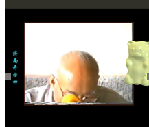

12佛门修行
修行要领
目标/重点/态度/信心
TeddieBearLee
11-02-2024
亲爱的太师父，已经好几年了，每天早晨都会念到你的名字请你加持我们，好想你！可是师父，我怎么也修不明白啊我的心一刻也没安过！我老妈现在纵然可以双盘打坐4小时甚至更多，但她也没有体验过任何真正的定或者静！我现在生活状态跟平稳，可能是一直没有婚姻和姻缘的关系吧，虽然过得很好可是却总是心有不甘，工作生活也没有一处能让我心安，我每天早晨边诵经边磕大头，只是讨个心安，师父我好需要一个可以让我为之振奋不顾一切的人生目标！师父您能告诉我一下吗我怎样才能拥有我真想过的生活？我有朝一日真能进入禅定吗，我觉得好像都是不可能的神话。
Taiguanglin
你现在需要明白的是，你身上不好的情绪，是你自己本来自带的，是你内心里有的，并不是什么外面的原因啊，生活有关系，就算生活不好，你修为高的话，你不会感到痛苦啊之类的，你只是那种不好的情绪一直压着，所以那样而已。你得先找个，什么发个愿，要做什么事儿，发愿普渡众生，不行那就发一个小愿，就像在楼里下面说的一样（楼里只贴吧内其它回复），建个小庙啊之类的，你得有个目标，然后往努力的去做，你就不会有那么多的烦心事，好吧。
sszhi
2024-02-14 19:01
4.如何增加学佛的信心和虔诚恭敬心？
Taiguanglin
信心，如何增加学佛的信心？普通人的信心是怎么来的？自信心，都是自己的本事呗。认为自己有本事，自己的学历啊，身份啊，普通人是拿这些当做信心。
但是学佛，特别是学净土的人，你的信心来自于佛菩萨。你要把这个事搞清楚，你不要以为自己很了不起，佛菩萨的加持力远远超过你的自力，你只要认为他们的力量给了你信心，这样就可以了。他们希望你去极乐世界，你也想去极乐世界，这就能去了，没有什么特别的复杂的东西。
(TAI师父自白)
Taiguanglin
加油，只要没死，修行就不间断。
灵光台
2024-02-19 18:27
2、若有未来初学，发愿护持Tai法；除了学习佛法义理，数学逻辑能力的锻炼，是否也有帮助？
Taiguanglin
你有那么多时间学习这个、学习那个吗？那你还不如好好念佛打坐，有空去放放生、多打坐行不行？一天打坐两个小时、四个小时都不够，还要去学习别的。如果你是工作需要，不工作就没有钱的话，那没办法，那得先吃饭嘛。但是如果你有足够的钱财过正常的生活，那时间还是用来修行吧，别干乱七八糟的事儿，都没有用的。
灵光台
2024-02-19 18:27
3、其他世间学问能提升护持能力吗？世间学问是不是也属于一种教化众生的方便“法门”？
Taiguanglin
世间学问和人辩论的时候倒是有点儿用。但是我都说了，不要跟人辩论。对你的生活有用的，你就学，对当下必须有用的就学，没有什么当下必要的，就不学也可以。人生短暂，古人不说了嘛：把有限的生命用在无限的追求知识上，最后就是个死。是吧？
常主真心，性净明体
2024-02-19 15:12
师父好，看到大家都有问题在问，我怎么一点问题都没有，您说什么我信什么，让怎么做就怎么做，一点疑惑都没有，就算是有问题，也是先自己找在书里找答案，找不到就看群里是否有答案，请问师父，没有问题是好呢还是不好？没有问题，自己感觉好像没有思考一样。
Taiguanglin
没有问题你还问问题？这是没有烦恼也得找烦恼做，这个意思吧？没有问题，你要是全都理解了啊，你自己脑子过一遍，你用你的语言把你对佛理的理解，你用你的语言来试着把它给解释看看，你可以随便在身边找一个人来跟他讲一讲，看他能理解不。你要是能把你理解的佛理全部用你的语言把它传递给对方，他又能理解了，说明你真的理解了，好不好！
链接爱
2024-02-21 18:57
2、作为一个凡夫知道了一切都是空花，越了解真相后，虽然没有很惊恐，但突然多了一种紧迫感和压力。我想怎么能让自己又了解真相，又融入世俗生活过得高兴呢？日子还是要一天天过啊，修行每个阶段让师父觉得蛮开心的有什么吗？我想高高兴兴的自在的修行，不想苦哈哈的，有可能吗？
Taiguanglin
凡夫坚持修行，一开始会有焦虑的情绪产生，但是你只要坚持修行，有了进境的话就开始感受到这种喜悦了。你别想着一开始就好像苦哈哈似的，那就别修呗，你就继续轮回就可以了。你回头看就是万丈深渊，你不向前使劲游，就会顺流而下掉地狱，这是肯定的。
链接爱
2024-02-22 23:27
师父，1、10年前师父说过16个字，其中“依法依己”里面“依己”是什么意思？我一直想不明白。
Taiguanglin
链接爱，依法依己，就是依靠学法，然后依法照做。依己，就是你得自己动起来，你得做，你不要去想着别人能帮到你什么。你要去靠佛菩萨是可以，但是前提是你得做、有精进的表现，有大愿，还有戒行、善行、修行这些都做到了，佛菩萨的加持也到了。你前面都不做到，一直想着占便宜的事，很多人就在修行方面想着占便宜，以为别人给你灌个顶，你就一下子提高了，没有这样的好事，是吧！往往这种好事到后面都是诈骗，所以还是得靠自己。
一首落花情
2024-02-27 15:30
请问师父，如果知道明天就会世界末日，今天要怎么度过才算是个修行人
Taiguanglin
一首落花情，知道明天末日，如果是我的话，我就打坐念佛，思念阿弥陀佛。还能怎么办？明天要死了，就今天开始拼命思念阿弥陀佛，争取一下子回去。
冰
2024-02-28 08:52
2、19-20年前后梦到一碗白乎乎的肉汤，我心想是肉所以不吃，算是通过戒肉的梦考了吗，师傅可以在合适的时间提醒一下我吗，提醒我向上走。
Taiguanglin
你的修行什么时候可以给你提醒一下，激励你？这个你向佛菩萨靠拢，别向我这个活人靠，你向佛菩萨求就可以了。要向佛菩萨求的规则都已经说了，先有发愿，然后是戒行、修行、善行，这些都到了就可以。
哈哈哈哈火真多摩尼
2024-03-12 13:04
2、师父，以您现在的阅历，能否对还在修行的我们提供一些避坑的指南。看网络上分享的因果，有的修行人十几年苦修，快要成就时因一些原因一朝全无，不得不重头再来，或者修行途中不知不觉沾染上一些麻烦，耗费很多时间才慢慢解决，继续修行等等，这些潜在危险该如何规避提前预防？
Taiguanglin
怎么避坑？就是要靠佛菩萨啊！不断地告诉你要靠佛菩萨，不要靠别人，也不要靠你自己，不要相信你自己！你要靠相信佛菩萨！怎么和佛菩萨产生感应？就是大愿，有发菩提心，然后是戒行、善行、修行。没有大菩提心也行，那就发个出离心也行，也算，也认可。虽然出离心成不了阿罗汉，但是，去极乐世界还是绰绰有余的。
去极乐世界和其它愿又不一样。所以说你先有个愿，然后就把戒行、善行、修行都做到了。然后，和佛菩萨产生感应就可以，但是，你也不能强求。你要是为了和佛菩萨产生感应，而刻意地去造作的话，它有可能又出现什么外魔入侵那种事情。所以还是先发愿为主，不是直接把目标定在我要和佛菩萨感应，然后就天天等着做梦，那不行啊！你得先发愿，然后才把修行、戒行、善行全给做到了，那肯定能和佛菩萨有了感应，然后，按照他们的指导的方法来修就可以了。
奇迹
22-05-2024
修行的动力主要来自哪里？如何能让自己有精进修行的心态？
Taiguanglin
奇迹，修行的动力主要来自哪里？就是来自于你的欲望当中，你非常想解脱生死，非常想成佛，那动力就来了。还有一种是痛苦当中来的，佛为什么一开始就说苦集灭道，讲四圣谛法先讲苦，因为众生都在苦当中。如果你觉得自己不够精进，那肯定是你的生活不够苦，你才想其他事情。如果你觉得人生都是苦，从头到尾全是苦，肯定会有更大的动力去修行的。
但是也没有必要主动去找苦吃，很多事情你只要想一想就知道未来肯定会变苦的。比如我小时候经常跟母亲去医院看那些患者，小时候不是很懂，但是我知道人最后肯定会死的，而且死得很痛苦，光是知道这一点之后，我就觉得未来很可怕。甚至我还问我妈她会不会死，我妈说她也会死，我问我妈死的时候，会不会和那些患者们一样非常痛苦？我妈说人都是这样的，都会痛苦地死去。
当时我听了这话就产生了很大震撼，难道人生就没有什么别的办法能死得痛快一点吗？如果不死就最好，但是好像没有不死的方法。小学三四年级时候就有了这样的想法，但后来接触佛法之后，就觉得这是真正解脱生死，永远消除痛苦的唯一的方法。有了这个想法之后，就专注地修行去呗。
掌南飞
2024-05-23 16:35
Tai师父好
1、人际交往中有些人因为我吃素知道了我信佛会对我进行道德绑架，哪没顺着他的意就说我一个信佛的怎么还这样，认为我信佛我就必须是个没脾气没缺点的老好人，否则我和我的信仰都是不好的，可是我也有情绪做不到面面俱到，但我又不想给佛教丢脸，那我是不是该隐藏自己的信仰？跟别人说我吃素是因为我讨厌肉就行了？师父您如果遇到这种道德绑架您会怎么做？您怎么看待这种道德绑架，您会以此为鉴让自己变得更完美被挑不出毛病吗？
Taiguanglin
掌南飞，道德绑架的问题，我个人的做法是嘴上不跟人争执，该做什么继续做，反正他说什么我就当耳旁风。如果他多次跟我说，我就说佛经里说了一切如幻，你在我眼里也是个幻觉而已，你说的全是屁话，我爱干嘛就干嘛，关你屁事，就这么说就完了。
你可能年轻一些，你爱怎样就怎样，我对这些人根本不在意的，继续做我的事，你能不说话就不说话，不搭理就可以。
Momo
23-05-2024
顶礼Tai师父：
1、修行，是一个离人越来越远的过程，包括一些最基本的人的认知，由粗到细的不断的淡化过程。弟子的问题是，是不是修到一定程度时，当修行人的执着、妄想淡化到一定程度，当善恶、好坏、甚至男女的分别都会形成障碍时，就必定得换一种处世方式，比如避世独修等。所以您才会讲，修行人最大的福德是有时间。
Taiguanglin
Momo，执着妄想淡化到一定程度就会避世独修……，应该是相反的吧，妄想执着淡化到一定程度反而不需要避世，而是刚开始妄想执着太多的时候强迫自己避世。
所以那些隐居修行的大部分都是初学，修到一定程度，如果是以大菩提心修行佛法正法的人，肯定后面还要出来传法的，不是大菩提心修行的人，有可能一直隐世到死去。一般那些人修为到一定程度就上不去，因为没有大菩提心的人是得不到正法传授的。
Momo
23-05-2024
顶礼Tai师：有一种方法：眼看着自然物，天空、白云、树木、花草等等，耳听着风声、雨声、读书声，而眼见无所见，耳闻无所闻，从而去觉知自己身后的场景。训练自己的觉知力。那么请问Tai师，这种方法符合佛法理论吗？打坐中，是否可以安住于这样的觉知状态中，从而入静？另外在一人独处时，是否也可处于这种觉知状态，训练自己不用五宫去感知这个世界，从而从梦中醒来？也有人把这儿的觉受叫成感知力__感应力__觉受这么一个升级过程，是一个心的提升过程，这是否合理，请Tai师开示。
Taiguanglin
Momo，我们修行是为了灭掉注意力，从而把六根境界全部灭掉，并不是让我们把觉知力提高，训练觉知力让它变得更敏锐，这就是倒着来了，违反正常的佛学修行方法。
你还是正常的学佛，把注意力关注到一点，从而把散乱的注意力一点一点灭掉，然后思佛，用参疑情或者参思情的方式把注意力全部灭掉，这样就可以摆脱有物质的世界，上升到二禅三禅这样高的境界。如果你一直训练注意力去听什么看什么，反而只能更多的陷入这个世界。
修行是往内观察，灭自己的欲望和执着，不是往外观察世界，感知外面的世界，从而训练感知力。是反过来往里向内修行，以灭为主，以舍为主，舍掉你的欲望和执着。尤其是后面的五根境界六根境界，都是要灭的，并不是去训练自己感受外面的世界，所以你说的这种方法是不如法的。
毛塵水
2024-7-18
顶礼师父！请师父教我们，修行路上，在身心疲惫、气馁的时候，自我打气加油的好方法。
Taiguanglin
毛塵水，身心疲惫、气馁，自我打气加油的好方法。修行人的信心不是来自于自己，而是佛菩萨的加持。但是呢，佛菩萨的加持是来自于你的发愿和戒行、善行、修行，这些基本都做到了，他的加持就会跟到。所以你气馁的时候，看看自己有没有做完，每天的功课量有没有做完，戒行、善行、修行都有没有做完。
然后觉得你的境遇不太好，那是因为上辈子没有积福的结果，你这辈子就继续积福就可以。
但是有时候对俗人来说，和别人攀比当中也可以得到一些幸福感，或者说给自己打气吧。你去看看比你更苦的人，就像佛说的，当你抱怨自己没有鞋的时候，看看那些没有脚的人，因为古代有刑罚是可以砍人脚的。
songer
2024-7-19
之前看宽净法师《西方极乐世界游记》，看到虚云老和尚,弥勒菩萨和阿弥陀佛累累嘱托“各教各派别，不要互相诽谤，说我正你邪，我道你魔，抓其片面缺点诽谤不止”时，一下对这篇游记升起信任，觉得它很真实。想请教您，都是听同样的故事，同样的法，为什么有些人能坚定升起正信，有些人会信着信着又疑了，是什么因果导致这样？那些起疑惑的人怎么判断自己的对错？又应该怎么做减少造业？
Taiguanglin
Songer，信和疑的问题，正常状态下，信才是常态的，因为没有情绪的情况下，本来是应该属于信，但是有了情绪之后才开始有疑，所以你要从根本上讲的话就是有了情绪，其次是业障，就是有妄想情绪，到了情绪这个程度之后又有了业障，所以他会疑。
但是有了疑之后又会怎么产生信，这里就得用功德来堆，你在佛法上修的功德够多，佛法上修的功德，不是其他地方，在佛法上，其他地方叫福德，有关佛法的叫功德，以前讲过的，你在佛法上前世修得功德多的话，就很容易产生信，对佛法产生信，但是功德不够的情况下就会产生疑，只能这么解释的。
还有起疑惑的人怎么判断自己的对错，应该是没有办法，他有办法能判断的话，他就不会疑惑了，他因为没有办法判断，佛说的四种颠倒，常、乐，我、净四颠倒，还有更高级的四颠倒，在讲经的时候都讲过了，这是凡夫的一种颠倒妄想，他认为把不对的认为对的，有人就这样，这就是只能说他的习气和贡高我慢心，业障啊愚痴这些个导致的。他要是能判断的话就不会这样，因为不能判断才有这种问题。
怎么减少造业？这个问题已经反复的在前面就已经反复的讲，在佛法上不要试图做什么破邪立正这类事，你觉得哪个好你就学哪个就可以了，不要去攻击其他人，这就可以了。
千湍盈泰
2024-7-19
顶礼老师，请教一个困扰我好久的问题（可能的话请尽可能多讲一些，因为这个知识是经典上、网络上找不到的，却很严重）就是如何修报身的问题。感觉自己还算是法器，想即生成就。如果不想往生的话，就涉及需要修报身。据我所知，道家经典上有先修阳神，再用阳神转化报身，把身体气化的一种说法。密宗有幻化身，报身成虹光迁出这个世界的办法。您能具体给我一个意见吗？如果不想往生的话，需要修到什么程度，才能保证不会下一世迷路（我平时读书很多很杂，修行还算根气，也有愿力，希望有今生更快捷、更高标准的修法）
Taiguanglin
千湍盈泰，不想往生的话，你是打算在这个世界继续修行成阿罗汉，成菩萨成佛这个意思吧？如果你是不求这些，你是求道家的，想求往，从永生这个方向就是活得很长时间修到阳神就差不多了。
至于你要想修佛的话首先得（发）个愿，大菩提心，然后是先定一个你要去的世界，你不去极乐世界，这个世界有地藏菩萨的，地藏菩萨的地府里有他的传法的结界，还有弥勒菩萨的兜率宫，这两个通常是最优选择，你首先选一个要去的地方，有了地方之后，你就明确的念某个菩萨，你要去弥勒菩萨那里，你就平时多念弥勒菩萨，多想着弥勒菩萨，你要去地藏菩萨那你就多想那个，这个是前提。
然后就正常的修行，你愿意修参疑情也行，参思情也行，这个正常的方法和其他修行都一样的，你先定个目标这才是关键。你要去哪里这是关键，然后修行就按部就班的走，你说你的根器很好，那就是每个阶段你可能花的时间比别人短而已，这个修法却没有任何变化都一样。从念佛打坐磕头这个做着，每天打坐时间逐渐延长，你把前面的义理都看一下，从文字妄想开始注意力，然后情绪逐渐灭上去就可以了。
依一卓玛
2024-08-15 11:26
顶礼师父！请师父讲解一下佛经对现代人的作用吧！之前师父讲的我都听了，但是大部分佛经是佛因时教授，那么我们现在学习佛经里的哪些智慧呢？是了悟佛讲经的道理呢？还是要照佛说的做呢？这里有点迷糊，请师父开示！感恩师父！
Taiguanglin
依一卓玛，学佛经，不是什么学佛经什么智慧的问题，而是我们认为佛法是世界的真相，宇宙的真相。然后学佛最初级的目的是解决痛苦的问题，个人的痛苦，生死轮回的痛苦，生老病死，还有其他的都加起来人生八苦，这个知道吧？这是一个。
还有一个是想知道真相，佛法是这个真相，它教你怎么解除痛苦。苦集灭道一开始讲的就是这个。
是了悟佛经讲的道理吗？就是真相而已。所以学佛要么是你觉得自己很苦，我想解决苦，要么想知道真相，无非就两个原因。照佛做的做，佛是从苦的角度看的，佛是没有痛苦的人，所以我们也想解决这个痛苦，成为一个没有痛苦的人。
所以向佛学习，向佛学习不是单纯的学佛理，而是学做佛，像佛一样思考，最后能成佛。不是从佛法那里获取什么太多的利益，一开始肯定是有利益的，在一开始对人生是有一定帮助的，但是最终还是要成佛，解决一切问题，最后成为佛，是这个方向。
还有智慧这类的问题。简单来说，你没有妄想分别执着的话，自然而然就有智慧了。智慧不是从外得来的，准确的说不是从学习佛经当中得来的，智慧本来就有，是因为我们有妄想分别执着，被覆盖住了，所以显不出这个智慧。佛经告诉你这个真相，让你把妄想分别执着一点一点灭掉，然后智慧就自然显现，是这个过程。
大乘佛理都是这么解释的，不是智慧从外而来，学佛也不是要了悟什么事情，而是知道真相之后，现在开始改变自己，好好修行，然后解脱痛苦。让自己解脱了，还能带别人一起解脱，因为别人的痛苦也会反映到我们身上，让我们也痛苦。
断I章
2024-8-16
Tai师父好，既然佛菩萨是客观存在的，那么念经念咒时为什么需要以信心来念才有作用？“信则有”与“客观存在”不是矛盾的吗？而为什么信心越强，效果越好？
Taiguanglin
断I章，信心和客观存在的矛盾，佛菩萨的意识遍虚空，这是客观存在的事实，但是信和不信这是两种不同的频道，你可以理解为广播频道，如果你的频道对了，就能接收到他们那边的频率的广播，你的频道错了，频率没对上就接收不到，就是这么个逻辑，你相信的话就能得到他们的加持，他们的帮助。
如果你不相信的话，他们的帮助就会挡在你的不相信之上。因为这个世界是唯心造，你的不相信也是一种心态，使得让你处在那种不相信的状况下，就是一种比较孤独的状态，凡事都要靠自己。所以说并不是信则有，而是信就能得到加持和帮助，不信就得不到，应该这么解释才是对的。不是信则有，不信则无，并不是你妄想里产生的东西，他们是真实存在的。
但是你越是信心越强，说明你的频道调的越准确，和他们心心相印，更容易得到他们的加持和帮助。如果不相信他们存在，或者不相信自己能接收到的话肯定是收不到了，因为“不信”这个东西本来就是凡夫的一种愚痴。
再反过来说，从上往下，从这个世界产生的早期开始往下看的话，人在阳神状态下，不包括阿罗汉和菩萨那边，就是在到了凡夫之后，有阳神的状态，到二禅三禅这个地方，阳神是纯光体，发光的球体，都是一个细小的光子组成的，这些光体是可以重叠在一起的，所以这些阳神状态生命体都是有他心通的，可以相互之间毫无隐瞒的可以了解对方的心思。
但是等有了肉身之后，到了初禅天开始形成肉体，有肉体之后相互就不能重叠到一起，所以他心通就消失了，不能重叠的情况下无法读取对方的心思，才有了用语言交流的方式，佛经里说有些世界是用香气交流的，那边是用气味交流，那就是属于鼻根的。
我们是用舌头说话，也相当于算是用舌根交流，到了这个交流的界面上才开始出现“不相信”这样的心态。不相信的前提是什么？就是不能读懂对方的心思，所以就有了不相信。所以说人本来是相信的，人本来就是单纯的人或者纯洁的人，他是什么都相信的，看到什么就信什么，别人说什么就信什么，这是正常的心态。
而人开始产生不相信，是因为他无法了解对方的心思，这是一点。其次是有业，前世有业，一般疑心重不相信别人的人，并不是什么自己被人坑过了所以这样，而是自己坑过了别人，那些疑心重的人都是前世已经坑过别人，是造了恶业之后，那些被害众生的那些不好的情绪反映到他们身上的时候，他就会变成疑心病，所以我们看这个信与不信的问题，把相信作为常态，而不相信作为病态来看，这是正道。
掐口
2024-08-19 18:28
请问与人互动容易不舒服，特别对视的时候，该怎么对治。
Taiguanglin
掐口，与人互动容易不舒服，特别对视的时候，对视的时候那你是斜视吗？你不敢对视就是斜视吗？在相学上不敢对视的人，不正眼看人的人，都是心术不正的人，你是这样的人吗？你心里老想害别人还是怎么的啊，想占小便宜还是什么？我觉得如果是一个信心不足的人的话，你的信心来自于哪里？
先判断这一点，普通人的信心来自于什么？自己的个人能力啊，学历啊，过去的成就啊。但是我们修行人的自信来自于佛菩萨的加持，但是佛菩萨的加持呢，是我们努力地修行结果引来的。我们也坚持做戒行善行修行，然后有大愿，这样的话就引来佛菩萨的加持。
你只要感受过一次的话，就相信原来佛菩萨真的在加持我，真的在保护我，那信心就来了。以后遇到人也没有什么觉得不舒服、低人一等这种感觉，所以坚持修行就行，该怎么对治，我觉得吧，一种是让自己的信心增长的心态，还有一种是俯视对方，从上往下看这样的。
第三个，第三者视角看对方，也有这种方法。你觉得你是个修大乘的人，其他人就是普通人，你以悲悯之心观察对方，看对方就没有什么不舒服的。就像佛经里说的，遇到老的女人就想起这个是我的母亲，年轻的女人就想起这个是我的孩子啊，这样的方法。而且未来都要度他，对所有女性以这样的心态来看，然后生起要度的念头，就可以灭除邪念，以这样的心态来对待别人。
你也一样，你觉得见到人有点信心不足了，不敢对视了，你就想着他也是和你有缘的人，你未来要度他，有了这样的想法的话，你这种不太好的心态会减少吧，好了。
Jhone
2024-11-12
想请问Tai师父，您的修行方法是打坐，磕大头，念经，放生，吃素，可几乎未提及过克服自身的贪嗔痴，请问这对于修行解脱不重要吗？
Taiguanglin
下一个问题，Jhone，打坐，磕大头，念经，放生，吃素，可几乎未提及过克服自身的贪嗔痴。打坐、磕大头、念经，放生、吃素，就是针对灭自己的贪嗔痴，不能说针对性的修行，但是这个过程当中你的贪嗔痴慢慢都会减少的。
贪嗔痴，所有的欲望，痴是什么？前面讲过，痴对凡夫来说就是不懂因果，你只要相信因果，就算有智慧了，不是痴了。你学佛那不就算已经比别人要有智慧多了。
贪和嗔是什么？都是情绪方面的，贪是欲望，欲望也是从情绪升起的。你的修行持续进行，各种情绪也会慢慢减少，欲望也就会减少。所以你所说前面这一系列的行为，只要坚持几年下来，你的贪嗔痴都会减少的，不是不重要，你这样做的过程就是在减少的过程中，好吧。
偶米大
2024-11-13 15:47
2、我每次出远门都会查看万年历的宜和忌的习惯，这种是不是有强迫症？该如何消除呢？
请师父慈悲开示.
Taiguanglin
你说的查看万年历的宜和忌，这是一种信心不足。我们修行人的信心来自于佛菩萨的加持。佛菩萨为什么会加持我们？因为我们有大菩提心，我们要做的就是佛菩萨做的事情。你有这样的想法，佛菩萨的意识遍虚空，我知道他一直在保护我，这样想的话百无禁忌。
我做所有的事情都是为了普度众生而做的，哪怕是我睡觉吃饭，都是为了更好的普度众生来滋养身体，以这样的心态来活的话，没有什么好禁忌的，任何事情都不会有什么问题。
甚至有些人，比如说，我也不说别人，就是说上边突然告诉我，你到几岁为止你得做事。这么一说，我就知道，在这段时间我绝对不会出事的，死不了，也不可能出大事。因为他们要求我这么长时间来做事的，既然做事，肯定我的大部分需求都会满足。有这样的信心的话，每次最多的应该是问问自己，你做的每一件事情是不是符合我发的大愿。哪怕一些小的执着，比如说想吃点好的，这也是为了好好修行，然后普度众生，以这个目标来做的，那也可以啊，每个人都有这样那样的习气，也多多少少都有点喜好。
你不能把自己当做现在已经成为菩萨的那种状态来要求，所以你的强迫症或者习惯，我认为这就是你对自己的信心不足，所以缺的就是大愿吧，好不好？
圣辉
2024-12-12
阿弥陀佛， 请师父慈悲开示：
1、如何速成阿耨多罗三藐三菩提，成就一切如来境界！或许我不该这么问吧，但又想问。
Taiguanglin
圣辉，如何速成阿耨多罗三藐三菩提？肯定是先有大愿了，你得有普度众生的大愿，还有功德，还有精进修行。所谓的速成，这个是后来传到中国之后出现的说法吧。一般情况下，佛法修行都不要求这种速度，所以前期修行很多初学们，都是在追求很多自己的利益，这个时候得到的加持明显是少的。对于速成阿耨多罗三藐三菩提，是没什么帮助的。不过只要你进入佛门修行了，那一开始就算求个人的很多愿望，随着修为的不断提高，终究还是会放下，然后求解脱的。
王鹏
2024-12-13
顶礼Tai师父！其实没有特别想问的问题，但是又很想多跟太师父结缘，就汇报一下我的情况吧，因为身体不好，坏毛病也不少，大概2013年开始接触打坐并开始打坐，2015年看到您的帖子了，打印了一份至今保存，期间也反复看过几次，觉得特别好。
所以也开始做大礼拜、读《地藏经》。那几年身体状况、精神状态有很大改观；可是后来还是懈怠了，《地藏经》读了一年左右就没再读了，一边打坐一边读，大礼拜时做时不做，就是做也做的少了，头两年是可以每天五百多个的，打坐倒是一直有但也没什么长进，降魔坐接近两小时吧，身体一直动的厉害，就是修行上没有个明确的目标，生活中事也比较多压力较大；然后最近几年身体越来越差，总感觉可能活不了多久了。
所以今年初又发心要好好修行，多次反复，每天坚持打坐、大礼拜、控制饮食，吃素有八、九年了，但是好吃，农历七月开始每天读一遍《地藏经》，并发心只要活着每天都会读一遍，然后大概两个月前机缘巧合又看到太师父的东西了，也请回了《坐禅1》、《坐禅2》并基本看完了，《坐禅2》我的感觉还是比较匪夷所思的。
但是也是信服的，修行也坚持得越来越好，每天打坐两个多小时，之前一直降魔坐，一周前开始莲花坐跟降魔坐每天换着做，莲花座可以两小时但右膝盖翘很高，降魔坐接近三小时，但还是身体动的厉害，下腹部有病有病灶，打坐时感觉明显，大礼拜五百个，《地藏经》一遍，其它时间尽量念阿弥陀佛，打坐和大礼拜时念往生咒。
Taiguanglin
王鹏，这是写了一段自己的修行，总之还是要赞叹啊，坚持修行就好。但是你在这里没说发愿的问题，发愿很重要的，你的一切行为到底是以什么为目的，为导向的，这个很重要。哪怕是往生极乐世界也好，如果你发愿普度众生的话更好。正常的所有修行都在佛菩萨的加持下进行，所以如果有愿的话，肯定能得到佛菩萨加持。所以你的这些小问题都不是问题，肯定能熬得过去的。
王鹏
2024-12-13
现在也发了大菩提心并每天发，今年来身体状况和精神状况也有很大改善，过了年我也五十三岁了，修行目标也越来越明确了，想争取去极乐世界，想度跟我有缘的所有众生。Tai师父您说过修行最大的障碍不是冤亲债主而是我慢和懈怠，我会时时铭记，真的非常非常感激您，再次顶礼Tai师父。
Taiguanglin
王鹏，我上边刚看了，你长段的修行的日常功课，然后说你上面没有提到发心，你在这里又提到发心了，很好啊，有愿就好，有大菩提心必然能解脱，未来必定会成佛的。有这个大愿才是真正的走向解脱的修行。如果没有大愿，都是在这个世界里轮转的，哪怕是求福报也好，求出离，光靠出离心也是出不去的。
只有发愿普度众生的时候，佛菩萨的加持力会跟上。
所以我相信你这辈子肯定能往生。现在是五十三岁，按正常现在的平均年龄来说的话，至少要二三十年吧，时间是肯定够的。单说在往生这个事上，时间是肯定够的。现在就看是怎么积福啊，还有持戒，这个问题了。
郑勇
2025-2-12
弟子在磕头时，一是忏悔过去的恶业，二是磕去自己的贪嗔痴慢心。在思考自己慢心时，意识到与其一个心一个心的对治消除，不如直接对治我执，如果除去了“我”，自然就没有贪嗔痴慢心了。
随后开始感悟“我”，我在娑婆世界为凡夫，受天地法则管理，所以在世间事上，尽可能的行善断恶，随顺众生，但是内心要明白，时刻提醒自己去除“我”。尽可能的提醒自己，保持借假修真的相续力量，尽量保持世间事的任何反应背后，都有上帝视角，让自己摆脱“我”的感受。以此方式长期反复练习，让自己背后的清醒意识增长相续的力量。随后的应验中，我发现几乎没用，遇到事时，习气的力量太大了。
但是这个意识提起来了，我会意识到自己没有保持心不动，没有做到借假修真，没有做到世间的自己与消除“我”的融合。然后继续应验，我察觉到自己在某些事上，已经能想起来了，然后调整自己的心态，应急时很难想起来，但是缓慢的状态下，想起来的次数会增加。这个过程产生了一些疑问，想请教老师:
1、这个方法的理念是否正确？这个方法的修行次第是否正确？是否值得在此下功夫？
Taiguanglin
郑勇，你说的都是一种生活态度，你说修行那也算修行，但是并不是真实的打坐磕头念佛这样的修行行为，你只是改变了对人生的认知、态度而已。
你说要靠这个消除“我”，这是不可能的。因为“我相”是在阿罗汉境界的分别心上产生的，只要你是带着肉身生活的凡夫，这个“我”一直在，不可能彻底消除的，所以不要在这个方向上过多地执著。
你用这种心态来看待这个世界，理解这个世界，理解你的命运，这个倒没有什么；但是不要把它当作真正能够解脱的一种修行来认知，那样的话反而解脱不了。还是努力打坐磕头念佛，这才是正确的方向。
三颗橘
2025-2-13
老师好，现在很多修行人博闻强记，涉猎广泛，研读经教，但是很多人都不注重打坐参禅。给我的感觉是他们很对佛理都有自己的一套解释，辩才也不错，能够自圆自说，有些甚至还有一些常人没有的功能。他们通常说看住心，安住当下就行，修行在生活，甚至讲的云里雾里高深莫测，不用打坐也能成功。似乎就是那种理悟了然后看住心，平常心，读读经，念念咒，然后等待突然有一天智慧突然大开，把六祖慧能当榜样，这样的修行陷入误区了吗？
Taiguanglin
三颗橘，你问的这样的问题，我已经回答了很多遍了，你只要不修行、不参禅、不打坐的话，你就灭不了六根境界。你一直看，一直听，那对眼睛的执着、对耳朵的执着、对身体的执着，对身体这个“动”的执着，你都灭不了。它一直在用，你怎么能灭呢？你得让身体休息，不听不看，维持这种状态，每天练习，慢慢地把这个习气都灭掉，是吧？这逻辑很好理解吧？
如果你是一个沉迷于打游戏的人，每天一直都在打游戏，你怎么能戒游戏呢？你要戒游戏的话，你本来是一天打八个小时、十个小时，拼命打，现在起码每天少打两个小时。本来打十个小时，一天从早到晚一直痛痛快快打，疯狂地打，那么今天就少打两个小时，打八个小时。至少两个小时，我干点别的，我休息一下。
这样每天坚持，然后觉得这两个小时，不那么煎熬了。本来是有游戏瘾的人，哪怕两个小时也很煎熬的。开始不那么煎熬，那这八个小时游戏时间再减少一下，再减少一下，这样慢慢减少，最后就可以摆脱这个游戏的控制了，是不是？
对肉身的执着也是如此。你不打坐参禅，那就没有办法彻底灭除对肉身的执着，所以就没有办法摆脱肉身，这个逻辑很简单的。
应对懈怠退转/修行进步
zhugewuyue
2024-02-17 16:46
师父好，近两年弟子学佛没有刚开始那么精进，甚至开始有些怀疑，出现懈怠、退转状态，沉迷受阻于眼前的安乐，请师傅指点后续该如何修行
Taiguanglin
zhugewuyue，你得先发个愿，然后定个目标。发个愿，发不了大愿，那发个小愿也行。比如我在短时间内，要念多少遍经啊，定个目标，然后去做嘛，还能怎么办呢？谁不懈怠，我一开始都很懈怠的，就算出家也有人懈怠，也有人经常早课逃跑，然后被罚，这个是很正常的事情，只能坚持，继续坚持。
极乐之光
2024-02-15 21:51
顶礼师父！！！
我帮太师微信群“吃瓜群众”请问师父一个问题
师傅好，以前弟子刚开始接触佛法的时候，十分精进，十分信仰，但近两年好像对佛法产生怀疑的念头，感觉自己好像只能每天诵经，求佛菩萨保佑加持，其他什么也做不了，对身边的人和事，无能为力。 反观道-家，卜-卦，风-水，符，箓，等技能，虽没有深入了解，但至少也能指示，趋-吉，避-凶。 目前的状态是功课还是每天在做，信心不是很足，也明白可能是我执出现了问题，请泰师傅解惑并指点后续修行。
Taiguanglin
信心不足，那就定个目标吧，工作的目标也行，还是修行方面，定一个目标。你打算，最简单的来说就念多少遍经，每天要念多少，定一个，然后按照计划推进就行了。如果觉得修行没有意思，那可以先放一下，然后去尽情的享受生活，啥时候回来，想修的话，再修就可以了，不要太纠结这些问题。
zhugewuyue
2024-02-17 16:46
师父好，近两年弟子学佛没有刚开始那么精进，甚至开始有些怀疑，出现懈怠、退转状态，沉迷受阻于眼前的安乐，请师父指点后续该如何修行？
Taiguanglin
因为没有大愿、没有愿望、没有一个明确的目标，所以开始懈怠。你得心里许个大愿，你要做什么：你要成佛，你要普渡众生，还是出离，你得有个目标。
那这个目标怎么来的呢？就是我把这个世界给你画的清楚一些，然后你把目标定在那，你不知道这个世界是什么样，那你也没有办法把目标定在远处，只能在你看得见的地方，是吧。
我现在讲法，就是告诉你这个世界是什么样子的，最终的目的地在哪里，你如果不去那里，不去向那个方向努力的话，你大概率就是下地狱，哈哈。不是马上下，但是你只要在这个轮回的话，最后都是下地狱，这是肯定的。
恒行无极
2024-03-04 10:49
顶礼太师父。有时候心里明白哪些事是对的、需要去做的，但就是拖着不干，这是阳气不足吗还是信心不足，请问如何对治？
Taiguanglin
恒行无极，简单来说就是你脑子里妄想太多，想法太多。你先念咒吧，或者念经。
因为你脑子里想法太多了，所以才会想着拖延。如果没有什么想法的话，想到什么就会马上去干，想到什么就会马上行动。但是你脑子里想法太多，就前怕狼后怕虎，各种顾虑想起来，还有懒惰的情绪也会起来。所以先念咒或者念经，先把这个脑子里的文字妄想给灭掉一大半以上，然后心态就平了，行动力也就上来了。
有人问老和尚，开悟之前和之后有什么区别？老和尚说：打柴的时候他就打柴，烧火的时候他就烧火。以前没有开悟的时候，是打柴的时候想着烧火，烧火的时候想着打柴。现在开悟了，打柴的时候就专注于打柴，烧火的时候专注于烧火。
你现在说这种拖延症，一直想拖下去的这种心态，就是脑子里妄想太多的缘故。你可以先把这个妄想灭掉，先从文字妄想开始灭掉，先念咒、看看经。
净红
2024-03-12 13:59
师父上午好。1、请问如何做到对手机想看就看，不想看就停下。特别是向抖音这种可以无线看视频，电视剧的。心里知道该停下可是就还想看，到底是谁想看？停下后觉得自己浪费了诵经磕头的时间，然后很懊悔。就算戒手机后面再来实验手机还是容易停不下来，请问这是妄想多吗还是？
Taiguanglin
净红，闲不住，要想看电视，想刷刷视频，这都正常，一开始都这样，没有什么特别的办法，只能拿出时间来好好修。你如果非要看手机的话，那就看一会儿，然后再修。
翅
2024-03-25 11:28
顶礼Tai师，修行断断续续，请问有什么方法可以让自己不懒惰。自制力差，控制不住自己。感恩Tai师！
Taiguanglin
翅，你得先有个大方向大目标嘛，我们说的发愿，有个大目标，然后把这个大目标再分解成几个小目标，从当下看，当下能做到的小目标开始。
我是并不建议，以修行的量，念多少遍经啊，作为功课的标准来用，而是按自己的心态的变化来看的。但是像你这种情况，就得给自己定个量，每天做什么，一个小时、两个小时这样定个量。只要坚持够了，就可以了，其它时间该干嘛干嘛，不用太强迫自己。
修行是为了减少烦恼，不是为了烦恼之上再增加烦恼。所以只要每天坚持至少两个小时，基本修行是往前进的。两个小时不行，那一个小时也行，一开始半小时也行。
小Tai粉
20-05-2024
3、同体大悲心已发，戒肉梦考已过。求师父指点指点批评我。我觉得自己很贪心，一个感觉我和观世音有缘分、有感应，就想要不要专门修大悲咒。另外一个，又感觉生活上很多事情不知道怎么抉择，疑心也很重，想着要不要专门修地藏占察法。但我又修不好，然后每天就打妄想，想着怎么选，念啥都不能专心精进。而且很馋吃的，一些粉面奶茶零食吃饱了还想吃。这半个月退步了蛮多。好消息就是，这两天刚从学校宿舍搬出来，去外面租房住，这样就可以不吹空调。坏消息就是精进不起来，吃得太饱，打坐不太行，然后生活学习老是牵着心，定不下来。求师父指点狠狠批评我一下。
Taiguanglin
下面这个问题，你几岁了？感觉你的话都不是年纪大的人说的，感觉像上学的学生。很多问题你自己都批评完了，还有什么好批评的？
每个人修行都是这样，一开始有很多杂念，也有点贪得无厌的感觉。这个也想修，看了那本佛经说法门很厉害，就想修那个，跳来跳去的，什么都想修，没有办法一门深入，一开始都这样。你要选一个法门来精进地修行，至少修个三年左右，再考虑修别的。你现在决定修观音法门，那就先修三年再说。
至于其他的各种小毛病都很正常。世界上哪有什么人一开始就没有毛病的，因为毛病太多才要修行。所以努力坚持修行，完成每天的量。
秋晴
22-05-2024
顶礼Tai师！最近有点靠自己修不动的感觉，每天的功课还在做，但经常昏沉，喜欢听一些善知识的音频（像杨定一博士、双生紫焰、丁愚仁老师，也跟着共修过，您了解不，可以帮助判断一下吗？），感觉他们话语中都有着深深的慈悲，而且他们的声音就像有能量一样，能直接把我带到一个很高的频率。下班没事的时候我就喜欢听着音频在那个状态里待着，感觉在充电一样。我不知道我目前的状态是不是有问题，还是说一切的安排都是我现阶段需要的？请您指点。
Taiguanglin
秋晴，修不动的感觉，每天的功课还在做。只要功课继续在做就行。发愿、戒行、善行、修行这四点做到了，修行就会在进步当中，但要达到质变的话，量要积累一定程度吧，所以不需要太着急。
听这些老师的音频，你觉得对你有帮助的话就听听，这个没关系。只是我个人认为既然你学的是佛法，我们都认为佛法是世界的真相，让你解脱痛苦最终极的法门，所以尽量多听一些善知识的音频，少听世间的说法，西方的说法。我倒是在B站里看过杨定一，就是世间法门而已。双生紫焰、丁愚仁老师我都不知道。
会立
25-05-2024
顶礼Tai师父！师父！我做事没毅力，学东西也不能深入理解。严重的拖延症。修行很喜欢也是坚持最久的，但也没毅力，不精进。怎么办啊？做功德求菩萨让自己有毅力，学东西深入扎实，做一件事时能做出好的成果吗？能实现吗？
Taiguanglin
会立，没毅力，不精进，拖延症，这些都很正常，大部分人多多少少都有这个事情。这得有什么事件作为契机，一下子让你感觉到时间紧迫，尤其在修行方面感到时间紧迫的时候，才会迸发出这种毅力，才会精进修行。但这也算每个人的业，所以也不需要太担心。
你要是觉得有问题的话，就给自己定个每天修行的量，一天修行两个小时，不管做什么，打坐、磕头、念佛，什么都算，坚持两个小时或者三个小时、四个小时，这么定个量，上午几个小时、晚上几个小时，这么做就可以了，不需要给自己定个其他特别的目标，就按量来算。
至于求佛的事情，佛的加持力可以让你在短时间内改变心情，进入一个更高的境界当中，但这个是短时的、暂时的，并不是你的真实修为。所以在遇到一些关键事情的时候，可以求佛菩萨一些短暂的加持，比如你遇到一些困难的事情，短期内解决不了的时候，让你可以短期内提高智慧之类，但不可能永恒地把你的意识层面上提高一个境界。
所以你要求佛菩萨的话，你就求具体的能求得到的事情。你要学某个技能，那就让学技能的事顺利一些，你就有可能更容易找到一些好的师父，更好的机缘，这种可以求。
定興
19-06-2024
顶礼师父，请教师父一个问题，原来吧每天念经，打坐，磕头，持咒都挺精进的，近几个月，突然都提不起来了，念经念不下去，打坐打不下去，磕头磕不下去。这是怎么回事呢。这两个月经常去寺院，接触过不少人，有的人一走进身边，头就嗡嗡的象过电一样，回来后就特别疲惫，晚上总做梦，从那以后，就提不起做功课的念了，和这个有关吗。怎样能让自己重新恢复精进修行呢？
Taiguanglin
定興，修行到一定程度之后，就会出现新的冤亲债主，或者开始下一段业，这个时候就会产生一种懈怠的心态，这个很正常。
但是你下面说接触过一些人之后开始变了，有点感觉像是俗话说的撞邪的那种状态，那你还是念《大悲咒》或者《楞严咒》这两个试试看。
还有晚上梦多，我以前也有一段时间这样，所以我把写《大悲咒》的一个小本子放在枕头底下睡觉，然后每天拼命念，念到一定程度之后夜里也会自己念，这样的话，这种不好的梦也会消失。这个倒是很小的问题，不是什么大问题。
你说怎么让自己重新恢复精进修行，最大的问题就是没有愿力。
忆佛念佛
2024-08-17 19:59
老大，如何摆脱摆烂，躺平，沉迷手机，露水道心……您觉得根本在哪里？
Taiguanglin
忆佛念佛，比较懈怠，什么原因？一个是没有明确的目标，还有一个就是现在过得挺安逸，没有吃过苦。一个修行比较懈怠的人，我是建议去寺院啊什么地方一起修行，有些人是适合一起修行，有些人适合一个人修行。
像这样懈怠的人是适合一起修行的，相互监督，每天被迫，一起上殿礼佛一起打坐什么，这样你去先参加个七天的或者最短三天这种活动，看看你能不能坚持下来。可能坚持的过程是有点烦躁的，有点累的，但是你出来之后，结束一段时间之后，会明显感觉到自己有所进步了，这样的话你更愿意想去参加。
当然这个也是一种方便法，有些人就非常喜欢参加各种佛七啊各种活动，以至于到全国各地都去参加，这个就没必要了，就到当地参加，在你的经济情况、时间都能承受的情况下，去参加当地的那种活动看看吧。只能说太安逸了，生活太安逸了，吃得太饱了，没有承受过什么太大的痛苦，才有这样的心态。
端庄诚静Kt17
2024-08-17 18:07
顶礼尊敬的师父！
师父，我从小学五年级看第一部小说《神雕侠侣》开始，一直到现在。当中断断续续的戒，最长的一次大概有两年没看，但是现在有时还是忍不住看。师父，我晚上念《地藏经》，半个小时就困的不行，强行念下去，有时候也会睡着，打个盹醒了再念，然后又打盹，但是看小说就不会，看一夜都不会睏。师父，怎么样能戒掉手机看小说，刷视频，让念《地藏经》像看小说一样，也可以整夜不睏？
Taiguanglin
端庄诚静，看《地藏经》会犯困，这都很正常，按照正常说法那就是业障。你可以按照《地藏经》里的说法来做，《地藏经》里不是说了吗，无法读大乘经典的人在地藏菩萨面前怎么怎么做，然后按照那个仪轨发愿之后做一下看看，一次不行再做两次，两次不行多做几遍。
然后说不定地藏菩萨把你给点化一下，你就脑袋就开了，以后就不那么困了，有这样的方法。要么就是发愿之后继续坚持，一开始都有这样的那样的障碍，都是坚持过来的。打个盹都没有什么，有些人是念经，不好的情绪就会发作起来，有些人是念经就会身体上的障碍，先天性的疾病就会发作。
我个人是因为先天性支气管不太好，所以在寺院里修行的时候参加礼佛，还有打坐的时候每次支气管就会发作，咳嗽又干呕，痛苦几分钟我就会过去，平时就没有，一打坐一礼佛它就出现，还有几天不磕头的话，不好的情绪就会开始升起来，经常每天坚持磕头，哪怕一个星期磕五次，这样坚持，磕头的时候，念佛观佛念咒持咒，反正正常的修行都做，那样的话就没有事，但是几天不磕头就会开始升起不好的情绪，那个时间段是这样的。
所以每个人都有这样那样的毛病，所以才要修行，打盹儿不算什么，坚持下去就行。
冰块小透明
2024-9-14
明明知道念经打坐学习对自己有益，总是在做之前先做其他不相关的事情，即使没什么其他事，心里想着去做正事，可拖着拖着一天就过去了，心里总想着工作生活稳定了才有心思去做，这是不是师父之前说的妄想太多而导致拖延。内心感觉不全是拖延的问题。不知道如何是好。
Taiguanglin
冰块小透明，明明知道念经打坐学习对自己有益，但是有拖延症。这个前面也讲过了，因为一个是没有远大的目标，还有一个是当下你没有那么迫切的需求，可能你现在过得挺好了，所以没有那么迫切的需求改变自己，所以有拖延症，反正这都很正常，谁没有点拖延症。
你只要给自己定个时间，定个量，每天坚持做这个量就可以了。所以一开始不要给自己定的量太多，一天半个小时开始，一点一点增加就可以了。
实际上现在的很多人都有拖延症，多多少少都有，哪怕出家也一样，出家也就十几个人一起生活，肯定有人迟到，礼佛的时候肯定有人迟到，有那么一两个是常年迟到的，没办法人家就有那个习气。
潮起又潮落~
2024-11-10 13:11
3、弟子通过打坐身体的疾病好了大半，法令纹消失了，皮肤也变好了，但是整个人的认知又懈怠散漫了，就想保持这样的功课就行了，没有生病那时候的勇猛心了。这个Tai师父有啥好的方法吗？要跟印光法师一样，写个死字天天提醒自己吗？
Taiguanglin
还有你说的人比较懈怠散漫，这个怎么说呢？以前在寺院里对于那些人，师父最愿意说的话，就是说你没有信心，还有就是没有目标，没有明确的目标。至少这一生我要达到哪个境界，就算达不到四禅八定那个程度，那起码我先达到个初禅可以吧，至少初禅能保证在修为上能够往生的程度，虽然不管什么福报，先看修为。
然后就是发愿，要往生的这个大愿要时刻发，每天做功课的时候想一下，我要往生极乐世界，这里的事情都要放下，这样的想法每天反复地发一次。主要就是当下日子还算过得好，你没有那么强烈地痛苦了。你说疾病好了大半之后，人已经满足了，安住于当下的这种状态了，觉得这样就可以了。
实际上，你越是安住的时候，未来可能会出现更不好的事情。这不是诅咒啊，修行都是这样，修为达到一个阶段之后，马上就会出现业障，可能各种，有可能是病痛，有可能生活上的不顺，破财啊种种，这些事会出现一阵子。然后过了这个阶段，修为再往上提升。
所以我建议你还是有这个大目标比较好，至少起码是往生极乐世界，在这一生剩下时间内要达到某个状态，某个禅定，修到哪个程度。还有福报尽量每天做一点，每个月坚持放生什么的，这样坚持做，只要坚持做了，你稍微懈怠散漫，这都是可以的。
因为佛经里说了，拿弹琴比喻，也不能一个人疯狂地精进，这样你有可能会崩断自己，该休息的时候就要休息，然后把每天定好的功课量做就可以了。
合严
2024-11-11
顶礼师父，年后几个月很精进，每天都打坐几个小时，诵经，但最近几个月有点懈怠，根本不想打坐诵经，请问懈怠期应该怎么度过啊。
Taiguanglin
合严，懈怠的时候怎么办？本来修行就是这样啊，精进一段时间就会业障发作，下一个业障发作，挨过去之后又会进步，所以每隔一段时间都会有懈怠或者什么不好的事发生。
这个时候尽量坚持，如果坚持不了的话，你可以找点别的事来做，你可以去哪里做义工，什么帮助别人的，这种有功德的事可以做。
我以前也是，环境不允许的时候，我就绣十字绣了，绣了几个观音菩萨像，绣完了把它挂在墙上，看到的人都问这谁绣的，我绣的，大家都很吃惊，我一个大男人会绣十字绣，而且我可以一坐就三四个小时一直不动地在那绣。
人都这样，每个时间段都不一样，修行本来就是有松有弛的，该懈怠的时候，稍微懈怠一点，去做点你平时想干没干的事情，因为这个事情本身也是一种业，不是别人跟你互动之后的事情全叫业。还有你自己发愿了，我想怎么样，这个事儿没有办的话，就有可能对后面的解脱有影响。还有一些，过去你想干的事没彻底干完，这个也是。
所以我有一段时间就打了半年的游戏，因为小时候想打游戏没打痛快，一直心里就有一个遗憾吧。我怕它影响未来的事，所以有时间了，就去痛快打游戏，把想打的游戏全打通了，然后心里就释怀了。所以说你懈怠的时候，你可以做一些积极的事，对你有影响的，像过去没有了却的心愿去做一下。
懈怠很正常，我们不可能一天到晚就拼命地打坐，这个对修行整体的解脱并不是太大的帮助。能够解脱最困难的主要还是消业，所以你觉得是业障来了，那就痛快地去解决这个业障问题就可以了。也可以稍微放一下，但是每天保持基本的两个小时左右，修行要坚持住，这样就可以了。不让自己往回退步太多就行。
如善
2024-11-12
2、弟子自身， 最近几个月打坐也没什么突破，心燥，坐不下去，就坐九十分钟左右，就得去上厕所，很有规律。我想少吃点时，就会有想吃更多的念头。大部分每天读俩部《地藏经》，还是心莫名的燥，也坚持每个月拿出几百块钱来放生。经常背上压了一块石头一样，大拜完会好点，经常一百零八拜，偶尔拜三组或四组。晚上也睡不好，总醒，怕错过打坐的时间，想听听师父的引导。感恩师父！
Taiguanglin
第二个问题，你说的这些问题，初学都有，一开始修行都有这样的问题，都是坚持下来的，没有什么特别的方法。你说九十分钟后就想上厕所，前面我讲过了，上五分钟十分钟厕所不影响打坐的，回来继续坐，九十分钟后再坐半个小时到一个小时，一天凑够两个小时以上，这也可以了，五分钟十分钟内身体的状态也不会马上会改变回来的，所以回来继续打坐就行。
还有心浮气躁，这个很正常，每个人都这样，一开始学佛都这样。你要想更快的进步，就向佛菩萨求，发愿，怎么发愿也说了，普度众生是最好的，发愿度和自己有缘的一切众生最好，如果发不了这个愿，起码就发个愿要解脱生死，这个也可以。
然后向佛菩萨求，希望他们加持你，然后做点功德，这样这个效果不能说马上有，但是坚持几个月或者一两年下来还是会有效果的。
背上压了一块石头一样，这是你的心理状态，还是身体真的有这样的感觉呀？从你整体说的内容来看，可能你上辈子是饿鬼道的众生，饿鬼道众生一个是情绪不好，一个是贪吃。
那个世界的众生都是这样的，从那里刚上来的人也是这样，带着很多的这种习气上来的，所以你好好修行就行，主要是修地藏法门，那就先从地藏法门开始修就可以了，好吧。
猫猫
2024-11-12
顶礼Tai师父！为什么一段时间挺用功，又一段时间嘴都不想张，每天就是玩，脑子里也没有关于持咒持名的想法，仿佛从来没接触过这些一样呢？
Taiguanglin
下一个问题，猫猫，这个很正常，拼命修行一段时间，然后就会懈怠一段时间，也可以说是你贪玩的习气发作了，但是玩完之后又回来继续修行的话，修为又会提高一个阶段。所以我是不反对玩的，你实在想玩的话就玩。
像我以前也是个游戏迷，动漫也喜欢看，该玩的都玩一下，要不然会给自己造成遗憾的，这个也是业。所以回家之后有段时间，家里环境不太好，修行也不怎么样的时候，做个十字绣，然后再打游戏。以前想打游戏，但是没打痛快的那些游戏打一下，这样很正常，你打完了心里就释怀了。
有些东西你一直放在心里，有点遗憾的话这个都会成为障碍的，所以你觉得用功一段时间之后就升起某个愿望某个欲望，想玩，那你就痛快的去玩，你只要知道，这个是为了下一步更专注修行的那种消业、消习气的方式，你这样想就可以了。
七生
2024-11-16
问题3、这个有点主观的认为，目前本人戒行还可以，逐渐戒掉了食欲（全素不吃米饭），淫欲（意识层面逐渐减少），善行（坚持行善），但在修行上一直没有提上去，不知道是啥原因。
Taiguanglin
第三个问题，觉得自己戒行好了，但是修行一直没有提上去。那你说的是你根本不修行，还是想增加修行的时间，但是提不上了，比如说打坐一个小时，想坐到两个小时，但是有点困难，是这个意思吗？
还是上班，或者因为什么原因没有时间修行，所以没法提上去，这个你得看是什么原因。一般修行到一定程度，还不出现那种转机的话，有可能是你的某段业正在阻碍你，所以先去消业。
Ella
2024-12-9
3、平时已经开始注意自己的起心动念，发现很多时候的念头是恶念多，善念少，这个时候怎么办呢？是不是就看着念头起看着念头灭（不去管是善念还是恶念）？另外，起的念头中，如何分辩哪些是妄念，哪些不是呢? 感谢师父解惑！
Taiguanglin
平时已经开始注意自己的起心动念，发现很多时候念头是恶念多，善念少，应该怎么办？所以多念佛，不可能一下子把恶念都给减少了。
我在网上也看过，有人为了改变这种状态，所以兜里放了两种豆，一边一种豆，一边是红豆，一边是黑豆。每次起了恶念就拿一个黑豆，起了善念就拿一个红豆，把它都在装在一个袋子里。回家之后看看这个袋子，一开始大部分都是黑豆。时间长了，慢慢随着修为上来了，红豆越来越多，最后是红豆也减少到一定程度，也就是不起什么念头，这个是正常的方向。
你就正常的多念佛，修行，坚持修行就可以了，不用管这些问题。因为每个人都是这样，修行都有这么个过程。你已经知道你心里恶念多，想让它减少，有这样的心态就好了。每次想起来的时候心里多念佛，然后忏悔一下这种不应该有的念头，时间长了自然就会减少的。
起的念头中如何分辨哪些是妄念，哪些不是呢？你起的念头全是妄念，没有一个不是妄念的。在凡夫阶段起心动念全是妄念，你这样想就可以了。
心画世间
2024-12-9
弟子拜俯，请师父怜悯我等，为我们迷途孩子讲解。
1、障碍修行的外在因素和内在因素有哪些，如何化解？
Taiguanglin
心画世间，你问的问题都是好像很高大上，但是没有办法具体说的，具体问题具体说。
障碍修行的外在因素和内在因素有哪些？外在因素你说的就是业障吧，业障是别人给你的，那只能是靠忏悔，还有做功德回向给他，尤其是发愿度人家，这样是效果更快的。内在因素，一个是你得有正知正见，正知正见是靠善知识的传播，还有自己多看佛经等这些方式来建立的，还有懈怠，懈怠问题只能靠自己努力精进修行了。
心画世间
2024-12-9
2、修行人常掉进的误区有哪些？
Taiguanglin
下一个问题，修行人常掉进的误区有哪些？我们从大乘角度来说，最大的误区是以为修行是全靠自己的事儿，或者说以为修行是全靠佛菩萨的事儿。要两者同时来，既要靠自己，也要靠佛菩萨加持，两个都要来，而佛菩萨加持是根据你的情况来定的。
最重要的是有大菩提心。很多人不认为大菩提心是修行必要的条件，这也是一个很大的误区，以为没有菩提心，靠自己修一修行也能解脱，也能成为阿罗汉，那是不可能的事情，这是一点。
心画世间
2024-12-9
3、如何能直通高速修行，不走弯路？
Taiguanglin
第三个问题，如何能直通高速修行？还是大菩提心。你有大菩提心的话，佛菩萨会引导你，该走的路不走弯路。没有大菩提心的人都是用自己的欲望来修行的人，就会遇到相应的那些外道师父，给你教一些你所求的那些东西。
心画世间
2024-12-9
4、从诸佛大菩萨传法经验，凡夫若依教奉行，有什么建议和方法能够提高今生成道的概率？
Taiguanglin
第四个问题，从诸佛大菩萨传法经验来看，有什么建议和方法能提高今生成道的概率？今生成道你指的是什么？人是不可能一辈子直接成佛的，需要累世的修行和累世的消业，还有度人。所以你说今生成道，这辈子一下子解脱，除非你是阿罗汉转世，这种人才有可能，凡夫是不可能一下子解脱的。
但是你说这辈子往生的概率怎么提高，这个是有办法的。就是你先发愿往生极乐世界，多做功德，对于普通人来说，这个时候功德比修行应该是更容易办得到的。在你条件允许内多做功德，然后每天坚持打坐磕头念佛修禅来提高你的心的境界，也可以提高。
我们不讲直接一世成佛这个事儿，大乘以前是有些宗派有即身成佛的说法，但实际上是不可能的，对于凡夫来说是不可能的，所以不求这些快速的方法。只能是快速求的话，那就求这辈子能往生极乐世界，这个是一定程度上能做得到的。
清净2024
2024-12-14 14:47
师父晚上好~感恩师父~
愿师父长久相伴~
1、告诉师父一个好消息，我家的小狗吃素狗粮已经两个月了，非常的健康，感恩师父法布施~！
师父您说过，人生为男或女是有因果的，那小狗的性别是否也同样如此呢，我家是母的，如果这一世没有给她配种，就等于没有淫，若做人功德够了，是否能得男子身呢？
另外向师父求救，我已经很久没有打坐了。
事情是这样，一开始没有开跨就降魔坐，盘的时候，是脚指头刚好在大腿边线左右，大姆指出来一丢。
盘到九十分钟以后开始膝盖似痛非痛，可能那时候还不是膝盖疼，只是膝盖和大腿衔接处疼，膝盖是偶尔抽两下的疼。
但右腿腓骨打坐的时候，经常往里缩(移位)，一缩打坐时间就长不了，因为会疼。左边腿也有点类似状况，有点紧，但还没有严重到移位。右腿腓骨移位时，下坐后需要用手往上推一下才能恢复原位。但下地后又什么感觉都没有了，和平常没什么两样。
可是时间久了以后，情况越来越严重，疼痛提前。听到了您的开示之后，知道打坐需要开跨，脚露出外面等等，就不敢冒然打坐了，想开跨后再盘。
对比了好多答疑后，也不知道是哪里出了问题，是两外侧半月板损伤，还只是外侧筋没拉开。当时心里纠结怕打坐姿势不对，把膝盖弄坏以后就不能再双盘了。
青蛙趴腿下去了但人下不去，蝴蝶也不能完全平下去，只能一边开跨一边打坐，打坐也不敢超过一个小时，两腿膝盖外侧窝窝疼。
但因为结婚和一些别的原因，到现在也没有开成跨，因为对象不喜欢一个人吃晚饭，现在一上称，比婚前胖了十斤，打坐更痛了。。导致现在很焦虑，请问师父，我这是什么情况呀？应如何正确的打坐双盘呢？又怕时间久了，之前打坐废了需要重新来过，我感觉现在都差不多那个状态了...怎么办呐师父？555
Taiguanglin
清净2024，你的情况你自己都说了，你都胖了十斤了，十斤可不小，尤其对女性来说，所以你还是先减肥。先正常磕头，还有晚上少吃点，还有多和丈夫沟通一下，说服他让他支持你的正常修行。你健康了，少吃、打坐、磕头，健康了，对他也是有好处的，不是吗。
坐姿都说了，我说了无数遍了，你现在问题是你还是从减肥开始，先回到以前那种正常的身材上，然后每天坚持打坐，就适度的减少，然后先搞定你的丈夫，现在那个是问题。我反复的都说，消业和修心冲突的时候，先消业。你现在是要消和丈夫的业，所以优先是怎么处理和丈夫的关系。
qinering
2025-01-13 09:47
尊敬的Tai师父：
如果懈怠了，怎么鼓励自己精进？修着修着有时候就没劲儿了，提不起精神来了，望师父慈悲开示！
Taiguanglin
Qinering，懈怠了，怎么鼓励精进？一种方法是给自己定好功课量，每天坚持。还有修行本来就不能那种一味地猛精进，你要一个星期休一两天，还有想吃点啥就吃点啥。平时你就很节制的修行，吃得少，但是呢，有那么一两天，一个星期，就放开了吃，想吃的去吃一下，这样有控制、有节奏地去修行，不要一味的疯狂的去修。尤其是自制力差的人，你要这样来的话就没有办法长久的修行。
在寺院里，是完全按照规矩来的，每天早课和上午礼佛，这是必须参加的。除非你病得躺在床上起不来了，一般情况都得参加。所以礼佛早课这些活动，对普通在家人来说，就是一种死规定的功课吧。不管有什么事，只要到了时间段就必须要做。
每天该念多少遍，磕多少个头，这些你只要给自己定下，你就必须坚持做，就像出家人参加早课礼佛一样，你就坚持做就可以了。不要管别的，你今天心情不好，今天又没劲了，不想干了，这种想法一升起来就会越来越多。
你只要想着今天几点开始，我就必须得干点啥，你就往这个方向去想就可以了。不要想着今天有点累，又不想，你老这样想的话就越来越难。所以一个办法就是给自己立一个死规定，每天修行量定好，时间段定好，你就按照这个来。
还有一个是松弛有度，每个星期至少留一两天，好好休息一下，这一天你可以不修行，可以去吃点好的，也可以去做点自己喜欢的娱乐，然后下一天就接着精进修行。还有一年内也可以给自己放一两个月的假，出去旅旅游啊，懈怠一下，然后再回来继续修行几个月，坚持修行啊。
这个得自己安排好，不要一个劲儿地横冲，一个劲儿地拼命，在《四十二章经》里，佛拿弹琴来比喻，琴弦绷得太紧了会断，弹不出声音来。所以人也一样的，要松弛有度，好不好。
回忆助攻
2025-01-16 10:13
Tai师好！
1、请问：拜佛做功德后会有好的感受，但停止做功德后，殊胜的感受总是会逐渐消失，难道是之前拜佛的福德丢失了吗？
Taiguanglin
回忆助攻，拜佛之后有殊胜的感觉，但是长时间不拜了，就会没有这种感觉。这个很正常，本来就是这样。我说过，修行是逆流而上，你要持续做才能持续地向前进步，你只要不修行了，就会顺流而下，往下堕落。
只要停止修行，不修行的人，都是在往下堕落的过程中。因为对五根境界的执着一直在变强。就算你什么坏事都没干，你只要每天活着，看、听、用身体感受，这样对身体的执着就会不断变强，这一点你能理解吧？所以你不修行，那就是往下堕落，只有修行才能往上走。
所以修到一定境界之后，每天两个小时左右的修行，只能保持持平的状态，不让你堕落的更多。在前期，哪怕一天修半小时也会进步，但是到了一定境界之后，一天修行两个小时只能保持让你不再堕落了。想往前进步的话，还得往上加时间。
要持续进步的话，不管是磕头、打坐、念佛，都算，一天修行的时间，怎么也得四个小时左右。哪怕没有那么多时间来做，平时上班不需要专注的做一些事情的时候，可以念念佛，这也算是修行。
总之，心念不离佛，念念不离佛，一直向佛这个方向努力。这样才会进步，你放弃了，放下一段时间就会退步，本来就是这样的。
星星要早睡l
2025-2-10
Tai师，我修行老是一阵一阵的，修一个月，身体变好了，情绪欲望也强了，就被手机、电脑勾引走了，懈怠、久坐、晚睡。等身体状态下滑，欲望耗尽，再重新开始修行，进步很慢。有办法能让自己一直持续修行么？
明天是我遇到您的法一周年，自己也发愿度众生，也形成了佛教世界观、人生观，能用业缘、因果来分析各种事情，也知道自己的肉身与思想、情绪是因缘合和而生的，是虚妄、迟早要舍弃的，但就时不时的会被情绪吸引走。怎么办啊？
Taiguanglin
星星要早睡l，你说懈怠，被情绪吸引走，因为你才修了一年，这个很正常。人人都是这样，不可能说一年就会有多大的，一下子变成了，像老僧入定一样，一坐就会坐几个小时，好几个月、几年都十年如一日般的修行，那不可能的。
你是正常人，你是普通人，你所做的，你所说的这个问题都是要经历的，所以不要给自己额外的增加负担。你修一个月之后，休个三、五天。这三、五天或者一个星期内，该玩的去玩玩，该吃的吃吃。那身体长胖了，再磕头再减肥就可以了，尽情的爽一把，然后再回来修行。这样可以让修行走得更长，可以坚持下去。
如果你说我每天要精进修行，从来不懈怠，对初学来说，这么做的话反而坚持不了。后面如果哪一天崩了，那就彻底崩了。所以该休还得休，我说的是休息的休，不是修行的修。
修行到一定程度，开始起来各种欲望的时候，就去做一些，只要不是造业的事儿，就可以。该做就做，没什么大不了的，才一年而已。这一年内你要是能戒肉，已经是很大的进步了。不知道你有没有戒肉。
功课/时间安排
念佛方能消宿业
2024-02-20 17:46
2、弟子一整天都是空闲的，该如何修行，可否大致定个作息时间？
Taiguanglin
空闲你就排个时间，我是从早晨四点开始，空腹一直修行到中午吃饭的时间，下午做事，晚上磕头，晚上接下来再给你们干这个。
水月光202429
2024-02-20 12:13
5、师父慈悲给我们做哲学铺垫，并讲了三个初始设定，为了更好地学习师父的传法内容，在师父正式讲法前，弟子需要做怎样的佛理准备？
祈请师父慈悲开示。
Taiguanglin
做准备，看十年前的那本书就可以啦。佛经你随便看，你想看就看。如果你是纯粹的初学的话，阿含经稍微看一点，长阿含看一下就可以了。
宁缺岁岁平安
2024-03-05 17:54
泰师你能介绍下你知道的一些在家人的修行作息以及时间安排嘛？天天上班，人都上的懵逼了，下班了回去都没劲动了，早上定了打坐的闹钟还是困得醒不过来，太尴尬了，看有没有一些好的方法及作息借鉴，打扰泰师了！
Taiguanglin
宁缺岁岁平安，首先想有时间修行，你工作很忙挤不出时间，只能肯定地告诉你，你福报不够。所以先修福报，有条件多放生，多印经结缘，这些善事多做点。福报不够的话你就拿不出时间，这个是没有办法的。
我建议在家人这种上班情况下的修行最好都放在凌晨，哪怕你难以起来，也最好是凌晨四点、五点起来，打坐一个多小时至两个小时，先凌晨坐。因为人的意志力是有上限的，你白天都工作完了，回去就没有意志力再修行了。所以在凌晨意志力最充满的时候，哪怕困得有点起不来，硬逼自己起来坐一个小时也行。
Q清风F88888
2024-03-06 18:02
47岁，最近早上双盘20分钟、张道长八部金刚功。上班，抽时间地藏经三品、大悲咒12，练呼吸、思佛念佛。素食两周，求教泰师父，这样修可以不? 媳妇说我气色不好，我也觉得有时有点疲惫、爱困，不严重，有时感觉精神特别好！需要注意什么吗？
Taiguanglin
Q清风f88888，我觉得爱困、疲惫是氧气不足，如果你是健康的话，应该练腹式呼吸。还有素食也是，你是三餐都吃的吗？那是没关系。改饮食要慢慢来，不要一下子就全改了，可能你身体要适应，有个过程，慢慢来。
哈哈王0378
2024-03-07 19:56
师父您好，您说刚吃完饭后一兩个小时不适合打坐磕头练呼吸，想请问师父平常吃完饭后会做些什么呢？出声念经行吗？
Taiguanglin
哈哈王0378，在庙里的时候，基本上这是为数不多的、自由活动的时间，也不修行，一般是打扫房间洗衣服，这些琐事做一点。
在家里呢，就看看电视，陪陪妈妈，也会做点，也会出去买点东西，活动活动。这个时候尽量活动活动，但是不要做激烈活动，正常情况下把白天要做的琐事在这两三个小时内都做掉。
出声念行经吗？我是不行经的，我是一直出去行走的话就也算是脑子空白，以前是尽量抓着思情，平时也是尽量抓着思情，时时刻刻抓着那样的，后来没了之后就脑子空白。
打坐磕头念佛
2024-03-09 14:19
师父周末好，如果因为有事情（自己或者家人生病了，出差，旅游等）不能完成每天给自己定的功课。打坐，磕头，念佛，念咒等必须做的功课，最应该坚持抽时间完成的是打坐吗？
Taiguanglin
打坐磕头念佛，功课给自己定了量，尽量去完成，如果因为其它事情不能完成的话，那也别放在心上。
你这也是一种执念，没有完成的话，就给自己带来更多的烦恼，一定要完成的这种执念下会给自己带来更多的烦恼，所以没有必要。你有事那就先做事，功课推一推也可以，一天不做，你也没必要第二天又给补上去，没那必要，慢慢来。
打坐磕头念佛
2024-03-13 16:34
师父，我不太关心别人，还有佛菩萨的事情，也不好奇宇宙，问的都是跟自己相关问题，是不是说明我执重？
您能帮我定一个在家人的功课吗？修行前三个月的，修行前三年的，修行三年以后的每天功课。好担心师父突然说：法讲完了，然后消失了。师父您就当布置作业吧。
Taiguanglin
打坐磕头念佛，功课主要是用时间来堆的，所以三个月几个月这些就不看，每天坚持两个小时，一个小时有点少。当然一开始半个小时也行，一个小时也行，这样慢慢来，就两个小时。
一开始就念咒，然后平时练腹式呼吸、磕头这些一点一点来。光是念咒，可能最少也是一年，把一个咒念到梦里都能念的程度。还有如果你是纯小白，一开始的话先念一年地藏经吧，光念地藏经一天也是一个小时。先念着，差不多有感觉的时候，再做其他的就行。主要是先用念经、念咒来灭文字妄想，然后才开始打坐，试着打坐。
行者2023
2024-03-13
师父，我想把每天的功课定成这样可以吗？每天3遍楞严咒，3遍大悲咒，然后其它时间就一直念佛号，想起来就念！心里默念。再配合磕大头和打坐。
Taiguanglin
行者2023，可以，你觉得怎么做好都可以。主要是我看你这里没有练呼吸，你有练呼吸吗？腹式呼吸先练起来，然后再慢慢磕大头，然后是打坐，然后是楞严咒、大悲咒这些。如果你要拿那些灭文字妄想的话，那就太少了，楞严咒一遍4分钟，大悲咒一遍40秒，真的太少了。
Ella
14-03-2024
2、在家人，修行时间比较紧张，比如每天只能腾出2-3个小时，这点时间想全部用来打坐，主要是想一鼓作气，先完成一坐两小时的目标，是否可以不念经？平时多念阿弥陀佛？等一坐两小时稳定之后再返回来念经，可以吗？请您指导，感恩的心。
Taiguanglin
按你说的先把打坐修起来，这也行。一般建议，一开始初学建议先念一年《地藏经》，这是先解决那些冤亲债主嘛。如果你已经有过这个基础的话，可以。还有平时念阿弥陀佛，这样都行。最后解脱还是靠禅定的，所以修禅定放在第一位也可以。按照你的生活习惯来分配时间就好了。
王立坤
2024-3-16
顶礼TAI师！密宗有五加行，比如磕十万个大头，诵十万遍金刚萨埵，才有资格深进一步深入学习密宗，修行才能有效进步。请问修净土做功德，放生、诵地藏经等能不能量化？修多少福德资粮才能达到五加行的效果？
Taiguanglin
王丽坤，大乘是不按这种什么量来算的。虽然妄想本身是可以计算的，但是大乘是针对所有不同根器人的。有些人念一遍《地藏经》就有所悟，有些人念百遍千遍都没有什么变化，这是每个人根器不同而已。所以，不能对所有人说你得先念多少，这个是有点违背人理的。
但是，我建议你先念一年的《地藏经》作为打底，然后选一个咒，大悲咒之类的把它再念，念到做梦的时候都能念的程度，这就可以了。然后，开始进入正常打坐修行，磕头、练呼吸，然后练打坐，都一起做。是按照你自己的感觉来算的，你自己觉得文字妄想少了就可以干了，该修的修，不用搞这些。
心灯
18-03-2024
顶礼Tai师：请问师父，每天早晨我先背一遍《金刚经》，半小时打坐诵大悲咒，再小拜108个，然后上班时就诵大悲咒，上午下午各108小拜，晚饭后诵一部《地藏经》，再打坐心就静不下来，但喜欢听师父开示录音，我也发了平等普化心，不知道这样会不会有点乱？
Taiguanglin
心灯，经就选一个来念，一开始就选《地藏经》念一年，《金刚经》就先放下，就选一个，然后磕头练呼吸。大悲咒平时工作的时候有空就念。
心就静不下来？心静不下来，所以才要多念，稍微有时间、体力还行的话应该磕点头，心就更容易静下来的。毕竟出汗和不出汗是不一样的，汗里会排出一些不好的东西，然后心就容易静下来。
你这个是108小拜，有点少了，108小拜不是10分钟嘛，10分钟有点少。一般磕头的话，如果你是健康人的话，一般最好是30分钟，起码是30分钟。
哈哈哈哈 火 真多摩尼(撮)
2024-4-26
顶礼师父！师父，曾看到很多经咒都有一个利益——速疾成就。弟子对速疾的理解很模糊，按师父之前讲解，在诚心皈依三宝的前提下，精进修行，十年一境界。如果没有皈依三宝，仅依靠自己的修行者需要多少年一境界？甚至没有人身的下三道众生需要多少年一境界？祈请师父开示!
Taiguanglin
哈哈哈哈 火 真多摩尼(撮)，“诚心皈依三宝的前提下，精进修行十年一境界”，这是泛泛而谈的，不是所有人都一样。每个人的根基、心境、基础都不一样，所以很难说都是这样的。但是通常来说十年一个境界。
如果你没有皈依三宝，修外道就更不好说了，这不在我们的研究范围内，不皈依三宝的修行应该算是外道修行。哪怕你没有跑去寺院里行皈依的礼，也没有拜师，你心里真实地学佛、信佛，十年前讲过“视佛如父”，把佛法当做你的人生大目标来修，那也算皈依三宝了。
多少年一个境界是很难说的，每个人都不一样，每天用的时间也不一样。我也不希望大家把境界作为一个修行目标——前面有人说一直想体验禅悦之类的。说实话你只要把大方向选对就可以了，然后要定的是每天的功课量，时间尽量越长越好。
但是在家人一开始很难做到那么长，那从一个小时开始也行。先把功课定好，每天修多长时间，修什么法门，不要给自己定个目标——到几岁的时候我要达到什么境界，这反而会给你带来很大的负担，而且大概率达不到你的要求。
甚至没有人身的下三道众生需要多少年一境界？没有人身的众生想要修佛，先得到人身才行，之前的修行都没有用！像什么蛇、东北五仙，那些多多少少都会修行的动物，它们得不到人身的情况下，修多少都没有用的。没有从畜生道直接修到阿罗汉或者往生极乐的，下三道众生都不能这样做。
随顺世缘
2024-05-15 16:46
2、弟子接触佛法快四年，戒肉三年，念《地藏经》三年，双盘快三年（但是每次熬腿时间居多）。自从闯入师父的贴吧后开始有断断续续地磕头、练腹式呼吸，但没有双盘坚持得好！现在每次降魔、吉祥坐勉强可以熬到两小时，一般一小时后就开始逐渐腿疼！我过去是边念地藏经边盘腿，实在疼就看手机或书分散注意力！后来看师父的书说打坐时嘴巴要闭上，就不再念经改为边听经咒边双盘（因为不能背诵经咒无法自己心里默念），腿开始疼了仍然看书或手机来延长时间！
师父说的观佛、思佛，每次上坐只能持续二十分钟左右就想换成听经！总的来说至今都只能算在熬腿，打坐好象没上道、也没啥进展，也没啥其他师兄们说的通气脉、经络的感觉！
另外身边的亲人表示担忧和不解，说我太偏执，说＂酒肉穿肠过，佛祖心中留＂，信佛心善就行了，何必戒肉、蛋、奶搞得一脸难看的菜色！弟子知道不是因为没吃荤而是因为自己没修好！请师父开示，弟子以后该怎么修正？继续更好地打坐、修行！弟子不想让周围人因为自己的修为、功夫不到家而对佛法有所误解！
Taiguanglin
2024-5-20
戒肉三年还是比较短，可能是强行忍着硬戒的吧？这个对打坐也有一定影响。念《地藏经》三年没有问题。总之磕头和打坐要同时推进，一点一点增加时间，不要光打坐，更重要的是发愿。
周围的人怎么看，我个人是从来不在意的，这类事情想都不去想，他们爱怎么看就怎么看。主要是你自己过得好了，他们就会认可了，你自己过不好他们就不认可。所以你还是做好自己，该怎么修行就怎么修行。
每天多长时间？年纪大的话，光是磕头四、五百个可能要两个小时，一个小时磕300个应该是没问题的，磕得快的话400个没有问题。按300个来算，每天坚持磕头一个半小时，再打坐两个小时。然后每天有空的时候念一念经或者念个咒——选个咒，每天有空的时候背一背。一天能够坚持三、四个小时修行已经相当厉害了，每天坚持两个小时都不错了。
松松和梅梅
22-05-2024
顶礼泰师！我现在属于半体力工作，平均每天步数在1.5-2万步，因为吃素的原因，体力有点跟不上，下班回家的时候就有点累。但目前对工作也算满意，安心干活就好，没有那么多糟心费神的事。请问泰师，像我这种体力工作的人该怎么修行？
Taiguanglin
松松和梅梅，修行怎么做？这个已经反复地说了，先发愿，然后是戒行、善行、修行，这些全部做到就行。根据你的情况来判断该怎么做，你觉得每天体力活，工作时长，那就求时间，让你有更多的时间，更多的收入，往这个方向求就行。前面最好发愿，然后再做功德向佛菩萨求。每天需要上班的人，上辈子都是欠了社会很多债。你就是福报不够，所以多修善行吧。
李磊
2024-7-16
Tai师你好，不好意思，最近一直没有练功修行啥的，每天睡晚了一点早上起不来，然后自己也是天天胡胡乱乱的过。
1、想问下太师，有没有一个典型点的修行计划供我们这种上班族参考的？
Taiguanglin
李磊，有没有典型点的修行计划？对于上班族来说，我建议是凌晨起来打坐。最好是凌晨，因为人的意志力也有个限度，到晚上回家之后就不想再练了，很累就早点睡。所以最好是凌晨起来，哪怕困也最好是早点起来，四、五点钟就起来，先洗洗脸，然后打坐两个小时。
然后磕头可以白天吃完午饭之后，下班之后也可以，晚上稍微磕点再睡觉，这样就可以了。还有平时上班时间，一有空就多念念佛，能拿着书看的话就念念经。
逍遥梦见沧海
2024-07-17 17:45
2、时间比较充裕，可以打坐 拜佛 打坐 拜佛这样循环吗，听您讲一般是拜完佛打坐，那打坐完拜佛可以不，这样是不是更好的缓解身体
Taiguanglin
至于哪个先做无所谓，根据你的情况来定。一般我个人是上午打坐，早晨起来一直打坐到中午，因为上午是什么东西都不吃，然后吃完饭下午休息一下，然后磕完头，晚上再打坐，一般是这个顺序。
根据每个人的不同情况看，磕头是消耗体力的，所以最好是吃完东西，然后磕完头需要恢复，所以再打坐，这样比较合理。如果先打坐再磕头，我如果一天只干两件事的话，先打坐再磕头可能有点那啥，每个人都不一样，不好说。
lucky^-^
2024-7-18
顶礼师父 ！感恩师父的再次传法，依教奉行，娃中考很顺利，心想事成。上求佛道，下化众生的愿发出去了，我该怎么行愿？感觉自己太渺小了，工作比较忙碌，每天能坚持静坐一小时再加上诵经、念咒，最近膝盖上方有点不太舒服，不知是否因为打坐突然增加时间，拉扯到肌肉，还是磕头的原因，先暂停磕头，每天只做瑜伽动功。
Taiguanglin
lucky^-^，发了愿之后该干吗？就是正常的修行就可以。这个问题前面讲过很多次了，度人不是你主动跑去度，而是你的修为到了一定程度的话，会有佛菩萨帮你引一些适合你来度的那些有缘人，引到你身边来，这个时候你认真教就行。
不要自己忙着到处乱度，那样反而会让人觉得你有问题，是个神经病一样的，是狂热的宗教徒，有这样的看法。对你自己，还有让那些人对佛法产生不好的观点，也是你的因果，所以还是管好自己就行。你就按照正常的，每天一个小时打坐也好，磕头，念佛，念经，行善，做功德，然后再回向，这些就够了。
小心
2024-7-19
顶礼Tai师父！现在时间比较多，是应该都用在自己在家修行，少和社会接触？还是分些时间出去做义工或者接触人，消业，种善根呢？
Taiguanglin
小心，有时间的话在家修行，当然这个钱什么的各种条件都满足的话，我是建议在家好好修一段时间。
还有消业不是你跑出去了能消的，业是按照你的命运剧本里写的，根据不同时间段会它自己会上门的，你不用跑出去找。你心里就坐不住，一定要出去的话，那就是有业，也有可能就像有些人他平时都不怎么游泳的人，非要那天要出去游泳，然后就淹死了，这种都是业到了他就该去了。
所以如果没有这种明显的冲动的话，能待着就待着，有条件的话就待在家里好好修行，然后能做好事能做善行，主要是布施放生这些个，不用太多时间的，做一做就可以了。
容
2024-8-13
师父好！每天修行功课应该怎么分配比较合适？比如三个小时，念佛打坐磕大头这个时间规划？
Taiguanglin
容，你一天修行三个小时的话，念佛就在平时生活里做，工作不需要专注的时候就念，每天吃饭、睡觉之前的各种情况下，你就尽量这个时候念佛就行。
然后打坐磕头，我建议是打坐两个小时，磕头一个小时，磕头一个小时的话，五体投地，怎么也能磕个三四百个，磕的快的话四百个，磕的慢的话三百个是可以做到的。然后打坐是往两个小时努力，如果你做不到打坐两个小时，剩下的时间你再去磕头或者专注的去念某个佛经，这样就可以了。
Ella
2024-8-15
师父好，请问师父，作为上班一族，修行时间是这么分配的，晚上19：00-21：00打坐，然后21：00-22：00读《地藏经》，读完《地藏经》，并不多22：10分了，下坐开始磕大头，想请教师父，这么晚磕大头40-50分钟，磕完头大概23：00，过一会儿洗澡睡觉，每天这样对身体会有影响吗？因为早起实在很困难，谢谢师父指导！
Taiguanglin
Ella，我是建议你回家先磕头，不要等到太晚，因为从中医上看，人的身体也有运作规律的，越接近晚上十一点到一点到子时，这个时候就是身体应该静下来，然后排毒的状态，排某些肝的还是肾的什么来着，睡觉的时候这些脏器会高速运作来排毒的。
所以这个时间段你去磕头，磕完头大概二十三点，之前也是身体已经开始该静的时候你还在磕头的话，对身体谈不上是完全不好吧，但是相比之下我建议是晚上七点到九点之间磕头，磕完头再念经，然后晚上就打坐，晚上这个时候，如果你从十点或者九点开始打坐的话，可以一直打到你能坚持到几点就坚持到几点，然后睡觉就行了。我是这么建议的，先磕头再打坐。
Io
2024-8-15
1、师父说默言禅，少说话不说话可以减少文字妄想，可是我们年轻人找工作面试得会说多说说得好，修行和世俗有时候有矛盾冲突，增加了烦恼，该如何平衡这种矛盾呢？
Taiguanglin
Io，修行和世俗的问题，矛盾冲突，咱们不管矛盾不矛盾的问题，而是只看重时间。你把每天的二十四小时，从中几点到几点是修行的时间，先把这个定好，这段时间你就专注的修行，两个小时或者三个小时，一天至少能保持两个小时以上的修行是最好的，然后其他时间你该干嘛干嘛，不要在工作的时候还想着修行的事儿。
当然如果你干活儿的时候，你不需要很专注的话，你可以再摸个鱼念个咒，读个经什么的，这个都可以的，最好是能做这么做就最好。
但是你的工作需求让你必须专注的去，不能想别的事，你就专注的去工作好了。然后修行的时候就专注的修行，这个时间算好了，专注修行，这两者不要冲突。
净恩
2024-9-13
Tai师父吉祥_x0001_我的早课内容 一 香赞 二 净三业真言 三 忏悔文 四 发愿文 五 感恩 六（短视频刷到就给加到早课内容了）弟子xx自无始以来。我所有的灵性灵心智慧心请跟我在一个时间一个纬度全部回到我身上。指引我帮助我。做一个有清净心的我。让我们心心相印 七 护身口诀头顶佛师尊，心中有观音。身前真武帝。身后有老君。左边有青龙。右边有虎神。弟子敬请护法神护佑_x0001_ 八 祈愿刚成无上道的佛永久住世游行法界度化更多众生解脱共成菩提 然后才是早课内容。楞严咒大悲咒十小咒心经。早课的第六跟七加上属不属于外道_x0001_请师父开示
Taiguanglin
净恩，寺院里的早课也没你这么麻烦，六、七这些都删掉就可以了，这个不需要。你就按照正常的香赞，净三业真言，忏悔文，发愿文，也不需要感恩，你就直接该做的功课都做完，然后回向就可以了。
不要自己胡乱加一些东西，尤其是好像和佛法违背的这些内容，“我所有的灵性灵心智慧心请跟我在一个时间一个维度全部回到我的身上……”，他不本来在你身上吗？难道你的灵性和灵心都跑出去了，还怎么的了？
“做一个有清净心的我……”，你就求佛菩萨加持就够了，一个但凡能正常修行的人，还能打坐的人，都是意识完整的人，就是有妄想、分别、执着而已，没有什么跑出去的，反而是多出来了，所以我们修行是要以灭为主。
好了，坚持修行，祝你这样每天坚持正常，这是早课还是晚课？早课你一般做多长时间？在寺院里至少是两个小时以上，怎么你这样念这么多的，如果你做不了两个小时，就一个小时的话，你前面做很多的这些内容，然后感觉是整个早课的质量就下降了。
所以用最简单的方法，甚至我个人是什么香赞、净三业真言、忏悔文、发愿文这些都不念的，我是直接喜欢念什么咒就念什么咒，现在也不怎么念咒了，就是正常打坐而已，其他的就基本都不怎么做了。
杨学辉
2024-9-14
请教师父： 弟子每天做的功课有五项，每天念：一）《地藏经》每天一部（从去年年初开始到现在，有时候掺杂《金刚经》，从去年听从师父教导，决定要好好消业障）二）楞严咒一遍（感觉念一遍楞严咒就帮助维持正法存在，感觉佛弟子有责任和义务念）三）大悲咒二十一遍（从二零一五年到现在，念得有感情了，不想舍弃）四）念佛一千遍（快五十了，感觉要为往生做准备了，所以每天念一千遍聊表心意，先报个到）五）念地藏王菩提圣号一遍（准备念一千天，地藏菩萨就安排人来保护我了）现在弟子的烦恼是：感觉自己的功课太杂了，想缩减到两门功课，每天做功课的总时间不变。约二个小时。如上所言，每一门都有理由不舍得去掉，不知道怎么缩减。 请师父帮助我选择一下，做哪两门功课比较好。 谢谢师父，顶礼师父！
Taiguanglin
杨学辉，有太多的法门，你是初学的话，我建议你一天一部《地藏经》，然后念大悲咒，念佛就放到平时想起来就念，也不要计数，没必要计数，你这样计数就给自己制造更多的烦恼，你就想起来就念就可以了。你说的每天两个小时念一遍《地藏经》，然后剩下的时间念大悲咒，平时就多做一些念佛，我更建议是应该找个时间，两个小时的话，从练腹式呼吸磕头开始，这个更重要的。
觉
2024-11-16
2、我虽然主要是念佛，但每天在诵经等其他事情方面也要花大概近三小时，其他时间就是计数念佛约一万五千遍+不计数随时随心念。这样修可以吗？
Taiguanglin
你说大概花三个小时做其他的，其他时间就继续念佛。这样也可以。我的建议是能不能找个时间坐下来打坐，双盘打坐一边念佛，从一边念佛打坐开始，慢慢的专注打坐，往打坐方向努力，这是最好的。
你的发愿是什么？是往生极乐世界还是发愿普度众生呢？最终都是要靠打坐来解脱。而且打坐的话会提高往生概率，往生的成功率会很大幅提高，所以还是尽量往打坐方向努力一些，不要全靠念佛。
有些人就根本不管不顾身体的什么变化，就是拼命念佛，念佛的时间过长，也对身体不太好。你要想好了这个，第一本书里讲过的，时间太长了，会出现一些不好的作用。
山烨
2024-12-9
顶礼Tai师父!中午吃过饭到上班这段时间将近两个小时干什么好呢？打坐不好，运动不行，睡觉不好，有师兄推荐经行念佛念咒或者闻思听经，我感觉这个可以，除此之外还有更好的利用这段时间修行的方法吗？请师父开示！
Taiguanglin
山烨，上班吃完饭之后的两个小时，一般我是建议睡觉，正常普通人午后饭后稍微睡半小时左右是最好的，这样下午就有精神了。
虽然出家修行的人是不允许白天躺着睡的，出家修行的是这样。但是在家的人来说，好好睡觉也是为了更好的去做事，用更清醒的状态去做事，所以中午这个时间段你能睡半个小时最好。
其次，如果你不知道到底要干嘛，那我劝你去读佛经。不是这种修行的心态，因为你现在不知道干嘛，说明你对修行也不是很认真、很热忱，每天要坚持打坐磕头念佛，不想抓住这个时间来做这些事，所以才有这样的问题。
那么我建议你看佛经，不是按照修行来看，而是多看各类佛经，拿这个时间来十三经都看一遍。或者，像一些人是坐地铁上下班，就两个小时时间，在地铁里一直看书，用这种心态把一些大部头的佛经、重要的佛经都看一遍，这是最好的。
《阿含经》也可以看一遍，《阿含经》对于初学来说还是很有必要的。大部分小乘理论，还有佛是怎么看待生活的问题，很有必要。还有大乘的一些大部头的佛经，《楞严经》《华严经》这些都拿来看一遍，理解不了也没事，可以先看一遍，这样是最好的。
共渡
2024-12-12
2、师父，越修行越觉得时间不够用。怎么有效减少睡眠时间？通过大量持咒、念佛减少妄想以及双盘打坐吗？
Taiguanglin
怎么有效减少睡眠时间？一个是晚上不吃东西，晚上少吃，只吃水果蔬菜之类的。然后晚上你开始困之前先打坐，先坐一两个小时，然后再决定要不要睡。一般一开始没有办法修到那种不倒单的程度，所以都是要睡觉的，所以睡前先打坐，这样就可以了。
然后你说通过大量持咒念佛减少妄想以及双盘打坐吗？这个本来就这样，还有我是劝你把睡眠睡足，睡到你觉得不影响白天正常作息的程度，不要为了打坐而不睡觉或者减少睡眠时间。
如果减少多了，而你的打坐功夫没到可以代替睡眠那个程度的话，第二天会很疲劳的，很想睡，很困，这会影响你的正常的生活、工作的，所以该睡觉还是睡觉吧。
红英
2024-12-12
顶礼师父 ！ 师父好！我在家一个人做早课应该怎么做比较好？是楞严咒、大悲咒、十小咒都念，还是只念楞严咒、大悲咒就可以？
Taiguanglin
红英，一般在家人做早课就选一样就可以了，不用做那么多。你就选个楞严咒，楞严咒一般念得快的话是念一遍四、五分钟，念得慢的话可能十分钟、二十分钟，一天念十遍左右，那早晨就可以念五十多分钟的咒，这就可以了。然后主要是以打坐为主。
Tai贤心8055
2025-01-13 16:55
顶礼Tai师父！我把每天的功课跟师父汇报一下，需要调整的地方祈请师父指正！
打坐熬腿的时候诵《地藏经》两遍，楞严咒两遍，大悲咒多遍，《金刚经》一遍，《法华经》一品，佛号未计数，求问师父：持大悲咒的话还要不要持楞严咒呢？《金刚经》与《法华经》要不要换成净土三经？
Taiguanglin
Tai贤心8055，打坐熬腿时诵经，是不能出声诵的。你要打坐熬腿，一出声的话气就往上来，就不能形成正常的循环了，所以你诵经就把经书放在前面，嘴动声带不动，这样默念是可以的。
还有，建议只读一种经。你就选一个，初学的话，从《地藏经》开始，然后是《金刚经》，最后是《法华经》。楞严咒也可以背，我建议是尽量选一门，深入地反复地念。
因为最后你死的时候，如果禅定境界没有达到一下子往生或者去天界那种程度的话，你一门深入地学的某一部经，更有效果。你学都没有把它背全，比如说你到了阎王面前，你可以把《金刚经》嘡嘡嘡全给背出来，有可能人家就放你出来了，有一定的可能性，除非你干了很大的恶业。但是你这个也会，那个也会，但是没有一部经对你有很深远的影响，对意识深处都有那种熏陶的话，效果就差一点啦。
所以我是建议，如果你把念经作为一种修行方式的话，就把一部经念得滚瓜烂熟的程度，反复地念，反复地念，这样是最好的。
如果你选择《法华经》的话，《法华经》比较长，一天可能只能念一遍，你要往生极乐世界的话，你选净土三经都可以，我的建议就是选一部经。
还有大悲咒，楞严咒，这个没啥冲突，你可以随便选。但是一般初学我们建议先念大悲咒。《楞严经》里说，楞严咒主要是保护四禅八定，专门修这个，开始修禅定的时候，给你提供保护的这种咒，比大悲咒应该是更有这方面的效果。大悲咒是对哪怕不打坐的人，他念一念，消一点业，小业、病痛啊，这些都有效果。楞严咒主要更靠的是打坐方面的这个功能，你可以自己选一下。
flphm
2025-01-15 17:15
顶礼师父！我弟四十二岁，自己打拼做生意，很能干，目前财富自由。他酷爱教员，对孔子和阳明心学也颇有心得。他虽然富贵但觉悟很高，发心下半生以弘扬毛思想及儒家传统文化为己任，目前已经写了数百万字的东西，以我的眼光看水平极高，正在计划发表。他同时也爱钻研佛经，见地不错，高度认同Tai师父您讲的法。这里想请问师父：
1、他现在是继续完成之前的计划，还是转到佛法修行上面专门打坐修行更好？
Taiguanglin
flphm，问弟弟应该是好好修行还是继续做他要做的事，这个就由他自己决定。修行这个事儿，是自己到了一定程度之后，自己很想修行，这个时候就觉得别的事情都是障碍，或者没有意义的，然后就专注地修行了。但是有些事情，他就觉得这个事必须完成，这也算是一种愿，要了却这个愿才能专注地做其他事。
这个时候，要做的事就先做完再说。就像我以前提过打游戏，小时候想打，但是因为那个时候各种条件不允许，没打痛快，所以有了条件的时候，就想把它给打完，打完通关了，心里畅快了，就不再去想那个事了，就没有了这个遗憾。
所以对于他也是，如果他要做的那个事对他来说很重要，他觉得必须要干完，那可以两个并行，可以一边修行一边做，觉得自己更想做哪个，先做哪个都可以。
flphm
2025-01-15 17:15
2、在作事业的过程中，锻炼自己宠辱不惊、不随外境的定力，是不是同样是修心？
Taiguanglin
第二个问题，锻炼宠辱不惊这个算不算修心？也算是吧，也算是修心。但是和佛教的修心不是一个概念。我们修心是修行，是彻底灭掉各种执着，但是一般俗世里说的修心就是一种品德、一种心态，都是往这个方向看的。
所以宠辱不惊，不随外境转的定力，你只要少一点欲望，少一点执着，或者心态大一些，你要做的是大事，对于小事就不那么计较了，这样的话大概能做到你所说的这种境界。但这个不能称之为佛教所说的修心。
flphm
2025-01-15 17:15
3、有没有即可以完成他理想中开启民智的文化事业，又不耽误自己禅修、解脱的两全之策？
Taiguanglin
最后一个问题，这个是既要做其他事儿，又要修行，有没有两全之策？没有。因为时间是一条线，一天二十四小时就这么多，就看你怎么分配，还要吃饭睡觉，你把大部分时间都拿来做那个事，这个事就做不了了，就看你怎么分配了。你要是专注的，比如去参加一次禅七，七天到半个月时间专注的修行，然后再出来做点事。
但是从修行的角度往回看其他事儿，你如果去做别的事儿的话，修行的时候老是会想这个事儿，你心里放不下的，一般正常人都是这样的。所以你要修行的话，建议还是尽量多修行。其他的事，如果你觉得那个事必须做完，不然你这个心愿不了的话，就没有办法好好做其他事，好好修行，那你还是去做你想干的开启民智那种事也可以。
我看你说的这个人，财富自由什么的，挺好，说实话这就是没吃够苦，所以不知道修行的急迫性。不吃够苦就不知道修行的急迫性，生老病死还没经历过，四十二岁啥都好，健康、有钱，所以生死最后逼迫自己的时候会是什么感觉，当下还感受不到，所以感觉修行也就那么一回事，等啥时候有时间了再修这样也行。
但是佛说了，修行就像救燃头急，头上着火了要救火一样，是非常急迫的事情。越是对修行了解，越是对佛法了解的时候，就发现修行需要的时间很长，光是灭淫欲啊、戒肉啊，都是十年为单位的。你要干别的事再来修行的话，可能这一辈子在修行方面成就就不会那么高，这就看自己怎么理解修行了。
至少我们认为像我这样的修行人，我自认为我是修行人，这样的人认为，修行是第一位的，消业、修行。当然我是以消业为目的，所以消业是第一位的。然后上面会不时的安排一些任务，那就任务是第一位的，然后再做自己的事，然后消业，然后修行。其他我个人是没有什么特别的目的的，要开启民智这种宏大的目的，我个人没有，但是我的任务，我的职业上这回要做什么大的事了，那就去做而已。
麦花香158
2025-02-11 12:08
顶礼师父！弟子有两个问题，求师父开示。
1、师父说的戒行善行修行，其中“修行”是否就是我们平时的双盘打坐？_x000B_
Taiguanglin
麦花香158，戒行善行修行，其中“修行”是否就是我们平时的双盘打坐？是，双盘也是，磕头也是，念经、念咒都算，所有的一切修行行为都算修行。所以不一定要一直打坐，有些人身体情况不行了，或者年纪太大了，你还想往生极乐世界，不一定要靠打坐什么的。
也可以正常的念经、念咒，然后念佛，还有多做功德，还有往生的愿，这样还是有可能去的。但是我不敢说，任何人都百分之百肯定能去，这种话我不敢说。
酒酿圆子
2025-2-12
顶礼Tai师父！我是从今年刚开始修行的，请问刚开始修行，是不是先不要打坐，读一年《地藏经》后再打坐？现在是否可以一边念经（睁着眼睛），一边双盘熬腿吗？谢谢！
Taiguanglin
酒酿圆子，理论上可以一边打坐一边念经，都可以的；只不过我是劝大家按部就班的来，打坐之前先练好腹式呼吸，这个是有必要的。双盘熬腿之前，先把腹式呼吸练好，就算不能彻底练成，至少得有个练的过程。一般来说正常人只要练两三个月都可以练成的。所以先把这个做到，然后再谈其他的修行，好吧。
逐月A
2025-02-13 10:27
师父，我去年接触Tai法修行，断断续续念了一百零八部《地藏经》，然后就是念大悲咒，有吃素和发大愿。_x000B_ 有一次，感觉在佛菩萨加持下，没咋开胯，就能双盘，很明显就感觉盘对了。还有个感应是，让我坚持专心持大悲咒，一门深入。_x000B_ 今年半年的目标主要是以灭文字妄想和磕大头为主，练习开胯，把磕大头和念咒数量再往上提，尤其是念大悲咒，希望能以师父为榜样，师父帮我看看行不行？_x000B_ 《坐禅1》里写，师父刚入门时拼命念了三年的大悲咒，每天八百遍，当时师父有双盘和磕大头吗？是一起练习，还是有先后顺序？
Taiguanglin
逐月A，以前我念了三年大悲咒，一天最长是八百遍，念得快的话四十秒一遍或者三十秒一遍。最快能达到三十秒一遍，基本可以做得到的。稍微慢一点四十秒一遍，你可以算算，一天可以念多少。但是那个时候没有磕头、双盘之类的。
最初那是刚入门的时候，那个时候看了大悲咒，就觉得这一辈子就念好大悲咒就可以了，所以就拼命地念。等修为到了一定境界之后，佛菩萨会教你下一步该修什么，他肯定有这个方式的。当然前提是你得做好戒行、善行、修行，有大愿，这个都有的话，很容易得到佛菩萨的引导。下一步你适合修什么，他会告诉你的。
所以当下，既然你觉得佛菩萨叫你多念大悲咒，那你就多念大悲咒。还有打坐、磕头、练习开胯，这些每天坚持做。如果你磕头、打坐都做的话，大悲咒一天你背两个小时都差不多了，两个小时已经很长了。如果出声念的话，就不应该超过两个小时。
Fun09
2025-02-15 18:36
我们是不是也应该去多看看书多经历经历人生呢？感觉自己挺空白的。
Taiguanglin
至于看书，如果你是想做研究或者写书这些，有必要的话可以看。但如果你是想修行、求解脱的话，时间还是用在正经的修行上，不要花在过多的其他事上。
当然如果你是修行之余，休息时候看点书，这个倒可以。但是不要把重点放在看书上。因为你解脱了，哪怕不是解脱，你去了天界，这个世界知识都用不上，这个世界的知识只在这个世界有用，离开这里啥都用不了。而且到了那个世界都不用上学，你就知道这个世界所有知识了，所以没必要花时间。
Fun09
2025-03-10 17:36
顶礼Tai师父，感恩师父。请问怎么管理自己的时间精力，有时候感觉自己精力不够，想干啥又提不起来，有时候又不知道该干啥？打坐后，就感觉腿软无力，生活中就没什么精力了样。
Taiguanglin
Fun09，时间是你自己安排的事儿，这个外人就没有办法说了。你每天上班、正常作息，怎么安排的，这个是你自己的事。
关于精力不足。从修行的角度来看，首先你要解决氧气的问题，就是呼吸要练好，这是第一步最容易让人提神的。你感到全身乏力了，可以静下心来做几个深呼吸，连续做十分钟、十五分钟深呼吸，你就感知到头脑开始清爽了，也稍微有点劲了；不需要吃什么，你光是做深呼吸，氧气吸收的好了就可以，所以先把腹式呼吸练好。
打坐感觉腿软无力，这都是呼吸没有练好，就强行打坐，反而会让身体负担加重，所以才会这样。你先把腹式呼吸练好；然后每天就算腿软无力，也试着磕头，大磕头难的话，就普通正常的磕头，五十个、一百个这样先磕着，微微出点汗开始；一点一点来，这样体能就上去了，主要是呼吸和体能的问题。
有时候又不知道该干啥，不知道干啥就静静地待着呗，修行不就是静静地待着嘛，不知道干啥的人打坐就行了，好了。
Oppleeos
2025-02-16 11:53
师父，生了孩子以后熬夜带孩子身体变差了，也没有条件磕大头，就是有空就站桩练腹式呼吸，打坐，念佛和放生，这样可以吗。还有其他可以做帮助修行的吗？
Taiguanglin
Oppleeos，熬夜带孩子身体变差了，没有条件磕大头，那么按照你的方法做吧。磕大头也是隔一天磕一次，或者隔两天磕一次，起码三天出一身汗，这是对身体很好的。不光是修行问题，正常的养生运动这些人也这么建议，至少三天出一次汗。
出汗是排毒的过程，磕头也是、跑步也是，只要你出一身汗就对身体有好处，所以我建议每隔两三天磕一次出一身汗。
熬夜也好，早晨哪怕早起一个小时，然后磕三圈左右，四、五十分钟，也能出一身汗，一个星期坚持两三次，这样也就够了。
还有按照你说的，有空就站着练腹式呼吸，然后打坐、念佛、放生，这都可以，你做到了就好。一切都是尽量努力吧，我也不能说没条件也要创造条件去做，这种话咱们也没有办法说；每个人情况都不一样，我也不知道你的家庭情况、你的作息、你的工作什么的，这些不知道情况下也不能瞎建议。只能这么说，做到了就有相应的好处。
以前也讲过，如果你修行的时间，因为觉得这个人世间的事儿多，想压缩修行的时间，不怎么想修行了，或者干脆就说你不想拿出这个时间来修行了——后面会有更多的俗事儿来缠身。
这个以前讲过的，你只要不修行，反而会有更多乱七八糟的事儿砸到你身上，让你喘不过气来，根本没有时间再去修了。
你越是想修行的话，越是能挤出一点点时间去修的话，你会发现有更多的时间。哪怕是用钱来买也好，总之还是有时间做的，不做后面就更没有时间做了。
大部分人生活当中都有这样的感觉。不修行结果有很多事来找他，弄得他更没办法修行；但是坚持修行反而更好，可以修行的时间是越来越多，所以就看你怎么决定了。
极乐是我家
2025-03-11 19:22
4、现在三十五岁女，每天坐垫六小时，所有事都不操心，只修行，从小没为钱发愁过，每天发大愿，日常修盖寺院，大规模扶贫放生，念咒磕大头，腹式呼吸因为以前健身七年一直都会，打坐目前刚开始，双盘左右分别可以四十分钟左右，单盘一小时，（妄念不断，而且我念六字真言现在是必须念出声，如果听不到声音默念的话，心就更加散乱），准备今年五月去受持菩萨戒（我去年给自己留了一年的适应期，目前觉得可以守住戒律），修着藏传大圆满的五加行前行，这是我目前所有功课，我还不会思情阿弥陀佛，念阿弥陀佛很少，对观音菩萨比较亲切，能请师父根据我的情况指引一下我目前阶段的功课定一个小目标嘛？感恩师父！（问题比较多不好意思）
Taiguanglin
关于修法，你说你思情不会，理论上是人人都会思情的。我们这个世界的人都有情欲，只要有情欲的人都有思情。这个情欲不只是男女之间的情欲，你小时候离开母亲就思念母亲，这也是思情。
对任何人只要有思念的情绪，你有过这种经验的话，你就知道思情什么样的状态，就是想一个人的状态。只不过你和阿弥陀佛没有那么深的缘分，或者对他的了解不够多，所以就升不起对他的思念而已。你说你念六字大明咒，那思念观音菩萨也可以，理论上都一样的，也可以去极乐世界。
我的建议是，你现在妄念比较多，那就继续念六字大明咒或者大悲咒，就主修观音菩萨的法门。然后念的时候尽量想象观音菩萨的像，你现在妄想太多，杂乱的时候，就先想象一个观音菩萨像。你先看个观音菩萨的随便什么像，记住大概的轮廓之后，想象观音菩萨站在你面前，闭着眼睛一边想象一边念六字大明咒，这样就可以了。
以前也在别的地方也讲过，双盘一个小时甚至两个小时之前是不需要管什么修法的。你主要这个时间段就是熬腿，就是和身体对抗的过程，就是调伏身体的过程；这个阶段心法不重要，你只要能坚持两个小时，然后身体不怎么痛了，之后开始讲究心法。
但是因为心法它有个惯性，你一开始修了观呼吸这种法门的话，两个小时之内倒是没什么太大问题，但是之后再往上增加时间的话，一直观呼吸，就会卡到一个地方上不去了。
所以我一直在教大家从念佛开始，到观佛，然后思佛一系列，这是连续性的，中间没有隔断，也不需要跳到别的去。你念佛念到一定程度，对佛也产生感情了，或者说一种强烈的思念感升起，就可以抓住这个思情了，就不需要法门上跳来跳去有那么多的麻烦事，所以这是最好的方法。
我的建议就是你一边念六字大明咒，然后想象前面站着一个观音菩萨像，闭着眼睛想象，这样就可以了。
千湍盈泰
2025-3-13
师父法恩清凉。 一个人修行人，平时打坐之外的时间，比如走路时，心念、注意力应该怎样是正确的？
1、无妄念。保持心的本然状态，不外驰，不内收，尽可能消灭“注意力”。
2、无妄念，让心和注意力轻微的是停留，收归在于身体内部，比如胸内 。
3、无妄念，让心无遮盖地笼罩体外周围，观照一切感受（类似小四念处） 我自己的感觉。第二种，有助于身体能量收集。第三种，容易对外界“观”的能力提升，但有时在不好的气场中，会有不舒服的感觉，请师父开示。
Taiguanglin
千湍盈泰，平时心念、注意力应该怎样是正确的？我以前多次讲过，平时你就思念佛。你学思佛这个法门的话，想提高去极乐世界的概率的话，平时就思佛。只要不需要专注地集中注意力的情况下，你就思佛。
思佛和其他事儿可以同时进行的，不需要那么专注注意力做的事儿，都可以同时做。你可以一边思佛吃饭，一边思佛跟人说话，你修到一定程度的话，你可以一边思佛什么事儿都能做，甚至梦里还在思佛。做到这个程度的话，你往生基本就有保障了。
所以下边这两个，你自己想的方法，你自己决定。我认为这样的方法是最好的，而且修禅、入定也是更容易的。
喜乐西归子
2025-3-13
师父，我是五十二岁女众，不出去工作了，之前一天累计双盘八小时（三次）莲花坐三小时中要松开两三次，降魔坐这面基本不怎么用松开揉了。磕大头加到了八百（计划搞到一千）。坐中听诵《地藏经》音频，心里跟着背（想借由它灭文字妄想加消业一举两得）。这两天现出业来，心态不好和家人生烦恼。就岔气了，磕不了头了。于是调整方向，专听师父讲的法，以期从理上更深的契入来化解烦恼习气。
在Tai学院“智谱清言”的软件上咨询过的答案是：建议我们功课适当，一天两小时，长期多年的坚持，以期今生拿到一个成绩。我想是不是我的功课量太大了，不适合我的能力（我去年七月份才开始熬腿子，今年上个月才开始磕大头）。可是把功课减下来，又觉得虚度了这么好的福报，年纪渐长，人命无常，怕错过此生。但修行又不能急躁，过犹不及，内心有些迷茫了。
Taiguanglin
喜乐西归子，你说修行的时间觉得太长，主要是看你的心能不能静得住。你能静下心来每天双盘八个小时，磕头一千，磕头一千倒是有点多了，八百对五十二岁的人来说也挺多的。主要看你双盘的质量，如果你磕头超过了你体能承受的范围，那双盘的时候反而会气更不通，会酸麻胀痛更严重。
所以要看你的身体能承受到什么程度，磕头到一定数量，刚好，然后打坐刚好舒服。如果不磕的话，身体又会开始堵，越来越不顺畅，打坐也不舒服。
磕到那个数量，比如三、五百个，那就三、四百个。磕到三百个的话刚好舒服，那多磕二百个还行，还能坚持。但是磕到七百个、八百个之后再打坐的话，就气不足，身体都没法坐直，会往前塌，腿也疼。这样的话你就自己调整一下，不要磕那么多，以打坐舒服为标准。
那么，你要减少修行的时间，这个是看你能不能坐得住，你要是能坐得住的话，你坐得住。你不能坐得住的情况下，非要让自己坚持这么长时间，反而对自己有影响。因为人都有个极限，坚持不住的时候一旦崩了，后面就会开始做很多放纵的行为。
就像有些人减肥，连续十五天，基本吃的像个鸟一样，什么都不吃，尽量吃得很少很少，然后减下去十斤。但是十五天一过就开始狂吃，然后就都回来了，不光回来十斤，甚至回来十几斤，因为反弹嘛，都有这样的人。
所以修行也这样，如果你拼命地强忍着自己烦恼的心，一直坐着，等哪一天实在坚持不了，一旦爆发，可能就会放纵很长一段时间，这样整个修行节奏都会打乱，这样不太好。
所以我劝大家每天坚持一定的量，在自己能承受的范围内稍微多加一点。当然你得有时间和精力，你说你现在不出去工作了，每天在家，那挺好的，每天可以增加一点。在自己不那么烦躁的情况下能消化的量，这样就可以了。
喜乐西归子
2025-3-13
2、我是否应把《地藏经》改为每天一至三部，在坐中全力念大悲咒，来对冶心性上小心眼、嗔心重的烦恼习气？
Taiguanglin
第二个问题，《地藏经》改为每天一到三部，如果你是初学的话，就像你说的，你才开始修一年，那一天一到两部都可以的。因为念一遍也不过三、四十分钟，念得快的话可能四十分钟、三十分钟就可以念完，那一天念三遍都可以。
还有坐中全力念大悲咒，来对治心性上的小心眼、嗔心重的烦恼习气，这个你随意。打坐的时候，你不能做到观情绪，也就是参思情、参疑情，你做不到的话，你现在修地藏法门，那就观想地藏菩萨也行。观想都不行的话就念咒，也有地藏菩萨的咒，灭定业真言。
你就专注地修一个人的法门，感应更快一些，进步更快一些。虽然整体的修行质量上，不能说哪个修行质量更高或者更差。但是咱们专修一个人的法门，更容易得到他的加持和保护，我是这么认为的。
芭卉
2025-03-14 19:47
顶礼Tai师父！弟子学佛得三宝加持，修行修正自我，发心供养三宝，利益众生。自己是单亲妈妈，一直带着内分泌失调的孩子，后收养四只猫狗，一直欠债，贷款活着，加上供养三宝，放生，修福，说累也不累，但是这钱还真是过不去，执着了欠债，而且也退休了，现在白天忙忙碌碌，自己有定课，诵经，持咒，还有现在小拜的经得一百多万字，可是自己总是出状况，拖拉时间，想功课，可是就怎么都最后进佛堂，弟子功课也忏悔，家里孩子现在是黑白颠倒，弟子也变成这样了，晚上半夜功课，早上五点睡觉，今天十五还忘了，后来下午补上了，忏悔，结果身体越来越差，天天头疼，烦恼就默念圣号，弟子一直想问您，可是弟子觉得都是自己懒惰，放逸的问题，改了几次，马上就被各种问题又回到起点，请Tai师父指点。感恩！
Taiguanglin
芭卉，普通人如果自制力很差，那最好是过集体生活。
为什么出家后要过好几年的集体生活？就是把你很差的自制力调伏过来，大家一起互相监督，按每天的作息来操作。每天几点起床，通常初学是至少两点半左右就得起床，在寺院是这样。后面差不多等五年、十年后，也可以四点钟起床，然后去早课也行。最初是要求很高的，十点睡觉，两点起床，一开始都是过集体生活来调伏的。
你现在一个人自己带着孩子，还养宠物，还搞不好作息，别人怎么能帮你，你自己一个人过的情况下自己控制不了，那别人怎么能帮你呢？要么你去看看寺院的作息表，就照着网上开始练练。还有晚上，你不是打坐到一定功夫的情况下，晚上该睡觉就得睡觉。
按照中医的说法，晚上走肝经，排毒解毒的脏器在运作的时候，这个时间段你不好好休息，身体就得不到恢复，然后身体就越来越差。所以晚上十一点差不多就该睡了，至少要睡饱四小时，十一点至三点，最好是睡足了。五点也可以起来打坐，如果你功课还行的话，三点也能起来打坐，不行的话睡到五、六点，正常睡觉再起来。
别人能给你的建议，就是每天把功课量定到白天，白天尽量做满，然后晚上就算没有做完，也要该睡觉先睡觉，还有吃的要控制好。
还有孩子也是，你这样不是坑孩子吗？你说孩子黑白颠倒，要不是你黑白颠倒的话，他能黑白颠倒吗？是不是？所以你还是尽量做一个正常人，白天活动，晚上睡觉。你都退休了，那孩子应该是长大了，如果他不是小孩子的话，他有他的生活，你也不能完全控制他，你跟他好好沟通一下，该睡觉的时候大家都睡觉多好。
还有一种方法是，你白天让自己身体疲劳一些，就是多磕头。你如果没什么其他事的话多磕头，多出点汗，身体疲劳了，晚上该睡的时候就困了。别这样完全黑白颠倒，这个对越是年纪大的人身体的损伤越大，通宵一次，可能年轻的时候我们通宵去打游戏，第二天还能睡一觉就起来正常活动，但是三十岁、四十岁开始，通宵一次的话，可能两天都回不过劲来。
像你现在的这样状况不太好，你自己好好想想吧。
如果不行的话，去找个寺院当义工什么的，跟着他们一起过。孩子看看他自己有没有什么方法，或者托管寄宿的学校，你先把自己搞好，然后再管孩子。猫狗这些，你自己把自己搞不好的情况下就不要养这些宠物。我以前也说过，修行人不养宠物也不杀宠物，没这个必要，你养宠物花的钱，也可以拿来供养三宝、放生、修福，这都可以。
女众/老人/小孩修行建议
灵光台
2024-02-14 19:20
师父再救我一次吧~~愿师父再再再为正见不足的“初学”说上几句。也为未来众初学，疯狂跪求解说。
师父最近说，女生“能量”泄漏太厉害了，且没几个能入初禅；但昨天的开示中，师父帮大家温习了“灭文字妄想能守住好多好多能量”—— 顿时心生希望:
初禅虽如蜀道难，但入个欲界定的信心值却直接拉满，再爆表！感恩师父慈悲激励！
第1问: 60岁以上的女修行，如何更好地守住本来就不多的能量？
Taiguanglin
灵光台，60岁以上女修行，你就按照上面说的正常的修行就可以了，没有什么特别的方法。你就按照以往的方法正常修行，磕头就不要一下子磕五体投地，先不磕大头，就一般的，跪下来头点地的那种磕头试一试，慢慢来，不要着急。
灵光台
2024-02-14 19:20
第2问: 老年修行人有什么比较好的食补方法吗？
第3问: 三高老年修行人有什么比较好的药补方法吗？
Taiguanglin
食补方法是什么，就不吃，补什么补，不吃就行，三高怎么来的，不就是吃来的嘛。你少吃点，吃一顿不就可以吗？中午吃一顿，早晨不吃。早晨你要是一下子断的话还不好，慢慢减少量，晚上也是慢慢减少量。还有不吃肉之后，接下来要断的是米面等这类主食。米得先断，面可以稍微吃点儿，面比米要好的多，米对身体影响最大。
灵光台
2024-02-14 19:20
第4问: 除了双盘，老年修行人的血管如何更好的保持通畅？
第5问: 除了双盘，老年修行人较堵的血管有什么办法更好地疏通一下吗？
Taiguanglin
血管通畅啊，多出汗吧，还能怎么办？多出汗，你别往身体里面装稀奇古怪的东西啊，什么支架之类的。
灵光台
2024-02-14 19:20
第6问: 三高老年修行人晒太阳有讲究吗？（师父，您每天晒太阳吗？）
第7问: 师父，您的三千网络弟子，好多都不晒太阳哩（包括我）。您有什么话骂一下吗？
Taiguanglin
晒太阳有没有讲究，说实话，我也不晒太阳。
苏小雅
2024-02-20 17:40
顶礼tai师父，师父吉祥如意，非常高兴知道师父回来传法了，我们都非常喜悦和荣幸，我们都是跟师父有缘的人。我想问两个问题。
1、师父，我想问一下女众修行的问题，前几天的开示里说女众修行很难，要斩赤龙，那女众能修上去的机率有多高，修到极乐世界的几率是不是比男众低？是不是必须要斩赤龙才行，还是有别的办法。但是，我觉得像我在寺庙里做义工时，里面很多师兄义工或那个受戒的，就是包括皈依受五戒，受菩萨戒的师兄，大多数都是女众多些，男众还比较少，这能说明什么问题呢？主要希望师父能给我们女众升起一些那个学佛的信心，谢谢师父。
2、师父，前几天开示说，寺庙的那个比丘尼，达到那个初禅境界的，四五十岁的都没有几个，那么像我们在家修行的女众，是不是想修到初禅境界就更难？初禅肯定是斩赤龙了，对吧，那我们女众如果修不到初禅，修到欲界定能不能去极乐世界？修到欲界定的要求是不是两个小时双盘以上吧，请师父开示，谢谢师父。
Taiguanglin
苏小雅，女众啊，就单纯念佛也可以。发愿去极乐世界、多行善业、，多放生，你就算没有禅定功夫也可以。只要把肉给戒了，不杀生不吃肉这一点做到了，有足够善业的话，就可以去极乐世界的下品下生。还有（你说寺院义工里）女众多男众少，这说明女众有福报呗！
虔诚的行者
2024-02-21 19:54
太师父，有个长辈60多岁，因为无法双盘，因此念佛放生加磕大头每天100个；因为有冠心病和动脉粥样硬化血液循环不好，有时睡觉手还发麻，通过做那种脚底震动按摩、加快血液循环的理疗仪，身体状态有所改善。请问师父长期做没什么坏处吧？针对她的情况，因为不能双盘打通瘀堵，还有什么其他好方法可以改善身体状况吗？
Taiguanglin
虔诚的行者，你别把目标定得太高，特别是老年人。你就按“信愿行”三步走，狂念佛，尽量多放生，然后发愿去极乐世界，念念不忘极乐阿弥陀佛，这样就可以了。
然后，你的禅定功夫行不行？你把前面的做着做着，哪一天有可能就行了，你别一下子就执着最后的结果，那是不切实际的。你坐着坐着哪一天觉得自己有想打坐双盘的欲望了，想试试了，那你就坐。不能一下子说不行，就完全废弃，那不能这么说的。
麦子
2024-02-29 12:22
2、师父开示女众修到初禅的很少，寺院女众男众是分开修行的，那女众遇到善知识指导的可能性也相对减少了，是吗？
Taiguanglin
然后女众这个问题，这个不能说什么可能性之类的问题，就只能看每个人的因缘，不能大众来说。我个人觉得，女众遇到善知识指导的可能性，好像比男众还要高一些。
因为在修行这个问题上，男性相当有自负感，这个自负反而会把善知识推开的，尤其是一个修行稍微有一点感觉的更是如此。女众这方面这种自负感更少，这种自负感、贡高我慢心更少，所以更容易接触到那种善知识。但问题是，修行过程比男众要长，只能这么解释吧。
掌南飞
2024-03-15 09:28
师父我还想问问，中医里面有种放血疗法，只要按照穴位、淤堵的地方用针点刺把不正常的血（颜色过浅、过深）放出来病就能好很多，这个方法见效是挺快的，但是我有点担忧，血就是能量，为了治病经常放血的话会造成贫血等问题，那腹式呼吸产生的高能血又加上双盘来修复身体，这些在身体里堆积的死血能被化开吗？会不会化开的很漫长呢？对于无法打坐的中老年人来说有没有比放血更好的方法来化开死血呢？感谢！
Taiguanglin
掌南飞，死血能被化开吗？只要你腹式呼吸磕头打坐功夫到了，身体全身放松，毛细血管都可以打开的，这个死血都可以。所谓的死血就是淤血，都能回流，都可以重新激活，死血并不是彻底死了，它只要是液态的，它就可以激活。所谓的死血，像结痂的一样变成固态的，血管都堵住了，它才算真的死了，之前血流缓慢的情况下就产生淤血，然后就有那种什么拔罐，还有拉筋膜的那种方式来活跃血管的，有那种外用的方法嘛。
中老年人无法打坐，散步也行，那叫行经，就是心里边念佛边走，或者边默念哪部经一边走，慢慢走，主要是身体放松。有一个办法就是磕头打坐这些，还有一个办法就是把你脑子里的妄想变少，脑子里的妄想越来越少那身体也会放松一定程度的，你只要把文字妄想灭掉七八成，身体也会自己放松一定程度，所以同样也可以有化开死穴的效果。
好像无话可说
2024-9-13
顶礼师父 祈求师父大慈悲开示Tai法儿童版修行基础指南 感恩佛菩萨师父慈悲垂怜传解脱无上妙法，这个问题想了好久，思前想后还是祈求师父开示，师父以过来人的视角才能开示得圆满周全通透。 修Tai法人家的孩子因为生病治病，爱好，机缘等原因从小双盘打坐，这个过程和诣自愿，有些小孩子筋骨柔软热身活动后能直接双盘，半年到一年左右业余时间练能达到二小时。能成为父子母子是莫大的缘份。师父们传法是极乐搭档二人组，冒昧请教师父能不能照葫芦画瓢组成一个娑婆父子二人组，以和诣自愿不强迫不熬腿完成学业为原则，由父母亲以搭档的角色引导孩子从小打下修行基础，长大成年了往修行解脱明究竟上走，孩子命运职业等由孩子自己决定作主。
Taiguanglin
还有下一个问题，好像无话可说，要带孩子修行，这个倒是好，如果孩子自己也愿意修的话，那挺好的。还有搭档这个事儿，这个是佛菩萨，你的上师，你拜的菩萨罗汉师父，他们才可以给你组队，你自己是没法乱组的。当然能成为父子，母子这个关系比较亲密，你有愿力，你想和某人未来一起好好修行，有这个想法倒没有错，但这不影响你正常的修行。
但是因为这两个搭档他的业的总量，还有修为的境界，还有意识层面上，性格什么的，都要匹配才行，所以要成为搭档，这个要求比较高的，你有这个心态也没错，可以，这个想法也可以，挺好的。
至于孩子，就如你说不强迫学佛，不强制，尤其是因为咱们现在学校的环境都是无神论，你要教的话，你一定要跟孩子说好，不要在公开场合，不要在学校里提起这事儿。要说出来就倒霉的事多了，旁边的孩子们会，怎么说呢，谈不上欺负，就算不欺负也会拿另一种眼神看你，这对孩子的成长也没有什么好处。先学会融入大环境比较好。
莫莫
2024-9-13
Tai师好，十岁的小朋友适合打坐吗？ 她自己想打坐，练过舞蹈，能直接上高盘一小时，除了有一侧膝盖高盘半小时后有点疼（这侧膝盖约两三年前摔伤过，那时疼过好一阵子但没有骨折之类），她说其余地方不疼就是有点麻麻电电的感觉。小孩骨骼还没发育好，不知道能不能答应她继续盘，有没有时间限制？在江苏学业挺重，我希望她花更多时间读书学习，有时候不想让她盘她还不高兴，您说小孩要是打坐次数多了骨骼会变形不？ 另外我以前听您的答疑音频时她可能也听过一点，知道打坐九十--一百二后能修复骨头，她想问问您小孩也需要打坐这么久才能修复摔伤的膝盖吗？
Taiguanglin
莫莫，十岁的小朋友也可以打坐的，十岁的基本上身体本来就通的，更容易打坐，更容易进去的。还有一百二十分钟可以，但是你一定要让他两个腿换着打坐，每天换着，不能一边长时间坐，一边长时间坐的话这个骨头压着的地方，小孩子可能会压弯曲，骨头本来就软的嘛，就有可能会弯曲。至于修复身体的效果，一百二十分钟对所有人都一样的，只不过小孩子修复的更快。
这个快不是时间上达到这个效果的时间需要更短，而是都要达到九十分钟到一百二十分钟时间，然后修复的程度、速度更快而已，比成年人要快得多，因为孩子长身体，骨骼生长的时候更容易修复。
我觉得挺不错的，从小就练的这样的孩子。还有你得教好心法，念佛、观佛、思佛基本的套路都得教好了，别让她在打坐的时候胡思乱想，尤其是小孩子，她比较敏感，一旦进入境界的话，更容易遭到那些天魔外道的影响。
因为小孩子灵识更灵敏，总之更容易受影响，所以你得教她，先背个什么大悲咒、楞严咒，然后秽迹金刚咒也行，反正背熟一个保护自己，然后把基本的理论逻辑都告诉她，让她知道怎么做就可以了。
还有你觉得这个是不是会影响到学习？十岁的小孩才三四年级，这个年纪段不是天天都在玩的时间吗？玩的更多的吗？不知道现在小孩子学业重不重。你说学业挺重，那是不是她下课了就得一直在写作业到很晚了，不至于吧，每天晚上睡觉前坐两个小时，凌晨起来坐两个小时，然后正常上学，我觉得应该没啥问题，
而且打坐能让孩子集中注意力，所以更容易读书，学的效率比普通人更高，比不修行的孩子要高得多，所以这个时间我觉得没什么坏的，这样每天打坐。
11月11号微信的问题
3、还有一个师父，我妈五十六了，我想让我妈每天精进修行，每天我也给她洗脑，都是您讲的东西我组织成我的话术。给她讲，然后还念《地藏经》回向给她，然后求地藏菩萨让她早开佛智慧，她也信。不过不怎么精进，所以想问下师父还有别的方法能快速让她每天坚持吗？
Taiguanglin
下一个问题，关于母亲的问题。你最好是每天拿出一两个小时，跟她一起念《地藏经》，这样就最好了。然后就是你发愿度她，这对她有帮助的，还有做功德回向给她，最好是带着她一起做，放生的时候带着她一起去放，让她看着。
就是和她一起过一些修行的时间，一起过一些好的时间，让她从情绪上感到你的真诚，从心灵上能感受到你的诚意，这样就更好了。就每天光是督促，其实没什么太大用处的，人要不要修行都是看自己的，所以督促还不如你跟着她，带着她一起做。
1
2024-11-12
2、Tai师父慈悲， 请问师父，两个孩子老大十岁，老二七岁，最近让他们跟我一起默念《地藏经》，我跟孩子说，只要认真念完之后，奖励零食啊什么的，我还说如果不想念就别跟我硬念，我也不勉强你们， 但是感觉孩子还是看在零食的面子上，跟我念了几次，我这么做对吗？ 因为之前看您说别太逼孩子，所以我想到了这么个方法，因为孩子学习成绩不好，背东西也背不下来，我也是没辙了。
Taiguanglin
第二个问题，用零食勾引孩子一起念经，可以，也没什么，这不就是用恩惠来让人产生信的方法嘛，一开始只要孩子不抵触，正常情况下都可以的。等过几年之后，说不定孩子就有了自己的想法，那个时候你再想临时把他引过来都不太可能了。
所以现在他还依赖你，还贪吃的时候，适当的做一下也无所谓，而且只要念过一次的东西都会存留在阿赖耶识当中，这对你来说已经算是功德了，对孩子来说已经种下了未来的善因，未来会有开花结果的时候，这已经是你的功德了，好吧。
葉二萌
2025-2-14
感恩师父_x0001_，师父曾说，小孩子不要太早跟他讲佛法，以免引起反感。那么在不跟他讲的情况下，也想把他送去学舞蹈武术瑜伽之类的，早点开胯，以后盘腿会容易一些，请示几岁开始学这些准备“体式”比较好呢？几岁正式开始教他打坐比较好呢？感恩师父
Taiguanglin
葉二萌，想让小孩去学习舞蹈、武术、瑜伽之类的，早点开胯。小孩胯是本来就开着的，小孩身体本来就很柔软，小时候本来就会劈叉，都不需要开，所以你也没必要在这方面过度执着。
还有舞蹈，武术，瑜伽，从佛的角度来说，武术这样的对小孩来说不太好，就不要学了。舞蹈和瑜伽倒是可以，但是佛也说了，修行人是不看歌舞的，所以舞蹈也是。
如果从戒律上讲的话，就不是很好。不过无所谓，对于普通人来说也没什么，不需要讲究这些。你还是根据孩子的兴趣来判断，你带孩子去学某一个，看看他喜不喜欢，他喜欢，自己也想学的话，你就带他去学。不要管什么开胯不开胯这个问题。
至于打坐这个事，我是建议至少身体长开了，有了第二性征之后才开始打坐练功，这个比较好。因为在这之前打坐的人，我看到的人是基本没有什么太大的进展，只是静坐而已，离禅定比较远。因为每个人身体虽然不一样，但是还没有进入第二性征之前，身体没有完全长开，这个时候没法做到，完全感知不到身体状态的那种健康状态。
孩子在成长的过程中，身体存在的感知还一直在的，完全想摆脱还是有点难度。到了第二性征之后，才可以做到炼精化气。然后彻底灭掉对身体的感知，或者说初禅境界，应该是完全没有身体感知的话，基本开始进入二禅境界。
所以，我还是劝你不要过多的给孩子造成压力，非要让他去学什么。你只是带他去看看那些辅导班，他愿意学什么就教他点什么。我建议还是小时候多玩，玩着长大的孩子更健康一些。
修行环境/地点/共修/闭关
灵光台
2024-02-14 19:20
第8问: 有些修行人所住的地方长年雾霾阴天，会有哪些不好的影响？师父啊~世界存在太阳神吗？有没有请太阳大哥多出来晒晒的咒语啊
Taiguanglin
还有把你脑子里那些没用的想法都通通去掉啊，脑子里想法少的话，需要的能量也少，不晒太阳也可以，基本上不晒太阳也活得了。
不要老想着从外边儿夺什么东西，往身体里边装好不好。你要舍，佛法教的是舍，是不断的舍，什么都舍掉，连生命都舍掉，身体都舍掉就可以了。你还一定要往身体里不断的装，还要吸阳光之类的，这都没有什么用的，最后也不能阻止你老死。
阿难乎
2024-02-14 16:35
1.关于共修：Tai群有共修活动，也在常年进行，比如念地藏经、磕大头，早起打坐等核心功课，搞这些活动对大家的促进意义有多大呢？请师父开示一下，关于共修的力量。
Taiguanglin
共修这个事儿不是我组织的，你们大家自己组织的。这个到底有没有意义，这不是笼统的说的，是根据每个人情况说的。你觉得共修对自己有帮助，对自己起到激励的作用，那就做。你觉得这个东西反而给了你压力，那就不要做，不需要想那么多复杂的问题，还有什么共修的力量之类的。
妙莲思
2024-02-15 06:04
2.弟子的情况是因家人等原因不得不移居美国，虽然也有如法的寺院也可以像在国内一样参加法会等，也能放生（但目前只是隔几天随喜金额给固定放生团队）和同样的做功课诵经盘腿等，但弟子常常心里有困惑，单纯对于修行而言在美国的磁场气场是不是不如在中国？毕竟美国不是佛教国家，在气场上是不是对修行有不同影响？
如果都是同样的环境用同样程度的努力来修行，对于弟子最看重的往生而言，取得的成绩跟在中国有什么细的不同，还是完全一样？对于高僧大德而言在哪里没区别，但是弟子劣根凡夫不知位置地理环境不同有什么影响。比如师父前面回答提过小灰人等奇奇怪怪东西在国外比较多，但对修净土的不会妨碍，那么这些只是会障碍没有修行的人对吧？
感恩师父弟子愧对师父，因修行懈怠事情也多这些年做的都不好也没成绩，开始知道师父出现时只觉没脸没勇气去面对师父甚至网络互动，但师父出山实在难得难值难遇，所以宁愿硬头皮厚着脸皮提问求师父开示，低级问题也不怕别人笑话，如果错过这次机会，余生都会活在无尽的遗憾里。感恩师父看我这次比较长的啰嗦，顶礼再拜。
Taiguanglin
去美国可不可以正常出行？可以的，佛的意识遍虚空，这句话反复说，佛菩萨的意识遍虚空。所以你在哪里，只要你心念动了，你向佛菩萨求，那一切事都是可以做到。你每次打坐啊，修行啊，之前都心里想想，佛菩萨要加持我、保护我，这样就可以了。还有就是，给你产生不好的影响是周边的人，不是什么所谓的气场，所谓的气场也是人。就是那些人，他就是心态不好的人，周围太多的话会有影响的，所以你要修行的话，还是找个比较清静的，一个人，或者都是修行人的地方去啊，好不好。
圆山
2024-03-01 14:55
请问师父，未来我们生命的大约50年时间，如果有移民能力，是去国外（主要是美加）的修行环境好，还是呆在国内好？
Taiguanglin
圆山，我之前讲过了，未来一百年是中国当话事人的时代。去美国干嘛？美国有可能要崩了，可能要崩成好几个，分裂吧。
流浪者月儿
23-05-2024
3、还是说只要信仰佛教，去哪个国家都能一样的修行升级。谢谢
Taiguanglin
“只要信仰佛教，去哪个国家都能一样修行升级”，是的，你只要信的是佛法，而且有大愿的话，不管在哪里都一样，佛菩萨的意识遍虚空，都可以加持到你身上。
摄心
2024-7-18
顶礼Tai师父 ！我想问一下关于共修的问题，比如说一百个人一起共修，每人念某咒语一万遍，一百个人共修就是一百万遍，这个在功德上真的是等于一个人自己念了一百万遍吗？
Taiguanglin
摄心，共修是相互监督和相互影响，这种影响力而已。并不是大家一起念，就一下子每个人都得到了乘以好几个人的那种功德，不是这么算的。这样算的话，所有人都一起来，反正中国也有两个亿自称佛教徒的人，大家聚在一起拼命念，那是不是很快都应该往生了，或者成道了，不能这么算的吧，也没有这样的事情。
反而有些时候，聚在一起的人多，有些人是不适合这样修法的。因为人聚到一起的话，是看那个境界低的人的状态。境界最低的人，他就经常跑来跑去，一会起来做点那个，他反而会影响到别人。所以想找个境界相当的人聚在一起，几百人，那更难。
苏小雅
2024-7-20
Tai师父好，祝吉祥如意，我想问两个问题。
1、我们国内有四大菩萨的道场，分别是观音菩萨道场普陀山，地藏菩萨道场九华山，文殊菩萨道场五台山，普贤菩萨道场峨眉山。我今年去了一次普陀山，我觉得普陀山的道场真是太强了，上了岛就像来到另外一个世界，太殊胜了。我就想问问师父，我们修行的同时，有时间一定要去菩萨道场拜拜吧。
Taiguanglin
苏小雅，去寺院拜拜，如果是去寺院修行的话，得看什么人，有些人是适合大家一起修行的，互相监督，也喜欢那种场所，也有些人是喜欢自己一个人待着修行的。如果专注的修行的人应该是更喜欢一个人修行，这就看你现在的情况了，现在你觉得还是有人在旁边，大家一起监督，互相看着，这样更适合的话，那就去寺院。
苏小雅
2024-7-20
2、今年我给自己定的目标是双盘从三十分钟达到六十分钟，但我现在时间不能固定每天去打坐，忍耐力也不够。每个星期还有一天要去寺庙念佛，有时还要经常参加寺庙里的法会。打坐不能每天持续进行。我想为了一门深入，是不是寺庙的这些暂时不去参加了，又觉得是共修，有点可惜，望师父指点一下，谢谢师父慈悲开示。
Taiguanglin
这个没有什么好不好的问题，根据你目前的状态来决定就行。
虔诚的行者
2024-09-11
15：21
顶礼Tai师，
请教个闭关修行的问题。尝试过连续几天在家闭关专修不出门，反而产生一些不好的情绪。效果不如每天固定时间出门，在大自然中呼吸呼吸新鲜空气，晒晒太阳，散散步，几个小时后再回家继续修，目前感觉这样效果更好。现在不适合闭关修，是否因为现在水平差的比较多，达不到闭关修行的程度？还是人每天都需要接触大自然的新鲜空气，阳光，出门散散步看看风景花草，身体获取到大自然的能量，对身心修行才会更好？
Taiguanglin
虔诚的行者，闭关一段时间之后开始不好的情绪，因为你的修为没到那个程度，所以佛在《四十二章经》说了，我现在讲《四十二章经》，上面有一段就是专门拿弹琴来比喻，琴弦太紧了就崩了就没有声音了，琴弦太松了它也没有声音，要适当的就是每天坚持到你不能再坚持的时候就该休息，该出去，该干嘛，然后第二天再来，或者晚上再来，一天两坐，早晨来，然后坚持不了就晚上再来一次，这样就可以了。
你真的以为什么人都可以，一坐就是八个小时十个小时，在一个地方坚持，那不可能的，没有一下子就那么来的，到了一定程度就会开始起烦躁的情绪。如果你强压下去，熬过那一段，然后再继续坐下去，理论上是可行的，也有这样的人，这种拼命的，像万行上师，他闭关的时候，身体的哪里感觉出了问题，但是他强忍着硬闯过去，人家有那个愿力也有那个决心。
但是在意识层面上，情绪上开始烦躁起来，无法忍住的时候，你最好还是该歇一歇，憋得太久有可能就会发生不好的事情，然后就被别人看作是走火入魔，有这种情况。所以和你每天都需要亲近一下大自然、新鲜空气阳光这个不相关的，有些地方根本就没有新鲜空气、阳光，照样有人修行。
山花烂漫
2024-11-15
还有想问一下一个人念佛和一两千个人在一起念佛有什么区别？先感谢师父，阿弥陀佛！
Taiguanglin
你说的一个人念佛，一千个人一起念佛有什么区别？很多人一起念的时候，你作为个人，你夹在中间，你就算有妄想，你也会被迫着跟着一起念的，所以很多人一起修是相互之间有帮助，会有一定的加持力的，如果中间有那么几个人修为高的话，加持力就更大一些。
所以对于初学来说，你自己一个人很难修行，就心态很散漫，哪怕是一个小时念个经，你都没有办法专注的时候，你可以去和很多人一起共修，这个也是好办法。一开始都有必要这样，初学是有必要去参加共修的，试一下，然后你自己再一个人修一下看看，感受一下就知道哪个更适合你，有些人是并不适合共修的，好吧。
一门深入/杂修
东风4500
2024-02-17 22:43
多谢Tai师父对佛道双修和耳根圆通的解答，弟子再做些详述，以完结这两个问题：
弟子学习背景是，自2018年偶遇某师兄分享《坐禅》而得启蒙，后开始按照相关方法从零开始实践，只是资质愚钝，还在双盘60-90分钟阶段熬腿，所幸没出啥其他问题。
1、弟子身弱，又因工作脑力劳动较为耗神，有时下班比较累，所以练习呼吸法门和道家五脏练气法，只是担心会不会有信仰不纯的问题？当然我的理解是佛道也都是名相，本不必执着，只是这个问题总是时不时蹦出来，所以请教下师父。
Taiguanglin
这个东风4500啊，道家的那个养生功法也可以练，没有什么大不了的。你学佛主要是佛理明白了，任何东西都拿来用，都拿来方便法，可以用，没有什么大不了的。佛陀在世的时候，也把四大学说——地水火风四大说法从其他的宗教里拿过来就用，还有藏传佛教到了当地，也是把当地的一些神神鬼鬼都拿过来用，做成了护法，然后放在一起，本地化的过程中有这样的过程，所以说把别人对自己有用处的东西拿过来用，只要你明白核心的佛理就可以了。
Lanlan兰岚
2024-03-12 16:13
2、接触TAI法之前修行其他法门，现在如何更好地修行TAI法？尤其是破除法执，过了心里那道坎。。如果之前的法门只涉及念经持咒，是否可以继续修持来灭文字妄想？如果之前的法门已经涉及禅修，是否就应该以TAI师的修行方法为准绳？
Taiguanglin
Tai法，其实你这么说，我也不知道应该怎么解释。义理都是相通的，最底层是文字妄想，然后是注意力，然后情绪。按照这个顺序来灭，用不同的方式可以选。我主张的方式就是念佛，然后观佛，然后思佛，一套连着来，一个小连招连着来，你不要在中间横跳。因为横跳这个就比较麻烦，为什么？每一个修法都会产生惯性，你修到一定程度，你想把它放下来的话有点难。到了自然会开始出现那种修法的状态进去，你比如说观呼吸观到一定程度了，你到了应该放下观呼吸的时候还会继续观呼吸，你进入状态不知不觉之间就会回到你原来修的法门当中。所以说，我就是建议你是念佛、观佛、思佛这条路来走，比较方便。
还有义理方面是不管任何法门也好，宗派也好，当然底层义理都是相通的，没有什么矛盾的地方。所以，也和其他禅修方法都没有什么问题，你喜欢选哪种法门而已。
谁为爱乐
2024-3-15
我多年至今按您的法修持，又发愿受灌顶修持心中心密法明心见性并往生极乐，师父会嫌弃我两头修持么？若不嫌弃，请问我要注意点什么？ （心密修持也需要2小时以上跏趺坐，结印持咒不散，同时要无生法教义通达）
Taiguanglin
谁为爱乐，你到底要最后想干嘛，你要往生极乐吗？那往生极乐多简单呢，不要什么心密持咒，就念佛就行，你能思念佛，用思情来抓住这个思情走就可以了，其他不需要了。
你喜欢这种好几种并行的，那也可以，但是最关键的时候看你最后死的时候，你能拿出功夫来，真实做到，那就看那时候情况吧。如果你平时专注于一门，专注于思情，思佛和观佛、念佛往这个方向走，最后你想往生极乐就概率更大一些，如果你修了其他法门就不好说了，到时候你有可能会…，你知道那什么密法之类的，有时候想起来又会干扰到。
萌萌兔
22-05-2024
昨天没赶上提问，我练一阵歇一阵，腹式呼吸小腹底部也跟着动。 各种原因：开始什么都不懂，素食，晚饭一下子全断掉，中午使劲多吃，弄坏了肠胃，乱喝药。其他问题去年上半年也不能读经，基本不能练习双盘，那时一下子抽掉二十多斤，到现在恢复了几斤吧，还是脸部骨骼突出。
大前年最开始是偶然机会，睡觉时媳妇听音乐还是读书，嫌麻烦默诵莲师心咒，也没有想什么，纯粹就是试着读，读了没多少遍，一下子有全身被洗涤的感受。这个就不说了，很震惊后来也有胆怯，最强烈的时候就停止了。
后来又加上持诵阿弥陀佛，慢慢接触得越多，加得也多，明知道专门一个法就行，却还是放不下别的，加上打坐自以为找不到感觉，明明可以静心，自以为退步了，想去找个导师咨询，慢慢产生最上面我说的各种烦恼，直到去年冬天的时候专一持诵观世音菩萨圣号，才慢慢好起来。佛菩萨加持吧，这半年多，除了周六日一下子有了三到六个小时，有时候利用不好，也许哪天给收回去多出的时间也不一定。
1、是不是这些年的修持，可以专门持诵圣号和练习起思情，加上每天几遍《大悲咒》和发愿必读的经文？定力不够，专一持诵观世音菩萨圣号一段时间，一天内佛号和观世音菩萨圣号都持诵的话会念混。
Taiguanglin
萌萌兔，修行感到迷茫很正常，一开始人们就喜欢跳来跳去地选择法门，看到这部经说这个法门功德大就想修这个，再看那部经说功德大又想修那个，这都没有必要的。
功德那些先别管，你就按我说的：发愿、戒行、善行、修行，抓住这四个来做就行。你做的主要是修行法门，我教的是：念佛、观佛、思佛这三步。你看看能不能起思情，不行就先观佛，再不行就念佛号，就这三个。然后尽量双盘打坐，时间一点点加上去就行了。
逍遥梦见沧海
2024-06-19 08:39
之前拜过师父，也是净土法门，但是比较单一，就是持名念佛。修学您讲的法感觉很好，这算不算背师叛道呢？
Taiguanglin
逍遥梦见沧海，都是净土法门，哪怕你是修道的，来看看我的书，然后按照修，也不算背叛师门，我是这么认为的。这无所谓了，因为在我这里学的人，有道士，也有坤道，什么人都有。
我讲的是宇宙的真相，按照《金刚经》的说法，佛法即非佛法，是名佛法，我们取名佛法。我们讲的就是世界真相，所以你不管修什么法门，看到了我的法，觉得和你以前学的法门发生冲突了，或者说我教的内容比你学的稍微境界高了，那都是很正常的。你可以照着该怎么学就怎么学，不算什么背叛师门之说。
哪怕是你以前拜的某个宗派，现在要改投其他宗派，如果你是出家的徒弟，跟在那个师父后面一起修行，长时间一起居住。这种情况下，你要离开你的师父去学别人的话，要得到师父的同意。
但你只是个在家的人，随便去拜了个师父，人家给了你一个名分或者一个证明小文件，皈依证之类的，再给纪念品，你再去学别的什么，谈不上背叛师门。你只要不攻击你这个师父，不否定他，不在背后骂他，这就算可以了，这不算背叛师门，好吧？
莫尘
2024-7-19
顶礼Tai师 我2017年4月皈依，在接触了您的传法后，我更喜欢您的方法，于是淡化了皈依师父的指导，按照您的方法修行，这个可以么？
Taiguanglin
莫尘，按照您的方法修行，到底是具体是什么方法呢？理论是底层逻辑，佛经里的大的理论，佛法理论不管谁讲都一样，当然也有些人不是大乘的，修小乘的可能理论上有些差别，先是理论上一致的话，其他修法是根据你的个人情况来定的，你更喜欢哪一个，就说明你跟哪个修法更有缘，你就修就可以了。
可能你师父教的方法你更喜欢那就修，你觉得我的念佛思佛观佛这些个方法更适合你就照着修，这个没有什么，你这个不算什么背叛师门这种说法，谈不上这个的，所以你喜欢哪个就修哪个，好不好？
宝藏遁甲
2024-08-17 18:14
Tai师:请问道家的可学佛吗？诵持经文会有冲突吗？
Taiguanglin
宝藏遁甲。道家可学佛吗？可以啊，诵持经文有冲突吗？没有冲突。我觉得没有冲突，道家那边的神仙们也认可佛教的神仙，他们也认可佛菩萨，所以你两个都修也可以。
我认识的一个人，她说是她15年看我的书之后想出家当尼姑，是个女孩子，但是去寺院看了看之后，寺院里的那些和尚们，男和尚们对尼姑态度不是很好，所以她觉得在那里当尼姑身份有点低下吧，在和尚圈子里，出家人圈子里，所以跑去当了道士，她是两边都修的。但是她觉得佛教的理论修心，还有佛教的世界观逻辑上更加的完整，它能涵盖道家的世界观和修行体系。
两边不冲突，可能佛家的世界观和修行体系比道家的更大，不能说更高，而是更大，范围更广，可以把那个囊括进来，这么解释吧，所以这都两个一起修，都没有什么。
。
2024-11-12
师父，我曾经在刚信佛的时候，那个时候也有点信玄学嘛，然后我就找了一个看事的大师去看，那个大师说，我是太白真君的童子，可是我已经信佛教了，他说没关系，上面都是三教合一的，后来我也有跟别人讨论过，后来我自己还是觉得要遵循当下的本心，当下喜欢的，信仰的可能就是我应该去做的，请问我这样想对吗？
Taiguanglin
下一个问题，有个大师告诉你，你是什么童子，上面三教合一……，我的建议是不要完全相信这样的话。你有可能是天界下来的，这倒是有可能。但是不要完全相信，所以一般有人来问，我都会说你靠自己的修行来找回记忆，这才是正道。
你不要想着别人告诉你的，万一人家蒙你，或者人家说的不对，反而会让你产生怀疑，这个就没有必要了，所以这种说法你就当个耳边风来听一听就可以了。当下你喜欢道就学道，喜欢佛就学佛，这个都无所谓，根据你的情况来决定，你自己喜欢什么。
我现在教的是大乘佛法，以普度众生为己任，以这个目标来努力的。如果学道的话，修道就是做神仙，长生的神仙，你自己选择就可以了，怎么选都没有关系，我对其他宗教没有任何不好的偏见，每个宗教都有接引他们的有缘人，一开始求长生也可以的，也没有什么错的，人人都想长生，这个很正常。
你往长生努力一辈子，最后看看自己不能长生的时候，说不定就开始找更好的解决方法了，那个时候有可能就学佛了，是吧。
。
2024-11-13
师父您好，我目前就是专修地藏法门的，每天读《地藏经》念地藏名号。我现在在念大悲咒和阿弥陀佛的名号的话，是不是属于杂修呢？因为我是想去极乐世界的，所以我想加上阿弥陀佛的名号
Taiguanglin
名字是句号，现在念大悲咒阿弥陀佛名号的话，是不是属于杂修，《地藏经》也念……，这个没有关系的，对于轮回内的凡夫来说，所有的佛菩萨都是一伙的，都是一帮人，一个团队的，都是一伙的互相帮助的。
所以你想去极乐世界的话，地藏菩萨也会帮你去的，帮你推一下，这是肯定的，他不会你（不）修他的法门他就妨碍你或者阻拦你，这是不可能的事。所以你想念阿弥陀佛就可以念，念地藏菩萨也行，念《地藏经》也可以。
觉知平等
2024-11-14
3、以前练张志顺道长的金刚功。接触到师父的法很欢喜，开始磕大头感觉很好，现在想不练金刚功又有点舍不得。请问怎么好？
Taiguanglin
第三个问题，以前练张志顺道长的金刚功，接触到师父的法很欢喜，开始磕大头感觉很好，现在想不练金刚功又有点舍不得。无所谓了，你愿意练就练，没什么。每一种功法也好，修炼方式也好，都只管你一时，你的境界提高了，到了某个境界之后，就该再修适应那个境界的法门，这是正常的。
没有什么舍不得，你说这样舍不得，用某些人的说法，那就是你在着相，要追求修行法门，这也算是一种执着。所以我觉得你该放下就放下，如果你有时间的话，你可以继续练，每天练一遍都无所谓了。
勤心莫退
2024-12-9
师父，我现在每天1~3部《地藏经》，地藏名号1080，阿弥陀佛名号不记数，然后大悲咒是几十遍，磕头108个。我读的比较慢，一天大概要读五小时。还有我是不打算打坐的。我的想法是往生净土，度人度己。 我这个是不是杂修啊？专修不是都要捡一个去修的吗？ 我感觉我这是不是太多了？ 而且读多了我怕伤气，那应该怎么办呢？默读也算吗？
Taiguanglin
勤心莫退，你现在说的所有方法都是灭文字妄想的方式，所以也算不上杂修。念经也好，念咒也好，都是灭文字妄想的过程，最好是选一个来专修，这个倒是好的。还有念经是念经，然后平时不能念经的情况下，找个佛号，念《地藏经》的话就念地藏菩萨，或者阿弥陀佛也行，这个都无所谓了。
专修不是都要拣一个去修吗？在平时的状态里找一个，不念经的状态下，平时一边做事也能一边拿来修的一个咒或者佛号，找一个就可以了。如果你觉得太多了，那就自己选的少一点，阿弥陀佛或者大悲咒一直念就可以了。
读多了怕伤气，那就少读点。一天出声念的是不建议超过两个小时，两个小时以内是可以的。默读也算的，都算。
还有目前不打算打坐，这个倒无所谓，因为你的修为到了一定境界，就自己会想打坐。因为打坐了就平时妄想更少，平时妄想多了，自己也会烦躁，自己也不喜欢那种状态，所以自己会慢慢升起想打坐的心态，到时候再打坐就行。
以前我也是，最初念大悲咒的时候，也想着只要一辈子拼命念大悲咒就可以了。但是后来到了一定境界之后，就开始自己想去打坐，然后就开始打坐，这个都没有什么问题的。
如善
2025-2-15
顶礼Tai师父： 有个疑问，我以前是一直念楞严咒，《金刚经》，打坐，大拜的功课，后来又改念《地藏经》，现在就念佛，打坐，《阿弥陀经》，大拜。身边的同修就会发起疑问，怎么我一下由禅宗改为净土宗？禅净真的要分开修吗？我不可以一边打坐一边念佛吗？我可以一边参念佛是谁，一边发愿往生净土吗？
Taiguanglin
如善，可以。禅净都是那些不了解真正修行、宇宙真相、如来真意的人，才胡乱分什么禅净，都是不同修行方法而已。最终的目的都是解脱，还有往生极乐世界。禅宗倒是不讲究往生极乐世界，禅宗的说法比较极端的就即身成佛，这辈子死了就可以成佛。
因为他们对业的理论没有那么完善，所以以为只要自己放下，没有妄想，就可以往生或者自己就可以解脱了，但实际上不是这样的。
至于可不可以一边打坐一边念佛，我们都是一边打坐一边念佛啊。我教的净土念佛三昧，就是一边打坐一边念佛，念着念着然后再观佛，最后思佛，只要保持这种状态就可以了。
一边参念佛是谁，一边发愿往生净土，这个也可以。修行法门和愿是两回事，法门是法门，愿是愿。愿是最终的目标、结果，修行法门是当下每天坚持做的修行，这两者不冲突。
佛缘与根器/前世修行/功力
最幸运的人
2024-02-19
能不能把上辈子的修行延续过来？
Taiguanglin
理论上应该是直接能延续的，这不需要特别的什么方法。但是有一种说法，念妙法莲华经，念这个经典的话，可以把上辈子的修行承续过来。有这样一种说法，我自己也是基本上念了两三百遍这个经，你也可以试试，好吧？
非子非也
2024-02-23 18:16
师父好，有时候会因为看到某个师父的书或是看到师父的照片、视频莫名其妙的泪流满面是怎么回事？是没见过面的师父，莫名其妙流泪好多次了，求解
Taiguanglin
非子非也，看到佛像、佛经留泪，说明前世和佛有缘，是修行人。佛经也是这么说的，没有什么太大问题，你就照常修行，至少说明你比别人走得快，走在前面了。
三日空
2024-04-24 21:28
人的智慧是什么决定的？静生慧的话应该跟禅定水平有关吧，但为什么同样修行水平的人也有智慧差别呢？
Taiguanglin
人的智慧是什么定的？谁的妄想、分别、执着更少，谁的智慧就高。你的执着越重，智慧就越少。
在俗世的那些理论上，进化论（认为）人先有动物的基本欲望——吃、睡、淫欲，然后才进化出来我们人类的智慧和理性。实际上刚好相反，人在没有情绪的时候是最理性的状态。有了情绪之后，持续地出现其他执着——贪、嗔、痴、慢、疑、吃、淫欲、睡眠就堕落了，智慧反而没有了，理性就减少了。
为什么同样修行水平的人有智慧差别？这和前世修行有一定的关联。同样的禅定境界，有些人会用神通——如果把神通作为一种智慧的表现，有些人有前世带下来的，在禅定、神通方面会有更高的表现，看别人的根器也好，神足通也好，都有差别。但这个并不重要，主要还是以妄想、分别、执着少的程度来断谁的境界高。
三日空
2024-04-24 21:28
顶礼师父！
人的智慧是什么决定的，静生慧的话应该跟禅定水平有关吧，但为什么同样修行水平的人也有智慧差别呢？
Taiguanglin
三日空，定生慧的话应该跟禅定水平有关。你把妄想、分别、执着消灭到什么程度，就能展现多高的智慧，所以智慧和禅定水平有关。
为什么同样修行水平的人也有智慧差别呢？你问的时候是怎么理解“智慧”的？有些人前世有修行，所以这辈子在某些方面有天赋，被人看作是有智慧的。有些人修行禅定水平倒是达到了，但是智慧却没有达到。所以每个人是有一定差别的，不能全靠我们所认知的书面的语言或者标准来，直接把智慧和禅定画上等号。
我在树下
2024-5-22
2、一个人根器的好坏，是以什么作为评判的标准？恶业和善业的总量，再加上一些其他的特殊因素？
Taiguanglin
一个人的根器好坏是以什么作为评判？当然善业恶业的总量是要看的，其次是你妄想、分别、执着的程度，就是习气的程度。用业和习气这两个来看。
慧光
18-06-2024
师父，我有个很深的观念，像我这种钝根之人，拿相同的时间跟精力，对于一部经学十遍和学十部经，我更愿意一部经学十遍，这是偏执吗？“一经通则百经通”并非绝对，也有很深的道理吧？感恩师父！
Taiguanglin
慧光，你为什么认为你是钝根的人呢？我觉得应该不是，因为我讲的法接引最上根的人，钝根的人我管不了。从十年前开始，我讲的法就已经是接引最上根的这些人。
你能在这里学，看我的书，尤其是第二次，这次讲法里关于业的部分，整个佛法完整的逻辑，你有机缘福报看的话，我认为你是上上根之人。所以你不要对自己有自卑心理，这种自卑是所有情绪当中最不好的，你要相信自己可以行，我觉得你行的。
清净
20-06-2024
3、师父，您之前说念《法华经》两三百遍，可以找回前世修为，如果前世有修为，念完几百遍会有什么不一样的感觉吗？
Taiguanglin
念《法华经》说是可以找回前世的修为。每个人说法都不一样，我当初也是听了这样的说法开始念《法华经》，至少念完信心增加了，减少了文字妄想，好处肯定是有，但是有没有找回前世的修为还真不好说，感觉还是多多少少有帮助，每个人的情况都不一样吧。
一念
20-06-2024
师父好！虽说不能有分别心，但我目前还是个比较有民族自尊心的人。实事求是的说，西方发达国家的人很多都从小就爱做慈善，出门在外不随时吐痰等，比较有公德心，平均国民素质看似比中国人高。当然我也知道这跟经济发展阶段也有一定关系。还是想知道，您之前说的他们根器不如我们是在哪个方面呢？告诉我，好让我也小小自豪一下。
Taiguanglin
根器第一看妄想、分别、执着的强度，第二个是业障，以这两个来判断。尤其是在凡夫阶段，执着很重的话，那就算根器低。
咱们不拿别的，就单纯的淫欲来说，你觉得在西方那边淫欲重，还是东方这边淫欲重？淫欲每个国家都有，但是你看一下，哪个国家对性更开放，或者众生对淫欲的执着心更重，就知道哪边根器高，哪边根器低了。
业障也是，那边现在正打架吧，一般情况下把杀戮战争都可以合理化的，肯定都是业障重的。
佳菲猫666 2024-06-22 12
43
Tai师父好，天龙八部里，无崖子临终前把七十年功力传给虚竹和尚，虚竹和尚就几乎无敌了。如果真有无崖子这样的高人愿意把几十年的功力和修为传给我，我真的会大幅提升修为和功力吗？
Taiguanglin
佳菲猫666，无崖子给虚竹传功是小说里的情节，传功本身就是不可能的事情。我以前也见过用气功治病的，毕竟气可以传导到别人的身体，但是只能短暂有效，不能永久性地留给别人。
内力强不是简单地体内多出了某个东西，把这个东西拿出来给别人。所谓的内力是你整个身体所有脏器在你的意识层面上全面提高功率的结果，可以说每个细胞都比正常细胞工作效率高，这个人外在来看就是气强，所以说气的确可以传给别人。
我也见过用气功治病的人，短时间内，十天、二十天，或者一两个星期内的确有效果，但是过了时间又恢复到过去。因为气依附于气功师，他自己的身体已经非常好了，整个内脏器官工作效率都比常人要高，在这种情况下产生的气如果传到别人身上，尤其病人，他们全身脏器的工作效率比普通人要差，就承载不了这个气。好比你的杯子没有孔，你把水倒进了一个有孔的杯子里，它会慢慢全部漏掉，所以根本不可能把气永久性地传给别人。
流浪者月儿
15-07-2024
如果说修行按杂念的多少来分高低，那些非洲原始部落的人处地偏远，肯定是心思极度单纯，那能说他们水平很高吗？谢谢！
Taiguanglin
流浪者月儿，心思单纯和杂念不是一个概念，心思单纯简单来说就我们这儿来说，就纯洁的人吧，像小孩子一样，那种状态，那个算境界高吗？那小孩子欺负起人来很残忍的，那也算境界高吗？比大人还残忍，那算不算？
所以说不是心思单纯就算境界高，而是妄想多少的程度，这个妄想这都是可数的。心思单纯和妄想多少不是一个概念，妄想多就是多，少就是少。
偏远部落的什么原始部落的人，他妄想也未必少，很正常的，甚至和普通人都差不多，和我们这个世界的人差不多，只不过他们和我们这边城市里的人烦恼的事情不一样。
小净意1415
2024-7-18
师父好！想问下今生的修为会带到来生吗？比如今生修到初禅，或者二三禅，那来生是得从头修起吗？ 一步一步来，还是说虽然从头开始，但修起来会比正常人要快，很快就能找到自己前世的进度？
Taiguanglin
小净意1415，肯定能把前世的一些修为带过来。前期都一样，最早开始从小孩开始修，差不多都一样。但是所谓的上根之人，修行的进步会很快，关于修行的那些缘分也多，能遇到善知识的概率也多。实际上所有的修行都是累世继承过来的，不可能是某一世突然接触佛法之后，就一下子成佛，不可能有这种事情，都是累世修行的结果。
青骢踏露行
2024-9-10
2、师父说的这几个达到初禅的听法师兄里，是在家人多还是出家人多？
Taiguanglin
然后师父说的，几个达到初禅的人，在家人多，比出家人多，在家的人比出家的人多。因为我传的法更适合的是在家人，尤其是境界高的人，出家人也有他的……，有些人是出家修行几年，看了些书，然后就出现所知障，觉得自己学的是正法，有这样的观念，大有人在。
所以说，我一再强调发菩提心，这个是很重要的。因为你有了发菩提心之后，可以得到佛菩萨的加持，保护之下，修行也好，其它各方面的不好的情绪会压得很快。如果你没有大菩提心的话，修行，那就是为个人而修行，其中就有满足你的个人名利、自尊心的那个诉求也会有的。所以学得越多，觉得自己越了不起，所以我慢心就越重，所以就越不适合学这种比较高端的法吧，所以在家人看的更多。
实际上现在在家修行，当然这个人口比例来说的话，在家人比出家人要多得多，所以在家人这里会出现，修行一定程度的人，数量比出家人要多，这个也很正常，因为人口基数大，出家人那里也有一些修为高的人，这也是肯定的。
DK
2024-9-10
顶礼Tai师父！ 如果这辈子虽然修了，对阿弥陀佛也有感情，但是因为某些因缘没有成功去成极乐世界，下辈子会比较容易碰到净土法门，继续努力吗？还是会忘得一干二净，从头开始？
Taiguanglin
下一位，DK，因为某些因缘这辈子没能去成极乐世界，下辈子会比较容易碰到净土法门继续修行吗？这就看你的愿了，你有这个愿的话就更容易遇到，一般有大菩提心的人是肯定能让你生在有佛法的世界，并且会引导你去修行的。
如果没有大菩提心，也没有往生之愿，甚至也没有出离心，这样的人，只是为了自己而修行的人，下辈子未必能遇到佛法。至少像你这个，你说的只是有往生的愿望，但是这辈子没有去成，下辈子还能不能继续努力。这个你在出生前，你这辈子有一定的修行的话，在出生前，会让你知道这辈子你要做什么。
这个命运剧本，你不能写，但是你可以多多少少看到一些。而且这个写剧本的编辑菩萨，也会考虑你的这辈子的修行和最后死的时候愿望，来给你安排这辈子稍微好一点的境遇，尤其是能不能遇到佛法，这个他是可以有办法安排的。
所以我觉得你有这个愿望的话，就算这辈子去不了，下辈子还有可能遇到佛法，这是肯定的。所以下辈子再遇到了，这个修行肯定是持续的、连续的做的，并不是什么，死过一回就得从头来，也没有这种说法，修行都是累世的修，所以下辈子来了，肯定是比这辈子的这个修行境界，会续上吧，续上。
在那哪买的呀
2024-09-10 16:26
顶礼Tai师父！第一个问题，慧根和善根的区别？
Taiguanglin
在那哪买的呀，第一个问题，善根和慧根的区别，慧根善根，慧根是学佛修行来的，善根是多行善，多做好事来的，所以善根大，心善，他不一定慧根高。
你看一些基督教、天主教那里也有精进的布施、精进的做慈善的人，但是他们离学佛好像有点遥远，反而他们深陷他们的认知当中，好像对其他宗教，尤其是佛教什么的根本看不上，你说他们有慧根吗？应该没有吧，但是他们做了那么多善事，也应该有善根吧，所以善根和慧根不一样。
慧根专指学佛修行方面的，潜在的能力，前世已经修过的人，说明他有慧根，善根只是讲，行善方面的事。
释慈伟
2024-09-14
14：49
顶礼师父
弟子有三个问题：
十几年前一个同租的舍友是我的佛学启蒙师兄，他那时找人给我看说我有一世是出家人还说了一个偈语有两句是：学佛倒比房交撸，一茗香荷冰入土。然后现实中我皈依是在比丘尼的寺院，这是不是能说明我那一世是位没有精进修行的比丘尼？
Taiguanglin
释慈伟，皈依是在比丘尼寺院，这个无所谓，不管在哪里皈依，皈依都是三宝，没什么说法的。
前世不是精进修行的比丘尼，或许是吧，至少你到现在都没有解脱，说明修行没有得到结果，所以还在轮回中。
尸体同志
2024-11-18 21:12
Tai师:有没有这样一种可能，一个人在过去世修行，成就了三禅之后有了偏差，再次堕落又轮回到了凡人境界，今生因为过去修行的善根再次起修，禅定直接跨越式进步，乃至直接突破进入四禅？
Taiguanglin
尸体同志，你说的就是上辈子修行人，这辈子修行进步更快，这个肯定是。但是他不可能直接跳过去一个修行阶段，而是这个修行阶段时间会更短一些，别人可能从普通达到三禅要四十年，他可能二十年就达到了，有这样的效果。
也有一些人是自己修为没有到那个程度，但是可以提前会使用那个境界才该有的神通，也有这样的人。实际上他的修为没有达到那个境界，但是却有神通，这也是因为上辈子修行带来的。
恒河沙丫
2025-1-13
有关修行的问题。
1、有个师兄，佛缘深厚，他可以在和我说话的时候就入定，过一会就出定。如果我在和别人聊天，他在另外的地方入定也可以知道我们说了什么。我知道这个师兄他打坐没有障碍，但平时很少打坐，也没有完全戒肉。他说，适合每个人修行的方式不同，而且他吃什么都无所谓，觉得是一个味。他还会梦见菩萨教他治病救人的方法，现在也在践行治病救人的公益。请问师父，像他这样，是传说中的上根之器吗？如果他磕头打坐精进修行，是否会很快到初禅？
Taiguanglin
有些人他是上辈子有修行，所以这辈子带出来的，根器就比较好，底子就非常好，所以很容易就进入状态。有些人还有点神通之类的，像这种定中有人教他怎么治病。
以前网上有一个女士，这个我说过，杨宁吧，就是入定的时候，有人教她各种治病的方法。现在还在帮人看因果，这个看因果并不是再来人该干的事儿，所以我觉得她不是再来人。但是，她有这个愿就可以了，至少把人往好的方向引导的时候，佛菩萨还是会帮助她的。
所以至于你说这个人吃肉，他不完全戒肉，然后说觉得一个味，这个不是味不味的问题，而是造不造业的问题。如果他是再来人，都已经给他安排好了，他在的地方，像佛经里说的，佛是可以拿神通创造出肉来给弟子们吃的。
在设计世界的时候，有些地区的肉是没有灵魂的，动物是没有灵魂的，吃了不造业，也有这样的地方。所以他吃的肉也有可能是没有灵魂的，但是一般人分辨不了，也有可能是这样的。像故事里的那种，也不是故事，就现实里，济公，弥勒菩萨转世，他们的确真有其人，而且的确也不是戒肉的，但是也不影响他们回去继续当菩萨、罗汉，有些人是这样的。
但是对于凡夫来说，不要学这些人，他们只是以这种方式示现而已，也是一种度人的方便法。很多人都是，一开始给你讲很多要求的话，尤其是不能吃肉，不能那个，不能这个，这样的话就没有办法摄取一些人，所以就只能是降低标准，示现一些这种方式来度人嘛，所以这种可能性也有。
如果说他不是再来人，纯是普通的凡夫，好像吃肉对当下他的修行和做的事儿不影响。如果是凡夫的话，他照样是在造业，未来还是有果报的。
至于磕头打坐，精进修行会不会很快到初禅，那就看他的情况。理论上底子好的人，有些十几岁就达到初禅的也有，小时候都没有身体堵的那种状态，因为小时候大部分人都是通的。
到了开始有第二性征，就是十几岁开始，男女都是十五、六岁，十二、三岁，这个时候开始有点堵。在这之前，十岁以下，哪怕是吃点肉，小时候吃点肉，但是他还是比较通畅的。所以十岁以下的孩子打坐，比成年人要学得快。也就说上辈子修行的人，这辈子底子比较好，学得快，就这个意思吧。
是不是很快到初禅，这个就看他的情况吧，能不能进入初禅，还得要有扎实的理论功底，还有法门也得对，只是脑子里啥都不想，静静待着，这个是很难进入初禅的。
苏七念1
2025-02-10 14:04
1、在末法时代的修行人都是前世修行过的吗？那修行人会因为什么没有往生呢？
Taiguanglin
苏七念1，末法时代修行人都是前世修行过的吗？那修行人因为什么没有往生呢？这个很简单，就是因为对这个世界还有执着啊。
你说这个往生是去极乐世界吧？还是解脱呢？如果是解脱的话，你要解脱就得达到阿罗汉的境界。这个需要累世的修行，在第二本书里说了，三千年是怎么设计的，这个时间是怎么来的，都有说过。
一个人要从凡夫阶段开始接触佛法，然后持戒、修行，最后解脱，这一世是根本做不到的。哪怕往生去极乐世界，首先你得知道，修行达到极乐世界可以收你的门槛，你得过吧，他们的要求，你得先达到。至少不要杀生吃肉，最基本的这一点也做到。
还有你对这个世界的执念，你该放下的都放下了，一心想去那里世界。这个世界已经没有什么可让你留恋的了，这样才能去，还有很多执念的人是去不了。
蓝莲花
2025-2-12
师父我怎么感觉我不是这个时代人，感觉和人家都不一样，老是想我从哪里来的，为什么到这里。
Taiguanglin
蓝莲花，我怎么感觉我不是这个时代人，感觉和人家都不一样，好想知道我从哪来，为什么到这里？那你就认为你不是这个时代的人就可以了。我昨天也说了，你想去极乐世界，就从心里把自己当做极乐世界的人来看待；然后去极乐世界当作回家一样去想，这样倒更容易去。你既然觉得你不是这个时代的人，你就把自己当做就不是这个时代的人就可以了。
为什么来这个世界？那肯定是有业，你要做的事，或者要还什么债，要满什么愿，肯定有事儿要干吧。修行也是重要的事情中的一个。
S N Z Y L G
2025-2-14
2、为什么有的人很容易掌握各种修行法门，身体也很容易进入入静或偶尔入定的状态，身体方面有哪些因素决定？内心方面哪些是主要因素？
Taiguanglin
下一个问题，有些人天生就体质好，容易修行，这个是看前世修为；前世修得好的人，这辈子出来的时候基础就比别人要好一些，所以这样。身体层面的因素，反而不那么重要。我们是以业来看，因为身体只是个皮囊而已。身体，我们称之为报身，就是我们前世所造的因，带来的果报造就了我们肉身；所以你前世造的恶业多了，身体一直痛；如果前世造的善业多，身体应该是比较舒服的，健康的。
所以我们只是以过去的因果来判断，不是拿现在当下的身体体质。还不如好好打坐，大部分不好的慢性疾病都可以靠打坐来改变。
苏七念1
2025-02-15 14:59
2、师父你好，第八代根器之人是什么意思？
Taiguanglin
下一个问题，第八代根器之人是什么意思？这个是编辑书的那些朋友们总结的，不是我自己说的。但是我也觉得没什么差的，按现在说法就是文字妄想很多的人，还有连呼吸都已经倒过来的，就是用胸来呼吸的，我们这些普通人，就是这个意思。
众生无尽愿无尽
2025-03-10 13:40
4、师父，是不是修为高了很多事自己就知道了？师父只是个和尚，可是感觉好像啥也懂，人间的鸡毛蒜皮、各个领域，好像修为高的人就什么都知道，而且不是学习来的。
Taiguanglin
下一个问题，什么都懂一点，活到四十岁，多多少少听的东西还算多一点。在寺院里待的时候，各行各业的人都能接触。他们把自己的烦恼、现实里经历的一些，尤其是不太好的事情，好事说的少，都愿意说一点。听来听去，也就大概知道一些人间鸡毛蒜皮的事。
还有修为高的人什么都知道…，等你真的到了四禅，哪怕三禅，很多问题就在定中可以知道的。还有讲法，看《楞伽经》你就知道，后面也会讲到——所有正常的讲法传法，尤其是菩萨传法，都是在佛菩萨加持下做的。所以开始上座讲法的时候，有些时候，平时没想到，备课的时候根本没去想，但是开始真讲的话脑子就会蹦出来，然后嘴里随口说出来都是对的，这就是加持力。
所以讲法人的自信并不是靠自己修为来的，而是佛菩萨在背后加持。加持的前提是什么？你真的是以大菩提心来传法。不求功德，不求福报，就是纯粹的“我要普度众生”的心愿来做，不求别的，不去想其他事情，单纯的我要让听到我的法的人最终都能解脱——有这样的大愿来讲法的话，背后的推动力就很大。你不知道的问题，当下快要回答的时候，脑子里就会蹦出来。
哪怕不在定中都无所谓，你能修到那个境界的话，头脑已经非常清明，所以佛菩萨往你脑子里输入信息是很方便的。我是这么理解的。
觉
2025-3-10
礼敬Tai师父！恭请您开示：
1、据说大修行者身上会自然散发香气比如檀香、兰花等香气比如虚云大师，这是什么原理？我们普通人有时候诵经持咒念佛有时没点香也会闻到香气比如檀香沉香味，主要是佛菩萨或者护法神灵带来的对吗？ 经文中比如《法华经》中也明确说受持这部经身体散发青莲花香气等，受持或者说修到什么程度才会身体散发香气呢？
_x0001_Taiguanglin
觉，我们通常说，修行到一定程度，就会有天人加持，天人来了就有香，有这样说法。
还有自己本身，如果你不吃不好的东西，就是五辛菜啊肉啊这些都不吃了；然后精进修行；脑子里没有什么邪念，一直保持很慈悲的心理状态，身体也会产生一种香气。但是每个人都不一样，有些人没有，有些人有，这个很难说。
对于修行的人来说，就更不要去介意这些东西，也不要追求这个东西，有就有、没有就算了。你越是追求可能越得不到，也没有必要，有香气又不会让你延寿百年什么的，没必要。
千湍盈泰
2025-3-15
3、 普通修行人， 如果累世修行， 是不是有可能到某一个阶段，比如三禅、 四禅以后， 有了宿命通， 就会想起前世修行的经历和成果，境界上会有一个大飞跃？ 看不懂的佛经一下都懂了。
Taiguanglin
第三个问题， 普通修行人， 如果累世修行是不是有可能到某一个阶段， 比如三禅、四禅有了宿命通， 就会想起前世修行的经历和成果？也不需要三禅、 四禅， 你只要能稳定地进入初禅的时候就可以， 脑子里就会闪现前世的一些事情了， 尤其是和这辈子相关的事。
你说境界上会有一个大飞跃， 这个不太可能， 境界是慢慢修上去的。 但是呢， 你对很多事情， 以前想不明白的事情， 会一下子豁然开朗， 你就知道我这辈子为什么会这样， 然后心就打开了， 就不会那么纠结或者执着于这个处境了， 你能理解吧。
理悟/明心/见性/开悟
淡泊宁静599
2024-03-05 20:37
顶礼师父！灵山会上大迦叶“拈花一笑”，他领悟到了什么呢？师父能否开示一下，感恩师父！
Taiguanglin
淡泊宁静599，禅宗是什么？禅宗是以心传心的——不立文字，以心传心，这一点你至少能认可吧？他们就是这么一直说的，以心传心。
拈花一笑什么意思？我认为释迦牟尼佛在拈花一笑的时候，他的意识扩大，直接扩大，覆盖住了场上的所有人。在这个过程中，迦叶就意识到了，释迦牟尼和他的意识重叠状态下得到了什么启示，我是这么理解的。
如一2
2024-03-04 21:48
師父：1、“明心见性”是两个阶段嗎？明心是指初禪、見性是指成佛嗎？2、到底什麼境界可以叫“開悟”了？
Taiguanglin
如一，前面两个问题都回答了，十年前的书里都有。我叫大家一天只问两个问题，你问了四个问题。
炙热摆渡人
2024-03-04 12:18
顶礼tai师父！“悟后起修”的“悟”是指什么呢？
我们如果能够在头脑层面理解了您所讲的义理，算是“悟”吗？感谢师父解答。
Taiguanglin
炙热摆渡人，你说的对。“悟后起修”的“悟”，就是你在义理上，明白了这个世界的真相，明心见性。知道了人有不生不灭的自性，然后，所有的我们看到的一切，我们的烦恼，一切通通都是在这个自性上产生的，长出来的妄想、分别、执着，本来是没有的。所以我们可以靠修行，把它们全部消灭掉。你有这个认知，就算理解了。有了正确认知，然后开始修就可以了。
春雨
2024-03-09 21:42
顶礼师父！师父吉祥安康！师父什么是明心见性？如何判断别人是否明心见性？
Taiguanglin
春雨，明心见性讲过了。按照果位来说的话，成佛了才能叫明心见性。但是按照我们的理解，普通人来说，义理上理悟了，知道人有不生不灭的自性，心就是从这上面长出来的妄想，所以都可以灭掉。你这么认为，知道这个道理并且信受了，那算是明心见性。所以这个东西你是看不出来的。没有真实修为的人，只是道理上信佛了，那也算是明心见性了。
天才樱木花路
2024-03-09 21:55
顶礼师父！ 师父曾说过开悟像是进入四禅的状态。但是听禅师们的描述开悟是打破虚空，但四禅都还没进入空无边处定，顶多也就是虚空境界，而不是虚空破碎，不知这里有什么说法？感谢
Taiguanglin
天才樱木花路，你可以把开悟当做任何境界来解释。我认为开悟在四禅。四禅算开悟，因为它有一个明确的过程，不是什么破碎虚空，就是虚云茶（杯）掉的时候，“嘣“地一下就解开了那种状态。在禅定中也有那种状态，肯定有一个明显的过程，有跨门槛的这个过程，所以我们叫它开悟。
你要说破碎虚空，就是从“空无边处定“到”识无边处定“，那就叫破碎虚空。你可以把开悟放到那儿，那也行；你要放到成为阿罗汉才算开悟，那也行。不同的说法都可以，不用就纠结于这些名词怎么解释。
随缘了shi
2024-03-20 20:54
请问大士:那些没有身体上的障碍，参疑情也许多年的老修行开不了悟，到底卡在哪里了？
Taiguanglin
随缘了shi，参疑情许多年的老修行为什么开不了悟？卡在哪里？你说的开悟如果四禅的话，我认为开悟是四禅，那首先得消业，还有愿力也得有。不能单纯地修，也得有愿、发愿才行。前面的修行想到四禅的话，基本也得有个愿，最起码也得有个出离心，这样才大概率能修出来，否则基本上可能就卡在前面了。一个是愿力，还有一个是业，这两个方面。
天才樱木花路
2024-03-21 08:39
顶礼太师父：问题1、如果开悟是四禅的话，那禅宗说见性开悟直登初地是有什么说法吗？
Taiguanglin
天才樱木花路，见性开悟直登初地，这种说法你就当个故事来听就可以。他就是怎么说，我说我学佛了，我终究会成佛的，这样说可不可以？行不行？应该没有问题，我现在学佛了，我终究会成佛的，有问题吗？没有问题吧。见性开悟直登初地也没有问题，初地是初地菩萨，见性开悟。见性，只要理论上我认为人有不生不灭的自性，这也算见性了，理论上见性了。如果你要说成佛了才算见性的话，后边什么开悟啊，初地啊这都没有了。所以这种话你文字上理解就可以了。
天才樱木花路
2024-03-24 22:23
顶礼太师父！问题1: 六祖慧能闻《金刚经》开悟后连说一串何其自性，因为他之前没接触过佛经，所以应是其开悟的境界，那请问这个是四禅的境界吗？还是他直接透到了法身，真正能开悟见到自性？
Taiguanglin
天才樱木花路，何其自性，这个是理悟了，六祖慧能闻到《金刚经》之后，至少他理悟了。不是听一遍经，就马上能证悟什么四禅境界，只是理悟了，然后是去修行嘛，修行到一定程度，后边有故事的。
天才樱木花路
2024-03-28 17:28
问题2: 我们一般认为理悟是逐渐读佛经慢慢理解佛理的过程，是个渐悟的过程，但《楞严经》里却说理则顿悟，那顿悟是个什么体验？是虚云老和尚那种“虚空打破也”的开悟，属于四禅吗？另外有种说法四禅八定都是有相定，而开悟见性是无相定，不属于四禅八定的任何一种，这种说法错在哪里呢？
Taiguanglin
天才樱木花路，第二个问题，我们一般认为理悟是逐渐读懂佛经，慢慢理解佛理的过程，是不是？这个理悟，很难说的，有些人是慢慢理解，有些人是看到某段话马上就明白了。
像慧能，他不是听了《金刚经》一段之后，马上就悟到什么了吗？他不是真正地“悟道”了，不是真正成阿罗汉、成菩萨。而是马上明白了这个核心道理——有不生不灭的自性，相、分别心、执着，他马上就理解了。
虚云和尚“虚空打破也“开悟？开悟是四禅。《楞严经》上的”四禅八定“基本上都是属于凡夫的，全套都是凡夫定。后面还有阿罗汉的九定，然后菩萨的十地。你要说开悟见性了，这个也可以理解成为成佛，但是我们一般是理解为理悟了——道理上理解了”自性恒常“这个核心要义。
开悟见性是无相定？无相定是阿罗汉的定。把分别心给灭掉，就能称为无相。分别心要分九个，前面都讲过，一个一个要灭的。
这么判断你说的四禅八定是凡夫的，不是有相定，应该叫有执着的定。后边阿罗汉的也不能叫完全的无相，因为阿罗汉还是有相，只不过把相一个一个在灭的过程中，应该说从有相到无相的过程，这么解释比较严谨一点。
天才樱木花路
2024-04-23 11:19
顶礼Tai师父：
1、禅宗认为打坐求佛道如磨石成镜，并且自古禅宗公案大德似乎都不是坐中开悟的，这是什么原理？不是四禅就开悟了吗？为啥反而不鼓励打坐呢？
Taiguanglin
天才樱木花路，你说的这个“不是在打坐中开悟”，这个问题在前面的音频中解释过，你往前翻翻有关业的部分有讲过，你可能没听，好好去听一下。
天才樱木花路
2024-04-23 11:19
2、禅宗说的悟后起修“融得一分境界，证得一分法身”这个是指消除菩萨妄想吗？ 大慧宗皋大师小悟上百次，大悟几十次。请问这个是指入了几百次的四禅吗？
Taiguanglin
禅宗说的“悟后起修，融得一分境界，证得一分法身”是指消除菩萨妄想吗？不是。对凡夫来说也一样，凡夫哪怕灭一个文字妄想、灭一个淫欲之后，也可以这么说，这只是一种比喻而已，谈不上和哪个境界相对应。
大慧宗皋大师小悟上百次，大悟几十次，请问这个是指入了几百次的四禅吗？不是。他只要灭一个执着，进入欲界定也好、初禅也好、二禅也好，都说是悟了一次。有些禅师直接说得很清楚，他悟了十八次，十八次是整个禅定的境界，凡夫九禅和罗汉九禅加起来十八次刚好对上，所以小悟几百次，大悟几十次，就是他每次感悟一下，突然自己有了新的认知，就说自己悟了。
普通人都可以这么说，有人看了我的讲经之后，说他再看佛经就很容易理解了，说自己悟了，悟到了怎么理解佛经，也可以这么说嘛。就算没有在禅定功夫上达到那个境界，从而真实地悟了佛法，哪怕是理悟了，他也可以说自己理悟了。
所以小悟上百次，大悟几十次，就是每天坚持坐禅，十年、二十年、三十年、四十年，每一次有个小小的提升之后，他都说自己悟了一次，这是可以的。所以后面说几百次四禅，不是的。
一念
2024-5-24
师父好！您之前解释过顿悟是怎么回事，就是正好消了最后一个业。那禅宗的棒喝、顿悟，一般不是老师父对徒弟们主动做的吗？难道他们之间本来就有业，要打一棍子？没那么巧吧。
Taiguanglin
一念，棒喝不是顿悟，棒喝只能算是帮人理悟。他这么一棒下去，人家突然间就明白了某个道理，道理上你明白了是理悟，不叫顿悟，顿悟是消了业才出现的现象。
只是一下子明白了什么道理，然后豁然开朗，这是一种上根之人；还有中根之人，一棒喝下去之后，他就开始一直思考师父为什么要打我这个事，一直在脑子里不停地想，这样想着就进入一种参话头的状态，无时无刻都在想着那个问题，就会进入那种参话头式的参疑情状态，对他的修行来说也是相当有帮助的；根器低劣的人可能受不了这种办法，就跑掉了，这对师父来说也是好事。
无名
24-05-2024
最近才知道要悟后起修，如何才算是开悟，才算是明心见性呢？以前我站在窗户边上偶尔会出现要跳下去的念头，虽然念经、拜忏后出现少了，但也有，念头一起来就念南师教的咒“大千世界无挂无碍，自去自来自由自在”，这次我忽然想，这只是一个妄念而已，然后就好了。
Taiguanglin
无名，如何才算是开悟，才算明心见性？你这个开悟是指的理悟吧？我十年前的书里讲过，四禅之后才算是真正的开悟。但是你问的问题应该是理悟，理悟就是你把我前面讲的义理全部看完，然后知道了这个世界的真相，相信它，这就算理悟了，也算是知道人有恒常不变的自性，这样就可以了。
然后每天开始拿出时间真正地修行，戒行、善行、修行加上大愿这些都做到就可以了，没有什么特别难的。修行就是生活中的一部分，你像小时候做作业一样，每天拿个时间来做，这就行了。
橘子长生
2024-05-27 10:04
2、还有，师父，我想问无心是什么状态呢？
Taiguanglin
什么是无心？那得看这个心指的是什么？没有文字妄想也可以叫无心；没有文字妄想和注意力也可以叫无心；没有文字妄想、注意力、情绪也可以叫无心；没有文字妄想、注意力、情绪，再到四禅无色界定的这些执着，也可以叫无心——也就是说阿罗汉也可以叫无心；到菩萨也可以叫无心，各种境界都可以叫无心。所以就看你怎么定义这个无心。
飞虎队
2024-12-10 19:05
顶礼师父
1、开悟，明心见性获得大智慧，都是指修到四禅的境界吗？
Taiguanglin
飞虎队，开悟，明心见性获得大智慧，都是指修到四禅的境界吗？开悟，明心见性都是什么境界，每个宗派说法不一样。在我这里，我是到四禅才算开悟的，就是灭尽所有的情绪，离了所有的苦才算开悟。
明心见性，如果严格来说，是成佛了才叫明心见性。但是一般情况下我们称之为理悟——道理上你悟到了，道理上你相信了众生都有不生不灭的自性，有这样的想法，这样也算是明心见性了，理悟了，也是修行的开始。
这些概念的问题，我们不是以当下的什么开悟，明心见性，一禅二禅三禅具体的概念性的解释来看，而是像《圆觉经》里说的，一切圣贤都是以无为法来作为标准的，无为法就是看你灭到了什么程度。
所以，要说初禅的话是灭绝淫欲，二禅是灭尽下三根，三禅是灭尽上三根，四禅是灭尽情绪，这样一层一层，以灭了为标准。要说四禅就是灭尽情绪为止，至于到这里算开悟还是不开悟？还是什么？算不算明心见性？这个都不重要。
就好比有一根线，它是客观存在的一根线。我把它横放着，我说它是汉字数字“一”也可以吧，我把它竖放着，我说它是阿拉伯数字“1”，这也可以吧？这个不重要，你怎么定义它不重要，但是它是客观存在的一根线而已。
所以说四禅是什么境界？客观上就是灭尽所有的情绪到了那个境界，叫四禅，佛是这么标准的。
至于他算开悟还是不算开悟？这个完全不重要。就是我们后人给它随便定个概念——这个状态叫开悟，那也行；不算开悟，那也行。这个不重要。只是你有没有真的灭尽了所有情绪到了那个程度，是按照这个标准来看。
观呀观自在
2025-2-15
师父好：您在《坐禅1》中写到：～进入欲界禅定后，参了两年话头，后改为参思情，思念阿弥陀佛。…疑情、思情都是苦情…三禅灭苦情，苦情一破进入四禅下段。破苦情有明显的感觉，就叫开悟。～_x0001_问：您这里说的开悟是明心见性还是大彻大悟？
Taiguanglin
观呀观自在，开悟，我在书上给开悟做的定义是，到了四禅就算开悟。和明心见性、大彻大悟没啥关系，大彻大悟是很普及的说法，哪怕你看个小说，突然悟到了什么，也可以叫大彻大悟。
明心见性是佛学上的说法。如果严格按境界来说，是成佛了才能叫明心见性。但是，从我们一般人的境界里，哪怕你不是修行人，你只是看了佛经之后知道了：原来人有生不灭的自性，我们应该怎样修行回到那个境界——你有了这个想法，那也叫明心见性了。因为性是这个世界的真相，可以这么解释。
心是自己的意识，知道我们这个世界真相、我们意识的结构、我应该怎么做了，有了这样认知也可以叫明心见性，这叫理悟，也可以叫明心见性。我指的开悟是修行境界上，专指四禅以上才叫开悟。
修行的利益/境界
oo阿祖oo
24-04-2024
顶礼师父！顶礼师父！顶礼师父！
请问修为高低和容貌的关系是什么样呢？大概修到什么程度，看起来会比较年轻？
Taiguanglin
阿祖，我劝你不要在意容貌这些问题。修行人对身体应该有的态度就是尽量舍弃，最好能尽快舍弃，不要在身体上做过多的功夫，或者关注身体的情况。
修行到什么程度才能让容貌看上去年轻？理论上只要你修到初禅，筋膜都伸展开，比普通人、同龄人年轻五岁到十岁左右是可以做得到的。年纪越大，看上去年轻的程度也就越大。一般人修行气质上是可以改变的，但是不可能改变骨骼和肌肉的相貌，像做整容一样的变化是不会有的。
佳菲猫666
2024-07-15 18:34
Tai师好！看网上虚云老和尚晚年照片和平常的老人没什么区别，难道没有什么方法，可以练的像一些新闻报道的奇人一样返老还童吗？
Taiguanglin
佳菲猫666，虚云和尚照片。返老还童是不可能的，人只可能是向衰老的方向走，但是修行好的话衰老的时间会变得缓慢，会比普通人老的慢一些，可能是年纪越大，差距就越大，可能三十多岁的时候，看上去像个三十岁，然后到五十岁的时候看上去是四十岁左右，然后七八十岁的时候看上去像五十多六十岁这样，所以他一百二十几岁的时候估计也就看上去八九十岁的程度，返老还童是不可能的，只是衰老慢而已。
善敬
2024-11-14
顶礼Tai师。最近有一个阿斯汤加瑜伽的掌门人去世，才五十三岁。我的疑惑是像他这样子按理说应该是身体非常柔软，呼吸比较绵长，打通中脉的，为啥寿命还是那么短呢？请Tai师开示。我记得以前Tai师父说过打通中脉可以比普通人多活十几二十年。
Taiguanglin
善敬，瑜伽掌门人去世……，人家命就那么长还能怎么办呢？不是说你修了行了就肯定能活多长时间，比正常人多活些时日，在你原来的命运里往后延一延，这个可以。并不是说和别人相比就能活多久。他五十三岁死了，说不定他不练这个瑜伽的话，可能就死得更快了，四十几岁就该死了。还有他是怎么死的？是不是某个癌症之类的疾病，或者什么疑难杂症死的，这个也是一种因果病。
和这个瑜伽又不一样，瑜伽是让身体全身柔软了，各方面机能都提高，但是癌症是冤亲债主带来，你身体再好又有什么用。所以还是修正常的佛法消业，解决冤亲债主，然后再把身体机能提高，这样都整合在一起。
可以说你命运能多活十几年，二十几年的话，那是有人已经给你修改命运了，你已经有了足够的功德福德，这个时候有人给你修改命运才带来的，不是单纯的靠身体机能强化。这个身体机能强化，可以让你活的质量比别人更高，同样的命运下，也可以多活几年、十几年、二十年，但是延长到一定程度的时候，就开始影响到更多的人，那就有必要由设计命运的人来看一看。所以说十几年、二十年应该是有人已经修改过了，不是单纯的依靠身体的好来延长的。
所以短命的事，我们看佛教的什么高僧传那些书，有些和尚就是短命的，人家修为很高，载入史册了，载入高僧传了，但还是短命啊。
以前我讲过的《禅》那部电影里，那个日本和尚他也没有活很长时间，好像也是五十几岁。所以命运本身并不是靠我们身体机能来全部决定的，这是一个整体，前世的业，今世的愿等等，前世出生前的愿，都综合起来看的。
无为心内起悲心
2024-12-09 10:01
Tai师父好！想向师父请教几个问题:
1、修为达到多高可以自己独立开辟一方小世界；
Taiguanglin
无为心内起悲心，修为达到多高可以自己独立开辟一方小世界？你说这个小世界是有多大的？欲界天的下边两层，一般靠福报也能上得去的。那些天王，四天王啊，忉利天啊，这里的天王也是凡夫，最低层的天王也是凡夫，是靠福报来坐到那个位置的，并不是靠修行用修为来做的，所以你的福报足够大的话，开辟一个小世界是可以的。
S N Z Y L G
2024-12-13
2、打坐入静，进去后有时感觉过了半个小时，一看时间过了一个半小时，入的越深是否都会有这样的感觉？ 有这样的感觉才会衰老比别人慢？
Taiguanglin
下一个问题，打坐入静进去后……，对，这个应该是对的。感觉时间过得很快，衰老比别人慢，对啊。功夫到了肯定比别人慢的，至少根据你的修行状态来，如果你二三十岁就开始修行了，到你八十的时候，可能是和五六十岁的人差不多，整个内脏健康程度。
粉丝
2025-3-12
修行到一定程度会牙齿长出来，白发变黑吗？（此处无提问，根据师父答疑总结）
Taiguanglin
修行到一定程度会牙齿长出来，白发变黑，也有这样的现象，但是不能是时间倒流或者返老还童，重新变年轻，不是这样的。
就是把你的自我恢复能力极大地激发出来，让以前不好的身体重新变得健康一些，是这个方向，并不是真的返老还童。像有些女性绝经后，打坐一定程度之后就会重新来月经，并不是变得年轻了，而是她的器官又开始恢复了功能。以前可能四十几岁到五十岁该器官基本上功能就丧失了，但是又开始重新恢复了，并不是她完全变得年轻了。
可以简单理解为，修行可以让身体变得绝对健康。
在绝对健康的状态下，身体原来该有的机能会激发出来，它并不是从外来的，或者返老还童回到小孩子那个状态，并不是。
从来没有人说修行变得年轻，最后变成小孩子，没有这样的。就是一段时间后变得更健康，显得年轻而已，并不是说他的实际年龄减少了，而是身体变健康而已。
掌南飞
2025-03-15 19:22
顶礼师父！
1、 以前夏天中午饭吃不完放到下午吃， 连续三天， 结果食物中毒住院了。 后来学了佛， 看到宣化上人很珍惜食物坏了他也吃， 我就想着我也珍惜食物， 又把夏天中午饭吃不完放到下午吃， 结果又食物中毒了。 请问师父， 这是消业还是我自己没罪找罪受呢？ 为啥宣化上人吃坏的食物没事呢？
Taiguanglin
掌南飞， 食物中毒， 你为什么要把变质的食物吃了呢？ 这不是正常人的所为， 变质的就不要吃了吧， 你就不要跟宣化上人比了。 修行到一定境界的话， 他可以改变一些周边的事物， 吃到肚子里的更可以改变。 你能做到这个境界的话， 你也可以试试， 你没到这个境界就不要做这种事。
你看那个鸠摩罗什还是谁来着， 就是翻译佛经最厉害的那个人，我记得是鸠摩罗什吧。 他的故事里就说了， 因为他被当权者逼着一下娶了十个老婆， 然后下边和尚们就跟着学要娶老婆， 他就拿了一碗铁针， 告诉他们谁能把这碗铁针吃了， 就可以学他娶老婆了。 然后就当着众人的面把铁针吃了， 就像吃面条一样呼噜呼噜吃了。
他能把这个东西改变成任意状态， 他到这个境界了。 人家鸠摩罗什本来就是极乐世界来的教职业的菩萨， 人家有这个实力。 你没有这个能力， 你就不要学他， 宣化上人已经到了那个境界了。
还有一个故事， 讲的应该是虚云吧， 某一个常在山上修行的人。有人去看他， 他都没有吃的， 怎么办呢？ 那个和尚在山洞里修行嘛，然后就说， 你去外边捡几个石头进来吧。 山洞外有个小溪， 小溪边上有很多像鹅卵石一样圆圆的石头， 他就去帮忙捡了几个石头。 这个和尚就把石头放在锅里煮， 煮了一会儿拿出来就给他吃， 居然能吃， 石头被煮了一会儿之后， 变得能吃了。 而且他说口感还像土豆一样， 味道又不像土豆， 但是能吃饱， 那个和尚也吃。
有些人是已经修到这个境界了， 所以可以这么做， 可以改变身体周边的东西。 哪怕他改变不了身体周边的东西， 吃到肚子里， 变成自己肚子里的东西又可以改变。 境界稍微低一点， 他不能改变外边的东西， 但是可以改变里边的东西。 你连里边的东西也改变不了， 那你吃毒的东西肯定出问题的。 所以你先好好打坐修定。
如果从禅定功夫来看的话， 佛在世的时候， 也是把规矩定得比较明确的。 主要是因为那个时代， 没有冰箱， 食物没有办法长时间保存，也没有现在这样的运输工具， 也没有办法长途运输。 既不能长时间保存， 也不能长途运输的情况下， 大部分人吃的都是当地、 当季的食物，这个能理解吧。 所有人大部分吃的都是当地、 当季的食物。
所以一旦到外地吃其他食物的话， 就可能水土不服。 按照现代医学上的说法， 水土不服就是你肚子里的微生物群、 细菌群和这个食物不匹配， 所以会拉肚子、 会生病。
那你在当地连续吃几年或者几十年， 按照现在遗传学的说法来说，有三代人， 就是爷爷、 爸爸、 儿子一直在当地生活的话， 他们的基因都会和当地的食物相匹配， 肠胃里的细菌群都会匹配， 所以在那里吃
了就没事。
在佛陀那个时代更是如此， 到外地吃的话大概率都会出问题。 所以按照佛当时的规矩， 刚来的初学不能远游， 必须三五成群， 要互相监督， 到附近的城市里。
一般佛陀传法都是在郊区传， 不在城里传， 也不离城市太遥远，可能徒步一两个小时就能到城里去。到那里讨个饭再徒步一两个小时回来， 就可以吃饭， 大概就这么个距离， 佛就住在这样的郊区。 他规定刚出家的初学必须三三五五， 大家一起出去， 只能走到离你就近的城市里， 不能到更远的地方， 这样定了规矩。
然后再下一个规矩是， 如果你能到欲界定， 还是初禅， 应该差不多是欲界定吧。 欲界定的时候呢， 你可以走得远一些， 然后到初禅的时候， 你就可以走得更远一些。 他在这里以禅定修为来分一个弟子可以出行的距离， 主要原因就是因为吃。
一个刚来的学生， 他只能吃当地的食物， 不能到外地乱吃。 但是我们出家人到了外地， 谁给你啥你就得吃啥， 所以你不能跑到外边。一个刚出家的人跑到外边去吃大概率会生病， 所以不允许跑出去。
等到了二禅， 舌根已经发生变化， 下三根已经灭了， 所以你吃什么都没问题。 这个时候， 佛就允许二禅以上的弟子可以离开佛出门远行， 甚至一个人都可以。 因为二禅是没有淫欲的， 没有淫欲的人不会被异性所勾引。 他没有食欲， 也没有舌根境界， 所以也不会食物中毒、水土不服， 这种事对他已经没有了， 所以他就可以远行。
所以佛在世的时候， 基本上已经把可能出现的不好的事情， 都给你用规矩给定好了， 让你避免这种事。 所以我们正常人也是， 你就不要盲目地学修行境界已经到了那个层次的人， 不要盲目地学。
到了那个境界， 你不用想， 你脑子里都没有“ 吃坏食物” ——这样的观念都不会生起， 你也不会有“ 这个食物是坏的还是好的” 这种想法。 甚至味觉都有所变化， 别人口里不太好吃的东西， 在你口里都可以吃， 都好吃。 到了这个境界再说吧， 一般情况下咱们就不要学那些人。 你就正常地该吃的吃， 不该吃的就不要吃， 好不好。
求法拜师/分辨善知识/邪师
萍儿460
2024-02-20 15:42
想请教师父，如果对佛教名词，比如住相，法相这些名词不明白，有没有专业解释这些名词的书籍能推荐一下，谢谢师父！
Taiguanglin
萍儿460，淘宝上搜索一下就有，你随便看就行。也没有什么特别推荐的，因为我从来没看过，我得看了才能推荐。
慧光
2024-03-01 11:35
“请邪师怎么判断，第一，三法印，无常，无我，寂灭。第二，听完让你在发心上有没有进步，在普度众生的大愿上有进步，就是正法。听完让你变的更自私，或者说在人和事和物上更执着，就是说格局变小了，是邪说。第三，按照上师所传修行，明显得到佛菩萨加持，让你增强信心，那就是善知识，如果感受不到佛菩萨加持，魔事频繁，那是邪师。”
请问师父：按照您的这个开示标准去判断…没有…一定是…非出家师父讲法不学，是这样吗？
只要是符合您说的这个标准…白衣说法也是可以听的吗？请师父慈悲解惑，顶礼感恩。
Cindy：2024-03-01 11:53
帮您梳理下，您可能想问的是：
1、网上的白衣说法靠谱吗？跟白衣学习能解脱吗？
2、白衣可以像法师那样，在网上直接讲一部部的佛经吗？
Taiguanglin
2024-03-01 12:11
维摩诘居士也是白衣，菩萨的世界里没有出家在家之别。只是为了让正法保持完整的，不变质的传承下去，才建立僧团制度。末法时代，僧团内部都有很多人干不如法的事情，已经很难用简单的标准来划清谁可以讲法，谁不可以讲法。所以说不要依靠人，要依靠佛菩萨，多造善业，发心正确，就能让佛菩萨引导你得遇正法。相信佛菩萨的指引，不要追着自己的欲望去找什么上师。
我也一直强调，如果讲法人把信众往自己身上引，那就要小心，向佛菩萨那里推才是正确的。修行最后要成佛，自然是向佛菩萨靠拢，不能执着于活人。活着的传法者，你只需尊重，条件允许，自愿的情况下随缘供养即可。佛菩萨一直与我们每个人在一起，比活着的人更近。
慧梨
2024-03-08 12:32
我去年暑假去了佛教四大名山朝山，想求一个师父指导我的修行之路，我也发了大愿，平时也在做些功课放点生，额，现在还没有，就有点不知所措……是我还不够至心吗？
Taiguanglin
慧梨，你要师父做什么，你是学义理吗？义理我都教了。你是希望心里有个仰仗的人，倚仗的人吗？那个你可以找人，而且是拜了师父的话就得听师父的话，就愿意接受师父的指导和约束，这样才行嘛。现在很多人都没有这个心态，对师父没有这种恭敬的心态，也不愿意接受这种约束，所以基本上就是走个形式，磕个头拜个师，然后互相赠送礼物，这就算完了。然后他给你功课，你做不做，人家也不会天天检查，基本上都是这种状态。
如果你是以出家的状态拜师的话，那就又是不一样的。师父在你身边带你一起修行的时候，起码在他身边的阶段是要听他的话，继续跟他一起修行，接受各种指导。
不过如果你是单纯地在家的话，你一定要拜师的话，你就发愿，然后求佛菩萨给你指引，让佛菩萨给你引来一个师父的缘就可以了。
Celine
2024-9-9
阿弥陀佛，顶礼Tai师父。有个比喻说，我们一旦到了彼岸，连船也要是舍的。对我来说，善知识和法就是船。我的提问是，对我这样业障深重的凡夫来讲，今世能走上修行之路很大程度仰仗善知识结缘和摄受，我不太知道怎么做才是船也要舍？
第六意识明白：对善知识的执着是凡夫习气所致，最后也会成为修行障碍。但目前若不依着这份虚妄的执着似乎修行是很艰难的。拿捏不准对善知识执着或不执着这个度。望师父慈悲开示。
Taiguanglin
Celine，你说执着，第六意识明白，对善知识的执着是凡夫的习气所致，也会成为障碍……，所以我们不要求所有人当下就放下一切执着，净土法门不就是为了这样的人准备的吗？你执着于阿弥陀佛就行了，你专注地思念阿弥陀佛，一心想去那里，一心想着阿弥陀佛，这样就可以往生了。去了那里后面的修行再说嘛，因为法尚应舍，何况非法，这里说的彼岸是成为阿罗汉，解脱生死的才称之为彼岸。
对普通人来说一开始就直接要求解脱生死有点难吧，所以你自己都觉得你业障深重，那就把目标定在带业往生嘛，活着的时候尽量修行，你已经知道第六意识明白了，一切的执着都是障碍，有了这样的想法就可以了。
然后多修行，坚持修行，每天把磕头啊打坐啊念佛啊这些个都做足了，还有平时有大愿，往生的大愿，有普度众生大愿就更好，然后多做功德，往生的方向努力就可以了。
不可能一下子让你放下什么就可以放下，放下那个你就可以放下，那人人都可以成为阿罗汉，因为做不到，所以先修净土法门，先确保自己能够往生就行，好吧。
你不要纠结于这个问题，有些人遇到善知识，就开始纠结万一人家消失了不出现了，那又怎么办呢？这样的想法。人都是活在当下的，珍惜当下，遇到的时候好好学，而且现在网络这么发达，书也都写好了，已经留下来，把这些反复多看几遍，以后拿书看看也就可以了。
小白（狮子）
2024-11-14
有些人自称境界很高，邀请我追随他，我该如何辨别真假呢？不让自己被骗。
Taiguanglin
下一个问题，但凡要求追随的，那都不用管。因为菩萨是以度人为目的的，不是让你追随谁。度人的方式是什么？让你知道宇宙真相。第一点，佛菩萨就在我们身边，有必要追随活人吗？人家告诉你这个真相以后，你就和你身边的佛菩萨直接交流就可以了，有问题的话就拿功德去兑换就行，没必要去追随活人，我是这么认为的。
当然如果人家的修为也好，人品道德方面都很好的话，你可以去学。但是最终极的老师，法身的佛菩萨就在我们周边，意识遍虚空，他们一直都在的，所以我们去追随人，那也是在没有办法和他们直接交流，从他们那里得到正确信息的情况下去学这些活着的人，而活着的人传法的目的，也是让人发大愿成佛，发大发菩提心度人。然后就知道这个世界真相，是往这个方向引导的，而不是让他追随自己。
而且自称境界很高，有愿度人的话，自然而然佛菩萨会让你下来传法，然后就有人愿意去追随，都不需要求着别人来追随，这个没必要。真正修为高的人都是躲着人的，尽量不见人，因为怕结缘怕造业。
麋鹿听音
2024-11-15
Tai师父好，弟子有一个问题，如今是末法时期，AI技术逐渐成熟，未来是否会有动机不纯的人来通过换脸、更换人声等来制作AI视频、音频，误导众生呢？假如遇到这种情况我们该如何辨别，又如何去修正这种问题呢？请师父慈悲开示。
Taiguanglin
下一个问题，有了AI之后会有人用来做坏事，这个就不用想了，在没有AI的时候也有人在做坏事，做坏事的人一直在，只是有了AI之后做坏事的方式更丰富了而已，一直都在有人做，没有办法，人当中就有这些坏人。
假如遇到这种情况，我们该如何辨别？又如何去修正这种问题？修正就不是我们的事儿，打击骗子是公安机关的事，不是我们普通人的事。如果你是警察的话另说，咱们普通人只要做一个守法公民就可以了，所以说修正这种问题咱们管不了。
至于我们该如何辨别，首先是你自己没有欲望，就不会被一些骗子给骗。你自己有欲望的情况下很容易被骗，没有欲望的话你自己静静的待着，不动，保持静态，那就不会被人骗了。第一个是没有欲望。
第二个就是，如果你说的骗是佛法方面的，或者修行方面的骗子，你得先对佛法有个基础的认知。最基础的认知不是靠人来教的，人都有是骗子的可能性，对佛法最基础的认知是先从佛经里看的，先多看一些佛经，你就知道佛法大概讲的是这样的故事，大概这样的世界观。你要看更多的故事的话，佛是怎么带人的，这些故事你看《阿含经》就够了。《阿含经》里有很多小故事，就佛平时是怎么带人的，怎么引导人的，这些都有故事，所以你看看就知道佛是这样的人。
然后再看现在来向你传法的人，他传的内容是不是和佛当初的言传身教比较契合。虽然时代过了，但是佛要做的事，还有传法度人的目的，这些是不变的。你根据这个来判断，所以平时还是多看正常的佛经，尤其是初学，先看正常的佛经，比较普及的那些佛经。
尤其是你要看一个人行为的话，先看《阿含经》，《阿含经》里佛的一些故事，把这些佛的故事作为蓝本来比较，你认为的那些法师的行为，言论，这些来看，这是最合适的。
勤心莫退
2024-12-9
2、师父早安，请问仁山法师是正知正见的师父吗，他是专门讲法的，我在他的网站上看，一个《地藏经》讲了七十个小时，他是不是阿罗汉 菩萨来的。那我就可以放心听了
Taiguanglin
下一个问题，仁山法师怎么样的人，我以前专门讲过了，不要跟我问其他法师是什么样的人或者什么正知正见，这个由你自己来判断。我只给你判断的标准，什么样的是善知识，我在书上都讲过了。
还有，不建议你过度地关注一个人的个人行为，哪怕他是讲法的人，你只学他讲经的部分。他讲的《地藏经》很好，你就学他《地藏经》部分，听一听就可以了。不要去关注什么人家是阿罗汉、菩萨，这个都无所谓，你只学这个部分，这个部分就拿来和已有的佛经进行对照一下，这样就可以了。
还有，大乘重点是让你发大菩提心普度众生，这个是很重要的一点，往这个方向去靠一靠。你去看书上怎么讲善知识的，判断善知识的四个重点，你拿这个来比较一下就可以了。
还有网上看的，尤其是和你不见面的那些人，你就不要管他什么阿罗汉菩萨，这个无所谓。和你见面有业缘的话，反而影响会大一些，这些有必要看一下，如果有必要管就考虑一下。
如果是网上那些法师，像我这样的，你都不用管我是不是什么再来人，这都无所谓。你觉得好听，觉得对你有帮助的话，你就可以听一听，如果对你没有帮助，你不听就完了，我又不影响你的生活是吧？
仁山法师也一样，网上那些讲法都是这样的，只要是影响到你的生活，在你周围的人，和你接触的人，这样的话就仔细的辨别一下，其他人全凭你的个人感觉来判断。
但是有一点我建议你，但凡在网上出来讲法，有一定信众基础的人，你不要去攻击。哪怕他讲的你觉得错了，可能也是一种方便法，你也不要去攻击。你自己心里想想，这样不对，那不听就完了，不要去影响其他人正常的修行。
只要一旦攻击了，就有果报了，如果万一人家讲的是正法怎么办呢？你的果报就大了，是吧，所以不去攻击这个事儿。全凭你的意愿来决定要不要学，判断的方式我都已经讲过了。好了。
正念
2024-12-9
顶礼师父! 网上有个泰国老正，号称世中仙，他说可以帮人洗灵，洗灵说是东方佛界来的，可以洗掉人的身上的怨念，负能量之类的。这个是真的吗？网上很多人发视频说自己在他那洗灵了。然后他说自己是菩萨下来的，因为一时冲动说要度十万人成佛，就下来做人了，他说就把自己坑了，现在也没有一个成佛的。师父，这种是真的假的？你有听说过吗？
Taiguanglin
正念，泰国老正，我在B站里有一段时间也看过他的视频，后来好像都被删了。人家不在中国这边做，是在泰国那边做。人家好像也是稍微有那么一点点的神通，能看一些东西，所以就帮人看个事儿这些吧，有些是说的似模似样，但是有些不如法的地方也有。
我不说别的东西，就说你说的这个部分——洗灵，这个我是不相信的。靠功德，多做佛事，然后用功德来对冲一下，让自己心态变得好一些，这是可以做到的。因为冤亲债主会影响你的心，让你昏昏欲睡，心态一直很不好，情绪不好，这个是有的。所以你多做功德的话，心态会发生改变，会好一些，这个是可以的。但是我不能说他是洗灵了，把自己给洗了怎么样，而是用其他众生好的影响力来对冲的结果。
然后说“菩萨再来的人一时冲动”这样的话，这个是不太可能的。菩萨本来就是一直要度人的，菩萨就是发愿普度众生的，他不是一时冲动之下要说那样的话，然后下来度人。如果他说他只是个阿罗汉，他没有普度众生的大愿，一时之间想不开了，要度一下人，然后就这样了，说不定逻辑上还能说得通。
但凡是菩萨再来的人，他传法肯定是以正知正见和佛理来传播的，不是拿神通这些事儿，也不会讲过多的稀奇古怪的事儿。你看观音菩萨来当达摩也好，大势至菩萨来当玄奘、印光法师也好，他没有讲太多的那些稀奇古怪的事，也不给人过度的介入因果当中。正常的只讲佛理，只讲修行和佛法，这个部分专注的讲，那些神神叨叨的事尽量少讲，这都是把人往偏了带的。
还有，正常的传法的人是让你走中道，正常的修行来化解很多事情，而不是找旁门左道的方式，什么捷径，什么洗灵，这些事一下子帮你怎么样了，这不可能的事情。修行都有个过程的，如果有什么捷径的话，佛为什么不讲捷径，佛为什么不直接把人都给度了，是不是，你自己判断吧。
麦花香158
2024-12-13 18:37
顶礼师父！我原来以为修行就是去极乐世界享福，听到师父开示后，懂得了业的原理，从原来抗拒发大菩提心到后来决心今后成为阿罗汉再回来度有缘人。我感觉从师父教导之后打坐也进步很快，很多事情就像佛菩萨安排好了，把我往修行路上引，感恩师父！感恩佛菩萨！我现在还没有皈依，不算是居士吧？一直想找个信任的师父皈依，但是哪有比师父更让我信任的师父呢？师父能不能在网上给我办个手续，有师父赐我法名，我一定能坚定信心，也是我修行莫大的动力！
Taiguanglin
麦花香158，皈依这个事儿吧，我一向是不那么注重仪轨的人，我只注重发心。所以你也不用想着，必须得找个出家师父磕个头拜个师父，当然你那边有条件的话也可以这么做，这个倒无所谓，然后拿个皈依证，这样都行。
你心里愿意皈依的话，心里向阿弥陀佛皈依，向观音菩萨皈依，然后发愿往生极乐世界，内心这样真诚地皈依，求观音菩萨给你来个信号，说不定他就给你来那么一个信号，给你托梦什么的，认可你的这种行为。或者他会给你安排一个，适合你行皈依礼的师父，正式的向三宝皈依，这个也可以的，你去求观音菩萨就可以了。
我现在是不方便，我现在也不收徒，进行大众传法的时候最好还是不收徒。因为收徒的话，总得有一些个别的内容吧，比大众传法更多的一些内容吧，是不是。但是我现在基本上该传的都传，所以拜师了也没有更多的利益可说。我劝你还是向观音菩萨求吧。
慧裕
2024-12-13
师父吉祥！今日有人转发视频，揭露东林寺的非法行为，比如饭菜添加让人上瘾的东西，精神上控制信徒，敛财等。本想找机会去那里学习，现在犹豫了。请师父开示。
Taiguanglin
慧裕，东林寺的非法行为，网上一些报道，我觉得你不要信这些东西，你心里膈应就不用去，不去就可以了。如果真的饭菜添加让人上瘾的东西，他应该拿去化验去找…管理食品的部门，还是什么正经的部门去化验，然后拿着化验单，去国家正规的部门去举报，而不是在网上发这些，网上发这些有什么用，人家一个大寺院运转的很好的。
我看到那个视频，因为你发了，所以我还专门在网上搜了一下，刚才看了一段，都是讲的莫须有的事，可能就是他的想法吧。你想，真的要敛财的话，寺院收钱那很正常，敛财主要是钱用到了哪里，这才是关键。寺院收了钱拿来建寺庙，扩建寺庙，还有拿去做其他的慈善，这个就没有问题了吧。
拿了钱，再就是，那些和尚在外边包养女人，或者买高档奢侈品啦，晚上就换着衣服出去玩去了，去那些夜店玩去了，有这样的事的时候，你才可以说是敛财，是非法的，正常地收钱去建设寺庙，给来的信众提供一定的服务，这个很正常，没有问题吧。
所以不要网上说什么就信什么，还有学佛学的是佛说的这个真相，世界真相，是真理。而不是跟着一个寺院的一些行为去做的。寺院那么大的地方，多多少少都有一些问题，这很正常。
就像国家管财务的部门，财政局出来查账，税务局出来查账，没有一个公司是完全干干净净的公司。都能查出来东西，只要查，就能查出来东西。寺院也是有人在维持着运作的，寺院里的人都是凡夫，大部分都是凡夫，多多少少有这样那样的问题很正常，只要在大方向上没有错就对了。
所以我建议你不要管这些问题，你想去看就去看，你觉得饭菜有问题，那就不吃就可以了呗。
qinering
2025-01-14 12:01
2、有一个师父给在网络上结缘的弟子起了很多法名，并未现实中见过面，这样算不算师徒关系?还是说只能算结佛缘?;
Taiguanglin
给网络上给人起名，算不算师徒关系？不算，这还得看你说的这个师徒是什么样的师徒。你看寺院里的师父，有入室的弟子，就是出家的弟子，还有在家弟子，还有随便起个名，互相赠个礼、纪念品这样的，皈依的徒弟，皈依上师。
有些在家人拜了皈依上师之后，真的把人当做自己的像父母一样那样恭敬对待，但是说不定那个师父倒不那么看重这个因缘。因为人家有自己真实的出家弟子，在家人都是作为一个信众吧，传播的信众来看待。但是收了徒了，哪怕走了这个形式收了徒，就算是信众当中稍微亲近一点而已。但是离他的那些出家弟子还是有区别的。
所以这样在网上随便起个名字认个师父，我觉得这不是正经的佛门里的师徒关系，更谈不上再来人之间的师徒关系。再来人是一旦拜了师，基本上在你解脱之前都由这个人来负责的。和人世间的师徒还不一样，人世间的师徒只管一世，说不定下辈子徒弟又变成师父了，但是再来人收的徒，是一直管到解脱为止。只能算是一种佛缘吧。
素山Celine
2025-1-15
顶礼Tai师父。 弟子最近被寺院的师父说了。缘由是： 1.弟子日常以菩提心摄持自我誦《地藏经》。这位师父说不是以菩提心而是以恭敬心、感恩心。 2、诵完经弟子按仪轨回向，回向西方。师父说不是自己回向，而要发给师父请师父回向。 弟子现在有点困惑，不知道要怎么做了…常会有一种现象是，一个寺院一个说法，一个师父一个说法…时常也有说法会相互冲突的地方。现代人修行真的很难啊… 请问Tai师父怎么看待这种现象？
Taiguanglin
素山Celine，你说这位师父说要有恭敬心、感恩心……，可以说他这种说法都是以人为中心的，把这个人的作用放大，连回向都要通过师父，这种有点过了，我不认为这是如法的。
讲法的人只是把这个世界之真相告知于你，仅此而已。恭敬别人应该说是能解脱的一个必要的心态，你有贡高我慢心是没有办法好好修行，也没有办法正常解脱的。要尊重自己，同时也要尊重所有众生。就像佛经里，不善把仇人也当作父母一样看待，这样的心态，这样的平等心来看众生。
在现实里，有很多人自以为是，贡高我慢心很强烈，所以教这些人的时候，我们就强调恭敬心。但是实际上客观来讲，我们尊重所有人是常态，我们修行人的心态应该就是尊重所有人，没必要过多的强调。而我们所要达到的目标是成佛，往佛的方向去，所以就按照正确的佛理去正确修行就可以了，不需要把中间引导的人的作用放的过大。修行一个是靠自己，一个是靠佛菩萨的加持，这两者都是重要的，并不是说佛菩萨的加持是决定性的作用。
你能引过来佛菩萨加持，前提条件是你得有修行的意愿，所以你的作用也很重要。个人的作用和佛菩萨的加持，这两者都很重要，两个加在一起，各占一半，没有哪个更重要之说。但是引发的前提是个人有修行的意愿，也就是得先有愿力。然后才能把佛菩萨加持引过来，这样看的话，个人的意愿还是稍微多重要一些的。
所以过度强调中间师父的人，尤其是凡夫师父，这种你就看一看、听一听就可以了，这对你的正常修行应该没有什么过度的影响吧，你就正常打坐磕头念佛，就可以了。
至于回向，你怎么回向都可以，回向给法界众生也好，他既然说要通过他来回向，那你就想，你把修行的功德当中一小部分回向给你的师父，这样想也可以。
慧裕
2025-1-16
师父吉祥！我们当地有个女居士特别喜欢讲法，讲起话来滔滔不绝停不下来。去年有个大仙说女居士没有阳寿了，观音菩萨要她来给女居士做法延寿，以便她弘法度众生。她给了大仙几万块钱延寿。请问师父，真能延寿吗？这样是否如法？
Taiguanglin
几万块钱延寿，感觉这是被骗了。哪有这么好的事，几万块钱都被延寿。而且这种骗，都没有办法证明他是骗子，也不能说不是骗子，看你怎么看了，我觉得是骗子。因为你要活了多少年之后，他肯定会说，你看，做了法事活了这么长时间，他也不能说你活这些年本来就是你的寿命。
还有，观音菩萨不会让人干这种事的，不可能收几万块钱来给人做延寿这个事儿，他自己不能做吗？还要让人代他做，还收钱，这不可能。我觉得就是一个骗子。
妙助
2025-02-12 18:17
顶礼师父！有同修在居士老师带着学习，受戒有十年了，后来连小五荤葱蒜类都戒了六、七年，去年老师让放开小五荤，前段时间老师又让开始吃鸡蛋，法讲的很好，这做法怎么理解？
Taiguanglin
妙助，本来不吃的还让吃，当然是不对的。既然已经不吃那就挺好的，干嘛还让人吃。
我觉得人家可能是自以为已经修得很好了，就不介意那个了。也有些人这样，觉得修的挺好的，然后就不介意。你自己吃你随便，但是你不要劝别人吃。尤其是作为一个修行人，带徒弟或者教别人做的时候。就像我自己说的，我回家之后就不忌五辛了，在外边吃就没办法，要不然太麻烦了。但我还是劝大家能不吃就不吃，但是不要过于纠结，就把这个理论说清楚，不吃是最好的，但是你要在生活上不吃很不方便，那没有办法。
至少吃五辛不算是造恶业，因为那不是肉，没有和其他众生直接结恶缘，不算造恶业。只是从佛经上看，吃五辛有这样的坏处什么的。比如说生吃会增加嗔恚心，熟吃会增加淫欲心，有这样的不好的事。还有吃五辛的话，天人们不喜欢，所以不吃等这样的说法。当然了，看你的发心，修行的精进程度，这些我觉得是更重要的。但是就算你自己吃了，也不要劝别人吃，这是个很重要的问题。
《圆觉经》里好像也讲过了，再来人传法度人的时候，自己还有业要消。哪怕自己有这样那样的，从外人看来不好的事情，也不能劝别人去做，可能是他的业里有这样的事，他只能犯戒或者做一些不太好的事情去消业。但是这样的人也不会劝别人去做的，至少把这个逻辑、法理都给说清楚了。
你说这个居士老师，他自己吃了还不算，还得劝人吃，那这样的人就还是远离的比较好吧，我是这么看的。
云蔚
2025-2-13
问题2、请问如果求法时，如果因为师父手里有好的传承，但是他的戒律又不被我看好，譬如吃肉等等，我又供养了戒律不是很好的僧众，也跟他有了这种学习的纠缠，会不会产生不好的因果？譬如以后生还会遇到这种不是很如法的僧众又产生纠缠，导致遇不到戒律清明的师父。感恩解惑。
Taiguanglin
下一个问题，你供养僧众，不管人家持戒好不好，那本身就已经是功德了。你看东南亚的国家，那边是肉也吃的，他们给什么他们就吃什么。你看电视，那些泰国的出家了，每天出来化缘的时候，很多信众跪在路旁给他们布施。
你能说因为他吃肉的和尚，所以他们做的事没有功德，或者说有什么不好的因果，产生什么纠缠了这种说法吗？这合理吗？你给出家人供养，不管人家持戒不持戒，本身对你来说就已经有了功德。
如果对方的境界越高，你的功德可能就越大，只有这个区别而已，并不能说因此而产生什么不好的果报。
还有你自己只要义理通明了，佛法的理论都了解了、掌握了，自然而然后边该怎么修，你自己就有了想法，要不要依靠僧众？要不要跟人产生纠缠？你需不需要，你自己来判断。你的修为够了，你就应该想着去度人了，而不是只接受别人的指导了，是不是？
你怎么老是觉得还要跟谁产生纠缠，还有什么传承。你在我这里看，如果你从头到尾一直都在看的话，佛法的确有传承，这是出家人为了把佛法传下来而有的传承，并不是为了普度众生而有的那个传承。
任何人，你只要知道了佛法的核心义理，拜的不管是谁都无所谓，哪怕没有明确的师父都无所谓。你只要知道了核心义理，如法的修行那就可以了。因为佛菩萨就在身边，你为什么一定要纠结于要不要和某一个活着的凡夫，或者活着的人来有个什么传承这样的关系，这个没必要的。如果你命里有这个因缘，有这个业那倒好，没有的话不需要强求。
你看我这里有很多人，他们说在机缘巧合下，他们求了佛菩萨之后，然后看到我的书了，就开始来学习了。
那我和他们也没有什么明确的师徒关系，说不定很多人都没有明确的和某一位出家师父，确定了什么师徒关系，或者说没有明确的皈依谁，甚至皈依证可能都没有。但是人家照样修行有感应，也在进步当中，不是必须明确和某些人有传承关系、师徒关系才可以。
所以你这是想多了，不需要有这样的想法。你就正常的每天坚持打坐、磕头、念佛就可以了，你就想着佛菩萨就在身边，有必要的话他就会帮你。如果你真的需要有一个活着的人指导你，那佛菩萨也会给你安排的，这样想就对了。
了生脱死
2025-3-10
老师，我在抖音里看到一个叫妙善的人讲法讲的挺好的。并且她也非常能干，啥都会。但有一次我看到她们姐妹人人一件貂皮大衣，我就不太相信她们了。这是我偏执了吗？
Taiguanglin
了生脱死，我觉得你说的对，不能算是偏执吧。所谓的妙善，这个人肯定不是出家人吧，出家人是不会穿貂皮大衣的。
一个在家人把佛法当做一个哲学来研究，然后出来讲。
我在网上看钱文忠教授讲的内容，人家都收费呢，他讲有关佛教的故事也好，讲经的内容，都是挂了收费，还不便宜。一个在家的外行人，不管再怎么说，他也只是个学者，他也没有实修啊；我看他外相，也就没有什么实修的人；他讲个法还收费，你说他如法吗？不如法。但是人家做了，也有人愿意花钱买，这个也没法说啥。
所以，你说这个穿貂皮大衣的事，我觉得是有点过分的。如果你说一个人修行，穿个皮鞋、戴个皮带倒不好说什么，因为这个世界就是那么社交或穿搭的嘛。正常人都是这么穿搭，你穿个完全不一样的，有时候就不太合适，但是尽量少用点动物制品，貂皮大衣这种是有点过了。所以，我觉得你的判断是正确的。
不去破邪立正
灵光台
2024-02-19 18:27
第2112问: ［踢馆之问］
1、若有踢馆人，踢我八戒等，虽能忍其辱，但“没能守护好”的苦闷心，总能弥漫很久！！！跪问师父：做多少功德和福德，才有可能求得大师伯加持——开点“辩才无碍”的智慧？
Taiguanglin
灵光台你又来了。辩才无碍你就别要了啊，你别跟人辩好不好？我在昨天就说了，别跟人乱辩论，要干什么护持正法、破邪立正的事儿，这些事儿不要干。
极乐甘泉
2024-02-20 18:26
2、关于邪师：就算一个人是邪师，是不是也不要攻击，背后说他的坏话甚至辱骂他，传他的各种八卦啥的呢？因为您曾经说过，不要攻击任何人，恐怖分子也不要攻击。
Taiguanglin
关于邪师，你不要攻击他，他不来攻击你你就别管，你修自己的就可以了。这世界恶人自有恶人磨，自然有办法治的，不用你去管，好不好？
极乐KAKA
2024-08-16 12:39
顶礼Tai师父！关于业这块有一个疑问，网上有人诽谤大乘，说观音菩萨，地藏菩萨等都是后人编造出来的，并不存在，念那个音节并没有任何利益。我好心提醒他不忏悔的话会下地狱，那个人却不能理解我的好意，从他的角度理解，说我诅咒他，说他修养和智慧比我高，我下辈子要变成畜生。我说我好心提心你忏悔却当成诅咒，无药可救就离开了，这算是造了恶业和他结了恶缘吗？以后我们遇到这些事情怎么办？（补充下：我去年皈依受过五戒自认为是居士，看到这种事情觉得有责任说一下。）
Taiguanglin
极乐KAKA，首先我以前说过，尽量不要和人争执，其他人说什么，你最好不要去管，也不要做什么破邪立正这种事儿，对凡夫来说这都是，我说多管闲事吧那有点过了，但是呢，修好自己是第一位的，有时间就多念佛，多念经打坐，这就可以了，没有必要和说邪法的那些人去争执，这是没有必要的，那些人结缘对你当下是没有什么好处的，你愿意未来度，那也是未来的事，现在是不需要结这样的缘，这是第一点。
还有劝人学好，不要说不好方面的事。也就是说你刚才不这样的话会下地狱，这样的话就不要说了，你就说你有正知正念，你可以解脱，可以往生，你就说好处，不要说你不这么做的话会下地狱，你不这么做会如何如何，这些话只会让人反感，这有点像恐吓是吧？
不理解的人那里就是恐吓，我们看十字架那边说的信者永生，不信者下地狱，那不就是恐吓吗？你只说信者永生，这就不一样了，你信者永生，不信继续在地球上待着呗，不永生 的情况下再继续做人也可以，你这么说的话那又是另一回事。但是他们说不信者就下地狱，在我们看来，不信的人看来，这么一看那就变成恐吓了，所以就产生了反感，更不信了。
所以我们劝别人学好，就说你学好之后会得到什么好处，往这个方向引导。别说你现在干了这个事儿，你肯定怎么怎么样。比如说劝人戒肉也是，你就说我不吃肉之后身体变得非常健康，往这个方向说。你别说你吃了之后会生病或者死了会遭报应，下地狱变成畜生这些，这只会让人反感的，你觉得是吧？
所以我们度人也是需要有智慧的，还有度人什么的，都是等佛菩萨指引你去做的时候再做，没事就不要跟人起这些争执，我觉得这样比较好。
勤心莫退
2024-11-16
师父，您好，我在生活中有时候遇到一些不如法的事情怎么办，甚至是一些邪师也不能指责他吗？或者是某些师父或者僧人，吃喝嫖赌收敛钱财的事，也不能指责吗？还要维护吗
Taiguanglin
勤心莫退，看到一些不如法的事情，要不要指责？你不去管就可以了，远离这些人，不用管，也不要到处去传他们不好，这样的说法，这本身也是造业。
咱们这个世界还是需要有人来维持秩序，但是维持秩序这个事儿用不着你来管，你不是公检法里的人员是吧？如果你是公安，宗教界的专门管戒律的那些人，责任在你那里的话你得做，不是这样的人的话，你没必要结恶缘，你只要远离就行。
还有对你亲近的那些人，你可以跟他们说，那个是邪师不要亲近，不要学他的，这样说是可以的，对亲近的人是可以的，但是稍微远的人就不要乱说那些反面的负面的话，这反而都是一种造业。
或者说某些师父、僧人吃喝嫖赌，收敛钱财的事，也不能指责吗？我觉得，你不指责可以，但是也没有要你维护，你做个旁观者静静的看着就行了，不指责不维护，这总可以吧，也不散播这样的信息，也不用散播，你看完就拉倒，你别转发给别人，知道这些人是这样的人就可以了，管好自己的业，先管好自己。
我这次讲经也专门讲过，什么人会出来干破邪立正这个事儿，佛经里说了是这个大愿菩萨，由佛来安排个大愿菩萨下来做那些事儿，而且这些人都是以什么长官，有权力的那些人的身份，再以檀越的身份，就是以当权者吧，以这样的身份来做破邪立正事，不是我们平头老百姓做的，所以咱们就管好自己的业就行。
不攻击，不到处乱传，不闻不问，对这些人，对这些所谓的邪师，不管他就可以了。修好自己的。
苏七念1
2024-12-10 17:14
1、师父，在网上看到有人假冒住持，方丈，和尚去骗钱，让人找他做法事，算命之类的。该不该曝光他？
Taiguanglin
苏七念1，网上看到有人假冒出家人，然后骗钱、算命之类的，该不该曝光他？这个你自己决定，你要不要造这个业，来揽这个业报，你自己决定。我们只说因果，不讲事情的对错。昨天也讲了，李连杰的因果，他自己说的啊，曾经上辈子见义勇为的事做多了，伤害了一些他认为的坏人，所以这辈子有身体受伤的果报。
那你要不要做这种事情，要不要承受那个果报，你自己想好。大乘的确有这种忍，就是当你看到有一个疯子在大街上砍人，你有能力去制止他的话，你可以去制止他，你甚至可以杀死他，杀死他之后你该下地狱就下地狱，由你来承受这个果报，来阻止这个恶业的蔓延。
那个疯子杀人多了，被他杀的人不仅承受了痛苦，他们还要报复，然后两边就互相报复来报复去，这个杀来杀去的因果会延续下去。你把这个杀业揽到自己身上，然后把这个果报自己承受，让更多的杀业阻止在那里，停止在那里，这也是大乘所说的忍。
所以在这种理念下，有大乘佛教的地方就有僧兵这样的组织。李世民的时代，也有少林寺的和尚们去帮忙打仗过，朝鲜、日本都有僧兵的历史，大乘是有这个理念的。
但是你要不要做，你自己想好。你是以大乘的这种心态来做，有人这样出来行骗了，你为了阻止他继续行骗，让更多人受到伤害，就由你自己来把业揽到自己身上，你要不要做这个事儿？你自己想好。
至于我个人，像我这样的人，我是不参与这种因果的。他能骗的也是那种贪图小便宜的人，他们之间业我是不想参与的。而且这个世界坏人多的是，比他恶劣的人多的是。
以前有人来问我，他学佛之后，他是喜欢算命的人，他算命挺好的，所以他心里就有一个结，佛是反对算命的，但是他又喜欢这个，他又学佛，然后就心里犯嘀咕，要不要以后再给人算什么的。
我就跟他说，这个世界比你坏的人多的是，杀人放火的人多的是，坐在高位上发动战争的人多的是。你一个算命的，你都不收钱的话，你那都不算是骗人钱。你就是给人提供一点情绪价值、参考价值、一点信息而已，这有什么好不好坏不坏的。你喜欢就去做，如果你能用算命的方式引导人向善，这也是功德。
你不要老一点点的问题就想着把它放大，然后觉得这个是违背佛理的，或者违背了佛当初的教导，从而给自己造成很大的果报。尤其是在家人，不要拿出家人的标准来说，尤其是出家进行大众传法的那种标准来，大众传法是不能乱给人算命的，也不能给人看因果，这都会给人带偏。这都是有前面很多的教训之后定下来的规矩。
但是你作为一个普通人，你想算命就给人算一算，拿这个赚点钱都无所谓，但是你学佛后知道算命不是很好，你自己有这个心态就好。但是你就喜欢干这个，你以这种方式多帮助人，也没有什么错的吧。
至于这种事，假冒出家人出来骗点钱，他造的业也就是骗点钱的业而已。他又没有杀人放火。他要干的坏的事儿多了去了，行骗几个亿几、几百亿之后跑到国外的这种人多的是，还不止一个，全世界坏人那么多，现在仗打得那么厉害，每天都有人死。
你要做行侠仗义的大事，你去战争场面阻止它，你去把发动战争的那个人砍死他，美国总统啊、以色列的总统啊，你弄死他，把战争阻止，你这是多大的功德。把这个恶业揽到你身上，让战争停止，你多大的功德，是不是？
所以这种小事我个人建议，除非你自己被他伤害了，你自己被他骗了，或者你的家人、你周围人被他骗了，你一定要讨回这个公道，那你去告啊、报官啊倒无所谓。因为你已经在这个业里边了，但是如果你不在业里边，你就看电视那么多新闻，你每一个都要去站出来，都要去喊一嗓子，还要去举报，还要去跟人杠，这真的活得太累了。
你的心态已经不再是一个修行人的心态，你是越来越深深地陷入这个世界的轮回因果当中。
如果你是一个正常的想解脱的修行人，那就尽量少造点业，少造点业，尤其是那些小错，不要见他人过，这也是一个修行人的心态。
这回讲《楞伽经》的时候讲过，喜根比丘和胜意比丘的故事。有人喜见他人过，乐见他人过，这个也是毛病，老看别人的问题。的确他骗钱了是坏事，但是他也是有那个业和习气，被他骗的也有他的业和习气。
如果你是一个法官、检察官、警察，你是干这一行的，你应该尽忠职守，你去干，没有问题。但是如果你是个平头老百姓，最多你就举报一下。你受伤了，你找正常的合法途径举报一下，这个可以，实在憋不住了，那你去举报，这个可以，但是不要到处曝光，然后怎么样？你得花多长时间？我都没多少时间和精力，怎么说，都没有必要，我是多一事不如少一事的这类人。
一般修行人都是从洁身自好开始，然后有大菩提心。大菩提心是度人的大菩提心，而不是故意参与到别人的恶业当中，自己还造恶业，这个没必要。如果你是以同体大悲心修行的人，一定要学人王，那你要以人王的这个大心来做事。人王是不管这个事的，你想想看，人王管过这种假冒伪劣产品，行骗的小毛贼呀，人王管这事吗？你要大心的话，你做这种大事，想着大事，不要把注意力放到这小事情上，我是这么建议的。
你自己想好，你一定要举报他、曝光他，你愿意造这个业，我也不阻拦，这是你个人的选择。你个人做的事，你最后自己有果报，如果有功德，那也是你的功德。
佛法与牟利
唐伟
26-03-2024
在家人总要赚钱的，如何避开以佛法牟利的嫌疑？
Taiguanglin
“赚钱如何避开以佛法牟利的嫌疑？”你避开不了那就正常赚钱就可以了。有些事情咱们就叫寺院附近赚钱的那些人叫佛商嘛，专门卖个佛像、小金牌这些的，人家拿那个赚钱也是他们该赚的钱，也谈不上什么。
就像我现在讲法，讲完法之后，要是向大家讨个饭的话，大家愿意给的话，那肯定不是什么一块两块吧，如果你在外边给钱的话，可能是一块两块。但是我虽然说我不拿佛法赚钱，但是人家给，你们给的话，肯定是冲着这个佛法给的。所以说这个东西就没有办法斩得特别断的。我虽然嘴上说是我传法不求回报，大家也是布施，希望大家不求回报的布施，我是这样希望，但是大家肯定是冲着我讲了佛法才布施的嘛。
所以说，有没有用佛法牟利这个嫌疑，怎么避开？这些问题根本不值得谈，没有办法用这个来彻底割开的，所以你该赚钱就赚钱。只是你没有伤害人，没有欺骗这就可以了。
如
2024-11-16
请问师父我可不可以通过宣传佛法去赚一些钱呢？就比如说我发在网上发一些视频，然后去挂一些经文的链接啊，然后赚几块钱佣金。或者卖一些其他的日用品之类的。
Taiguanglin
如，宣传佛法赚一些钱，这个可以吧，至少怎么说呢，你不明码标价的收款，而是随喜款，算是一种随喜款，随喜打赏款，这样挂的话应该是没有问题的。
还有你在这些视频里挂一些链接卖点东西，这也是他们愿意买的话，那是自愿的，又不是你强迫他们买的，又合法，只是借佛法的因缘来吸引一些人过来看一下而已，所以这个也是可以的，卖一些日用品什么的，这都无所谓。
只要不是强迫性的话，或者说完全和佛法作为一种等价的价格，给他标了个价格，你要看这段视频，这里讲了一些法，这段视频的你得先付钱，或者充电，或者交月卡钱，这样的话是另一回事。
但是这个法是你可以看的，但下边有个打赏的项，开通一个打赏的项目，你看完觉得可以的话，打赏个几块钱你随便打赏，这样的是可以的。
我是反对直接佛法内容和金钱挂钩的，这堂课值多少钱，这样算的话就不是一个传法的人该有的态度。
正视神通
匿名
2024-03-01 07:32
请教师父，有人因为修行打开了第三只眼，能够看到一些东西，最开始是因为眼前出现亮光和画面，他也知道这样不好，刻意关闭不去用它，但是这几年一直困在身体层面上，上不去，我也一直劝他不用把希望放在中药调理上，因为他觉得只有身体调理好了，修行才能上去。
这两天听师父的开示，他也认识到自己错了，应该放下对身体的执着。但是说说容易做做难，师父可不可以就我们这些困在两小时之间，放不下身体感受的人做些开示，如何才能尽快地放下对身体的感受？
Taiguanglin
师太，有关神通你不能强求，但是它来了你也不能拒绝，你要有这个观念才对。你强求也是执着，拒绝也是执着，来了你就接受它。它来了之后你不要主动地频繁地去用，但是你只要接受了，它有用到的时候——有可能后面有些业就是靠这个神通来消的，或者帮助别人来造善业的。这样你这个业障，修行前的业障可能就消掉了，然后修行就可以再往前走了。
你把该来的，本来要来的，你自己使劲挡着，我们中国不就有句话吗？ “天予不取，反遭其咎”。有这样的话。该来的你就接受，完了拿着那个做好事，后面就可以积善业，又可以消业，然后修行就进步了。
虔诚的行者
2024-03-03 10:05
太师父好。
最强大脑微观辨水的王昱珩也是再来人吗？真正看到了超出常人的能力确实存在，更加增强了修行能够解脱的信心。
Taiguanglin
虔诚的行者，你说的这个人我不知道，我也不怎么看电视，我哪有时间看电视，你看这个时间段我还得回答问题。
超出常人的能力的确存在，你说的微观是能观到水的粒子那种程度吗？那也是天眼的一种吧，有微观、有遥视、能看到其他道的生物的，这些都算是一种能力吧。
阿吉倪Bonny
师父！有些学佛团体中一些师兄可以看到法界信息 ，他们可以看一件事的因果。比如车祸是什么原因？哪个来讨债？然后是因为前世什么事情？当然他们不是为了显摆，主要是用来给修行的人增加信心随之精进的。他们在分享的时候意思总会提到佛、 菩萨、 护法对他说了什么什么，特别是护法一直会指导他。这些是允许存在的吗？是真实的吗？ 有时真得觉得很神奇
Taiguanglin
阿吉倪Bonny，这是存在的，有些人有神通，这是存在的。修到一定程度，不能说大概率，有些人是会出现一些神通，这个也很正常。出了神通，有些人是愿意拿来做事的，有些人是不愿意，就静静地待着的，这个都随意。每个人因缘不同，不能强求。
神通不能强求而来，但是来了愿意拿来做事的人，我们也不能说什么，因为这是他的因缘，而且他也能帮到不少人。像网上能看到那个叫杨宁的人，她也用神通帮人。而且讲的大乘义理上好像也没有什么太大毛病，很正常。基本上她也说到了每个世界都有一个佛，佛有不生不灭的自性，这些内容都对。所以人家也有不少信众的。
小Tai粉
21-06-2024
4、读书过目不忘能靠打坐修出来吗？想着时间要不二八分，80%修行，20%学习。修行境界突破，学习记忆应该会更轻松点。
Taiguanglin
读书过目不忘，打坐能达到这个效果吗？你有这个欲望的话发个愿，然后精进打坐可以得到，但是咱们不求什么超乎常人的能力。单纯的打坐修行对学习是有帮助的，因为学习主要看专注力——注意力能集中到什么程度，没有妄想专注地去学习，这样的话效果会很快的。
所以打坐能灭掉大部分文字妄想，注意力高度集中，这样的时候你再去学习的话比别人学得更快，甚至会进入一种学习状态，现在所说的心流这样的专注状态下学习，考试的时候也能发挥得很好。
容
22-06-2024
有一次，我无聊打了莫名的妄念，心想我会不会遇到这么一个人…..结果真遇到了。然后又这么想了一下，又遇到了这么一个人……这是预知能力吗？他们是注定要遇到的人吗？
Taiguanglin
起了妄念之后，未来会出现妄念里的那个想法，就是“言出法随”，有这样的神通，说出来的话都会变成现实。我看你想一下都能变成现实，那挺厉害的。这种变化只是在你的已经写好的命运剧本内的变化，不可能超出剧本。所以这也只是一种意念里的小游戏而已。
佳菲猫666
2024-07-19 11:08
Tai师好！
1、听了讲的金刚经，天眼可以看到鬼道众生，如果凡夫阶段没有开天眼，没有修到初禅，还有其他方法能看到鬼道众生或佛菩萨或天人来和自己互动吗？
Taiguanglin
佳菲猫666，在没有修到初禅以上的情况下想开天眼，道家那边是有办法的，但是我不知道。佛门是没有那种刻意的修神通的方法，因为佛门是禁止玩弄神通，故意专门去修神通，没有专门修这个的方法的。
尤其是就算有也不会对外传，在大众传法的时候不传这个的，肯定不传的，除非有师承的，里边的那些人也或许会学，但是一般是对外不传的。
无畏236
2024-09-12 12:35
2、天眼通是像杨戬一样印堂穴开了往外看？还是用阳神或两个肉眼看？
Taiguanglin
天眼通像杨戬一样，印堂穴开了往外看？这个是不对的，但是有一种强行打开天眼的方法，这个不是让你用心眼看，就是单纯的打开眉心处的一个眼睛，闭着眼睛坐的时候这里应该是黑暗的吧，但是感觉像眉心处开始出现一个缝，然后有光射进来，然后就逐渐地逐渐地到一定程度的话，就会看到一些东西。
但是这个你看到的东西不是天眼，这个最多也就是能看个鬼而已，真正的天眼是天界都能看到的，你看不到的，用这种方法是看不到的，但是看到鬼也很了不起啊，所以道教不是有专门修天眼的，然后做一些法事之类的，还有修天眼的方法，他们是有这个方法的。但是和咱们佛教说的用阳神看的那种，真正的天眼是不一样的。
皎月
2024-11-15
师父，如何算是神通看命?假如之前是在一些坛口看的算是神通看的吗？
Taiguanglin
下一个问题，什么是神通看命？在佛法里是用宿命通看才算真的神通看。在堂口里看，那不是靠自己的本事看的，是借什么灵体的、仙家的那些本事来看的，所以他看的并不是完整的，这个你要知道。他有可能看到某些片段，或者是某一部分，很多时候他看不到完整的因果，所以这个算命他也只能算到一定程度，不可能算到完全通透。但是这也没办法，当下问题解决了就可以了，算命本来就不指望能算一辈子，最多能算个未来三五年，一年到三五年，这样就可以了。
光影
2024-12-10
2、如果一个人打坐有有天眼，然后用天眼的光帮别人治病，这样算介入别人因果吗，这样算是积德行善吗
Taiguanglin
然后有天眼帮别人看病……，正常的看病不算介入因果。因为大部分疾病都是后天的不好的习气导致的，什么吃的，心态，睡眠，工作压力大等等这类问题导致的。这种病你帮人看了之后，告诉他什么原因，你是因为什么原因，现在有这样的病，我给你先治一治，但是你得改你不好的生活习惯，比如说戒肉什么的，你往这个方向好的方向引导，那都是功德。
至于冤亲债主带来这个病，这是有因果的，主要是和别的众生有因果。这种病你不能随便介入，但是你可以告诉他，这个是有冤亲债主，应该怎么办？怎么忏悔，怎么发愿等等，这些问题可以告诉他。
而且一般人光是看，是没有办法介入管别人的事儿的。你光是看本身，就算多多少少是介入了一点，但是只是看了之后，没有劝他怎么化解，怎么送走冤亲债主这些问题的话，都不算介入。所以适可而止就可以，点到为止，这种看到了点到为止，不要说的太多。
千湍盈泰
2025-3-12
师父法恩清凉_x0001_。如果修行人在某些地方，比如天眼，感到处于神通的初期的状态，是应该“慧而不用”，不去理会它，还是可以适当地去注重它，增长它（一切如法，不贪求的姿态）？
Taiguanglin
关于神通的问题，一般情况下，只是对于周边和你有业缘的人，是可以稍微用一些的，而且最好告诉他们不要到处传。对于不相干的人就不要用，因为你用完了后边有的是麻烦事，所以就尽量不露出来，你不想麻烦的话不露出来是最好的。只是知道而已，神通本质上只是知道的能力而已，就像《地藏经》里什么阿罗汉来度地藏菩萨前世的那个，他也只是帮他看一下母亲在地狱受苦的状态而已，并没有干预因果，而是劝他念佛，是吧。
所以在人间行走的人，不管是再来人还是凡夫修行者，有神通的话，最多是用来帮人看，而不是介入别人的因果。但有些时候光是看本身也会形成一种影响力——他本来不知道，他才能正常地去受报，一旦知道了就想着逃避，有那样的想法。
所以只有到了因缘成熟的时候，有些人的确他有真诚的诚意，或者在修行方面的确有一些努力的前提条件，这样的话可以告诉一些。但是一般人你就不要说，尤其是对于那些不修行的人，就不要提关于神通的事，也不要帮人随便看。
佛菩萨
地藏菩萨
阿难乎
2024-02-15 20:14
3.地藏菩萨是不是只有在风劫来临后，短暂的成佛休息，出现众生后马上又变成菩萨，要开始干活儿了呢？
Taiguanglin
还有地藏菩萨风劫来后短暂休息，地藏菩萨他是一直干活儿的，因为他不只在我们这个世界，只要有地狱的世界，他都在，所以他分身无数个，到处去干活儿，一直都在干活儿。
668861
2024-03-08 21:22
听师父讲的义理开示，生起发愿的念头，因为一直念地藏菩萨圣号、地藏经。地藏菩萨广度众生感觉就很伟岸。而我学佛也是因为听《地藏经》时梦中遇到地藏菩萨开示开始的（听着地藏经睡觉，梦中遇到一个老和尚在昏暗的环境中给我讲法，远处有个高塔，讲的啥我记不住就最后离开的时候让我多念阿弥陀佛）。
发愿：愿我成就佛菩萨后也像地藏菩萨一样广度众生。刚发完愿就感觉后背一股风吹过。然后就止不住的哭一直哭。
然后我还想问一个问题：就是地藏菩萨为什么不成佛后再度众生那，成佛后渡人的能力不应该更强吗？
感恩师父慈悲开示！
Taiguanglin
668861，恭喜你发愿像地藏菩萨一样广度众生，这样的大愿不是一般人能发的，恭喜你！
你问为什么地藏菩萨不成佛后再度众生？在普通人眼里，在凡夫眼里，成佛和等觉菩萨其实没啥两样的。成佛了，用佛的状态可以提供持续性的加持力，这就像游戏里的全屏攻击。但是等觉菩萨就是一个佛用化身，分无数个化身，去到不同的人面前去度，其实这也是动了妄想的，这等于是动了妄想，动了妄想那就等于变成了等觉菩萨。所以说你用化身的方式去度人，那也就变成了等觉菩萨，你不用化身，只是以佛的状态提供加持力，那也可以帮人。
所以说这两种等于不同的“攻击方式”——一个是全屏攻击，对所有人、所有外物造成同样的平均打击；一个是化身，给特定的人看化身的方式。所以说这个基本上，你说地藏菩萨是等觉菩萨吧，也算是，但是他早就可以成佛了，但是暂时处在那个状态。
他的搭档一切智成就如来，这个也是《地藏经》里有名字的，一切智成就如来，他的搭档是以佛的状态一直帮助他。这两个人是一对，一个佛，一个等觉菩萨，他俩都是人王职业的，他们的世界已经早就结束了，早就解散了，该度的人全度完了，所以一直以这种方式度人的。
薛祖宜
2024-8-15
师父午安！我们所追随眷属的释迦牟尼净土也好，阿弥陀佛净土也好，你叙述过的，已悉知是拍（搭）档体系架构的轮流位置替补当值似的，但如果有修行眷属于地藏菩萨体制的话，因为皆知巷闻他老人家是地狱不空誓不成佛，那地藏王又是什么体制架构呢？我们需不需要了解呢？
Taiguanglin
薛祖宜，地藏菩萨，你是问地藏菩萨是怎么做的吗？你写文章也好说话也好，有点像个古人一样，感觉从我的视角上有点看词不达意，你就直接说简单点说，用我们能理解的话说就可以了。
你问地藏菩萨，地藏菩萨和他的搭档，在《地藏经》里说了，他的搭档叫一切智成就如来，他俩是一对，他们俩的世界早就消失了，他们俩的世界里的众生该度的都度完了，所以他们俩的世界都解散了。
但是世界解散了，佛还是佛，地藏菩萨有这个大愿，继续在地狱里度人，他的搭档也就继续在背后提供支持，所以两个人的架构还是在的。
a修心
2024-9-9
2、地藏王菩萨和阎王是什么关系？
Taiguanglin
还有地藏王菩萨和阎王什么关系？阎王是体制内的人，他是管理员吧，算是公务员，而地藏王菩萨是有身份，但是不是体制内的，他和阎王并不是上下级的关系，但是他的级别高，这个级别不是体制内的等级，而是果位，果位要高。所以阎王不能说是给他足够的面子吧，而是地藏王菩萨的要求，他们基本都会听的。
而且地藏王菩萨不止在这一个娑婆世界，他在所有有地狱的世界都有分身，都在度人。一般阎王，各个世界地狱的那些管理员们还是听地藏菩萨的话，所以向地藏菩萨求很容易消业，尤其是你的冤亲债主是鬼道众生或者是地狱道众生的话很容易消业的。
KAKA
2024-9-11
顶礼师父， 请问
1、九华山金乔觉是地藏菩萨的化身还是报身？
Taiguanglin
KAKA，九华山金乔觉是地藏菩萨的化身，还是报身？他是报身来的。他到等觉菩萨之后应该是没有业，他完全可以成佛的。但是他偶尔会进入人间和某些人结缘，直接的业缘，然后再把他带到他的那里继续度，或者说有意识的带，引导他，然后度。所以这个佛菩萨，一般是等觉菩萨，一般佛是不太会做这种事，但是等觉菩萨有时候会故意再下来到人间某些人的身边和他结直接的缘，这是有可能的，
KAKA
2024-9-11
2、法界还有像地藏菩萨专门在地狱度众生的大菩萨吗？
Taiguanglin
法界还有像地藏菩萨专门在地狱度地狱众生的大菩萨吗？有，很多啊，只不过地藏菩萨是发愿自己最后一个成佛，所以他会一直度，其他大部分人没有这个一直要度到所有众生都成佛的大愿。
比如说我在这里就看到有一位人，他发愿说要在这个娑婆世界最后一个成佛，要把所有娑婆世界的人全部都给度了，他发这样的愿，那肯定地狱道的人他未来也会去度吧，所以下地狱去度的菩萨还是有很多的，只不过地藏菩萨他是发愿最后一个成佛，所以我们管他叫大愿地藏王菩萨。
偶米大
2024-11-14 16:58
2、之前师父您提到唐朝的金乔觉（在九华山），他是地藏菩萨的报身而非化身，他下来度脱几个跟他有缘的众生，是否同时也在消他自己的一段业？
Taiguanglin
第二个问题，地藏菩萨是报身来……，佛也好，等觉菩萨也好，他可以和凡夫结缘再度，他有这个自由的，要不然怎么能说佛是大自在。他可以起妄想，也可以不起妄想，他是可以控制的，所以他愿意跟人结缘的话，也完全可以下来跟人结缘，然后再度。
地藏菩萨是偶尔会做这个事的。而且地藏菩萨一直停留在等觉菩萨的位置上，实际上他离佛就差一步，他想成佛就成佛。但是他故意停留在那里，一直帮助人，也偶尔会下来度人。所以他下来度人的时候也谈不上是消业，是他专门故意来跟你结缘，算是造业，然后再带你解脱。这个也不能说他是在消他自己的那一段业，因为他已经是圆满的人，只是下来陪你玩一下，顺便带几个人。
恒河沙丫
2025-1-13
顶礼Tai师父。师父每个月上线解惑，给了我们信心，而且又要精进修行，不然，心里上会觉得这一个月对不起师父。呵呵。
有关佛理的问题：
1、地藏菩萨的世界解散了，意味着地藏菩萨的业全部消完，他已经成佛了，对吗？ 因为他的大愿“妄想”，一直是等觉菩萨身份度人，对吗？他的世界解散了，那么他没有搭档了，只能以化身，而不能以报身的方式度人，对吗？
Taiguanglin
下一个问题，地藏菩萨的世界解散了，意味着地藏菩萨的业消完……，他是可以成佛的，只不过他没有成佛，只是选择继续以等觉菩萨的状态来度人而已。
那么他搭档没有了吗？不是的，搭档是永恒的，一旦结了搭档就基本上不会改变的。所以《地藏经》里不是说了，他的搭档一切智成就如来，这两个人，一个人是以佛的状态，一个人是以地藏菩萨状态一直度人。
地藏菩萨以等觉菩萨状态度人的时候，他不光是显化身，有时候偶尔他也会进来和人直接结缘的，有必要的时候。那样的话就会暂时出现报身，度完人之后，他还是可以成为接近于佛的那种等觉菩萨状态。但是这个搭档是一直在的，搭档是不会轻易改变的。
正念
2025-1-14
2、Tai师父，只要在某一世，哪怕只是听到别人念一句地藏王菩萨的名号，那么地藏王菩萨生生世世都会来救度你，这个是真的吗？
Taiguanglin
下一个问题，地藏菩萨一直在度人，但是问题是，这些普通人们他不想被度，他有很多错误的观念所障碍，所以一直在轮回中吃苦。不是人家不度，而是我们自己不愿意被度，或者根本不相信这套说法。所以问题在于我，不是地藏菩萨生生世世度不度人的问题，是一直在度，你没有被度是因为你的问题，并不是人家不愿度你。
猫猫
2025-3-14
Tai师吉祥！希望能开示有关地藏菩萨的一些话，以增强信心。
Taiguanglin
猫猫，有关地藏菩萨的一些话以增强信心，那你说的是具体什么话呀？地藏菩萨的经多看几遍就可以了。《地藏十轮经》《大乘大集地藏十轮经》吧，那个佛经也可以，你去看一看，还有《地藏菩萨占察经》，这些都看一遍，你就知道大概他讲法的逻辑，还有他的义理部分，了解一下就可以了。
韦陀菩萨
毛塵水
2024-02-16 17:54
想請教一下。沒劫下凡行動，有韋陀菩薩近代化身及祂的的撘擋嗎？
Taiguanglin
还有韦陀菩萨，他目前没有投胎。
月光菩萨
靖
2024-3-30
请问师父 法灭尽经中预言的月光菩萨已经降世传法了吗？
Taiguanglin
靖，月光菩萨最后52年，他传法这么个说法吗？但是还有一百多年，至少有一百一十年到一百二十年左右吧，按照这个时间来往前推的话，月光菩萨至少要在二十多年后或者三十年后他才会出生，然后他还得修个三四十年，然后才能出来，这样再传五十二年吧，基本上一百年、一百一十年年、一百二十年时间给填满，我认为是这样的。反正他现在还没出生。
回忆助攻
2024-06-21 16:10
Tai师父好，1、月光菩萨就是推背图中的紫微圣人吗？月光菩萨未来是在南方还是北方传法活动呢？
Taiguanglin
这种未来的问题我没有办法回答，未来的事情不能随便透露，会影响到未来的剧情发展。月光菩萨如果真有的话，估计是全世界范围内，不是北方南方。
回忆助攻
2024-06-21 16:10
2、在月光菩萨传法后，地球会迎来小冰期吗？感谢回答！
Taiguanglin
小冰期什么的我也不知道，可能那个时候我都不在了，我还管那个干嘛。
诵严
2024-08-16 22:39
Tai师好！月光菩萨是东方净琉璃世界那位菩萨吗？什么因缘来地球上传法？未来世人如何辨知传法者是月光菩萨转世呢？
Taiguanglin
诵严，月光菩萨，据我所知，最后一个出来传法的月光菩萨，应该是释迦牟尼佛下边的人，不是其他世界的人，毕竟这个世界是释迦牟尼佛的世界，最后还是会由自己的人来进行最后一段时间的传法。
未来世人如何辩知传法者是月光菩萨？我猜是辩知不了，只有等他差不多结束了，快离开的时候他自己说，然后就离开了，这样才算彻底坐实了他是月光菩萨，在那之前应该是辩知不了，而且他应该做的是大众传法嘛，虽然我做的也是大众传法，但是我是在小范围内做，他做的肯定是更大范围内做。
越是大范围做的话，传法的内容更得是低端的，不能高端，只能是比较低端的内容，可能摄受更多的人嘛，所以更不会提自己的身世。
摩利支天菩萨
薛祖宜
2024-4-23
师父，例如一个人在惊恐和紧急的情况之下口里突然不断念出一个菩萨的名字，而这个菩萨在他过往日常信仰和日常生活当中都从未听过的，例如摩利支天菩萨。这是否这个人和摩利支天菩萨有比较多的缘份呢？有否需要加多对这位菩萨的思情修行呢？另外可不可以多介绍这一位菩萨呢？因为我在佛经和网上找，他的资料不多。
Taiguanglin
薛祖宜，一个人突然念一个从来没听说过的菩萨名字，只能说他可能前世修过这个法门，关键时候前世的修行拿出来用一下。
摩利支天菩萨，说真的是很偏门的菩萨。有一种说法，她是释迦牟尼佛现的一个天女相，像秽迹金刚一样。佛经上的确少，我对她没太大的了解也说不上什么，只知道她有可能是释迦牟尼佛的一个化身。
你愿意修就修，你已经知道、相信她是释迦牟尼佛现出的一个像，那一样的，等于在修释迦牟尼的法门。
其他佛菩萨
有一无空
2024-03-14 20:34
2、孙悟空是佛吗，真实存在不？
Taiguanglin
孙悟空是佛吗？孙悟空，小说里的人物，没有真人。
李磊
2024-11-13
Tai师您好，不好意思，想问两个可能比较与修行无关的问题：
1、近期看到网上有人称扬 准提菩萨的准提法，想问下准提菩萨是什么样的一个存在，她被称为佛母，那她和诸佛是有什么样的渊源呢？
Taiguanglin
李磊，准提菩萨称为佛母，这是一种形象的说法而已，一般情况下都认为准提菩萨是观音菩萨的一个化身。为什么叫佛母？是一个让你成为佛的法门，我们就称他为佛母，有人传了你一个可以成为佛的法门，就说这个人是佛母，有这样的说法，逻辑上这样是说得通的。
所以佛母的意思并不是真的把佛给生出来了，或者造就了一个佛，而是他有着可以让你成为佛的法门。所以什么心咒那些也可以称之为成为佛母，我建议是不要对这些问题过于执着。正常的佛法是让你好好修行，而不是对某个菩萨产生过度的迷恋，这都是已经有点走偏了。
你喜欢哪个菩萨，那修他的法门，这个没有问题。但是不要过度的把菩萨当作什么形象，或者什么他的渊源这个问题，把他看得比佛说的义理还要重的话，就本末倒置了，算是在故事上用功。
这次出的第二本书里讲过，佛经要分故事和义理，故事是为义理服务的，所有菩萨过去的故事，都是为义理服务的，准提菩萨你就把他当做一个普通的菩萨就可以了，所有的菩萨都是一样的，没什么区别的。
白云边
2025-2-10
师父好，请讲讲准提菩萨的情况，例如是哪个系统，与阿弥陀佛有什么关系，哪个佛国的等等
Taiguanglin
白云边，准提菩萨，按照现在的说法是释迦牟尼佛的一个化身。从来就没有完全说是准提菩萨这样的说法，而是曾经释迦牟尼佛在一部经里讲，他以化身的形式念过准提咒，然后就以化身佛，一种化身菩萨，以这个来看的。也有说是观音菩萨的化身，所以这个应该是从密宗那里来的，唐密还是什么。
所以你说他和阿弥陀佛有关系，那也有关系，因为阿弥陀佛、释迦牟尼佛也多多少少都有关系。所以他是属于哪个系统，我更相信他是释迦牟尼佛的一个化身，所以是释迦牟尼佛，这么看就可以了。因为这是佛经里有记载的，他是释迦牟尼佛显了一个化身，然后念了准提咒，这个是有记载的。
不同法门与选择
南传/小乘/四念处
无间渊落
2024-02-12 14:51
师父，2024年新春您的回归让弟子非常感动。弟子2014年发愿信佛，当时还盲头苍蝇一般找不到具体的方法，可以说是处于迷信的状态中，直到21年经历人生困顿之后在网上种种搜寻，有幸得遇tai师法门，如获珍宝，每日打坐念佛茹素，气感明显，领悟日益增多。所以我是坚信tai师教导的，tai师犹如我的再生父母一般。我上一年和一位南传弟子讨论，他讲述了大量南传佛法中的概念法和究竟法，他向您提出了一个问题：有分心在心路的哪个位置？弟子我对南传佛法的心路历程始终兴趣寥寥，所获有限，回答不上他的问题。请师父百忙之中有空的时候再来看看，谢谢师父，顶礼师父
Taiguanglin
（2021年2月12日）
有人问南传佛教的小乘佛法的有分心，这指的是第七识的分别心，以后我会讲分别心。上次讲分别心就随便点了两下，就没怎么讲。因为佛传法也有它的规则——越级不传。没到那个程度的人，不传那个程度的法。
但是这一次讲长篇佛法的时候我会讲，为什么，因为这次传法也是上边的要求，这个我说过了。还有，上边那位没经过我的同意，就向天界的那些四禅以上的人发了通告，他们是能够得着分别心的，所以这次我会讲九个分别心，全部内容全给讲，到时候你看看就行了，好吧。
Taiguanglin：（补充说明：之前有人问有分心是什么认为师父说错了）（2021年2月14日补充）：
刚才找了有分心的解释，是对分段生死的执着，是执着中最底层的执着，还分生心，住心，死心。睡梦中的叫住心。分段生死怎么产生？以后在长篇义理中会讲。还有南传佛教的世界观和大乘不一样，南传没有中阴身，南传讲的是佛未接手管理的无限地狱世界，以后讲佛教世界观的时候会细讲。
DD泰粉丝
2024-03-03 14:50
之前在一个寺庙，出家师父常说，要保持觉知当下，tai师父能说说这个觉知吗？
Taiguanglin
DD泰粉丝，觉知，小乘叫sati，就是四念处。他们说sati，我们叫四念处，就是观身、观受、观心、观法。
观身什么？观身就是观察自己身体，觉照、观察都一样的意思，就是你在坐的时候知道你在坐着，走着的时候你知道你在走着，躺着你就知道你在躺着，有一个觉知的心，一直知道你在干什么。
然后感受也是，观受也是，你的六根感觉全部观察到。皮肤的冷热感觉、眼睛看到的、耳朵听到的……不是专注于知道哪一点，全部同时都要知道。
观心——情绪，你的情绪起来了，你得知道是什么情绪。
然后观法，这个法是内外都说的，脑子里的想法也叫法，外面的变化也叫法，全部都看。
自由奔放的林蓝
2024-03-04 12:06
3、关于观想和咒语，南传四念处和大乘修法的差异，以及对现在众生的适配性。这是我最大的疑惑，遇到Tai师，也是因为这个疑惑。
我从2016年开始修行内观法，也就是四念处（或称四念住，毗婆舍那法），师从葛印卡的十日内观。2018年我又花了一年半念满准提咒一百万遍。无意中我遵循了师父《坐禅》中的方法——灭八成文字妄想。
四念处的教法我也觉得很好，开示也是很白话，富有逻辑。四念处的教法，让我对佛法有了正念和正信。
后来我在四念处和“念咒念经观想”之间摇摆，原因是，咒语带着特定的波动，观想是想象，而四念处要求如实观察身上的感受，并保持平等心。
而且我在念咒时，总是不自觉地想求点什么，我觉得这样的心不是正的，于是完成一百万遍的发愿后，我就回到了四念处。
现在我的疑惑是：继续四念处，好像师父开示说现在人很难通过南传修法达到什么成果了。
而修大乘的，观想佛和菩萨的样子，从义理上，我还没从“如实观察实相”这个四念处的观点上脱离，会觉得观佛形象是凭空想象的，是虚妄的。再者，念准提咒，因为一直往外出气，容易气虚。且身体会有咒语的波动，也就盖住了身体本身的感受，也是一种人为制造的感受。
我说的比较多，都是些背景交代，我知道有时我们以为提的问题能解决的疑惑，但有可能连提的问题都不对，所以只能把我的背景情况给师父说说，希望师父能感知我的疑惑吧。
Taiguanglin
下边的问题，是你要确定你的目标：你要继续做人？还是做罗汉？做菩萨？还是怎么样？得先确定这个目标。你决定要舍弃肉身，起码要达到三禅。三禅开始就彻底没有肉身了，你要往这个方向努力的话，就学打坐、学参禅。参禅就按照我教的那个方法，先灭文字妄想，然后灭注意力、灭情绪，往这个方向走。如果你只想继续做一个会观察自己的人，那就按照你四念处的方法继续修就可以了。
为什么要打坐？打坐的目的是什么？前面都讲过了，打坐是长时间地练习不使用身体，最后达到舍弃身体的结果。你要扔掉这个身体，起码也得先练习不使用身体吧。你所说的四念处观法，一直在生活当中都在用，每天单盘有时候也就坐一个小时、两个小时，也在用是吧？但是要彻底地，把六根境界全部灭掉，才能舍弃身体。所以你就按照上面我教的方法，或者修耳根圆通、或是观想阿弥陀佛像，这些上三根的方法，来先把下三根给灭掉。这样按照正常的修法来修。
你说的这个如实观察实相，这个四念处，在生活中平时不打坐的时候可以用。但是打坐的时候，就要用正常的方法，先把肉身的六根境界一个一个全给灭掉，这样才能解脱。就算解脱不了，起码能达到三禅；达到不了三禅，起码能到二禅；实际上达不到二禅，也起码能达到初禅、安住于初禅吧。起码你能有个突破，就比那个四念处要强。
你下边回复上问的“南传观法”，南传的观法是在“分别心”上用功。你得先明白这个意识的结构图，分别心在最上面，再往上就是菩萨的妄想。（往下）是阿罗汉的分别心，然后是执着。而我们现在肉身上用功，这是最下边的注意力，再下是文字妄想、淫欲。（往上）是注意力、六根注意力，然后是情绪，然后是四禅天的对黑暗和光明的执着这些，再往上是这些。
咱们现在是在有肉身的状态下，你说用观法把身体给观到粒子的程度，观察到极细的粒子，然后再观进去会消失，理论是对的。用分别心观察所有的执着，包括肉身，理论上是对的，在佛的时候这个办法的确可行。
但是现在你用这个观法，无法跳跃中间的情绪，在注意力上也是。你这个观法是观哪里？是可以全身都一起观吗？你有这个分别心，可以启用到这种分别心程度吗？你可以观到整个感受，同时又情绪、六根境界、文字妄想全部能观到吗？一般人是很难做到的吧。如果你能做到的话，也不会有这些个问题。
这个可以说你拿别人的境界，或者以前人的境界来说，你现在连吃肉的问题，怎么吃素的问题都没解决。我劝你就老老实实打坐，你说灭了文字妄想，那现在就是灭淫欲的阶段。有没有淫欲你自己很清楚吧，灭掉淫欲就可以进入初禅，这个肉身是明显有变化的。
你说的后边用观，观到身体的细微粒子，然后灭掉，那前提你也得先入禅定，才能观到那个程度，明白我的意思吧？你得先入禅定境界，然后才能进入观察粒子的境界。粒子是微观，在天眼中都有，一个微观，还有遥视，这些都有。这个微观，你得先进入禅定境界，最起码初禅。要进入初禅，前面讲过有一个长篇的内容《初禅》，你去看那个，先看看能不能进入初禅再说。
自由奔放的林蓝
2024-03-09 18:22
2、师父说三禅四禅（还是四禅之后），就再往上走，就需要菩萨以心传心。那么南传观呼吸四念处的法门中，历来也有一些达到四禅的高僧，他们必然是经过以心传心的阶段，那么，他们在被传心之后，应该是知道了菩萨和西方极乐世界的存在，继而认可大乘教理。为何我看到流传出来的南传的著作，都还是讲他的法门，讲自证自悟呢？
Taiguanglin
还有三禅、四禅的高僧，基本上你说这一世之内，直接修到阿罗汉的人那都是再来人。大概就是再来人，或者说本来就是四禅以上的人。本来四禅左右，三禅以上，他一生之内，可以（修）四五个层次就达到阿罗汉了。
很少有说，一个凡夫从淫欲开始慢慢灭，然后到阿罗汉。在佛那个时代，用极大的加持力是可以做到。但是后来，基本上就都是有底子的人来的，所以你可以这么理解就行了。
去其它世界这个事情，就算是阿罗汉，他也得先认为有这个事，他得知道才能去。没人知道的情况下，他去不了，你没告诉他，他也不知道。你想，他就算进入阿罗汉的境界，他看周围就是一个一个小球，一个一个佛世界，他怎么知道往哪个方向，过十万亿个佛土，他一个一个跳，一个一个往里观察是吧？
他能找到吗？十万亿个中的一个，十万亿个那么多的，他能找到吗？比中彩票还难。所以这个是先得有人告诉他，然后是锁定那个佛的意识，然后可以跳，这个跳都是这么跳的。如果不锁定的话，只是从这边往旁边跳一个世界，这样跳那就跳不过去的。
心灵鸡汤不顶饿
2024-03-11 21:33
大乘就不是佛说的，你按照大乘，再怎么用功，也不会有收获，南传佛教这样评价大乘经典:“不再接受不断地从印度等地流传出来的后期编造的经典”。大乘根本就带不来解脱。大乘经都是后人造的,对原教法的二次创作，你修修你就知道了，带不来任何成果。
佛涅盤时苏跋德问什么其他婆罗门教能不能解脱，有没有证悟正觉，佛答没有八正道就没有沙门果。
佛陀只教导过十遍、十不净、十随念、入出息、四无色等总共四十种禅修业处。瑜伽师地论绝无可能是弥勒菩萨所作，因为菩萨只有在最后一生才一次证悟四个道果，也就是说，在最后一生前，菩萨不会有初果。菩萨自然不会知道初果的境界，哪里来的什么瑜伽师地论中的声闻地呢？佛陀亲自说，“长久以来，我和你们一样因为对四圣谛的不随觉，而流转于生死”。世界上只有三种人证悟四圣谛，那就是佛，独绝佛和阿拉汉。没有菩萨。
无间渊落：2024-03-11 22:39
南传的师兄好,南传不承认菩萨果位，不代表不存在。就好比南传不承认有中阴身，但是又无法解释濒死体验中出体的那个是什么
Taiguanglin
别辩了，个人因缘，各修各的。
我记得南传没有极乐世界和净土法门，所以不是一路，我们修我们的净土，求往生极乐，他们修他们的。
心灵鸡汤不顶饿
2024-03-11 22:57
南传没有净土法门，他们有佛随念，忆念佛陀的功德。他们没有净土信仰，不承认净土的存在，不承认《楞严经》等大乘经，不承认第七、八识，他们指出如来藏体系的出现是对经文错误的理解。他们不认为业可以消除，不认为菩萨有能力度众生。
无间渊落：
就好比南传不承认有中阴身，但是又无法解释濒临体验中出体的那个是什么。
心灵鸡汤不顶饿：
并没有什么濒死体验能出体的，濒死体验确实存在，但是没有出体一说。 濒死体验时生起的是意门心路，业相趣相呈现在意门面前。死亡时心缘取其中一个业相作为目标，带来下一生的结生。要说中阴身，梦里也有身体不是吗？很多人以为出体，实际上是进入了类似做梦的状态。很多人有过所谓的出体体验，都有这个疑问，即：为什么出体无法到达现实界。
大乘确实不是佛说，这个教法无法导致利益，因为大乘压根就不是佛说的。我不是在区分佛法的大小乘，而是在说只有一个真正的佛教，大乘并不是佛教。地藏经属于大乘教，是伪经。
Taiguanglin
好了，这里我所讲是我所讲，佛所讲的法包括在内，在这之上又加上我所讲，合成一个完整的逻辑，义理圆融。佛是实语者，佛所说法没有问题，只是实语者不等于要把所有真相全部说出，小乘是方便法，只讲一部分。
我不是佛，所以也不用争论佛说非佛说，本来就不是佛说。我所讲的部分能让你增加信心，有助于修行就好，没有就大可不用在意，各修各的。别再争论下去了，没意义。
天才樱木花路
2024-03-12 23:44
顶礼太师父！请问小乘南传的禅定标准是否跟大乘不同，简单很多？之前网上比较流行依《定慧之路》判断几禅，可以不讲究盘腿姿势，时间长短。依此判断入禅定容易很多，只要观察到呼吸轻微（觉，观支），身体舒服（喜，乐支）就算初禅了，也没啥时间讲究，5分钟内体验到也算，因为初禅本不稳定，佛说声音是初禅的刺什么的，然后二禅还能听到声音，三禅声音才远离，四禅才断呼吸，所以修出入息可以到四禅。
还引经据典优波里尊者给佛理发，不知不觉就进入初禅，调了一下呼吸进入四禅，入三禅还听到佛与母亲的对话等等。很多禅修群依此修行，人人禅定等级很高，轻轻松松这个二禅，这个三禅的。直到读到太师父的坐禅，才发现之前的那些可能连欲界定都不是。但也有疑问为啥差别那么大呢？而且小乘南传佛经里，佛讲的入禅定也确实太简单随意了些，轻轻松松也不用打坐调身就入了几禅几禅。这是不是有啥说法？
Taiguanglin
天才樱木花落，南传的这个禅是2500年前佛对那些很多再来人讲的方法。他们修为很高的，本身就是初禅、二禅的人，拜释迦牟尼佛的门下，一开始都是外道修行者，然后拜他。而且释迦牟尼佛的加持力超过你的想象，他一个人坐在中间，让整个国家的人都可以短时间内感应到强大的加持力，他不是你想象的普通人，真的。所以在他身边修行，他只要稍微放一点能量，就可以让你体验好几个层次以上的禅定。所以怎么说呢，和他们看的现实已经完全不一样，你现在不要拿过去那些人讲的南传佛教那个说话，对现在没什么意义。
明月
2024-3-16
师父怎么看待南传原始佛教的修行？八正道，四念处，泰国缅甸证果的师父很多。我一直在修隆波田的动中禅，他们更多谈到的是内观自心，很少提到佛菩萨加持，弟子多年修习，进进退退，一直以为心净则佛土净，这是我进步缓慢的原因吗？
Taiguanglin
明月，南传佛教，我不认为他们有那么多证果的师父。你说证果是什么果？初果还是什么？须陀洹、斯陀含，证那些果？还是二禅三禅这样算？他们自己说的天花乱坠，说实话都很一般，大部分人初禅都没到，连欲界定都没到。该干嘛都干嘛，就是说给别人听的，几乎是那样，我从来没见过。不能说从来没见过、一个都没见过，就见过那么几个，和人数相比，就那么几个，而且他那么几个是打坐双盘的，很多人都连双盘都盘不起来，南传佛教的。
内观自心，在他们那里，这属于生活心态，平时观察自己四念处。八正道是理论，因为他们那边的理论欠缺，所以没有佛菩萨加持这一说。而且他们没有大菩提心这个概念，他们是没有这个的，他们是以出离心来修行的，只要自己离开就完了。
所以你说你为什么进进退退没有进步？我认为，是你现在没有大愿，第一个是有大愿，然后才是正常的修行方法。还有福德、戒行这些，戒行、善行、修行之后得带上。
杨学辉
2024-3-19
tai师父好，我妻子的修行方法对吗？请师父开示。 背景：我和妻子在三年前接触到坐禅，她最初看的时候很欢喜，觉得里面的义理很好。但是她并没有按照里面的义理修行。她很怕念地藏经，说会做噩梦，会被魇住。念金刚经念了几天也不坚持了。 平时我劝她多念地藏经，她总说每个人的修行方法不一样，她有她自己的修行方法。 我告诉妻子，tai师父现在每天都有答疑，她就让我请教您，她目前的修行方法是观心，就是观自己的念头，保持自己心里清净，请问她目前的修行方法对吗？她之所以会有疑问是因为她这两年身体不太好，对自己的修行方法产生了怀疑。
Taiguanglin
杨学辉，你妻子修的什么观念头，以前已经多次讲过小四念处的修行方法不适合我们现代人，那是佛在的时候的那些小乘人——给他们修的。佛自己的加持力是很强大的，说不定那些四禅啊，无色界天的人下来在佛身边修一世就可以成阿罗汉，他只要帮一下就可以。但是我们现在没有这样的条件的情况下，我认为观念头这种四念处方法不是很合适。
你说妻子念地藏经会做噩梦，可以念前先念几百遍地藏菩萨的圣号，然后求地藏菩萨加持保护，心里这样想，然后再念地藏经应该没有问题的，都有前面这些铺垫的，你一上来不行的话，你做这个铺垫就行。
神经蛙
2024-3-23
顶礼师父！读懂了《楞严经》，知道了我们都活在妄心里，也知道了哪个是真心，但是时常还是会被习气牵着，随着习气走，有什么方法或是法门可以锻炼觉知？使觉知保持的时间长久？ 感恩师父
Taiguanglin
神经蛙，修行不是有什么问题就想怎么解决这个问题。你说要锻炼觉知，按照南传的法就是四念处。但是我已经多次讲过，咱们修四念处已经不适合。如果你是初学的话，就以先灭文字妄想开始，先灭文字妄想，拼命念咒，随便找个咒，拼命念，念个一年两年三年，念到你脑子里不起文字妄想的程度，八成以上都给灭掉了，平时坐着没有什么文字妄想，这个时候才开始修别的。
潘宏铭
2024-7-20
顶礼师父！
1、有人说“一念不起时，那个了了灵知，就是我们的佛性”，然后“学人于此深信不疑，立定脚根，安住保任，时时保护，别再忘记”，这样“保护绵密之后，久久功深，忽然之间一念脱落，能保之心和所保之境全都没了，此时你就见本来面目，开悟成道了”。请问这是属于什么修法？按照这个方法修行可以达到哪个级别的成就？
Taiguanglin
潘宏铭，这个“立定脚跟，安住保任”，“立定脚跟”是什么？站着吗？如果你站着的话，这也只能算是小乘的四念处修法。这个以前也讲过的，这个四念处在佛在世的时候，那个时候的根器高，佛佗的加持力大，所以以这个方法可以修到。因为这是直接拿分别心来观察前面所有执着心的修法，但是它是不怎么关注身体的，打坐这些不怎么关注，只是平时就这么提着分别心观察自己，理论上在那个时候是可行的，但是现在人是不可能用这个方法能修到解脱。但是平时不打坐的时候可以拿这个来修一下，消灭一些妄想，这是可以的。
花弄月
2024-8-14
2、弟子平时一直观照自己，知道自己的行动，情绪，要生气的时候提醒自己都不是事，这种算分别心观察自己么？但是专注做事的时候就忘记了，如果是分别心的话，有什么进一步的提升方法吗？ 弟子最近也梦见过两次师父，一次是看见师父面相清瘦，穿白袍在茶几前喝茶，我在对面想拜师父收我，被师父微笑拒绝了，说先不结缘。第二次梦见和师父在路上行走听师父说什么。可能是想和师父结缘心切，梦到了两次。
Taiguanglin
还有观，从佛那里传下来的四念处的观法，是直接用分别心来观察一切的，这个叫照，那个时候应该称之为照。但是我们现在有注意力的情况下，在凡夫已经有注意力的情况下，是没有办法同时照所有的，只能用注意力去观察一部分，你观察前面就观察不到后边，你观察情绪的时候，你就观察不到其他眼前的一些东西，你沉浸在情绪的时候你都听不见声音是吧？
你下面说专注做事的时候就忘记了观察，这也是专注，也是一种禅定的基础，但是这个和分别心还是很遥远的。
有什么进一步提升？就是打坐入定，天天打坐入定，往这个方向努力才是真正能提升境界的。你平时的所做的努力对修行是有帮助，但是它只是助缘，它只是给你加分的行为，但是最终还是看禅定功夫，静坐的情况下禅定功夫，而不是看生活方面的。
现在的人都是这样，情绪和注意力很炽盛的现代人只能是这样。不要看两千五百年前佛陀在世的那些人，靠四念处修行，然后就入定，然后解脱了，对我们这些人是不适合的。
偶米大
2024-08-16 18:10
师父好！泰国是小乘佛教，全国寺庙多不胜数。有人说，泰国有些寺庙有点邪乎，要谨慎前往，我们作为学大乘佛法的人，需要注意什么？
Taiguanglin
偶米大，小乘佛教，需要注意什么，你不去就没有什么事儿了，尽量不结缘，最好的方法是不结缘，你愿意结缘就结善缘，多帮助一些人，尤其是那些不见面的情况下，捐款之类的，反而更好一些。因为见面就是另一种缘了。
如果你一定要去的话，我前面讲了，满足什么样的条件就能得到佛菩萨的保护，你的命运受到保护，就不会怕那些所谓邪乎的庙，什么那边乱七八糟的事了是吧？你就做到这点，怎样才能得到佛菩萨的命运上的保护和加持，这就可以了。
dk
2024-11-13
顶礼Tai师父！ 原始佛教好像都是小乘内容，那释迦牟尼佛有没有在活着的时候说了大乘内容呢，如果讲了，为什么当时弟子们结集经文的时候完全不提，如果活着的时候没讲，是什么时候讲的？
Taiguanglin
dk，释迦摩尼佛活着的时候，最后十几年二十年是讲了大乘一些内容的，但是小乘他们不承认，最后集结经文是那些参与集结的人，大家都认可的情况下，才能集结成为经文。
有一部分人不认可的话，他就不能成为经文，所以佛传的大乘经典就有一部分在不认可的情况下，也没有被小乘他们流传下来。后来佛去世之后又出现了很多佛经，这个都不是佛活着的时候讲的，但是他讲的还是大乘内容，就为了补充那些失去的部分。佛这时候讲了，但是没有集结，然后没有讲的部分，佛陀入灭后也有人陆续讲了，进行了一些补充，是这样的。
阿吉倪Bonny
2024-11-15
Tai师，今天听你昨天的音频你说，从来没见过一个大乘的人被小乘的说服，可能会去了解一下啥的。我就遇到了而且百思不得其解呀！是我老公的亲阿姨，二十多岁出家在国内寺院几十年，后来去缅甸禅修了几年， 现在回国都六十多了，把大乘都否认了，只认可小乘了。她这种是属于业吗？一般说来，这是前世种啥因的果报？
Taiguanglin
阿吉倪Bonny，你说这位二十多岁出家，在国内寺院几十年，后面去缅甸禅修几年，回国后就否定大乘了，这个人是什么情况？我个人认为，她本来的思维就是小乘的程度，她一开始学佛就是不认同普度众生的这个概念，这个逻辑的，她就是想修好自己而已。
所以在大乘环境里，对一个小乘人，他本身就是个小乘人，他只想照顾好自己，对这样的人，大乘环境一再熏陶，一再要求他去多为众生做事，他反而是很纠结的，或者是说很压抑的，在这样的环境。还有大乘里对个人的禅修问题，并不像缅甸那边的那种禅修，小乘的禅修那样关注度大，而且修行法门也不像那边比较普及。
缅甸和东南亚那边一些国家，他们会专门拿这个做生意赚钱的，有不少这样的禅修中心或者地方做的挺好，全世界有很多人都跑南东南亚一些国家参加禅修，没有跑中国，很少有跑中国来禅修的。因为这里对宗教的国家政策也好，环境也好，不是那么很放开的，也不能拿这个专门去赚钱，所以这边管得严的情况下，来这里的人就少，那边的人多。去了那里，那边就教你很多应机的一些法门，所以就很容易被他们的一些说法给说服了。
至于她这种情况，我个人还是相信她本身就是只认可小乘的那种说法，就是以自我为中心的修行人，她不太认可普度众生这种说法。可以说这也是大乘理论上一些欠缺的部分，不能用逻辑完整的说服一个人，说这个世界是怎么样的，为什么要修行，菩萨为什么度人，把这个用逻辑完整的给你说服了，大乘理论有欠缺的地方。
我在原来的吧里，也有人说我是外道呀邪师呀，发愿也是可以看《大乘起信论》发愿，不需要看我的书，那种说法也看过了。你看《大乘起信论》，它那个发愿有逻辑吗？它用逻辑告诉你不发愿不能解脱的，这个逻辑它说明白了吗？实际上没有。《大乘起信论》里你看一遍它也是在劝你发愿而已，它没有说发愿会有什么效果，为什么会把你引向解脱？它这个没有说清楚，它只是劝你发愿而已。
现在的人都学过科学，接受过九年义务教育，十二年上学学的科学知识，都是讲究逻辑的。你不能单纯的劝行善，你得靠逻辑来说服人家，发大愿会有什么样的后果，或者是有什么样的好处，最后有什么样结果，这个一加一加一加一，这样最后结果是多少，明明白白的告诉你，人家才有可能去思维，然后接受还是不接受，这到时候再说。
但是只是单纯的，更像是道德层面上教你，你应该发大愿，发菩提心，多度人，应该多对别人要好一些，这样的理论，实际上现在很多人是接受不了的。
他认为这是对的，从道德观念来说，普度众生，想着这个事儿应该是对的，但是没有办法用逻辑来证明。所以跟别人说的时候也承认普度众生应该是对的，但是因为没有逻辑来证明的情况下，他内心还是不愿意相信，还是以自我为中心的，只能是这么解释了。
所以很多人学佛几十年，他对佛法的理解，发愿的理解，也没有太深入。而且出家修行的人，尤其是有些没有大菩提心的人，很容易升起贡高我慢心，前面也有人问我慢心的问题，自己修行，怎么瞧不起别人这些问题。
从佛理的根本上来看的话，应该是因为你有妄想，再多是因为有分别心了，然后就你和众生分别开来看待，有了我相人相，然后开始认为自己了不起，别人差劲，这种想法，产生贡高我慢心，是吧，大的逻辑是这样吧。
但是从我们凡夫的角度来看的话，为什么会有贡高我慢心，为什么会觉得自己了不起，瞧不起别人？因为你对别人没有责任感，没有大菩提心。大菩提心是一种责任感，你要度别人的话，你对他是有责任的，至少你自己认为是有责任的，未来一定要度他，度了他我才能成佛，有这样的责任。但是没有大菩提心的人，他没有这个责任感。
打个比喻，如果你是父母，你有一个孩子，他出生就有点障碍，身体障碍也好，智商也好，哪里有点比正常人要差一些。你作为父母，你能在这样的孩子面前生起贡高我慢心吗？是吧。你能升起吗？你是正常的父母的话，你面对自己有缺陷的孩子，你会升起贡高我慢心吗？你觉得自己比他了不起，孩子差劲，会因此瞧不起他吗？不可能吧。正常的父母应该是为孩子感到惋惜，为孩子感到痛苦，这应该是正常的父母的心态是吧？因为父母对孩子是有责任感的，既有爱，又有慈悲心，又有责任感，所以对孩子是感同身受的心态，一起感到痛苦，这才是对的。
那么你有大菩提心的话，你看一切众生，和你有缘的所有众生都是你未来要度的人，他们有多差劲，你就应该感受到，这就是你的责任，这就是你未来要度的人，你因此要感到责任，就不会产生贡高我慢心了。
你会觉得这些人早晚都是由我来度的，希望他们好，希望和他们结个善缘，尽量能往好的方向引导，这是正常的心态。而没有大菩提心的人看到比自己差劲的人，他就升起贡高我慢心，觉得自己很了不起，自己修行了二十年、几十年，自己念了三千多遍《地藏经》，很了不得啊，这种心态吧，都是因为他没有大菩提心才会升起的。
所以我在劝大家发大菩提心，如果你在寺院待了二十几年都发不起这个愿，我不能说这个人完全白学了，但是起码对佛法的核心义理没有理解通透。他只是以自己追求解脱，追求安逸的这种心态去学佛而已，并没有上升到要和其他众生怎么互动，怎么度人这个问题上，所以很容易被小乘给迷惑掉，我只能这么解释了，好吧。
千湍盈泰
2024-12-14
法恩清凉 ！
1、平时看电视，看视频，同时内在里，升起另一个全方位视角，观察自己因看视频而升起的每一个念头，每一个情绪。（呼吸极轻微，极缓慢，几乎不起文字妄想，但是能大致 知道视频里的内容），这样算是小四念处吗？
Taiguanglin
千湍盈泰，看电视的时候会有更高维的另一个意识，可以观察自己看电视起妄想，这算是小四念处，就是用分别心来观察所有的妄想。
还有打坐时达到初禅以后，同样的观察内在念头和情绪，这样算是四念处吗？可以，理论上是可行的，但是现在我还是劝劝你修情绪，参情绪，这个更适合现代人，因为你想绕过情绪把它灭了，把所有的都给灭了，有点难度。
还有佛在世的时候，佛的加持力是超级大的，不是你能想象得到的，所以在佛经里，很多人听了佛的一段法之后，马上就证入了什么果位，在佛经里看上去是比较夸张的说法，但是在佛的那里是可行的，理论上是可行的，但是现实里很难做到。
所以你不能忽视佛的加持力，后世我们这些人，在没有佛的直接加持力的情况下，你想全靠这种跳过情绪的修法，来直接灭掉所有前面的执着，这有点难度，所以咱们还是以保险起见，保证安全。
这个情绪，你看上去你没有情绪，其实是一直都有的。就像《楞伽经》里讲的，这算是一种觉想地者，自以为自己觉悟了，有这样的错觉，会产生这样的错觉，然后安住在自己的状态里不能往前走。
其实修行每升一个阶段，你能感受到的境界，清净和舒爽的状态，都是你前面的阶段你想象不到的，所以一旦到了那个境界，就觉得这个世界太美好了，好像这就是很终极的状态，会产生这样的想法，然后安住在那里。
你再往前再走一步的话，那个感觉又不一样，但是还是更加的，更加的清净和舒爽。所以还是精进修行才对，而且理论要通透，自己在某个阶段，要明确的知道。
千湍盈泰
2024-12-14
2、请师父开示，如果打坐时，达到初禅以后，同样的观察内在念头和情绪，这样算是四念处吗？可以替代参情绪吗？（禅定时感觉仿佛只有光，感觉并没有情绪和妄想）。我平时生活中，除了工作外，很注意去这样做，出外散步也好，吃饭时也好。这样修下来，虽然不能代替禅定，是不是也是很有益的修行方式呢？
Taiguanglin
下一个问题，我平时生活除了工作外一直都做这样的修行，可以啊，四念处是融入到生活当中的。
慧裕
2025-1-14
2、有师父常告诫弟子不要有分别心，四念处修行在用分别心，请师父开示。
Taiguanglin
下一个问题，有师父常告诫弟子不要有分别心，四念处修行在用分别心，请开示。这个师父说的不要有分别心，是一种生活态度，就是你在生活里不要带有美丑、对错这种分别来看待世界。是非对错不要那么明确，是这个意思。而四念处修行，是拿七识分别心来观照前面所有的执着，这是一种修法，凡夫是做不到直接没有分别心的。
这个师父告诫的并不是让你直接没有分别心，如果你能做到直接没有分别心的话，那就是菩萨境界了。你把分别心区别开来对待，修行时候讲的分别心，和一种人生态度的分别心。
容
2025-1-16
2、泰国是佛教国家，为什么杀盗妄淫泛滥？
Taiguanglin
还有，泰国是佛教国家，为什么杀盗妄淫泛滥？所以说佛教的传播，需要把握一个中间的度。如果为了让更多人信，而把这个标准不断降低的话，算是成为一种世俗化的宗教。这样的话，所谓的那种自称自己信佛的人倒是很多，但是整个佛教开始有点变质了，它只能是变成一种世俗化的宗教而已，不能把人引向解脱觉悟。
如果是一直处在很高端的状态，一直讲高深的理论，引导大家打坐修行，往这个方向多走的话，就会和普通大众又脱离开来，就会变成很小众的一种修行宗教，这样也不利于传播。所以需要把握中间的度，传法就要把握中间的度，既有高端的修行，又要可以摄取大部分普通人。
而泰国，就是一种小乘佛教过度的世俗化。小乘基本打坐的人都很少，就算打坐也是类似于冥想，就是静坐而已。也没有什么明确的可以让你灭掉下三根境界和上三根境界的那种理论体系。我看他们讲的那些理论，好像都是在自己觉受上用功，这是没有办法解脱的。
尸体同志
2025-03-13 11:45
问：平时待人接物、工作生活，注意力始终保持当下觉知，算不算有效减少妄想？
Taiguanglin
尸体同志，平时一直保持当下的觉知，这个也是一种修行方法，以前也讲过，这叫小乘的四念处修行。算不算减少妄想？这个肯定是，所有的修行都是为了减少妄想。
密宗/唐密
竹子问
2024-02-13 17:33
还有我想问问倒立是否允许？修藏密破瓦法是否可以？
Taiguanglin
你就不要问其他宗派的事儿啊，我不了解的事儿我就不评论，也不想贬低别的一些稀奇古怪的事儿。倒立，也有打坐姿势像倒立的修法，但是我是不主张的。这个主要是为了通后脖子的那个穴位，实际上说真的没什么太大用。
你说的密宗，修藏密破瓦法，破瓦法是什么，我没听说过。
三日空
2024-02-26 15:39
3、还有个小问题，Tai师父不想回答就不用回答，我就是好奇，密宗是正法吗，为啥要加密呢，太深奥了凡夫不能理解类似双修之类的方法吗？
Taiguanglin
密宗最早是为了针对专门破坏佛法的那些鬼神、魔王眷属，而专门做出来的一种可以说是战斗类的职业。密宗有这个驱魔师，这个是第四个职业，隐藏职业。一般人是学不来的，也有明确标准的。一开始佛传的时候，为了对付那些专门来破坏佛法的人，所以专门传了一些密法，这个是不对外传的。
在密法当中，有一些咒语手势。手印一结，在鬼神眼中你的形象就会变成佛的形象，有这样的秘法。这个传到后来有没有传下来就不好说，但是，它有一个明确的规则，首先是传男不传女，传内不传外，这个规则是很明确的。只有男性比丘才可以学，男性出家人才可以学，女性都不可以，在家人不可以学。因为在家人还有所牵挂，只要你有亲人的话，那些鬼神欺负不了你，他就跑去欺负你的家人，也是很麻烦的事情。
所以，最好是孑然一身的人学，没有亲人牵挂的这种人学。还有他的八字也够硬，也有看八字，一开始都是看八字的，起码是你的修为已经达到了一定程度才会教。这是最初密宗开始的时候是这样的，后来，传到西藏就成了一个大杂烩。
最初松赞干布娶了尼婆罗公主，尺尊公主就把原始佛法带进来，就是小乘的原始佛法，然后再娶文成公主，唐朝的文成公主就把大乘佛法带进去。后来，松赞干布在位的时候，玄奘来了。
玄奘去了长安，后来玄奘译经18年，这个时候松赞干布已经死了。后面的人就把玄奘译经之后的新的大乘内容又带回来，之后又过了好几十年，到了赤松德赞去把莲花生大士请来。莲花生大士是有了正统传承的密宗驱魔师，他是有这个职业传承的人，把他带到了西藏。
所以，整个西藏就是有大乘、小乘、还有密宗，所有理论都混杂在一起。密宗也有诸佛同体的说法，一开始是有的。后来他们成为政教合一的这种局面，这个时候开始，不断的把人的作用提高起来。
为什么？因为发号施令的肯定是人，他不可能让神发号施令，不太实际，得是人发号施令。把人的作用不断提高的结果就是把人放到信众与佛之间，这样，他要垄断与佛沟通的中间的线。这是他们的逻辑，所有政教合一的国家都是这么个逻辑。
就是说你要和神沟通，你自己是不行的，作为信众你是不能直接和神沟通的，必须通过中间这个人。这个人是最高统治者也好，宗教领袖也好，只能通过他，由他来发号施令，由他来解释经典，必须这样政教合一的国家才能够运转起来。
如果每一个人都可以自己和佛直接沟通，然后自己想怎样就怎样，甚至像洪秀全这样跳出来造反，那是不行的。所以，他们政教合一的结构下，就把这个人，把这上师的地位不断提高，把诸佛同体的理论慢慢给模糊掉。你要想和佛直接沟通是不行的，必须和上师连接起来，上师作为桥梁才能沟通，这是他们的逻辑。
你看李连杰的视频，我在b站看的。李连杰说拜了一个密宗上师，密宗上师教了他一段时间之后，接着就居然告诉他，你要再想学的话，就得找另一位更高级的上师从他那里得到灌顶，然后我才可以继续教你，你说这什么逻辑？李连杰为了得到更高级上师的灌顶，他等了10年，这个视频是这么说的。如果说这个是李连杰的业，那没什么好说的，李连杰必须要经历这10年等待的痛苦，也没什么好说的。但是，从我们大乘理论来说，这是有点那啥的，我也不好怎么说，反正就是那啥。
对于我们来说，我们是把信众推向佛菩萨怀里，我们把自己的作用不断弱化，我们只是引路人而已，我们不会把你怎么样。
还有你问的双修，它也是有理论依据的。双修是在你淫欲快要灭尽，进入初禅之前这个时间段练的。以后录个音，录个长篇的音来讲。
小猫咪柴
2024-02-29 12:06
顶礼太师。西藏喇嘛有虹化肉身。他们去哪里了？是啥境界？阿罗汉吗？佛吗？
Taiguanglin
小猫咪柴，身体虹化至少是四禅以上的。但是他个人四禅以上，在那个关键时刻、最后死的时候，有可能他的护法神、他的本尊，一般密宗叫本尊，他拜的那个本尊给他强大的加持力，一下子让他显相成为虹化的这种现象，有这个可能。可能他自己修禅并没有到那么高的境界，可能也就一、二禅的基础，但是他的本尊想让周围人看看，所以就给他来这么一下子，也有可能这样的。
实际上现在密宗设计的时候，一开始给他设计的时候，是成为一个合格的修行者，轮回着继续来修行，这是给他们定的规格。
三个宗派三个派系，大乘、密宗，还有小乘，都有给他们设计的大概方向。
大乘是能成为阿罗汉，不行的话去极乐世界或者天界。天界都算少的，起码是往极乐世界带，然后能直接成为阿罗汉就最好。在正法时代、像法时代是能往阿罗汉方向努力，这是大乘。
然后中间的密宗是成为一个轮回修行的修行人，好的修行人，正经的修行人，能轮回着连续来，这么一个方向。
而小乘呢，给他们定的规格，做一个合格的人，先做人。所以小乘对修行不是那么很执念的，对理论研究更深入，他们就喜欢搞研究理论。
为什么小乘地方、小乘国家那么多人信小乘佛法，因为那个佛法就是很普世化，就是世间化。如果过于宗教化，尤其是往修行方面过于强求的话，和世间人间就脱离得比较大，反而普及开来就难。但是它相当的俗世化，所以就信的人多。但是信得人多又怎么样，你看泰国那样的，90%信佛，犯罪率还是很高。
OK280
2024-03-01 18:03
2、师父上次说了高原地区的密是驱魔师莲花生大士创建的，师父能再讲一下唐密的来龙去脉吗？与极乐世界的这次传法有关系吗？
Taiguanglin
还有唐密，本来的确也传到中国来了。但是后来因为这回是极乐世界的人在管，已经和魔王签好了协议，所以魔事少。正常修行的人魔事少，密宗这个驱魔师基本上没什么用武之处，所以就没落了。
东风4500
2024-03-03 14:30
1、藏传佛教的三脉七轮和中土的经络是两套能量系统吗？有啥关系吗？师父之前讲过阳神的车轮式旋流，又是哪套循环系统呢？
Taiguanglin
东风4500，三脉七轮，这个藏传佛教有，瑜伽也那么说的，中脉、左右两脉加起来就是三脉。前面讲到阳神的车轮式旋转，这个在人体里就是中脉。气的运转在前面是往下走的：从头顶一直往下走到会阴；后边是往上走：从会阴顺着背往上爬到头顶。这个是一个转圈的，这叫车轮式旋流。这人人都有的，不是哪个佛哪个教派另一套的不一样的能量系统，这个人人都有的，只要人有肉身就有。
七轮是七个重要的穴位吧，我认为就是穴位，什么顶轮喉轮……这样往下排的。最重要的穴位在打通气的时候，每个人感受都不一样，每个气脉每个轮打开的时候都有感觉的。但是也不是所以人都这样，有些人身体本来就很健康，他就感受不到什么气的打通的过程。但是有些人本来就堵的厉害，打通的感觉就很强烈。这些在哪个宗派间都没有什么特别不同的说法。在肉身层面上，大乘、藏传、瑜伽、道家都一样的。
虔诚的行者
2024-03-09 12:03
Tai师父好，有些人去过西藏感受过类似神、佛加持的神圣感觉，有的去过就不回来在那住了，西藏真的有什么神奇的力量吗？
Taiguanglin
虔诚的行者，每个人不同因缘嘛。有人和密宗有缘，那就去那里修，有人和大乘有缘就在这里修。所以说，你不要听别人说怎么样，你也觉得去了那里，肯定有好的感觉，不一定的。去了那里有可能是一路倒霉的，也有可能会遇到好人啦、善缘啦，然后就真的在那里出家修行了，也有可能。
但是，咱们这边大乘是，基本是以戒肉为主的，我们的身体也不是适合吃肉的身体。西藏藏传那边是高原民族，他们从小就那么吃着长大的，所以他们吃点虽然有业报，业报是有，但是身体是能承受一点的，就像印度人，可以承受恒河水的，恒河水都可以喝的一样，所以每个地区人不一样的。
我们这边大乘地区、中原地区，人还是以蔬菜、粮食为主的这种生活方式，虽然现在生活好了，天天吃肉都是可以的。但是毕竟，不是那么纯肉的饮食结构。还有空气、氧气成分也不一样，所以你觉得可以的话，你去看看，去旅游一下看看，这没问题。
天才樱木花路
2024-03-10 15:05
顶礼太师父，听之前师父说西藏密宗的双休是进入初禅前的修法，能否稍微展开来讲？宗喀巴大师讲双休的密宗道次第广论里讲双休要处女，最好还是得14岁左右的。这个感觉有点离谱吧。
Taiguanglin
天才樱木花路，双修以前讲过的。不是什么处女不处女的问题。男的要坐着，女的坐在前面。女的要体型大的话，这就压得你喘不过气来，所以说女的体型要小。而且年轻人，小女孩身体健康，两个人气的互通上就顺利一些。如果身体不好的话，对方坏的气会流到自己身上来。这种状态下是两边的气来回窜的，所以必须是健康的、年轻的，是这么个说法。
这些问题以后最好还是不要再提了。这个从大乘来说是属于邪法，不是正经的法。因为我们是尽量不结缘的，尤其是和异性尽量不结缘，所以不修这种方法。
依一
21-03-2024
请教师父，修习破瓦法是将头顶百会穴冲开，保证死亡时可以从头顶百会穴出去极乐世界。看了师父的教法不建议打开穴位，容易漏气，但是学了破瓦法不练习，也会封上，所以我们有这样的机会，要不要学习一下有个保障呢？感恩师父开示！
Taiguanglin
依一，破瓦法打开头顶百会穴能帮助快速去极乐世界吗？是这个意思吗？不能。去极乐世界是靠佛力的，靠佛菩萨的牵引之力。他不是把你像拉风筝一样拉过去的，而是在你死亡的那一刻给你加持力。在这里你的意识熄灭、生命熄灭的时候，从那边升起来，新的生命生出来，就是这么直接瞬间跳过去的，不是拉过去的，所以你意识出来的话，你以为像牵风筝一样，把你拉过去，不是那样的，所以说你要去极乐世界就不要搞这些，就专心的念佛，请阿弥陀佛把你带过去，这样就行，不用学其它的。
神经蛙
23-03-2024
顶礼师父！师父可以说说唐密的情况吗？感恩师父。 唐密比臧密传入中国更早，臧密是培养修行人，那唐密也是培养修行人的吗？唐密也是佛法的一个完整备份吗？ 唐密属于释迦的法还是极乐世界的法？是哪个佛菩萨在负责？感恩师父
Taiguanglin
神经蛙，只要是中原地区的都是极乐世界的人管。不管是什么宗派，他来到这里边就是极乐世界管，如果那边是强行要伸手的话，我们是不允许的。所以藏密是西藏和四川那边有，不能往这里广传，你个人行为可以学，但是不能广传。要广传得是得到同意后，像北京的雍和宫这样的，允许的才可以，否则不能随便乱传的。
各有各的管理片，为了避免冲突。我们这边也不会跑到西藏传汉传佛教，也不会跑到东南亚传咱们的大乘。所以个人行为来捣乱的有，但是不是设计好的广传这种大范围的进行传播。
唐密也算是培养修行人。一般佛法在稳定之前，肯定会有一些天魔外道捣乱的，所以需要一些驱魔师进来，去赶跑一些厉害的，保证这边的安全，所以密宗是就干这个的。一开始密宗就是以驱魔师组织来建立的，最初是这么设计的。但是后来，魔也没有那么多了，该跑的全跑了，然后就开始以修行为主。
唐密属于释迦的法，还是极乐世界的法？这个不能是一个宗派是属于谁的法，是所有佛的法都一样的，本质上都是一样，但是根据不同的根器，不同的情况，传不同的宗派而已，所以不能用这个来分。
掌南飞
2024-03-25 23:12
2、师父可以讲讲双修吗？感谢回答。
Taiguanglin
双修就别谈了，已经讲过了，前面都讲过了。
王先森
25-05-2024
顶礼师父！！之前参加了个共修，是密宗的法门。后来因为他们的修行方式感觉不适合我就没去。因为我现在是按照师父的开示去修行的，但和我结缘的那位师兄和我还有联系，我和他说了我现在的修行方法，他说他们修的是今生就能够即身成就的法门，怎么可能今生就能够成佛。我百度了一下，确实有这种说法，但还是看不懂，希望师父开示。
Taiguanglin
王先森，在前面已经说过了，密宗有即身成佛的说法，密宗比大乘低一个阶段，他们求的是累世做修行人。这辈子修的不够，下辈子接着做人继续修，以这个方式轮回，所以密宗有很多轮回的案例。大乘在汉传佛教以解脱和往生为主要目的。
因为密宗没有业的完整理论体系，所以才有即身成佛这种说法。你愿意信就信，我也不好说什么，人家也是一个完整的宗派，也有那么多人信。不过即身成佛是成不了的，等觉菩萨再来的人才有可能一世当中会成佛，对凡夫是不可能的，即身成阿罗汉都困难。
无畏236
2024-09-12 12:35
Tai师父吉祥。
1、藏密据说给人灌顶，有的是拿个莲花从头顶百会穴送入人体内，感觉不太相信，真是这样吗？
Taiguanglin
无畏236，藏密的灌顶？真正的灌顶，本质上是一种功德的转移，回向功德，师父用他的功德来压制住你的冤亲债主，会让你短期内提高智慧，好让你修某个法门，是这样的。但是如果师父没有这么大功德的话，也就转移不了多少，所以现在能真正做灌顶的人是很少数的，而且灌顶之后，师父自己也变得很累或者病啊什么，所以一般都不太愿意，真正的灌顶是不太愿意做的。
但现在，密宗那边很流行说随随便便灌顶，摸一下头，就说灌顶了什么的，如果他的修为高的话，他只是短暂的摸一下你，也会给你一定的加持力，这是真的，但是长时间的，可以维持很长时间的提高一段境界，这个就有点难。
你说的这个拿着莲花从头顶百会穴送入体内，我也不太敢相信啊，这个莲花是实体的吗？能看得见的吗？是真的就把脑瓜子剖开了，往里塞进去，是这个意思吗？还是某个什么观想的东西，让你感觉到有东西进入脑袋了，有这样的状态啊。
如果是境界非常高的人碰一下，然后你就一下子感觉脑袋清爽了，那是不是也可以理解为，什么东西送到体内了这么理解，这种是可以做得到的。
还有天眼通，实际上真实的天眼通是用心眼看的，所以这个时候的心眼已经到了膻中处，从这里开始看的，不是从眼睛脑瓜子的顶门上看的，所以你说的这种看法应该是错的。
容铭
2024-11-12
有缘读了您的《坐禅一》，醍醐灌顶，请教师父，我现在修唐密的秽迹法，不修禅定，这么修能有成就吗？还是必须在禅定的基础上修秽迹法才能有成就？
Taiguanglin
下一个问题，容铭，你说的秽迹法是怎么个修法？一般密宗都是疯狂念咒的，有空没空都嘴里一直在念，看藏地的那些老太太们也好，出家人也好，都是拿个佛珠一直在念，嘴巴一直在动，就一直在念。
持续长时间念咒这个修法，我在《坐禅一》里也讲过了，这种长时间呼气对身体不好的，过了一段阶段就应该放下了，最终能解脱的还是禅定，光持咒可以灭文字妄想，在佛力加持下也可以进入短暂的定境，但是它和解脱还是有点距离，在密宗是用这个方式先起步的，这是先起步的方式。
后面还是修的禅定，那边还是修禅定，只不过都是以所谓的三密，口密、心密、意密，三密加持的方式来修行。这个理论上都是相通的，没有什么差别。
你现在问的就是你想用最初级的方法能不能成就，这个问题，是吧？我以前有段时间疯狂念大悲咒，念大悲咒的时候也觉得我这辈子就狂念大悲咒就可以解脱了，或者这辈子就这样过去了，也没有什么大不了的，就靠这个至少能保证下辈子还能成为人，还能继续，当时有这个想法，但是修行到了一定境界之后，自然而然的该修禅定就会修禅定。
就是说你的因缘、机缘，你的福德、智慧都到了那个程度的话，该修禅定就会修禅定的，所以现在你就按你的方式先念咒，这个可以的，先坚持几年看看吧，好吧。
Ella
2024-12-10
师父好，
1.、有个比较好奇的问题，前一阵听到“双修”这个词，不了解，故去网上搜了一圈，发现不仅有关这方面的资料很少，吱吱唔唔，且说的很神秘，想知道是个什么样的原理。
Taiguanglin
Ella，双修的问题，正常的佛法是不提倡双修的。我们都要求戒淫，而且了解业的人，是尽量不去和人再结新缘，所以不做这种双修的修行，不提倡。
但是在密宗那边有，之前印度那边就有这个修法，然后传到了密宗那里，所以西藏也有这个修法。你在网上搜一下，有一个近代的，一个双修的女性，后来曝光，她都生了孩子了，曝光她的人生经历，有这样的事情。
我还看过B站里，有一个叫自说自话的总裁，他说很多稀奇古怪的那种事情，讲故事，他的视频里就有这个。有一个女性，他们叫佛母，她是被人带进去双修的，她有这个经历，后来应该是反对的，她的立场是反对双修的，因为她都生孩子了。
双修的原理是什么？作为男性，是一个女性帮助男性修行的一种做法。女性自己这边是不修行的，只是帮助男性。
怎么个帮法？男性要把注意力放到男根上，让它一直处在勃起的状态，一旦动了淫欲的话就会泄。不动淫欲的情况下，只是把注意力放到勃起的状态，一直处在那样的状态，就是高度专注的状态里。如果你的注意力涣散了，它就会萎掉，那也不行，那也算失败。如果动了淫心，他就会射，那也算失败。
就是高度专注，但是不动淫心，这样的状态一直维持，就是让你保持这种状态下才算是修行。所以这个怎么说，这种状态如果一旦泄了的话，漏气了，可能之后好几天都得要补气，这个过程要很长的，所以这是得不偿失的一种修行方式。
所以逻辑上是这样，它的确是一种修行方式，但是很多情况下它都是一种找借口，找借口找女人的那种事情吧，应该是。
看历史上元朝的时候，有不少喇嘛进到元大都的宫廷里传法，然后他们就讲这种双修的法，然后元朝的皇帝就给了他们不少宫女，让他们去双修，实际上都是一种找借口纵欲的那种说法而已，在那个时候应该是那样的。
所以理论上、逻辑上它的确是修行的方法，但是它是在造业，和其他异性结缘，从业的角度来说是不应该的。但是有些大乘佛教也好，密宗也好，对业的理解不够完善的情况下，会选择一些这种造业的方式修行的方法，所以它是不究竟的方法，所以不提倡。
至于女性，你看双修的雕像，都是男性大，女性身躯很小，因为这个男性要维持那种状态，维持那种双盘的姿势，如果有个很大身躯的女性压在上面动了，男性就不能维持那个状态了，那就都不行了，所以通常双修都选一个小女孩。所以它都是一种戕害女性的行为。所以大乘是不提倡这种修法的。
咪
2024-12-10
师父好，看到有师兄问关于双修的问题，我也一直很疑惑，因为修行们都在辛苦的戒淫，而双修反而以此为法门，曾在网上找答案，想看这究竟是不是邪法，但好象还说不是，说是释迦佛在后来密传的修法。还有说这是剑走偏锋的修法，说凡人不好把握，也是一种方便法门。弟子惭愧，想知道这是怎么回事，是什么原理。据说莲花生大师也用这个法门，并传到藏区，对方益西措迦还因此成就。虽说这问这个问题似有不妥，但始终是个梗，还望师父解惑。
Taiguanglin
咪，双修的问题前面已经讲过了，你去听一遍。它是有逻辑的，它的确是一种修行法门，但是它忽略了业这个原因，所以说大乘是不主张这个双修法门的。
释迦牟尼佛没有传双修的法，释迦牟尼佛根本就没有传任何和其他异性有接触的这种法门，他自己都出家了，他还给人传什么双修法。你要传的话你总得示范一下吧，他这辈子出家之后，就没有和异性有直接的接触，所以根本就没有传这样的法。
就是在印度本来就有这种双修法，是有人直接拿过来用了之后就说是释迦牟尼佛传的。所以在密宗里也是，莲花生大士他自己不修这个法，但是到了西藏之后，当地的贵族们是放不下这个的，但是他又想修行，所以莲花生大士就传了方便法，他自己是不修的。
所以传了之后，那边他们学了之后，就说莲花生大士也修这个法。然后他去世之后，又给他弄个是模是样的故事来，给他弄个故事，说他修了这样的法。还有这样的佛母，莲花生大士有好几个，三四个还是五六个，有这样的异性，跟他一起修行，也有这样的故事，给他弄出来，编出来的。
莲花生大士一生都是很精进的修行，他出家之后，并没有和异性发生什么关系，他只是根据西藏当地贵族们的需求来传这个法之后，是后面的人给他编的故事。
Celine
2024-12-11
师父，我的孩子多动症，学习困难，难管教。弟子读《地藏经》，广修善行后，求地藏菩萨开示一个方法。没多久一个偶然机缘，遇到了一位昆明的住持师父，那位师父说，孩子这种情况是父母业力所致（孩子爸爸开餐厅和酒吧），让我初一、十五为孩子点灯供三宝，读《地藏经》每晚发给师父回向。还建议我尽快带孩子搬到昆明，周末和假期可带孩子住到寺上去，积福报、消业。
我个人的修行，十年前在净土寺院皈依过，但没修起来。去年在一藏传佛教的上师处皈依，陆陆续续修密宗大圆满法。这一段经历，师父指出我有修偏的地方。要我重新皈依，忏悔。弟子已带全家重新皈依。
弟子的问题是：
1、藏传佛教在汉地传播范围很广，它是属于外道吗？
Taiguanglin
Celine，藏传佛教在汉地传播很广，它是属于外道吗？不是，藏传佛教和小乘都是佛法，只是针对不同的根器而已。
以前也讲过了，大乘教的是让你这辈子能够解脱，解脱不了至少往生，都是离开这个娑婆世界的，至少离开轮回，往这个方向努力的。
密宗是第一个阶段，密宗培养的是轮回来修行的人，就是轮回的可以修行的人，所以下辈子还会轮回继续来修行，就是往这个方向推动的。所以密宗的主要修法是什么三密加持，主要是念咒，这个念咒来说应该是针对文字妄想，然后下辈子继续修行。很多一些密宗师父到晚年也会生心脏病，因为长时间念咒是对心脏有害的，这个以前也讲过，十年前书里就讲过了。但是他们是很精进地念，咱们也不说他们有什么不如法的地方，因为这个也是在那个时代适合西藏地区的佛法。后来传到内地之后也有唐密，唐密也是密宗，中原地区也传，但是后来逐渐减少了。
不同的派系都是针对于不同根器的人。
南方的小乘是针对一般的普通人，小乘佛教传播的目的是让人做一个合格的人。藏传佛教是修行人，下辈子还能轮回继续修行的那种修行人。而小乘是道德规范的、有良心的好人，往这个方向推的，它的境界还是低一点的，基本就这样分的。
密宗那边是文殊菩萨管的，文殊菩萨弟子们管，小乘现在是弥勒菩萨的弟子们，是为了未来弥勒菩萨出世的时候度人而做准备的。
你说藏传佛教是外道吗？它不是，它只是适用于一部分人的那种根器的法门而已。
潘宏铭
2024-12-14
1、顶礼师父！我和妻子都信佛学佛，修念佛法门，已有十多年了。听说藏传那边有种适合男女两个人修的双身法，对有条件的修行人帮助挺大。请问师父，这种方法的原理和修法是怎么样的？ 我们这种夫妻同修可以用吗？感恩师父！
Taiguanglin
潘宏铭，双修我已经讲过了，双修不是真正解脱之法。它算是那种不考虑业的，单纯的提高专注力的一种修法，最多也就是初禅境界，所以不适合修。我们大乘是不建议修这种双修法的。
大同觉文
2025-02-04 07:57
Tai师父好！提问：
1、藏传佛教的密宗是可以修行的！对吧？
Taiguanglin
大同觉文，藏传佛教的密宗是可以修行的，对吧？肯定是啊。不同的人有不同的因缘。我有个亲戚，是延边人，朝鲜族，自己跑去那边，现在在四川。在那里皈依了一个藏传上师，在那修行。人家就有这个业缘。那没办法，人家该修什么就修什么，不能说是不能修行。
我以前说过，大乘、密宗和小乘，针对不同根器的人，你和那个宗派有缘的话，那去修就可以了。
当然我前面也讲过，密宗的什么“必须上师灌顶了，你才能修行”，这样的说法我是不那么认可的。但是我也不能去完全反对。因为他们那个宗派已经形成了这个传统，就是这么一代一代这样传承下来的，你不能说因为和你的观念不同，就完全否定人家的传承，是吧。
下面第二个问题，所以藏传佛教是可以修的，密宗是三密加持这个修法，没有问题。但是第一本书里也讲过了，长时间出声念咒或者呼气的念咒，哪怕是嘴动，不动声带的一直念咒，这样也会拉长呼气的时间，然后有可能会出现心脏问题。
因为也有一些密宗师父到年纪大了，做心脏手术的，有相当一部分人做这种心脏手术的。因为一辈子都在拼命念咒，所以年纪大了有可能会出现这种问题。所以你对身体有了基本了解之后，再选择某种修行方法，好吧。
理论上大乘佛法、密宗佛法、小乘，核心的要普度众生的这个大方向都是对的。小乘虽然说是先度自己，那对众生来说，先度自己才能度别人，逻辑上也没有错。
当然从我们大乘这里看是，你得先有度众生的觉悟，你才有可能解脱，这是我们大乘的核心理论。但是小乘又反过来说，我自己都没解脱，我怎么度你呢？这么说，逻辑上也成立，所以看你怎么理解吧。
如果你看了我的第二本书的话，就知道整个里边的运作逻辑。他们说的逻辑是从个人的角度看的，我说的逻辑是在这个大环境上，整体上，大局观的这样看。你看看哪个逻辑更能让你信服吧。
地藏法门/占察
志在解脱
2024-02-25
拜占察要达到一时境界，一时是啥境界，是自性清净的境界嘛。
Taiguanglin
志在解脱：拜占察也好、拜什么其他法门也好，都是专注的、清净的，你（要）拜的话肯定是专注的。注意力，肯定是有注意力的，要不然没有注意力你怎么办？注意力肯定集中到你想要的事情上嘛，所以说要专注于一点，然后不打其他妄想，你要专注地观想，请地藏菩萨给你个好结果、给你个答案，是这样的。
宁缺岁岁平安
2024-02-24 19:35
泰师好，想问下:
如果不想去极乐世界，且修的是地藏法门，最后可能会去哪里呀？
Taiguanglin
宁缺岁岁平安：地藏法门可以修的，地藏菩萨手下也有很多人，他有（一）个大的班底，他也收徒，你可以修那个，也可以去地藏菩萨那里，地府也有他的结界，就像忉利天宫有弥勒菩萨的结界一样。地府也有地藏菩萨的结界，那里也有人在修行，你可以去那里。
妙莲思
2024-03-02 22:40
感谢师父解答，在此为前两天冒出的这个念头忏悔，我一定听师父的不会到处乱传书给人看，一切按师父说的来，感恩师父慈悲。
然后还有个问题请教师父，平时按您教的净土禅净土法门来修行，如果以后再加上经常用占察法的舍身已轮相进行占察，弄清楚自己修行的具体情况，从而更加努力或增进信心，这样的话合适吗？
Taiguanglin
妙莲思，可以，你说的都对，不过占察法这个，我建议还是一年一次或者两次就可以了，你总不能一个星期占一次吧。占多了也是怎么说呢？对你的命运产生的这种确定性可能会变得更强，好像不是什么好事。
因为人不确定性越大，你进步的可能性就越大。你把占察当做什么家常便饭一样，天天占天天占，好像对你的整个命运就变得更加确定了，对进步好像有影响，我是这么认为的。所以一年一次两次还可以，多了就没必要了，除非有什么特别想知道的事情的话，你占一下。
葳蕤
2024-3-16
请问师父，想追随地藏菩萨，为了这个目标，我应该怎么准备，或者怎样实现这个目标？
Taiguanglin
葳蕤，我都不知道这俩字怎么念。想追随地藏菩萨，为了这个目标我应该怎么准备？那你发个愿——和地藏菩萨一样的愿就行。然后每天修地藏法门，然后发愿去地藏菩萨身边。地藏菩萨身边也有一帮人，他也有自己的班底的。每个世界地藏菩萨都有分身，有地狱的世界，他都有分身。也有很多人愿意追随地藏菩萨修行的，也有他的班底，所以你可以加入到他的班底里。然后从下边开始，从地府那边的工作开始学习，这也是很好的。先发愿啊，然后是戒行、善行、修行这都一样的，其他修法全是一样的，
摄心
2024-5-20
太师您好！
我现在遇到一个问题自己很难抉择，想请太师开示指点迷津！
具体问题是，我对地藏菩萨能生起比较强的信心，修行也是从念诵《地藏经》开始的。曾经有一段时间念诵地藏菩萨圣号一百万遍。就在念诵这一百万遍地藏菩萨圣号期间，梦中见到过地藏菩萨！非常感恩！
后来了解到去阿弥陀佛的西方净土更适合现在的众生，念完那一百万遍地藏菩萨圣号后就没有接着念。再后来觉得眼前障碍比较大，先做功德消业啥的，就没有系统地做一门功课。后来遇到一位修行人，叫我念金刚萨埵心咒。在我念金刚萨埵心咒期间，梦到一条代表念诵地藏菩萨圣号的大河快要干枯了！然后我就又念诵地藏菩萨圣号。一念地藏菩萨圣号，就能感觉到地藏菩萨很亲近。这种亲近感和对地藏菩萨的信心，是念别的佛菩萨圣号都很难到达的！
我现在的问题是，修地藏法门吧又怕门槛比较高，去不了地藏菩萨净土；念阿弥陀佛圣号吧，又要顾及眼前生活中的障碍。所以比较纠结。想请太师指点一下，我该怎样做？
Taiguanglin
摄心，你觉得和地藏菩萨有缘，那就专注地修地藏法门。地藏菩萨那里是没有净土的，但是地藏菩萨有他的道场，各个地狱都有他的道场，他也有很多信众，有他的班底，可以加入他的团队。所以你不用管别人说的什么话，由你的感受来判断，你感觉和哪个菩萨更亲近，就先修哪个菩萨的法门。
小心
2024-12-10
顶礼Tai师父！
1、朋友对地藏菩萨很有信心，请问如果想这辈子结束跟着地藏菩萨的团队继续修行，这辈子应该怎么修行，念地藏菩萨名号，地藏菩萨临终会来接嘛？
Taiguanglin
小心，想去地藏菩萨那里，在第二本书最后都写过了，你想去哪个国，你就继续用念佛、观佛、思佛的方式来修行，但是只要把这个思佛的对象，换成你想去的世界的主人就可以了。地藏菩萨也是如此，你思念地藏菩萨这就够了，打坐、磕头、念佛继续做，然后思佛的时候思念地藏菩萨，这样就可以了。
但是你要知道，地藏菩萨是没有自己的世界的，他分身无数，在不同的所有有地狱的世界里都度人。所以你去了他所在这个世界，他在这个娑婆世界创造了他的结界，帮助他修行，还是这个世界里，你要知道这个事就可以了。
一心田
2025-3-13
顶礼师父，详情师父详细讲讲地藏法门，及团队修行。
Taiguanglin
一心田，地藏法门，你想真正把一个法门修好，最关键的一步，就是和佛菩萨同愿，这才是最核心的方法。其他的具体修法、心法什么，打坐、磕头、念佛，这都是外在的修行方法而已，真正的最核心的内容就是和他同愿。
你想修地藏法门，那就和地藏菩萨同愿。他发愿最后一个成佛，把所有众生全部度了，自己最后一个成佛，要把地狱众生全部度了。那你也发同样的愿，就是地藏法门。
团队修行，这个团队是什么意思？是我们活人之间的团队，还是地藏菩萨那儿的团队？我不清楚。你有和地藏菩萨同愿的话，也可以加入地藏菩萨团队当中，肯定是这样的，你自己想好了再修就可以。
唯识
莫西
2024-3-29
Tai师！最近学唯识理论，太多的名词我已经懵逼了。
问题1：玄奘大师（大势至）历经千辛万苦，所取得的核心《瑜伽师地论》，应该是发扬光大吧，怎么唯识宗的传播越来越少了？
Taiguanglin
莫西，《唯识论》还有《瑜伽师地论》，在大乘佛法刚到中国之后，大乘佛法的第一部理论，它不是四谛法——苦、集、灭、道这个，这是小乘最初的。大乘的最初理论是“心的结构”，然后根据这个“心的结构”再传“禅”的修行方法。
因为你得先知道“心的结构”，下边是文字妄想，然后注意力，然后情绪，然后你又知道初禅、二禅怎么修，每个怎么灭的。先有“心的结构”，然后才可以教禅定方法。所以这《瑜伽师地论》、《唯识论》主要是教“心的结构”这个理论的。
但是他讲的对当时的人来说都很难的。当时的人大部分人都是文盲，在唐朝时代，大部分普通老百姓都是文盲，能读书的人少数的，在那种状态下你又教一个外国来的，还有经过翻译的，又提出了很多当时别人都不知道的新名词，所以要想传开的话相当有难度。
而且唯识如果是写下面几段——文字妄想、注意力、情绪，我们能感受到的这些心理结构还好说，唯识里都讲到了后边，阿罗汉、菩萨的阶段，所以就更传不开了。
所以《唯识论》只是作为佛法的理论来讲是有必要的。因为佛法是一个完整的系统体系，是对这个世界从头到尾完整的解释，既然是完整的，那么每一部分都得有。
就像我这次讲法，既讲分别心，分别心九个都讲了，然后又讲菩萨的妄想——起码把它简单讲一讲，菩萨妄想怎么样，这样把一套都给完整的传出来，这不是也说明咱们是圆满的、圆融无碍的大法。如果是下边难我就不讲了，纯粹地就变成了一个小乘法、小乘理论了，虽然和现在的小乘理论不一样，但是往后修到一定程度会发现这个理论是欠缺的，这样就不太好吧。
莫西
2024-3-29
问题2：净土（大势至）和未来佛（弥勒）都有宣扬唯识，请问Tai师，唯识如何去实证？
Taiguanglin
所以说什么唯识净土，大势至未来佛弥勒都有宣扬唯识……，实证这个问题，怎么去实证？那就只能修禅定，哪有什么其他办法？唯识靠禅定去知道，认识到你的心是怎么个结构的，这样就算实证了。毕竟它是一个理论的核心部分，所以肯定是要传开的、宣扬的，所以早期先宣扬理论部分，然后后边慧能那个时代就开始传禅学。
药师法门
李磊
20-05-2024
太师好！不好意思，今天有三个问题想请您帮忙回答下:
1、昨天第一次读《药师经》，然后自己了解到的感觉修药师法门的人比较少，是因为要求太高，需要的仪式太复杂、太豪华了吗？
Taiguanglin
李磊，每个人都有自己有缘的佛菩萨，可能和药师佛有缘的众生比较少，所以修的人比较少，这是很正常的事情。佛经里说观音菩萨、地藏菩萨和这个世界有缘，所以这个世界选择他们法门的人最多。药师佛和这个世界众生缘分比较少，所以修的人就比较少，这没什么好解释的。不管修什么法门都一样，只要精进修行都有效果。专注地修他的法门也可以去他的世界。
其他法门
有一无空
2024-02-25 09:57
顶礼师父：弟子之前有接触到准提法门，请问准提佛母是极乐世界的佛吗？准提法门是方便法吗？慈悲师父开示给予介绍。
Taiguanglin
有一无空：“准提法门”，你自己怎么认为就行，因为有不同的说法，咱们大乘说准提菩萨是观音菩萨的另一个化身，而藏传密宗也有说准提菩萨是释迦牟尼佛的一个化身。如果你认为准提（菩萨）是观音菩萨的化身，也算极乐世界的法门，你不用太在意。
东风4500
2024-03-03 14:30
2、师父能否开示下准提法门，这是不是另一个buff?
Taiguanglin
有的说准提菩萨是释迦牟尼佛的化身，有的说是观音菩萨的化身，各有各的说法。不用管这个。是不是另一个buff？任何咒语都是连接它背后的那位大神的，只要能和他产生感应就行。只要是能和佛菩萨感应的，那都算是个buff。
lucky^-^
18-03-2024
2、开智慧修什么法门？我记性不太好，看书慢又记不住，有断片的感觉，小时候经常发烧，是不是烧坏脑子了？
Taiguanglin
记性不好的就背虚空藏菩萨咒。虚空藏菩萨有个咒语可以提高记忆的。
虔诚的行者
2024-03-27 07:00
太师父好，目前少林寺还有什么类似武功秘籍的气功吗？比如易筋经真的是达摩流传下来的吗？现在人适合修的有哪些气功？
Taiguanglin
虔诚的行者，”目前少林寺还有类似的武功秘籍和气功吗？“，这应该你去问释永信吧。应该有吧，据说有，他不是一直在教吗，少林武术学校，还有很多的，一直都有，也有硬气功，那不是硬气功吗，铁头功那些都算是气功。还有易筋经，这个是真的，达摩的确流传下来易筋经。除了易筋经外，还有一套功法能打架，用来打架的武功也有。
还有现在人适合修的是哪些气功？我个人认为修气功，这些前期是为了让身体更快的健康而已，但是后来你要坚持往这个方向努力，一辈子修气功，我觉得这已经不是修佛法了，修佛就是要舍弃身体。
all is well
请问Tai师父：关于见性，《达摩大师血脉论》以及《黄檗禅师传心法要》是不是已经不适合现代人学习了？感恩您开示！
Taiguanglin
all is well，《达摩大师血脉论》以及《黄檗禅师传心法要》是不是已经不适合现代人学习了？并不能说不适合学习，而是他们那个时候写的书不是按照我们现代人的语言来写的，所以我们难以理解。
还有他们那个时代的人根器比咱们要高一些，所以这些书都是针对于境界比咱们高的那些修行人写的。我们现代人要想学这些书，你得先有一定的修行基础，还有对佛法基本的认知。大的框架你都知道了，再去看就能看得懂，所以不是说不适合学。
闲寮
2024-11-11
师父您好，我是一个初入佛门的修习者，因为是理工科男，喜欢逻辑思维的学习知识，通过这一段时间的学习佛学了解佛教常识，我不知道该学习哪个宗派何种法门？倒是在初学中对天台宗的五识八教感觉比较脉络清晰？是否说明自己适合天台宗？
Taiguanglin
闲寮，我是一个初入佛门的修习者……，你问这个问题，我倒是想问问你，你有没有看过我的两本书？《坐禅一》和《坐禅二》。整个佛法体系先看完，然后再看什么宗派，每个宗派它侧重点不一样而已，但是佛法体系都是一样的。
佛法是什么？就是这个世界的真相，佛法告诉你的是世界的真相，而每个宗派更多的是专注于某个理论或者某种修行方法上，在这之上才建立的宗派。
所以你先把这个真相弄懂了，然后就知道该怎么办了，要不要学习哪一个，每一个都可以学，每一个都有不同的缘分吧。
像以前我在网上看了李连杰，他是和密宗有缘嘛，他是学密宗，为了得到一个灌顶可以等十年。从我的角度来说，这个有那必要吗？有这个想法。但是那就是人家的业啊，人家就和那个密宗师父有缘，那没办法。所以你先把这个书给看完，对佛法整个逻辑，整个大框架都有了大体的了解之后，再看其他宗派的书，好不好？
老奇了
2024-11-12 18:29
顶礼师父！不瞒师父，我从几年前抑郁，幸亏接触佛法摆脱困境，中间路上遇到一个算命的，搭讪我，说我有佛光，四个佛菩萨加持，我本来不信，但是她把我很多事说的很准，但是去年我又被一个假道士骗去修道，看到三清祖师爷也有感应，脑子还有画面，古代当过男道士，怎么感觉我和佛家道家都有点缘，在我上个月决定修净土法门的时候(因为我想究竟脱轮回，这条路目前更实际些），当晚梦到一个男神仙，梦中我好像和他很熟，让我不要修佛，仙比佛厉害啥的，这是啥情况，能否告诉我，道家顶级的的大罗金仙是否就是佛家的阿罗汉级别？按理来说，这辈子修行包括走啥路应该也是注定好吧，我目前脑子还不够智慧导致换来换去会不会被鄙视，把我抛弃？
Taiguanglin
老奇了，人有很多前世嘛，有可能在过去世修过道，这个很正常，但是你问是道厉害还是佛厉害？这样的问题的话，当然我们作为佛教徒的话肯定说佛厉害，因为这个理论是更加究竟的。
道教是以永生为目标的，你看他们的书最后是把意识依附到他们称之为“炁”的那个东西，也是宇宙的最根本的元素吧，也是物质，依附到那里，然后才能永生，说什么与日月同寿，天地同寿那样的说法，我们是不求永生的，而是直接断生死，不再轮回，也是以这个目标来修的。
还有，发愿不一样，道教毕竟是为个人目标修行的法，他们都是以个人目标。你看网上搜一下，吕洞宾和他师父的那段对话，吕洞宾问师父，你都度了多少年了？在那里边那个师父应该是已经很久了，上千年的修为，吕洞宾是几百年的，但师父说，就度了你一个人，吕洞宾问为什么只度一个人呢，我可不可以自己下去多开道场多度人，这样行不行？他的师父说，凡夫普通人有这样那样不好的地方，所以不值得度啊，这样的一套意思。
所以道家那边，可以说是自古神仙还是神仙来做，他们的说法是这样的。他们认为就是这样的，而且按照道教的逻辑来分析，上边那些有官职的也算体制内的公职人员，神仙们，都有岗位，那个岗位既然是有限的岗位，那你当个散仙可以，但是要想上去争这个岗位的话，估计他们就不是很喜欢，所以从这个逻辑来分析的话，他们那边是可能不是很乐意来度人，应该是这样的。
所以佛教还是比较究竟的，单纯的从理论上讲，逻辑上讲，我们还是觉得究竟，不讲妄想分别执着，只是以我们凡夫普通人都能理解的逻辑来讲的话，佛教是普度众生为目标，道教以个人的永生为目标，你觉得哪个好那你就修哪个。
还有，连佛教内部对业讲的也不是很透彻。业是必须要消的，道教那边更没有什么业的说法，只要你成神仙了，那一切过去了，一切全部影响不了你，他们称之为承负，就是能压住你的负担，你修行就是为了打破负担，可以说就是一种躲避吧，也不能彻底销毁，而是躲避。所以有些修道的人就修偏了，到处去吸气，所谓的吸气，什么吸日月精华也好，还有吸树啊，木啊，花花草草这些精华，甚至别的人的精气也吸，有这样的修法。这个从业的角度来说，这是在造恶业嘛，但是他们那边倒没有什么太大的说法。
目前在网上看的话，道家那边比较认可的，出来露脸次数比较多的，还是那位已经去世的张志顺道长，看他的说法，再看他说的一些理论，你大概了解一下就可以了。所以道教修再好，他连阿罗汉都成不了，按照我们的说法是他们成不了阿罗汉的，最多能成为无色界定，那个程度就已经算是顶天了，他们解脱不了生死的。
觉
2024-11-12
顶礼Tai师父！ 问题一：听说般舟三昧是要七天甚至九十天不坐不卧经行念佛，这个普通人看来简直不可思议，恳请师父开示，般舟三昧要怎么修，怎么才能做到九十天不坐不卧，过程中怎么才能膝关节等不磨损受伤呢？
Taiguanglin
觉，般舟三昧，就是行经，心里一边念佛也好，念经也好，念咒也好，一边走一边念。没有说九十天不坐不卧行经念佛，这种事不可能有。七天甚至九十天，你别说七天了，七个小时，你让人七个小时不坐不卧边走念佛都够呛，正常人都很难做到，一天二十四小时都做不到，怎么可能九十天。
如果真的有人光是靠走路，一边走路能做到九十天，肯定是佛经里说的什么鬼附体，魔附体，靠魔力来维持的，那不是正常的修法。 我们所说的行经，般舟三昧，就是全身心的感受，你一边慢慢走，慢慢思，慢慢念，心里念佛，同时感受整个身体的所有感觉，专注的去感觉身体。
这叫小四念处修法，以前也讲过的，这种全部都要感觉的修法。但是这个和解脱还是有点距离的，你靠这种修法是解脱不了的，最后还得靠禅定，所以我是不相信有人能够九十天都不坐、不卧、行经念佛的，佛也没有干过这种事儿。
CJ
2024-11-13
请问寻找与自己相应的修法/法门是否有推荐的路径或方法？谢谢
Taiguanglin
CJ，请问寻找与自己相应的修法/法门是否有推荐的路径和方法？你听过我讲的《圆觉经》没有，《圆觉经》后面有三种法门，奢摩他、三摩钵提、禅那，怎么选，像占卜的方式一样向佛菩萨求。你也可以向佛菩萨求，就把你知道的所有法门全部写下来，然后像个转盘，赌一样。怎么赌法，你自己琢磨琢磨就可以了，也可以像摇签一样都写在签上，然后摇一摇看掉出来哪个，这都可以。
主要是求佛菩萨加持，让他帮你做决定，你自己不能做的话是这么做的。但是一般情况下，修什么法门就看自己喜欢哪个，讨厌哪个，就算没有讨厌，自己感觉和哪个很有缘。多多少少都有这样的感应，很多人、绝大部分学佛的人都有这样的感应，觉得自己和哪个菩萨感觉更亲近啦。有的话你就修他的法门就可以了，没必要刻意的去研究，如果你自己觉得没有特别喜欢的佛菩萨或者哪个法门，那你就慢慢试一试嘛，最常规的从《地藏经》开始一个一个试，我建议初学最好是念一年《地藏经》，不管是喜不喜欢，先念了再说。
素山Celine
2025-1-14
弟子最近皈依的一家净土寺院，主要的修行法门是「敬三宝」，很强调对三宝的恭敬心和行为，从事项上修，对弟子们像带孩子一般，从日常的吃住行、做事上面手把手提点和锻炼。这和弟子以前的认知很不同，不太布置念经咒、打坐、大拜等功课，只让平日多称念“南无观世音菩萨”。白天从做事上去修，积福、消业，晚上忙完了师父也会和我们面对面交流，回答问题，但未讲过很高深的佛法，也未提过发菩提心。 想问Tai师父：「敬三宝」这个法门，特别强调忆念三宝、感恩三宝、供养三宝，按这样说法，现代很多人只在家里佛堂修是不行的，必须要依止善知识，才佛法僧三宝俱全。这和Tai师父说“遇事往佛菩萨处去求”，这是有矛盾呢？
Taiguanglin
素山Celine，敬三宝这个没有问题啊，这个是入门的。一开始对凡夫讲的所有法门，都可以看作是方便法。因为人们不尊敬三宝，所以人家要求恭敬三宝，这个没有问题吧。尤其是对在家的初学，那些刚来皈依的初学，要求先从恭敬三宝开始学习，这个没有问题。高深的佛法也谈不上吧，高深的佛法到你的修为达到一定境界才会提，发菩提心也是，达到一定境界了才可以提，一般一开始前期都不提，我也没说不要恭敬三宝。
这和Tai师父说过“遇事往佛菩萨处去求”，这是有矛盾吗？这有什么矛盾啊？恭敬三宝和向佛菩萨求有什么矛盾？如果你求了佛菩萨，你就不恭敬三宝了吗？那些三宝也是佛菩萨的一种驻世的、推广佛教的、推广佛法的这种人的组织、僧团，他们有他们的功德，而且佛法也是靠人来传承下去的，所以应该恭敬。
我也教大家，除了放生之外，也可以去寺院里做布施、供养，我也教大家做啊。不是让你遇事往佛菩萨求之后，就完全不去寺院里做功德了。而且你想向佛菩萨求什么事情，先做功德，这个做功德最好的方式，还是放生和在三宝上布施。所以还是得去那里，佛菩萨就是让你这么去做的。
你想向佛菩萨求什么愿，自己又没有功德，你要做功德，不去三宝那边做功德，而是去乱七八糟的地方，不相干的事情上做功德。尤其是一些富豪们，去国外布施，去国外做什么，还跑去美国做慈善……，这都是怎么说呢，他们有个人的目的，并不是纯粹地想做慈善。
所以你要做好事先在自己周边，你周围有寺院的话去那里，先从这边开始，这个没有问题，和我说的完全不冲突，应该是没有冲突的。
老耿
2025-2-11
Tai师父新年好,现在资讯传媒发达,造成现在的人淫欲炽盛,深受其害而不能自拔,淫欲翻滚时念佛念咒也不管用,我深有体会。我知道师父之前讲法中，不提倡修不净观和白骨观,但弟子还是恳请师父详细开示不净观和白骨观的修法。谢谢Tai师父！！！
Taiguanglin
老耿，不净观、白骨观这种修法。不净观是观察人体里边秽物。也就是说你要修的话，你找个解剖图，仔细记录一下，记在脑袋里，越是肮脏的解剖图越好。
记住之后，打坐的时候你就观想它，想象前面有个解剖图。不打坐的时候看到任何人，就把你的想象投射到他身上。你就想象，你能看到他身体里边，像解剖图一样，那个肮脏的东西你都能看得出来，那么想象就可以了。
这和《观无量寿经》里的落日西山观，原理是一样的。落日西山观是观察太阳，想象一个黄昏在往下落的太阳，然后一直观察一直观想。然后正常情况下，不打坐的时候，睁着眼睛看的时候，你的眼前还是有这么一轮太阳。一直想象到它会出现在你眼前的那个程度，这样一直观察。《观无量寿经》里的修法是这样的。
这个逻辑是一样的。你要把这个不干净的解剖图记住，之后天天观想，打坐的时候观想。然后白天看到人了，就把你观想的那个图贴到他身上，想象你可以透视他的皮肤和衣服，看到里边不干净的东西，这么观察就可以了。
白骨观也是同样的原理。你找个骨头架子的图，用脑袋仔细记录一下，观察细节之后仔细记住。然后打坐的时候观想这个骷髅架子站在你面前。然后平时睁着眼睛生活，看到人的时候，就想象你能看到他的骷髅架子，这样想象就可以了，这是正常的修法。
我只说修法，好不好这个问题以前也讲过了。这种修法，让你对异性产生很不好的那种执念，讨厌也是一种执着。然后就感觉好像自己都不能和女性正常接触了，正常地交流、说话这些都不行。甚至公交车、地铁周围有女性，闻到她们身上化妆品的味道，他都受不了，有这样的人。
所以我是不建议大家修这种，用另一种极端的方式来灭另一种执着的这种方法，这个不太适合现在人。但是你既然问了，我就告诉你怎么修了。
好了，今天的回答就到这里吧。
高僧大德
鸠摩罗什
山摇娜
24-05-2024
顶礼太师父！请问太师父为什么要安排鸠摩罗什三次犯淫戒？第一次就算了，是被逼迫的也算救人了。第二次呢，还是登堂讲座的时候匆匆离场？第三次呢，也是接受下来的。这些安排不仅仅是他的业吧，应该有别的意思。太师父愿意讲讲这位大师吗？
Taiguanglin
山摇娜，鸠摩罗什也是团队内的人，他是教职业的再来人来传法。如果不是四大职业内的人，他第一个目标就是消业和度人，只度和他有缘的人。如果是四大职业的人，第一个目标主要是做传法团队给的传法大任务，其次是自己消业和度人。在这里没有什么出家在家的问题，也没有什么清静不清静的问题，主要是消业。
再来人比谁都怕自己回不去，他自己清楚什么事该做，什么事不该做，而且后边还有团队和搭档一直看着，所以你说的这些鸠摩罗什的事情都是他应该消的业，都是他命运当中安排好的事情，毕竟他自己也有业要消，同时还要进行传法。而且他的这种行为也是一种筛选一些智慧低的人的一种方法，如果有人觉得他这样做不如法，所以不听他的法，那没办法，人家就那个智慧程度。
莲花生大师
无名师兄
17-06-2024
Tai师父好，1、请问莲花生大士是文殊菩萨吗？莲花生大士的拉普温泉为什么能治424种病？据说有很多人骨折了泡完温泉都痊愈了请问这是什么原理？泡这个温泉对打坐修复身体有帮助吗？
Taiguanglin
莲花生大士是文殊菩萨的弟子，不是文殊菩萨。
你说泡温泉能痊愈，实际上怎么说？这只是一个契机而已，是那个人的福德和智慧已经到了可以治这个病的程度，这个时候才会出现这种机缘，有人告诉他有这么个温泉，或者有人带他去。如果他的福德、智慧、功德都没有到这个程度，不可能遇到这种事情。所以先有功德，然后才有可以治病的这个事件。
其他什么遇到好医生，都是同样的道理，先有自己的功德，你才有可能好，遇到可以给你治病或者点拨的老师、师父、医生之类，功德不够的，根本遇不到。
靖
2024-8-17
请问师父，莲师是哪个世界的人啊，是极乐世界吗？
Taiguanglin
靖，莲花生大师是哪个世界的人，他是文殊菩萨的下边人，他是文殊的弟子，他和赤松德赞两个人都是文殊的弟子，一个是学政治的学人王的，一个是学那个，莲师是驱魔师，是有传承的认可的驱魔师。
净恩
2024-11-11
3、以前做功课诵莲师祈祷文。家中供曼扎盘，我不学密。是一个师兄结缘给我的。当时不懂就结缘了，前段时间遇到一位修行很高的师兄让我不要再供曼扎盘。也不要再诵莲师祈请文。不要做跟莲师有关联的事。她跟我说了莲师现状。我不敢公开说原因。那位师兄说的对吗？ 愿Tai师父身体健康。去救度更多众生 ，愿Tai师父加持我，让我早开智慧。
Taiguanglin
第三个问题，曼扎盘，这个我不敢说他们供的好或者不好这样的话，这个很正常，他们供什么都无所谓，只要不是供坏的东西，这个曼扎盘我查了一下，它说的是想像整个世界都在一个小的盘里，然后供养。也就是想像自己供养整个法界众生吧，是这样的意思吧。这个很正常，没有什么问题。
至于念莲师祈祷文，你说的莲师是莲花生大师吗？是密宗的创始人吗？他没有问题，人家是文殊菩萨的弟子，他是文殊那一系的人，文殊身边的人，人家也是菩萨级别的。有人说他的现状怎么样，我不知道，那他是谁，反正莲师很正常，莲师人家功德也大着呢，他创立一个门派也不容易啊。
虚云老和尚
好像无话可说
2024-3-23
顶礼师父，向您跪拜感恩祈请慈悲开示。 感恩师父上次吉言开示我己在往回走了，我己发愿不找所有人报仇，怨报要解总得有人让步，那就让我让步吧，自己能做的就是少给这个世界添点乱。己发平等普化心愿普度众生，愿听佛菩萨安排。
以前见到不喜欢的人心里不舒服，梦中还和他们大吵，发了愿心后见面心里平静了，梦中还和他们聊天。以前打坐双盘要下坐时两条腿很僵硬要用手才能弄下来，发了愿心后不用手，上面腿可以滑下来了，这就是心软身柔吧，听了师父开示后又往好的方面发展了。
师父这次出山传法开示，应该是很多师兄修为再次突破的禅机。再次感恩师父，这些都是拜师父所赐，感恩之情无以言表，这也是很多师兄们内心真实的想法吧。
1 1900年时长安8月伏天发生瘟疫，虚云法师及众多僧人求雪7天，后天降大雪，千里冰封。感叹佛法之奥妙，这些殊胜事件是什么原理，要有一定修为的人才能做到吧。
Taiguanglin
好像无话可说，这个就是发愿，虚云当场发愿，雪覆盖的所有众生自己全度，这么发愿就行。
这种叫怎么发愿呢？这种事情基本上佛经里不是明说的，但是你敢下这个狠心，他马上就给你这种感应，这种结果。你只要发愿就行。如果你的修为也到了，你要求雨，可能天下大旱，你要求雨，你就发个大愿，雨水所覆盖所有众生我全度，这么一狠心，那就能来。
天才樱木花路
2024-03-28 17:28
顶礼Tai师父：问题1: 虚云老和尚新婚之夜抛弃2位夫人去出家算不算造业啊？ 一般人应该不鼓励这种方式出家吧，这种显然没有跟家人沟通好，硬逆着父母妻子的意愿出家，照理算是没有处理好和家人的业吧？
Taiguanglin
虚云的问题，他年轻时候抛下两个妻子出家，但是后来两个妻子都出家了。
这个前面讲过的，佛缘和其他缘不一样。如果你能把恶缘转换成佛缘的话，这个算是成功了。如果你不能转化，两个妻子一直憎恨他一辈子，发愿一定要把这一辈子没续的夫妻之情，下辈子还要继续下去，那就又结下了更大的恶缘。不能说是恶缘，反正这个故事就没结束。但是两个人都出家了，那就可以了。
父母也是，父母放他出家那就可以了。如果说产生不好的情绪，一定要心里诅咒这个孩子，那些就不好了。
逍遥梦见沧海
2024-05-04 10:16
1、虚云老和尚是再来人吗？
Taiguanglin
逍遥梦见沧海，虚云是再来人，他是阿罗汉转世的。
净空法师
慧日永明
17-02-2024
3您了解净土的敬空老法师吗，可否客观评价一下。恳请慈悲开示！
Taiguanglin
净空法师已经圆寂了吧。净空法师是菩萨转世，他不是极乐世界，也不是娑婆世界，他是另一个世界来的，他只是来渡几个和他相关的人。所以一开始是他想往大陆过来，但是后来发现不太适合，所以就阻止了。毕竟他不是我们极乐世界设计里边的人，所以就阻止了。
我也看过他讲的，后来被人攻击的那一段，就是千禧年过去的时候，有一段黑暗日子，不是社会的黑暗，而是整个天地都变成黑夜的那种说法吧，我也看过。但是怎么说呢，他可能是，自己往自己身上泼脏水的一种方法吧。
念佛方能消宿业
2024-02-20 17:46
1、之前您说印祖是大势至菩萨再来，说啥都对。那前两天说净空法师也是菩萨再来，那是不是讲的经也都是对的？
Taiguanglin
念佛方能消宿业，印光和尚说的都对，反正咱们都是一伙儿的，我只能承认他说的都对。至于净空，他不是我们世界的，他讲的对不对关我什么事啊？我就不管这些了。你愿意听就听，你不愿意听就不愿意听，但是我是看过不少他讲经的。他讲经在最高义理上，是基本没什么错的。我看的那几段都对的，你愿意听就听。
念佛方能消宿业
2024-02-25
2、净空老法师是其他世界的菩萨，为啥一生都在弘扬极乐世界？其对接引学佛有极大意义，也是剧本安排好的嘛。
Taiguanglin
净空法师是其他世界的，但是他要来这里带他的几个人，那就得按照我们的规矩来，不能传其他世界的法，只能传极乐世界的法。
念佛方能消宿业
2024-02-26 15:48
2、净空法师是菩萨再来，那其是不是也有搭档呀，若其已经往生，您可否透漏一下搭档是谁。相信很多人学佛和弟子一样，由老法师接引入门，走上正知正见的学佛道路，望师父慈悲开示！
Taiguanglin
净空不是这个世界，也不是极乐世界的人。他只是来带几个和自己有缘的人而已。他也有搭档，不过他的名字和他的搭档的名字都不能透露。他自己要求的，后面知道的人也都不说的。反正他已经结束他的任务，他想做的事情已经结束了，就让他回去吧！别再把他往这里引了，好不好？
果慧
2024-03-02 16:54
您说的妙法老和尚因果书我没有找到，可能不卖了吧。
Taiguanglin
至于妙法老和尚的书，这里找不到了吗？我以前是看过的，我不知道是不是已经被禁了，还是怎么的。
梦参法师
宁缺岁岁平安
2024-02-27
师父你好，想请问下，梦参老法师现在是在哪里，是去了阿弥陀佛的世界还是地藏王菩萨的世界呀?
Taiguanglin
宁缺岁岁平安，梦参老法师去了哪里，我真不知道。这种事情，你靠你自己的修行，等你有了神通自己看，别问别人，基本上告诉你也可能是扯淡的。
青白瓷
2024-02-27 17:55
去年开始拜地藏忏，由此开始看梦参老和尚（已往生）的开示，他是可以信赖的善知识吧？感恩Tai师开示
Taiguanglin
还有梦参老和尚，我看过他的一些视频是没有毛病的，我觉得可以信赖。至少已经去世的人，他没有什么太大毛病，可以看，活着的人你最好还是悠着点。
南怀瑾
如一2024
2024-02-24 08:02
師父：
1、有人劝我多讀南師書。我心里一直与南結不上緣。請問南師是咱传法团對的嗎？若不是就不讀。
Taiguanglin
如一2024：南怀瑾不是咱们团队的人。但是可以出来广泛地传法、还留下很大影响力的人，都是安排好的人。就算不是团队内核心人物，不是团队再来人，但也是能达到天人的吧。你愿意看就看，而且他的法基本上（是）接引新人、接引初学用的。
逍遥梦见沧海
2024-05-04 10:16
2、南怀瑾先生也是再来人吗？他到老都在抽烟，可以往生吗？
师父，喝普洱茶有助于熬腿吗？
Taiguanglin
南怀瑾，我不好说，毕竟不是很熟的人就不好评判。
他抽烟到老能往生吗？按理说光是拿这个身体的话不能说往生，但是他做的功德很大，这个也很重要。他一生所造的功德很大，也算到处传了很多的法，帮助了很多的人，所以功德足够大的时候，他的修为不行或者身体层面上有障碍也没有关系，可以在佛菩萨的巨大加持力下往生。毕竟往生不是个人的事情，凡夫自己是往生不了的，只有在佛菩萨的加持下带过去。
元音老人
用志不分
2024-02-13 17:33
感恩Tai师！过年好！
我想请问，下图中第二段是您的对应回复吗？还是说另有指向？

Taiguanglin
用志不分，元音老人的书我从来没看过啊，他随便节选一段来问我，可能就是断章取义的问，我就断章取义的回答：这一段是纯属扯淡。可能是这样个回答吧。我从来没看过，所以我就不评论了。
啊多大的呢
2024-03-14 12:22
顶礼Tai师！元音老人头上这条缝是啥？

Taiguanglin
啊多大的呢，人年纪大了，已经都是气竭、气衰，精气枯竭的时候。筋膜也好，整个皮肤下边都会塌陷下来，骨头是顶着的，但是皮肤下边的筋膜、肌肉，都会收缩、塌陷，所以就会出现这种情况。
Tai贤心8055
2024-12-14 16:42
顶礼Tai师父！我有个亲戚是跟着台湾的元音老人学《心中心法》的，她也是打坐，而且还结个什么手印，结的手印不能让天魔凡人看见，需要在手印上盖一块布遮住。
祈问师父《心中心》是正法吗？我那亲戚以此修行能了生死得解脱吗？
祈求师父慈悲开示！
Taiguanglin
Tai贤心8055，我以前回答的时候专门就说过，不要问我其他人的修法是不是正法这类问题，我的嘴里一说出来，大家都开始传来传去，传的过程中又变来变去，我不适合说这样的话。所以你想了解的话，你可以去了解，跟他问问，他们是怎么个逻辑，佛法的理论上怎么说的，怎么打坐，还有什么发愿修行戒行这些都问问，你跟他了解一下就可以了。
我在这里教法向来都是公开的，也不限制你去学更多的法门，不管是佛法、道教、还是其他宗教，还是科学，所有的你可以都去学，学完了觉得哪个更适合，哪个更像真相，那你再学哪个。
尤其是这种，教你拿出专门时间来修行，是想改变你的生活的这种哲学也好，改变你的思维，先从改变你的认知，改变你的认知信仰，然后让你改变生活模式的这种教法，一定要有个限制，不能像恶意竞争的广告法一样去诽谤别人，或者和别人进行比较之后，自己说他们是那样的，我是这样的。
除了佛之外，其他的还是尽量少说。佛是可以这么说的，看佛经里，佛讲外道，因为佛是从最圆满的境界里，看外道它的局限在哪里，明确的可以看出来，然后外道的逻辑是这样的，而我的逻辑是这样的，这样可以说。
但是后世的传法人来说，在大部分正常人眼里，我也是个普通人而已，我不能诋毁别人，这样不适合，也不想造这个业。而且我也没有深入了解其他人的一些法门，像《心中心法》听是听过，但是我也没细看书什么的，还有这个元音老人不是已经去世了吗，去世的人更不去看了，他的传法也就到那个境界了。
像南怀瑾，也有很多人看他的书，既然去世了，他留下来的书已经定型了，定格了，有人看了之后，大概梳理一下他的逻辑，这个也可以，你找一下看看就可以了。
至于能不能了生死，那得先有个生死是怎么形成的原因。他逻辑上得把这个说清楚了，然后再教你怎么解脱，还有绝大部分人教人修行，他更注重的是自力，绝大部分理论都是这样的，教你怎么修行，但很少有人说佛菩萨的加持和自力是一样重要的。这个是…，但是很少有人说，就算说了，他也很难明确地告诉你什么条件满足了，能引来佛菩萨的加持，这个很少有人能说得清楚的。所以你去和人比较一下，你去了解一下他的说法之后，看看吧，你自己判断。
还有你说结什么印之后，印不让天魔凡人看见，拿个布盖，这个倒是可以的，反正咱们凡人是用肉眼看的，你盖住了看不见的确是。但是天魔是你用什么盖都没有用的，人家又不是用肉眼看，而且在阳神状态的生命体，物质都不存在，从他们那里看人也是一个阳神状态的光体，只是有形象的光体，而且更粗重的那种物质。
其他大德
阿难乎
2024-02-15 20:14
2.网上有关于王凤仪善人讲疾病对照，讲什么病，就是什么造成的，请问师父，那个参考我们对照可以用吗？
Taiguanglin
还有王凤仪善人讲疾病对照，讲什么病是什么造成的，你可以用吧，不过王凤仪我只听过，没看过太多，就看过一两个病例，没看过太多的。
麦子（如凤）
2024-02-18 11:44
顶礼Tai 师父! 我最近在听广钦老和尚的开示，提问：
1、广钦老和尚是菩萨吗？
Taiguanglin
麦子如风啊，这个活着的人咱们就不评论了好不好？广钦和尚已经去世了吗？我不知道啊，反正我也不敢再说什么了。
安忍如大地
2024-02-19 20:13
师父您好！末学是2016年在藏地通过妻子的手机接触到您的。这么多年两人修行都在进退之中，最近听说您出现且回关了她，她高兴得很。目前，有以几个问题向您咨询，当年看到您说过宣公上人仍在这个世间，就感觉您很不简单，最近又听见您证明净空老法师是他方世界菩萨再来，实在敬仰。
同时，庆幸这些年虽然不精进但都还是在正法范围内学习。相关资料及听闻这二位都有过磕头的经历，但未听说净老提倡打坐，末学想问的问题是：
1、金山活佛（民国时期）他是否菩萨再来？
2、安祥禅（台湾耕云导师）这个法适合现代人吗，如果适合，可以修到什么程度？
3、东北真是人才辈出（您出生在东北，可能都是上面安排好的吧），除了宣公上人，还有王凤仪老先生（据网络上说燃灯古佛再来），他的善人道在现代有很多传人以刘有生最为代表，同问善人道是否可修，能到何等境界？
如果简单地问就是：现代人是否必须磕头、打坐、练呼吸，才能用人身来成就或者说找到自性，有无其他途径？绝无一丝不敬，更无挑衅及踢馆的意思，感恩！
Taiguanglin
你问的这些人，我大多都不认识，他们说的什么修行方法我也不知道。还有，别让我评价别人的修行方法、理论，这都是引战的。他们也有他们的粉丝，他们的追随者啊！你这么一问，我随便说几句话，就把一帮人给得罪了，是不是啊？所以就没必要！还有每个人因缘不同啊，我前些天发了几句关于基督教的事儿，就有人有点儿坐不住了，所以说，就这些事儿就别提了，好吧！
念佛方能消宿业
2024-02-21 19:58
6、夏莲居老居士的无量寿经会集本，可否学习依止，有必要读经背经吗？
感恩太师慈悲！我比较直接，得罪之处您批评就是！
Taiguanglin
夏莲老居士我不认识，他的书我也没有看过。你找人问的时候，尤其是你找和尚问的时候，不要拿那些居士的东西去问他。明白没？这是一种不敬，人家是专业的，居士是业余的，你拿业余的去问人家专业的干什么？你就问你想问的就可以了。你把人家的读一遍，然后再把别人的再读一遍，你自己对照一下，看看哪个境界高，哪个合适你？主要还是看哪个适合你就学哪个，不要到处去拿对比，没有意义的。
炳麟
26-03-2024
师父，智敏大师的书能看吗，比如他所解释的《俱舍论》，《菩提道次第广论》 这些？
Taiguanglin
炳麟，别人的书，他的书我都没看过，所以我也没有什么表达意见的资格，没看过嘛。
李磊
30-03-2024
泰师好，刚听群里师兄通知说您从明天开始休息一段时间，想问下泰师，平时我每天中午和晚上会听你讲的答疑和义理，想问下泰师， 1. 在您休息这段时间，可有一些大德讲经视频或者一些建议读的书籍推荐？
Taiguanglin
李磊，我以前很喜欢看宣化上人的，不过他的已经算是很老了吧，虽然谈不上过时的问题，如果你没看过的话可以去看一看。然后现在在网上能看到的就海涛法师、体佛法师，好像都是台湾人，大陆的人讲法好像没有他们那么广，人气没有那么高。不过他们都是学院派的，都是拿佛经里的那种名词一套一套说的，你要没有基本功底的话，你都听不懂他们在说什么。就是很多佛学名词吧，都说那个的，你可以去听一听。
如果是你要读经的话，就读大乘十三经，读《心经》、《金刚经》、《法华经》。
S N Z Y L G
2024-7-19
Tai师父好， 印光法师，虚云和尚，广钦老和尚等这些近代大师他们修行经历中，哪些对于后人修行是有指导意义的
Taiguanglin
S N Z Y L G，这是近代大德当中，他们当中修行经历，对后人修行是有指导意义的，哪些对后人修行有指导意义。我觉得最重要的是发愿，这只是你心态转变的话就可以的事情，其他的怎么修行怎么怎么打坐这些每个人因缘都不一样，能努力就好，努力不了也每个人都业也不一样，努力不了也没有办法，因为业就是每个人不同的障碍。
但是发愿是人人都可以学的，哪怕有些人是业障很重，修为很低，但是也可以发大愿，也有的人是能做到的。但是有些人是修为很高，但是他发不了愿，已经达到二禅三禅的人，但是他不会发愿，所以你这个愿力才是，我觉得是最值得学习的东西，这些大德当中。
尸体同志
2024-08-23 11:27
师父，心中心密法初祖大愚法师修般舟三昧成就，得普贤菩萨传授六印一咒的心密，已经见性并神通广大。主张（密+禅）→见性，并归于净土生西方。五十年代隐居终南山，二十多年前还有人见过，推算现仍然住世，岁数该在一百四十上下。问题来了:_x000B_他为何不往生，也不出来度化传法？
Taiguanglin
尸体同志，别人的事就不要问了，我不知道。这次讲法的时候我就定了规矩啊，不评论其他修行者，不管是出家人在家人，好像这对他们的信众也好，他那个人也好，都不太好。人家也有他的信众，不管他教的是什么法，高端的大乘法，还是密宗的法，还是小乘的法，哪怕他的理论欠缺，欠缺逻辑也好，哪里不好，只要是正常的把人带往好的方向，从当下这个境界里往好的方向带，那都是好的老师，我就不评论他们怎么样。
所以你说的这个人我都不知道，有这样的人我都不知道，以后就不要问这些其他人怎么样的问题，我就讲我自己的法就可以了。
qinering
2025-01-14 12:01
3、杨宁老师是极乐世界传法团队来的吗?
Taiguanglin
杨宁这位，她不是极乐世界团队里的人。
醉日
2025-01-14 10:26
2、Tai师父网上都在讲的紫薇圣人，确有其人吗？她未来要做什么？
Taiguanglin
下一个问题，紫薇圣人，这个怎么说呢，不敢说有，也不敢说没有，因为这个是后人封的。有人出现，他做了很大的事之后，后人就给他封个什么。
有可能是下来的人，比如说教员，教员活着的时候，虽然歌功颂德的人多，但是还没说到天人这种程度。但是后来就开始有人说了，他可能天人下凡，甚至是菩萨下凡，都有的说法。还有些出租车司机，在出租车里挂教员的像，也有些家里还挂着他的像，说拜他还管用，也有人这样说的。
所以紫薇圣人到底有没有，等事情来了再说吧。而且圣人出世，那肯定是在乱世，天下大乱的时候，需要有人出来收拾这个局面的时候才会出现。天下太平，至少在目前中国国内还是太平的。
先拜众生再拜佛
2025-01-15 18:37
Tai师父好！弘一大师与印光大师都是近代推崇净土法门的高僧，请问弘一大师是再来人吗？
Taiguanglin
先拜众生再拜佛，弘一是不是再来人？不是的，弘一不是再来人。
觉
2025-1-16
礼敬Tai师父，请问师父： 您知道张祥前吗？从佛法、从解脱、成佛的角度您怎么看待他的“统一场论”以及他所描述的果壳星人社会和科技？
Taiguanglin
张祥前，没听说过，我也没看过他的理论。我讲法就专注地讲自己的，对别人的说法，我就尽量不评论。一说出来，有人就到处传，说我说某某人的说法是对的或者错的，拿这个来说事。这个没必要，我就讲自己的法就可以了，大家也尽量少问。
如果是已经社会上很普及的，大部分人都知道的，这种人还好一些。问一些犄角旮旯，不是很普及的这种人，我也不知道，还得上网查一查，这样得费很长时间。这个没必要。
贴吧用户_QUDy8Na
2025-03-11 18:59
师父，请问明朝的憨山大师是净土团队的人吗？他真实身份方便透露吗？
Taiguanglin
贴吧用户_QUDy8Na，明朝的憨山大师是净土团队的吗？他真实身份方便透露吗？关于憨山大师，别人的事我就不好说了。不过他的确讲了不少净土法门的事儿，他也提倡念佛，也是在净土禅的发展上做出了很大的贡献，所以也算是，你就那么认为就可以了。
莲花 122
2025-03-15 09:12
您好 Tai 师。
请问您提到的《极乐世界游记》， 虚云老和尚弟子写的， 可以是真实， 可以百分百信受吗？
Taiguanglin
下一个问题，《极乐世界游记》， 虚云老和尚弟子写的， 可以真实百分之百信受吗？ 我觉得任何事情都不要百分之百的全部信受， 这也是一种偏执。 佛说了， 不要“ 我见”， 不要“ 人见、 众生见、 寿者见”。不要“ 我见” 就是不要产生“ 我认为应该这样” 的念头， 这样的观念一旦形成， 你就开始排斥不一样的念头， 这都是执着。
所以我们就当一个观察者、 旁观者一样看待这个世界， 阿罗汉就是这么看世界的， 他就是一个旁观者。 他不认这个对， 不认为那个错，没有任何执着。但是他有分别心， 可以分别地观察所有世界的一切事。至于这个书是不是？ 我认为是， 因为他写的基本上都对， 也抓不出什么特别的硬伤， 基本写的都对。 而且对大家的信心也有很大的帮助， 所以我觉得是对的。
佛教百科
佛经佛学名词/人物与公案
无明萤火
2024-02-25
师父，弟子又来问问题了，感恩师父，问题见下：
1、释迦牟尼佛在灵山以正法眼藏付与大弟子迦叶，我一直想不明白什么是正法眼藏，为什么是眼藏呢？眼在这里意味着什么？是眼藏神，眼和心关系密切的原因吗？
Taiguanglin
无明萤火：正法眼藏在这里是一种比喻。给迦叶传的是用菩萨的“妄想”来观下边的“分别心”和“执着心”。观，在这里比喻成用“眼”，实际上是用“心”，（其实）也没法说是用心，或者是用“妄想”来观，怎么说都很难解释、很难比喻。而且禅宗是什么？是以心传心，是两个阳神重叠在一起的状态下，把上一个禅定状态让下边的人体验一下，就（是用）这种办法传授的。所以，正法眼藏，不要用你的眼睛来看，说真的不用抠这些字眼。
如一2
2024-03-03 23:36
2、断“見惑”和“思惑”是什麼意思啊？
Taiguanglin
“见惑”是认知。执着分三个层次，前面讲过，“见”、“执”，中间还有个“取“，”见取执“这个顺序。“见惑”是“我认为”，认知上一个错误的疑惑、错误的观点。
“思惑”是思想上的错误的观点。可以这么认为的。思想上这个怎么解释呢？我们认为：一般不认可因果的思想，都是错误的思想，我们是这么解释的。认可因果的话，那就算是正确的思想。
lucky
2024-03-13
师父好，“老衲打一坐，能消万担粮”这个想听师父讲解一下。
Taiguanglin
老衲打一坐，能消万担粮，这种公案里的说法，你看一看就可以了，每个人有不同的解释。在我看来，他说自己作为一个老修行、修为高的人，他认为他自己打坐修行的功德很大，我是这么理解的。
实际上公案这个事，对现代人来说都不是很适合，为什么？因为现代人是读了很多书，讲究逻辑的，你讲那些听完之后懵逼的那种问题、产生更多疑问的问题，反而对现在的人不适合。现在人就用现在最直接的办法，告诉你意识是怎么样的，然后就修行应该怎么样，这样明确的告诉你。我们都是靠有答案的学校里教育教出来的，考试也是有答案的试题，用那些公案的很玄的问题让你去思考这些，现代人根本没有用。你出一些听完就有点懵的问题、当下想不出来的问题，人家就拿手机查这个答案，哪有时间去想那个，是不是？
所以说，咱们现在要的就是方便面一样的佛法，要速度快，虽然修行过程肯定要很长时间，但是在理解上要快速的理解。你不能跟人说什么深入经藏智慧如海，这句话对，你有时间深入经藏吗？真的你有没有时间读，十年出家读十年佛经也就那样，能把大部分经书都大概看一遍就行，但是这个和实际修为又没什么太大关系，义理上有点通了，实际修为又是另一回事。
慧光
2024-3-26
师父吉祥。 问题1：马鸣菩萨在《大乘起信论》中说过，读经，听教，不要执着言说相，文字相，心缘相。前两个容易做到…可后面一个离“心缘相”…就不是很明白，心缘不是思嘛，如果不去思维，怎么渗透到八识心田，以至于用时启用不了，难到不去心缘…摄耳根就直接收录进去了，用时直接启用？感恩师父！
Taiguanglin
慧光，《大乘起信论》的心缘相，心缘，我的理解是心中攀缘的意思，就是说我喜欢某个人讲法，我喜欢某一种讲法类，这种叫心缘。比如说大家在这里听我讲法，大家喜欢我这种风格的，这种大白话风格的，这也叫心缘相。所以他的意思就是不要被这种相抓着，被这种相牵着，执着于这种相的意思。只要是法你都听一听，不需要非要听一个人的。
因为凡夫他都有情绪，有欲望，他按照自己的情绪、欲望来判断哪个更适合自己，让自己更心生欢喜，所以说心缘相也是不可避免的事情。他说的这些，不要执着于言说相、文字相，那问题是你不执着于言说和文字的话，你是怎么接触佛法的？那不都是书和文字嘛，对普通人来说讲的都是书和文字，咱们还没有到以心传心的境界，这种情况下只能是书和文字来传。所以说我们不执着，就是在已经有的书和文字上，我们就不再特别地追求，这个一定要是这样的，一定要是看这样的书，一定要看这样的文字。比如说佛经，一定要尽量看原文的，什么巴利文的、梵文的，这样才是真正的学习，这种执着就不要了，这个意思。还有心缘也是，你喜欢某一种讲法类型，你不要把这个看得过重，他的意思就是这个。
还有听法，还有一种方式，就是你不用去思考，你不用特别地去思考，你就听一听就完了，当下忘记也没关系，只要是你听到了，它都会记录到你的意识深处。所以说有些佛法、佛经你理解不了，那没有关系，你就当下念一遍就完了，你念完，你只要认为这个是对的，虽然我不理解，但是起码这个佛经应该是对的，那这么一认知，它就已经存到你的意识里。当你的修为到达一定程度之后，自然会翻出来，就能看到，就能理解到什么意思，而且在关键时刻，说不定就拿出来能用上。
所以以前也是我在庙里，师父讲法都是有时候讲一些高端内容，对普通人也会讲，他提前都会说大家听这种佛经，你听这种法你只要听一听就可以了，不用特别地去思考理解这些。
炳麟;2024/3/27
想请教师父“如心门中，或止，或观，或觉，或了，或觉了諸心入于非心，觉了非心出无量心，或觉了非心非不心，能知一切心非心，如是缘心不同，至处亦复非一”这句话从“或觉”之后什么意思呀 谢谢师父
Taiguanglin
炳磷，“或觉或了”在这里，了是灭的意思。业也可以叫了业，心也可以叫了心，也有这种说法的。
“或觉了诸心入于非心”，就是觉知之后又给灭掉了。“诸心于非心”，在这里，“诸心”是我们正常起的这种妄想。“非心”是另一种状态，这是分别心下产生的不同的状态，可以这么理解。以分别心来看，这个执着和那个执着，把这个两个都灭掉，这个意思。
还有“觉了非心出无量心”，就是可以说分别心都没了，那就到了菩萨的妄想状态。
下边“或觉了非心不非心，能知一切心非心”，就是到了菩萨的妄想状态的话，再把下边这些分别心都给觉知和消灭，这个意思。“非心非不心”都是分别心下出现的。
还有“能知一切心和非心”都是分别心下，有了分别心就有了非心和非不心的区别，这些都可以这么灭掉。
然后“如是缘心不同”，你抓着哪个分别心去追的话，这叫缘。
“至处亦复非一”，后面还有话吗？怎么到这一下断了？我记得这些是《释禅波罗密经》里的对吧？好像是这样。“至处亦复非一”，我不知道后面还有没有什么话。“至处亦复非一”就是非和一，是分别心下产生的多个不同的状态。所以“至处亦复非一”就是把分别心都灭掉的状态，称之为菩萨的智妄想状态，菩萨的妄想状态叫智出，可以这么说，反正我是这么理解的。我以前读这种像绕口令式的话，也是费老半天到处去查看的。
天才樱木花路
29-03-2024
顶礼Tai师父：
问题1: 为啥有慧解脱和俱解脱两种阿罗汉，阿罗汉果不应该消除了执着只有分别心了吗？ 难道可以不通过禅定获得？ 其它果位跟禅定的对应关系又如何？
Taiguanglin
天才樱木花路，“慧解脱”、“俱解脱”这是小乘说法，大乘一开始有，后来不再拿来说了，因为这个东西只会让你混淆而已。
“俱解脱”按照原来的说法，“俱解脱”是正经的解脱，就是证得阿罗汉。而“慧解脱”就是，什么初禅、二禅、三禅、四禅都可以给它起个名字——”慧解脱”好像八种吧，都给它起个名字，都算是解脱，等于不停地给人取名相，不需要的，都给几个名字说是解脱。所以这个事后来就不再这么解释了，只有小乘法里还有这样的说法。
天才樱木花路
2024-04-27 14:47
顶礼Tai师父：
1、佛学理论讲：见思惑是我执（见惑88品，思惑81品），破完我执成就阿罗汉。但阿罗汉法执未破，这法执具体指什么？阿罗汉的变异生死又是什么？
Taiguanglin
天才樱木花路，阿罗汉是没有执着的，所以也没有我执，只有相。你说阿罗汉法执未破，这个“法执”怎么解释？世间万物都可以称之为法，认为世间万物存在，这个叫法执。还有一种所谓的法执是修行人修到一定程度之后，认为自己认识的那个佛法就是正确的佛法，这也叫法执。我认为“阿罗汉法执未破”这句话本身就不成立，阿罗汉那里没有执着心，只剩分别心。
还有这个变异生死，我不知道你是从哪里听来的，我说的是“分段生死”吧，但我也知道，我也看过，在佛经或者各种论、疏、品里的确出现过。阿罗汉的变异生死，我认为是后世那些修行者们给佛经里加的解释，对我们现在人来说没什么意义。你还不如按照我写的，先了解分段生死是什么就可以了。分段生死就是：你对当下妄想的执着，想让当下的妄想持续下去的执着，有这个执着就成为凡夫，成为非想非非想处天的众生。
觉
25-05-2024
恭请Tai师父慈悲开示 ： 法华三昧要怎么修， 修到怎样才算证到了法华三昧？
Taiguanglin
法华经里的法华三昧，不管是什么三昧，你在百度里查一查，有108种三昧，甚至更多。法华经里提的三昧，或者说大乘经典里提的三昧都不是凡夫境界上说的，凡夫境界上只能算入静的状态，三昧是到了菩萨状态之后才算的。
所以你问的“法华三昧”，现在的你不需要考虑，你现在就正常修行，先念经念咒，灭文字妄想，再打坐双盘，灭注意力进入禅定，先坐到初禅，你能进入初禅之后再说其他的。光是初学进入初禅，没个十几年二十年的功夫是不可能的。
海之恋
17-06-2024
师父，请您讲一下佛经中的“善男子，善女人”是什么样的人呢？
Taiguanglin
海之恋，我们通常认为守五戒或者八戒，最起码守五戒的在家居士和在家修行的女人，在佛经里叫“优婆塞、优婆夷”，这些人就称之为“善男子，善女人”吧。
掌南飞
2024-06-18 21:03
Tai师父好。
达摩传给二祖：吾本来兹土，传法救迷情，一花开五叶，结果自然成。
二祖传给三祖：本来缘有地，因地种花生，本来无有种，花亦不曾生。
三祖传给四祖：花种虽因地，从地种花生，若人无下种，花地尽无生。
四祖传给五祖：花种有生性，因地花生生，大缘与性合，当生生不生。
五祖传给六祖：有情来下种，因地果还生，无情亦无种，无性亦无生。
您可以讲讲这些偈子的意思吗？感谢回答！
Taiguanglin
掌南飞，达摩祖师的偈语：“吾本来兹土，传法救迷情，一花开五叶，结果自然成”。这就是字面意思，没什么好解释的。当他开始传的时候，后面的事情还没有发生，所以“一花开五叶”就是个谜语。后面五祖到六祖出来了，就知道他说的既是谜语，也是预言。这一句话也没什么好解释的，就是这个意思。
二祖传给三祖：“本来缘有地，因地种花生，本来无有种，花亦不曾生”。“本来缘有地”是传法要讲缘分，佛不度无缘人。“因地种花生”是先得有人愿意学，有想学的愿望时，才有人来传法。“本来无有种，花亦不曾生”就是空的意思，在佛的境界里，一切本来都是空，想学的愿望是空，传法的事也是空。“花亦不曾生”就是修行成道这个过程也是空。
“花种虽因地，从地种花生”有人愿意学，所以有人来教，看人愿意学的程度和根器来教。“若人无下种，花地尽无生”，就算人有根器，也有想学的愿望，但是没有人来传法的话，他也成不了道。已经解脱的人来带的情况下，才有可能解脱。
“花种有生性，因地花生生，大缘与性合，当生生不生”。“花种有生性”就是所有人都有佛性，本来都是佛，所以他就有成佛的可能性。“因地花生生”就是根据他的大愿和根器来传法。人人本来是佛，都有成佛的可能性，但是他得有缘分进入可以学佛的环境，才能学佛，然后成佛。“大缘与性合，当生生不生”，“大缘”就是有佛缘，得先在佛法上种过善因，才可能有佛缘。“性合”就是他的信念、愿望。想学佛的愿望和佛缘都契合的情况下，该生的时候就应该可以生。生和不生应该是从分别心的角度来说的，都是一样的意思。
“有情来下种，因地果还生，无情亦无种，无性亦无生”。“有情”可以说是有缘，有缘的师父来教。“因地果还生”，所以有因缘的情况下，他就可以修道成佛。“无情亦无种，无性亦无生”，这个简单，反正在佛的境界里什么都是空，所以有情也是空，师父也是空。“无种”就是佛性，我们所讲的都是空。“无性亦无生”，佛性还有修行成道的过程，从佛的境界来看全是空。
海之恋
18-06-2024
师父吉祥！请您讲一下佛经中的“善男子，善女人”是什么样的人？
Taiguanglin
海之恋，善男子、善女人就是守五戒或者八戒的在家信众，佛经里叫优婆塞、优婆夷。
回忆助攻
2024-07-16 20:38
Tai师好：
1、请问“如来不为一众生故出现世间,为欲利益无量众生耳”这句话应该怎么正确理解？
Taiguanglin
回忆助攻，“如来不为一众生故出现世间，为欲利益无量众生耳”，这句话就是字面意思嘛。他不是单纯为了度和自己有缘人那么简单，如来可以处在那种《圆觉经》里讲的叫“禅那”状态，一直提供加持力的状态。通过“中间人”把加持力传递给所有众生，和自己有缘的众生的有缘的众生的有缘众生，这样传下去。
当然这中间的“中间人”起码是菩萨和罗汉这样的级别，他那个传递的加持力会足够强。如果是凡夫的话，就基本上没什么加持力传递了，所以他不只是度和自己有缘的人，可以一直帮助普度其他人。
上天安排的最大
2024-7-19
祈请师父慈悲开示以下达摩与慧可的对话禅机，一直似懂非懂的不太明白。 时值寒冬，达摩在洞内坐禅，慧可站立洞外，合十以待。半夜时分，鹅毛大雪，第二天一早，达摩开定了洞口一看，慧可似雪人般在雪地里站着。达摩顿生怜悯之心，终于开口问道：“汝久立雪中，当求何事？ 慧可回答道：“惟愿和尚慈悲，开甘露门，广度群品。 达摩道：“诸佛无上妙道，旷劫精勤，难行能行，非忍而忍。岂以小德小智，轻心慢心，欲冀真乘，徒劳勤苦。 听了达摩的教诲，为了表达自己求法的诚意和决心，慧可断臂求法。达摩被慧可的虔诚举动所感动，说：“诸佛最初求道，为法忘形，汝今断臂吾前，求亦可在。达摩见慧可法器，于是传衣钵、法器予他，并为其取法名慧可。 慧可禅师问道：诸佛法印，可得闻乎？ 祖师道：诸佛法印，匪（非）从人得。 慧可禅师听了很茫然，便说：我心未宁，乞师与安。 祖师回答道：将心来，与汝安。 慧可禅师沉吟了好久，回答道：觅心了不可得。 祖师于是回答道：我与汝安心竟。 慧可禅师听了祖师的回答，当即豁然大悟。
Taiguanglin
上天安排最大，达摩和慧可的对话，前面就不用说了，最后面的这一段，“我心未宁，乞师与安，慧可禅师便说”，再往下“诸佛法印，可得闻乎？”慧可问就是佛法，最核心的佛法你知道吗？
祖师是说诸佛法印，匪（非）从人得。就简单来说，这不是人从人那里得来的，就是字面意思，你不要想的太复杂，这不是从人那里得来的，是从上面往下传来的。
然后慧可禅师听了很茫然，便说“我心未宁，乞师与安”，我心不安，我心里很不安焦虑，有不好的情绪。请你帮我安一下，祖师回答说，“将心来，与汝安”，你把心拿出来我给你安。
慧可禅师沉吟了好久，然后想了一下“觅心了不可得”，他拿不出心来，他悟了一点，然后祖师于是回答道，“我与汝安心竟”，我帮你把心给安了，这么一说。“慧可禅师听了祖师的回答，当即豁然大悟。”
在这里有一个问题，可以有两种解释，一种是“觅心了不可得”，他专注于想这个事儿，心在哪里，我怎么把它拿出来，专注于想这个事儿的时候，进入了参疑情的状态，也就是说你在参疑情的时候，这种不好的情绪会骤然下去，所以从这里开，也可以说在达摩的加持下，短暂的这种状态下他有所悟了。
还有另一种解释是，“觅心了不可得”，他知道心是找不到的，但是祖师又回答说“我与汝安心竟”，我给你把心安了。这样一说话又变过来说心是存在的，前面说“觅心了不可得”，他是自己悟到了，但是祖师又说心是存在的，这样一来，然后他就中间想到了，这个心应该本来是没有的，本来清净的，本来是不存在的，但是因为自己起了妄念产生了心，所以靠自己的修行把妄念灭掉，就可以回到无的状态，这样也算豁然大悟吧。
慧 光
2024-8-12
师父吉祥。有位师兄想请教您，让我帮忙问的，问题如下。
1、请问一念不生后冒出的无明种子是什么种子？是否能被意识觉知到？这种无明种子与无明惑、尘沙惑有什么区别？
Taiguanglin
慧光，你说的这些问题，我都听不懂他在问的什么，你让他先看十年前的那本书，还有这次马上要出来的第二本书，用我们能理解的话来说好不好？不要拿这种稀奇古怪的问，什么一念不生后冒出的无明种子什么种子，一念不生了还能冒出无明种子吗？一念不生，那不是已经成佛了吗？
或者说你把“念”作为文字妄想来看的话，还能冒出什么种子，无明种子，那就到了觉知的状态吧，就是用分别心来观察呗。是否能被意识觉知到，那个能觉知的意识是不是妄想和合而成的，也不好说吧，这种无明种子以无明惑尘沙惑这些，有些是小乘理论里出来的，而且更多的是，这种稀奇古怪的名词都是佛入灭之后，后来后世人的经，后世人写的论和书里，把复杂的问题又变得更加复杂，甚至把简单的问题变得复杂，增加这么多的名词来说的。
我对这些说法是很看不惯的，你就直接用我们能理解的话来说就可以了。
慧 光
2024-8-12
2、一念不生破了本参，是否是断了分段生死，无明种子冒出来，是否是未断变异生死？两段生死的次第是怎样的？ 感恩师父。
Taiguanglin
一念不生破了本参，本参又是什么？你是怎么理解什么是本参的？是否断了分段生死？什么是分段生死？这回讲过了。无明种子冒出来，是否是未断变异生死？什么是变异生死？分段生死，你就先把这个理论给讲讲，讲给我看看两段生死的次第是什么？我是不按照他们的理论来讲的，你就问问他们爱怎么问就怎么问，我也不想拿这个对照。
薛祖宜
2024-8-14
师父午安！上一次在问答里面听过你说一百零八种三昧，这请问有否需要叙述一下呢？因为在网上查找只是片面的。
Taiguanglin
薛祖宜，一百零八种三昧，我们在凡夫的状态下去理解菩萨的三昧是根本难以理解的。咱们是有分别心，也就是有我相的，有我相的状态下的所有妄想都是以我为中心的，这一点你得理解。其次我们是有情绪的，情绪里带出欲望，然后注意力这些，所以我们所做的一切行为，哪怕是发菩提心，那也是我们凡夫的执着来做的。
在菩萨境界里是没有我相，更没有情绪和欲望，在那种状态下发的愿不是以我相为中心来发的，这种愿和我们不一样，所以你看到网上查的一百零八种三昧，每一种进入菩萨修三昧之后，会得到什么样厉害的神通或者什么好处，这些都是以菩萨之无相的状态下做到的。
所以这个时候是没有我相的状态下起的愿，是以众生为整体来思考的情况下起的愿,你理解这个意思吗？以众生作为一个整体来发愿，这样的话他的三昧也都是有一定的功效的。他进入三昧之后会有什么样的神通，什么样的好处，这个就是他的愿，可以说进入三昧之前的愿，他有这个愿，所以就变成这种状态。所以从我们视角去看三昧的话，你就当很遥远的修行看待就可以了，现在当下就是初禅二禅三禅这么上去就行。
上天安排的最大
2024-8-14
祈请师父慈悲开示以下打禅机的公案，这公案应如何才能理解透彻，由其是达摩祖师最后两个回答应该怎么理解。 《五灯会元》中梁武帝与达摩的一段对话，摘录如下： 帝问曰：“朕即位以来，造寺写经，度僧不可胜纪，有何功德？ 祖曰：“并无功德”。 帝曰：“何以无功德？ 祖曰：“此但人天小果有漏之因，如影随形，虽有非实。 帝曰：“如何是真功德？ 祖曰：“净智妙圆，体自空寂，如是功德，不以世求。 帝又问：“如何是圣谛第一义？ 祖曰：“廓然无圣”。 帝曰：“对朕者谁？ 祖曰：“不识”。帝不领悟。祖知机不契，是月十九日，潜回江北，留下一苇渡江，面壁九年，只履西归的千古佳话。
Taiguanglin
上天安排的最大，达摩和梁武帝的对话，这里边问了，我就简单解释一下，帝问自己有没有功德，达摩说无功德，在这里一种是客观上讲，在菩萨境界里是没有任何功德的，菩萨阿罗汉都没有功德，在凡夫的这里才讲功德。这个功德是什么？就是业，善业带来的其他众生对你的好的情绪，在菩萨罗汉那里是没有情绪的，所以根本就没有功德。但是在凡夫这里有情绪的状态下才有功德，这个能理解吧？
还有一种是说法的逻辑，你执着于什么，我就会跟你说反话。比如说有人问我，他想出家，我就劝他不要轻易出家，在家修行有这样这样的好处，我就说这个；如果这个人执着的认为在家修行比出家更好的话，我就跟他说出家修行有这样这样的好处，出家更好，我会这么说的。这就是一种破执念的一种说法逻辑吧，你认为这样，我就偏偏说那样更好。
所以他说功德的时候，达摩就说没有功德，客观上讲达摩是观音菩萨的话，在他那里根本就没有功德之说，而且菩萨罗汉，哪怕是罗汉这里也没有功德可说。所以这个帝又问了，为什么没有功德，那观音菩萨说了，说这是人天小果有漏之因，也就是在轮回内，凡夫阶段的那些善因善果，所以这是有漏的，如影随形，虽有非实。如影随形，就像影子一样，影子虽然跟着你一直在，你看着它是在的，但是实际上是不存在的，影子不是真实的，是这个意思。
这样帝王就问，如何是真功德？达摩说了“净智妙圆，体自空寂，如是功德，不以世求”。净智妙圆，体自空寂，这都是菩萨和佛的境界，能听得懂吧？在那里是没有功德的，如是功德不以世求，所以这些功德都不是在世间求的。下边第一问，圣谛第一义。佛法的核心义理是什么，最核心的重要义理是什么呢？达摩就说了，“无圣”。第一个字什么念的，我都忘了。就是无圣人吧，世界是无圣。可以说我们一直在修佛，就是往佛这个方向努力。
你有这个念头的时候，就已经有了我相和人相，我是凡夫，那个是佛，有这样的分别那就已经掉入了，还有努力这个过程就是执着，这是一种凡夫的执着，有了罗汉的分别和凡夫的执着。所以菩萨那里是没有我相也没有执着的，所以也就没有无圣，也可以说是无修无证这种状态。
所以这句话就是空的意思吧，最核心的，圣谛第一义，佛法的最核心的义理是什么？达摩的意思就是一个字“空”，然后他取了圣谛的“圣字”，把它拿过来就说廓然无圣，没有所谓的圣谛，这个“圣”是后面圣谛第一义的一种缩写，他就说“无圣”，无圣那就是空的意思，你说的那个圣谛第一义是不存在的，是这样的意思吧。
然后这个帝曰“对朕者谁”，他问“你是谁”，是这个意思吧？达摩就说不识。在这里，达摩如果说我是谁，那就已经掉进了我相，所以就已经不是菩萨的境界。如果他不说自己是谁，就保持沉默的话，梁武帝还理解不了，而且按照当时的规矩来说，皇帝问你话你不说的话，那可能是要找死了。所以说达摩在这里，他回答我是谁也不行，已经掉入我相的状态下，已经不是他要表达的意思了，所以也不能说我是谁，也不能完全不回答，沉默不语，这个情况下他最后选择的做法是“不识”“不认识”这个回答，但是皇帝他理解不了，所以达摩就离开了。
整个对话里，达摩要说的是劝皇帝不要执着于功德，而是真正往空的方向去努力，就是修习解脱的智，往解脱的方向去努力，他劝的是这个方向。
薛祖宜
2024-9-10
师父再午安！《四十二章经》第十一章最后一句，“无念无住无修无证之者”，是一个已经不用再处理幻化世界的佛吗？可比喻为一个完成任务退了休的佛吗？
Taiguanglin
下一位还是香港的这位薛祖宜，《四十二章经》第十一章最后一句，“无念无住无修无证之者”，这个应该指的是佛。是一个已经不用再处理幻化世界的佛吗？可比喻为一个完成了……，也可以这么说吧，按照你的理解也没有错，反正佛和等觉菩萨在我们这里看都是一样的。
一个佛成佛了，他可以说不再去管世界，但是成佛状态下控制世界还是可以的。实际上控制，这个世界在佛的意识里幻化出来的话，等于是佛已经动了妄想，那就是等觉菩萨。但是呢，他成佛了之后还也可以继续住世这个世界，也可以完全入灭，不再管理这个世界，把这个世界的管理权交给下一个人，然后自己就进入到纯粹的涅槃当中，这个也是可以的。
所以在这里无念无住无修无证之人，你管他叫等觉菩萨也行，叫他佛也行，这个没有关系的。
谁为爱乐
2024-9-14
请师父通俗一点讲下十波罗密中的方便，愿，力，智。 方便是善意的欺骗吗？愿和妄想的区别？力是神通威神力吗？智是什么意思？只有佛才能完全达到智吗？
Taiguanglin
谁为爱乐，十波罗密，方便，愿，力，智。方便是，不动地之前的那叫什么？远行地，就是度人的智慧。根据不同的人使出不同的方法，用方便法。针对不同根器的人可以用不同的方法来度，这叫方便。
方便是善意的欺骗吗？你要说佛讲小乘法也是善意的欺骗对吧？那我也没办法，但是佛只讲真话，他可以部分不讲，但不会完全是欺骗的颠倒过来，这种话是不会说的。他只是部分的不讲，你说实话也不需要全部讲，别人接受不了的，那不一定全部讲。所以说应该不能算是欺骗，只是根据不同人的状态，你就讲适合他的法。
愿和妄想的区别？可以这么认为，在菩萨和佛的境界里，愿是妄想之前的那一刹那的状态，起妄想之前的那一刻，那一刹那，刹那和刻都是时间，时间的表述在菩萨那里是没有的。所以说如果妄想它前面有那么一点点准备的过程的话，愿就是那个准备的过程。
力是神通威神力吗？不是，力是度人的能力。而且力最主要的表现是一个坚定，什么是坚定？不受外境影响，还有静静的待着的时候不受外境影响，这是一种；还有第二种力，一旦决定做某事了，也不会动摇，坚持不懈的完成为止，这叫力。菩萨的那里不讲这些神通，他们已经超越了我们凡夫认为的神通那个程度了。
智是什么意思？我的书上都讲过了，现在在贴吧连载，好像这几天没有更新了。智是什么？前面的方便是对个人的传法，而智是已经到了大范围传法的程度，就是宏观态传法。
佛经里说的有十地的菩萨可以身放大光明，甚至被他的光明照到的众生都会悟到一些更高的境界，这种程度。但这也是一种表现方式，十地的菩萨已经可以给佛做左右侍者，可以稳住这个世界，对这个世界也是有相当大的加持力的，这也是一种传法方式，传达的方式。
佛才能完全达到智吗？佛是没有妄想的状态，所以你也可以说是圆觉智，《圆觉经》已经讲过了，就圆满觉悟，到那个状态也可以算是圆满的智吧，圆满的智慧，等觉菩萨就差一点点，这么理解也可以。
星星要早睡
2024-11-11
Tai师，斩猫公案是表达了什么意思？为什么赵州头带草鞋就能救猫？
Taiguanglin
星星要早睡，斩猫公案表达了什么意思？为什么赵州头戴草鞋就能救猫？他为什么斩猫？就是因为有两个人在为了这个猫争执，然后他就把猫给斩了，这是不是算一下子解决了问题？解决了问题是吧。在他看来是解决了这个问题，只要把问题给解决了，人与人之间冲突就没有了，两个人互相争抢什么东西，把这个东西直接给砍掉，毁掉，你俩就没什么好争了，是吧，就这种逻辑吧。
这个人头戴草鞋是什么意思呢？就是你把这个问题给颠倒了，这个问题的核心，主要原因根本原因是这两个人在争执，是他们内心里起了妄念，是他们用执着心在争斗，所以他头戴草鞋，意思就是说你把问题给颠倒了，你应该解决这两个人的内心问题，他俩的问题，而不是你把外边的这个物相给毁掉了。
假如说现实里两个男人为了一个女人打架，你把这个女人给杀了，这算是解决问题了吗？这两个男人未来还会追求其他女人，还会发生这样的问题，有可能这个问题还会反复出现吧。
那你应该是劝他们不要执着于女人，或者放下爱情，放下淫欲等等，往这个方向推，这是正常的解决方法，是让你内心真正的解脱才是解决问题的终极方法，而不是把引发这个问题的外因给直接砍掉，这个不是解决方法。
所以他头戴草鞋就是告诉你，你把这个事情给颠倒了，是这个意思，这是我的理解。不知道你是怎么接受的。
未命名公众号
2024-11-13
请讲一讲提婆达多的故事
Taiguanglin
第二个问题，提婆达多这样的故事，你网上查，都有。
提婆达多，我想讲的是他为什么会一直跟佛陀过不去？书上说，有个很久以前的前世，婆罗门一个贵族家庭招婿。提婆达多和佛佗，他们俩都去参加这个招亲，等于是参加一种比赛。结果佛陀那个时候长得又帅，又有文采，各方面条件都好，但是提婆达多长得又丑，说话也不利索，所以他被佛陀给比下去了，从此恨上了佛陀，然后就生生世世找他麻烦。
这个故事里一个重点（是）什么呢？佛陀没有伤害提婆达多对吧？佛陀根本没有直接伤害提婆达多，但是提婆达多就一直找佛陀的麻烦。
所以这个世界上，业是两种，一个是被自己伤害了，要报复，这是一种业；还有一种是愿，这个属于一种愿力，愿可以超越这些业，也可以说是另一种业。你只要福报够了或者条件允许的时候，这个愿就会实现的，不管是好愿还是坏愿，只要你的福报够，还有周围的条件允许的时候，这个愿就会实现。所以提婆达多他的福报够了，可以出家修行了，他的愿就是给佛陀捣乱，所以就开始给佛陀捣乱。
所以，对于我们来说，重点就是这个愿。不要把很重要的愿发到不重要的事情上，甚至是不好的事情上，重点是这个。我一直在劝大家发愿，有些人他就发愿这辈子要成就什么大事，对他来说好像是很重要的，感觉很爽的，应该是名利双收的那种大愿，这样好歹是服务众生，然后名利双收，这个倒是好一点的。
但是也有些人是没有什么服务众生的念头，他就是想成就什么大事。所以有一种说法，一将功成万骨枯，他的一将功成这个事儿倒是达到了，但是很多人为他牺牲，为他死，这就不是很好的，这愿是实现了，但是造了很多很大的果报，造下很多恶业，招来很严重的果报。
关于提婆达多的事，这就是我想说的。业分两种，一种是相互之间的伤害或者相互之间互动当中产生的，一种是自己的愿力。
木恩达卡
2024-12-13
2、 《赵州录》问：“学人拟向南方，学些子佛法去，如何？”师云：“你去南方，见有佛处急走过，无佛处不得住。”云：“与么即学人无依也。”师云：“柳絮，柳絮。”怎么理解？
Taiguanglin
第二个问题，《赵州录》，“学人拟向南方”，“你去南方，见有佛处急走过，无佛处不得住”。这就是不让你执着嘛，你不要执着于佛，也不要执着于非佛，就是放下执着的意思。然后学人就问，那是不是没有依靠了呀，师父说对啦，就不要依靠。
不是客观上不依靠佛的意思，而是你不要产生这种执念，不用执着心来看待佛法，这样就对了，是这个意思。
tzmzmr
2025-01-14 11:21
顶礼师父 ！
1、之前看慧律法师的视频，好像使用手印前需要诵大轮金刚陀罗尼二十一遍，等于入一切曼荼罗，就不构成盗法罪了，我在百度搜也是这么说法，为什么还有盗法一说呢？不入曼荼罗就不能使用手印吗？
Taiguanglin
tzmzmr，盗法这个说法，普遍来说是别人讲的一些内容，你传播的时候说是你自己的，这样算是盗法。我们讲佛法，都是从佛那里来的。佛先讲过了，我只是用我们现在的语言来重新讲一遍而已，并不全部都是我自己的，我也明确说了，这就不算了。但是有些人他明明是拿别人的，却假装是自己的似的到处传播，这样才算盗法。
还有一种是，有一些法门是必须要有上师灌顶，或者说允许的情况下才能修的。密宗那边是有这个规矩的，所以在没有得到灌顶和允许的情况下，修这个法，他们说认为你是在盗法。
但是我们从更大的空间和时间尺度上，或者更大的法界尺度上看的话，所有的法门都是从佛那里来，让所有人众生解脱，以这个方向引导的。所以他并没有说这个法门必须由某个人作为代理人，由他来允许才行，尤其是凡夫作为代理人，这个在我们那里是并不这么认可的。但是在人间运作的过程中，传法的过程中，逐渐形成这么一个利益团体，一个僧团也是会成为一个利益团体的，它为了杜绝一些人随随便便去修行，然后就，你要说扯上供养的话，也不能说完全不行。
但是一个人没有经过他们上师灌顶的情况下，他修得很好，也解脱了，或者说也有了很大成就了，那有些人就跟着这个人跑了，就不去跟这个正统的僧团修了，也有可能出现这种现象。所以他们那边就说，有些人没有按照他们的传统，受过灌顶和允许的情况下，修某些法门是盗法，这么说的。
所以就看你修行的目的是什么，你自己修行是专注的你个人修行，而不去胡乱传播。传播以前也讲过了，你要出来传法，必须在佛菩萨的加持下，他们让你出来传的时候你可以传。一开始他们会把和你有缘的一些人引过来让你教，一两个人开始，这个时候好好教就行了。没有这样的允许情况下，最好还是不要胡乱传，尤其是向自己完全不相干的人传播。
你教你身边的父母，老婆，孩子，这些可以，这个和你缘分很近，每天都在见面的人，他们也知道你修行，多多少少说一下你学的感受什么，这是可以的。但是完全不相干的人，和你没有这么亲近关系的人就不要乱教。所以在这里盗法这个说法，就是说没有得到他们允许的情况下这样修，才算盗法。
元亨利贞
2025-1-14
顶礼Tai师！
问题1、请教师父，一切音声皆是陀罗尼，作何理解。是不要执着字音准否的意思吗。
Taiguanglin
元亨利贞，一切声音皆是陀罗尼，如何理解？那一切法都是佛法，也有这样的说法吧？因为佛法讲的是这个世界的真相，这个世界我们看到的一切，都是妄想和合而成，所以都是从佛法里来解释的，可以这么看吧。
那么一切声音皆是陀罗尼，在声音之前是情绪，声音是六根里产生的，第二个产生的，在这之上是情绪。那么你在情绪的某一处用功，比如说你在思念某个佛的情况下，念什么都是以这个思念带动出来的，那么你念的咒也好，念的佛也好，它都是陀罗尼。
哪怕是你说的话，比如我现在说话，但是我心里一直在思念阿弥陀佛，或者一直想着普度众生的大事来做事、讲法，那我说的话虽然不是咒，它也可以看作是陀罗尼，是这个意思。
木恩达卡
2025-1-14
顶礼师父。听经闻法的时候有点不懂，望师傅慈悲开示。从破五蕴的角度，第一，“色蕴”，凡所有相，皆是虚妄。 第二，“受蕴”，一切受不受 。第三，“想蕴”，没有能取。第四，“行蕴”，注意我对生住灭的世间完全没有意见。第五，“识蕴”，如如不动，不取一相。三、五两点没听懂。
Taiguanglin
木恩达卡，你说这个“五蕴”的解释好像不是我说的呀。我在《坐禅1》里讲过了，色受想行识是怎么解释的，五蕴是怎么解释的，你去看看那本书吧。你说的这个不是我解释的，我认为这里也有一些问题，并不是讲通了。你先去看看《坐禅1》，那里怎么解释五蕴的，色受想行识都怎么解释的，看看那个就可以了，那个书是我的观点。
这样的观点我不置可否，虽然和我的不一样，但是也有些人愿意相信，那就信吧。至少学佛的过程当中，多多少少都会有，这样的观点和那样的观点，有冲突的地方，但是只要能把人引导到正常的方向，那就可以了。
素山Celine
2025-1-18
顶礼Tai师父！ 请问师父，“一切为心造”“心如工画师，能画诸世间。五蕴悉从生，无法而不造”里的“心”，和“即心是佛”里的“心”，有什么区别？ 请师父开示。
Taiguanglin
素山Celine，“一切为心造”“心如工画师，能画诸世间。五蕴悉从生，无法而不造”里的“心”和“即心是佛”里的“心”，有什么区别？ 我个人是不太喜欢在文字上做功夫的，所以这类问题，你怎么解释都可以，一切唯心造，你把它作为自性也可以，也可以看作是妄想，一切都是由妄想和合而成，也可以这么说。所有妄想都是自性里产生的，所以也可以称之为一切都是从自性里产生的，也可以这么说。
那么即心是佛，心可以看作指的是一切，因为妄想合成了所有的一切。所以你可以看到电视也是你的心，那也没有问题，看到所有的景象，甚至你看到外边的人也可以看作是心。
因为他也是我们的心，我们的妄想，还有他的妄想，互相的业，还有习气等和合而成的报身，它也是心，也是心里产生的，那是不是没有问题？所以这种单纯的拿一两句来看，它文字上的一些差别，就没有什么太大意义。
我们学佛是看整体逻辑，基本的逻辑，还有佛要讲的最真实的部分，而不是看文字。这都是比喻，“心如工画师”，就是这个妄想它可以创造出一切东西来，所以你只要认为它是没有实体的妄想就可以了，在未来修行，最后把这些妄想都灭掉就可以成佛了。
大同觉文
2025-02-04 07:57
2、经常会遇到经咒真伪的讨论！曾经广泛的说法是以《大藏经》为主！后来有道场说《大藏经》收录的也不一定是真的！您怎么看？
Taiguanglin
第二个问题，经常会遇到经咒真伪的讨论，曾经广泛的说法是《大藏经》为主，我怎么看？你看你这个逻辑，你得先想清楚，首先这个世界是有客观真相的，这一点没有问题吧？这个世界肯定有一个真相在那里，是吧。肯定有一个真相，这是第一点，这是第一个逻辑。
第二个逻辑是，佛出世了，有人出世向世界、向世人传授这个真相。佛是传授这个世界真相的人，他把这个真相传播给世界，让所有人知道了真相，从而找到解脱的方法。
所以先有真相，然后有佛出来传授这个真相，然后有人修行，传授真相的方法就是传播经书。
但是后来，人们把前面最核心的客观真相忽略掉，把注意力全部放到佛身上。然后说佛说的才是真的，只要不是佛说的都是假的，或者说后人补充的那些内容都是伪经。你觉得这个逻辑对不对？你好好想想这个对不对？后来补充的人说的也好，其他人说的也好，他说的也是最前面的客观真相的话，你要不要学？你好好想想这个问题。
佛经是佛说的，佛是传授真相的人，他只是传授真相的人。那真相是重点，还是佛是重点？你要弄清楚这个逻辑。那我现在也是在传播真相，当然你相信我第二本书里说的是真相的话，那对你来说有可能是另一个生命形式，或者生活方式，或者你的人生可能因此而改变，就走上怎样的修行方式。
如果你认为我不是佛，所以我说全是伪的，你这么想那就没有办法了。逻辑上我也没有办法说服你。因为我真的不是释迦牟尼佛。你只是把他作为一个真主来说，他说的话全是对的。其他人说的，补充的，哪怕是展开说的，都是伪的或者次一级的，这样想的话那没办法。
我的逻辑刚才讲了，先有客观真相，这个才是重点，客观真相是重点。佛是指月之手，是告诉你这个真相是什么的人。佛经是佛留下了指月之手的一种方式，佛经是这个方式，所以你怎么看呢？
好了，我就说到这里，你自己想想。
寂山果能
2025-01-20 07:35
师父，早上好。最近一直在看师父的文章，受益颇多，请问师父您带大家修行的这套法门，是叫四禅八定吗？
Taiguanglin
寂山果能，我教的是四禅八定。什么叫四禅八定？初禅、二禅、三禅、四禅，加上四个无色界定，统称四禅八定。
还有十地十八禅，是菩萨的十地，加上凡夫九禅和罗汉九禅，所有的修行法门的统称。从最初的凡夫一直到佛的十地十八禅，是统称。
正念
2025-2-11
童子是真实存在的吗，像传说中道家的佛教的童子，像太白真君，太上老君，菩萨，佛，身边的童子犯错下凡这种事，是真的吗？
Taiguanglin
正念，童子就是民间的说法而已。什么神仙呐，佛菩萨身边的童子啊，你就把他理解为弟子就可以了，童子是民间说法而已。
弟子呢，他也不是什么犯了错了，就惩罚人家下来投胎受报，不是这样。是他有那个业，就得下来受报，然后度人，这个事必须得做，所以才下来，不是在上边还能犯错之说。因为法身地的人没有什么犯错之说，只有起了妄想，想要下去了，或者有未了的愿，要下去度人等等，没有什么犯错之说。
Susan
2025-2-11
Tai师父好！佛陀那么善良品德高尚，为什么罗睺罗出生却被说不吉利，甚至他的出生还会对佛陀的不利？为什么摩耶夫人在生下佛陀后七天就离开了？有些人的出生会克父母亲，里面是什么因果？
Taiguanglin
Susan，关于罗睺罗的问题，你去看书吧，书写的比较详细。罗睺罗，他有前世，因为他前世修行的时候堵了一个老鼠洞，堵了六天，六天后他想起来了，就把它给放出来了。
所以这个事儿发生到他这一世出生的时候，果报就是在母亲的肚子里待了六年。算不算故事，你就想着吧，可能是故事，也可能是真实的，总之肚子里待了六年。
而且六年之前佛出家，也就是说怀孕之前，释迦牟尼佛已经出家了。书上说是，出家前，佛的老婆耶输陀罗，就向释迦牟尼佛要求，你要出家可以，但是你得给我一个孩子。所以释迦牟尼佛就指了一下耶输陀罗的肚子，用手一指，耶稣陀罗就有孩子了。
罗睺罗并不是正常行房之后怀孕的，而且怀孕之后佛就出家了，去修行六年。结果六年之后孩子出生了，所以周围很多人说这个女人行为不正。因此，就有人要按照当时那些贵族家里的规矩，要直接烧死的，把母子都要烧死。耶输陀罗就说，如果这个孩子不是佛的孩子，她甘愿和孩子一起被烧死，如果是的话那就不可能被烧死。她这么一说，然后直接抱着孩子跳进火里，结果还真烧不死。之后这些人就相信，他不是乱搞之后出生的，有这么个故事。
所以他出生的时候，就说是对母亲也不利，对父亲也不利，有这样的说法。至于摩耶夫人在生下佛陀之后，七天就去世了，这个也这是她的果报，是上辈子造的一些恶业带来的果报。
我们不说谁克谁这样的话，我们只说因果。有人把你给杀死了，那就是你的因果，你曾经上辈子杀了人，不说那个人来克你的，这是中国民间的说法而已。或者周易、八字这些算命的一些说法。我们都说是业报，而不是什么克不克的问题。
我们都是独立的个体，都是根据我们所造的业，承担相应的果报的，并不是天生就是谁来克谁的，我们不这么认为的。
薛祖宜
2025-2-12
师父午安温习《楞伽经》时，觉得有需要别的论述补给，于是查找《大乘起信论》中的三能变三能变的概念包括：1. **异熟能变**： - 当我们接触外界时，第一念是从阿赖耶识中变现出来，反映过去的业力。2. **思量能变**： - 在第二念中，意识开始形成对事物的主观认知，产生「我」的概念，开始思考这个事物与自己的关系。3. **了境能变**： - 随著第六意识的分别，人开始对事物产生更多的妄想与判断，进一步影响对现实的理解。这一个能否论述一吓？是否可以对应《楞伽经》内文例如兔角牛角那段更容易通情达理？
师父：三能变内容是AI辅助的应该多少有点错，例如分别心心或执着的排序
Taiguanglin
薛祖宜，《大乘起信论》这个问题，我们讲经是依经不依论。《大乘起信论》是马鸣菩萨的，也有说他写的不对的，有这样的说法；甚至说是伪经，那样的说法也有。但是我认为马鸣菩萨写的书基本大框架是对的。
异熟能变、思量能变、了境能变，这些说法，唯识里有很多名词都是后人加进去的。和当初佛讲的内容，有些讲的对了就能套上；有些讲的有点多了，就很难找到对应的内容套上去。我觉得你要拿论来套经的话就有点难，所以咱们就不要把它拼到一起来看，各看各的就可以。
你要看《大乘起信论》，就按照马鸣菩萨那个逻辑去看；把这个融会贯通之后，再看别的佛经的时候呢，看看能不能套进去；就算套不进去也无所谓，一定要套的话就有点那个了。
所以你说兔角牛角这个问题，《楞伽经》的兔角牛角是佛在驳斥一些外道的说法。外道是先看到兔角，然后说从兔角当中想象出一个不存在的牛角，然后再和兔角进行对比。就是说这个有，那个没有，这样进行对比。佛是反对这种说法的，所以才有那样的内容。
你是拿《大乘起信论》里的内容，来更深入地理解兔角牛角。那也可以，你能理解就好，不管拿什么方法来理解，觉得能解释得通那就可以了。毕竟这些菩萨境界的内容，难以理解很正常。但是你说兔角牛角，这个逻辑我已经讲得很清楚了——是先看到有的东西，然后凭空想象出没有的东西，然后再和有的东西进行比较。说这个有，这个没有，这是佛反对的外道说法，你只要知道这个就可以了。
🦋
2025-2-15
师父您好！《坐禅1》里提到的“五乘佛法”从下往上是：人天乘福德法、声闻乘离苦法、罗汉乘解脱法、菩萨乘六度法、佛乘寂灭法。我从其他资料里看到的“五乘”指五种修行道路，即：人乘、天乘、声闻乘、缘觉乘、菩萨乘。 请问师父可以开示“缘觉乘”的具体含义吗？感谢！
Taiguanglin
第一个问题，《坐禅1》里讲到五乘佛法，还有其他资料里看到是人乘、天乘、声闻乘、缘觉乘、菩萨乘……。
缘觉乘的含义是什么？按书上的说法，缘觉是根据十二因缘法悟道的人。十二因缘法是讲这个世界怎么产生的过程：无明缘行,行缘识,识缘名色,名色缘六入,六入缘触,触缘受,受缘爱,爱缘取,取缘有,有缘生,生缘老死忧悲苦恼，是这样的。也就是说，它是根据“这个世界怎么产生”这个逻辑来悟；就是打坐的时候想知道，这个世界到底是怎么产生的？以这个念头开始的。
佛最初讲四谛法，是从苦开始入手的。大部分人是不去想宇宙怎么产生的——这个问题很少有人想。大部分人都是在自己的生活中承受着各种痛苦，想摄取这些人，就得先讲苦。所以佛讲法是从这里开始入手。
人天乘算是积福的修法。
声闻乘算是正常的修行人。声闻乘从字面上看，是靠语言或者声音来悟道，不能算是悟道，就是学法；靠语言来传授，然后用耳朵来听，听完学法，用这个程度能达到的最高境界叫声闻乘。一般通常是四禅左右，无色界定还到不了，叫声闻乘。
再往上就可以称之为缘觉乘，就是靠十二因缘法来悟。有些书上强调缘觉乘是自己悟的，并不是有人传授的——留下这样的说法，是因为佛不能说有再来人修行的事；还有搭档体系，这些都不能说。
这些再来人在自己搭档的指导下，没有明确的人世间的师承关系也会悟道。但是外人看不出来他到底怎么悟道；实际上因为他是再来人嘛，他能自己悟，佛又不能把这个真相告诉大家；所以就说有些人靠自己也能悟道，就给他们起名叫缘觉乘。实际上靠自己是悟不了的，凡夫靠自己是绝对悟不了的。要不然佛怎么说那些全是外道，因为有些内容你靠自己根本想象不出来。
我们从出生开始，就已经生活在这样的境界里——你眼睛看着外部世界，在这里已经有了内外分别、有了我相人相，这些最基础的分别相。已经有了这个相了，在这样的境界里，什么人才会想到看到的一切都是幻境，我得灭我的六根境界？能想到这个问题的人几乎没有，都是在观察和思维当中追求真相。你只要一直观察，那就解脱不了；摆脱不了自己的六根境界，那就达不到那个境界，解脱是不可能。
所以，佛是把这个靠自己（应该是再来人）在没有明确的人间师承关系下能悟的这些人，给他们一个借口，也算是一种方便的说法。
众生无尽愿无尽
2025-03-10 13:40
2、诵持大悲神咒者，若不得无量三昧辩才者，这个三昧辩才是什么意思，是哪种辩才？
Taiguanglin
下一个问题，若不得无量三昧辩才者，这个三昧辩才，讲法上的辩才就是能说会道吧。这个我也没有办法展开来讲，辩才就是说话的能力。有些人说话很容易让人信服，有些人说话就很容易让人反感。
这个人曾经造了一些口业，用说话的方式伤害了一些人或者欺骗了一些人，就导致不容易让人产生信；但是有些人说话就很容易让人产生信。
以前看王晶的一个访谈录，他谈周星驰的问题。他说，有些人就是拍喜剧得到了上天许可的人，他演出来就是好笑，别人演出来不好笑；有些笑话他说了才好笑，别人说了就不好笑；因为他前世有这样的因缘，所以带到现在来就是这样的结果。
辩才也是这样的。你前世有这样的因缘，也有这样的愿力，有功德的话，在这一世说话很容易让人产生信；而且你说话也没有什么负担感，很自然很随意地说，也让人产生一种愉悦的感觉，这就是辩才。
这个也是需要一段时间练的。你看我现在说话比去年好多了吧，我自己都觉得好多了；去年是因为很久没怎么说话，说话舌头都捋不直，虽然现在也说话不太好，但至少比去年要好点吧。
入不思议
2025-3-10
顶礼师父：
1、请问三轮体空是什么意思？
Taiguanglin
入不思议，三轮体空是什么意思？这个好像讲法的时候解释过，三轮体空就是在布施上，讲菩萨的布施是三轮体空的布施——没有布施的人，也没有接受布施的对方，也没有布施的行为，这叫三轮体空。
任何事情都可以这么解释，没有造作的我，没有接受我的造作的对方，也没有造作的行为，这就是三轮体空。
宗句（如宝）
2025-3-11
顶礼师父！请师父开示有关五根五力，弟子等如何精进修炼具足五力呢？
Taiguanglin
宗句（如宝），五根五力是什么？如何精进修炼具足五力？这都是比较学院派的那种说法。
具体应该怎么做，不说这个，就讲理论上的问题。
什么是五力？五根，第一个是信根，就是坚定地相信佛法，这叫信根。第二个是精进根，精进对应的是懈怠，就不那么懈怠了，精进修行了，努力的意思。念根，就念念不忘，把修行这个事放到心里，念念不忘，一直修着。
还有定根，这是到了修禅定的境界了，就可以处在一个定当中。我要坚持定，在平时也是，对外界的各种事你不要起情绪，你看是肯定看到，然后你也应该有所应对的方法。
比如说你在街上走，有车向你冲过来了，你总得躲吧，你不能直接给让它给撞死。躲本身就是一种应对方法，但是你不要为此起情绪，恐惧惊吓这种情绪，然后还追着司机骂，这都没必要，你就正常的躲就可以了。这就叫生活当中的定力，也就是不容易起情绪的这种能力。
最后一个是慧根，你的修为够了，自然而然就有智慧了，智慧是一直被你的妄想分别执着所覆盖着的，并不是不存在，一直在的。
五力就是这五根，把这个根字去掉，然后填上一个力字就可以了。信力、精进力、念力、定力，慧力，就这么解释的，你网上搜一下这都有的。这种过于书面的或者学院派的那些理论，我是尽量少讲的。
我尽量讲的都是大家可以实际操作的。
如何修炼具足五力？你就精进修行，念佛打坐磕头，把这些做到了，那也算是做到五力了。然后有大愿，关键有没有愿很重要的，有愿的话修行就佛菩萨加持力更大一些，然后平时戒行、善行、修行都做到了，这就可以了，这就算是修炼具足的五力了。
汶泽
2025-3-11
请Tai老师介绍一下辟支佛的情况？
Taiguanglin
汶泽，辟支佛叫缘觉，你在网上搜，就有关于缘觉的说法。就是靠观察十二因缘，无名缘行……这叫十二因缘法，靠这个来证悟的人。理论上是这样说的，书上都是这么说的，实际上就是没有遇到传法人，全靠自己悟的，这叫独觉，也叫缘觉，或者辟支佛。
为什么会有这样的人？理论上没有遇到正法是无法解脱的，你靠自己是绝对不能悟道的。但是再来人都是有搭档的，在没有拜明确的师父的情况下，在搭档的引导下也可以解脱，也可以悟道。但是佛又不好说搭档的事儿，所以就说这些人是靠自己悟的，所以称之为缘觉或者辟支佛。
佛为了隐瞒一些事实真相吧，就是这么说的，也不能说是隐瞒，总之不适合说给普通人听。以前我也讲了，为什么佛不讲搭档的事儿。你仔细看佛经，所有的菩萨基本上能出来的都是一对一对出现的，肯定有什么原因，你只要好好想想，你就能看得出来。
为什么会这样？因为的确是二人一组这么做事儿的，但是佛不能对凡夫说这些事。因为凡夫听到了，肯定是以凡夫追求配偶的这种心态去找，那是不可能的，搭档都是佛菩萨安排的。你的师父从你解脱之前，就开始有意安排和你有缘的一些人，和你一起修行，陪着建立信任关系，然后逐渐成为搭档。上边有意安排的，不是靠自己。
因为这里面也有一些业的问题，修为要差不多；还有业的总量也得差不多；还有两个之间还有业缘；相互之间得有信任；等各种条件都满足的情况下才行。如果你是光靠自己，像凡夫找配偶一般的那种心态去找，你是找不到这样的。
但是佛一说的话，人们就会这么找，所以佛干脆就不说了。不说的情况下，他又解释不了，有些人是靠自己在搭档的引导下解脱的，凡夫是看不见搭档的嘛，所以就说这些人是辟支佛或者缘觉，这样的说法留下来。
但是实际上凡夫必须得有人传授正法，还有把修行的过程得教一下，到了三禅四禅开始就得有人在定中引导他，这都得有才能解脱。要靠自己，每上一层，解脱的可能性、往上走的可能性就会下降一点，到了四禅或者无色界定开始，你想往上走一层都很难。
所以佛说他有个外道师父，一直修到非想非非想处天，但还是解脱不了，最后又得往下堕落。
因为真正的正法还是得靠人来指导和传授才行。
薛祖宜
2025-3-15
師父安康。以往的從市面上認知是， 觸地印又稱證悟印或降魔印。釋迦牟尼佛在證悟時， 受魔王波旬干擾， 魔王波旬提問： “ 誰可為你做證你已經開悟？ ” 釋迦牟尼佛即以右手觸地並說： “ 大地可以為我作證！ ” 隨即堅牢地神出現為釋迦牟尼佛證明他已經成就佛道， 魔王才退去。 今天從師父最終邏輯上， 加上《楞伽經》 兩者不斷反芻， 可叫作破解了多年迷思。
Taiguanglin
薛祖宜， 恭喜你， 你又想通了什么问题， 我都没看出来什么问题，但是你说你想通了， 那就恭喜。 悟就是这样的， 有些内容讲法的人都没有想到， 但是听法的人突然就想到了， 也有可能这样， 总之恭喜你。
佛像/舍利/供佛/礼佛
极乐甘泉
2024-02-20 18:26
以下代同修师兄提问:
1、法供养：请教师父，佛说法供养是对他老人家最好的供养，但不是特别清楚怎么法供养。除了对佛祖，我们也想法供养您，我们怎么做比较好呢？
Taiguanglin
“法供养”就是你真正跟一个人学到了正法，并且在有了成就——我认为最起码得是阿罗汉。解脱生死之后，你再度别人，这叫法供养你的师父。不是你想怎么样都叫法供养的。
allisonhy2009
2024-02-22 14:37
4、佛像：我家人都反对学佛，所以家里无法设立佛堂，也没有佛像，我只能偷摸着读经，读的时候只能在电脑或手机搜菩萨照片，摆在凳子上对着读，也没有供养花或者香，这样能不能行？
Taiguanglin
佛像怎么供？最简单是供个水果，每隔几天换一批。供过佛像的水果是可以吃的，供过鬼的就不能吃。供过佛像、护法善神的这些拿下来可以吃，再换几个新的上去，这样就可以了。花之类的太麻烦了，买花太麻烦。你就供个自己想吃的水果，先供两天，然后换下来吃掉，然后再换几个新的上去，就这样行了。
观照0620
2024-02-22 14:24
3、我家未设佛堂，对于一些打印的有佛像、经咒的纸张，或其他有关的物件，若要销毁，如何处理为妥？
Taiguanglin
你要烧的纸张、经咒，在佛前说一下，我要烧掉这些了，因为暂时不需要了。说是烧给鬼道众生也行，你在佛前对着佛，心里说一下，然后烧掉就可以了，没有什么太大的麻烦。但是不能在外边乱丢，不能直接扔垃圾堆里丢到外边，这样不行的。
我在树下
2024-02-22 09:07
顶礼师父！请问在家自己点酥油灯有用吗？有什么讲究吗？
Taiguanglin
我在树下，酥油灯有没有用？你在佛前供灯这个是有说法的，可以。在佛前供灯是点亮无明，让你开智慧，有功德的，你可以选。但是现在如果家里没人的时候，你这样点灯会不会危险？所以一般在家里有人的时候点，酥油灯还得是好的，要不然味道和烟反而影响你的健康，所以你有条件的话就点，没有条件的话还不如放点水果，这样挺好的。
打坐磕头念佛
2024-02-22 07:23
顶礼师父！读地藏经总跑神，背下来可能会好一点。但地藏经好长，经文讲以香华。衣服饮食。一切玩具。供养菩萨，以净水一盞。经一日一夜…授灌顶水，即获聪明，应是经典，一历耳根。即当永记。
师父：香华。衣服饮食。一切玩具指的是啥？怎么做菩萨会加持，不要脑子一团浆糊。
Taiguanglin
打坐磕头念佛，你就按你认为最有诚意的方法来供佛就可以了，不要按书上的那些方法，那书都流传了多少年了，那个时候的东西现在还有没有都难说。所以说香“华”，以前是和“花”是通假字。满天华雨这个说法，就是天上掉下花瓣雨这样的一个说法，所以衣服也是。你就放个水果就可以了，就按照你认为最有诚意的方法供，你能供什么就供什么，但是一旦供了那就不是你的了。所以说还是供水果，供吃的更方便。水果是最方便的，因为你可以放一两天，换个新的下来把原来的吃掉，这样就可以了。
果慧
2024-02-26 15:07
1、听说给佛菩萨供水果就是给他们了，如果心里想吃他们的水果，只要有那个想法那就是犯了偷盗，吓得我现在都不敢怎么给佛菩萨供水果了。请问这样真的是犯了偷盗吗？
Taiguanglin
果慧，对佛菩萨像前的水果，心里想不算犯了偷盗，你真的偷了才算偷盗。论心无圣人，这个只能论迹，一旦论心就没有圣人。所以佛菩萨也是知道的，你心里想什么他是知道的，但是不会因为心里想了就把你怎么样，人家也不会干预这种事情。你要真的遭了报应，那也是你心里想了，然后又做了什么，才算是有。
还有佛菩萨像前供的，你每隔几天换下来可以吃的，这是可以吃的。给鬼施食的是不能吃，但是，给佛菩萨的是可以吃的。你过几天换下来，两三天后换新的上去，然后把上边拿下来就可以吃。庙里的也是基本都拿下来分给信众带走的。
观照0620
2024-03-01 09:42
佛陀舍利在末法时代何其珍贵，请问师父，
1、目前在我国境内珍藏的佛牙、佛顶骨、佛指等多枚舍利真的是佛陀“骨灰”吗？不同部位的舍利有何不同的殊胜意义？
Taiguanglin
观照0620，这些个身外之物，你就少关心点，佛塔、佛舍利这些，的确还有专门供养佛舍利的咒语。但是这些只是专门为了求功德，还不如去放生好。其实不如直接放生更有效，更有意义。这些外在的东西，我是建议你不要太把它们放在心上，你就专注于修心，不要管那些外部的东西。
如一
2024-03-02 08:14
2、有人說香是连接我們和佛菩萨之間的媒介，所以在求菩萨許愿之前要點香，是這樣嗎？
Taiguanglin
香请来的是护法神、天人，佛菩萨对香不感冒的。
小猫弥弥
2024-03-07 10:25
顶礼太师。舍利子是一种什么样的存在？为啥有些在家人也能烧出来？肉身菩萨是一种怎么样的存在？究竟是啥原因导致了肉身不腐。
Taiguanglin
小猫弥弥，舍利子，一般佛教是有讲舍利子的，修行高的人，最后烧了之后就会留下舍利子。那个人愿意留下点什么东西的时候，他就有可能留下，他不想留下的什么都可以不用留下。
道教那边说的又不一样，道教是说什么都不留下，连头发什么都可以化掉，才是修行好的人。咱们佛教是不太关心肉身的，所以留下什么都可以，然后就只要往生或者解脱了就成功了，留下什么都无所谓，但是有些人愿意留下个念想，那就留个东西来。
肉身菩萨也是一样的。你说的是坐缸那种吧。不腐是最后基本不吃东西，然后是连盐都不吃的话，整个身体会干巴起来，然后就变成那种木乃伊状态的干尸，他会不腐。吃的东西多了，到死之前还在吃东西，这样的话就可能都会腐败的。
实际上就是你吃的东西在肚子里氧化的时候，会把身体也带着氧化，那就是腐败，你不吃东西，基本上空腹，而且该排除的东西全部排除，最后就剩下那些无法腐败的东西，就不会腐败，理论上是这样的。所以最后就看你的禅定境界，禅定境界够高的时候，就什么都不吃的情况下，把身体里边该排的全部排出去，就可以做成一个木乃伊状态，肉干。
小猫弥弥
2024-03-09 22:14
顶礼太师！我因为陪小朋友高考所以在外面租了套学区房。房子比较小我住的房间里面供奉了佛像。有人说人不能住在供奉佛像的房间里。那我是该怎么办的是把那些佛像收起来还是咋样？我经常是对着佛像念经的。会有问题吗？
Taiguanglin
小猫弥弥，房子小供个佛像，在卧室里供也可以。这种说法你怎么听都无所谓。也有说是卧室里不让供的，因为卧室是做生产孩子的工作的地方。生产孩子是不干净的事情，所以不让在卧室里供，有这种说法。但是你家就一个房间的话怎么办？还要供的话，那就供呗，不用太介意。
穆童
2024-3-14
1、在家没有佛像，只有做功课的香炉，上香供灯有功德吗？
Taiguanglin
在家没有佛像，只有做功课的香炉，上香供灯有功德吗？没有佛像的话，你是给谁上香啊？如果你没有位置的话，可以在墙上挂一张画也行，然后把香放到前面，主要还是你个人的发愿和修行。有些小的那些祠堂、寺庙供的佛像里，它没有佛菩萨来看着的，因为那里边修行人不是正常的、正规的修行人，他不是按照正常的大愿来修行，就是求一些乱七八糟的东西，所以佛菩萨就不管了。结果乱七八糟的那些各种动物仙，什么天魔外道，就跑过来附到佛像上。所以说供香也好，在家供佛也好，第一个重要还是你个人的发愿。
打坐磕头念佛
2024-3-16
师父好，买了各种檀香沉香都觉得不好有味道，真的价值连城买不到买不起。那我们在家人应该怎么供香合适？
Taiguanglin
打坐磕头念佛，这个供香这类事情，你愿意做就做，但我不是很执着于在家里做这类什么仪式的。在我家里就挂着有佛像，有两三个佛像吧，但是我从来不供什么，供他们干嘛？真是的。反正天天念经打坐修行就可以了，干嘛还要供那个？真的是。你要有那钱，直接放生就完了，他要那香干嘛，是不是啊？所以我是不太介意这类事情的，但是有些人他就需要仪式感，没办法。
莫莫
2024-5-20
师父好！请问地藏菩萨的照片被打印模糊了（照片专用纸被放成反面打印了，所以很模糊），如何处理才如法，能直接烧掉吗？还有用久了的佛菩萨照片模糊有损了如何处理才如法？
Taiguanglin
莫莫，菩萨照片可以烧掉，烧掉之前心里想一下，多念一下佛菩萨的名号，说说你的情况，可以说是一种求得原谅，然后烧掉。这个不是故意毁坏他人的佛像或者没有问题的佛像，你就心里想想，然后烧掉，没有问题的。
回忆助攻
2024-05-23 16:42
顶礼Tai师：
1、请师父推荐一下供佛、菩萨的仪轨。
Taiguanglin
回忆助攻，我说了很多次，我并不在意这些仪轨的问题的。最大的供养是法供养，你全心全意的发愿，以普度众生的大愿来修行，这就是对佛最大的供养。
你在家供个佛像之后，每天对着佛像发愿一次：“我要普度众生”——这么发愿就可以了。至于放什么，最简单的、不花钱的就放水，水果鲜花可以放，放完过一段时间再换，有条件的话这么做就行。还有香，尽量烧一些对身体健康有好处的，贵一点的香吧，没有的话，放一杯清水就可以了。
喝啰怛那哆啰夜
2024-06-19 14:29
顶礼师父！
弟子记心不好，读“大乘经典无读诵性”，想按照《地藏经》中讲述的方法“闻地藏菩萨名，见地藏菩萨像，具以本心恭敬陈白，更以香华、衣服、饮食、一切玩具，供养菩萨。以净水一盏，经一日一夜，安菩萨前，然后合掌请服，回首向南，临入口时，至心郑重。”试一试，请教如下。
1、我已经在网上买了一尊22CM高的地藏菩萨的小铜像，一是由于没有到寺院开光，担心祭拜没有效果；二是担心有恶灵附在铜像上面。所以一直没有供拜，请问师父，必须拿到寺院开光吗，可不可以通过面对佛像读经的方式自己开光？
Taiguanglin
喝啰怛那哆啰夜，你在我这里已经学了不少时间了吧，十年前和现在的两本书都看了吧？但是你问的问题还是非常执着在这种形式上。我已经多次说了，我不关注这些形式，这个世界主要还是看心，就看你的发心怎么样。读《地藏经》，你专心地读就可以了，不需要搞这么多所谓的名堂来。
“请地藏像之后没有开光”这个问题。在家里供像之后，像里会不会有什么东西来附体，主要还是看这个供像人的心态。他要是心里全是恶念，那大概率来的都是不好的。而且用恶念的人，求的很多基本都是为满足自己的欲望。这个时候佛菩萨一看，这个人根本没有达到可以满足他愿望的条件，没有愿力，没有发愿，戒行、善行、修行都没有的情况下，佛菩萨就不关注他了。那这个佛像上有可能就会招来那些不好的东西。
因为这些不好的东西想吃这个供果或者香火，所以他为了持续地吃香火，就在他的能力范围内，满足这些人的一些小的愿望，有这种事情。
我认为开光也是形式上的，说它完全没有作用也不对。在有些大修行存在的、住持的大寺院里，按现在说法是能量场，反正我个人不提这种能量、气这些说法，但是可以说是一个修行圣地吧，那些地方的确有好的那种能量场吧。在那里去开光之后求来的话，可以沾染一点他们那个所谓的能量场或者香气，反正就沾点光，这个效果是有的，所以开光的确有一点效果。
但是我们修行就不执着于这些开光的问题，你真的专注于修行，有戒行、善行、修行，有大愿的话，你自己等于给自己开光了，你自己就是个开光的人，不需要再求什么外边的开光东西，是不是啊？
喝啰怛那哆啰夜
2024-06-19 14:29
2、更以香华、衣服、饮食、一切玩具，供养菩萨”，四种东西都要每天同时供养吗，可不可以简单一点，其中“玩具”是什么？
另外，“回首向南”是何意，我理解：地藏菩萨像面南背北、我面北背南、喝水时要转身朝南喝水，是这样吗？
弟子愚笨，叩谢师父开示！
Taiguanglin
所谓的像法时代，人们都喜欢造像、走形式、搞各种仪轨……这都已经脱离了一些佛法原本的意义。佛讲法就是让你解脱，并不是让你执着于这些。
所以我前面也讲过，善知识怎么分辨，其中一条就是让你执着于某些人或事或物。你现在就是在这个“事”上不断地问，问了好几个关于仪轨上的问题。
“香华、衣服、饮食、一切玩具“，你只要放个水果就够了，你有什么就放，有花就放，有好香就烧，这些就可以了，不需要这么多东西。
还有玩具，你说玩具是什么？那个时候有钱人或者身份高的人，拿来把玩的一些东西就叫玩具，不是现在小孩的玩具。
玩具，比如说北方人、东北人或者北京人叫“盘串“，一种手里把玩的串珠吧。盘核桃也有，还有玩鼻烟壶的，各种东西，就是有钱人喜欢拿来玩的所谓的名贵的、很贵重的玩意儿，在古代那个时候，穷人是玩不起的，这些东西叫玩具。把这个也供到上面去，算是有功德的事吧。你只要心态有了、行为有了，那就算有功德。
“回首向南”是何意？地藏菩萨叫“南方化主”嘛，我们供地藏菩萨是供到南边，家里南边的墙上。所以你念经或者磕头的时候朝南。供的像在你家的南墙上，但是这个像肯定是看向北的，所以你就朝着南墙磕头或者背经、念经，这样就可以了。
定興
20-06-2024
顶礼师父，家里供了六个佛菩萨像，感觉有点乱，请问师父家里佛菩萨供多少为好，还是只供一个好？还有就是佛堂晚上用不用彻夜点灯？因地方小，我供在了卧室，一个人住，这样好不好？
Taiguanglin
定興，普通在家居士建议只供一个佛菩萨，不要供太多，如果供多个的话，最好他们是一个派系的，比如像西方三圣这样一个派系的可以一起供，其他的就不要一起供了。
怎么说呢，不能说佛菩萨之间互相争夺香火，但是对你自己来说，心生分别，会有点无所适从的感觉，到底该拜哪个？尤其你得到好处了，也不知道到底是给谁给的，自己到底和哪个佛菩萨有缘，该修哪个佛菩萨的法门，自己也难以判断，所以建议只放一个佛像。
一个人住的话，卧室里放着也可以。
清净
21-06-2024
师父好，顶礼师父！ 听了您昨天的开示，弟子想再多问问，家里现在供的满堂佛，包括四大天王和伽蓝菩萨等共有十八尊佛菩萨，有时候确实会心生分别。早起上香拜佛的时候，心里是默念：南无诸佛菩萨摩诃萨、供水的话，是心里只念地藏菩萨、供瓜果的话也是心里想：供养诸佛菩萨摩诃萨。供了几年已经习惯了，这需要改动吗？想去极乐世界，还有挂哪尊佛菩萨对应什么方向，这影响很多吗？烦师父了。
Taiguanglin
清静，首先你得弄清楚我们为什么要供佛像，不是为了什么功德供在那里，放个水供个花。这是有功德，但不是为了这个，而是让你看到佛像的时候，想起这个佛，“这里有个佛像”的念头就起了，让你知道思念佛。
对于我们初学来说，心思一直很杂乱，妄想纷飞，注意力也散乱，心里的想法也多，这样的状态下很难去专注地思佛、观佛或者念佛之类的修行，所以把佛像供在那里，你看到它了，哪怕你看到一眼的时候，心思马上会动起来，有“这里有个佛像”的观念。你没有起文字妄想，但是只要看到了，这个念头一升起，就能在修行上起到一定的帮助，这是供佛的主要目的。而且平时你打一些不好的妄想起邪念的时候，看到佛像就可以自然而然地升起惭愧感，然后停止，有这个功效。
所以说你的修为到了一定境界，而且有发大愿“我发愿普度众生了”，对佛的念想不断，心心念念，平时也念咒念佛，总之思绪一直在佛菩萨身上，或者佛法上、修行上，这样佛菩萨会一直关注你，你根本不需要供佛走形式，你自己就是一个受佛菩萨关照的人，这么想就可以了。所以你现在供着这么多的佛，我认为是不需要的。
你想去极乐世界的话，供西方三圣就可以了，把它挂在西面。挂到哪里也没有什么太大的影响，但是我们大众的共识上已经认为西方三圣挂西边，地藏菩萨挂南边，药师佛挂东边，北边挂什么我忘了。总之每个方位都有，但是我不认为它们有什么影响，你只要心里念头不断，有大愿，修行不断，那就可以了。
云
15-07-2024
顶礼师父！请问酷暑难耐下念经磕头一定要穿戴整齐吗？能不能就穿背心内裤什么的，这样凉快但是会不会是对佛菩萨的不敬呢？
Taiguanglin
云，磕头一定要穿戴整齐吗？我在家磕头是只穿着裤衩的，在山上是因为有人走来走去，就穿个小背心，短裤来磕头了。你愿意每天向佛菩萨磕几百个头，那你还管什么敬不敬的问题，你都愿意磕头了，还有啥敬不敬？一般不敬的人磕头都不愿意的，是吧？
小心
2024-7-17
顶礼Tai师父！
有人说家里不要烧香，因为都是鬼道众生来吃，佛菩萨不会来吃香的，这样可能会招惹很多众生来家里，这种说法对吗？家里的佛台还能烧香嘛？
Taiguanglin
小心，家里供佛，是烧香也好，是放水果也好，什么供清水这些个，首先是看你的发心，你是以大菩提心修行的人，或者哪怕是个以出离心修行的人，这个佛像还是会有佛菩萨来罩着的。
如果你天天对着求财求什么其他乱七八糟的东西的话，就会招来那些个邪祟依附在上边，吃供品，香火，有时候会给你满足一点小小的愿望，也有可能这个现象。
所以说主要还是看你自己的发心，如果你自己都觉得你的发心不纯，最好还是不要供。如果你觉得自己发心还是很纯的，就算发不了大菩提心，哪怕是出离心也行，那可以供。
小净意1415
2024-7-19
师父好，我家里供了观音，我是正常修，发大愿啥的。
1、但我家人信奉大仙，找人看说我供的不对，说只要一供像，就会引来吃香火的，后面很多事儿，我这个平时来的不是本尊在像里，因为我是抱养的，她说我亲生祖先和养的这边祖先，他们在争抢香火 打仗，一团乱糟糟，在像里的都是这些家里祖仙和五大家族的仙，说后面的仙位没安排对会出问题，灾祸连连，所以就得她重新开光清理，把好的留在里面修不好的清走，位置安排对然后封相，这样不好的就进不来了。我也不知道啥操作，不能反抗父母只能随顺家人了。家里是观音、老君和财神像佛道都有。但我心想不管像里面是啥，只要家人供了观音这个像就肯定结了善缘，但是我想问：假如里面真有仙道众生和祖先住在像里吃香火，我和家人天天拜供奉，会影响去西方极乐世界吗？会不会成为障碍？
Taiguanglin
小净意1415，供像的前提是你的发心问题，最重要的是发心。如果学佛的话，你有正常的发大菩提心，然后再供佛，这个佛菩萨加持力就到，但是大部分人供东西都是在求什么保佑，尤其是这种家宅仙或者是家族神仙，这些过去的家人，肯定是求保佑的，所以你求保佑的话，这些什么大仙，家族祖先会来也有可能。
而且这种给保佑的祖先大部分都是鬼道的，他们自己也难得很，他们能给的保佑和能帮的忙其实也不多，主要是他们需要贡品和香火。
你看天人都是不需要香火的，人家根本不需要，从阿修罗开始他需要这个，所以说你不管在家里供着什么，首先你的发心是第一个问题，如果你觉得供某个东西或者要改变供什么东西会和家人冲突的话，目前你的身份好像也不是在家里当家作主的人是吧，那就先这样，你先从心里发愿，发大菩提心，这样的话这个里边的东西也管不了。
还有重点是我们为什么叫出家，出家人就把这个姓都改了，叫释，释迦牟尼的释，然后后边是法名这样，他的意思就是你虽然可以我们承认祖先的功德，我们也祭拜祖先，但是既然出家了，先把这个心已经放到世俗之外了，和祖先的缘分，我们尽了义务之后，就要不能说断掉，希望把善缘改变之后要把祖先度了，往那个世界引，是这个目的，所以说没必要。
小净意1415
2024-7-19
2、就是我以后有自己的小家了，肯定也要供奉佛像，但这些操作搞得我不知咋整了。供奉像还会引来祖先和乱七八糟的来争抢香火吗？那我请像的时候还要找她清理完再供吗？主要我就想单纯的供奉个佛像，然后好好修行，我不想谁或者什么仙道众生住在里面，我也希望身边这些有缘众生能与我一起好好修行，不要争来争去乱七八糟的，师父我该如何是好？好纠结。
Taiguanglin
如果说也就说，没有必要和那些个神仙家宅仙什么大仙这些过度的交集，你一定要供个像你可以做主的话，你就去寺院里开个光，把佛像放到，其实开光理论上是很简单的，就是在大寺院里沾点香火，你们当地有香火比较旺盛的大寺院里，有正常的修行人修行的大寺院里，把它供到大雄宝殿，释迦摩尼佛的下边供一段时间，一般是最少七七四十九天，也有的是三年，这样更长的，供在那里，然后跟师父们问问开光的问题，他们会告诉你里边放什么的，有些是放佛珠，有些是放一些法器的都有，放进去，然后带回来，这个是有开光效果的。
采薇98
2024-08-09 09:07
师父，因为孩子上学要搬家，我原来供在家里的佛像能请到新搬的地方吗？有没有什么要注意的？
Taiguanglin
采薇98，孩子上学搬家，家里的佛像有没有……？这个搬的时候通常是用红色的布盖住佛像，然后搬之前先上供品上香，然后跟佛菩萨说我要请您搬家了，心里这么说一下，然后盖上红布带出去，放到新的位置之后，再摆好供品之后揭开红布，就有这么个仪式的，当然对在家人来说，你愿意守就守，都无所谓了，我是不那么在意这些仪轨的。
呆瓜
2024-9-11
2、修行到哪个阶段肉身火化能成舍利？_x000B_
Taiguanglin
呆瓜，修行到哪个阶段肉身火化能成舍利？理论上是二禅差不多了，但是有些人就全靠念佛，没有修禅定，然后火化的时候舌头变成舍利了，也有这样的事，舍利的问题以前讲过，所以说理论和现实还是有一些出入的。
不过我讲法是针对于大众而讲，所以只能讲这种普遍化的理论和适合大部分人的，不能讲个例，所以你说舍利，单从修行阶段来说，二禅以后身体发生第二次变化，第三次变化吧，到二禅时，这个时候基本是能成为舍利的，但是单靠全靠念佛让舌头变成舍利，这种现象也有，就看你怎么理解了。
贴吧用户_Q8Q9M18
2024-11-11 17:15
师父吉祥！请问师父，根据如下经文，供养者是否不能吃撤下的上供佛菩萨的供品呢？谢谢。
①《陀罗尼集经》：
“遣一弟子收坛内食，次阿阇梨分作三分：一分送与寺内供养大众；一分施与贫穷乞儿；一分布施水陆虚空诸众生等。诸入坛弟子及阿阇梨并主人等皆不合食，如其食者法皆无验。”“坛中饮食，其阿阇梨及弟子等皆不得食，若吃用者不得神验。与奴婢食，及余人等乃至畜生，不入坛僧吃用亦得。”
②《苏婆呼童子请问经》：“亦不喫一切残食、祭祀鬼神食、并供养食。如上残食，皆不应食。若食此等食者，不名持真言人，念诵无验。”
Taiguanglin
第二个问题，贴吧用户Q8Q9M18，关于供品可不可以吃的问题。这个经里说的没错，不能直接拿下来吃，在这里关键是这个供品你不会直接去拿，而是法会结束之后，工作人员会拿下去，先供养出家人，供养师父们，然后再从那一份里分出一部分来，大家一起吃，这个是没有问题的。
因为在这里说了一份送于寺内供养大众，这个供养大众的那一份里，再拿出一部份来给你，这就没有问题了。你不是抢了别人的，也不是争抢佛菩萨的供品，已经是分到了出家人那里的，再分出来一起吃，这个没有问题。
大家都是这样的，每个寺院都这样，一场法会结束之后把食物拿下来，先把好的送给大师父们，然后剩下的大家一起吃。
其中有一部分，送给大师父之前，还拿出一部分去布施虚空众生，鬼道众生，这些该布施。这些鬼道众生的，其他众生的就不要吃，这个是不能吃的。其他供养给师父的，然后师父再拿出来大家一起吃，这个没有问题，所以不用管这些了。
山花烂漫
2024-11-12
2、请问在佛像前烧世间的香有用吗？
Taiguanglin
还有，请问在佛像前烧世间的香有用吗？只能烧世间的香了，难道你家里还有什么超世间的香吗？是极乐世界的香吗？还是什么天界的香，你有吗？没有吧，那肯定只能烧世间的香了。
香就是，我们说戒定香嘛，戒、定、慧的香，可以说就是对自己的一种熏陶，对佛恭敬，保持恭敬。烧香有什么功德？这个书上都有，自己看一下，给佛上香有这样这样的功德，你自己看一下就可以了。
在寺院里，烧香都是争着来的，每天头一炷香，据说功德很大，所以有些人每天守着来烧第一柱香，除了上香之外，上清水，上饭，上食物，这些都是有功德的。
云
2024-11-13
顶礼师父！刚开始学佛去附近小庙请了一本《地藏经》，是旧书，里面夹着菩萨像。我回家把地藏菩萨像贴在墙上，家里没有水果就像这书里说的那样，把我的首饰供在像前。过几天撤换了水果供养。师父说水果供了之后可以吃，那首饰我还可以戴吗？
Taiguanglin
云，你说在菩萨像前供了首饰、鲜花什么的，佛经里供养鲜花还有璎珞，各种七宝，理论上都可以供养的。
你把它再拿下来自己戴可不可以？要不你用同等的价值去买个水果或者其他东西再供上去。你就说这个来置换一下，可以吧？菩萨还是比较大度的，他不会因为这个来跟你置气的。所以首饰该戴就戴，你心里想这个首饰值多少钱，未来多长时间段内你会在供佛这个事上要花这么些钱，心里有这个想法，这就可以了，好吧。
苏筱
2024-11-14
2、家里有一尊用毛线编织的Q版佛像，自己很喜欢，但是听说造佛像是有规矩的，不知道供养这样的佛像对佛菩萨恭敬吗，是不是如法？ 请师父慈悲开示，感恩师父！
Taiguanglin
第二个问题，家里有一尊用毛线编织的Q版佛像，自己很喜欢，供养这样手办式的佛像，可不可以？我觉得可以，你愿意供养就说明已经是有恭敬心了，不恭敬的人根本就不供养。我对这些细节根本不是很关心，你愿意供养的话完全可以供养，你供养的功德也有的，不用担心。
小合波罗
2024-11-17 16:32
2、到目前去过的一些寺庙，为什么有的佛像看见了感觉平和庄严，有的感觉心里发毛恐怖，有说有些佛像里住的是精怪不是真佛，这是真的么？面对不同的感觉要怎么应对呢，是一视同仁该做什么做什么，还是遇到出现害怕感觉的让自己远离此地？
Taiguanglin
还有感觉佛像……，这个无所谓，你觉得哪里的佛像好，你去哪里拜就可以了，哪里的佛像感觉不好那就不去那里，这只能说是和你有缘无缘的问题。
不拿这个佛像本身，它雕塑的状态，它制作出来的那个状态来说，我们这边的佛像还是比较平和的。像藏地的那些佛像，他们那边拜的很多都是那种金刚怒目那类的东西，看上去像个鬼，蓝色的鬼那样的。
所以形象这个问题，我们只追求和自己有缘的就去那里，无缘就不去就可以了。让你感觉害怕，说明那个佛像或者那个寺院和你缘分不近，那就去别的地方就可以了。
宜霖
2024-12-9
顶礼Tai师父：我在家里供奉佛像，我出门学习不在家时，家人说看我供的佛像会觉得瘆的慌，晚上会做噩梦，为什么会这样呢？
Taiguanglin
宜霖，家里供奉佛像，我出门学习不在家时，家人说看我供的佛像会觉得很瘆得慌，晚上会做噩梦，为什么会这样？我觉得就是他有冤亲债主，他身上有不好的东西影响到他。我建议如果你出门，他们影响大的话，你就拿个红布盖住那个佛像，用红布盖住就可以了。
正念
2024-12-10
师父，您说家里供佛像如果有不好的念头就会招别的东西，但是我是同时有的。我的不好的念头是指别人一招惹我，我就在心里想打他杀他，折磨他，但是我平时学佛，念经回向从来都是只有一个想法，就是想去极乐世界，然后度人。我并没有求一些金钱的东西，我对钱的要求就是能保证我生活稳定就行。我这种念头会招来不好的东西吗供佛像的话？
Taiguanglin
正念，你的状态是不会的，因为你是知道的，你在内心当中你根本就不相信，然后就只追求你的欲望的话，这样子反而会招来。但是你是知道正法真理的，你也知道你那种不好的想法是错误的，这样的情况下是招不来的。至少你已经知道了，而且你也知道你会试图去努力的改变自己这种不好的想法，这样的话就不会招来。
如果你是在某些时候，不想做还是做，在脑子里开始突然吵起架来，脑子里开始两种想法一直在打架，经常有这样的事情发生的话，你应该考虑考虑，好好想想是不是有东西影响你，但是每天要精进修行是必须的，多念大悲咒。你自己知道这样的想法不好的话，还是会慢慢减少的。还有供佛像也没什么大问题，你的目前状态是没有什么大问题的。
偶米大
2024-12-13 20:27
顶礼师父！庙堂内佛像不能拍，露天佛像可以拍照吗？
Taiguanglin
偶米大，庙堂内佛像不能拍，露天佛像可以拍照吗？这个规矩是人定的，佛在世的时候根本没有拍照这回事，那个时候没有照相机，所以佛也不可能先定规矩。是后来有了照相机之后，拍照会影响里边人的正常活动。你想一个网红点，很多人在那拍照，有人在那儿摆着pose拍来拍去的，是不是很影响寺庙的清净。
虽然寺庙是开放给人进来看，但是尽量保持清净一些，不要太吵，也不要影响他人的正常活动是吧，所以就不允许拍照。
至于露天佛像，很多大的都可以拍照，这个无所谓。里边的那些也是，你要是去的时候不是旺季，人不多的时候拿个相机拍一拍，也没人说什么，有人管，但他最多是制止一下而已，也不会让你怎么样。
这个主要是为了现实生活，寺院里的人们生活上方便，维持清净的环境而定的规矩，并不是和佛菩萨那些有关系的，真实的佛法的仪轨里根本就没有不许拍照这一条。
福海
2024-12-13
与佛菩萨合影照如何处理？置高处损人之福，放低处则于佛不敬！ 破损的小佛像如何处理？ 谢谢师父！
Taiguanglin
福海，与佛菩萨合影照如何处理？置高处损人之福，放低处则于佛不敬！破损的小佛像如何处理？照相嘛，如果你觉得心里膈应的话，烧掉就完事儿，破损的小佛像呢，可以修复，不想要的话可以送人，如果是完全不想要的话，可以烧掉，烧掉是最好的方法。
照相这个事，我建议你还是不要执着于这些小事情上，相片就放在相册里就可以了，如果你真不想要就烧掉。
老奇了
2024-12-14 13:40
顶礼和感恩师父，麻烦请教师父，家里比较小，请了个一米宽，两米高的带门的佛龛，只能放客厅，是背对着入户门坐东朝西，且朝向主卧门。或坐南朝北，但是对面垂直方向有沙发，哪个稍微好一点，然后我同时供西方三圣和娑婆三圣画像可以吗，对着佛菩萨画像打坐。
Taiguanglin
老奇了，虽然说佛像西方三圣最好是供在西边，还有地藏菩萨要供在南边这样的说法，但是还得看房子的风水。从你房子的格局上看，不能进门之后佛像是背对着的，佛像要正对着出入的门。就算不是正对着，从出入户的门进来的时候，能看到佛的前面或者稍微侧面，这个是可以的，但是不能看到背面。
因为你要出去进来之前都要向佛稍微行个礼是吧？你不能向背面行礼，这样从风水上，还是对一些灵体在方位上，一些灵体，不是人类的其他生命体，从他们的视角看的话都不像是供佛的那种状态。
你有没有听说过，西方十字架倒过来的十字架是什么意思？佛像也是，如果是背对着正门的话，背对着门进来之后就看到佛的背面，或者后背的斜面，这样的话是不太好的。
然后我同时供西方三圣和娑婆三圣画像可以吗？当然可以了。供多少都无所谓。
S N Z Y L G
2025-1-13
Tai师父好， 舍利子指的是火化后会形成彩色的珠子吗？ 级别越高的修行者，舍利有什么不同？
Taiguanglin
舍利子是指的是火化后形成彩色的珠子吗？级别越高的修行者舍利有什么不同？《心经》里的舍利子是人名。你说的是舍利啊，不是舍利子，是舍利。舍利烧出来之后，分不出什么级别高低的，但是有些人舍利多，有些人舍利少，有些人个大，有些人个小，这个没有办法分出修行的级别。只要有的话，就算不错了，只要有的，都算修行好的人。
火化后形成彩色珠子吗？也不一定是彩色，有些是灰色的，也有白色的，也有些是彩色的。按照现代医学都没有办法解释，都只能算是一种人体内的一些结石，有些说是结石。但是如果是结石，真的里边有那么大个结石，那人肯定不健康，肯定是生病了，应该很痛的。但是，人活着的时候都没什么大病，活得好好的，死亡之后再烧。我们认为那是一种能量的结晶，死后本身就修行到一定程度，体内会能量充足，人活着的时候是我们看不见的非物质形态。
就像我在第二本书里讲了，这个世界的粒子都是四倍，四倍层层叠加而来的。那人充满能量的时候，这个能量可能不是我们这个物质世界的那种能量单位。等死的时候，烧的时候它会凝聚成这个世界的能看得见的物质，所以就变成那个样子了。
采薇
2025-1-14
师父，家里原来请了阿弥陀佛像，现在想请观音菩萨像，比家里的阿弥陀佛像稍微大一点高一点，这样有没有问题啊？
Taiguanglin
采薇，想请个观音菩萨像，又比原来的阿弥陀佛像大，你已经问了这个问题，你觉得这样不太妥当，有这样的想法的话，那就不要这么请就可以了。那你请个小点的观音菩萨像。主要看你自己，阿弥陀佛观音菩萨是完全不介意的。要么你请个大一点，把他放在下首，就比阿弥陀佛像稍微低点的地方，也可以，主要还是看你自己的心态。
勤心莫退
2025-1-15
Tai师父，如果遇到一尊佛像，佛像里面住了别的东西，不拜还好，一拜就缠上人了 这是真的假的，我们该怎么分辨
Taiguanglin
勤心莫退，如果遇到一尊佛像，佛像里面住了别的东西，不拜还好，一拜就缠上人了，这是真的假的？佛像本身是不会有东西附体的，主要拜的人、供佛像的人，他们是以什么心态来拜的。他们是以私欲来不停的求一些个人欲望，这样拜的时候有可能会引来不好的东西。
如果你拜佛像是真正的修行的心态来拜，求佛菩萨加持，求你好好修行，把你引导去极乐世界，让你好好学法，以这种心态拜的时候，佛像会有正常的佛菩萨分身，一般大的寺院是有佛菩萨分身，他们会盯着看的。
一般人比较少的小寺院，或者家里拜的这些，有一些护法神都会来看着的，只要你的心态正了就没有问题。哪怕里边住了什么不好的东西，你的心态是正的，没有求那些不好的东西的话，应该不会缠上。
至于怎么分辨，就不要试图分辨这个，分辨那个。学佛你就摆正自己的心态，不求个人过多的欲望，正常的生活所需可以求，你生活上遇到困难了，可以求佛菩萨帮忙提示一下，这个可以，但是不要求过度的，超过生活所需的东西。
苏晓
2025-1-18
顶礼师父！请问家里佛堂小，有放不下的佛像要怎么安置才如法？
Taiguanglin
苏晓，家里放不下的佛像怎么安置？你可以送人，也可以送到庙里。如果你想收起来的话，用红布包一下，然后拿个盒子装一下收起来，那也可以，不需要非要供起来。
观照0620
2025-02-12 19:16
顶礼Tai师父！恭祝师父元宵节吉祥！
我家中既没设佛堂，也未请佛像，因只有我一人虔诚信佛，怕请佛像后因供奉或禁忌等原因与家人发生冲突引发烦恼。但我一直很想请，特别是听师父前几天的答疑中也说到若有条件尽量能供奉佛像，所以想尽快落实，特来向师父请教：_x000B_ 1、去哪里请佛像较合适，寺院、实体店、网店，哪里更好？
Taiguanglin
观照0620，去哪里请佛像比较合适？这个你随意，寺院、实体店、网店都可以。开光这个事，现在基本上也已经沦落为一种形式了。人家说给你开光，那就算开光了。
一般来说，是佛像后边要抠个洞，往里装个佛经什么的，得有个佛宝。如果你是真有机缘的话，可以请到舍利。佛舍利是很珍贵的，不可能个人想请就能请到，但是舍利会生仔，不知道你听说过没有，佛舍利自己会变多。有些有机缘的，可能遇到这种多出来的舍利，这个也算是佛舍利，可以放到里边。这个算是非常完美的，但是我们不追求这种。
因为我一再强调，主要是看你的发愿，你的发心是什么，请佛的发心是什么，你是时刻以发菩提心的这个大愿来修行、生活。你是这样心态来做的话，哪怕没有开光这种仪式，你哪怕就请一张纸上画一个佛，挂在墙上，那也算请了，所以不要过多地在意。
就看你的发心，所以你怎么请都可以。如果想走仪轨的话，那你随便先请个像，之后拿到当地的寺院，请师父开个光，然后他说他怎么操作，最后告诉你开光，那你那么相信就可以了，可能得花点钱。
我以前在的寺院都是，有人拿佛像过来请开光，我们就说至少一百天。一百天要供在大佛像的面前，然后每天正常礼佛诵经，师父们一直做，不会给它什么特别的，总之就是放了一百天，算是沾染了这种香气，然后拿回去，就算开光了。
有些佛像制造的时候，就已经里边或背后或下边有个洞，可以放东西，这个是可以放一些佛经卷的。如果是观音菩萨的话，就放《大悲心陀罗尼经》。如果是阿弥陀佛的话，就放《无量寿经》《阿弥陀经》这些和他相匹配的经书，小的可以放到里边的，这种寺院里都有准备的。如果是请释迦摩尼佛，那通常是放《华严经》《法华经》，这些都可以。这是正常的请佛像的。
我是不那么注重仪轨的人。对于凡夫来说，尤其对在家人来说，就不要讲究这些。如果你什么都讲究，就有点困难了，可以说是寸步难行，而且条件越来越苛刻，你想请就更难。
观照0620
2025-02-12 19:16
2、没佛堂的情况下家中哪个位置适合供奉佛像？朝向啥的有讲究吗？_x000B_
Taiguanglin
还有没佛堂的情况下，家中哪个位置适合供奉佛像？其实大部分家都没有佛堂，你要是真想弄个佛堂的话，得专门找一个房间。那里是你的修行空间，供个佛，然后你打坐磕头可以就在那个房间里做。尽量少打扰，空间尽量做得干净一点、清静一点。
但是如果没有这样的环境的话，你就供在客厅就可以了。反正家里就是客厅、卧室、厕所、厨房吧，卧室是不能供的。如果你是单身的话，而且就一个房间，一居室，现在那种像酒店似的一居室的话，单身，这个没事。如果是夫妻的话就不能供，通常是这么看的。
卧室不能供，那就剩客厅了。客厅的话你找个角落，不能在客厅中间供。电视墙或者电视对面，大家坐沙发看的这个位置，有点难。只能是放到角落。
那么位置、朝向这个问题，一般是西方三圣的话，供在家的西面。地藏菩萨供在南边，地藏菩萨也叫南方化主。还有药师佛是供在东边，有这个说法，但是无所谓。这些佛菩萨根本不在意，你供了就是供了。
观照0620
2025-02-12 19:16
3、是否需要购买佛龛柜来供奉佛像？
Taiguanglin
还有需要购买佛龛佛柜，这个看你家里的情况。至少你要供的话，如果供的不是像人那么大的，肯定得找个地方放上去。你不能把一个小的东西放在地上来供，肯定得找个东西抬起来供，那样的话就得有个柜子，这个是有必要的。
观照0620
2025-02-12 19:16
4、我想请西方三圣及地藏菩萨像，四尊佛像的摆放有何讲究和需特别注意的地方？_x000B_
Taiguanglin
还有请西方三圣和地藏菩萨像…，那就往西墙上供就可以了，地藏菩萨也可以放到一起。通常都是中间的佛大，菩萨比佛要小一些，放到佛的前面，这样放就可以了。
观照0620
2025-02-12 19:16
5、佛像如果落尘如何拂拭较妥当？感恩师父！
Taiguanglin
佛像如果落尘如何拂拭比较妥当？按照寺院里的仪规，佛像并不是经常打扫的，只有浴佛节——就佛诞日，农历四月初八，这一天会把佛像请下来，或者有人上去把灰尘掸一掸，然后再拿水擦一擦。或者是把佛像请下来，抬着游街，然后洗，有这个形式。四月八号去看当地寺院怎么做，有这样仪轨。但是在家里的话，你觉得落灰了，拿个掸子掸一掸就可以了，不需要天天，你觉得它脏了就掸一掸。
当然佛像是最好不要用鸡毛掸子这样的东西，有鸡毛，肯定是带动物成分的，就不要了。总之拿个扫把，小扫帚或者小刷子这样刷一刷，这个可以。我认为这种细节、仪轨，对修行并不是很重要，还是看你的发心和你的精进程度。
还有你要请的话，一定和家人要沟通好，得到他们同意之后请。如果你请了人家又不同意，然后你在前面用功，他还很讨厌你，就算他不去捣乱，不去砸毁佛像，起码他心里看着很不爽，还心里取笑你，这样的话他的果报很大。所以你就算为了家人着想，还是和他们谈好，至少征得同意之后再做。
梵摩尼
2025-2-12
师父吉祥！末学在读《地藏经》的时候看到供养地藏王菩萨要以钱宝等物供养，那么在家弟子在家里供地藏王菩萨的圣像，这一项该如何如理如法去做？
Taiguanglin
梵摩尼，供养的问题，对在家人咱们就不要求那些细节，你供一杯水那也算供，你插个香，点个香，那也算供，以钱宝等物供养。
你是在家弟子，供个地藏菩萨像之后，在前面放个钱吗，还是怎么样？这有什么意义呢？这个钱你应该是拿去布施了，才算真正的布施出去。你把钱放到佛菩萨像前面，你说心里供养了，人家又不收这个，是不是？所以咱们正常在家供的话，你就放个清水、烧个香，条件允许的话就放点水果，然后过两天拿下来自己吃，再放新的，这样就已经很好了。不要想着怎么拿钱宝供养，这样的说法。
茉莉
2025-2-13
第二个问题，我家里有佛台，每次给菩萨上香心里老是充满歉意。觉得自己不好好修，对不起佛菩萨。懈怠的时候是，勤奋的时候也是。师父我想知道这是感应还是自己的一念情执呢？谢谢师父
Taiguanglin
还有给佛菩萨上香的时候，老是充满歉意，有些情绪从上辈子带来的，可能你上辈子也是修行人，但是没有好好修，所以最后死的时候有点心里过不去了，有了那种情绪。所以这辈子看到佛菩萨就有那样的感应，那现在好好修就可以了，不需要给自己增加心理上的负担。
邓
2025-2-14
师父您好，家里佛像前供花有啥讲究，我现在同时供腊梅，玫瑰，康乃馨，向日葵，红豆，百合，五颜六色的可以吗，牡丹菊乒乓菊能供吗，佛像在中间，花瓶在佛像下面的两边，但是比佛像高了没事吧(请的佛像只有十几公分)，香灰能直接倒垃圾桶不？
Taiguanglin
邓，你说的怎么供，这些问题都无所谓，你只要有供花的心态，有供花的意愿，怎么供都可以。你只要摆在佛像周边就可以了，太高了，你剪一下下边的杆，只留上面花的部分，放到佛像旁边，这样就可以了，没有什么特别的要求。
还有香灰能直接倒垃圾桶吗？可以，这个没有问题。
小合波罗
2025-02-14 23:57
问题1：喜欢做粘土卡通人偶手办，做佛菩萨卡通形象会不会有什么忌讳和不恭敬，如果有人喜欢这些佛菩萨形象产生交易行为呢，会不会忌讳和不恭敬？
Taiguanglin
小合波罗，《地藏经》里说塑画地藏菩萨形象有大功德，所以你说做佛菩萨的形象，你只要不是拿出来随便玩，哪怕就算不供起来，只是正常的保管，这个没有什么。
如果你想卖，有人愿意买，这个也没有什么，因为你付出劳动了，这也算是一种功德。不用想什么忌讳、不恭敬这些问题。
加减乘除
2025-3-11
顶礼Tai师父_x0001_！弟子有两个问题：
1、我在家里供着佛像，把过世的家人照片放在佛像下面或旁边，平时给佛像供养物品时，同时在过世亲人前面放置水果等进行祭祀，可以吗？；
Taiguanglin
加减乘除，在佛像面前供上去世的家人的照片，一起供，这个可以的，这个没有问题。
哆啦爱梦的百宝箱
2025-03-15 17:38
3、 外婆百年以后， 家里的佛像该如何处理？
Taiguanglin
下一个问题， 外婆百年以后， 家里的佛像该如何处理？ 你是不打算供了吗？ 不打算供的话就送到当地的寺院。
法器/法物/挂件
x多x多x
2024-02-19 00:28
2、慧律法师开示过“金光明沙”能镀芒，他也制作咒轮和金光明沙等法物，大力推广流通有缘，我们修行不够的话，还能这样利益有缘众生，心生欢喜，以“金光明沙”利益众生为例，请师父慈悲开示！
Taiguanglin
金光明沙这样的哈，但凡有人让你在这种死物上执着起来，让你去花钱什么的，我都不认为这是个正法啊？
死物值得购买的，除了佛经，还有就是对你的修行直接有帮助的佛珠，你拿来念佛直接念的，还有木鱼、摇铃，这些在平时你直接能用得上的，你就买。
平时用不上的就不要在上面花钱，都没什么太大用。我说他要是拿来骗钱的吧，有点儿过了，但是有些人就愿意信这个，因为买了什么手串儿之类的，就对自己很有帮助的似的。那就看他的那心态吧，他觉得买了之后对自己心里有好处的，那算是有好处吧。
可爱的林林2
2024-02-20 12:11
太师父好啊，问个低层次的问题可以不？跟着您修行可以戴天珠么？有啥忌讳么？
Taiguanglin
可爱的林林，我对身上挂的任何饰品都不感兴趣，我从来不建议带什么。怕有东西来侵扰，你就念大悲咒。把一个咒念到极致，念到睡梦中都可以念出来的程度就可以。但是，大悲咒是有杀伤力的，所以，念咒的人就应该抱有像观音菩萨似的慈悲心，你以嗔恨心念的话，是可以对其他众生造成伤害的。
冰
2024-02-29 21:47
1、印光大师开示戴佛菩萨项链配饰会造业，所以不宜佩戴，是真的吗？
Taiguanglin
冰，印光大师说的，他认为人不清净，不好的妄念太多，邪念太多，所以佩戴佛菩萨项链之类的就属于不恭敬。还有上厕所之类的，去污秽的地方就不恭敬，所以那么说的。但是我个人对这些不是那么很在意的。
往外边戴的东西能不戴就不戴。你觉得你是那种容易招邪的身体，但是又没有能力，没有把一个咒背得滚瓜烂熟，然后危险的时候自己能念出来的话，那就没办法。先找个开光的东西戴着，或者就算不是开光的，哪怕是在庙里熏过一段时间香的，戴着也能起到一定的防身作用。
一白二简
22-03-2024
师父，我不小心买了一串嘎巴拉手串，一个月后才明白是什么材质，我现在要怎么处理它啊？
Taiguanglin
一白二简，这嘎巴拉手串是人骨做的那个吗，西藏的那种人骨——人的天灵盖或者眉心骨做的手串或者佛珠？但是他们认为大修行人的眉心骨是有强大加持力的，所以可以拿来修行。而且那些愿意把自己的眉心骨或者什么骨头做成串传下去的人，他们是发愿要这么做的，不是强行把他杀了夺来的，所以这种东西如果正常来的话应该没有问题。
在他们那边这是一个很殊胜的东西，一般人得不到的，而且都不允许女人碰，他们要求很高的，只有有缘人才能得到。反正你戴之后（看看）有没有受到加持的那种感觉，不过我看你不相信，所以好像没什么感觉。
壹寻
2024-4-26
2、师父，功德铠是真实的吗？问题后上文章链接。（文章很长，师父可看可不看，总结就是放置咒轮、车上写地藏菩萨种子字……这些功德力会在法界形成一个保护我们、加持我们的铠甲）比如，在别人车上写种子字，真能利益到众生吗，但会不会介入到其他人的因果？ https://mp.weixin.qq.com/s/p9qXgpDc_nId3LvY1f73cg
Taiguanglin
“功德铠就是在什么放置咒轮，车上写地藏菩萨种子字，这些功德力会在法界形成一个保护、加持我们的铠甲”。我以前讲过，这个世界没有实体的东西，只有意识和空间，在阿罗汉那里是这样。我们这里虽然看得出有很多实体，但是它背后全是意识。所以我们放任何东西都是和它背后的大神相连通的，我们放地藏菩萨的什么东西、什么种子，那是和地藏菩萨相连的。
地藏菩萨为什么要保护你呢？首先你得有愿，普度众生的愿最好，其次是出离心也行。反正你有和地藏菩萨相应的愿，他愿意保护你的愿就有效果。如果没有愿，哪怕你是坚持布施行善的人，那多多少少也有保护的作用，毕竟地藏菩萨或者其他菩萨都希望你行善的。但是如果你既没有愿，也不行善，单纯地拿个东西放在这里，就指望佛菩萨保护你，那是不可能的。
其实现实里很多家里供的那些佛像啊、什么神像里，住的都不一定是佛，当然佛是不可能住到你的佛像里。他的意识遍虚空，他只是偶尔在你念佛的时候，知道你在念，所以看一下而已。但是很多人家里供的佛，那里都是住的什么精怪或者动物仙之类的。
因为这个人没有大菩提心，也没有什么出离心之类的，就是单纯地想供个佛，求功德，求各种好处——求财、求感情等等。这种不如法的求法就会招来外边的精怪之类的附到神像上。甚至还以佛菩萨的形象向你托梦，要求你给他供什么什么，然后给你点好处。他要是持续给好处还好说，问题是时间长了，他的要求会越来越多。
所以我要说的就是你供什么东西、放任何东西，都是和它背后的佛菩萨相联系的。所以你得先发愿和实际修行，戒行、善行这些都有了，佛菩萨自然会关照你，否则你放什么都没有用。
qinering
2025-01-14 12:01
尊敬的Tai师父吉祥!为了不耽误您宝贵的时间，未学直接提问:
1、机器没有心意识，那现在外面卖的那种太阳能莲花播经机是否无用?因为其他道众生也感受不到心意识的波动;
Taiguanglin
qinering，机器没有意识，太阳能莲花播经机有什么用，其他道的众生感受不到，但是我们能感受到，活人能感受到。有人在旁边走动的时候，听到那个声音，就可以顺着那个声音升起念佛的念头，哪怕不是念佛念头，只要听到那个声音，心里多多少少都会有反应的，哪怕你完全不在意，但在你的自性当中还是有一定的反应的，所以对我们这些众生还是有帮助的。
tzmzmr
2025-01-14 11:21
2、毗卢遮那佛大灌顶光真言配合手印可以加持金光明沙，普通人有效果吗？
Taiguanglin
第二个问题，金光明沙这个问题，你网上查一下就可以了。我个人是对这些身外之物不执着的，修行都是修自己的心，并不是拿什么外部的、必须拿什么法器才能修的，我们只专注于修自己的心就可以了。对于普通人有没有效果？你越信越相信这个，越真诚，而且你的境界越高，效果就越大。
醉日
2025-02-11 18:35
请问念佛念咒念经的时候木鱼是必须的吗，木鱼的作用是什么？
Taiguanglin
醉日，请问念佛念咒念经的时候木鱼是必须的吗？木鱼的作是用什么？这个不是必须的。木鱼是为了引导大家一起念的时候，按照这个节奏，统一速度。然后木鱼声可以吸引人的注意力，就这个目的，并不是木鱼声必须的。
你在家里，自己念的时候就没有必要。如果是你想练木鱼，因为这个木鱼是值得练的，我个人认为，这个在念佛功课上、修为上有一定帮助的，甚至是相当大的帮助。
尤其那种韩国的木鱼，可以拿在手里敲的木鱼。中国的木鱼也可以拿在手里，但它是托着。中国的木鱼都是没有把儿的，就不能拿手握着，只能是托在手上。你去寺院看，有大个的木鱼放在那，然后敲棍来敲。这种的缩小版能托在手上，这个木鱼有点不太方便，不能直接手握着。你在网上看看，韩国的木鱼，下边是有把儿的，可以拿在手里这样敲的。
如果有条件的话，你每天可以边敲边走路，一直把注意力放在那，维持同样的速度。这样的话，你的心，可以说妄念减少的速度应该比自个念佛要快得多。
亚罗
2025-3-10
师父，有什么法器可以很有效加持的，对打坐。
Taiguanglin
亚罗，有什么法器可以很有效加持的，对打坐。大乘是不讲法器的。卖开光法器这些，是对那些俗世里不怎么修行的人，需要拿个什么沾点佛香的东西来保护自己，避免那些过路的鬼捣乱，这些有帮助。但是真正在修行方面能提供加持的东西，大乘里是不提倡这种东西的。
密宗那里倒是有，我们大乘是不管这个东西。因为在正确的佛理上来说，佛菩萨的意识遍虚空，他们的加持一直都在；你得不到加持是因为你的发愿或者戒行、善行、修行方面有不足，所以得不到。或者说你的习气、妄想太多了，妄想、分别、执着太多了，还有业障太重了，把人家的加持给挡在了外边。
我们是这样看的，因为加持的总量一直是不变的，这个世界的释迦牟尼佛，还有弥勒菩萨，他们提供的加持量不变。只是我们每个人，因为自己的障碍导致这个加持量人人都不一样，所以你要想得到加持，那就往自己内心去修，灭的更多就越好，能得到的加持就越大。
我是反对在外边找什么东西来加速修行，这都是心外求法。追求这样东西的人，很多时候都很容易被各种东西欺骗，然后破财什么的，光是破财就很不错了。
所以没有必要，我是不建议去找这些东西，正常打坐就行。
皈依/法事/仪轨
allisonhy2009
2024-02-22 14:37
2、皈依：我十年前在一个寺庙皈依了，仅皈依三宝，但没有受戒的那种，但是寺庙主持后来犯事了（不知真假，不敢乱说，客观情况就是国家宗教局发布相关公告），且我后来也没有吃素，一直到最近一年才开始吃素，这种情况下我的皈依还有效吗，还需要重新皈依吗？没有感应和皈依无效有关吗？
Taiguanglin
皈依这个事，你要是那种喜欢形式仪式感的人，那就去寺庙里皈依。如果你对这些完全不在乎，你内心皈依三宝也可以，你内心向阿弥陀佛皈依，向观世音菩萨皈依，这样也可以。因为佛的意识遍虚空，你心里想了他就知道了。所以有些事情你没有必要完全按照外边说的那些规矩来办，你现在已经皈依了，那就算皈依了，不用想那么多。
志在解脱
2024-02-28 23:33
太师父，好，我看佛道场法会都有写文疏？有必要写嘛，也算一种愿景吧，有些写也能加持应现
Taiguanglin
志在解脱，写文疏就像你说的，你认为他有帮助，那就有帮助，这个世界全是你的心愿化成。你有强烈的愿望把它写出来，这样让师父们见证一下，让佛菩萨见证一下，那就有加持应验的可能性嘛。
我是对这种形式化的东西并不在意的人，可能我已经走过来了，所以这样。但是对初学来说，这种形式化、仪式感也很重要，他们就愿意信这个，那就没办法。所以一开始就做点什么，什么对你感觉好，对你的心态、信心都有帮助的，都做，没有关系的。
阿琈
2025-03-11 19:09
师父好！帮别人问的。
1、在家居士可以做三时系念吗？他们说是为了自己的冤亲债主做的。我想请师父开示一下，三时系念是什么？该如何认识？
Taiguanglin
阿琈，三时系念，是寺院里的专业用词，一般外人是很少知道的。
三时系念是从元朝起源的一种法会，也就是超度的法会，对个人来说也是一种修法。
三时——早晨、中午、傍晚；日出、日中、日落，这三个时间段。
系念——就是专注地观佛和思佛，还有念阿弥陀佛的咒。主要指的是往生咒，因为系念最早是用来超度亡灵的。
因为元朝还在打仗的时候，有很多死人，所以寺院里经常组织这样的法会，为死去的人超度。就在早、中、晚，每次都有师父们带领大家一起念往生咒，观想阿弥陀佛，一边念咒一边观想，就是这么一套仪轨。但是对普通人来说，你知道这是念佛、观佛、思佛就可以了。
念的是什么？主要是往生咒。你说为冤亲债主做的，这就对了，它本身就是有超度亡灵的作用。
你可以这么念，就是早、中、晚每次至少半个小时。因为人心要静下来，影响到其他众生，总得有个时间过程；尤其是修为越低的人、初学，他总得坐下来好好念念。你只是随便找个五分钟，心都静不下来，一直想着其他事，所以得专门找个时间坐下来，半个小时，一边念往生咒，一边观想阿弥陀佛或者极乐净土，没有看到极乐净土，就按照书上写的这么想象，这都算。对个人来说也是一种修行，这个可以做，没有问题的。
名山道场/朝圣
随缘了shi
2024-03-13 20:38
请教大师，四大名山真有四大菩萨住持么？非常好奇啊，大家总要去朝山，朝山能得到菩萨加持么？
Taiguanglin
随缘了shi ，菩萨们不投胎的时候，干的事情就是看着自己的搭档，投胎的搭档，还有他附近的那些有寺院的地方，可以说是分身看着，（说）直接看着也行，反正就在观察那些寺院。然后看有谁过来许愿，就看他修行的程度，还有功德，还有发愿等这些。看完之后，能满愿的就稍微修改一下，就是这样。但是修改肯定是要通过编辑菩萨，不能随便修改。所以说，那些四大名山都有人管着的，去那许愿的话总比那些小庙可能要好一些，有效果吧。
青骢踏露行
2024-4-22
顶礼师父！各种古代传说，道家典籍和现代一些人奇异经历，都指向世界上似乎存在很多秘境、结界、洞天福地之类的地方，请问是真的吗？如果是真的，传法团队是否会创造这么一个存在，以自愿为主吸收一部分修为尚未达到去极乐世界的人，在此免受世俗干扰修行，作为中转站？
Taiguanglin
青骢踏露行，你说的洞天福地、结界是真实存在的，菩萨可以创造一个结界来度人修行。天界的天人——天王级别的也可以创造一个结界，来把一些人放进去教化。所以在我们这个世界有没有这样的结界？肯定有，只不过和那边结界没有业缘的情况下，去不了那个地方。
你问传法团队是否会创造这么一个存在？以前讲过“逆向时空轮”这种度人的方法，只能看个人造化，没有这个缘分的话可能进不了，连听都听不到。
你说以自愿为主，吸收一部分修为尚未达到去极乐世界的人，给他们创造一个空间让他们修，这个我们现在是不做的。在人间也可以修行，没有必要到那个地方。
因为咱们往生极乐世界是以信愿行去的，并不需要体证和亲证，没必要修到那个程度。你只要有明确的信心、愿望，还有修行的真实行为，这就可以了。修行达到什么程度不需要有明确的要求，只要到欲界定以上都有可能。
青骢踏露行
2024-4-25
还有冈仁波齐神山真的是如同传说中说的，是一个在地球上有多么特殊的存在吗？
Taiguanglin
:
冈仁波齐神山真的是如同传说中的说的，是一个在地球上有特殊……，的确是。这个地球上也有其他一些修行境界高的人，或者菩萨、阿罗汉级别的人故意创造一个算是小的平行世界，不是像整个地球这么大的庞杂的平行世界。
因为制造一个新的世界是要得到上面许可的，就算你是等觉菩萨也要得到佛的支持、许可才能制造。但是小的（平行世界）作为一个小结界，在里边带几个人修行是可以的。所以这个世界是有一些小的结界，一些菩萨们比如文殊、普贤，都曾经建造过另一个空间的平行世界——他们的一个道场。
青骢踏露行
25-04-2024
还有冈仁波齐神山真的是如同传说中说的，是一个在地球上有多么特殊的存在吗？
Taiguanglin
:
冈仁波齐神山真的是如同传说中的说的，是一个在地球上有特殊……，的确是。这个地球上也有其他一些修行境界高的人，或者菩萨、阿罗汉级别的人故意创造一个算是小的平行世界，不是像整个地球这么大的庞杂的平行世界。
因为制造一个新的世界是要得到上面许可的，就算你是等觉菩萨也要得到佛的支持、许可才能制造。但是小的（平行世界）作为一个小结界，在里边带几个人修行是可以的。所以这个世界是有一些小的结界，一些菩萨们比如文殊、普贤，都曾经建造过另一个空间的平行世界——他们的一个道场。
回忆助攻
2024-06-19 19:38
2、传说中可以肉身进入的洞天福地是真的吗？这些地方应该也是其他维度的吧？感谢回答！
Taiguanglin
肉身进入洞天福地是真的吗？理论上是可行的，但是这个是对方愿意把你带进来的情况下才可行的。像有个樵夫上山砍柴，遇见两个人在那儿下棋，他就在旁边看了一段，下来之后发现过了好几年，或者可能是好几十年吧，反正物是人非吧，世界都变了。有这么个故事，据说是真实的。
这种就是对方允许你带着肉身进入他的世界，也可以说是一种加持力的情况下进去，否则自己靠肉身是进不去的。但是你的修行达到一定境界之后，出阳神就可以进入到一些更高维度的世界吧。
极乐KAKA
2024-08-15 09:35
顶礼师父，有一次去雍和宫，进去后感觉天灵盖都被掀开了，极其清凉，一点杂念都起不来，寺庙内烧香的味道比以前正了很多，非常香。刚离开寺庙大门，天灵盖像乌云一样一层一层压下来，越来越重。之后再去都没有这种感觉了，请问师父，修为多高的大神能产生这样的加持力？
Taiguanglin
极乐KAKA，你说的是北京雍和宫吗？是北京的喇嘛庙吧。那边是文殊菩萨下边的人负责的地方，能在首都开的庙，那肯定是有神，有护法神，或者说哪怕是文殊菩萨他自己多多少少会关照的。还有他专门给你提供这种加持力，不是别人人人都有，而且不是一个人随时都有，就像你一样第二次去就没有了。
怎么说呢，就是一种给你体验一下的感觉，这个加持力，菩萨的加持力如果跟人说的话是没有办法理解的，它可以大到一定程度的，可以短暂的让你进入更高境界的禅定状态的。
涓涓
2024-8-15
3、去佛教名山朝圣和去自己居住地附近的寺院对于所求之事满愿来说，有区别吗？感恩师父！
Taiguanglin
还有你满愿要去佛教名山朝圣，还是自己家附近，这个你是怎么求愿的，然后怎么发愿，等满愿之后要怎么还愿，是这个意思吗？如果你是单纯的求的话，佛菩萨的意识遍虚空，你在家里也可以求，不一定要去寺院，也不一定要去朝圣。
虽然我也不反对朝圣，但是这种行为是自己个人意愿，觉得这样做给自己增加很多的信心，或者消除业障，有这个需求的，自己这么认为也有这个需求的可以去做。但是你要是了解佛菩萨的意识遍虚空，做功德在任何地方都可以做，修行在任何地方都可以修，你有这个认知的话，就朝不朝圣，或者去不去寺院都无所谓了。
寺院活动/佛事/义工/管理
丙火火火
2024-04-24 21:01
顶礼师父！
1、如果去寺院做义工，义工吃的饭也算是吃的众生供养的吗？以后也要还，或者是修成就后度他们吗？
Taiguanglin
丙火火火，你去寺院当义工，吃的饭不是众生供养的，可以说是寺院的师父们布施给你的。如果你把义工作为工作，算是一种交易——你帮他们工作，他们给你一顿饭吃。如果不算交易，你做义工算是体力上的布施，那边舍一顿饭，也是互相布施而已，和众生供养没有关系。修成之后要度他们吗？没有这个问题。
定興
15-07-2024
顶礼师父，有个问题请师父慈悲开示，每次去寺院做义工，没有多大工作量，但是从寺院回来总是嗜睡，睡不醒，有时感觉浑身乏力，这是怎么回事，有啥办法吗？
Taiguanglin
定興，每天做义工之后回来瞌睡睡不醒。工作不累的情况下也这样，那你去别的地方工作就没有这种事儿，就去寺院的话就有这种事吗？如果是这样的话，我们就大概率认为是冤亲债主。那就平时先发愿，然后做功德回向给他，发愿度他，念经念咒回向给他，然后忏悔，这些都做到了就可以了。
从你的表述当中说，冤亲债主也不是很强的，没有影响到你的正常生活那就可以了，按照正常的做法来做就行。
明清
2024-7-16
阿弥陀佛，Tai师父吉祥！！！惭愧凡僧顶礼Tai师父！！！ 明清有个关于僧团内部的事情，想请教Tai师父，因为是僧团内部的事情，不方便公开说，僧事僧断希望请教您！ 明清之前在百度贴吧给您留言，希望得到您的电子邮箱地址或者qq号或微信，因为不确定百度贴吧的私信是否您本人阅读，所以没有写具体想请教的问题！ 可能您需要回复解答的问题太多了，还没有来的及看到。 如果百度贴吧私信是您本人看到，那么请在这里确认一下。明清具体在贴吧私信讲！ 如果不是，还请Tai师父慈悲留下方便的电子邮箱地址，发邮件给您！ 再次顶礼Tai师父！！！
Taiguanglin
明清，贴吧的账号是我一个人在用，没有人知道的，所以你可以在那里问。但是僧团的事儿，我目前在家里待着，我不知道有没有这个资格。提个意见什么的，说说我的想法倒是可以的吧。
还有，所谓的事情，你只要不去参与，那就不是事了。不是什么非要你来干的事情，你就不要参与就行，我是这么建议的。
催眠师思华
2024-8-12
师父吉祥！师父，怎么理解寺院里永久性认供佛像呢？最大的疑惑是在“永久”这里。恳请师父开示。例如：东莞石碣袁崇焕公园里的三宝寺之前是另外一位法师在管理，2023年更换法人法师后就全部重新认供。我有朋友和客户通过我在这儿认供了几尊佛像，功德金对于一般人来说不算小。我是中间传达的人，会有担忧自己的理解不如法然后再误导传达给其他人。
Taiguanglin
催眠师思华，你的意思是有人收了永久性认供佛像的钱之后，换了人他走了，然后新人来继续把原来的已经写了名字，上供的那些个佛像全给把名字给拆了，重新再收钱，再说是永久认供，是这个意思吧？这里你想问的是什么？其实啊，你在寺院里做的所有功德这个钱，最后要么是用在修建寺院或者寺院的正常运作当中，要么就是用在僧人的生活当中，就这两个用途是吧，这个没有疑问吧。
所以你说永久性供佛，这个钱可能是一部分用来塑了那个小佛像，还有一部分就是那个人用了。他说好这个佛像是永久性供的，但是因为换了人，然后这个佛像永久的名字给取消掉了，重新再收钱，再贴新的名字上去，这是没有办法的情况，因为这个寺院本身就不是他的，他只是为了收钱做这个事儿，不得不以永久这个名字来收钱而已，我个人是这样想的，你既然花这个钱了，就不要再追求永久这个词儿了。
世界上没有永久的东西，你花这个钱你就当是供养这个寺院，这个寺院里的僧人，这就够了。你不要把你花这个钱贴了名字，这个佛像当做是你的来理解，把他一直杵在那，这叫取相。我们前面讲过执、取、见，见相取相执相这三个境界。我们做布施就不要要求取相，不要对对方提出这么要求，也不要试图控制对方，这叫执相啊，以这个心态来做布施就行。
你这个钱要么用在这个寺院的日常管理修建啊这些，要么就用在那个人的生活上，现在他走了，新的人过来还继续需要钱来生活，还有扩充火电啊什么的，他需要钱，那你就正常布施帮助这个事儿就可以，不要再求什么永久的佛像这个事，你就这么传达给他就可以了。有可能换人之后，这个永久的名字又会被取消掉，然后又可以换新人的名字，你直接告诉他，有可能这种现象都会出现，这样就可以了吧。
明清
2024-8-15
阿弥陀佛，Tai师父吉祥，末学写的是关于佛教未来发展的问题，也是和个人有关的问题，我们绝大部分人都是普通人，如同学校里大部分孩子都不是学霸，普通孩子如果在一个校风学风好的学校，那么他学习成绩再差也不会差到哪里去。反之校风太差，一般学生成绩也好不到哪里去啊！作为普通学生关注校风学风也是值得理解的，是吧？！ 同理，学佛修行也是一样，希望Tai（师父）关注一下，在贴吧信息里留个发愿的电子邮箱地址或微信，顶礼Tai师父！！！
Taiguanglin
明清，你是出家人吗？如果你是出家人的话，作为出家人，关心佛教的未来发展，关心是可以的，但是我有句话想告诉你，不在其位，不谋其政。你不是那个职位的人，就不要想那些事，你心里想想倒是可以，也不要把太多的时间去研究这些问题。佛教的发展由佛教协会的上边他们自己做决定，还有更上边的佛菩萨会看着的，我们管好自己，好好修行就可以了。
如果你是在家人的话，更不用管佛教内的事，他们爱怎样就怎样，你就好好修行，求解脱求往生，这两个方向努力就可以了。平时多做功德，有时间多修行，不要去管那些佛教内部的事，这已经越界多管闲事了我觉得是。
王顶
2024-8-16
顶礼 Tai 师，请问在寺院给自己生生世世的冤亲债主立牌位，对于消业和修行帮助大吗？
Taiguanglin
王顶，生生世世的冤亲债主立牌位，这个帮助肯定有，但是你想以最大的帮助的话，那就发愿度他们，然后做功德回向，然后忏悔。先是发愿度他们，然后忏悔，然后做功德，回向应该是这个顺序，这个是对他们帮助最大，对你也是帮助最大的。你只是单纯的给他们立个牌位，那是属于做功德给他们，你没有忏悔之心的话，这个业还消不了，有了忏悔之心，然后就受一点小报可以解决这些业，所以你自己看着办吧。帮助是肯定有，但是发愿的帮助更大。
Celine
2024-12-11
2、像我家里这样业障比较重的，除了自己在家修行，是否有必要常到寺上去做义工、亲近善知识？这样能积福报、消业吗？能把冤亲债主度出来吗？弟子愚钝。请师父开示！
Taiguanglin
下一个问题，有必要到寺院做义工亲近善知识吗？你觉得有必要的话去做。这样能积福报消业吗？积福报是肯定的，消业就不好说了，消业最直接的方式是受报，福报来对冲一下恶报，这个是可以做到的。
主要是你想消业的话，首先还得忏悔，多忏悔，还有再做功德回向给冤亲债主，然后发愿度冤亲债主，这样就可以了。
能把冤亲债主度出来吗？这个是看你的心态，你有真诚的忏悔之心是第一步，然后愿意度人，然后做功德回向给他，这样就可以了。
勤心莫退
2024-12-14
师父，有很多在寺院待了一辈子的人，到老了被赶出来了这是怎么回事？不如法吗？还是这个方丈是不如法的修行，不是真修行人？我亲自问了一位方丈，他说没有劳动能力了就直接赶走，或者是说你一开始进来的时候，方丈给你保证了，但最后他的徒弟做了方丈，也有可能把你赶出去。然后这位方丈说你不能指望别人，你得自己有钱，不能把自己几十年后的命运交给别人。寺院里这样是不如法的吧。这么做的方丈能去极乐世界吗？还是这种人根本就不是真正的修行人？
Taiguanglin
勤心莫退，寺院里把人给赶走了，应该是不如法的行为。因为佛陀在世的时候，大家都是轮着去化缘，化缘回来之后，还有一部分要分给那些生病的人，生病的人是要照顾的，寺院是不撵走人的。
只要是出家人，僧团是不会把生病或者年老的人撵出去的，至少我知道的，我这些年这辈子走过的那些寺院，都没有这样赶出去的事。
而且中国的佛教协会也好，我在韩国待的，韩国的佛教协会也好，都有专门的养老机构。出家人老到一定程度，生活不能自理了，自然可以去那里养老，也有人照顾，最后死了给你办个葬礼，这可以的。
如果说这个寺院把人赶出去，那应该这个寺院本身就不是佛教协会管的那种正常的寺院，可能就是一个商业性运营的那种机构。现在有一些寺院是这样的，后边有出钱的金主，就算是一种商业运行，它不是一个正常的寺院。
你说这样的人能不能去极乐世界，就把人给赶出去的方丈，能不能去极乐世界？这个就不好说了，不是我说了算的，看他所有的业吧。
哆啦爱梦的百宝箱
2025-02-11 12:30
3、阴历七月寺庙里有地藏七法会，把很多人的名字贴在大板子上的那种，可以写自己的冤亲债主，这种地藏七法会对消业会起到作用吗？
Taiguanglin
第三个问题，地藏七法会里，上面写很多死人的那些名字，都是那些施主们花点钱，然后写上他们去世的亲人。
在这能不能写自己的冤亲债主？这个是可以的，但是地藏法会，我们都是给自己去世的亲人写的。
冤亲债主这个是，还有其他法会吧，就是专门给不相干的，和自己不相干的冤亲债主。不是冤亲债主跟你不相干，而是这辈子和你没有亲缘的。不是老婆、孩子、父母这种直接关联的，至少你没见过的这些人写的，有其他法会。
当然你愿意给上面写你的冤亲债主，看看他们接收不接收吧。这个是到寺院知客的那个地方，不是花钱写吗，问问他们可不可以写这样。有些寺院是可以写的，有些寺院是只写有真实人的，就是去世的人的姓名，不写冤亲债主，你去看看，问问去吧。
太师关粉
2025-03-12 12:07
请问Tai师：在寺庙地藏殿供奉地藏王菩萨，像前立小排位，排位上写冤亲债主七世父母，超度他们我知道是没问题的，但写活着的人的名字合适么？
Taiguanglin
太师关粉，在地藏殿里供奉牌位的时候是不写活人名字的，为什么你要写活人名字呢？活人你只要做功课之后回向，心里想着回向给他就可以了，就把今天修行的功德回向给他。就说放生的功德回向给某个活人，你的父母也好，家人也好，这样心里想就可以了，并不是把他写到牌位上。按照中国的传统来说，供活人是不好的，以前叫生祠，这是折损他的福报，所以不这么做的。
出家
为何/如何出家
夏蓝
2024-02-13 18:20
师父，看了您最近的开示，有种时不待人的紧急感。
您十年前对世俗关系还讲了很多，现在说求这些没必要。
您说了在世俗修行算不上福报多，而且烦恼多，时间少，是不是发愿出家更好呢?
我是女性，还没有结婚，是不是求菩萨断掉感情和子女缘分，边上班边修行，到有一定基础之后出家更好？
我想知道如果是您的话，您会怎么做。
我会践行您的想法，希望您能回复。
Taiguanglin
要不要出家的问题啊，这个就看个人的因缘吧，这强求不来的，能出家的话就能出家，出家不了也不要强求啊，什么求菩萨断掉这个感情，子女缘分。这是不可能的事情，你出生的时候就已经给你写好的剧本，它不是什么你想断就断，那也是你的修行部分，你要还的债，它不是你想断就可以随便断的啊。还有以前也说过，出家不是因为你福报多了才出家，有的时候大部分人都是福报不够的情况下，出家是为了借众生的福报来修行，但是那是欠人家的，那以后还可能就要加倍的还吧，还得回来度人，所以你在不出家的情况下，还能好好修行的话，那不出家也行。
耀振
2024-02-14 10:06
顶礼师父。弟子现在40多岁，只有父母牵挂，他们身体现在还健康，不愁吃穿。我现在想出家，他们反对，但是也拦不住我。我想在家修行也没人能障碍。请问这种情况出家好还是不出家好？出家了也没法像师父一样传法，怕回报不了众生。在家修行又做不到持续精进，过一阵就懈怠了。年前我去打佛七，很喜欢在寺里那种清心寡欲的生活状态。请师父开示，该如何选择？阿弥陀佛。
Taiguanglin
耀振，你是家里独生子吗？你的父母需要你赡养吗？如果需要的话，就不要出家，如果不需要的话，有别人赡养的话，条件允许的话，你可以出家。最好还是把跟父母的关系捋好啊，别让他们把你当成仇人来看待，恨上你了，然后又追着你要讨债之类的，那就不是什么功德的事儿了。
如果是独生子女，必须得赡养的话，那你还是把这段业消了，等父母去世了再说吧，不要着急。在家修行也可以的，不需要非要出家。很多人就想着怎么出家了，就感觉很清净什么的，其实你真的出家看看，那根本就，我不敢说绝对比在家要不清净，但是出家了之后真的又还想出家，出家了之后还想出家，因为那里边的生活也是个社会，那也是社会，有的地方甚至比家里还社会，你自己想好了再说吧。
麦子（如凤）
2024-02-18 11:44
3、说说一子出家，七祖升天。（我发愿出家，先了解一下）
Taiguanglin
麦子如凤啊，这个出家的事，七祖升天——不管你在家还是出家，你都可以把做的功德回向给他，念佛经什么都可以回向给他。你发愿出家应该算是祝福的事情，但是看你的个人因缘。家里有父母要赡养的，还是赡养父母为主，老婆孩子还要养的就还得养，不是你想甩掉一切，就可以甩掉一切的。你不能为了自己爽，就把该担的社会责任都不要了。
清净
2024-3-21
师父，现在女的还适合出家么？
Taiguanglin
清净，你这个问题，你只能说，你的情况适不适合出家这么问，现在女的还适合出家吗？这没办法解答。这还真不好说，每个人因缘都不一样，这个是应该按照个人问题来说的。毕竟还有人出家的嘛，如果说不适合出家那怎么解释，总不能让女性已经出家的人都还俗吧。所以看看你的个人情况、你的因缘来断，你要是真想出家的话，那先发个愿，然后求佛菩萨给你引来这个缘，好不好？
无名
2024-8-16
师父好！想请问师父，我的情况在家还是出家合适。女，31； 赡养父母的话，还有姐姐和弟弟，我可以只花些时间陪伴；没结婚没孩子，一人吃饱全家不饿；最近两年大部分时间都在一个禅宗道场修学，这边是参疑情，偶尔也去别的寺院打禅七。出家可以，在家也可以，想听听师父的建议，感恩师父！
Taiguanglin
无名，出家在家的问题，你既然到各个禅宗道场修学，去看过，你知道和尚都是怎么过日子的，女性，知道大家是怎么过日子的，那你可以选择，你看自己应该该怎么做，靠你自己来选择，你不要问其他人这些问题，这是关系到你的命运的问题。
还有你的愿力，这个也很重要。出家的话，是做众生的表率，像个出家人一样，不要出家了还像个俗人，比俗人弄的还俗，像某些人一样，那就不太好了是吧？所以，你想做这个表率，你愿意做这个事。
还有传法，这个是很重要的，出家人存在的意义是传播佛法，除了自己修行之外还要传承佛法，你愿意做这个事，你有大愿的话你就出家，如果没有的话你只想好好修行，那还是在家里待着更好，因为在家修行更方便。
其实出家就像当兵一样，一开始都是那样的，一开始有好几年，从当沙弥开始到上完佛学院这起码有五六年时间，就像当兵一样，每天按时起床，按时该干嘛就得干嘛。对一般人年纪大的人来说要求有点儿高，有些人是兴致冲冲的来看了之后，感觉完全是把人当那个杂役来用，就在沙弥到比丘的这个阶段中间就得干很多的活。
所以你觉得你能吃得起这个苦，也愿意穿那件衣服，做众生的表率，还要去传承佛法，你有这个愿力的话就去做，如果你觉得那五六年的时间还是很宝贵的，你不愿意吃这个苦，你就好好在家待着，好好打坐磕头，照样可以解脱，这个没有关系的，这和往生是没有关系的，你出家在家都一样，修行方面都是一样的，你有大愿戒行善行修行都有了，照样得到佛菩萨加持。
所以就看你的愿力，在家人也可以在家人的方式表法，也可以传法，出家有出家的传法，两种不同的生活。你只是问合不合适，我的意思是，你的情况我还是更劝你在家待着更好一些，比出家好。
安_Tai
2024-09-14
18：56
2、我本来计划熬到五十岁退休立马出家的，可是看了昨天的延迟退休新闻要五十四岁才能退休，比计划晚了四年，有那么一点焦虑要五十多才能退休出家，只能随时间的缘吗还是要怎么安慰一下自己呢？
Taiguanglin
还有你说的延迟退休的问题，我不知道中国现在出家政策怎么样，五十岁以后应该是不能出家了，那边不收的，正常的宗派是不收五十岁以上的。你是女性吗？女性的话可能要求更高一些，五十岁就没有办法出家的，所以就不要太执着出家在家了，在家正常修行就可以了。
出家了又想干嘛？出家了，可以说你五十岁开始，从最初开始修的话，不是修啊，出家也是一种职业，现在出家人也算是一种职业来做的，所以你每天做的事也挺多的。反而还影响你的正常修行，你要是退休了，每天在家除了做饭打扫房子啥也不做的话，剩下有很多时间来好好修行的，而且听经、讲法这些你也可以随机的选择来学。
但是你要出家的话，就得按部就班的按照他们的要求来做，如果你是那种喜欢过集体生活的人，那没事，但是如果你不是喜欢那种的人，而且年纪大了，更难这种融入到这种比较严格的集体生活当中的。所以我建议你还是不要把这个事儿太放心上，随缘，出不了家无所谓，现在好好修行就可以了。
释慈伟
2024-09-14
14：49
3、弟子想出家是不是只能走一步看一步？感恩师父慈悲开示
Taiguanglin
至于出家的事，你做功德后向佛菩萨求吧，看看有没有这个因缘，也不用刻意的强求。还有出家的话就作为世人的表率，威仪和修行你都得有，你不能只是为了追求出家的身份来做这个的。
最好有个大愿，平等普化心什么这种愿意度人的大愿，这样就更容易实现愿望了。我个人对出家这个事不是那么很积极的劝啊，因为可以说现在环境，有些人出家之后反而后悔，因为出家之后要做的事更多了，比在家的时候更难，事情更多，而且那些事儿还不是什么修行的事儿，修行的人如果是强制你多修行的更好，好事吧。
但是出了家就给你安排很多俗务，要花很多时间做那个。所以有些人出了家了，还跑到山上去闭关一段时间。但是闭关的时候就意味着整个生活器具都不怎么齐全，环境也不是很好，所以还不如在家里好好打坐，每天自己做个饭吃，打扫一下房间，然后好好修行，这个反而就更好了。
当然你出家，有大愿要普度众生，要以出家人的身份传播正法，有这个大愿的话就好，你可以出家了。
正念
2025-1-13
2、师父，请问这种事情是真的如法的，还是说普通人眼中的就是诈骗？ 比较有钱的一种居士，寺庙里的方丈会劝他出家，把钱都捐给寺庙，有些居士甚至不给父母子女留一分钱。捐给寺庙了之后呢，过一段时间就会说要去红尘当中历练，让你出门乞食，不要待在寺庙里，这在普通人看来就是被骗完钱之后又被赶出寺庙了。可是我觉得这种的话，也说得过去，这是不是大家眼中的诈骗呢？我也不敢说。还有这样的裸捐，作为一个居士应该这样做的吗？
Taiguanglin
下一个问题，这个寺院，我觉得这就是一种诈骗啊。我们都是不劝人出家的，正常的人是不主动劝人出家，是人家来求着出家，而且还要经过层层考验。你说出家，还让你考验，考很多问题。
先让你去干点这个，干点那个，然后干点杂活，各种考验之后，还是有坚定出家的心态的时候才接受出家，不是这种。尤其是劝那些有钱人，在社会上混得好好的，你无缘无故跑去劝人出家。我觉得这就是诈骗，所以这种寺院，这种出家人，应该远离，离得远远的。
还捐完钱，还要去红尘中历练，红尘中历练，也得等他有修为吧。多大修为，起码要十年以上。我觉得十年是基本数，因为你要出家，当一年行者，就是打杂一年，通过这个一年之后，师父可以先给你授戒，授个沙弥戒，然后去大的寺院。
有佛学院的寺院读四年书，佛学院最起码也得读四年吧，读不好的话还得留级，这样四五年就过去了，起码五年过去了。然后还要坐满十个禅期，一年有两个禅期，至少十个禅期，就是五年时间。把禅期都坐满，至少有十年功夫之后，才能出来，见人说你是个和尚。
你都没有这个过程，就过一段时间让你去红尘当中练，这个过一段是多长时间啊？那这个出家是不是有国家佛教协会给你印证的那个度牒呢，是不是有这个？现在很多人都没有这种正规的过程，他就随便给你发个证书，而且是私自的，不是国家佛教协会弄的。
还有这个沙弥戒，沙弥都不算出家人的。现在在佛教协会没有正式登记的，随便找个人弄个沙弥戒，这还不能算正常的比丘和比丘尼，沙弥只是沙弥而已。得有个出家人的度牒，才算是真正的出家人。沙弥虽然可以穿着僧衣出来见人，但是国家还没有完全认可你是真正的出家人，你得先明白这个出家的过程。
但是沙弥呢，读完佛学院，至少也得五年时间。所以你说五年还没到，过一段时间就让他去红尘当中历练，出门乞食啊，这基本上就算是骗完钱之后把人赶出来的吧。
所以我是建议啊，一旦有人主动劝你出家的话，肯定你得小心啊，这都是有问题的。都是想出家的人跑去求着师父要出家，然后要经过层层考验，这样才算正常的程序，没有人主动劝你出家的。
有些人是在寺院里待了几年，当义工也好，什么也好，就是待了一段时间，师父觉得你很好，然后再了解一下你的各种情况之后，觉得你出家也可以的，这样有时候会提一下。但是，出家是尽量不会提得让人产生压力的程度。
尤其这个是有钱人，我们劝人出家的时候，都劝的是那些生活窘迫，已经无路可走了。这个时候出家是一种退路，然后劝你出家。人家过得好好的，有钱人过得挺好的，你让出家，那肯定是图人家什么钱的之类的，所以这种应该远离。
对僧宝的礼仪
阿难乎
2024-02-18 19:04
2、把男师父当成慈父，那把比丘尼（女的）应该当慈母吗？
Taiguanglin
比丘尼也叫师父，是师父不是师母。一旦出家，就把女性的这个属性给抛掉了，按我们是这么理解的。有些宗派不允许比丘尼上堂讲法，但是也有些是允许的，这个是各个宗派有不同的说法。
阿难乎
2024-02-18 19:04
3、有的女师兄喜欢上了男出家人，男师兄喜欢女比丘尼，是不是有很大的罪？
Taiguanglin
你要结婚的话就还俗去结婚。只要不是以出家人的身份乱搞，那不算罪过，你还俗去结婚就可以了，那也算是个人的事。
阿难乎
2024-02-19 18:42
4、我未出家，朋友已出家，但我们两个都有同样的师父，这样的情况下，我说了朋友的坏话，会有什么果报吗？
Taiguanglin
你朋友已经出家了，那他的坏话还是别说了，你和他住在一起吗？不是吧。你和他天天有频繁的互动吗？应该没有吧。那他的坏话你有必要说吗？
阿难乎
2024-02-19 18:42
5、如果这个出家了的朋友确实做错了事，我可以说朋友的不是吗？
Taiguanglin
他过他的生活，你过你的生活啊。他的日子就是他的日子，你就不要去影响他，也别受他的影响，各过各的，好不好！有句话是：口乃众苦之门，口是所有苦的开始，吃多了生病，说多了要命啊，你想想这句话吧。
淡淡春
2024-3-21
师父，2016年，六七个师兄一起去五台山真容寺参加那一期的八关斋戒，缘分很殊胜，梦参老和尚临时决定跟大家见面，说结个缘。寺院师父又带大家去拜黛螺顶，一位师父蹲下身给我翻护膝，我觉得是师父慈悲，可有人却说是消福报。
等到返程到五台山火车站，遇到一位年长的比丘尼师父，看到我后脱下棉袍铺到排椅上，让我坐棉袍上，我可不敢坐，尼师摁我坐，我也没敢坐，看的出尼师非常失望。没能满他人愿，莫非我真做错了？后来一位出家师说，当时如果坐下，我和那位尼师是互相成就，我也会出家修行。 我也不知道到底该按什么来处理这类事。怎么觉得学佛后反倒迷茫，不知道如何做自己了。
Taiguanglin
淡淡春，你说的这两个事情，对凡夫来讲，我们叫随顺众生，随顺就是人家好意要帮你的，你就接受一下，这个不要太这么执着地拒绝，反而对你和对那个人都有怎么说呢，就算不能变成恶缘吧，起码也不是善缘，因为这个善就不那么善了，纯的善。所以说人家是好意的话，你稍微接受一下，对你也好，对他也好，大家都好。
一页纸鸢、千念花
15-07-2024
顶礼师父！在家人可以看出家人的戒律么？
Taiguanglin
一页纸鸢、千念花，在家人可以看出家人的戒律吗？这个原则上是不让看的，为什么？因为看完之后就拿戒律来对照、监督那些出家人，以在家人的身份去监督出家人，然后就怎么怎么攻击出家人，实际上出家人该怎样就怎样，从在家人的角度是没有必要去管的，除非人家是当着大众犯杀盗淫妄酒这些根本大戒，当着大众犯的，他也没有廉耻之心，这样的可以远离，最多也就远离而已，但是其他事情，你作为在家人就没有必要去管，毕竟人家愿意出家了，舍弃了很多人间的那种享受出家了，光是这一点也已经不错了。
以前我刚上山修行的时候，也对一些周边的年轻和尚们做法很看不惯，比如说打飞机，闲来无事就跟人聊一些什么八卦知识，理论上戒律上都是不让的，但是后来修为到一定程度就不再计较那些事了，人家已经年轻的时候愿意出家了，舍弃了很多人间的那种好玩的事情，认为快乐的事情，那些都放弃了，跑到山上来修行，偶尔憋不住打个飞机怎么了，你不能因为打飞机就说人家要受什么果报之类的，像有些人说打个飞机会下地狱，每个精子都是生命的这种屁话，你要这么说的话，全世界男人都得下地狱，是吧？所以这些事情在家人就没有必要管。
Fun09
2025-01-14 10:52
顶礼Tai师父，请问对上师有怎样的感情才算正常啊？
Taiguanglin
Fun09，这个什么意思？对上师有怎样的感情才算正常？你只要尊重对方的劳动，然后有感恩之心就可以了。其他的根本就不需要了，再往上多了有可能就执着了。
所以我们在寺院里，师父死了，徒弟大部分人都不怎么哭的，甚至不那么伤心。因为修行人之间感情都比较淡漠，虽然师父教我们很好，也带我们入门，也为我们付出很多，甚至掏出自己的私房钱给徒弟。但是真正离开的时候，大家都是祝福，以这种心态来看待的。不是很伤心的，很少有人非常伤心，痛哭流涕的那种人很少。
外道教派
佛法与外道的区别
血苍穹87
2024-03-03 16:31
顶礼师父！
只有佛法才能让人解脱出六道吗？
Taiguanglin
血苍穹87，只有佛法才能让人解脱出六道吗？除了佛法还有吗？解脱生死的方法好像只有佛法在教，其他都没有。其他外道当中修行段位最高的算是道教吧，道教你去看张志顺道长的，他说的最高境界是炼虚合道，然后变化自在。你觉得这是解脱六道吗？应该不是吧。
千湍盈泰
2024-7-19
顶礼师父，老师虽没讲过观想，但我想观想也是修慧的一个方法吧。比如净土法门里有观想日落，其他密宗道家也很多观想。但不外乎观想佛菩萨，以及四大地火水风等。我想问的是，最主要目的，是不是让自身元神（化身）起随意变化能力呢？
Taiguanglin
千湍盈泰，是不是让自身元神起随意变化能力。我想问的是最主要目的……，哎呀，佛教的主要目的是成佛！道教的主要目的是永生，这个目的是这样的，这个和元神不是什么，元神只是修行过程中出现的一种肉、也是身体。道教认为元神是已经算是终极的身体，让元神和宇宙合一的话算是最后的修行状态了。佛教元神也是轮回内的，还要灭掉，也就这么一个差别而已。
但是看哪个更究竟，就看每个人的根器，有些人觉得道教更究竟，有些人觉得佛教更究竟，你在这里学佛法，那应该是往佛法上靠拢。
流浪者月儿
2024-11-12
Tai师好！请问，佛教的明心见性的心是道家说识神，性是元神吗？ 道家的回归到元神是不是类似印度梵我合一的境界？您之前说这还属于二禅的水平，那么之上佛教还有什么更高级的见地和境界吗？谢谢
Taiguanglin
下一个问题，流浪者月儿，佛教的明心见性的心是道家说识神，性是元神吗？不要道家的理论和我们佛教的给它划等号啊，想套用到一起，这个不适合，不可能的。道家的识神是他们的意识，性不是元神，我们所说的自性是最底层的意识，道家的识神，那可以看做是阳神状态的。
你先把两本书都看一下，道家最高境界对应的是四禅天，四禅之上的无色界，能修到无色界的人基本没有，道教现在修为再高的人也很难修到那种状态，无色界定，最多能到三禅、四禅就已经很不错了。
跟解脱生死是挨不着边的，因为道家本身就是追永生的，他们是往追求永生这个方向努力，所以根本没有解脱生死这个说法。既然没有这个理论，也没有这个说法，那肯定解脱不了。所以我认为还是佛教的理论是更究竟的。
流浪者月儿
2024-12-9
1、Tai老师好！有的师父很强调缘起性空，说佛法的不共法是缘起，有别于印度教的吠陀天启和奎师那梵天创世，也就是强调无主宰！这个和您讲的这个世界是佛创造主宰规划的有什么冲突吗？我好像是之前问过类似的问题，好像还没搞清楚。谢谢！
Taiguanglin
流浪者月儿，外道和佛教一个很大区别是，外道认为意识也是被创造出来的，人的意识也是被创造出来的。但是佛教讲的是自性，自性是恒常不灭的，它一直存在，它不能被创造出来，也不能消失。所以佛创造这个世界，但是却无法创造人的自性，所以每个人都是独立的个体，都是自由的。
佛创造这个世界的目的也是为了度人。就好比你本来在自己创造的梦境里，无法解脱。就想象现在，你也会做噩梦的吧，如果你做了噩梦，梦里你醒不过来，你一直在噩梦当中，而且你做噩梦的过程中，你无法察觉这是个噩梦，这种状态你也有过吧？
你做了噩梦，同时在梦境里，你不知道自己在做噩梦，所以你就很痛苦。这个时候有人进入到你的梦境里，以你能看得见的方式告诉你，这个是梦境，你应该解脱——有人能进来，佛就是这样的人。所以他要同时给很多人传这样的法，他就得创造一个更大的梦境，盖住很多小的梦境，所以就创造这个世界，来主宰规划这个规则，这个是有必要的，也只能这么做，也只能这样传法了。
假设你做了噩梦，别人怎么叫醒你，别人不能碰你身体的情况下，他是没有办法叫醒你的。尤其是，你现在有身体，他还能碰身体，如果你是更高维的众生，更高维的意识状态下跌入到轮回里，在那高维的状态里你连肉身都没有，没有办法叫醒你。只能是进入到你的梦境里，叫你解脱出来，教你解脱的方法，是吧？
逻辑上是这样的，所以只能说佛创造世界，然后进入众生的梦境当中，来教大家怎么解脱梦境，是这样的。
其他外道讲的是，人的意识也是被更高维的神给创造出来的，所以人的归宿就是回到神的身边，永远是被创造出来的那种，像玩具一样的存在，这个我们认为都是外道的说法。
极乐是我家
2025-03-13 11:30
师父您好。
1、如果断灭论不成立的话，为什么其他门派，包括外道，他们应该也有可以打坐到四禅的，也能读取佛的记忆吧，或者知道宇宙真相，为什么还会坚持断灭论呢？因为在我看，这是核心方向性错误。
2、还是说剧本设计就不让他们知道真相呢？
Taiguanglin
极乐是我家，断灭论的问题，读取佛的记忆并不是你想读就可以读。对于凡夫来说，佛让你读你才可以读。所以他们不信的话，他们不知道真相，也不信佛，学佛的话，根本读不了的。
还有，也不只是剧本的问题，而是修行上或者佛法理论上不足，他肯定是不可能知道所有真相的。
下一个问题，关于这个问题，就算修到阿罗汉的境界，他也只能看到前后五百世，这是佛经里明确说的。所以说你靠修行，如果是正法的修行，正确的修行，光是到了阿罗汉程度，也没有办法把从无始以来你累世的所有命运全部看，那是不可能的。所以你也没有办法从佛那里把所有的记忆全部读取，这也是不可能的。
所以说只有到了菩萨的境界，可以看到佛留下的所有记忆，那也是佛允许的状态下才能看的。
道教
神仙
冰
2024-02-25 17:07
1、甘肃陇南岁爷是否真实存在？
Taiguanglin
冰：什么甘肃陇南岁爷，这个我不知道，我也不想了解，我对这些事情不感兴趣。
冰
2024-02-28 08:52
1、太上老君算是天仙吗？天仙都住在四天王天吗？道家先师里有没有和佛一样的境界（我更喜欢仙人的相，但又不想继续再轮回，所以想知道仙人也在六道轮回中吗，我记得师傅曾说过建议把目标设置成成佛一步到位，如果目标是摆脱轮回后还得继续往上修，我希望想清楚自己究竟要去往哪里
Taiguanglin
冰，道家的所谓的神仙，在从我们佛教来看，他们的神仙都是在轮回内的，没有出离轮回的。你看近代最有名的应该是张至顺道长，他已经羽化升仙了，羽化飞升了。
他留下的视频现在网上都能看得到，他说的最高境界是炼虚合道。炼虚合道就是自由变化或者变化自在，还是在轮回内的，炼虚合道本身就是轮回内的。你要说破碎虚空了，就直接走出去了，跳出三界外了，那是另一回事。但是，一般道家从理论上看，他们的理论是唯物主义的，我可以这样告诉你，道家是唯物主义。
富贵行者
2024-03-05 11:56
2、真的有西王母、鸿钧老祖、元始天尊吗，也是佛菩萨的化身吗？
Taiguanglin
西王母这些人，我觉得都是编出来的人，都是神话里的人，就没有一个活人。
宁缺岁岁平安 2024-03-09 10
02
Tai师你好，今天早上打车去上班，手机音乐放的是道家的道乐，突然想问几个问题:
太上老君或者说老子是道家的，那按照佛家的标准，老子是在哪个境界呢？他也是菩萨嘛还是？另外孔子是儒家的创始人，他是菩萨再来嘛？
Taiguanglin
宁缺岁岁平安，老子和孔子，据说都是阿罗汉，释迦牟尼佛弟子，有这么一个说法，你愿意信就信。至少这些人能留下他们的一些思想，从流传到现在，肯定是有来头的，不是随便一个普通人。
KAKA
24-05-2024
顶礼师父！有三个问题请教：
1、太乙救苦天尊是观音菩萨吗？
Taiguanglin
KAKA，太乙救苦天尊是观音菩萨吗？我不知道。道家那边的神仙真实存在与否，我都不知道。当然我不是否认他们的存在，就是我不知道。
修法
DD泰粉丝
2024-02-24 20:55
替师兄问师父一个问题：
怎么看道家的胎息？现在气功也有启动胎息，说是能调理身体，这个安全吗？（ps不是不呼吸的那种胎息，是肚子起伏的振动那种胎息）
Taiguanglin
DD泰粉丝：道家“胎息”，我认为就是腹式呼吸，没有那么多复杂的说法，反正他们说得很神奇的东西，你看看就可以了。胎息就是腹式呼吸，你这么理解也可以。如果是打开毛孔、不动身体的情况下用毛孔呼吸，那是高层次的。一般道家要练到那个程度基本是可以升仙的。他们的那些说法咱们看看就可以，你看坐着晃来晃去，他们叫“摇山晃海”，说的多高大上啊。你怎么看就按自己的意愿。
东风4500
2024-03-05 05:54
师父讲马阴藏相的时候提到了内丹，这部分能否再补充下：
1、佛门修行也讲内丹吗，坐禅自然成就内丹还是您宗门内的特定修法（您后期也提到有“凝丹法”），与道家的丹道有何异同？
Taiguanglin
东风4500，内丹是道家的说法，佛教不讲内丹，把身体都给舍弃掉，不需要什么丹。但是修到一定程度，你外表看起来就和人不一样，为了把气收敛，让外表看起来和正常人一样，所以就有凝丹法。就把气收敛起来，尽量收敛，别让人看出来你有不一样的地方，这个有办法的。但是一般人不需要。一般人现在先修到初禅再说，先修到初禅，遗精消失，还有月经消失，到这个程度再说。
SNZYLG
2024-3-18
2、道家修到返老还童，对应佛家修到几禅的境界？
Taiguanglin
返老还童是道家的叫人仙的那种修法，就是衰老的慢，或者说他们说的可以活两三百岁、上千岁，像吕洞宾、汉钟离都活了上千岁或者是长生不老的。这个和咱们佛家是没有办法对应的，他们是他们的修法，咱们佛家是舍弃肉体为目标的，他们是守着肉体长生不老，所以说没有什么好对应的。
无畏236
2024-11-10 19:40
Tai师父吉祥！
1、真正的太极拳大师打太极拳，是否不是只有动作，还会配合运气？因为看太极拳书上写着打太极拳是气在意的指挥下，借助不同的姿势配合意念，使气通过对应的十二经脉，真的是这样吗？
Taiguanglin
无畏236，关于太极拳的说法，前面上半段是对的，的确是这样，用意念来控制气。
前面一个问题我也回答了，用意念。气感强烈，气脉乱窜，就是你的注意力太杂乱，所以你只要把注意力集中到一处，就会控制气朝注意力集中处流动。
无畏236
2024-11-10 19:40
2、如果是这样，是否需要大周天都打通才能动作配合运气，也就是至少到了佛家打通全身筋脉后欲界定的境界？
Taiguanglin
如果是这样，是否需要大周天都打通才能动作配合运气？不是的，你在身体没有通的状态下练太极拳，用意念来控制气，这样才会快速地打通身体，打通气堵的地方。都打通了（才）开始练，那太极拳对人有什么用，那又不是什么顶级的功法。太极拳很普及的功法，也算是一种强身健体简单的体操式的。
虽然很多人都是把它当做一种养生的来看，但是如果真的要练得好的话，是可以融入到整个生活全部状态里的。什么意守灵台，意守丹田这种说法啊，它都有融入到生活里的。
所以平时也是妄想减少到一定程度，这个经常练的人可以做得到的。所以说它不是等你打通完了才练的，而是在平时这样练着练着，它就帮助你更快地打通。
前面我也讲过，打坐实在不行的话，可以用动功来加速的，动功啊，站桩这些，都可以试试。
经典理论
向善
27-04-2024
师父。
1、请问《道德经》有什么漏洞吗？
Taiguanglin
向善，《道德经》的问题。“道生一，一生二，二生三，三生万物”这就是《道德经》里的宇宙观吧。在这里“道”是什么？老子也没有明确地说，但是我们大部分人看这一句的时候，都会认为“道”并不是意识，“道”是某种本来就存在的物质，往这个方向理解的。
所以说《道德经》和道家都是物质在先的唯物主义的，这就是我认为的《道德经》的问题：不是唯心，不是意识在先，不是万物唯心造。《道德经》是万物唯这个称之为“道”的物质造的。
舍吾
19-06-2024
师父在上，弟子闻道家有云：身外有身不足奇，虚空粉碎才是真。道家通过十五大步骤，身外有身出阳神，但至此不算完，还有“还虚面壁”之功，将阳神归于色身，闭住练化，待其真火养足，有炉神光，真火而发，练至四大崩散，虚空粉碎。
师父，至此，可达大阿罗汉境否？阿弥陀佛，望师答疑。
师父，道家马阴藏相，很是不易，须得保而守练精，精足然后气自生，以此气养精，精足成舍利子。至此，马阴藏相现出。其中，精最易泄露，道家为保精不出，先有前升后降，后有固精关门诸法来保精，其中坚辛，修者自知。为何师父你传之法，“我没有专门练气，就是很常规的修法，修着修着就成这样了（马阴藏相）“，目的地是一样，却修法如此不同？阿弥陀佛，望师答疑。
Taiguanglin
舍吾，道家怎么修行他也成不了阿罗汉，因为道家理论上欠缺，没有“脱离生死”这个概念。
道家是一直往永生这个方向去，它是想活在那种虚空的状态里，以这种生命形态存活，它是追求这个，所以成不了阿罗汉。除了佛教以外，其他地球上所有存在的宗教，都没有“断灭生死”这种说法，都是往永生方向去的，最多也就是活得像虚空一样，和虚空同体，或者日月同寿啊这种说法。道家修行没有“脱离生死”的这种理论体系，所以成不了阿罗汉的。
“马阴藏相，目的地是一样，却修法如此不同？”目的地不一样啊，佛法的修行不是为了什么马阴藏相，或者永生。大乘修行是以普度众生为目标，解脱生死成为阿罗汉是小乘。所以道家和佛法，在修行目标上不一样，理论体系也不一样，没有办法一起比。
但是有一点我可以告诉你，比如说一个小学生，他是以小学第一名、全年级第一名为目标学习，和一个小学生要以未来上北大清华，最后成为博士后这个目标来学习。两者可能努力的过程都一样，但是发展方向肯定不一样了。
因为以大目标学习的人，对小事情的一些细节会不那么看重，他还是以大目标方向走，但是这个大目标过程当中，他可能很容易获得那个小学第一名、全年级第一名，他是很容易获得的，因为他的目标很大。如果你把目标定在全年级第一名，在这个方向、这个小范围内拼命努力的话，得到第一名的概率会反而会变低，因为周围有很多人都在向这个方向努力。
修行也是一样，如果你是以普度众生为目标进行努力，身体层面上这些都不是问题，很容易就跳过去了。你根本不去想，它该来的都会来，自己就会来。你就专注地去修行，修菩萨道，消业和修心这方面继续努力，灭执着为目标努力，而不是去追求马阴藏相，往这个方向努力，这就是在身体上用功，就落入下道了，你越是在身体上用功越成不了，所以还是把目标放大一点。
我这次传法主要是劝大家发菩提心，有了这个菩提心，后面修行可以说是事半功倍吧。
陈艺平
2024-11-15
顶礼师父！师父！我有个疑惑啊。您之前说道教悟道了，也脱离不了轮回的，但《清静经》上说：既生贪求，即是烦恼；烦恼妄想，忧苦身心；便遭浊辱， 流浪生死；常沉苦海，永失真道。真常之道，悟者自得；得悟道者，常清静矣。可见他们认为悟道就已经脱离轮回，不用生死流浪了，可事实是他们只是修成神仙在天道而已，还是在六道之内，没有脱离轮回的，是这样吗。顶礼！
Taiguanglin
陈艺平，你说的对，他们是自认为已经到了阳神境界的话和天地合一了，日月同寿，反正就是活得可以无限长，自认为是这样的。的确可以活得长，和人类相比绝对是活得长，在天界的生命都是很长的，但是他们误认为这是究竟的形态，是最终极的生命形态，只不过他们不知道往上更有，所以就没有办法再往上走了。
而且一但学这种法门，按照这个修到那个程度的话，他也不会再接受，在那个境界里是不会再接受其他理论的。因为他已经到了那个境界，已经没有了和人交流的欲望，在这种情况下是没有办法再接受其他更高的修法的。
所以到了那里等福报耗尽了，重新堕入轮回之后再重新开始，看看能不能再接触佛法。所以一些外道的修法反而是让你看似在去往更高的境界，但是理论不够究竟的情况下是让你错失佛法，可以说这一世，未来很长一段时间，就没有办法接触佛法了。所以说能先接触佛法，再看外道，这个是有巨大福报的人。好吧。
术数功法
好像无话可说
2024-03-12 18:11
顶礼师父，向您跪拜祈请慈悲开示。弟子忐忑中来八卦了，做好被打戒尺的准备。
1、控心术，夺舍这些是小说情节还是真有，好神奇，三禅天以下有物质身体的生命体会被夺舍吗？
Taiguanglin
好像无话可说。控心术、夺舍这些，控心术以前叫祝由术或者叫什么，现在叫催眠，这些有。去心理学学的话，有，可以学到。但是，它不是对所有人都有效果的，尤其是对修禅定的人，或者说对冥想这类修得比较好的人，他只能自己进入禅定状态，没有办法被别人催眠进去。
还有夺舍，欲界天以下才有可能，欲界天以上是不可能的，初禅都不可能。因为，初禅虽然它开始产生有点像人体，有那么一个形状开始出现，但毕竟它不是固态的物质。还是有点趋向于液态那种状态，它没有办法被夺舍。
瑜蔚-Annapoorani
27-03-2024
顶礼师父！请问脉轮冥想、启动昆达里尼这些功法能练吗？
Taiguanglin
瑜蔚-Annapoorani，“脉轮冥想，启动达昆达里尼这些功法能练吗？”冥想正常的一般静坐可以。这个脉轮冥想，是不是把注意力放到某一个脉轮上，硬是要打通这种修法？我个人认为，身体你就那么放着，他自己反而更容易轮转，你把注意力放这放那都有可能发生阻碍。所以一开始注意力要么放丹田，要么观呼吸，而这些都是最前期的，两个小时以后都不能修这些注意力法门，所以脉轮冥想也是，你打坐达不到两个小时的话，一开始是可以拿来最方便法用。
快乐小羊
27-03-2024
1、师父，今天看到一个紫火冥想，说是紫罗兰火焰存在于第五维度，可以把负能量转化，尝试了一下，一分钟就浑身清凉。有点害怕然后赶紧念楞严咒，浑身才发热。这些维度说法是真的吗？
Taiguanglin
快乐小羊，你说什么紫火冥想，有些是会招来一些不干净的东西的，它有这种吸引功能吧。有些咒语也是可以把那些不好的鬼道众生吸引过来的，所以我个人建议还是别搞这些。
快乐小羊
27-03-2024
2、之前看的灵性书籍比较多，有点怕自己分辨不清好坏。还有网上的释放法，释放情绪和欲望。吸引力法则、显化法和萨博音频之类的种种方法，请问师父怎么看待这些方法，还有其中的原理是为什么？
Taiguanglin
还有你下边这些问题，我除了这一个吸引力法则之外，其它基本都没听说过。网上释放法，释放情绪和欲望显化法，显化不是通常所说的自己想象某个想要的愿望，一直想象，想象到一定程度就会实现那个嘛。萨博音频之类，萨博音频第一次听说的，这个怎么说呢？
各种方法它实在太多都是扰乱人视听的，而且你判断一个方法对与不对，你还是要看它的逻辑上能不能和这个世界契合，完整的形成一个逻辑闭环。有些方法看是怎么说，就是好像点对点的就那么某一下下，什么吸引力法则就那么吸引力，好像吸引和自己有缘的众生也好，什么自己的愿望，实现愿望也好，那只能是点对点的。
你不知道后面还有没有什么福报啊，什么那些业力，这些不了解这些情况下，就单纯的想解释这个就有点难吧。所以我个人（建议）要学的话，系统地学习正统佛法这个更好一些。
流浪者月儿
2024-03-28 18:24
印度的克里希纳穆提您知道吗？他说：冥想既不是重复诵念，也不是神通经验，更不是刻意止念。咒语和念珠虽然可以使妄念安歇，然而在本质上这不过是一种自我催眠的形式，还不如服镇定剂算了。
您觉得他是开悟的菩萨吗？
Taiguanglin
流浪者月儿，你说的什么印度的克里希纳穆提……，说这种话的人都不需要管他，看都别看。一味地反对别人修法，那都扯淡的，都是凡夫。
菩萨是根据大家的根器来说修法的，不同的人教不同的修法。你看现在我也教出声念佛、默声念佛、观佛、思佛这一套。还有人一定要修什么“观呼吸”的，让他去修吧。
不同的根器，修不同的法门。你不能说现在我可以思佛了，就回过头来”念佛是不对的”,这样说就没有办法正常传法了。根据不同的根器，就传不同的法，法门能够延续下去就好。
现实里有些人就是这样，就喜欢说别人的修法是不对的，或者说别人的理念是不对的。人家明明讲的是低端的理念，他就偏要拿出高端的来说“你那个不对、你那个是着相、本来是空的“这类屁话，这种屁话就不用管。
正常传法的人，是不会轻易去破坏别人信心的。人家修一个法门，已经修行了，就比不修行的人要好多了。你不去鼓励他，还说你修的法门错了。人家又没来跟你问是吧？所以这种话就不用看。
星期三
26-04-2024
师父吉祥！想问下您，印度的萨古鲁所传的isha瑜伽以及系列的内在工程冥想之类的方法，可以帮助修行到三禅吗？萨古鲁本人说他是一位开悟大师，那他的开悟是属于几禅境界呢？
Taiguanglin
你说的那个人我不认识，也没看过他的东西，印度的什么萨古鲁所传的isha瑜伽，我从来没听说过，也没看过，所以我不知道他能不能修到三禅，你问的整个问题我都不了解。
萨古鲁本人说他是一位开悟大师，他认为的开悟是什么我也不知道，我们可能不一样。他的开悟是属于几禅境界呢？我也不知道。
但是对于外道来说，哪怕是修为最高的，修行方面最有理论根据的道家，一般修到二禅基本是很厉害的，修到三禅已经到顶了。
极乐甘泉
2024-05-11 18:17
师父，电影故事里讲有一些法术叫“借尸还魂”！就是一些由什么东西修成的仙或其他什么鬼，依附在一些刚死去的人的肉身上，占据了他们的身体。然后借用这个身体在人间游走。请问：
1、这种事情是编出来的还是真实存在的呢？
Taiguanglin
极乐甘泉，借尸还魂是真实存在的事情，可以做到的。有一些什么鬼、仙的确有这个办法。
极乐甘泉
2024-05-11 18:17
2、真正来说人死后这个尸体还是属于亡灵的吧，可以被其他众生随便挪用吗？
这听起来好像不太符合因果逻辑。肉体应该是一次性用品，不管它的死亡原因是什么，既然是死亡了，那就证明内部的机能或结构已经耗尽和毁坏了。不可以再循环利用了吧？附体都是附活物，附着个死物能起什么作用呢？
Taiguanglin
真正来说人死后这个尸体还属于……死了，意识彻底离开之后就不属于谁了。如果亡灵在二十四小时内没有离开，一直站在旁边的话，那还算属于它，但是一旦离开了，这个肉身就没有主人了。其他众生可以拿来用，但是这有一定的技巧和方法，不是什么人都可以用。
来中国传法的那个达摩，据说他本来长得非常帅，但是有一天打坐的时候意识出去、灵魂出窍去旅游的时候，有一个修行人，他的身体可能老了或者丑了，看到有一个年轻的身体在那儿打坐，而且意识不在，他就过来打坐，自己也意识出体，进入到达摩的年轻身体之后，起来就走了。达摩回来之后发现自己的身体不在了，而旁边有一个非常丑的身体，达摩没有办法，只好进入那个身体。有这么一个故事。
在这个故事里达摩本来是个大帅哥，被人抢走了身体，但是他也没有再去抢回来。不知道是不是真的，你可以当作一个故事来听。
所以进入没有主人的死亡的身体比抢活人的身体更容易，就是这么个说法，对我们来说没什么太大的意义。
Ella
20-06-2024
请教师父一个与修行无关的问题，纯粹比较好奇。就是关于民间说的移花接木真的可以实现吗？就是可以做法把一个人的寿命拿走给另外一个人续上，听起来有点恐怖。
Taiguanglin
Ella，移花接木理论上是可行的，只要能够修改剧本。修改剧本是菩萨的事情，一般菩萨之外的其他人很难做到，但是下边有维持监督的剧务，他有一点权力可以做这些事情。
但是拿别人的寿命，操作的人有大恶报，接受寿命的人同样也有恶报，所以如果帮忙做这样的法事真的成功了，做法的人自己就应该倒大霉，有可能拿走的是他自己的寿命。
林卫中
2024-7-16
顶礼师父！请师父讲讲横死之人找替身以及搞工程打生桩这些原理，这是不是编辑菩萨安排的？
Taiguanglin
找替身这个事，自杀的人他暂时是没有办法投胎的。因为他阳寿结束之前，工作人员不把他接走，鬼差们是按时来接的，你没到死的时候，先死的话，他们不来接。
但是他弄死个别人，然后抢这个生人的名额来投胎，这是可以做到的。但是编辑菩萨不管这个事，他是把写好的剧本交给下边的，以前讲过叫剧务吧，应该是有这样的专门工作人员监督剧本推进，然后看这个事儿。
但是呢，他也不是管所有事都管得死死的。这个世界看似有漏洞，故意给你一些漏洞，让你去钻，看看有没有人钻。钻了之后他还有钻漏洞的果报，因为你找替身弄死别人之后再投胎，这个事儿本身后面还会有果报的。
什么搞工程打生桩？你说的意思，是不是建房子的时候故意弄死一些动物啊。甚至是古代建个大宫殿的时候，故意杀一些奴隶往里填，是这个意思吗？
用一些生灵的怨气，来阻挡一些其他的孤魂野鬼的游荡这些事儿。这个理论是有的，但是都不是正常的好事儿吧。除非有些地方专门讲究风水的，在重要的位置上故意会弄一些这个事儿的，我并不是很了解这个事儿，大概我理解是这样的。
悟空
2024-7-18
顶礼Tai师父！民间有一些道观之类的，可以花点钱帮你还阴债、做法事。请问这种有作用吗？可以用这种方式还债吗？
Taiguanglin
悟空，还阴债，做法事，有一定效果的。道家用这个方法也的确可以有一定效果，也可以增加福报。但是呢，这个得还愿，实际上就是拿别的福报来抵那个福报。也可以拿一些好事，来安抚一下你的冤亲债主，让他不要忙着讨债。但是事情最后还会回来的，总有一天还是会受报的，这只能是治标不治本的事儿。
掌南飞
2024-08-15 18:52
2、听到看到过很多这样的说法，有人生病了活不久了，就会把钱用红绳或红纸包上，撒到学校附近，捡了的人就等于同意把自己的寿命给对方，很多捡了钱的小孩都生病了，网上有个博主在租的房子里只是好奇把包着钱的红纸打开了，结果也生了场大病，请问师父，这样的事情真的会把寿命给对方吗？信佛的人如果不小心碰到这样的事情该怎么处理？
Taiguanglin
你说这种转移灾难的做法，这个在道家是有办法的，他们有特殊的符咒之类的，有办法转移。主要是他的病是冤亲债主引起的，这种情况下可以用特殊的咒，等于是欺骗冤亲债主，让冤亲债主认为当事人是另一个人，有这样的方法，像头发指甲用这些方法给转移过去，然后钱也是，用红包包的钱里边也是下过咒的。
你捡起来的话，冤亲债主就以为你是当事人，然后找你报复，这样的话会生病，该生病的那个当事人可以暂时的躲过一劫，但是这本身也是有因果的。
寿命倒不至于，一般情况下很难真的把寿命给减下来，但是方法还是有的。
还有你说的信佛的人怎么做，你念大悲咒就行了，大悲咒说了，咒诅之类的可以反弹，它可以把伤害反弹过去，你只要是正常的心态，正确的发心来念的，可以把这些诅咒之类返回给施咒的人。
念念
2024-12-09 10:33
3、师父你好，民间有一些事情，人死了之后怕他报仇，封住他的魂。这样的邪术为啥会管用呢？这种肯定也是遭报应的吧。像这种一般佛菩萨会不会帮他？什么时候能出来能投胎？
Taiguanglin
下一个问题，人死后怕报仇，封住他的魂。这种邪术是一直都有的，我们说东南亚那些地方，把死人的意识困在一些法器里，这个是能做得到的。但是这个人的精神力足够强大的话，他也控制不了。所以一些坏人故意抓一些小孩，然后虐杀，让小孩产生怨念之后，用符咒等方式把他困在一些地方、一些法器上，然后驱使他们去干一些事情，这种事情是真实存在的。
你说这个事情是设计上的漏洞吗？那也不是，这个也有他们相互之间有这样的业，才会有这样的事情，所以做的事肯定也有果报的。
像这种一般佛菩萨会不会帮他？佛菩萨帮的前提是，有人愿意相信佛菩萨的存在，同时向佛菩萨求助，这样的情况下，他有可能帮。一般能被人控制魂魄，被困在一些地方，困在一些法器里这种人，他大概率都是不信佛的，有这样的前世的业，才有这样的事情。所以不信佛的人，佛也不好帮。
什么时候能出来投胎？这个下边都有账本的，什么时候该把灵魂收走，然后进入投胎环节，都有计划。不是说被困在一个地方，他就永远出不来了，普通人是没有这个权限，把人的意识一直困在里边的。
无为心内起悲心
2024-11-24 21:33
2、古代有过僵尸的传说，僵尸是死后的意识又回到身体里掌控身体的吗？好像还有湘西赶尸人那种职业，请师父开示。
Taiguanglin
还有僵尸能不能控制身体，死后意识……，他招来的不是他自己的意识，一般人死了，意识就会带到地府去，就算上边有人招，他未必能招的上来，是下边得有人放他才能上来。
不是你一个普通人在上面随便做个法，就能把下边鬼都给带上来的。能带出来的，那都是得到许可的一些，靠这个行当能吃饭的那些人他能做得到，但是也不是什么人都能带出来。
所以你说靠什么咒来控制尸体移动的这些，肯定也有一些灵，但是不是死人完整的自己的灵，而是在这个世界游荡的一些小灵魂碎片，或者什么动物灵这些，控制的人、赶尸的人他容易控制，所以借不完整的这些灵来控制尸体来移动，这种事是能做到的。在佛经里，佛在世的时候也有人做这样的法，所以佛经也有用这个来做比喻的。
我在树下
2024-12-9
恶人用咒术伤害别人，为什么同样有效果？背后的大神感应到了害人行为了吗？
Taiguanglin
我在树下，恶人用咒术伤害别人，为什么同样有效果？背后的大神感应到了害人行为吗？这个世界也有恶神，咒术也有可能是恶神留下来的，专门让你害人的。
但也有它的果报，而且相互伤害的人之间，绝大部分情况下都是有前世因果的，还有一部分没有因果的，就是随机的发生的事情。
但凡是你能伤害到的人，要么是和你有因果，要么那个人也有过和你这样的一些业，他也有这个习气，才会被你伤害到。如果一个人既没有伤害过你，也没有和你有前世的因缘，同时他心里没有任何恶念的话，你想伤害他也伤害不到。
如果这个人是修大乘的人，有佛菩萨保护的情况下更伤害不到的。
无为心内起悲心
2024-12-10 14:02
Tai师父好，道教的很多传承都会有法术修行，很多人都会法术，而且很神奇，法术的原理是什么？
Taiguanglin
无为心内起悲心，道教的传承，法术……，这个世界只有意识，没有物，所有的物背后都是意识。你这么看的话，道士用的那些法器也好，符咒也好，都是在驱使它背后的控制物的那些神，他们之间有个协议，然后就可以控制他们去做点事儿，同时也得给他们相应的好处。所以道士做法的时候都要上供很多东西，然后做法成功了，的确改变了一些事情，之后还要还愿，是吧，都有这个过程吧。
所以，法术的原理，就是驱使它背后的一些神来做一些事。像西游记里，你想突然间下雨的话，就请雷公电母打雷啊下雨啊，请龙王下雨啊，下了雨你就得给他好处。你们之间有这样的协议，他就可以做的来，没有这个协议就做不来。不是他自己变出来的。一个普通人凡夫要改变这个自然规则，想突然下雨什么的，几乎是不可能的，它都有管的神仙，你只能是找那个神仙帮忙。他愿意接受你的贡品之后提供帮助，当然他也是看你的发心，看你做的事儿的程度等等，都考虑好之后才会帮忙。
所以有些时候法术灵，有些时候法术不灵，并不是说一个人道术有多强势，他可以呼风唤雨，不是这么说的。除非他自己已经修到了可以控制自然界的那种程度，那另一说。但是一般凡夫是做不到这个程度，尤其是以法术去干预别人因果的这些人，都没有好结果。所以道术这边，我们是不建议去学这种干预别人因果的这些法术。
尤其是什么祈福、消灾这些，光是祈福倒好一些，给某些神送点贡品之后，请他们给我们添点福报，让我们事情顺遂一点，这倒是可以。但是想化煞，什么化解冤亲债主这些事，是纯粹的干预别人因果。尤其是那种有因果关系的冤亲债主找麻烦的这些事，道士要刻意的去管的话，他都有果报的，所以这样的人、这样的事我们是不建议做的。
Pu
2024-12-10
师父对阴婚怎么看 花好多钱有必要去做吗？有说法是不结阴婚去世的人会闹，搞得家里人不安生
Taiguanglin
pu，对阴婚怎么看？有必要做吗？在佛教里是没有这个说法的，不做这种事情的。对死人我们是做超度法会，给他做功德，让他去投胎，这个是如法的事情，但是不给死人再做配婚这种事情。
阴婚是中国民间的做法。因为的确有些人是他没有结婚就死了，女性也好，男性也好，未婚就死了，他对这个世界还有很多的迷恋，也想结婚，所以他一直闹自己的家人，现实也有这样的个例。所以农村一些地方，找个同样的死人，给他葬到一起，说给他们办个婚礼了，有这样的做法。这个是双方家人都愿意的话，做不做都无所谓。
还有去世的那些鬼也是，首先你得看那个鬼要不要求这个事儿，人家不要求，你还做什么做是吧？人家有这个要求的话再看，但是就算有要求，我们还是建议按照正常的，如法的做个超度法会，也能超度走，这是最好的方法。而不是给他弄个什么阴婚，这以后有可能会埋下更大的祸根。
万一他俩夫妻不和，又给你找麻烦怎么办？是不是还要找个新的？所以这种事情我们是不建议做的。最好的方法是多念《地藏经》回向给他，让他放下，然后再尽快去投胎，这是最好的。
如果念一年到三年还不投胎的话，在寺院立个牌子，继续做功德。一般情况下念《地藏经》一年以内，基本上都能去到好地方。因为他在那个地方也是很苦的，那个地方也有个可以学佛的地方，需要人间这边的人给他做中介，给他做功德，他才能去。有那样的地方，他去那里学习，学佛法学到一定程度就可以投胎去了，这是最好的方法。
sunnyZhang
2025-1-15
师父，常在同一地方发生交通命案，即顶替的逻辑原理是什么？如何做到顶名额的？
Taiguanglin
sunnyZhang，常在同一个地方发生交通命案，顶替的逻辑原理是什么？找替死鬼，这是的确存在的事情。有人死了，他就抢别人的投胎名额，他抢的方法就是把别人弄死，然后自己去抢这个位置。
但是逻辑上，它并不是抢一个婴儿出生的名额，而是从大的范围看，有不该死的人死了，就可以补一个人进去，这样看。所以抓投胎鬼的事儿还是有的，应该是抓替死鬼。而且，通常抓替死鬼的这个鬼，他是被束缚在那个位置，他就离不开那个位置，只要把其他人弄死，然后把另一个人困到那个地方，他就可以离开了，或者去投胎了。
所以我们还是建议，没事就不要去那些经常人死的地方，尤其是你的修为还不够高的时候，就不要去那种地方。有些河，每年都会有人淹死，有些楼，每年都有人跳楼死，这样的地方就尽量少去，尤其是晚上就不要去了。
千湍盈泰
2025-2-15
师父法恩清凉 您对“降头”，“蛊术”有什么见解？ 这种用科学无法理解，却能远距离害人，底层原理是什么？ 属于借用“他力”吗？ 想破解也只能借“他力”破解吗？ 这与一部分道家利用符咒，借“他力”做好事救人。原理上是相通的吗？
Taiguanglin
千湍盈泰，降头蛊术，这是控制一些我们看不见的众生，用控制其他道的众生来害人的一种方法。
逻辑其实挺简单。比如南洋有一种，是故意杀小孩，还得虐杀；因为他需要坏的情绪，愤怒、恐惧这样的情绪，所以故意虐杀。之后用咒语或者他们所谓的做法，把他的意识困在一个小瓶子里或者坛子里；然后用咒语来驱使他，让他去观察什么人或者去害什么人。做法的时候让他觉得，他要去对付的那个人就是伤害他的人，把这种仇恨转移到其他人身上，以这种方式来做法。
这些当然不是什么正道了。而且像降头蛊术这种法，别人是轻易不能破的；谁下的就得去找当事人来破，让他自己解，而不是直接破。所以一般解法也不是有人给你降头了，就找别人来给你破降头。不是直接破降头；而是破下降头的人，应该是和他法术对攻吧，就是斗法。和降头已经没有关系了，就是两个人斗法；你把对方打败了，他做的降头自然而然就解掉了。
因为他也知道有人来攻击他。在那个境界里，有人来攻击他，肯定是因为他曾经做过什么事，他也知道他干这个事有风险。所以，自己实在扛不下去了就把这个解了，那就过去了。
以前在韩国的时候，有人去东南亚，应该是越南，我记得那个男的在韩国已经结了婚，有孩子；但是出差去越南工作的时间里，在那里又和一个越南女人同居了。
最后，没有好聚好散的结束，应该钱没到位；所以那边就施法给他弄了一下。然后他就连续几天吃不下饭，更重要的是拉不了；吃也吃不了，拉也拉不了，连续几天；到处去医院看，也没有什么明确的方法；但是还死不了。
最后找寺院里来问，然后师父告诉他，你是不是在外边招惹什么人，你去把该还的还了。他自己说，他在越南的时候可能惹了一个女人；据他知道，那个女人家里有人就是做降头这种事的。他本来是根本不相信的，现在事情来了他就没有办法。所以师父叫他回越南去找那个女人，和她谈谈，该给的钱给到，她只要愿意放下了，说不定在那边做法，就能活下来。
出家人是不会轻易干预这种事的。出家人和道士不是一回事。道士说不定愿意拿钱给人消灾；佛门出家人是尽量不参与别人业的，教你怎么解就可以了，不会直接帮忙。后来应该是他自己去越南谈了，好像给了不少钱，最后没死，还是回来了。我记得有这样的事儿。
所以，降头、蛊术这种事，都是你干了坏事惹来的。一般他们是不会轻易无缘无故给人下的，他们也有他们的行规，不会无缘无故下。哪怕你找人下降头，他们也会问：这个人是怎么坑你的？还是怎么害你的？值不值得下这个头？
因为干坏事的人，他的恶念，他的恶行才能感召到这些攻击他的灵体。你无缘无故的给一个好人、大善人弄个降头，可能攻击不到他。因为人家没有恶念，降头、鬼这些没有办法向他产生影响；而且又没有业缘，这样是伤不到的。所以一般他们下这个东西也是先问事主：你是怎么被人坑了，那个人是怎么害你的，他都会问，值不值得弄。所以你只要做一个正常人、做一个好人的话，不会染上这种事。
这与部分道家利用符咒，借他力做好事救人原理是相通的吗？借他力是怎么个借法，也算是差不多的。符咒是另一套理论，符咒是和这个世界低级别的管理员之间的一种暗号，符咒是一种暗号。你戴着这个，管理员看着你，不管你是谁，先把带符咒的人保护着；有这个作用，有管这个事儿的，所以符咒还是有用的。
有人专门做过测试，我以前在韩国时候看过一个电视，他们就专门做测试，怎么做呢？就说一个人会画什么符，不管什么符，肯定是有好处的。问这个画符的人，你说符有啥好处？
他说这是财神符，对赚钱有帮助。咱们就测一下，怎么测呢？先找另一个完全不认识的人，是有种灵体感应力的，或者说能量的感应力。同时给他放好几张符，不是直接让他看到；就是把好几个符都放在一个红色的信封里，然后让他去感应一下，就是把手放到信封上面感觉一下；然后这个人就判断出来这张不一样，然后拿出来，这个是有真符的。的确真的能感应出来，说明这个东西一旦画上符的话，肯定和普通的纸有点区别。
然后怎么判断提高财运的符是不是有这个效果？电视节目制作组又拿去做实验。就让一个人扮演乞丐，每天一个时间段在一个地方讨饭，连续几天、每天讨到多少，做个统计。然后带着这个符再去讨饭几天，结果发现带符的时候讨到的钱，的确比没带符的时候多不少。说明这个还是有点效果的。但是讨饭这个倒是可以做，其他更复杂的测试就没办法做了，毕竟拿钱去投资做生意这个就不好做。所以最后的结论是：这个符的确有效果。
后来可能节目下了，因为韩国虽然是允许这类节目电视上播，但是过度的宣传，对人们也没有什么好的影响，所以后来整个电视台或者国家层面上，开始禁止过度渲染这种灵异类的节目。
十几年前，我在那里看过，我觉得这节目本身做的挺好的。所以这个符咒肯定是有用的，不然怎么有人继续传承这事做着呢。
瑜伽
光影
2024-12-14
顶礼师父！
1、现在很多练习瑜伽的，练习瑜伽的体式可以打通中脉吗？或者可以修到啥的地步？因为他们练习体式为主，后期也要冥想，但是不双盘。
Taiguanglin
光影，光是练习瑜伽动作是打通不了中脉的，瑜伽后面也有双盘的，市面上教的那些都是瑜伽的皮毛，就是针对于想学的那些普通人、门外汉，为了赚钱而编的那些课程，都是一般人都能学的程度。瑜伽也有高难度动作的，后面也有双盘，也有冥想，双盘都是可以打通身体的，如果不双盘的话，只是让身体静一静，恢复一下气力是可以，但是打通不了全身筋脉。
基督/天主教
解药
2024-7-17
2、我很想问的一个是基督教说的上帝，天父，阿爸父神，在观世音菩萨眼里是怎么看他们的，他们是谁？传福音的老师跟我说天父全能，要我能相信他们，跟他们去做礼拜。我自己的看法是，只要是能做对众生有利益的事情，我可以去做，我也可以去做礼拜，我都可以学习，我也可以向天父祈祷，但是前提要让我明白他们是谁呢？来龙去脉呢。
3、还有一个问题就是我经常问的，他们说天父是全能的，但是当时日军侵华，在屠刀下苦苦哀求的人们，高喊父的名字，天父为什么没有来救他们的性命呢？
Taiguanglin
还有关于上帝的事儿，在我们看来，上帝基本上对应的是帝释天那个级别的神，但是他不是全能的，连佛都不是全能，其他世界的神同样都没有全能的，最多也只能算是全知全善。佛也是全知全善，但是没有全能这一说。
关于西方教的演化过程，我好像专门发过一个音频，但是没有对外放出来吧，可能是这样。怎么说呢，西方教也有它存在的道理，因为也是经过设计的，是给那边的众生的，所以也是希望那边的人拿来少做坏事，多多少少阻止一些做恶业的增加速度。但是人家凡夫就是普通人，这个世界的凡夫们就喜欢杀戮，所以任何宗教什么工具、科技放到人的手里多多少少，最后都会变成拿来杀人的工具，所以这个就不好说了。
总之这个世界上没有全能的，业力不可转，一旦造了业就会受果报，如果你按照全能来说的话，那佛应该是最全能的，但是他也没有办法一下子度所有人。
修行与生活
修行人的生活态度
落南山.
2024-2-11
以及弟子可以请求Tai师父给我些鼓励吗，大学毕业，工作，修行，好多事情压的弟子喘不过气，我好想希望去离观音菩萨道场普陀山近一点的地方安定下来工作修行，我诚心信服师父，师父的几句话总会给我莫大的安慰和动力。顶礼师父。
Taiguanglin
去看一下了凡四训，啊，命运都是已经写好的剧本，不是你什么感到压力就不会变之类的，要是觉得，感觉到自己福报不够，多放生，多布施，还有发愿修行啊，发大愿，愿力越大，那个佛菩萨的加持力就更大，你的那个小的愿望更容易实现，好吧。
LylaL
2024-02-11 19:09
顶礼师父！今天刚刚知道师父回来了，都激动哭了。
21年7月在网上遇到师父的讲法，之后打坐双盘坚持了一年多，够到90分钟，但这两年没有持续坚持，忏愧，今年1月底去参加了禅修，传灯法会时，天空下起当地50年都没有的大雪，真的感觉非常殊胜。现在师父回来了，我一定继续精进修行，坚持双盘和磕大头，争取去到极乐世界。
这几年经历了离婚，在职读博，有幸转岗成为高校校长文秘，始终在努力成为一个对社会对身边人有益的在家人。在上一个岗位受了很多委屈，万幸熬过来了。希望师父和佛菩萨能加持我，让我有更好的能力和沟通能力，让我有机会做一些有益的事，帮助更多的人。
（疑问）
修行后最大的变化是心量变大，也更能理解别人。但我现在有个疑问，我遇到了心仪的对象，但由此而来的情绪起伏让我很不适应，就拒绝了。我不知道此生是否还要再建立家庭，应该如何看待婚姻，有期待，但也很多害怕和顾虑，不知是否有能力平衡好修行，家庭，工作。
（师父作业）
我对师父提问的发心说不出什么大道理，只想不要虚度一生，提高自己的认知和能力，有智慧地随缘去帮助身边人，平时不方便提佛法，那就好好实践佛法。其实大家本来都是一体的，希望自己怎么被帮助和对待，就如是的帮助和对待别人。
深深感恩自己是幸运的，能遇到师父，顶礼！
Taiguanglin
平衡好修行、家庭、生活、工作这些问题……，这么说吧，当下问题当下决定。你要是现在有时间，可以打坐，那我现在打坐，不去搞别的事情。然后坐着坐着，有人打电话说工作上有重要事你得过来，那你就过去。该干什么的时候就干，孩子要你送去上学，你就去送。
具体问题来了，你就看看，和其他事情比一下，哪个事情更重要？哪个事情第一顺位？那就去做吧。这个还能怎么说？修行、工作怎么平衡，这是个很宏观的问题，没有办法用宏观的简单的语言来解释，或者说一天24小时，修行几个小时，分配几个小时干嘛，这都不切实际的。
洛迦
01-03-2024
我一向不喜与人打交道，看完师父对世界形成和业的开示，我虽然很赞同，但是对世间的事物更加提不起兴趣。除了对修行有动力，对周围的人和事更加抗拒了，但我在红尘还有不可推卸的责任，有双亲有幼女。师父啊，我该怎么熬完这漫长的下半生？
Taiguanglin
人之所以烦恼就是因为想未来的事，当下事当下做，不要想那么远的事，现在可以修行就修行，现在需要照顾家人就照顾。
链接爱
2024-03-03 15:06
师父，发愿后，接下来就是做到戒行，善行，修行，尽可能修到有感应，之后就随缘度过此生，对吗？听起来凡夫也做不了什么，反而容易越做越错。
感觉听完义理后妄想少了很多，因为真觉得想也没什么用。本来性格就是不想多跟人打交道，现在非必要更不愿意了。现在35，还有50年左右的人生，对这个年龄的初修，师父有什么叮嘱的吗？
Taiguanglin
链接爱，我提到的感应，可能一提有人就又往这个方向去求，希望有感应，前面讲过的，希望有梦境之类的。但是不提的话又好像也说不过去，反正这是必然会出现的事情。所以我只能劝大家不要刻意的强求什么梦境、感应之类的，只要你的戒行、善行、修行、发愿全来了、全对了，该来的时候自然而然的就会来，所以没必要强求。
然后特别是出去度众生这个事，是人家会先把适合你教的人往你身上安排，让他们来找你，而不是让你跑去度人。先来一两个人看看你能不能教出来。
所以说我们正常修行人都是被动的活着，无为心嘛，尽量不主动找事，能静静的待着就静静的待着，但是业还是会来找你的，你该消的业还得会来、还得自己承受、还得消，这都是没有办法的。你只能以能承受的方式，等待着业过来。你看看《了凡四训》中了凡先生的故事吧，他也是知道了命运安排之后，算是彻底躺平了，等什么事都来吧。我觉得你的心态也挺好，反正就这样呗，你能把心态从主动的有为心变成被动的无为心的话，这也是巨大的进步。
链接爱
2024-03-07 10:26
人与人之间难以控制的是情，师父怎么理解“情”呢？情不重不生娑婆，亲情友情爱情，个人体验是不涉及情才能没有情绪。从再来人的角度怎么看待“情”？凡夫似乎也躲不掉，不主动找麻烦就可以吗？
Taiguanglin
那人与人之间的情也是，就是人的情绪带来的欲望。他先有不好的情绪，就比如说孤独感，然后就有了欲望，想找人，想找个伴儿，然后互动当中互相的执着更越来越强烈，对对方的执着越来越强烈，这叫情。
所以尽量不主动找别人。说真的，对普通人来说，咱们就说广结善缘，但这个是简单的该帮助的帮助，完了你该撤就撤，不要再多结更深的缘。只要让对方对你有感激之情那就完了，你再进一步交流，再进一步加深互动的话，那就不是什么简单的感激之情，后面又有可能出现更多的执着。所以说点到为止，凡事点到为止，君子之交淡如水。
不主动找麻烦，也不主动介入别人的麻烦当中，尽量不介入。除非你看到人家真的是需要帮助的情况下，你可以试着介入，但是如果这个麻烦你自己都看着无法理解，那就不要介入。
链接爱
2024-03-12 16:31
师父，这个问题是在几年前看完《坐禅》后就想问的。
问过这一世的安排是做管理，但我从小到大个性都是偏被动，有资源也不高调，政治上也没天赋，以前还受了不少势利眼小人的气。现在想想估计是消业，还好忍了。
现在以无为心生活。我觉得上面太复杂，如果不能搞清楚自己在做什么，就不动。请问这一世发愿、积福，有可能对接上来投胎的菩萨做事吗？
我想过两种，一种是找到组织，既然做就做点有用的，另一种是找不到就混混，有机会就多帮人，好好修行。
Taiguanglin
链接爱，我一再强调不要靠人，不要靠活着的人，去靠佛菩萨，这个是非常重要的一点。你想依靠活人的时候，就有可能未来出现很失望的状况，未必是什么好事。你先去依靠佛菩萨，再由佛菩萨那里给你安排事来做，这么个程序。我们都是以佛菩萨为中心的，不是以个人为中心，不像那边上师什么以活佛为中心，我们这边是纯粹是以佛菩萨为中心的。
所以你想要被动的活，这很好，本来就应该被动的活，不要自己造作。然后加入组织就是发大愿，你只要有了愿，然后再加上戒行、善行、修行就做到了。肯定有佛菩萨有明显的感应，然后跟他问该怎么办，跟他们问，好不好？
I love you more than i can say
2024-03-13
请教师傅，凡夫如何在未得道时确定本人发大菩提心后的主线任务，信愿行，如何弄清楚本生来意，行之有效。
Taiguanglin
I love you more，发大菩提心后，主线任务是什么？发大菩提心后你就被动生活就行，什么事情来了你就做，有些事情必须做的你就做，不要主动去惹事。然后戒行、善行、修行这些都做了，这些都够了，然后每天至少有两个小时左右的修行时间要确保，这样就可以了。然后，不需要考虑什么未来的事情。你只要有大菩提心，还加上每天两个小时修行时间，还有基本的戒守了，不吃肉、不邪淫，然后就有点钱就放点生，每个月一次两次的，几百块钱放一下，这样佛菩萨加持就会到，然后他们会告诉你该怎么办。有难题的时候跟他们问，跟佛菩萨问，他们也会告诉你的。
李磊
2024-3-16
泰师，我妹妹说每天一早起来就觉得人生没有意义，这个要怎么劝解呢？
Taiguanglin
你妹妹说一早起来人生没有意义？那就按照哲学来解释呗，意义本身就是人自己创造的，这个世界谈不上有什么有意义的事情。从这哲学角度来看，我们修行人，我们宗教人士也是自己给自己创造意义，修行的意义，生活的意义。你也可以劝劝妹妹，让她自己找个喜欢的爱好什么的，给自己定个目标，然后就有了意义呗。也往好的方向去了呗，有了人生目标之后就有了意义呗。
Lisa梅子
2024-3-18
生活里，感激的情绪有必要也像忏悔那样表达出来吗？当面表达也有点别扭。如对很久以前的一些师长。以前觉得一直混得不成功啥的，无脸见江东父老，所以一直都没回去找过。譬如对师父您呀，是不是真正的感谢就是依教奉行，没必要做些表面功夫？还有一些人的默默付出，cindy19年给Tai群家人做过一张全家福，至今还记得也感动着呢。
Taiguanglin
Lisa，感激到感激无法表达出来，你多磕头，把你的我相、我慢心都给灭掉，那就可以很真诚的感激了。没必要做表面功夫，那可以，不需要非要拿表面功夫来，哪怕是你是嘴上说一下谢谢，哪怕是心里表示一下谢谢也可以。如果你觉得你的我慢太强烈的话，那就多磕头，多磕头就行。
灯
2024-5-20
师父！
1、发大菩提心后，被动生活，是怎么回事？是所有事就随着事情发展，不做干预吗？有没有可能做错选择，阻碍了佛菩萨的安排？
Taiguanglin
灯，发大菩提心和被动生活，就是不主动去惹事，比如不主动参加社交，不主动去做一些事情，自认为是好事的那些事情，也尽量能不做就不做。当然放生、印经助人，这些正常的布施可以做。其他和周围人有过多接触的事情，他们不找你，你就不去找（他们），这样就行了。
还有工作也是，就做你的领导给你安排的事情就可以了，也别跟人闲聊没用的事情，也不用为了表现更好去揽更多的事情来干，正常地生活就行。
你只要认为佛菩萨的安排是最好的就行。一个普通人是很难阻碍佛菩萨的安排，他们想怎么做肯定是能做得了。反而对你来说，他们的安排应该是最准确的。他们知道你的心性，你是内向的、被动的人格，还是什么外向的、主动的人格，他们比你更清楚。所以该怎么安排就怎么安排，你不用管这些事情。
随顺世缘
2024-05-21 18:34
今天听了师父的开示，我明白以后修行应该把磕头和腹式呼吸列入每天的必修课，不能一味地只打坐熬腿！同时还要发大愿！感恩师父！
弟子有个困惑想请教：作为在家人，我们怎么平衡世俗所谓的事业心和修行。
比如评职晋岗，都是要看平时的业绩和表现打分（比如去参加各种比赛获奖，或者领导随传随到加班干活儿..…）这些都不是我仅仅做好自己份内工作不去找事就可以加分的！如果要去争取这职称，岗位晋升，必然要牺牲很多工作外的时间和精力，没法好好修行，这是我绝不愿意的！放弃评职晋岗吧，一方面自己偶尔心有惆怅，另一方面领导觉得我不积极上进，在单位必然不受待见！有关系好的同事还好心提醒我，在单位这样佛系会影响孩子，孩子看到家长事业上没有追求，不积极上进，他在学业上也会仿效！
Taiguanglin
随顺世缘，工作努不努力这个问题，首先你得清楚，福德功德这些不是靠工作努力换来的，晋升不是单纯工作努力换来的，是你的福报换来的。
你得明白，不是你每天拼命加班就能换来更高的职位和收入，是先有福德你才能走到那个位置。福德是行善，和工作完全不是一回事，哪怕是在放生印经这些方面行善，然后你再求佛菩萨，不求晋升这个具体的事，而是求让你在生活上有更多时间修行，同时收入增加，这样就可以了。
这个世界大部分人对工作方面都有一个根本性的颠倒妄想，以为自己努力了就可以获得更高的职位和收入，并不是这样的，完全是相反的。
福德是福德，工作可以说是你福德不够的情况下，需要工作换钱来养自己，如果你福德足够多，直接生在富人家里，就不需要工作了。按照现在说法，自由职业者或者是养尊处优的人，不需要工作照样有钱花，有这样的人吧？所以不要求工作上长进这些，你就求个时间充足、钱多，就可以了。
还有一些人就喜欢拿自己吃苦的经历来说事，以为吃了苦就肯定有什么福报，未来成功之类，都是扯淡的。功德是功德，福德是福德，你吃苦那是你上辈子造了太多恶业，这辈子吃苦而已，大部分人都是吃苦吃到死。没有什么到后边突然间翻身发迹，那都是少数人，他们的事迹传出来之后，很多人就以为他们前面吃了多少苦，后面怎么怎么样，其实大部分人都是吃苦吃到死。
人要幸福，什么时间、金钱、健康都想要的话，还是从福德和功德开始努力。
还有孩子的问题，孩子能不能考上大学，这个在他的命运里已经写好。我以前上高中时也见过一些同学，他平时不学习，但是能上好大学，就靠作弊上去的。那个时候不像现在有监控，手机刚出现还没普及，但是拿个BB机就可以作弊，还可以在一个考场里传来传去的抄。反正能考上就行了呗，考上的专业和前面学的高中知识又不是连续的，人家照样毕业还找了好工作，还娶了好老婆，反正过得挺幸福的，这种事情它都是命里写好的，不是努力学习就肯定能考上大学。努力是人生的一种态度吧，你该学习的时候，好好学习就可以。
小Tai粉
2024-5-22
回答前两天师父问题，今年22岁。
1、师父可不可以分享一些经商和与人打交道的方法，有什么好行业推荐。
Taiguanglin
小Tai粉，分享一些经商和为人打交道的方法，我没有经过商，没有什么经验可言。打交道的方法，我个人认为就是少说话，放低自己，谦卑，然后恭敬别人，抬高别人，这样最容易了。
以前我的师父送我们去大的寺庙时，一再叮嘱：到了人多的地方不要说话，静静地待着，不要跟人争执，不说话是最好的，当个哑巴一样。别人让你干什么就干什么，不要做得太好，也不要做得太差，守中道，中间那种程度，让别人以为你既存在也不存在，那种状态最好。
因为一旦说话，从你的话中就会找出毛病来，然后开始攻击你。这是我师父说的，他是这么认为的，我也觉得这么做是最好的。
如果你是22岁气血旺盛的人，非要显示一下自己，刷一下存在感的话，你可以说一些你会的东西，但是不要过度夸张。现在都是想办法推销自己的年代，但是我认为还看自己的福报，福报够大的话，不管你怎么怎么躲，该来的事还会来。
小Tai粉
2024-5-22
2、师父让我们不用主动找事做，为什么？比如工作，我不找它，难道还会天上掉下来吗？比如我不主动去和别人聊天，怎么知道行业或他人的信息，怎么建立人脉呢？比如业有善恶之分，那我们的行为是不是也有积极主动和懒惰被动之分？
Taiguanglin
主动找事做这个问题，我说过这次讲法除了智商100以上之外，还需要一定的社会阅历。因为有了社会阅历，你就知道什么事该做，什么事不该做，有大概的判断标准。因为你现在太年轻了，不知道应该积极进取还是等待，是这个意思吧？
命运已经都给你写好了，周围环境逼着你做的事情，就是你的命里有的事情。还有你遇到一些事非常想去做，你内心有个莫名的冲动，一定要去做某些事情的话，那也是你命运有的事情。如果有些事情你觉得可做可不做，那是你的选择，不需要做的尽量就不做，这种事情你自己判断。
有些人还问事业和家庭怎么分配精力，让两者互相不干扰。这种问题都是宏观态的，没有办法说的，具体问题还是具体分析。比如你在家里睡觉，公司来电告诉你有一个重要会议让你马上来，你这个时候应该怎么办？肯定是要去的，工作比你睡觉要重要嘛。你在参加会议的时候，家里来电话，你的儿子病了或者出了车祸，让你赶紧去医院，你觉得会议重要，还是上医院重要？你自己判断一下，正常情况下孩子应该更重要吧，那就会议请个假，去医院看儿子。每个事情具体看，并不是说我的精力要80%放在事业，20%放在家庭上这么分。
所以你说的这些事情，怎么建立人脉，什么行业什么信息，怎么跟人打交道，都是分析具体事情。每件事情来的时候，你先判断这件事情一定需要做吗？有人来找你的话，你先判断有必要与他好好打交道，建立良好的人际关系吗？你先判断然后再看，不要说我的精力就纯粹放在修行上，以后工作的事不管了，或者说我就天天工作，其他事不干了，这种想法都是很幼稚的。
你现在22岁有点太年轻，可能理解不了这些话，反正你活到一定程度就知道什么事情是必须做的，什么事情可做可不做，什么事情是不能做的，你有这个判断，然后该怎么做就怎么做。修行人建议就静静地待着，被动而活，主要精力放在修行和修福上，其他事情都是被动而活。
为什么要工作？因为没钱嘛，如果你钱多不需要工作也可以，但是因为没钱，需要养活自己，所以必须出去工作，这就是你的命运里该有的事情。事情来了那就认真做，但是不要做到伤害自己健康、没时间干其他事情、没时间修行那么拼命的程度，正常做就可以。
木恩达卡
15-07-2024
2、怎样才能不分别对待远近亲疏？
Taiguanglin
怎样才能不分别对待远近亲疏，你是怎么分别对待的，那就不那么做就算不分别对待。怎么说这个事情，哪怕是真的菩萨下来度人，他也会带着分别心来度的。
在菩萨的境界没有分别心，但是一旦开始下来度人了，那菩萨肯定是根据人的情况来分别对待的。在菩萨的视角看众生，首先分两种，一种是有修行的人，一个是不修行的人。不修行的人就爱死不死嘛，人家本来就在生死中轮回，你管不管他都会该干的事该干，该死的时候就会死，你不用去管这个，至于修行的人好好引导。
然后这个修行的人再分成两种，修行的人当中有大菩提心的人和没有大菩提心的人这两种，没有大菩提心的人大概率都是为自己修行的，求境界求财这些，这些人稍微引导一下，到了该发大菩提心的时候，看看他能不能发，不发咱就搁那搁着不管了。
然后继续指导那些发菩提心的人，这是菩萨这么对待的。菩萨都有分别心的。其实在度人这个事情上，我们不可能把所有人一概而论了，谁愿意学谁不愿意学，愿意学的多教点，不愿意学的就拉倒，这个才是正常的。
所以说对于普通人来说，你要远近亲疏怎么对待？你对和你亲近的人，对你有恩的人，尤其是父母这些对你有恩的人多好一点，这是对的，对你没有恩的人就远一点，这也是对的，没有问题的，这很正常。所以你只要不去害人家就可以了，不用管什么远近亲疏。
思佛观佛
2024-07-16 16:45
师父，为什么我想以后就变得有点厌世，不想跟人说话，不想旅游（以前都是喜欢做的事），就想单独待着打坐或者诵经，看讲经文章。但又不是福报大的人，可以什么都不做。现在的积蓄够躺平修行一些年。可又担心真那么做了，老了怎么办，给孩子也没有留下很多财富怎么办？想放下世俗，又放不下。
Taiguanglin
思佛观佛，人的智慧，有一项是可以对未来做规划，这是一种智慧。但同时因为对未来可以规划，所以很多烦恼也就来自于这种对未来的担忧当中。你说你能躺平一些年修行，但是又放不下这个，放不下那个。那放不下就先拿着吧，不用担心。等你正常的修行到了一定境界，就可以放下了。
你说的厌世，这很正常，人人都是这样的。修行一段时间之后就不想再出去参加社交活动，就想静静的待着。静静打坐是最舒服的了，这个很正常。
所以对未来的事情不要太担忧，你只要完成每天的功课，有大愿，还有戒行、善行、修行都做到了，这就可以了。后边的事情呢，业怎么来你就怎么做。咱们都是选择被动生活的人，你就被动，什么事来了，你就做就可以了。
河清海晏
2024-7-17
请师父讲讲修行中感恩的作用，我时常感恩，感恩遇到佛法、恩师，感恩父母亲友，甚至感恩宇宙星球，万事万物，我认为感恩是善的信息，会有善的回应，对修行有帮助
Taiguanglin
河清海晏，感恩，你说的都对，感恩是修行的一个重要前提条件，一个人没有感恩之心，说实话他是承接不来佛菩萨的加持的。因为佛菩萨看一个人也拿这个来看的，他有没有贡高我慢心，严不严重，如果你是没有什么感恩之心的人，说实话你学到的知识也不能把它化为己有，也得不到佛菩萨加持，这是必然的，所以你时常感恩这个感恩那个，我觉得这挺好，有这样的心态就很好了。
Io
2024-8-15
2、师父说让人相信的第一个方法是恩惠，但是面对不懂感恩的人，没有丝毫的感激之情，认为别人的付出是理所应当的，面对这种人该怎么办？
Taiguanglin
还有下一个问题，这个世界什么人都有，不懂感恩的人也有，你不用管他，还能怎么办，这种人最好能远离就远离，不要产生过多的缘分，这就没有必要了，这些不懂感恩的人在我们这个社会算是一种病态的心理，在中国我们这个社会，我们不断的强调感恩之心，所以大部分人都是有感恩心的。
但是也有小部分人一小撮人，他们可能上辈子造了太多的恶孽，所以对其他众生也升不起感恩，他们自己以后吃够苦了，吃够苦，产生感恩之心的前提是先承受一定的痛苦，然后再获得好处的话会产生感恩，所以他们就应该去多吃苦，这样就可以了。咱们就远离这些人。
薛祖宜
2024-8-16
师父午安，你一心下化众生，我们会知道的，我们会动容的，我们凡夫要仿效你耐性凡夫的耐性吗？
Taiguanglin
薛祖宜，你说的话又我开始理解不了了，我们凡夫要仿效你耐心耐性，凡夫的耐性吗？这个耐性是什么？你这句话有点难以理解，我觉得你问的是耐性，凡夫需要耐性这个意思吧？耐性是什么？首先是菩萨再来的人是没有什么情绪的，在没有情绪的状态下也就没有什么耐性这个问题。
其次最重要的是不设定目标，这个很重要的。我一再教大家，在现实生活中被动的生活，不要给自己制造更高的目标什么的，命运里来了什么事你就顺其自然的做，接受就可以了，不要给自己设定大的目标，然后施加压力。我们度人也是这样的，可以说我只是像机械般的重复的做这个事而已，我不给自己设定目标，这次传法一定要度多少人，这样的话就产生那种，情绪和欲望吧，目标就是一种欲望嘛。
然后当目标达不到的时候就开始烦躁起来，也就没有耐性了，有些人是度不了，感觉花了很长时间，教了很多时间，结果是个白眼狼，这样如果你有欲望的话，你就开始接受不了了。但是没有这个欲望，也没有什么情绪的话，该怎样就怎样，教了几年，人家变成白眼狼开始咬你了，那你咬就咬呗，还能怎么办？我又没做错什么，只是造成重复我的工作而已，不可能所有人都有感恩之心，也不可能所有人在逻辑上非常通透，也不可能所有的人都是相信权威的，是吧？
所以，中间有这样那样的反弹都很正常，你只是把这个事儿作为自己要坚持做的事儿来看待而已，不需要给自己定下目标，这样就行了。我只是负责输出内容的人，还有人负责提供加持力，还有引流，还有设各种关卡，开始考验那些人，看谁适合来我这里学。那位大菩萨会提供这方面的支持的，我就只是负责输出内容而已。
七生
2024-11-16
问题4、之前有位居士跟我说不要找工作不要结婚要逐渐远离一些亲人，要出家，灌输了一些内容，当时我深信不疑，也按照说的一些内容去做了。但是中间产生了很多不好的情绪也造了一些恶业。现在的情况是考工作有点考不进去，想找个专修的地方也无，有点抑郁了，不知道路怎么走。请师父开示
Taiguanglin
第四个问题，有些人就喜欢劝别人这样做那样做，真是的。每个人都有自己的业，咱们修行，首先要把业放在第一位，消业是第一位，消业比修心要难，所以我们还是随着业来动，在业不发作之前就先静静的待着，这是最好的。
平时静静的待着，等业来了就尽最大努力去消，该帮助的人就帮助，该承受的痛苦也得承受一些。你只要以这种被动的心态来看待世界，看待自己的命运，这是最好的。
你不要主动的自己该做的事不做了，本来有个工作好好上班的就不工作了，本来有配偶的要离婚了，还有家里人要远离，这些本身就是在结恶缘，工作、婚姻、家人，这些都是你的业带来的有缘众生。
你作为一个修行的人，尤其是有大菩提心的人，你最终都要把他们度了，所以起码保证和他们是个善缘，不能把善缘都变成了逆缘，这就违背正常的修行和解脱的那种大方向。
你说你被这个人说服之后，的确做了一些不好的事情，然后也造了一些恶业，很多不好的情绪，现在怎么办？现在一个是忏悔，一个是如果你伤害了某些人，那最好是当面去忏悔，也认个错，修复一下，趁着人家都活着的时候修复一下关系，这样就可以了。
前面是搞工作有点搞不进去，想找个专修的地方也无，有点抑郁了……，你现在多大岁数？是年纪很大还是年轻人，年轻人迷茫是很正常的，我的建议是迷茫的时候向佛菩萨求问，先做功德，你可能没多大钱，但是拿出一丢丢的钱也可以，在你力所能及的地方做点好事，然后求佛菩萨指引你一下。
实际上很多苦，你只要认为它不是苦，它只是一个修行过程该承受的一些消业，这么想的话就不是苦，自己认为苦的时候才是真的苦，你现在搞工作有点搞不进去，想找个专修的地方也无。我的建议是先休息一下，两个都不用干，也不工作，也不去找个专修的地方。先休息一下，有钱的话稍微休息一下，休一两个月，想想具体该怎么办，在家里专注的修行一下，这样可以吧？
家里应该没有什么人特别的捣乱吧，这样的话在家里好好修一段时间，然后向佛菩萨求问，下一步应该怎么办？这样就好了。
如果实在不行，你还可以去找当地的一些比较有名的，算命的那些人看看，让他们给个建议，根据你的生辰八字也好，就算命的方式来给你点建议，这个也值得参考的，对人生也是有一定的帮助的。
圣辉
2024-11-16
阿弥陀佛， 顶礼师父！
问题1、这几年互联网的兴起，人的欲望被极大的刺激起来了，以现在社会的发展形态来讲，好像一切都加快了，人人压力都很大，心态浮躁，作为我们在家人业障生死凡夫来讲，自身都可能还有各种障碍，今生怎样才能行之有效的利益众生呢？
Taiguanglin
圣辉，今生怎样才能行之有效的利益众生？你有这个愿望就可以了，然后具体怎么做，看你有没有什么具体的计划，没有的话先从多放生开始，这也算是最大的利益了。因为救人一命胜造七级浮屠，放生虽然救的不是人，虽然是鱼，但是对他们来说能活命是一个最大的利益，所以先从这里开始。
如果有钱的话，多做一些教育方面的好事，像一些贫困山区里的学生没钱上学了，这个是你捐的钱，这对于小孩子来说是比较好的，对于未来你的功德也是很大的。
除此之外应该说是最大的功德还是供养三宝，但是现在很多寺院都挺好的，也不需要一些人刻意的去布施什么，他们自己过得挺好。所以你觉得你们当地寺院的那些出家人们都是很精进的修行的，是好师父们，那你去供养。
如果觉得他们也是那种世俗的，像世俗里所说的那种商务和尚，那你还不如去多放生，多做点教育方面的好事吧。毕竟供养三宝是有功德的，但是现在很多人都有这个顾虑，好像出家人的负面消息网上也不少，感觉好像人家拿了钱吃了饭就不怎么好好修行，也不往利益众生的思想的努力做，也有可能这么想法，有这样的顾虑的话就还是去多放点生，这个是肯定有功德的，应该算是福德。
深蓝999888666
2024-11-27 22:36
Tai师，我看到一句话：人不要太善良，你同情谁，便背负了谁的命运。我本能感觉到这句话不对，但又无从反驳。看了Tai 师的开示，人，不要轻易结缘，结缘，到时就要度，发愿要度，消业，才能安稳，去到极乐世界。
问题是：个人，从来就有，锄强扶弱，路见不平，这种情结，再，也从不忍见，别人困苦而不帮，特别是身边的亲朋好友，从来就抱着穷独善其身，达则兼顾身边及天下的心理。那么，对于修行来说，有时这些都免不了结缘造业，那退而说，一个修行的人，就是冷漠不结缘造业【毕竟要度对方】才是最好的修行状态吗？
Taiguanglin
深蓝999888666，关于修行人的态度，我说过被动而活，就是不主动惹事，但是有事情来了就不要躲，认真做。有人来找你事儿就认真做，但是不要主动的去找事儿，就是不要攀缘，我们称之为不攀缘，这是正常的修行人的心态。
我在网上看到李连杰的访谈录，他讲的他不知道从哪听来的，就是说他可能前世是某个侠客之类的人，所以就像你这样锄强扶弱、路见不平、拔刀相助，这样的事做多了，的确做了好事。
但是他也伤害了一些人。哪怕锄强扶弱，把那个强给除了，去打了那些坏人，他说因为有上辈子这些好的善行，所以这辈子能享受名誉财富，但是的确是伤害了一些人，所以这些果报也反映到他身上，所以他经常受伤，他拍戏受了很多伤，断了很多次骨头。这都是他上辈子路见不平、拔刀相助的结果，伤害了人家，然后就有了这个果报。
所以你好好想一想。我们不讲事情的对和错，只讲果报，只讲因果。你做了一些事情，它必然有果报的，哪怕是你认为这种对的事情，它背后都有果报的。不是说不让你做事，而是说尽量被动而活。有人来找你了，或者事情主动上门来找的，我们就认真做，我们就把它当做我们的业来想，然后就好好做，但是不去主动惹事，这样就对了。
慢慢
2024-12-9
顶礼师父！ 请问对生活失去热情怎么办？
Taiguanglin
下一个问题，对生活失去热情怎么办？修行就是让你对生活失去热情啊。生活就是幻境、幻觉一样，像游戏一样的东西，不需要去热情对待，而是静静地观察，然后追求解脱，这种就对了。
如果一个修行人修了很长时间，对生活还有很多热情，像书上说的什么热爱生活，热爱生命，那他就解脱不了了。
流浪者月儿
2024-12-9
2、Tai老师好！请问小孩子从小就知道追求英雄榜样，比如奥特曼、雷锋，以此为骄傲模仿！这种心和我们思念阿弥陀佛的这种心是不是一样的赤子之心呢？还是说这是一种幼稚的状态！那么这两种状态当时的区别和结果的区别是什么呢？谢谢！
Taiguanglin
下一个问题，小孩子喜欢奥特曼、雷锋，这种心和我们思念阿弥陀佛的这种心是不是一样的赤子之心？我不知道你说的赤子之心是什么玩意儿，什么东西叫赤子之心？就是很真诚的，没有什么私心的，那种单纯的心态，这种算吗？
阿弥陀佛，佛是什么样的状态？我们先得逻辑上明白，佛是没有妄想的状态，我们要成为那样的人，回到那种状态里。有这样的心态的话，在修行上应该是正确的修行，而且佛是可以提供加持力的，这一点很重要。
佛是可以提供加持力的，你发愿对，正常的修行都有了，佛就可以提供加持力，把你引导到正常的修行上。而你说的奥特曼、雷锋，尤其是奥特曼，是不存在的东西。
我这次讲的《楞伽经》里，专门讲什么是法，什么是非法。奥特曼属于非法，在《楞伽经》里的菩萨境界里讲的法和非法，法是我们看得见的物质，真实的物质世界称为法。
非法，一种是和我们这个物质世界相对立的，执空，叫非法，认为一切都不存在，这种空叫非法。还有一种非法，是在看到存在的东西之后，又想象出一个不存在的东西，比如像奥特曼、还有x战警、漫威英雄系列，这些都是不存在的东西，你凭空想象出来之后，再对其产生执着，这也叫非法。
佛说法和非法要全部舍弃，不要执着于法，也不要执着于非法。那意思就是不要执着于我们看得见的物质世界、真实的世界，更不要执着那些看不见的、不存在的东西。你要老是想那些事，你就会越来越想的多了，就会凝想成真，也会出现那样的幻境，所以不应该追求这样的东西。
那么奥特曼、雷锋这些人和事，雷锋以前是个真实的人，他只是做了很多好事。你喜欢英雄人物，那就去做英雄就可以了，英雄不是佛，也解脱不了，就做那样的英雄人物就好了。
这两种状态，区别、结果是什么？区别是：一个是知道世界的真相之后要往解脱的方向走，一个是在这个世界内继续打转。英雄也都是在这个世界轮回内的事，所以解脱不了。一个是能够引导你解脱，一个是让你解脱不了。
还有，在现实社会里，做任何行为都是有果报的，哪怕你做英雄也是有果报的。我曾经看过李连杰的访谈，李连杰说，不知道他是怎么知道一些前世因果的，他说他可能上辈子是侠客之类的人，他喜欢做路见不平、拔刀相助、见义勇为的事，所以他见义勇为这个事肯定是伤害了一些人，帮助了一些人，同时又伤害了一些恶人，是吧？
他把恶人给打了，所以这辈子就有这样的果报，因为他见义勇为做了很多好事，所以有财富、名誉这样好的果报。同时因为伤害了很多恶人，把人家给打伤了，所以他这辈子在拍戏的过程中受很多伤，现在全身没几处骨头是正常的，骨折过很多次，这样的果报。所以你就想想看，你做英雄的话，是不是也会有这样相应的果报。
你只要伤害了人，伤害其他众生，不管你是以什么心态伤害的，都有相应的果报。所以你自己好好想想，是不是应该解脱，还是继续在这个世界做英雄？教孩子的时候也应该把逻辑给讲清楚，当然孩子是喜欢做一个英雄人物，比喜欢做一个小人物要好一些，小孩子的时候应该都有这样的追求，这个很正常。
陈阳
2024-12-10
Tai师父好，想请问一下，有些人说要听从自己内心的感受，有些人说要臣服于生命之流，如果在臣服的过程中内心真的很痛苦，我要不要听从内心感受放弃呢（比如这份工作让我内心痛苦，我是该继续坚持工作还是停下来呢）？
Taiguanglin
陈阳，你说的什么遵从内心的感受，臣服于生命之流这些说法，这都是有条件的人说的，有多少人是被迫的工作，像每天打螺丝的，有几个人是自己喜欢打螺丝才去打螺丝的？你想想看吧，有多少人工作是真的自己喜欢才去做的？绝大部分人都是被生活所迫去做的。
因为你自己不喜欢，就不想干了，你有那个福报的话就不会进入到那样的环境里，是吧。就是因为你福报不够，欠这个世界众生太多了，所以每天必须工作那么长时间。
你想改个工作都不容易，这是你的命运，你前世的业的决定的，并不是你的内心感受，什么臣服于生命之流这些想法，就可以随便做的。你要是能这样想不干就不干的话，那说明你福报足够大，所以还是平时多精进修行，多积福吧。
我要不要听从内心感受放弃？你觉得放弃之后你还可以正常的生活，那就放弃都无所谓。
你有这个福报，有这个环境条件的话，你就干你想干的事就可以了。但是你没有这个条件的话，你必须上班找工作，而且你当下的工作就算不喜欢，也只能做的话，那就没有办法了，那就只能照着做了。
所以我们一开始不是要求改变自己的状况，而是改变自己的心态，把所有不好的事情都当作消业来看待，只要把业消的差不多了，就可以解脱了，或者修行上会有更大的进步。以这种积极的正面的心态来看待事情，而不是凭自己的感受来，不喜欢就直接改变什么的，放弃啊，逃避啊，这些都不是一个修行人的心态。
偶米大
2025-01-13 10:27
顶礼师父！
六祖慧能说“若真修道人，不见世间过”. 我初一听，没明白，因为一直热衷于对错。
我们在家修行，难免会陷入日常的是非对错之中，是真的不要去过问是非对错，而是不要去执着是非对错本身？
因为我们从小受到的教育是是非分明，对错分明，但佛法似乎不讲对错，只讲因果。请师父开示！
Taiguanglin
偶米大，佛法似乎不讲对错，只讲因果，对啊。那你想问的是什么？这个人世间，和人交流或者交往，大家都有个约定俗成的规则嘛，符合规则的话就是对，不符合规则的话就是不对。
佛法是从业的角度来看，而不是拿这个世俗的约定俗成的标准来看事的。我们只认为，这么做的话会给别人造成什么样的影响？好的影响是善业，不好的影响是恶业，所以我们只讲因果，不讲这个事情对与不对。还有很重要的一点是，我们中国人说不在其位不谋其政，你能理解这个意思吧。
你是不是在要分辨对错的这个位置上？你就先确定这个，有些事在你这里，是你根本管不着的事，那你就不用管。有些事是你必须得管的事，那你就去管，但是你管了的话就该有相应的果报。所以说修行的人，就尽量不要去参与到别人的是非对错争论当中。
尤其是最好不要做律师、法官这些职业。这都是你的行为或者一个判决，会影响几个人一生的这种事情，很多吧。你未必就判得对，或者说超越对错，你判的怎么样都有相应的果报。你把一个坏人，他该枪毙的，你判他枪毙，但他也是经过你这儿，才走到枪毙这儿了，所以你也就参与到了这个事了。
但是，他的确前面杀了人，应该被枪毙，但是由你来判了，这个事儿就经过了你。所以从业的角度来说，你也参与到了这个业当中。所以我们是尽量不去评判别人，参与到别人因果对错的。所以我们只讲因果，不讲对错。
还有，看一个人成熟不成熟，很简单的一个方式，就是小孩子的世界里是是非分明的，好人坏人分得很清楚。我们看小孩，小时候看动画片，里边都是好人坏人，分得很清楚。
但是成年了之后，他就可以换位思考，站在对方的立场上思考，很多事情是没有办法靠对错来分的。从他的角度来想的话，他说的也对，另一个人角度来看的话，他说的也对。而且一件事情在不同的场合、不同的时间段，对错都不一样。
所以越是成熟的人，就看到这个世界有很多灰色地带，不是那么分得很清楚的。不要一直把小时候受的那个教育，一直带到成年了之后，还拿这个去评判，我觉得这样的人还不够成熟。所以尽量少参与或少发表意见，反而更好。如果不是直接和你关系很大的事情，尽量不参与，也不评论，这样就可以了。
北京居士法宝
2025-1-16
顶礼Tai师父！
1、弟子现在每天除了修行外，对其他事情都不太在意，以前的爱好也都觉得无所谓了，别人觉得弟子挺无聊的。师父，弟子这种状态不知是好还是不好？
Taiguanglin
北京居士法宝，修行人本来就是很无聊的，但是修行人自己就不会觉得无聊。无聊是那些心思活跃的人，总想干点什么的人才会说的词。我们就喜欢静静待着，这才是修行人的态度。无为嘛，什么都不做，静静待着是最好的，除非有必要，就尽量不主动做事，都是被动过日子的人。
S N Z Y L G
2025-1-18
2、历史上高僧多在世间磨砺开悟，不是一直隐居，因此修心是否需要靠修行、生活或工作中自悟，才能更好的修心？
Taiguanglin
下一个问题，历史上高僧多在世间磨砺开悟，不是一直隐居，因此修心是否需要靠修行、生活或工作中自悟，才能更好的修心？从外人凡夫的视角看别人的一生就好像他在世间磨砺，但是从更高维度，菩萨的视角看的话，这就叫消业。
我一再告诉大家，修行人是以被动的心态来生活的。你平时就静静的待着，有人或事来找你了你就去做。有些事情你心里有一股莫名的冲动，一定要去做的话，可能是你的业，你也应该去做。但是没有这种冲动，尤其是你观察你这个冲动是不是纯粹地为了你的欲望，如果是纯粹为你的欲望的，能克制就克制一下。
如果是周围的环境逼迫你必须做这个事，那可能是你的业，这种事你就认真去做，除了这些事之外，尽量不动，尽量静静的待着，以无为心来看待这个世界，静静的待着，这样最好的。
但是从我们第三者的普通人的视角看，这个人就是一直在忙来忙去，然后在这过程中悟了。实际上他不是从这个过程中悟的，而是他消业消到一定程度，修行人他本来就有这些业要消，消完了修行就可以进步一个阶段。所以第二本书里不是讲了吗，消业和修心要交替进行，你就这么看就可以了。
静以清心
2025-01-19 19:39
3、师父，修行人怎么面对无常的人生？平静的生活特别难。等师父下个月上线回复，祝师父春节快乐，蛇年大吉。
Taiguanglin
下一个问题，修行人怎么面对无常的人生？《了凡四训》看过吧，了凡先生，他知道既然命运都是注定的，都给你写好的剧本，那就静静地待着就行，该来的时候就会来。就是说实际你的努力都在剧本当中。有时候你很努力地去争取，那也是在你剧本当中。你静静的待着，也是在你的剧本当中，也有可能。
所以你就把心态放高，从第三者视角，从上帝视角看，你这个皮囊在人世间活动，这么看就可以了。你把自己代入到人生当中，那你就有很多的痛苦和烦恼。你把自己放第三者的立场看的话，看别人的事儿一样看，就没有那么多的烦恼了，好不好。
Fun09
2025-02-11 19:06
顶礼Tai师父，请问师父说的被动的生活，是指远离跟拒绝的态度吗？
Taiguanglin
Fun09，被动生活是指远离跟拒绝的态度吗？不拒绝，也不远离，我就静静地待着，这样可以吧？事情来了我就不拒绝，我就尽量去做。领导给我工作安排，我就尽量去完成。我也不拒绝，我也不辞职。
对上班的人，以前年轻的时候觉得，你不想干就早点离开。但后来对业有了更深的了解之后，我的主张是：只要没人撵你走，你就一直待着。周围人都想你走，都希望你滚蛋的时候，这个时候，你觉得这个缘分也就差不多尽了，也可以走了。
如果周围也没有人撵你走，你自己就不要走，就赖在那里吧。该拿的好处继续拿着，我是这么认为的。除非有更好的机会出现了，你也觉得这个机会对你来说很重要，那么可以走。你就不要没有准备好后路，没有准备好跳槽的地方，就直接跳出来，这个就没有必要了。咱们当个赖皮狗，就是赖着就可以了。
对我们这种被动而活的人来说，这个态度是最好的。不要主动去惹事，也不要主动地胡乱去改变什么。为了修行啊，看似好的理由，但实际上，以修行为理由去改变生活，很多时候都没有什么好结果。
以前也听说过，有人为了修行，把工作也辞了，在家修行三年、五年之后钱也花光了。然后想再出来找工作，又找不到了，这样很窘迫的状态。然后跑到寺庙里来问怎么办，寺庙能怎么办呢？
你可以在寺院里当半年义工，等机缘，向佛菩萨求个机会，希望佛菩萨给你安排一些事来做，只能这么劝了。至少不要把自己逼到那种山穷水尽的程度吧。所以我是不建议胡乱改变这种现实状态的。
众生无尽愿无尽
2025-03-10 13:40
1、师父，在家人以健康、快乐、有钱表法，富贵与被动生活是否冲突呢？在家人该不该求富贵？
Taiguanglin
众生无尽愿无尽，在家人要不要求富贵呢，还是要静静地待着呢——这个是根据你的心安不安来作为标准。
如果你是个物欲很少的人，住在一个几平米的小房子里，一天有几顿饭吃，有衣服穿，你心里很安，完全可以静下心来好好打坐修行，那你就不用求了，就静静地待着就可以。
如果你心里不安，没有安全感，这样的话你该求还得求。因为求了也是为了让你心安，心安了才能好好修行。
还有，你的愿也很重要。你要求富贵，首先是，你可以求，你要为了好好修行，想给自己造一个好的环境，让你静下心来好好修行。其次就是，愿意多帮助别人。往这个方向发愿，求富贵更容易一些，不要想着完全只为自己。
甚至是想在别人面前炫耀，甚至是那种报复性地炫耀。有些人曾经被人瞧不起了，或者受到伤害了，就想非要等哪一天发迹了，就跑到他面前好好炫耀一番，羞辱人家一番，有这样的人，这都没有必要。你是以正常的发愿，为了自己、为了周围的人，以这种好的发愿去求富贵，这很正常。
这个没有什么相互冲突的问题。富贵只是为了让我们好好修行，多做功德，有了富贵才能做功德。所以为了让自己修行、解脱求富贵，这都很正常的。所以不需要有被动不被动这个问题，还是按照你目前的状况来判断。如果你真的觉得现在有麻烦，必须拿钱才能解决；而且因为这个麻烦你的心也不安，那你去求富贵，该赚钱就赚钱吧。
勤心莫退
2025-3-10
师父，我之前是个特别圣母的人，看到可怜的人，我立马就伤心了，我甚至跟着哭。我能帮就帮，我学了佛之后。虽然我心里也是可怜，但是没有之前那么猛烈了，就老是觉得这个人就是前世造的孽，觉得他活该。当然我也不双标，我觉得自己也活该。我换了一种角度可怜别人，我觉得众生一直在轮回中不停地轮回，我觉得这样轮回挺可怜的，我还觉得我伤害过的人，说不定是欠我的，用不着自责。不过我会很快打消这个念头，我觉得这太不对了。请问师父，我是不是搞错了什么？
Taiguanglin
勤心莫退，你说觉得别人受报是他前世造的孽，所以他活该。在这里把“他活该”去掉，你只要知道这是他前世造的孽就可以了。这个“他活该”是你的主观判断，我们不要主观判断，只是知道就行，这个人前世应该造了这样的业，所以现在有这样的果报。
我觉得如果这就他活该，应该受这样的果报，这样的话我自己身上也会出现相应的果报——这就等于是希望别人不好，差不多。你只要觉得别人活该，他就应该这样，有这样的观点；像看到乞丐，肯定是他上辈子没有布施嘛，所以这辈子变成乞丐到处讨饭吃，他就活该当乞丐——你有这样的观念的话，你哪一世可能真的会投胎成乞丐，来体验他的生活，所以你要想好啊。
我们修行人正确的观念是：知道，但是不对他起情绪；如果你一定要起情绪，就要起慈悲的情绪。因为他不知道因果，也不知道这个世界真相，所以他才上辈造了这样的业，现在承受这样的果报；他是个可怜人，因为他不知道的情况下造了这个业嘛。所以我们应该好好传法，教他们知道这个世界的真相，还有因果规律，让他们不要再造这样的恶业；当下就多造点功德，弥补一些过去造的恶业，这样带着慈悲心来看待问题——这是一个正常修行人的心态吧。
还有，我还觉得，我伤害过的人说不定是欠我的，用不着自责，这个问题也一样。如果你没有忏悔心的话，未来因缘成熟的时候，这个事儿还会出现，你也还会干。如果你有忏悔之心，我不想再犯，哪怕是上辈子他伤害过我，我这辈子以讨债的方式出现了，但是我不想再做这种讨债的事了；曾经伤害过我的人，我也都当做是我该承受的，我不再进行报复了。
这样想的话，这个因缘就可以在这里断。你要是完全不自责、或者以幸灾乐祸的方式看待被你伤害的人、或者你认为他就应该那样的话，这个因缘就不会断，后面还会继续产生这类的事。好吧。
链接爱
2025-3-13
师父好，感恩师父传法。去年发了同体大悲心后工作变特别忙，工作内容也发生了很大变化，直接被密集训练，身边也多了直接指导我的贵人。但这也导致实修的时间被压缩了，打坐现在一直停滞在一个半小时，也没时间磕头。 我也不知为何有信心，觉得只要好好接受训练，以后能找到组织，事情来了我就好好做，有时觉得实修受影响我也无所谓了。这种心态有问题吗？我能兼顾吗？请师父教诲。
Taiguanglin
链接爱，你的心态很好，工作忙，那就当消业来看就可以了，什么事来了就好好做，努力去做。至于修行的时间，你能挤出来就好，挤不出来也不要太在意。因为消业比修心重要得多，都是消完了一段业，后面修行就会往上提升一个境界，也会给你修行的时间的。
当下是专门消业的时间，那就专注地消业。当然每天一个半小时的打坐也不要放弃，完全放弃的话，你的修心就不能进步，那可能消业也会受到影响。总之，我还是很赞叹你的发心和努力修行的态度。
觉知己心
2025-3-13
师父请问修行需要先修人道吗？里面都包括啥？麻烦师父详细讲讲之后的路怎么走？
Taiguanglin
觉知己心，请问修行需要先修人道吗？里面都包括啥？你是没有认真看过第一本、第二本书，我从来没提过修行要修人道这样的说法。你说的是人间的道德标准，或者人间的伦理？是这个问题的话，如果你修行，坚持守五戒，那已经算是在人间很有道德的人了，你这么想就可以了。
你只要坚守五戒，佛不让你干的事不干，佛让你干的事多干，这样你在人间算非常有道德，是个善良的人。这样的话，以后修行，功德方面就是比较足够的。
至于讲讲后面的路怎么走？这个你去看第二本书，后面有个总论，对佛法的总论；也是对个人，作为一个修行者应该怎么做，有一个大概的大方向都写好了，你去好好看看吧。
hffhi
2025-03-14 18:22
师父，一个修行人平时该如何为人处事，您能大概讲一下吗？在自己遇到的情况下，该不该认为自己也是因果中的一环而去参与呢？
Taiguanglin
Hffhi，修行人应该怎么处理人事？自己遇到事的情况下，该不该认为自己也是因果中的一环而去参与呢？以前说过了，事情来了就认真地去做，不要逃避，来的事都是和你有缘的事，你就认真参与去做就可以了，但是不要主动惹事，不要去没事找事，这样就好了。
hffhi
2025-03-14 18:22
1、在马路上看到老年人摔倒，该不该扶？
Taiguanglin
第一个问题，在马路上看到老年人摔倒该不该扶？原则上应该是扶的，你可以先去问问需不需要帮忙，你可以先去问问，看看他的意思再说吧。
hffhi
2025-03-14 18:22
2、知道有人冤枉人，自己该不该去做人证？
Taiguanglin
第二个问题，知道有人冤枉人，自己该不该去做人证？这个也是看你的意愿，如果你去做了人证，那可能就伤害了那个恶人，如果没做的话就让好人蒙冤了，是不是？如果说必须要做的话，那宁愿去伤害恶人，这是人家该有的果报。
当然咱们不知道前世因果的情况下，事情来了，咱们就认真去做，如果你不想做也没有关系。但是你也想想，当你被人冤枉的时候，如果没有人出来替你说话，你会觉得怎么样？你也可以试一试这样的视角想一想，然后该不该做，自己来决定。
hffhi
2025-03-14 18:22
3、知道身边人有问题，而且自己可以帮，没有找自己帮忙，该不该主动帮忙？
Taiguanglin
第三个问题，知道身边人有问题，而且自己可以帮忙，没有找自己帮忙，该不该主动帮忙？我们不主动惹事，但是如果你想帮的话，你可以提醒一下，跟他提一次，你可以帮上忙。如果他领会了你的意思，找你帮忙，那就好；他领会不到，那和你无缘，就不要帮忙了，这样就可以了。
hffhi
2025-03-14 18:22
4、假如同事一直无条件的使唤自己，这个时候是应该直接拒绝，还是应该照做？
Taiguanglin
第四个问题，假如同事一直无条件的使唤自己，这个时候应该直接拒绝还是应该照做？什么叫无条件的使唤自己，你为什么一直被他使唤呢？他和你是平级，没有直接上下级关系，不能直接使唤你的身份的情况下一直使唤你，那你为什么一直要听他的？
你拒绝就可以了，不需要声色俱厉的拒绝。你就说你不干了，或者说你还有很多事忙，这就可以了。或者你也可以反过来使唤他，你也同样的事儿叫他干一下，他拒绝的话以后你就完全可以拒绝了；他不拒绝的话算是一种相互之间的帮助吧，那互相之间说不定还能走得更近一些。
有些人脸皮太薄，拒绝的话都说不了。怎么说，在职场上，这种人最怕的就是被人曝光在外边，这种人都怕，有不好的习惯的人最怕的就是被人大庭广众之下曝光。所以你可以在人多的地方大声说：“你这样使唤我，我不喜欢”，这样一喊出来，以后他就不会跟你怎么样。
hffhi
2025-03-14 18:22
5、我一个晚辈七岁，我对她好，她却不喜欢我，动不动就打我，我从不生气不计较，只是躲开，这样对不对？
Taiguanglin
第五个问题，我一个晚辈七岁，我对她好，她却不喜欢我，动不动就打我，我从不生气不计较，只是躲开，这样对不对？还打你，你是多大的人？在职场里，你是男的吗？你是男的，然后一个女的晚辈比你小七岁，她不喜欢你，动不动就打你，那你喜欢她吗？你不喜欢她，你就不用搭理她。
一般我认为，正常男性，只要是自己不喜欢的女性，基本都不与其发生工作外的过多的交流，一般连闲话都不说，男性都是这样的。男性但凡多花点时间在某个女性身上，那都是有点喜欢的意思。哪怕是婚后，婚后有些人有点花心，他但凡跟女的多花点时间都是有点意思。男性在异性方面还是比较有明确的目的性的。
如果你是男的，你对她一直照顾，那说不定你是有点喜欢她，但是她不喜欢你，那就看你的吧，你如果放弃了那就算了，你想追求她，你就直接跟她谈呗，说呗。如果她言词拒绝，那也没办法，这很正常。
你现在烦的是她不喜欢你，还是她打你？从某种心理学的分析，打也是一种喜欢的表现，如果她真的讨厌你，她打都不打你了，所以如果你想追求她直接开口试试就可以了。
红尘琐事
家庭父母恋爱婚姻
Lingfei
19-03-2024
师父好！弟子被俗事困扰，妻子要负债买二套房（还未成交），执念很重。我人到中年贷款感觉压力很大，最近纠结的不了。想问师父，买房这个事情可以问您或者佛菩吗？能给指点么？
Taiguanglin
Lingfei，买房这个事，这好像是我业务外的事情吧。你可以告诉她，现在上海已经进入了人口减少的阶段，人口已经过了增长的高峰点，应该是开始减少了。所以未来房价会降的，数值上可能高——因为货币贬值，但是实际上价格还是降下来的，先等等，不需要现在就买嘛，可能等个几年就下来。
但是中心商圈的房子估计是下不来的，那边是谁钱多谁去的地方，但是旁边的那些地方应该是会下来的。你就劝她未来房价会下降，有个很厉害的人这么说的，你等个三五年看看吧，这么告诉她，这种事情她不修心的情况下，想让她改变想法是很难的，执念是很难减少的。
呆瓜
2024-9-12
顶礼师父，作为一个有执着心的欲界凡夫，我是处男，没办法接受结婚对象之前和其他人有婚前行为，主要是脑补那个画面就心里膈应，假如以后结婚对象之前和别人有婚前行为，那么也是我自己的业带来的吗？师父我该怎么平衡这种心理，想到这些感到矛盾纠结？
Taiguanglin
呆瓜，你几岁了？你问的什么？你自己是处男，未来要结婚，万一结婚对象有过婚前性行为，你接受不了……，你接受不了，就不要结婚了，那就没有纠结了呗，你既想吃还嫌别人动过，有这个念头那怎么办？能不吃就不吃，不吃就没这个问题了吧。
你一定要吃，那还管啥呢？以前同学之间也谈过啊，什么现在……我也不说了，这些问题就不说了吧。反正这年头社会已经变成这样了，你要是很在意的话，那你可能就只能处在这种痛苦的状态吧。你要是改变个心思啊，你只是布施或者度人的心态，求一个道友，一起好好修行的配偶，你以那种心态结婚是不是更好了呢？
你看那个十字架，西方教都说了，他们的耶稣，人家娶的还是个妓女，妓女被人丢石头，被人攻击的时候，耶稣站出来说，你们有谁什么错都没有犯过的话可以继续攻击，大概是这个意思吧。对那些攻击的人们说了，结果没有人再丢石头，因为人人都有过错嘛，再说现在这个年代婚前性行为都不算什么过错啊，很正常的事。所以你要是很膈应的话，那就不结婚最好，你要结婚的话就应该放下这种观念。
还有你自己修行的境界，也和这个事儿有关系，一个人心里装着大事儿，足够大的事儿，就不会在意这种小细节，你非常迫切地需求，迫切地想做那个大事还有理想的话，一切外境都是对你的助缘，不管人家是有什么缺陷也好，有什么问题，你都把它当作修行的一种助缘来理解就可以了。
这种真是既想吃，又想又嫌不好吃，还是怎么意思啊，就是这种心态。如果不吃的话还舍不得，还必须得吃，这种心态的人。所以佛说嘛，一切欲望都是痛苦，你既然想要，那就不要挑那么多，不想要，要么干脆就不要，不要的情况下，你说不定能遇到更好的，反而不要的话会遇到更好的，你一直用想要的心态去追求的话，可能找不到那么好的。
我不知道你现在多少岁了，我看你还是挺年轻的，当下就不要刻意地去追求姻缘，你只要正常地继续修行，然后如果觉得必须要求的话，修个地藏法门，背个《地藏经》什么的，用那些办法来求到配偶的事例很多的，所以你也可以试试啊。求配偶的时候你也可以提条件嘛，按照你的要求，你所在意的那些问题，然后提个条件让你遇到这样好的配偶，看能不能实现吧，这就看你的福报了。
好了，下一个问题。
苏七念1
2024-12-10 17:14
3、师父，您之前说如果是童子身修行的话，遇到异性容易被勾引，那我长这么大没谈过恋爱，不是自己不谈，也没什么机会，然后现在直接信佛了。更加没什么心情了。我这种比较容易被勾引吗？我应该谈个恋爱吗？我学佛之后是不是改变了之前的婚姻孩子？
Taiguanglin
下一个问题，童子身修行的话，遇到异性容易被勾引……，这个以前也讲过，佛是并不提倡童贞出道的，但是他也不明说，他也不立什么规矩。你愿意童贞出道可以，但是从以往的传法过程、度人的过程中发现，这种童贞出道的人，在遇到业障的时候更容易越线。
所以我们是建议，至少你有过谈恋爱、性生活。有过这些的人，他知道这个背后，什么谈恋爱啊、性生活啊这些过程他都知道，后面有什么痛苦他也知道。这样的话以后更容易守住自己，出家后也可以更容易守住自己不犯这个事，就算有人来勾引，他也尽量不会犯。
从这个逻辑上讲。如果一个人十几岁或者十岁之前就出家了，他对性啊、女性啊、异性啊，幻想还没有打破，这个时候突然就遇到了这种勾引的时候，他有可能就把持不住了。因为有些事情人就想尝试一下，有这个欲望的。至于你是不是容易被勾引，这个是由你自己来定的，由你自己来判断，你是不是容易被勾引的人。
这个不能由我来说吧。是不是应该谈个恋爱？你自己想想看，你要不要谈个恋爱看看，要不要承受一下，这个快乐和痛苦都承受一番看看，爱情什么，你都想体验一下，这我觉得也没有什么不好。
但是我也不建议，这是你个人的业的问题。我对个人的业，如果你真的当下是遇到问题了，我只能教你，也是那种建议性的。建议应该怎么去解决当下的问题。
你现在是没有问题的情况下，想问是不是要故意主动找点问题来做，这个我是不建议主动去的。如果有人开始出现在你的命运中，你也有这个心了，有这个想深入了解对方，想谈恋爱这个欲望了，到时候再看看要不要谈，到时候再看看。
我学佛之后是不是改变了之前的婚姻、孩子？这个不太可能。就算改变了，那也是往好的方向改变，你这样想就对了。如果本来是不好的婚姻、不好的孩子，因为你学佛，不好的事情程度会减少。本来是好的呢，好的程度会大。
你也有可能因为你要专注修行而放弃婚姻，也有这种可能性，但是你命运里写好的事情，我是建议应该按照命运里走，该消的业还得消，该承受的痛苦还得承受，这是最好的方法。
不是所有人都可以胡乱跳出这个写好的命运剧本想改变什么，如果你想改变，就得有足够大的功德和足够大的愿力才行。
偶米大
2024-12-13 20:42
顶礼师父
关于借钱的问题多说几句。
我妈是个“伏地魔”，就是我舅舅六十多了在老家农村要给他儿子修建房子，本来他现有的房子是存在的，但因为这个地基是村里卖给他二十万一间，所以他想买两间给儿子造新房。
本来舅舅家条件很一般，儿子之前在网上被骗了几十万，加上舅舅好赌直到现在才把几十万的赌债还清，在这种经济紧张的条件下还要去买地基造立地房（自讨苦吃）。没钱就问周围的亲戚借钱，我妈答应借给他五万（拿出她所有的养老金），在未取得我同意的情况下，承诺舅舅我会借给他五万（预计至少五年后才能归还，也难说）。
我知道后有点生气，也不想借。
因为我自己也有一个家，未来不确定因素很多，我仔细想了下还是不想借。
请问师父，我是自私了吗？作为修行人，其实我是不想参与进来，被我妈说成六亲淡漠，连舅舅也不认。
Taiguanglin
偶米大，你的问题是什么？你想问你是自私的人吗？让我来确定还是否定，是这个问题吗？如果有这样的事儿，应该怎么决策，是这个问题？
如果我是你的话，会跟妈妈说，你不能替我决定这种事。你这样已经越线了，就算是父母也已经越线了。每个人都是独立的个体，现在已经成年这么多年了，怎么能你替我决定给谁借多少钱呢？但是看在是母亲的份上，我就借两万块钱，我没有那么多，我就只有两万块钱，你爱借不借吧。
然后跟舅舅也说好，我有这样这样的困难，是我妈答应叫我给你借多少的，我自己现在是难的都喝西北风了，穷得叮当响。这是挤出来的，你就这么说吧。然后借一点，说完全不借的话，就和妈妈和舅舅关系又弄得不好。
如果痛快借了的话，以后你这种事还会有的。每个家都有这么一两个坑货，一直都在坑周围人。你一旦接了这个活儿，干了一次之后，以后就有的是这种事。
所以我建议你就借一半，或者在你能承受的范围内借。然后跟他说清楚，要把这事给说清楚，你不是很乐意的，但是因为母亲说了，所以借一些，但是不可能全借的，这么说好了就行。
还有你借的时候，一定要想到这钱可能要不回来，你就借多少，就算要不回来，也还能正常过日子的那个钱。不光是经济上，你能正常过。还有你的心态上，不会为了那个钱，天天心里苦、后悔、恨死对方，想要打官司讨来，这些不好的想法都没有的，你能承受的，在这个范围内你再借。
你不要借超出能承受的范围，然后一直为这个事后悔痛苦什么的，又不好和舅舅彻底撕破脸，或者就算真的撕破脸，然后打官司，为了几万块钱，跑到法院天天闹，这个都没有意义。所以你就借你能承受的范围内，你就当是这钱丢了，或者彻底布施出去了，你做了功德了，这么想就可以了。
孩子教育
小小鸭鸣
2024-2-11
2.我现在因为家庭小孩学习事情多，还要上班。23年我生了一场病，很长时间不好，后面是打坐慢慢修复的，那个时候我就想直接念佛求往生了，念佛真的最方便对于我的现状。现在我都是早晚有时候打坐，每日尽量磕头，然后坚持每日尽量1万佛号。请师父开始我该如何修行
3.对于净土法门说的持名念佛，带业往生。当时看坐禅，说要将此生的业消差不多才能往生。我听到说至诚心信愿，新业旧业都可以带着往生，请问这个如何正确理解。
4.为了能够吃素，为了给孩子一个好的环境，我是打算按照印光大师开示的给他们教以因果道理，读诵经典，读大悲咒，有时间带领他们每日念佛共修10分钟。跟婆婆彻底分开了，这样可以吧？有时候觉得好像不孝顺婆婆的感觉
南无阿弥陀佛，再次感恩顶礼师父，您是我的师父，因为坐禅我接触佛法从而修行，这么多年生孩子养孩子，家庭很多事情感觉耗费了很多心力，后面发现其实都是我自己的问题，不够柔软顺承。恭请师父开示。
Taiguanglin
关于教孩子的问题，我个人的主张是不要强迫，啊，最好宗教是等成年后，18岁、20岁后自己选择，之前呢，你只要你的做法就让他们自己就能看得到学的到，你越是强迫他，他有可能就产生那种反感，然后你要是一点儿有痛苦的事情他们有时候又是你修这个导致的这样，然后不往这方面去修，所以平时就随顺吧，顺其自然，不要过多的强迫孩子们怎么样怎么样，好吧。
丹炫
2024-02-15 09:21
感恩师父！孩子大学毕业了，一直没有找到合适的工作，喜欢打游戏，生活习惯不好，估计也是业力，也偶尔听闻佛法，但是习气太重。如何帮他遣除违缘，早日走上菩提之道！
Taiguanglin
丹炫，作为母亲，这个我感觉是瞎操心，喜欢打游戏很正常啊。生活习惯不好是什么意思？是他手淫多啊，还是吃喝嫖赌抽啊，还是什么？你得说点儿具体的。我看应该是正常的孩子吧，正常的孩子都有这样那样习气呀，他能学佛就已经很好了。你还是少管孩子的事儿好不好，他有他的命运，你已经让他健康的成长，大学都毕业了，还希望他能怎么办，以后的路由他自己走好不好。你想帮他的话，你就默默的做功德，修福报，然后是求菩萨，让早点儿给孩子开佛智慧，这样就可以的啊，以后就少管就可以了。
随意的蚂蚁2
2024-02-17 06:20
顶礼太师父。师父能多开示点关于孩子教育的问题吗？惭愧弟子17年接触Tai法后还是求姻缘一头扎进了婚姻家庭，目前有两娃5岁和2岁，这几年基本都是全职带娃，但是40+了精力不够智慧不够。生前也学着别人发愿说愿孩子以后能承传传统文化弘扬佛法什么的，但是心不至诚功课不给力，所以感召的大概率是自己要还的债。目前让娃上的国学堂，不过这种只是蜻蜓点水的教育，想送去理念执行得比较好的，全素诵经习劳啥的，又都是一周或两周接送一次的，对孩子心灵会不会不好？经济负担也会大一些…请师父指点。
Taiguanglin
随意的蚂蚁2，我都没有结婚，也没有孩子，你问我孩子怎么养，我应该怎么回答呢？你自己做好，让孩子看见，我觉得就可以了。你不要强迫孩子学很多东西，该玩的时候玩，该上学就上学，别人做的话，你也别跟别人去攀比，根据自己的家庭情况嘛，孩子也应该有玩耍的时间吧。反正我小时候，就没上过什么乱七八糟的东西，就一直玩到上幼儿园为止。
善敬
29-03-2024
有一次在夜中清晰的梦到，2037年中国有一场战争.。那个时候刚刚是我家小朋友成年的时候，男生。请太师指点，那个时候有什么好一点的职业或者有什么样的避灾建议？
Taiguanglin
善敬，战争时期怎么避灾？刚才上面一个问题已经回答了，你要是学好一点职业的话，战争时期如果单纯地说来学医是比较好的，但是对于孩子来说，我是不建议从小就往孩子灌注什么职业知识的，等他自己选择，自己多试几下，作为父母就是能给孩子来那么两三次的试错机会，让他出去闯一下，然后觉得失败了想再换，这个时候还能帮助他，这就可以了。
孩子还得靠自己来走，你能教的就是让他有个正直善良的心理，心理健康、心态比较好、正常，这就可以了。还有如果是能教他学佛的话，那就更好。
浩克
2024-4-23
2、我儿子今年十岁，明显和别的小孩不一样，性格刚强，我行我素，学习和生活习惯都不好，最大的问题是不听大人话，经常和他妈妈闹得不愉快。我估计这也是我们造的业吧，平时我会念地藏经回向给他和他妈妈的冤亲债主，除此之外还有什么办法可以改善吗？
Taiguanglin
儿子不听话你也不可能让他念经、磕头。小孩如果自己愿意做的话还行，但是不要强迫，这只会把不好的缘分变得更不好。作为父母，你念《地藏经》回向给他之后，还要拿出点时间多陪陪他，用情绪上的关怀，能感化就感化，已经是父母子女之间的关系了，那就应该尽点父母的义务。
除了念《地藏经》回向给他和他妈妈的冤亲债主之外，你还能做得再多的就是发大愿。你发愿要度他，或未来一定会度他和他的冤亲债主，全部要度，有这个愿，然后进行忏悔，再做功德。修行、善行都做到了，自然而然会有所改变。虽然不能保证百分之百，但是起码会有效果。
容
15-07-2024
关于管教孩子，师父怎么看？比如不爱学习，爱玩游戏，爱撒谎……
Taiguanglin
容，管教孩子，不爱学习，爱玩游戏。你最好是劳逸结合，给他定个时间，每天玩多长时间游戏，每天学习多长时间，定个时间，按照这个时间来，你让他彻底不玩，天天拼命学习，这是不可能的，这只会让孩子反弹。
你给他定好时间，然后最好学习好的话要有个奖励什么的，多多少少有点奖励，这是能激励孩子的好事。
然后爱撒谎，既然有奖励就肯定有惩罚。爱撒谎的孩子，比如说不给零花钱什么的，稍微的给点惩罚，这样就可以了。
麦花香158
2024-08-12 20:37
顶礼师父！本来弟子一直清净修行，但最近情绪低落。因为跟孩子发生矛盾，她也离开了我。师父，人的基因太强大，她太自私太自大了。怎么样才能让她变成有爱心有良心的人呢？我念观世音菩萨可以让她改变吗？还有，我把念经的功德回向给她，该如何回向呢？
Taiguanglin
麦花香158，跟孩子闹矛盾，孩子离开了，应该怎么办？我劝你还是先放下吧，你先把你的那个执念先放下，孩子总该都是要离开的。她们有她的人生，孩子有孩子的人生，该放手的就放手，佛也有度不了的人，更何况是我们普通人呢，所以你先把这个心态改变过来，然后尽自己的能力，就像你说的念观音菩萨回向也好，做功德，放生，印经这些，做功德回向也好。
但是你看《地藏经》里地藏菩萨为她的母亲发愿，那个母亲，因为吃很多鱼鳖之属就是吃了很多海鲜堕入地狱了，但地藏菩萨没有试图去直接去改变她，而是以发愿的方式去影响她，发愿度无量地狱众生，就是说地藏菩萨是发愿度无量的地狱众生，未来劫很多世，很长时间内的那么多的地狱众生，最后自己成佛，以这种发愿的方式，改变了她的母亲，让她母亲也成为菩萨是吧。
所以有些时候，你单纯地对她使力是没有用的，有些时候就得绕过问题解决问题，但是前提是你先把这事放下，不要一直在放在心上，孩子大了不在你身边妨碍你就已经不错了，人家又没有出去在外边还给你惹事，比如说欠债之类的，最后还让父母还债，这种孩子我也见过，这种人多的是。还不如你去多看看一些更糟糕的孩子们，你就发现你的孩子说不定挺好的呢，有些人真的比你想象的坏的多，有这样的孩子，所以还是先把心态改正好吧？
Kiv321
2024-08-12 16:42
2、家里如果有小孩子，多大开始教导他佛法比较合适。
Taiguanglin
家里有小孩子多大开始，我的建议是成年之前不强迫让他选择什么信仰，但是呢，你的行为会影响他，你平时不吃肉，劝人行善，多放生，这些行为都会影响他，他认为这应该是对的，正确的，这样就可以了。
平时有空的话，偶尔讲讲《阿含经》里的一些小孩子能听得懂的小故事，别讲太复杂的，小孩子能听得懂的那些简单的因果故事，让他知道这个世界有因果报应，人和别人相处的时候应该心存善念，能帮助就帮助，有这样的心态就可以了。系统的学习是等基本上都对哲学开始感兴趣的时候才开始教，这是最好的。
慧 光
2024-8-17
师父吉祥！家里有个带点多动症的九岁孩子…坐不住，像凳子上长了钉子一样，做作业永远在拖拉，但凡我放松一下不盯…老师信息就来了，不是看漏题、就是犯低级错误、不专注、不自知地愣神儿，很少不顶嘴…一辅导作业感觉我们就像仇人一样，反过来还嫌我啰嗦、烦人，我说什么，他都要拗一下，有比较典型的“反骨”特征…师父，有什么办法比较快地逆转这个局面吗？除了您平常的那些针对性开示。 感恩师父！
Tiguanglin
慧光，家里有九岁的多动症的孩子……，九岁可以读佛经了，虽然我前面讲，佛法还是等孩子懂事了，是自愿的选择不要强加，但是目前你这样的孩子，你既然每天陪着他一起做作业什么的，那要不给他点好处，给他奖励，然后带着他一起读经，或者一起抄经。
从《地藏经》开始，《地藏经》上面不有拼音的吗？或者《心经》也可以，最好是从《心经》开始，就比较短的《心经》开始，跟他一起念，你教他字，然后一起念，念好了就给他点小奖励什么的，这样带着一起念就行了。你不要指望一下子能改变他，你现在给他回向功德什么的，这些虽然有用，但是当下能做到的最好还是多互动一下。
Winnie
2024-9-10
师父好。听了师父讲的大乘佛法觉得法喜充满。但是一到实际问题就不知如何处理好。弟子大孩子读二年级，磨蹭拖拉，丢三落四。感觉发育有点迟缓吧，爱生病。别人很正常的走路、说话，到他这里就要晚，别人轻松能完成，到他这里就很困难，比如跳绳、作业等等。很努力训练才能达到别人的起点，很难改变，特别固执，好好沟通也难以达到。有时候真的心力交瘁，耐心好像被耗尽了，感觉小孩有时候也挺可怜的。自己一直在坚持诵《地藏经》，放生回向给他。我该怎样调整自己的心态去面对他，叫我完全不管也不行。祈请师父开示，弟子感觉这是我很大的障碍。
Taiguanglin
Winnie，是这样念吗？对孩子的问题，首先你得放下你对孩子的执念，当然照顾孩子是照顾，但是执，这个是见取执当中的执，就是控制欲，你想让孩子变成你想要的状态，你先改掉你的这个想法。不要想着你非要把孩子怎么怎么样，你就给孩子提供基本的教育，基本的生活上的关爱，该花钱就花钱，该关心就关心，这就可以了。
不要在其他方面过度的干预孩子，像说话慢，动作能力慢，这些学得慢，这些人人都有这样的。不能说人人都有，但是有些孩子他就学的慢，但是不等于他就是傻，他在其他方面说不定有长处，所以不需要管这个。
最应该关心的是爱生病这个问题，这是他可能天生就带出来了一些冤亲债主吧，应该有些福报大的孩子是比较好带的，小时候也不生病，也不怎么哭闹。但是有些孩子他那个冤亲债主带出来的，他就从小开始哭闹的比较多，让父母不省心。这个时候就说了要念《地藏经》回向给他，做功德回向给他。你想更快的让孩子有所改变的话，你就发愿度他和他的所有冤亲债主，这么一想就可能状态就好的快了。
但是对孩子来说，他也有他的命运，你只是帮他起步而已，最多推他到二十岁左右就可以了。他后面的命运该怎么走，这辈子做什么职业，你现在开始给他教的这些，跳绳啊、作业啊这些。跳绳，我到现在都好像不太会跳绳呢，从小到现在都那样，我运动神经并不发达，这个也不影响人生啊，做也做不了，最多挨骂啊，这个也没什么大不了的。我建议你啊，不是试着去改变孩子，而是先改变你对孩子的执念，先把这个放下，然后再把该做的做了，孩子有他的福报和他的命运，你只是帮他起步的人，而不是直接掌控他一生的人，所以该放下的时候放下，好不好？
Winnie
2024-9-12
师父好。感恩师父开示，是的，就是对孩子的执念。我有时候是控制不住自己去关注他，另外就是学校的压力。比如跳绳学校要求多少及格，作业没做完老师电话马上过来了。请问怎样减少对孩子的执念？他生病的时候表相是他，但是实际是我在难受痛苦焦虑不安、担忧吃不下睡不着的感觉。我也不想这样，但是不由自主。 弟子有两个小孩，我对小的完全没有这种感觉，生病也少，他的学习几乎不需要我关注。这种差别是因为业力所致吗？祈请师父开示，感恩顶礼。
Taiguanglin
Winnie，对一个孩子很上心，对另外一个就不那么上心，什么原因？人和人之间的关系是不固定的，每一世都在变化，你和那个孩子有可能是前世夫妻什么的，更加亲密的关系，所以有那种更强烈的感情，这个很正常，咱们都是这样过来的。夫妻也好，下一世又变成兄弟姐妹，又有可能变成父母，这个都很正常。
对另一个孩子呢，也不那么上心，可能和他没有过这么亲密的感情吧，所以你想放下这种执念的话，最好的方法是发愿度他，这个是最容易做到的，其他的就需要时间了，做功德回向，然后多多修行，让你从心态上发生变化。
理论上大家都知道，现在你也知道，这是你自己的执念，但是一时放不下来，你要修行，每天打坐念经磕头，每天都做，可能很多年，三年五年十年都未必完全放得下，但是起码有往这个好的方向，有了努力的话，就一定多多少少会有变化吧，还有孩子这个事你越是上心的话，对他越不好，尤其是他年纪大了，反而更容易反过来被他拿捏。
所以尽量年轻的时候，在他还上学的时候，就该放的放下，还有父母对孩子的爱，就是一种推离的爱，按照现在说法就是一种推离，就把人推开的，等未来他一定要独立的。所以你也不用过多的，你只是在他人生前二十年里助他起步、起跑的人而已，你不是他人生的伴侣，可能前世是，但是这回不是，所以你就做好你自己的角色，把他推上去就可以了。
至于以后长大人生会怎么样，你就不用太过多的担忧。什么作业没做完，老师打电话这些，打就打吧，也没什么大不了的，哪怕不做作业，孩子天天上学被学校骂，不能说装作什么都不知道，装作你也很努力去教，但是孩子不怎么听话，这样就可以了。
毕竟交了学费，让老师教就是了。你完全不表现出积极配合的话，老师也会做出一些不太好的举动吧，有可能是对孩子也不关心那种，所以你还是多多少少让老师觉得你也是很关心孩子的，这样就差不多了。
就是一个人，他没有一个更大的目标，前面就说过，没有更大的目标，更大的理想的话，他就会追求一些小事儿，纠结一些小事儿，还有各种人，人与人之间的感情，尤其是对个体的某个感情。
所以说佛菩萨的爱是大爱嘛，普度众生，大爱不是对一个个人的执念，执念滋生的那种爱，所以那一个人伤害你，那就远离就可以了，一个人不听话就放着不管就可以了。
如果一个人特别让你上心，你就观察自己的内心，你开始担忧的时候你就观察他，然后在逻辑上好好想想，你的这样的担忧，对他还是对你有帮助吗？估计没什么帮助，你担忧他，他该怎么样就怎么样吧。你就算担忧了，他也没有什么太大变化，你只是自己闹心而已，你逻辑上想通的话，还是会慢慢好起来的。这都有个过程吧，下一个问题。
永恒之心
2024-9-12
顶礼师父。孩子五岁，有点多动症，在幼儿园有时候喜欢乱跑，爬高上低，有什么办法可以解决？
Taiguanglin
永恒之心，孩子五岁，有点多动症，在幼儿园有时候喜欢乱跑，爬高上低，有什么办法可以解决？孩子多动症，大部分孩子不是都这样的吗？绝大部分都是多动症啊。正常来说应该都算是吧，比大人肯定是要好奇心强，喜欢动，爬高上低，都这样的情况，这个你为什么要解决呢？你怕他受伤啦还是什么呀？在幼儿园里有老师管着的，你放心吧。
如果说他摔到了哪里骨头什么的，那是他命里该有的灾，你担心也没有用，有些人就是净担心一些不会发生的事，或者说当下没有发生的事，就想象着它未来会发生，就一直在那里担忧。孩子多动症很正常，大部分孩子都这样。
如果你觉得这个多动症超过了一般孩子的话，你可以带他去看看医生怎么治吧，医生应该最多也就是劝劝而已，谈不上有什么太大的治疗方法。因为孩子是，按照我看到的，以前在寺院里生活那么多年，看到不少孩子，还有其他师父们说的话当中，能总结出一些规律来，孩子到成人，中间某个年龄阶段，他会突然间懂事儿，这个时刻，按照我们说法就突然顿悟了，一下子悟到了，然后就开始变好了。
多动症不是一点一点慢慢好，而是突然哪一刻开始他就静下来了，他都有这么一个时间点，喜欢玩具的孩子，突然某一个点，到了那个年龄，就不玩玩具了，是不是有这样的过程啊？你想想你自己吧，你玩具是慢慢慢慢放弃的，还是突然某一刻开始，到了哪个年龄段就不想再看，再玩玩具了，然后开始去追求别的了。
至少我也是这样的，以前我是到初中还在看动画片呢，同桌还取笑我呢，但是我倒是还很喜欢看啦，那还能怎么办呢。但是到了好像初二下学期，好像突然有一天觉得这个动画片也没意思了，然后就不再看了。
都有这么一个过程，也不是过程，就一下子会变的，人的一生当中都有这么几个时间节点，一下子会变的，所以你现在想强迫他不动，这个几乎不可能的，你只会给他造成更多的压迫感，小时候这种心理上的创伤或者这种拘束感，会影响到人生很长时间的。
所以我建议，劝你放任他，放开，我建议是这样的。尽量放开他，然后你有空就多读读《地藏经》，回向给他，希望他不要出事儿。一般他命里没有的大灾的话，一般就不会有什么事的，你瞎操心是没有用的，就算有，你这样担心也不会阻止那个灾难发生，你只能是从好的方向去想，然后多努力做功德回向，念经回向，这样就可以了，好吧。
醒
2024-12-9
Tai师父好，语速过快怎么办，说话经常没有停顿，吧啦吧啦一口气说完，孩子都没有反应的时间 ，知道这样不好，可总是改不过来。
Taiguanglin
醒，语速过快怎么办？这个可能是你心态有点着急，这个很正常，一开始跟人讲都会这样。
因为我也在大众面前讲过法，一开始都是先准备好材料，基本上都背全了来讲，所以讲得非常快，这很正常。讲到一定程度之后，你就知道这个节奏了，开始感觉到节奏。
还有，面对面讲法的时候，是要看着对方讲，看着对方，看看他能不能接受，接受多少，从他的眼睛当中，表情当中，观察这些反馈。然后适当的在他能接受的范围内讲，这才是真正的讲。
我不说是讲法，而是跟人交流，都是这样的。你先看对方，你现在讲就是单纯的关注自己，你把自己想讲的一通讲完就可以了。但是这样不是正常的交流，交流是把你的想法传递给别人，所以别人接受不接受，这个很重要。所以你要关注别人，看他有没有听懂，如果没听懂的话再慢慢讲，多讲几遍，让他听懂。
尤其是跟孩子讲，孩子都没有反应的时间，说明你只是讲自己的话，没有关注孩子的问题。你先看看孩子有没有在听，有没有理解，然后再慢慢讲，再重复讲，多讲几遍，这样就可以了，这个也是需要有一段时间练习的。
所以我是很希望小学中学都有一个课程，让大家出来，给大家讲讲自己的什么，任何事情都可以。先消除这种恐惧感，对大众面前讲话的恐惧感，还有把握节奏，这都是有必要的。
你看我现在讲也是，我自己都觉得状态不是很好，因为我是没有准备的情况下，只是看到问题就立刻回答，而且这种经验还没有丰富到那种程度。
我在网上看一些人，比如韩国有一位法师，人家叫法轮法师，他的法名叫法轮，和那个法轮功没有关系，他法名叫法轮叫……，他也是即兴回答问题，但是他讲的节奏，讲得非常的好。我也很羡慕那样的人，但是没有办法，一时之间改变不过来的，需要长时间的练习的，所以你也不要过度的给自己压力。
慢慢来，你把这个逻辑想清楚了，你要给孩子讲，那就先从孩子的立场上去考虑，然后从孩子的反应当中慢慢去发现，按照孩子的速度来讲，这样就可以了。你有这个想法就对了，以后会有改变的。
Canna
2024-12-9
Tai师父您好，请问孩子偏科，念《地藏经》能帮助她开智慧吗？要念到什么量级？或者有什么方式可以帮助她开开智慧，读书升学压力实在太大，小朋友自己很努力了，都长进不大，有点儿心疼，多谢师父！
Taiguanglin
Canna，小孩子读书，主要看一个是读书的意愿，一个是注意力，就这两点。小孩读书，功课不难，到中学为止都难度不大，这个时候主要是看他要不要学习的这个意愿，有些时候他就不愿意学习，你怎么说他都不愿意，你再用什么办法都没有用。
你的孩子说他很努力，说明他自己是愿意学习的。那么一个是学习方法的问题，这个由老师来教。一个是专注的程度，注意力的问题，这个可以靠念经打坐，还有磕头等这个事情来提高。
尤其是小孩子的话，我建议磕头。因为人动了一段时间之后，心就会静下来，这个时候读书就更容易（读）进去。人比较烦躁的时候，动一段时间，去长跑什么的，身体稍微累的话，脑子里妄想就会减少，这个时候读书的话更能专注地去看，所以我是这样建议的。
如果你有时间的话，可以每天带着孩子出去跑跑步，或者一起带着孩子磕头，磕一个小时两个小时，两个小时小孩子能坚持就好。坚持不了的在半个小时到一个小时内，出一身汗，一定要出汗，出汗了才算是对身体有了一定的影响。如果你磕十五分钟二十分钟不出汗的话，这个效果还是明显不如出汗的，只要超过半小时，出一身汗之后，再去看书，专注力就上来了。你自己试试看吧。
还有其他的，念经回向，这些父母能做的尽量做，这都不能说是必要的条件，但是都是助缘。你让孩子觉得你在孩子身上很努力，希望孩子好，让他感觉到你在关心他，这个也是有必要的。
蕙质兰心
2024-12-10
顶礼师父 ！十五岁女儿有抑郁情绪，厌学，近一年未去上学，现要求父母再为她办理休学一年，并威胁不办休学就自杀。但办理休学手续的话，需要将休学原因记入档案，父母怕因抑郁休学会影响孩子将来的工作和生活，所以不想办，请问师父这种情况该怎么办，有没有什么解决办法？
Taiguanglin
蕙质兰心，孩子十五岁有抑郁情绪，父母还考虑未来怎么样，怕因为休学影响孩子将来工作……，父母应该考虑当下孩子的问题怎么解决，而不是考虑未来。她都要自杀了，还有什么未来可说，是先活下来再说嘛。而且动不动拿自杀来威胁父母的孩子，我也不敢说，你想自杀你自杀一个看看，这种话咱们也不能说吧。
一般情况下是女孩子抑郁想自杀，还真的有这个概率，有这个可能性，所以不能掉以轻心。我的建议是，完全休学也不是好办法，这样一直拖下去，她什么都不干，年纪大了又啥也不行，那也不是办法。
所以你去了解一下，一些特殊学校。她不是那种智障儿吧，她正常人，但是有这种心理不太健全的想法的时候，你可以去了解一下这种特殊学校，然后让她去上一上。可以的话，去跟那边学校的学生们交流一下，然后去那边看看，能不能学习一段时间，跟他们去处一下，这样会对她有所帮助的，至少这也算上学。
孩子该上学的时候还得上学，如果一直躲着不上学，不会人际交往，这也是问题，毕竟父母不可能一辈子管这个孩子。
所以我的建议是这样，先上什么特殊学校，有心理不太健全的这些孩子们可以上的学校。最好不是那种完全托管的，这个不现实。最好是可以上学下学，放学可以回家的这种学校，父母多用点心，带着她去多看看，多带她一起体验那些不同的学校的情况，让她选。
还有抑郁情绪，孩子状态的抑郁情绪，以前也讲过，不好的情绪起来的时候，最好是出汗运动，这是最简单直接的方法。吃药都是到了很严重的时候，没有办法的情况下才做的。一般情况下，只要每天坚持运动出汗，很多不好的情绪都是可以化解掉的，至少能让人过个正常的生活。
还有父母也不要老是给孩子说：你有抑郁症，因此要做什么事。以这种说法来看待问题，或者和她交流，不要给她贴个什么患者的标签，让她只是觉得，你有一些正常的心理上的一些不适应的感觉而已，你只能说是适应性比正常人稍微弱，所以不那么爱上学而已。
你只要这么说就可以了，不要老给她贴个什么病，贴个标签，还找个医生给她诊断一下什么抑郁症。这样让她想着她自己有抑郁症，然后以后她的所有行为都是越来越合理化，她认为她有抑郁症，所以这么做是对的，然后动不动就以自杀来威胁，这都不是什么解决的方法，只会让问题越来越严重，最好还是带孩子多出去看看。
然后去那些特殊学校，不同的学校，如果她喜欢运动的话，去上有体校的，体校也可以上，喜欢艺术的话也可以去上艺术学校。总得有个，问问她有没有什么她想学的，带她去看看。哪怕不想学，那都出去走走看看，带她去旅旅游，有条件的话这也可以。至少这样给她弄个休学，然后一年就这么过去，在家里待着，这反而没有什么帮助。
我也见过这种孩子，中学都不上，就这么一直在家待着，还天天想着说要出国留学，父母又没有那个条件。所以他又不想上学，也不能留学，就这样一直拖了好几年。就一个初中生程度，学历就一直停留在初中程度，父母天天为他担心，他在家里也天天发飙，这样谁都不好过。这种人我也见过。
所以我的建议是，多带她出去看看，各种不同的学校，特殊学校也行，带她去看看愿不愿意上，让她了解一下，知道一下，这样是最好的。要是从修行人的角度看的话，最好的方法是向佛菩萨求，多做功德回向给她，这个是最直接简单的方法。我们能做的也只能是这样。
其他一些方法，前面讲的带她出去看，这种方法也都是她得配合才行。如果你们之间的关系已经闹得完全没有办法让她听你的话，任何办法都不好使，只能是送她去一些她想去的学校里就读吧，不是走读，只能是那种托管的学校，但是她又不想上学，还能怎么办？
所以先把关系搞好，先让她看看能不能听话，然后一起找找解决办法，问问她喜欢什么，然后你呢，作为父母，每天都念经回向给她，然后做功德回向给她，也只能这样了，好吧。
苏小雅
2025-1-14
顶礼Tai师父，祝师父吉祥如意！ 我想问就是关于现在的教育问题。我觉得现在的孩子真的很辛苦，教育内卷严重，整个大环境内卷，疯狂补课。我的孩子现在初一，学习成绩一般。我也不想卷，不想让孩子补课，但我们这个城市只有50-60%的人可以上高中，周围人都卷孩子学习，不卷就意味着淘汰，去上中专。我应该怎么办呢？望师父开示，感恩师父。
Taiguanglin
苏小雅，孩子教育问题，你跟孩子好好沟通一下，他想不想学习？他想不想正常的学习之后上大学？想不想走这个路，或者他有没有特别想学的某个技术？你得先跟孩子谈谈，然后他想学什么，如果这个想法很坚定的话就让他学吧，当然也要告诉他后果要自负。
还有就是，我们活在这个人世间，还是靠福报来支撑的，福报大你不管做什么事都很顺，哪怕是文盲都无所谓，照样可以吃得开。如果你没有福报，学得再多也不过如此而已。
有些人学历很高，但是收入不那么高。有些人学历不高，但是收入很大，甚至创业成功啦、暴富啦，或者按照现在说法就是实现了财富自由，但是那些学历高的人还在给人打工呢。
所以说这都是福报的问题，不是单纯的学习的问题。所以你还是带着孩子多做布施，放生，供养三宝等等。这些事情带着孩子，熏陶他，让他从小就养成这样定期做好事的习惯。每个月拿出一部分收入，或者零花钱做点好事，形成这个习惯，这才是重点。还有作为人，什么事可以干，什么事不可以干，基本的佛教的戒律也要教他。
工作学习邻里交友
灵光台
2024-02-13 17:43
第13问: 师父您的外语好厉害，不考虑过去世的因素，在心理层面是否有更好的学外语的方法？
Taiguanglin
我不会外语，都是母语。我不会外语，我连英语都不会。英语有一段时间和斯里兰卡的和尚们住一起，跟他们说英语，我只能蹦出单词的英语，但是他们能理解，那就行了呗。
灵光台
2024-02-13 17:43
例如，集中注意力有助于学习和工作，那怎样的分别心能提升学习和工作？
Taiguanglin
提升工作效率是首先要减少文字妄想，然后是减少注意力散乱。就是修行到一定程度，你注意力可以集中两三个小时、四个小时它不散乱，也不会打文字妄想，不会被其他注意力牵走，那就可以长时间的工作了呗。
啊牛牛哦哦
2024-02-13 13:57
师父，我想请问下：如果有人对自己身边的人、父母朋友，恶言恶语相向，作为佛弟子最好的解决办法是什么呀？每次出现这种事，都忍不住生气，甚至想动手打对方，以暴制暴。
Taiguanglin
啊牛牛哦哦，对自己身边的人恶语相向怎么办？你带着你身边的人离开就行了，还能怎么办，就不要打。还有，做任何事情最好先把最坏的可能性想好，这是一种心态，把最坏的可能性想好。你觉得你能承受这个最坏的可能性的话，你就勇敢去做，没有关系。你觉得不能承受就不要做，你不要一时气上来就先动手。
修行当中有一个就是四念处嘛。观察自己的情绪，情绪变化。情绪起来了，你要观察它，你先得观察它，才能灭它。你只要能做到观察这一点的话，至少能把这个情绪压住三四成。你能明白我的意思吧？你得先练习这个，观察自己的情绪的这种练习。打坐也行，磕头也行，什么都行，都开始做就可以。
Topmenqh
2024-05-13 00:15
我从去年十二月开始大会小会一直到现在，一有机会，就会被大领导当众批评，参会的人还不少。感觉很不被尊重，脸都没了，别人做得不好也没我被批评得重。如果不是修行，连死的心都有了。要不了几天就有一次。恭请Tai师开示。
Taiguanglin
Topmenqh，每个人都会有一段运气比较低落的时候，这很正常。以前也有人问过，我就告诉他被人瞧不起、被人漠视都是正常的事，被人重视才是更大的负担。别人重视了，可能你要做出一些成绩来给他看才行，所以被别人瞧不起更好。
你当众被骂，可以找领导私下沟通一下，问问他，你有什么做的不好，看他怎么说。如果他是存心针对你，想让你赶紧离开的话，你离开就行。你是不是辞职不方便或者找别的工作不方便？
逐月AAA
2024-05-24 10:37
1、职业选择也是剧本里写好的吗？感觉自己是有选择性的，很迷茫未来职业什么方向。目前大三，学的管理，还有一年毕业吧。找了份假期实习，是肿瘤基因检测的销售助理，想积累点社会工作经验，又觉得可以接触到肿瘤患者，引领他们学佛，但师父又讲，非请勿传。而且实习工资一般，感觉暑假不如在家专心修行，但又想赚点钱帮家里分担和布施供养。
实习工作地点在医院，暑假又怕有病毒疫情影响，师父能不能给点建议？我也有求佛菩萨给具体职业目标，是要我去打工，还是考教师，还是学中医，或尝试去做生意，但我估计妄想太多了，脑子也听不到佛菩萨给的信息。我现在要被动只修行，不主动准备实习工作或学习考证吗？
Taiguanglin
逐月AAA，职业取向问题。一个是看你自己喜欢做什么，用喜欢的角度来选的话，如果你现在有好几样选择，那看你最喜欢什么？如果你选不出最喜欢什么，那就把最讨厌的排除掉，用排除法来选，你就选一个自己不那么喜欢，但是不讨厌的来做就行。这是基本的比较容易选的方法。
逐月AAA
2024-05-24 10:37
2、英语学得很费劲、耗时，学了心累，修行啥的都不想继续，是什么原因？从小到大都是这样，其他学得都蛮有意思，就英语严重偏科，因为一门科目，整个学习心态都被搞垮。现在大学并没有说要考到英语证书才能毕业，感觉未来工作还是能养活自己的，但社会要求、风气摆在那里，自己内心想舍不敢舍，要学不想学。
又看到Tai学院知识点，“如果过程中有事，“事”就成了新的修行工具：一心做事，如果有其他杂念，就拉回来继续做事，这才叫修行。如果这件事让你不能长时间地念经、念咒，就一心一意搞定它，这就叫在修行中消业。”
我要把学英语当成修行，搞定它吗？感觉心力真的不够，不学英语，每天多出大半天时间修行。学英语，边学边内心打妄想煎熬几小时，然后感觉学不完、记不下，想放弃整个人生，从小被折磨怕了，我宁愿天天花这时间磕头、打坐。我求过佛菩萨加持，现在记忆比以前好点，但还是坚持不下去。
Taiguanglin
然后英语的问题，按照三世因果来说，你因为上辈子没有学过什么英语，所以这辈子也不怎么想学，也会学得比别人慢。我也一样，我对英语不是那么擅长，以前也学得非常累，后来也不怎么想学了。这些东西你觉得有必要学的话，有动力就肯定能学得进去，没有动力就学不进去，那就不用学也行。现在你说了英语不是毕业时必要的东西，那不学也罢，但是你又想这职业当中走得更远一点，肯定要学一点，所以你先选择某个职业。
前面我给别人讲，要学佛的话，应该正确地发愿和求愿，最好是求让你有更多的闲暇时间和更好的收入，时间和钱嘛，至于做什么不重要。这是对后面年纪比较大的，已经对职业本身不敏感的人来说的。
对于你来说，你现在年轻，快要踏入职业社会，肯定在职业方面要选择，你得先确定自己喜欢什么，讨厌什么，还有就是你到底要赚钱还是还是要做自己喜欢的事，这个也要选择。如果你单纯想要赚钱，那什么来钱快你就做什么，这样就可以了，你觉得做生意来钱快就可以做生意，你觉得当医生来钱快就当医生。不光是根据喜欢不喜欢什么来选择，还要看你的具体目标，你到底要什么。
这个职业问题，年轻人问得比较多。以前我在寺院的时候因为比较年轻，各种年轻人来问的时候，也不能完全拿佛理来解答，是吧？人家问职业，你不能每一个都说世界是空，随缘，每个人的命运都注定好的，该来的会来之类，这些说法对当下迷茫的人是没有什么帮助的。所以有因缘的情况下，我跟一位非常会算命的人也学了一段时间，对算命也稍微了解了一下，然后有些人问具体问题的时候，也可以给他们看八字说一点，但是目前我是讲法的，所以我不给人算命。
所以我建议，如果你在职业方面真的难以选择的话，可以去找个算命先生问问，这没什么大不了的。最好多问几个，然后看看谁说的好，过去算得准，对你未来的建议你比较中听，那你听建议就行。
行者2023
2024-7-16
师父好！我想问个工作相关的问题：我去年年初开了一个汽车大灯改装维修的小店，这两年生意不太好，经营很惨淡，去年赚的钱还不够房租，今年目前每个月也只赚了个房租，基本上等于给房东打工。现在我想把店关了，去找份工作。目前我在犹豫要不要继续坚持开店？还是去找份工作安安心心打工。开店自由时间多一些，可以有更多时间修行，但是短期内又没有什么收入，未来能不能赚钱也不知道。进厂打工的话相对比较安稳，但是能用来修行的时间可能就少一些。 我当初开店的初衷就是能养家糊口，毕竟有两个孩子要养，上有老下有小，然后又有一些自由安排的时间用来修行。平时在开店的过程中也尽量将收入的20%用来放生。有时间也诵《地藏经》做一些功课，也求地藏菩萨加持多给我一些订单，让我的店能经营下去，但是还是生意惨淡，难以为继，目前看来开店这条路可能还不适合我吧。只是可惜投资了十几万就这么打了水漂，心有不甘，也可能我福报太薄的缘故吧，做什么都很辛苦！ 我是准备坚持到今年年底房租到期，如果店里生意还是不行，那我明年就把店关了安安心心找份工作，好好修行，多做功德，然后求菩萨加持找一份有更多业余时间用来修行的工作。 请问师父，我的这个决策对吗？
Taiguanglin
行者2023，有关工作到底要不要关店，然后去打工。首先发愿、戒行、善行、修行都做到了，然后求福报，积福、求福、许愿都做到之后，还是这样的话。我前面讲过，修行和消业两个冲突的时候，还是以消业为主，这个更难。
所以如果你的业还没有消完，你可能后面还要有一段打工的业吧。有这个业的话，哪怕你修行，可能也躲不掉的，就算有想修行的心态也不行。因为这样的事很多，有些就算出了家了，想在山上好好修行，但是周围很多琐事来吸引他，非要让他下山去做事儿不可，有这样的人，见过很多。所以现在我觉得你得先放一放，该去消业就消业吧。
Kiv
2024-7-17
师父，我有一个稳定的工作，温饱没有问题，但今年老有想辞职的想法，辞职的话又怕以后混不上饭吃了。按理说，命中有福报了，就算辞职了也不至于饿死吧？不知道这个收入的福报是怎么运动的？
Taiguanglin
Kiv，收入的福报怎么运转，不能单看一个福报来说，而是你要吃的苦，也算在你的业当中，你可能有一段时间就得吃点苦，哪怕是过去当皇帝的人，他前期也会出去受苦，像朱元璋，也有过讨饭的经历，这也是他命中有的该受的业。
哪怕不是开国皇帝，中间出来的皇帝，有些在小时候可能会被送到外边吃苦去的，每个人都经历不一样的，所以说你的福报和当下要不要吃苦是另一回事，你的福报大，那整体一生当中应该是命运起伏或者说格局可能比别人高，但是业，到了那个程度的话就肯定会吃点苦的。
至于你的工作这个问题，这样说吧，我个人是以前年轻的时候不管干什么，随着自己的性子，就一点不喜欢了马上离开，没什么大不了的，当时是那么想的，但是后来觉得这个也能忍就忍，后来等修为到了一定程度是只要人家不撵我走，我就赖着不走那种心态，不管去哪里，人家让我干的事我就干，尽量少和人制造矛盾，该干的事干了，就像个空气一样，然后直到人家必须要撵走你的时候再走，否则就是赖着不走，就装个透明人。
所以我劝你的工作也是，先坚持，等坚持到周围所有人都希望你走的时候再决定。还有对于工作要不要出去，要不要创业，说实话这个问题有些话从我的嘴里是不太适合说的，但是你真的觉得很难以决策的话，我建议你去算个命，因为我也学过算命，有它的逻辑和道理。
如果你现在目前的境况下真的难以抉择，但是又是到了非要抉择的时候，那我建议你要不去算一个，你可以提前先念个佛，看看念佛菩萨他们给不给你启示，他们不给的话，你就求他加持一下，让他们给你结缘个好一点的算命先生，能给你一下参考意见，总不能全听，起码能给你个参考意见。
有些时候人活着就是这样，人就是两眼一抹黑，未来的事什么都看不见，有时候只能靠这些。
常愍15673108636
2024-7-17
顶礼Tai师父
我们学佛人应该如何看待儒家经典，弟子从事书法教学，有稳定收入，因之前有教小朋友学习国学经典的经验，现在有家长希望我继续开国学班，可我又很想多花点时间修行，目前我只能打坐一个小时多点，弟子不知道该不该再开班？恳请师父慈悲开示！
Taiguanglin
常愍15673108636，如果很多人都希望你办的话，你就办，这也算是一种你的业，前面讲过了，业和修心互相矛盾的时候还是以消业为主。既然有那么多人需要你去开那样的班，就开一个吧，不要想着整天修行什么的，先消业，消业很重要的，这也算是一种你的业吧。
铠茵
2024-9-14
师父好，请问一下师父有没有听过NPD人格，他们对人的控制欲是很强的、跟他们相处总免不了情绪起伏，暂时又无法物理分离，请问师父如何与他们相处，谢谢
Taiguanglin
铠茵，控制欲强的人又不能分离？我的建议是装傻就可以了。他说什么你就说是，至于做不做你就看情况，不需要完全听他的，你嘴上听，但实际上做别的，完全不听，人家问你的话你就装傻就可以了。
因为在寺院里也有这样的人，你也不能说走就走，你就这么装傻，然后他们都觉得你是个傻子，就不那么想控制你了，你越聪明越想控制，因为控制聪明的人对他们来说是有成就感的，你做一个傻子就不好控制，你反而可以装傻，还可以反过来给他倒打一耙，让他知道一下你这个傻子有点混不吝的这种状态，可能更好一些。
当然有些人他就藏不住自己的那点锋芒，非要跟人对抗，那就麻烦事多了，就看你说的这个人和你是什么关系，是比你身份高还是身份低，这个也重要。身份高的话就只能顺着他，不正面对抗，他说什么就都应承下来，然后具体就不做或者做错，多次做错的话，他也不会再跟你那啥的，反正他骂你，你就装听不见就可以了。
安_Tai
2024-09-14
18：56
1、我搬到乡下住有半年了，最近有个老太太明目张胆的摘我菜园子的豆角摘了好几次，吼她人家根本不理我，还说豆角不摘都老了。菜不值钱我也不是太在意，但总觉得很烦人，怕她以后极有可能又摘我别的菜，我妈说算了，反正也吃不完，感觉我妈修为比我高。我安慰自己也许我前世也偷过她的菜，但还是心里不舒服。我在想如果是菩萨遇到这种事应该怎么处理？（她家不穷，两儿子儿媳都在上班，算不上需要扶贫的对象，听说她前夫都是被她掐死的，可是我每次上街去拿快递都要路过她家门口，要如何解决这种烦恼？）
Taiguanglin
安_Tai，有人偷菜，她竟明目张胆的来偷，甚至说前夫是被她掐死的？难道她是杀人犯出来的吗？那你最好还是不要惹她，给点菜就算了。需要的话反而你跟她主动说，你需要的话自己来拿，或者甚至可以给她弄一小块地，在你们田里稍微划一个小地给她，这里你自己种着，你想吃啥你自己种，估计她自己是不种的，专吃别人种的。这种人哪都有，你要跟她计较的话，后边麻烦事更多了。
我认为这个不影响你的生活，只是更多的影响你的心情而已。烦恼，这个世界真是，前面好像我在讲经的时候专门讲过了，自己主动舍的，一点也不心疼，觉得挺好的，但是被人坑了就感觉受不了了，或者买东西买贵了就受不了了，这种怎么说呢，这也是你的贪念，所以我觉得勤修布施吧，就当布施来做就可以了。
偶米大
2024-12-09 15:54
2、师父曾说一切求工作顺利一路高升的，求被老板重用都是毫无意义的，因为这样会加重对六根的执着，虽然得到了名和利，投胎几次就会沉入深渊，因为业的总量不断的在增加。我们只求健康和时间用来修行，以及少许的金钱即可，这样的修行心态，从来没有高人这样讲过。
Taiguanglin
还有求时间、求财、求健康，这是修行人对世界运作真相了解之后，作为修行人该求的东西。而不是那些工作方面的一路高升，你说的得到重用，这些没有必要，最后的目的还不都是钱。
所以我建议是先求健康，然后是时间，然后是钱。时间和钱有时候是冲突的，你要大钱的话你得有事做，如果你有事做的话，时间就会少。你要求大钱，做个公司大老板，你想做一些更多的修福报的事，那样的话你修行的时间就会减少，所以你自己得衡量一下，到底要适当的钱和更多的时间来修行，还是少点时间，多要点钱。
当然每个愿都是和目前的境界，还有你的福报程度，你的业，都有关系的。你这辈子可能主要消的就是作为一个穷人的业的话，可能求福报，求财的话更难一些，可能求的时间要更长一些。
流浪者月儿
2024-12-12
Tai师好！在印度佛教后期的吠檀多不二思想明显和佛陀的思想很接近。现在的瑜伽已经比较健身化了，但是真正的古典时期的瑜伽也是为了修行解脱梵我合一，如果想传播这种瑜伽的话是不是和佛法也不冲突？双盘也是来自瑜伽，瑜伽的最高难度的体式也是莲花座。但是现在中国的瑜伽已经和健身差不多了！
Taiguanglin
流浪者月儿，如果想传播这种瑜伽的话，是不是和佛法也不冲突？你是打算教瑜伽吗？你是瑜伽老师吗？工作，然后赚钱养活自己，这个没有问题，佛法也允许咱们去参加一些营生，就是工作，然后赚钱。
Carmen
2025-1-13
Tai师父吉祥，弟子求问：隔壁阳台墙壁渗水，导致我家相临的这面墙发霉，墙胶凸起。如果对面渗水源头问题不解决，我这边的墙面修好还是会反复发霉。请问，这种情况是和隔壁沟通，请他们做下防水，还是视为消业和忍辱，默默接受，自己修理？
Taiguanglin
Carmen，和邻居之间的问题，你先和他好好沟通一下，你先问问他们这个事怎么解决。如果你够大方的话，你出钱给他们做就完了。没什么好默默接受自己修理，你自己都说了，这个事你自己没法修理，不是你这边的问题，是隔壁家的问题。那你应该跟他好好说，他们不愿意解决的话，你就说你出钱愿意给他们办，这样就不就完了吗。
实际上这个事很普遍，因为这个小事如果处理不好，相互之间矛盾越来越大。不光是这个事没解决好，后面还会变成仇人一样，邻居之间弄个仇人状态就更不好了，麻烦事更多，所以还是好好跟他沟通一下吧。
众生无尽愿无尽
2025-02-13 17:40
师父，有件事让我情绪不好挺长时间。有人在我面前搬弄是非，贬低别人，两面三刀，制造矛盾，然后自己装没事。我不能接受，后来翻脸走了。本来大家很和谐，定期见面交流，后来聚会我就不去了。_x000B_ 1、我有没有必要让大家知道，她是什么样的？但是不想背地里说，我就在群里说：我讨厌谁，是为什么，所以我不去了。这样好吗？
Taiguanglin
众生无尽愿无尽，你因为一个人而生气，好几个月不好的情绪，那这个人可能是你的业，应该是，差不多。要不然不会这么长时间陷入在那种不好的情绪当中，所以你就当消业好了。
至于要不要在群里说，然后退出，我觉得没有必要。如果有人问起你为什么不出来？那你就说。你也不用点名说谁，就说有些人让你不太舒服，就不是很喜欢那种人；不能说不喜欢某人，而是那种搬弄是非的行为你不太喜欢，所以不想出去了。这样说就可以了。你没有必要主动上里边说：因为我讨厌谁，不去了，这样也算一种说人坏话。
而且你这个群是非常必须的吗？只是一种爱好的，或者专业领域的，大家一起交流的一个群，是吧？不是那种工作上必须加入的群。那样的话，也不用完全退出，你就挂个名，偶尔看看。参加聚会倒是可以减少一些。对你的专业有帮助的话，在群里看看别人交流什么的，也不需要完全退出。
众生无尽愿无尽
2025-02-13 17:40
2、人有恶意，我感知很强，这也让我很不舒服。师父，这是不是就是修为不够？第一次知道非常讨厌别人、带着恨意是什么感觉。
Taiguanglin
你说你可以恨一个人好几个月，那你应该多修行。
还有能感知到别人不好的情绪或者恶意，这个倒是，修行人修到一定境界，都会出现这点能力的。至少有一定的保护作用，一旦看到有人对我们产生恶意的话，能避开就避开。
Fun09
2025-02-13 16:42
顶礼Tai师父，请问怎么判断别人所讲的对错？很容易被别人影响，怎么办呢？
Taiguanglin
Fun09，怎么判断别人所讲的对错？很容易被别人影响怎么办呢？具体什么问题？你是那种容易相信人的人，是这个意思吗？你得自己先有一个明确的是非观念，才有标准来判断别人。
像你这样，很容易被别人影响，很容易别人说什么就信什么。那说明这样的人，都是自己内心没有一个坚定的、明确的判断标准。
所以孔子说到了四十才不惑，这个不惑，不是疑惑的惑，而是迷惑的惑。人活到四十岁之后，基本人生观、是非观、价值观、道德观这些问题，对社会认知，都有了自己的一套思维，一套认知，一套想法。然后就不再疑惑了，不容易被人左右了——四十而不惑这句话是这个意思。
所以你得自己先有明确的是非观，那么你在这里既然是学佛，那就按照佛法的因果观念作为一个判断标准。别人和你说什么，让你做什么，你先想想背后的因果是什么？这样就可以了。
对于一个普通人来说，想琢磨别人的动机，年纪大了你都不需要琢磨，人家一开口说话你就能知道，年纪大了肯定这样。年纪小的时候，比如动机什么的，他不怎么去想，那也很正常。
所以现在的你，该做的就是好好修行，然后多看点佛经；对因果有更深刻地理解之后，别人说什么做什么，你都能知道，先会想到这个果报是什么。
简单来说就是，那种事情你希不希望发生在你身上？如果不希望这种事发生在你身上，你就别干，这样就可以了。
三颗橘
2025-2-13
老师，我现在觉得很压抑，我这些年，整个人活得很负能量。大学毕业在家考了两年研没考上，干了七天房产中介干不来，电销两个星期也跑路了，劳务中介干了三天发现是黑公司也跑路了。干过几个月社工，然后离职去深圳一个月找不到工作又回家准备考公考教资，考公考了两次没考上，教资也没考上。然后去村里工作了五六个月，离职出来借几万块网贷去做点小买卖，亏得连累父亲帮我偿还。又因为想帮父亲找个小本生意，害得父亲被骗了三万块钱。送外卖几个月出了车祸命悬一线，配件厂打了一周螺丝也跑路了。进物流厂黑白两班倒两个月又离职，去新疆工地干了一个月，因为姐姐进新房又回来不干了。我现在已经彻底迷茫了，眼里没有了光，我知道这世界是假吗，但是我还是很痛苦。因为我修行不行，世俗也一塌糊涂，我对不起父母，如果不是他们一把年纪了还在工厂打工自己有点收入，还一直接济我，这个家就被我拖垮了，我从来没有这么觉得自己是个废物。
老师您说过要做三到五年功德福德来改动剧本，可是我现在整个人的天都是阴暗的，好像对什么都失去了信心，整个人变得胆小懦弱，小心翼翼，从以前的阳光自信我命由我不由天的中二少年，变成了一个像在命运齿轮碾压下半死不活枯萎的杂草，在抑郁崩溃的悬崖边缘。
Tai师的《坐禅》系列一直在拉着我回来，也是我唯一的精神曙光，老师，我心里好难受啊。
Taiguanglin
三颗橘，写了很多，就是一种处在迷茫状态徘徊的人。那你先确定一下你的目标，你写了这么长，都没说你到底要什么。你的目标是什么？你先把这个目标给想好了。你是要发大财，还是要一份安稳的工作；还是想尝试各种东西，丰富一下生活阅历；还是要好好修行、求解脱？你把这个先想好，你写了这么多，没说你到底要什么。
好像你就是想要赚钱是吧？那么赚钱也是，你也可以找一份工资少，但是很稳定的事儿干。你也可以干一些那种没什么工资，但是提成多，就是靠业绩来赚钱的，干得好的话可以赚很多的那种。像你说的房产中介，只要成功一单，你有几千到几万的收入，这不错啊，你先把这个想好了再说吧。
我觉得像你这样的人，心态就是静不下来。从你说的这些话来推算的话，从大学毕业到现在，应该还没到三十岁吧。
那我劝你，我教你的办法是你去当地的社区看看，然后在那里挂个名，然后求社区给你找个工作看看。
你说你去村里工作五、六个月了，为什么不继续干呢？找个收入少一点，但是可以稳定的，还有升职空间的那种工作，我觉得挺好的。我看你不适合那种，全靠创意类的或者出来打拼的生意什么的，不是你这种心态不好的人能干得了的。
先找一个社区工作那类的做一个，坚持下来，然后别想着一下子改变什么，做着做着慢慢就会有机缘下来，你的心态变了，自然有就会有机缘。心态不好的话，别人看着你，也知道你是个那种内心比较阴暗的人，那也不可能有什么机会的。
至于修行，那就直接融入到生活上，每时每刻想起来就念佛，一直念着。然后你想求的什么事儿，有条件的话先做功德再求；没有条件的话你就发愿：你想要什么，如果满足了之后，你会做什么什么功德来还愿或者为众生服务什么的。你得有这样的想法，然后求佛菩萨，这样还是管用的。
而且我看你说这么多里，也没有身体上的什么明显的病痛，这就已经很好了。有很多人处在身体的病痛当中，有钱也花不出去，一直都在和病魔做斗争。我看你就一直到处折腾，说明你身体挺好，有这种折腾的本钱，这不是挺幸福的吗？只不过你觉得这个事情没有干好，你想要的目标没有达到，这很正常，没有达到就再去干，找找看看。
所以我的建议是，还是去找一份那种社区里的，或者村里的，哪怕是去村里当个，以前说的那种民办教员，随便找一个先干着。然后工作之余就有了时间。还有工作了，至少收入能吃上饭，至少不再给父母添乱，不给父母增加负担。你吃上饭之后剩下的时间，睡前，早晨起来之后每天坚持打坐修行，该念咒就念咒，该念经就念经，这样坚持个三、五年下来肯定有变化的。
这样一直处在彷徨的状态，只能让自己越来越痛苦。先找一份稳定的工作，别想着干一会儿就跑。到了那里，肯定会有喜欢的人，也有讨厌的人，不管去哪里都是这样的。大部分情况下，人际关系比工作还要累，尤其在中国。还有我说的社区，这样的地方更是如此，里边有很复杂的关系网。你进去了就不要想着动不动就走，只要没人撵你走，你就坚持下去就可以了，好吧。
梵摩尼
2025-2-13
尊敬的师父：在家人如何在工作当中被刁难以后，回家做功课还能够马上进入状态，而不被白天的各种影响所干扰？请师父慈悲开示。
Taiguanglin
梵摩尼，你说白天工作上有不好的事情，被人刁难，被领导骂，这些问题，回来之后一直走不出来，想快点走出来，回到那种修行的状态，是吧？
但是你目前那种状态，本来就是正常。对凡夫来说都是那样，有不好的事情，一直放在心里很长一段时间，可能几天、可能几个月都不会轻易地放下，这才是正常人，所以我们要修行。
所以你别想着一下子把这些全部放下，你只要知道，一直带着这种不好的情绪，回家修行是不对的，一定要灭掉，有这样的想法就可以了，不需要为了这个专门地去做什么。
平时多念佛，有什么不好的情绪要起来了，或者想起了什么不好的事情，那你可以念大悲咒或者念个佛号什么，这样一直念着；就想着我要摆脱这样的情绪，有这样的想法就可以了；不要想着一下子就能把所有的事情都做好。
这里有很多人问的，都是才刚开始不久，修行才刚开始没几个月，就想着一下子达到很高的境界，类似那样的问题。这都不切实际的，一口吃不成胖子，所以有各种问题才是正常的。你只要把这些问题以平常心看待，就是因为有这些问题，所以才要好好修行的嘛，把它当作一种动力来看，就可以了。
端庄诚静
2025-02-15 18:41
2、师父我有时候会很恐惧和讨厌和别人打交道，我觉得这样不好，师父怎样能提高自己的情商和为人处世的能力？
Taiguanglin
下一个问题，情商和为人处事的能力，这个以前好像也讲过了。你得有大愿，有度人的大菩提心，你就没有恐惧感。你想想看，你为什么要躲人、怕和人打交道，怕和人打交道就是一种自卑感。自卑感的前提是什么？觉得自己能力不足，又怕别人怎么说，也很在乎别人的眼光，别人怎么看你，你对这些很在乎。
如果你把这些都放下了，自然而然就没有什么恐惧、自卑、讨厌别人打交道。所以向来大乘都是以发愿为修行的第一步——你有这个，哪怕当下修为不高，但是你有这样的大愿，影响还是很大的，因为佛菩萨加持也大。
Bingoe
2025-2-15
师父好。我想请您指导压力大、焦虑的时候如何缓解（可以看什么书或者可以做什么事来转移注意力）。我的情况如下：我时常在工作理不清头绪时或领导施加压力的时候比较焦虑，我自己分析可能是因为我比较在意领导的看法，担心自己事情做不好。我想安慰自己允许自己犯错、允许自己搞砸、尽力而为就好，但总放不下。感觉自己陷入这种羁绊很深，其他同事对待工作没那么认真，被骂了也无所谓，反而轻松自在，为何我要这么看重别人的看法。我想有一种方法，能在自己压力大、焦虑的时候，能排解这种压力，请您指导。
Taiguanglin
Bingoe，你说你感觉压力大、焦虑的状态，是因为领导给你的压力，那你就直接跟领导说吧。你要是想着没有办法跟领导正常说话，那就没有办法。你想解决自己的问题的话，就勇敢面对这个问题。
你觉得是领导给了你这么大的压力，那你就直接跟他说吧，他让你做的某些事情不合理，所以对你产生压力了，不适合；你这么告诉他，然后跟他好好谈谈，这样更适合。
你不愿意去找领导直接交流的话，还有一个简单的方法，就是自己多运动一点，多出汗；一旦运动到一定程度，累了，出汗了，然后好好睡一觉，有些压力就排解过去了。
实际上，很多人都是很在意周围人的眼光的。但是这个和自己的修为还是有紧密关系的，你的修为达到一定境界之后，你就不在意别人的想法。所以每天坚持磕头、念佛、打坐，这个正常的修行要坚持做，坚持三年五年下来，修为上去了，你根本就不在意别人的想法了。
而且工作这个事儿，有时候抓得很紧，就是你对未来很迷茫，或者说这份工作你认为很重要——这样的想法的时候，你会很在意工作里发生的事，还有人际关系，还有领导的看法。
如果你修到一定程度，就知道每个人都有自己的福报。你的福报该有多少，虽然明确的不知道，但是起码你修行之后做了很多好事；哪怕放生什么的，有了一定的善行积累之后，你就会觉得——人还是靠福报而活着。所以就算这个公司黄了，或者把你给炒掉了，你有足够的功德的话，还是能过得好。有这样的信心的话，你在工作上也就变得比较游刃有余。
你当下是很在意这些事、还有这些人、还有领导看法，还有对这份工作，你是很在意的，越在意的话会更是焦虑的状态吧。
所以我劝你还是正常修行，多做点功德。你对未来没有迷茫的时候，就不会有那么多焦虑了。
阿琈
2025-03-15 19:51
师父好！
1、 如果甲和乙两个人是同事， 在做同一件事的时候， 他俩人的处理办法、 想法不同。 如果外人客观的看呢， 俩人的办法都好， 但是乙的办法比甲的办法对更多人有好处， 但是甲坚持甲的， 乙坚持乙的。我想问： 乙应该怎么说服甲， 甲应该怎么才能接受？
Taiguanglin
阿琈， 问的是有关上班跟同事之间的事儿。 你说的两个人是各自做各自的事， 哪怕是做同一件事， 也有可能是各自做各自的， 那就不用管别人， 你就做好你自己的就可以了。 如果平级的同事， 就不要指手划脚， 也别提意见， 除非他自己来求学。
这个事总得有做完的时候吧， 做完之后有结果吧， 谁做得更好就有个结果。 你每次都做得比他好， 他想和你学， 这个时候可以教。 人家不想跟你学的时候， 你就不要主动去指点人家， 同事之间、 平级之间是没有这个必要的。
如果一件事情是必须两个人协作才能完成的， 应该先确定谁是主、谁是次， 一般都是这样的。 谁负责这个事儿， 然后谁是副手， 这个应该是分的， 不太可能是两个人完全平等状态下协作一个事。 哪怕是职务上的平级， 但是有前辈、 后辈的关系， 谁先进来就谁是主导， 谁在公司里待的时间长， 谁就是主导。
就比如说你和他两个人， 如果他是你的前辈， 他先进了公司， 你就听他的吧， 哪怕做坏了你也先听他的。 你就按他的先做， 然后做坏了， 然后你再提一个意见， 我觉得这么做比较好。 然后他说不行， 一定要按照他的那么做， 那你就继续按照他的做就可以了。
在外边， 在社会上混， 就得有明确的上下级认同， 你不要指望人人平等， 这是不太可能的。
既然是合作的关系， 那肯定是有人先进来， 或者有人比你级别高等等， 或者哪怕是比你声望更高， 或者他比你和老板更亲近， 这也算是一种优势， 那就听他的就行了。 你听他的， 反正做坏了， 你也不用负责， 是吧。
我向来是这样的人， 我们在寺院里都是先做好自己的事， 很少对别人指手划脚。 除非你主动去找人学， 去求人家教你， 一般平级之间不会指手划脚的。 只有你的师父才会告诉你这个事应该怎么做， 你现在这么做， 错的。 哪怕是师父也得看时间， 一般刚进门的时候， 师父也不会教很多， 就是观察。 等差不多的时间， 过了几个月吧， 三、 五个月， 两个人还能说得上话， 基本没有太多抵触心理的时候， 才开始教， 哪怕是师父也是这样的。
所以你先确定好， 你和他是谁是主、 谁是次， 然后再谈怎么说服人家这个问题。 我的建议是不要主动去说服人， 没有必要， 人家想学你再教， 人家不想学就不要说服人。
阿琈
2025-03-15 19:51
2、 如果甲是领导， 乙是下属的关系呢？ 我猜甲可能也认识到乙的方法更好， 但是他会认为乙与他持不同观点， 在跟他作对， 甲可能又会觉得跟自己想法一致更重要， 甲可能知道选自己的办法不是最优解， 但还是坚持。 我想问： 那乙要怎么想这个决定呢？ 是选择接受不同意见还是不接受呢？
Taiguanglin
第二个问题， 甲是领导， 乙是下属， 假如你是下属吧， 你的领导跟你一起做事， 你觉得领导做得不太好， 你觉得你的想法比他更好，是这个意思吧， 这个时候应该怎么说服甲领导？
我的建议是不要去说服他。
你就跟着领导一起做吧， 都按照他的要求做， 做到如果哪一天，你的领导觉得这个事这么做还是有点欠妥， 有没有谁有更好的意见呢？ 这样问的时候你再提意见， 人家不求你提意见的时候， 就不要乱提。
或者如果是关系比较好的话， 两个人关系比较好， 那看他苦恼的时候， 你可以说一句。 这个是有前提条件的， 是看他为这个事苦恼的时候。 就算没有问你， 你可以旁敲侧击地问一下， “ 这个事我是这么想的， 你看怎么样？ ” 这样说一说可以。 如果不是这种状态或者这种关系的话， 你不要向领导提什么意见。
但凡是领导的人， 都比你在公司里混的时间长， 做的时间久。 一般新人都有这种…， 自我的定位有点错乱。 新人都是这样， 觉得自己进入公司， 好像全公司里自己最聪明似的。 实际上老板啥都知道， 老板对下边的人， 谁是怎么样， 基本上啥都知道。 不要指望自己在短期内可以把公司全面了解， 对所有人全部掌握， 这是不可能的事情， 对业务也是这样的。
所以到一个新的地方， 你就跟着， 上面怎么教就怎么做， 跟着一起做就行了， 别想着去改变什么状态。 既然他是领导， 他是最终负责的， 你不是最终的负责人。 事情做好了， 他得到奖励， 他愿意分给你一点， 那还算好， 他不分也很正常。 事情做不好， 上面更大领导骂的是你的领导， 而不是你。 所以， 把自己的责任区域分清楚， 不是自己该管的事就不要管。
阿琈
2025-03-15 19:51
3、 君子和而不同， 小人同而不和。 我想问的是不管和还是不和，同还是不同， 总要有一个结果的， 那和跟不和、 同跟不同有什么区别呢？ 怎么对待和跟不和？ 怎么对待同跟不同呢？ 和的是什么？ 不和的是什么？ 同的是什么？ 不同的是什么？
Taiguanglin
下一个问题， 君子和而不同， 小人同而不和， 你问的是这句话的意思吧？ 这不是孔子说的吗？ 大部分人都知道。 君子， 咱们就说有道德的人或者有智慧的人， 他是和自己意见不同的人也可以和平相处，这叫“ 和”。 不同是意见不同， 认知不同、 观念不同、 宗教不同， 什么都可以不同， 但是我们可以和平相处， 这叫“ 和”。
小人同而不和。 小人就是和君子相对的， 心胸狭隘的、 脑子里妄想多的、 贪图小便宜的、 各种不好的人吧。 这种人呢， 他就算和他同类的人之间也没有办法和平共处， 是这个意思。
你问的是不管和还是不和， 同还是不同， 总要有一个结果。 你要什么结果？ 为什么要结果？ 你的意思是， 同和不同之间必须要打成同为止， 是这个意思吗？ 这不是在说怎么和嘛， 就是和平相处， 大家和平相处是目标， 并不是要把不同的变成同。 你要这样的话， 就一方得非得干死一方才算结束， 是吧， 或者把一方彻底说服了才算结束。
你看像西方宗教一样， 要么信他， 要么去死， 就这两条路， 所以他们是小人的宗教。 像佛教啊、 道教啊， 大家都可以和平相处， 这边是大家认可对方的不同， 但是我们不去冲突。我们就尊重他们的选择，尊重他们的信仰， 这样大家和平相处不都好吗？
所以咱们中国可以有很多宗教一起和平共处。这个和平共处才是我们要的， 不是要把一方彻底灭掉， 或者说服对方怎么样， 不是这样的。 我们在“ 和” 的这个大方向上， 可以允许所有的不同存在， 我的意思是这个。
怎么对待和跟不和？ 这句话本身就有问题。 同跟不同有什么区别？ 同跟不同的区别就是同跟不同。怎么对待和跟不和？ 和你和的人你是不是更亲近一些， 不和的人就不太亲近。咱们就当个旁观者一样，就静静地看着不就可以了吗？ 不去跟人冲突， 他只要不来伤害你的利益， 或者不来伤害你， 那你也就做个路人一样， 和平共处就可以了。
怎么对待同跟不同？ 同跟不同也一样， 君子之交淡如水。 就算大家是同样观念的君子， 大家的关系也不要过度地亲密， 为什么？ 因为走得太近了， 就能看到对方一些不好的地方， 或者和你不和的地方，然后就开始冲突， 或者会产生烦恼。
比如说你和朋友在外边一起玩， 挺好的。 但是一到他家里去玩，那感觉就不一样了。 他跟你在外边玩得很开心， 但是到家里发现他是个洁癖， 你坐在哪里他就擦哪里， 你受得了吗？
也有这样的人， 有些人他每天必须早起， 他就见不得别人晚起。在外边玩的时候啥事没有， 大家一起玩， 甚至通宵玩都可以。 但是到他家里， 你作为客人想睡个懒觉， 也可以有这么个特权吧。 但人家就不让你睡懒觉， 他到了早晨必须起来， 然后看你睡懒觉， 就开始拿吸尘器到处吸， 那怎么办呢？
所以不要走得太近， 咱们就是保持一定距离的情况下， 看不到对方不好的地方， 或者和自己有不同的细节的程度上， 大家和平共处。给对方自己的私人空间， 私人想法的空间也好、私人行为的空间也好、私人习惯的空间， 不要过度地参与到对方身上， 除非你们是夫妻。
哪怕到了夫妻这个程度， 一开始有很多冲突， 最后解决冲突的最好方法就是大家各玩各的， 夫妻也是这样的， 各玩各的。 大家晚上睡觉那个时间段， 大家协调好。 当然有些人是到了那个时间段， 男的一定要打游戏， 女的一定要睡觉， 非要逼着男的陪她睡觉。 这时候男的怎么办， 要么迁就她， 陪她睡觉； 要么就拼命玩游戏， 跟她闹。 还能怎么办呢， 这种事多了去了。
当然我在寺院里待的时间长了， 来问那种家庭琐事的人多。
有些人是和自己的师父观念非常一致的， 所以拜了师。 然后跟着学了半年之后， 师父带他去和周边的一些人接触， 师父试图把弟子带进自己的圈子， 结果发现和师父玩的这些人， 这个弟子他就不喜欢。
师父周边有不少有钱人， 他觉得师父不应该和有钱人走得这么近，甚至都不应该接受他们的供养。 作为出家的师父， 他就应该清高， 他就收只够花的那点钱就够了， 不应该去收更多的， 特别是有钱人的那些钱， 然后这个弟子就不愿意跟着师父学了。人家师父教的挺好的呀，但是人家就因为看到师父混的那个圈子， 他就不喜欢了。
但是从师父的立场上看， 这个很正常。 我不能收供养就收穷人的供养， 我不收富人的供养， 那怎么传法？ 你传法好歹是平等传法， 这个基本原则就应该遵守呀。 尤其是你作为出家的三宝坐在那个位置，有人给你供养的时候， 哪怕这个钱是贩毒来的钱， 你该收的还得收。就像佛经里佛说了， 佛收了那个妓女卖身来的钱。 那人家供养是他的心意， 你不能因为他的钱来路不明， 你就不收啊。 这个不符合佛法的规矩， 但是有些人他接受不了。
所以很多事情都是这样的， 什么是同跟不同， 怎么和不和， 就是你的执着太重了， 才去找这些问题， 所以问题还是在于你。 你为什么一定要认为这件事一定要这样， 甚至同和不同还一定要有个结果， 这是你的偏执， 没有什么结果。 你要有结果的话就只有死路一条了， 大家拼个你死我活呗。
就像现在的巴勒斯坦和以色列， 他们就是要拼个你死我活， 为什么他们就不能和谐共存呢？ 在一个地方， 大家各分各的社区， 伊斯兰社区、 犹太教社区， 大家各过各的。 再弄一个中间的共同区， 大家各自交易， 一起互动啊什么的， 就不能这样生活吗？
就像中国一样， 咱们中国制度规定的挺好， 就公共场所不许传法。大家在公共场合里就做一个普通人互相交流， 该交易怎么交易， 怎么社交怎么社交。 然后到别人的寺庙里， 或者他们的宗教场所里， 你也不要攻击他们的宗教， 也不要传播其他宗教， 这样就彻底完事了。 这样立一个规矩， 有一个不能传教的中间区域， 还有各自的宗教区域是不允许其他宗教去传播， 这样大家就可以和平共处了， 这不挺好吗？
为什么一定要打出一个结果呢？ 如果你要打出结果， 最后就得死一拨人， 是吧。 你看印度为什么那么乱， 在宗教上说就是伊斯兰教、印度教， 这两个族群无法调和这个矛盾。 上千年的矛盾， 他们就一直打来打去， 过去也是， 到现在也是， 所以没有办法调和。
所以按照你的这个说法， 一定要有个结果的话， 那就没有办法了，大家都过不好。 所以我们要的是和， 不是把不同的变成同， 就和平共处， 大家在自己的信仰中过上自己认为的幸福生活， 这就可以了。
阿琈
2025-03-15 19:51
4、 我想问这个问题， 是因为在跟人接触的时候， 起冲突大都是因为我认为的跟别人认为的不同。 不管是大冲突还是小冲突， 总会有情绪变化， 哪怕是自己处理自己的坏情绪， 都有可能影响到别人， 然后感受到别人的对抗。
Taiguanglin
下一个问题， 你说跟人接触的时候起冲突， 大都是因为你认为的跟别人认为的不同。 起冲突不是因为你们的认知不同， 而是你喜欢起冲突， 大部分人都认知不同。
但是有些人他就喜欢起冲突， 非要主张他自己的想法。 你不说就可以了， 你不说你的想法， 尤其是和你利益不相干的事儿你就不说。人家说什么， 你说“ 哦哦很好， 你说的对”， 这样就可以了嘛， 为什么一定要跟人冲突呢。 人家愿意说你就听一听， 就当是布施时间让对方说一说， 让他心里舒畅， 这不挺好吗？ 为什么一定要冲突呢？
可能是你年纪太小了吧， 我年轻的时候， 至少我也没你这么问题大。 我小时候是觉得， 每个人都有自己喜欢玩的不同的东西吧。 我就愿意在家里， 一个人看漫画书什么的。 有时候家里来好多朋友， 我家里有不少玩具， 他们就玩我的玩具， 我自己在旁边看自己的漫画书。但是我不跟他们冲突， 没有逼他们不允许玩我的玩具， 大家各玩各的，这不挺好吗？
你为什么跟自己认知不同的人一定要冲突呢？ 如果对方试图要强行说服你， 那你就说你的想法是这样的， 你会坚持你的想法， 所以不用再谈这个了， 这样一说就可以了。
哪怕是长辈， 你要是个成年人， 哪怕十九岁、 十八岁的成年人，长辈也会尊重你的想法， 差不多到了年纪就应该得到基本的尊重。 父母也不会过多的干预你的不同的认知， 这个没有办法， 再干预了就只能打架了。 所以大家都没有问题， 我觉得是你有问题， 你不要老想着跟人冲突。
还总会有情绪变化， 那是你本来就有情绪， 不是因为冲突的问题。自己处理的坏情绪都有可能影响到别人， 那很明显是你在影响别人，是你跟别人起冲突了。 很明显是你在跟人对抗， 你为什么不能像修行人一样随和地相处呢。 只要和你利益不冲突的， 或者不是恶意来伤害你的人， 你就不要跟人冲突， 人家说什么就是什么， 就挺好的呀。
我在寺院里的时候， 大家都是信仰差不多的人。 但是回家之后，周边学佛的人少， 大部分都是普通人， 都不学佛的， 也有不同的意见。也认为男人应该结婚生子， 怎么过一个正常男人的生活， 也有人试图说服我， 这很正常。 我也不跟人冲突， 我就说我没那个福气啊， 这就完了呗， 还能怎么办？ 要不你给我介绍个呗， 人家就不说话了， 这很正常。
所以说你不要跟人老是起冲突， 带着冲突的这种观念去看， 人家意见不同， 这很正常。 有时候为了避免冲突， 你看到一个人， 他是像个斗鸡一样的那种性格的人， 你就为了避免冲突而假装和他认知一样，也可以这样装一下， 让他开心就完了。 又不需要和人二十四小时待在一起， 就相处的那段时间顺着他就完了， 是不是啊。
阿琈
2025-03-15 19:51
5、 我想问， 在有意见不同的情况时， 我应该如何看待？ 如果要听别人的， 是不是必须放下自己的想法， 按别人的想法做才行？ 如果自己抵触但还要做， 岂不是很痛苦？ 希望您身体快快好起来！ 希望您一切安好！
Taiguanglin
下一个问题， 有意见不同的情况时， 我应该如何看待？ 关于什么事， 是你个人的事， 还是他个人的事， 还是你们共同的事， 还是周围环境的事， 你得先把这个事说清楚啊。
是你个人的事， 和你意见不同， 有人要说服你， 让你这样这样干，你偏要那样那样干。 如果是你个人的事， 你就说这是你自己事， 你不用管， 我做事我自己担当， 做坏了我自己承担， 这样说就完了。
如果是他人的事， 你跟他为什么意见不同？ 他的事你管那些干啥？ 人家又没有向你求教， 人家开口向你请教你的意见的时候你可以说， 人家没有请教你就不要说。 你有不同意见也不要提， 就看着就可以了。
如果是你们共同的事， 那就回到了前面的问题， 看谁的身份高，谁的地位高。 你的长辈认为应该怎么做， 那你就跟着做就可以了。 但是又扯到你个人事的时候， 长辈要求你这么做， 你也可以说不， 你认为这是你个人的事， 你愿意这么做， 那也可以啊。
如果是都不相干的事， 比如说你们俩看着电视， 看到什么， 比如说俄乌冲突了， 你站俄罗斯这边， 你旁边的人站乌克兰这边， 然后开始有冲突。 如果是和平地探讨， 你为什么站俄罗斯， 你为什么站乌克兰， 互相说说， 这个可以。 但是没必要脸红脖子粗地讨论或者争吵。如果感觉快要争吵， 你就说你的说法有道理， 你那么想很正确， 这样退一步就完了。
不关你的事， 和你的个人利益不相干的事， 或者不是你自己的事的时候， 就顺着别人， 这样就可以了。 你为什么老要提和别人不同的意见， 是不是。 谢谢你的祝福， 希望我早点康复吧， 谢谢啊。
红白事办理
三日空
2024-03-12 18:49
2、师父对捐助大体怎么看，修行人能做这种死后捐赠器官的事情吗？会不会影响往生？一般人能做吗，可以给自己增加功德吗？
顶礼师父！
Taiguanglin
捐赠器官这种事，对舍弃肉身、什么割肉喂鹰这类事情，我个人并不赞同，也不反对，只能这么说。因为这种事情你要是说赞同的话，那有点鼓捣别人干这类事情的嫌疑。我个人都怕疼，我怎么能劝别人干这种事？
所以说捐赠器官这个事儿，你要说他有功德，那是有功德。但是，我不建议所有人捐赠，随便捐赠器官这个事儿。还是带着完整的身体最好，我个人是这么认为的。
无明萤火
14-03-2024
2、有师兄提过器官捐赠的问题，师父说修行人有必要保持肉身完整，我完全可以理解，那对于遗体呢？死去后那个皮囊弃之不惜，是否还有必要保持完整？刚死就被切开取内脏组织是否会影响往生？
Taiguanglin
遗体捐赠问题，因为人死后，正常情况下不是马上离开的，有些习俗说是24小时，有些习俗是三天，最长三天，三天一般南方尸体都变得有点臭了。但是起码24小时，我们是不建议动身体的，不要搬动，就那么放着。尤其是切开、放冰柜啊，这些都可能对死者产生不好的感觉，因为刚死之后，身体虽然动不了，但身体的感觉还是存在的，所以建议不动。遗体捐赠解剖我个人是不那么建议的，你就完整的来，完整的烧，完整的走，变成灰就可以了。
Tai美好
2024-09-11
12：40
师父好，现在农村办白喜事，去悼念要吃个流水席，有酒有肉的，这样是不是增加去世亲人的业？还增加了往生善道的难度？想撑场面在世亲人有的还会请歌舞团，跳的那个类似艳舞，有点无语。像这种风俗习惯怎样破除而又不得罪亲人？如果在世亲人做了这些不好的事，还有啥挽救的办法吗？
Taiguanglin
Tai美好，的确是做白喜事，然后请人来吃喝，喝酒、吃肉，对过世的人是有一定影响的，的确会，《地藏经》里都解释了，我就不重复了，这就是对过世的人有不好的影响，这是肯定的。
那么像这种风俗习惯怎样破除，而又不得罪亲人？你就不要做这种事了。你自己好好管好自己，好好修自己的，不要想着，你别说破除这种习俗，哪怕你想改变一个人都很难，前面就回答一个人，她的丈夫反对她修行，撕毁佛经什么的，她应该怎么办？这种事儿都很困难，你还想着去破除习俗，这是不是想的太多了？
你就管好你自己，好好修行，每天坚持打坐、磕头、念佛，有大愿就可以了，不要试着去碰风俗习惯这些问题。这种问题真的是到了领导人那个程度，他写个公文下来，以后全国范围内不许放鞭炮、不许烧纸，虽然人会有反弹的地方，但是他用权力强压下去，还多多少少有点可能性。你一个平头老百姓，普通人，你要破除什么习俗，你不被人打死就不错了。
不得罪亲人，你不做这种事就不会得罪亲人，每个人的因果自己了，不需要去参与这事儿。如果是你非常亲近的人，你可以循循善诱的引导，比如说你家里人去世了，你不想搞流水席，这个可以，你这样反正别人也做不了主，你自己能做主的时候，你说不搞流水席或者有个素食的流水席，现在网上能找到那些到全国各地做寿宴的素食团队，厨师团队，也可以请这些人来做，这样算是功德一件，也算是推广了素食，这是好事。但是别人的事就不要管了，你就做好自己的事。
已经做了有什么挽救的方法，前面反复的说到忏悔，发愿，放生，布施，总之做功德回向给他，然后发愿、忏悔，用这个办法来做。
看客
2024-9-14
师父：您讲人死后最好选个墓地埋葬。那我们居士修行的是否也是这样？有讲法的说修行人有墓地会产生留恋及执念，不易走。还有的说骨灰撒水里魂魄难易出来等等。那我们修行人是选墓地好，或是骨灰撒了不给后代添麻烦，一死皆空好？请解惑。顶礼！
Taiguanglin
下一个问题，选墓地的问题，你家里人去世了，他修行方面没有什么太大境界，就是普通人，而且大概率去了鬼道，这样的话最好选墓地。如果你是修行人，而且已经修得差不多了，自己都感觉能往生了，有信心了，不一定选个墓地，反而你能舍的就舍的更痛快，死前把该舍的全部舍掉，把后事安排好，然后好好念佛往生，往这个方向努力，别给自己留后路，这样反而更容易往生，你给自己留后路，等于是对这个世界还有执念。
也可以说对往生没有那么大的信心，这样的话反而有可能往生不了。如果你是专注的修行很长时间了，已经十年二十年了，有功力，觉得可以了，那就不用想这些问题，你就专注的求往生就可以了。
如果修行的时间不够长，自己觉得往生没有信心的话，你最好把后事交代清楚，选墓地也是，自己去选，别让孩子们选，孩子们选个你不喜欢的位置，你又开始不爽了，死后都不爽了。
最好在活着的时候，精神健硕的时候，主动去选。有个说法，自己选墓地的人反而长寿，有这样的说法，我们这里是那么说的，你对自己没有信心的话提前做，往生有信心的话就不要管这个问题，不管的话更容易往生。
空空无我
2024-11-13
红白喜事宴席搞成全素宴在小县城没有专门素宴饭店，另外宾客吃素有可能认为主家小气，对主家产生不满，但是宴席吃肉，主家又要承担因果 这种矛盾该怎么处理？
Taiguanglin
空空无我，全素宴的问题，我在网上看到，有些全素宴的团队是可以去外地的，你只要出钱够的话，他们愿意去外地，然后带一些他们的装备，去帮你办了宴。
至于主家小气，对主家产生不满…..，现代人已经不缺你那一顿饭了，真的，他们来给你参加宴会，就是在给你面子，不是来吃这个饭的。现在大部分都是，去的话又得花钱，都是这个想法，关系不到那个程度，还不愿意花这个钱来吃你的饭。那不是为了吃饭，而是一种事情，算是一个社交任务，不是为了吃这顿饭来的。
如果你说的是小县城，但也不是农村，农村有可能是花几十块钱、随一两百块钱，然后全家人过来猛吃一顿，过去也可能有这样现象吧，现在也有可能。但是一般城里的人，都已经过了这个阶段了，这个国家已经发展了，没有这样的人，所以你不用太担心他们不满，而是可以说丰富了他们人生，让他们参加了一回全素宴，你只要这个菜做的好吃就够了。
因为你没做坏事，而别人恨上你，这个实际上对你没太大严重的果报。如果是你给他们做肉吃，反而是有果报的。但是你没有做这个，别人恨上你，他们也谈不上恨上，这一点也没什么大不了的，最多也就以后不来吃你这顿饭了，最多也就这样。也不可能因为一顿饭跟你翻脸吧，现在不会有这种人吧。所以我劝你不用想这些琐事，尽管做自己该做的事就可以了。好了。
偶米大
2024-11-15 10:58
顶礼师父！
我现在有个想法，就是关于未来父母去世办素宴的事。
交代一下背景：我爸爸是不信佛的，我妈妈虽然信佛（十年前第一次看到《地藏经》这本书是我妈给我的，当时由于我佛缘没到，没开始念），但她还有吃荤辛（初一、十五除外）。
我还有个亲哥，他是不信佛的，吃肉喝酒，以前还钓鱼，在这种情况下，如果我和我哥商量办素宴的事，他99%是反对的。那我应该怎么办？因为办肉宴，我内心是抵触的，但这个事不是我一个人说了算。请师父慈悲开示。
Taiguanglin
偶米大，家里谁有决策权，谁就承担这个果报，你作为没有决策权的人，你劝他一下，他不听就算了。这个在你这里多多少少也算有点共业，但是最大的果报还是在有决策权的那个人身上，所以你不用太担心。
甚至你想完全抽离自己的话，你不去参加就完了，你交钱但是不去参加，这样就和你没啥关系了，该交的钱只要交到。但是你说的是未来父母去世办素宴，那父母去世了，又不能不参加，这个时候，你只能跟你哥哥好好商量一下，你是这么想的，希望哥哥不要办肉宴，如果他不接受的话还能怎么办？
如果你想抵消你这边的影响力的话，你就自己多放生就可以了，这个不是你的主要因果，所以不用太担心这个问题。我们活在人间，不可能啥事都是尽善尽美，这是做不到的。
《普贤行愿品》里有一条是随顺众生，随顺众生就是传法度人的时候，你要顺着众生的习气来，你不能一下子违逆过去，这样只能和众生结恶缘。与喝酒吃肉、办场素宴的问题相比，你和你哥哥的关系更重要，如果因为这个事儿和你哥哥弄的不好了，变成恶缘了，那就更不好了。甚至因此他还有可能会诽谤佛法，是吧。那样的话更不好了，尽力而为吧，好吧。
偶米大
2024-11-16 18:54
顶礼师父！
关于我父母未来墓地的事，虽然现在还健在，但他们讨论到未来墓地的事产生分歧。
我爸来自山上的农村，希望以后自己和我妈都葬在那边，但我妈不希望葬在那么偏僻的地方，以后晚辈可能都不愿意去扫墓等（那里杂草丛生）。因为我们家住在镇上三十多年了，我妈希望葬在附近的公墓，也便于以后晚辈来扫墓等等。我爸觉得公墓贵而且空间小，两人有分歧。请师父慈悲开示！
Taiguanglin
偶米大，墓地的问题，我认为现在还是随大流，做个公墓还是好一点。如果葬在山上土葬，你说的应该是土葬，土葬是装棺材里把尸体装棺材里，然后埋土里，是这样吗？不是火葬把它装骨灰盒是吧？如果土葬的话，除了阴宅风水问题之外，还要时常管理，比如不能让树根进去，不能让水冲等等，这个问题还是会影响到后人的。如果他们去世后没有投胎到人道，还是在鬼道的话，他们在那边，墓地受打扰或者受到侵蚀的时候，孩子有可能会生病，他们会以这种方式告知孩子，就是让他过来修一修。
所以说你想省一点麻烦的话，还是在公墓里。现在公墓骨灰盒在外面会装一层防水的盒子，然后往里边装，应该算是好一点。而且骨灰盒，都已经烧化了，它就没有进水，被树根缠绕，蛇打洞，老鼠打洞进去，啃骨头这类问题，反而是更方便一些，所以我建议还是去公墓比较好。
虽然贵、空间小，这是肯定的，你想要个稍微大一点，得多花几万块钱。一般我们这里都是两三万，最低最差的两三万，也不能说是差的，就是一般的两三万，往上都是一万一万的增加，有贵的十几万的，就看情况。
我还是建议去公墓比较好。还有，土葬，万一哪天土地开发什么的，突然让你迁坟，这也是个挺麻烦的事儿，是吧。
看客
2024-12-9
2、师父，您上次讲到，墓地往往有老鼠或蛇拱进去啃噬先人骨殖。出现这种情况，对逝者和后人有影响吗？如把洞穴封死，怕犯杀业罪。那么，有什么方法处置或是不用管它？
Taiguanglin
下一个问题，墓穴里老鼠、蛇进去了，出现这种情况，对逝者和后人有影响吗？有些人是有影响的，如果死者一直在墓里待着，把那个墓当作家待着的时候，有东西进去了，对他有影响，他就会告知自己的家人。通常是托梦，托梦不行的时候就会让家人生病。
一般骨头上的病，从骨头里边发病，通常是这种情况。所以有些病，长时间治疗没有效果的时候，有必要就去看事，（找）会看事的人看看，他们会说什么。
有些人是直接能看出来，说你这个墓不太好，阴宅有问题了，所以现在得这种病，应该改一改，这个时候你就适当地去改一下。
已经有了问题，最好的方法是在正常的陵园里买一块墓，然后把先人，那个时候土葬的，你把过去土葬的，土葬二三十年的，也可以挖出来去火化，然后重新装骨灰盒，然后安葬，这样就可以了。
蓝玥
2024-12-10
1、师父好 ，现在人死后三天火化，因神识未走，烧时嗔恨心起，大多落入不好的地方去了。放在殡仪馆要冷冻，这样死者也会因冷而生嗔恨心。有何办法可免去大家的苦恼呢？
Taiguanglin
蓝玥，一般建议是二十四小时内不要动，把尸体就停放在那里。
我以前在上海待的时候，附近有一家有人死了，上海夏天很热的，但是他们真的把尸体盖个白布就放在外面放一天。然后那个时候是请尼姑们，请三个尼姑轮班的给他念经，我觉得这做的挺好的。虽然是夏天二十四小时放在外边，有可能会腐烂，一天也有可能会腐烂，但是人家还是那么做，一晚上都有人在念经，我觉得这样是最好的方法。
但是现在都没有这个条件，一死了马上就扔进冰柜里，这也是那个人的命吧，还能怎么办？咱们现在也没有那么好的条件，你家里没有院子的话你都放不了，不能在外边停放那么长时间吧，所以说这个只能算是个人的命运了。
至于死者承受的那点痛苦，相比而言，你给他做功德让他早点去投胎，这点痛苦还不算什么大事，所以我的建议是你还是多做点功德。
家里有人去世了，那就多做功德，然后去寺院里立个牌位，给他念经念咒，每天你也念一遍《地藏经》给他，这样坚持一年到三年之内，把他送走，让他投胎去，这样就可以了。至于他冷冻的那段时间的痛苦，那也是他的业，由他来承受就完了。
小鱼自在
2024-12-12
尊敬的Tai师父：
1、本地有寺庙建塔，可以放在家人骨灰，想问问师父，是入土为安好，还是放塔里好。
Taiguanglin
小鱼自在，寺庙建塔可以放家人骨灰，这样在寺院里放骨灰的地方放好呢？还是入土为安好呢？如果寺院有这样的服务，就是专门建一个叫往生殿，然后再装这些，地藏殿也好，往生殿也好，往里装骨灰盒，收费给它装，然后每年收一两百块钱，这样的服务，有这样服务的话，这个比入土为安要好一些。至少在往生啊，早点投胎啊这个事上助力会大一些。
苏小雅
2025-1-17
顶礼Tai师父 ，我有个问题想问一下：我们学佛人，这一生的愿望就是去西方极乐世界，那么我们比如在七、八十岁或五、六十岁的时候，需要为自己买墓地吗？或者让我们的孩子帮我们准备墓地吗？就是说，如果我们不留恋这个娑婆世界，是不是就不需要买？但是，如果我们去不了呢，是不是还是要有个墓地呢？这个问题有点矛盾，请师父开示，感恩师父。
Taiguanglin
苏小雅，要不要买墓地，对于修行的人，如果是我的话，我自己是不准备，因为我坚定地相信我肯定能去，有这样的信念的话就没有什么好准备的了。所有的一切都放下，都舍弃，这边事就不用管了，痛痛快快、干干净净的离开去那里。
你有这样的念头的话，就不会想着去买什么东西。你现在还想着买墓地，要不要买这样的想法，说明你往生的信心还不够足，你对目前自己的修行还不够有信心。
我劝你还是有这种破釜沉舟的觉悟，一切彻底的全部放下。你可以把准备买墓地的钱全部做功德，然后用功德去往生，有这个意愿的话就可以了。
当然如果实在觉得自己拿不准，那你还是留点钱买个墓地吧。就算你去了，墓地也可以留在那里，就算你成功去了极乐世界，买个墓地也不算赔呀。把你的骨灰放里边，也没有什么问题。因为可以供后人，供你的子女年年来祭拜，这也是他们表现孝的一种方法。
Carmen
2025-2-10
2、弟子了解到，很多大寺院不但有安放牌位还有骨灰安置处。那给亲人买墓地好，还是把骨灰安放在寺院里更好？ 南无阿弥陀佛
Taiguanglin
下一个问题，很多寺院放骨灰安置处，这个我认为是中国人的传统，中国人传统是入土为安。所以鬼也是，变成了鬼，他也会认为，入土了才算有了家，所以就得有个墓地，他们认为有家。
如果是寺院里放骨灰盒，这个是佛教从印度带来的习惯。因为那边是舍利塔，没有入土，就造个舍利塔，把高僧修行人火化后，剩下的舍利放到那里，认为是安葬了，但是和我们中国人的习俗不一样。
所以学佛的人，他如果是出家了，已经对佛教的认知度很高，有正确的世界观、人生观，所以他觉得进入到舍利塔，他也算安葬了，或者说不去管这个事了，这样的话可以。
但是我们中国大部分普通老百姓，不认为放到骨灰盒保管的地方算入土为安。我们大部分都不这么认为，哪怕是寺院也一样。所以我建议，你的亲人还是买个墓地，然后再给寺院立个牌位，这样就行了。
如果他真变成鬼，那平时回到自己墓地里、自己的家里休息，睡觉。然后寺院里做法会的时候，有牌位的话，念他名字的时候，念佛的时候，他也能知道，去那里听经闻法，然后再回去，这样挺好的。不要想着直接在寺院里存骨灰盒的地方，放一个花圈供一供，我们中国人没有这个习俗的，好吧。
逸恺 Kay
2025-3-14
请问Tai师父：捐献遗体对往生者的去处、后世会有什么样的影响？感恩师父！
Taiguanglin
逸恺 Kay，捐献遗体对往生者的去处、后世会有什么影响？如果他是自愿捐献遗体，死者立下遗嘱，自愿捐献遗体，那他不管去哪里，往生还是不往生，都无所谓。但是如果你是家属，他没有明确立下遗嘱的情况下，你捐献他的遗体，他反而会受到影响。
所以，我建议不要做为家属做这种事，除非是死者自己愿意的，后人就不要干这种事儿，好不好。
养宠物/喂流浪动物
果慧
2024-02-22 08:56
师父您好，祝您六时吉祥！在群里听了2月15号的一个答疑语音，快结束的时候，您讲了一个富商和老婆，还有一个买煤炭的小伙子，大概意思说是不能乱丢弃、乱舍弃东西。那跟我在一起的两只流浪猫，遇到他们两个的时候都很小，刚出生没出多久，其中是一个陌生人给我的，另外一个是我自己捡回来的，因为我没那么多钱买房子，我怕以后租房子房东不让养动物之类的，所以我想把他养大了，送到其他寺庙，那这也不可以送是吗？谢谢您。
Taiguanglin
果慧，动物这个东西，修行人是不杀不养，先记住这句话。咱们尽量不和那些境界过于低的众生再结新缘，这是基本的理论。因为度一个人很难，更别说度鬼、度动物这些，能不结缘就不结这种缘，你得先把自己给拉出去，再说其他度人这些。因为你是好心，小动物个个都拉过来，都在你家里养着，又结了很多没必要的缘。所以你要不想养的话也不要丢弃，你这样丢弃就变成更大的罪过，你就网上发个帖子，问问有没有人愿意要养，愿意给养着就送。如果你现在不想养的话，就找个愿意领养的人送就可以了。
果慧
2024-02-22 06:50
师父好，祝您六时吉祥!我觉得畜牲道的猫猫很可怜，所以就一直坚持给它们喂食，但是它们会不停的繁衍生孩子，到最后实在太多了，又很可怜，冬天冷夏天热的，而且还生病，它们太痛苦了。以后如果我搬家的话，也不知道还有没有人会继续喂。这种情况下可以给它们绝育吗？绝育会干扰它们的因果，或者我的因果吗
？因为我学佛是因为2只猫猫才学的，如果当时我给那只母猫绝育的话，那两只小猫就不会出生，或许我今生就不知道什么时候会学佛了。所以如果给它们绝育的话，是否会干扰一些因果存在？因为我敬畏因果。谢谢您，感恩！期待师父回复。
Taiguanglin
果慧，你做一件事情都想想，这种事情发生在我身上，我能不能接受？有人给你绝育你能接受吗？你不能接受的话就不要给它们绝育。你送人就可以了，有人想要小猫你就送去呗。你别抱着猫，整天想着什么乱七八糟的事情。
我前面已经说了，能不养就不养，所以修行人就尽量不养动物，不要和这些境界低的动物、众生再结新缘。先把你自己给度出去，再来慢慢和你觉得要度的人或者众生再结缘也不迟。自己都没出去，非要给自己增加这么多的负担，这都是障碍，没有必要的，能躲就躲。
妮
18-06-2024
顶礼师父！楼下很小的流浪猫最近因为天气太热，食物引来绿头苍蝇，无人喂养，弟子投喂后它有些依赖我了怎么办？我希望它能学会自己生存，可是又怕它饿死，弟子也没有精力收养，又不忍心拒绝它的依赖，请师父开示。
Taiguanglin
妮，给流浪猫投喂，你就把食物放到指定的位置，固定的地方，放那儿就不用管了，该干嘛干嘛去。我对于修行人的建议是不杀生也不结缘，也不去养什么宠物，当然你愿意养那也算是善缘，未来说不定对你有帮助，只不过那也是未来你要度的众生。
所以像你这样精力不够的话，把东西放到那里就可以不用再管了，如果有心的话，甚至可以念念佛号咒语之类。
小净意1415
2024-7-17
师父好，您说过尽量不要和境界过于低的众生在结新缘。那我平时还可以喂蚂蚁喂流浪动物吗？这算不算布施呢？我想多布施，还有就是自己有能力，经历条件，我想主动多帮助有困难的人，但我不知道这样行不行？是不是又结了新的没必要缘，那我这些事情可以先做着吗？至于度他们就发愿成为阿罗汉以后再度行吗？
Taiguanglin
小净意1415，喂流浪动物猫蚂蚁，你尽量不要喂其他动物的肉，这样和一些动物结恶缘，又和其他动物结善缘，这有点得不偿失了，因为恶缘难解，善缘相比而言就好说了。
还有养动物的事，修行人是不建议养动物的，但是你在外边施食那是另一回事，因为你只是单纯的给，不和他们产生过多的交集，你把他们养在家里是另一回事，他们有感情互动了就又是另一回事，但是你只是帮助给它们吃一顿饭，这个就没有那么多的麻烦事了，你就是单纯的布施，而且不和动物再过多的交流，这个就没事了。
明月
2024-7-19
2、救助流浪猫，喂它们，收留他们，算是善行吗？和放生比哪个福德大些？
Taiguanglin
还有给这个，喂流浪猫这个事情，只是喂就可以，但是我不建议收留，然后养着，这样又是结新的缘，你只是喂他们这是纯粹的善行，但是一结缘的话又有后边的故事了，所以我们修行人是不建议杀生，也不建议养宠物。
波罗蜜
2025-1-13
顶礼师父！我女儿在院子里抓了只橘色的流浪猫，五六个月大，当时家里不太具备养猫的条件，我让女儿把小猫放回院子去，但小猫竟爬到我腿上窝着睡觉了，我心软的就留下来，收养后第三天左右，我梦魇了，有小猫趴到我胸口处，压的我喘不过来气了，用手怎么都抓不下来，心里一急就念了十几声佛号，一下子醒过来了，请问师父，小猫和我有不好的业力吗？我给它做了三皈依，现在它特别乖，也特别粘我，也养了好几年了，我们之间不好的业力解除了没有，我还需要为小猫做些什么，才能消除我们之间的因果业力。
Taiguanglin
波罗蜜，关于养小猫的事，我不认为你和它什么不好的业啊。我以前说过，修行人是尽量不养宠物也不杀动物，这是一般的原则。但是有些事情，它就自己上门来的，上门来的你不能拒绝，拒绝了就有可能把善缘变成孽缘了。
所以既然来了，那就好好养，你给他念个三皈依，你念经的时候让它在旁边听着，这就可以了啊。然后你要是有余力的话，做点功德回向给它，希望它下辈子能投胎成人，有这样的愿望，美好的祝福，这就可以了。
怎样才能消除我们之间因果业力，你要说彻底消除的话，你未来把它度了，估计你度不了它的话，你也成不了佛吧，你都和它有这样的比较亲近的关系了。
醉日
2025-01-14 10:26
1、师父埋葬小动物的话，这些地方都是不可以埋的吗？后墙根，柳树下，茅坑边，电杆底，家里附近不能随便埋吗？
Taiguanglin
醉日，埋葬小动物的话，墙根儿、柳树下……，我建议你去烧掉吧。现在有烧动物的服务，应该大城市都有吧，你网上搜一下，火葬动物的服务。火葬完了还有专门放骨灰的地方，也可以埋掉，最好还是烧掉吧。这个小动物是多小的，不是猫狗，而是更小的松鼠之类的，这些的话你最好就埋到树底下。
风水算命民俗
呵难
2024-03-02 18:59
3、风水是怎么回事？什么风水宝地、龙穴之类的是怎么来的？有什么依据吗？在佛法里说是邪术，但为何历代皇帝都推崇呢？日常生活中观察周边环境及名人祖屋等似乎也挺符合风水之说。
Taiguanglin
风水，从我们佛教的修行人的观点来说：哪里有真正的修行人，以大菩提心修行的人，就会引来护法善神，他们在的地方就变成风水宝地。等这修行人走了，他们也会驻留一段时间，但是一段时间没有新的修行人来撑场子的话，他们就散了，风水宝地也会散了，也就消失了。
寺庙有修行人在的时候会有香火，香火越来越好。但是他一走，剩下的那些人都不怎么修行，就忙着赚钱，那样香火也会慢慢没有的。
至于我们俗世间的风水宝地，什么藏风纳气之所的那种说法，它也是有的。那也同样是和管地界的土地神相关，他们安排的那个事。
所以不是先有风水宝地，而是先有修行人或者大善人，大善人在的地方，也可以被称为宝地。有些时候土地神会告诉那边的大善人，你去哪里建个房，在哪里住，那边最好。这个时候的风水宝地是一种气流的走向、人流的走向，用这个来研究的。
清净
27-03-2024
易奇八字里的喜用神代表什么？和八字里面的喜用神对应属性的人相处确实比忌神的合得来，这有什么说法吗？是否只是属于世间法。和佛法有关系吗？
Taiguanglin
还有这个易奇八字里的喜用神代表什么？这个八字，这个怎么说呢？一开始是以统计学的方式拿来做的，但是后来有些人是把和修行结合起来之后，从上边得到一些信息，把它套用到八字上。把八字或者什么奇门遁甲也好，紫薇斗数也好，让它变得更加准确一些，有这么个说法。所以这个八字要想学好的话，就得学到通神的程度。
还有你说“八字里面喜用神对应属性的人相处，确实比忌神合得来，这有什么说法吗？”。就是拿八字可以合婚啦，两个人适不适合结婚。还有八字合朋友，适不适合一起相处，一起做投资，一起做事业，这都有合法的。咱们就简单来说，有属相、还有日支的合法，八字里简单这两个就可以。这都属于世间法，和佛法肯定是没什么关系的。佛法是建议不算命的。
唐伟
28-03-2024
顶礼大爱Tai师，弟子有考虑卖了城里的房子搬到郊区修行，是不是要找个树多空气好的地方？
Taiguanglin
唐伟，你要去郊区修行？可以的。但是我个人是不建议往山里隐居的那种修行方式，还是有人烟的地方修行。该帮人家就得帮人。
周围有便利设施是最好的。哪怕你生病了，还能跑去医院；夜里肚子饿了，还能出去买东西吃。如果你跑得太远，太偏僻的地方，很多不方便。
要解决这些不方便，需要更多时间和精力，还不如在城市不太远的地方，有便利设施，还有商店、超市、菜市场。有这些的地方住着比较好，我是这么认为的。
无明萤火
2024-3-28
赞叹师父，帮朋友问的问题：在玄学界中非常著名的南宋大师邵彦和断卦如神，后世收集有珍贵的断案案例，请问邵彦和为什么那么厉害，能断案神准？还是说后人收集的断案案例是经过润色的？
Taiguanglin
无明萤火，这些玄学问题，前面好像讲过的，玄学修炼到一定程度之后就得通神。和上边的那些神连接起来，从他们那里得到一些灵感，这样才能算得准。你全靠自己的脑子来算还是有限度的。
还有那些能写出玄学书的——《子平八字》那些。能写出书来的人都是通神的人，不是自己靠脑子琢磨出来的。要不然那些公式、那一套理论，很难全靠脑子琢磨出来。而且也没有那么多时间、那么多案例去验证。人家是直接从上边给的灵感。
思佛观佛
2024-05-13 23:13
2、打算搬家到海边城市，又担心气候或是战争会受影响。师父，我是不是多虑了？
Taiguanglin
还有搬不搬家的问题，你是因为担心还是有搬家的想法？你有钱、有条件可以搬家。还是想问问风水？到底是什么意思？
对于普通人来说根本不需要考虑气候、战争这些，考虑了也没有用，该发生都会发生。战争是人为的，如果你真的担心，那可以不去海边，去内陆，去西南大后方。但是短期内是不会发生的，在我们有生之年看不到沿海地区被战争破坏。如果是台风的话，这倒有可能，每年都有台风过来。
掌南飞
2024-05-21 19:34
Tai师父好，
1、可以讲讲风水吗？为什么有些像龙、虎、乌龟的山会出天子、出人才？据说龙脉出圣人，是不是去龙脉上修行更容易成就？读《地藏经》回向给家里冥阳两界的众生和土地神是不是可以改变这个地方的风水？
Taiguanglin
掌南飞，风水这个问题，我也跟周围懂算命风水的人聊过，当然他也是学佛的，所以他认为先有福德，福德大于风水！是先有人，哪里先出圣人，先出了大修行，人们就说那里风水好。所以还是先看人的福德或者功德，谈不上哪里因为风水好就出更多的圣人。
但是中国佛教四大名山这种名号已经打出去了，所以更多人愿意去，聚集了很多境界高点的人的能量。当然佛教修行人不谈能量，就是境界高的人的意识聚集在一起，产生的这种意识场相对清净一些，所以去那里修行就更容易一些。
普通人从大城市去小城市或者农村，马上能感受到情绪上如释重负，因为大城市人多，生活节奏快，不好的情绪也多，哪怕普通人感受不到周围个人的情绪，但是处在大城市，几百万、几千万天天忙碌的生活环境，多多少少会受到他们不好情绪的影响。等去了清净的地方，比如农村，会突然感到心态变得非常好，人与人之间是有影响的。所以作为修行人，咱们不谈风水之类的，你在哪里认真修行，哪里就会好。
护法神的问题也是一样，你是个大修行，护法神就守护你，你离开那个地方后，护法神也会守在那个地方一段时间，后来的人就觉得这个地方气场好，有这种感觉。
读《地藏经》回向给家里冥阳两界的众生和土地神是不是可以改变这个地方风水？这和风水无关，就是意识，风水是物质世界的东西，你只要超越物质世界，哪怕是二禅，这个世界是全是意识，没有东西。所以你的回向是意识问题，不是风水问题。
🦋
2024-5-23
顶礼师父！最近塔罗占卜很流行，塔罗师用塔罗牌给大家占卜。有的塔罗师解牌的时候对于当下以及过去的阐述有点准。想请教下，这牌面的占卜是谁在加持？这一类视频，我们不小心刷到，算不算和那个塔罗师结缘了？谢谢！
Taiguanglin
蓝色蝴蝶，塔罗牌算命，算命的事在佛法上是反对的，正法反对算命，它不属于正命。八正道当中有一个叫正命，就是好的、值得提倡的营生，算命不算值得提倡的营生、工作类型。
你说的塔罗牌，还有其他各种算命都是上边有神管理的，一些算命的人能做到通神就算得比较准，不能光靠推演，毕竟靠推演能力算命是有上限的，但是能通神的话，算命的准确度会大幅提高。
看到这些视频算不算和塔罗师结缘？我觉得既算是，但也不能算是一个完整的缘。就像我们去看电影，看到那些明星，我们能算和那个明星结缘吗？我们认识他，他们不认识我，我们也没去找他参加影迷会什么的，跟他有直接互动，那样只能算是缘分，但不能算是一个完整的、有互动的、有情绪变化的真正的缘分，就是一个浅浅的缘分。
凡尘修行
2024-7-16
因为看了一些八字，命理的书，朋友来问一些问题，给予解答同时给一些建议，这样算不算干涉别人的因果？如果对于修行没有帮助那就不做这个事了。
Taiguanglin
凡尘修行，算命这个事，佛是反对的，因为很容易让人陷入另一种执着当中。但如果你是算完之后，把人往好的方向引导，或者给处在困境当中的人增强一些信心，传递一些正能量的话，那也算是功德。
但是很多算命先生他不是单纯的做这个事儿，而是赚钱的。有赚钱这个欲望的话，他后面所作所为，性质都是会多多少少有所变化。那就等于说，你收了人家的钱，人家就会信得更多，如果你算错了之后，对你产生的不好的情绪就更强，会反映到你身上来，这就变成你的因果了。这就好比收钱卖了坏东西，人家相信你才来算的，结果算错了，还收了钱。
所以如果你想做的话，就随缘收钱啊。你不要说你收钱，是免费的，你就这么说吧。然后说“一切算命都是娱乐的，你愿意信就信”。你说你水平有限，只是当个娱乐来算一算而已，别太当真。把这些事儿都给说清楚，然后没有把握的事情，尽量不要收钱吧。没有这个负担的话，你算错了也无所谓，你就把别人往好的方向引导就行。
因为我自己也会算命，找我算的也不少，但是我目前做的大众传法是不能同时在做算命的事的，所以我是不做的。
光影
2024-11-16
3、师父如果是平时找人算命有啥问题吗，家里有人有时候请类似于出马仙的人算算或者给上供祈福啥的，这样可以吗。
Taiguanglin
第三个，算命的问题，佛是反对算命的。算命对现代人来说，如果你现在处在那种很迷茫的状态，自己不知道该怎么决策，这个时候去算一算，也没有什么大不了的。作为参考，完全可以做的，毕竟在现在的社会有太多可选择的，虽然说选择项并不多，但是选择的那种事情会出现不少。
所以有必要的话可以去算一算，但是你不要太相信那个，尤其是未来什么时候你会发迹，未来你会倒霉这种话，尽量看情况来信，就当个参考信息就可以，千万别全信了，如果人产生什么恐惧，什么期待，这些就没必要了。好吧。
Zhiyu
2024-12-9
2、中国传统习俗中，人都有本命年或者什么冲太岁值太岁的年份，带来流年不利的影响，这在佛法中有什么化解的办法吗？多谢师父指教！
Taiguanglin
第二个问题，本命年或者冲太岁值太岁的年份这种说法，佛法是不主张算命的，一切的恶缘或者一切的恶报都算作自己的业报来看。
事情来了，那就算是自己曾经干过一些不好的事情导致的结果，用这样的认知来看，所以不主张躲避一些不好的事情，什么化解这些，我们不主张这样的。我们要求的是直面惨淡的人生，该来的都会来，你是躲不掉的，所以用多做善行的方式可以对冲一下，也可以去度那些和你有缘的冤亲债主们，根本性的解决问题。而不是用算命的方式来躲啊、破啊什么的，这些我们是不主张的。
石立新
2024-12-10
顶礼Tai师父！我想问的是人生的剧本是早已写好的。所以说啊一般人都不要随便去算命，越算运命越不好是不是真的？因为象薛谔定的猫，不去看它就是活的，去看就是死的。
Taiguanglin
石立新，算命的问题，剧本写好的问题，这个第二本书里基本都讲过了，不是什么命越算越薄，这种事不是，我觉得不对。
可以算命，是为了给自己找一些参考的资料，一种参考，难以决策的时候算一下，提供参考的一种信息。如果有必要的话可以去做，比如是找工作，谈恋爱，升学这些问题，你当下很难决策的时候你可以去做。尤其是像跳槽这件事，因为你要跳槽，提前得有个离职的动作，要不要离职等这些问题。
所以我并不是完全反对算命的人。佛法是反对算命，是因为有人算了命之后开始趋吉避凶，人都有这样心态，然后想躲避那些不好的事，以不如法的方式来化解灾难，所以佛是反对的。
佛教主张的是一切恶，一切逆境，一些不好的事情，都是我们以前造作的恶业导致的结果，所以要欣然接受，不要去想着躲避。但是算命的人一般都有这样的心态，想趋吉避凶，所以佛是反对算命的。所以你说不随便算命，是越算命越不好，这个不是真的。剧本都已经给你写好了，如果算命先生足够强，算的真的很厉害的话，可能大概的看得七七八八，都能看出来你的命运剧本。
然后看到之后，你如果相信他的话，应该怎么往好的方向去改变，而不是去试图趋吉避凶，就是用不如法的方式，这样就不对了。
你要如法的去行善积德，还有改变过去的不好的习气，不好的想法，以此来改变命运，这样是对的，这样没有问题。
所以后面讲的，薛定谔的猫“不去看它就是活的，去看就是死的”，不是这个逻辑。命运已经写好了，大的框架都给你写好了，但是中间还是有改变的可能性，你做功德多了还是能改变一些的。
瑾桐
2025-2-14
爷爷曾经是木匠，做工的时候因为救徒弟摔下来骨折了，那三年间一直大小骨折不断，全身上下骨折了个遍。奶奶就去找阴阳师傅，他说是因为公公（爷爷的爸爸）的坟墓偏了，压了爷爷一头，这三年都会不顺，熬过这三年就好了。三年过后的确就没有再骨折了。当时知道这个事后，其他兄弟姐妹不同意移坟，也就没去改变。后来爷爷出车祸去世了，奶奶就在家里想，出车祸那一年是爷爷骨折后的第三十年，奶奶就觉得出车祸和祖坟有关。奶奶这些年一直很在意这件事，请求Tai师父帮我分析一下，帮助我奶奶疏解心中的怨念。阿弥陀佛
Taiguanglin
瑾桐，公公的坟墓偏了，压了爷爷一头，所以三年都不顺。从命理学上看，十年大运当中有三年是不太好的，哪怕大运是成格的，是好的大运，那里边也有三年是相比而言不好的，这个很正常。这个跟坟墓，你说完全没有关系也不好说。
从你的说法上看，所谓的坟墓偏了，压了爷爷一头，这个好像不是那么说的。如果是坟墓有问题的话，坟墓里进了蛇，树根进去把尸体包住了等等，或者坟里进水了。这样的话，有可能会影响到后人，这是真的。但你说坟墓偏了，压了爷爷一头，那个时候你爷爷还活着呢，怎么能坟墓偏了，压爷爷一头？是不是？
最多也就是坟墓里边有什么不好的事发生了，所以反映到后世的子孙身上。可能坟墓的主人，也就是爷爷的爸爸，他可能过得不好，坟墓里有事了，然后想告知自己的后人，他告知的方式就是让他疼痛或者骨折，这个倒是有可能。这个就需要把坟里边修一修，或者迁个位置，这倒是有必要。
但是从你说的这些问题来看，并不是，那样的话，只能算是你爷爷的命运本身就那样。还有你说阴阳先生说坟墓偏了，然后怎么样？但是为什么会说这个三年熬过就好了，难道三年后就不偏了吗？
如果一直偏下去的话，那问题会一直发生。而且，你爷爷去世了，坟墓的问题不解决的话，他会再找其他人继续找事。因为这种事情我也见过，你不去帮他办好这个事儿，死了一个人还不够，他还得继续找人，所以我觉得这不是坟墓有关的事儿，所以让你奶奶放下吧。
你爷爷去世也是他的命，命数到了，该去世了，所以才有的事。你把一个人的去世一直想着和坟墓相连，还恨那些不同意移坟的兄弟姐妹，这都没有必要。如果觉得有必要移坟的话，你自己也可以办了。
那个时候没有办，现在三十年都过去了，活了三十年，那三十年后的死亡，怎么能和早三十年前的事儿联系到一起呢？如果坟墓有问题的话，也不可能让你活三十年，所以你放心，和坟墓没有关系的——你就这么告诉她就可以了。如果希望奶奶好一点的话，或者说希望去世的爷爷好一点的话，就劝奶奶多念佛回向给他就可以了。
还有劝你奶奶，不要没有明确证据的事儿，就拿来去恨别人，尤其是恨亲戚，没有必要。你有明确的证据，那也应该去和他们好好沟通一下。但是都没有明确的证据，只是听一位算命先生说的，就这么认为，这个有点太冒失。
正念
2025-3-11
师父，一些民间禁忌是真的假的，我们应该注意吗？例如卖头发会损伤运气，头发不能卖。晚上镜子不能对着床，长辈跪晚辈是借寿诅咒。
Taiguanglin
正念，民间禁忌的问题，有那样的说法应该有那么点道理，我们没必要故意去破坏，也没有必要去相反的试着，这也没必要，所以守着就守着，无所谓了。
一般来说，一个修行人真的能做到和佛菩萨感应道交。如果你有真的大菩提心，并且修行到一定境界之后，有过几次和佛菩萨有所交流的这种经验之后，真的是百无禁忌。你只要认为你所做的就是普度众生的大事，那其他那些禁忌就不用管，你就正常做你的事，过你的生活，该怎么传法就传法，该怎么修就修。任何那些恶人、恶事，都是对那些本来就有恶念的人或者心理阴暗的人，对他们有作用，真正的善人是伤害不到的，你这样想就可以了。
还有说晚上镜子不能对着床，这个是属于一种风水的问题。也有一种说法是，有些鬼道众生，另一个世界的众生，他是没有办法直接在我们这个世界以他们的眼睛看到我们人的，就像我们看不见他们一样。但是这个镜子可以起到中介作用，你对着自己的话，他可以通过镜子看到你，有这种说法的。至于是不是我也不知道，所以还是不对着好，都这么认为的。
以前寺院里睡大通铺的时候，起来的地方有一个镜子，有个角落是有个镜子的，毕竟你得穿衣服什么的，对着镜子照一下，但是那个地方大家都不愿意躺，说镜子怎么样怎么样，有各种说法。
可能是因为之前，睡那个位置的人说是经常被什么东西骚扰，晚上睡觉时有东西骚扰他，说过几次之后大家就都不愿意去躺了。有这样的说法，你信不信就看着办吧。反正我是不建议这么做的，你在家里也是这样的，不拿镜子对着床，这个很正常，大家都这么做的。
丁向阳
2025-3-13
可以学习、使用高岛易断，给自己占卜吗？
Taiguanglin
丁向阳，可以学习、使用高岛易断给自己占卜吗？占卜术你当个娱乐学习也没有什么，但是不要拿这个去盈利，去赚钱。当个娱乐给别人算一算，倒无所谓。但是你一旦盈利的话，这和他人又结了新的缘，这就不是娱乐的缘了，就变成了收钱的缘，又不一样。
从佛的立场上看，佛是反对占卜的，因为占卜之后，会让人产生不好的情绪。好的事他会产生期盼的情绪，从佛的立场上看，也不是好的情绪，也是苦情。如果占出的结果不好，又会想着逃避这个事儿，还会产生恐惧，这样也是不好的情绪。这种不好的情绪，让你无法专注于当下的修行，而且影响你未来的决策。佛认为命运里来的所有事儿，都是你该经历的，不管好事坏事，作为修行人都应该坦然面对。坏事来了就应该开开心心地接受，因为你消业了，把恶业消了，那下一步修行就可以更进一步了。
好事来了，那就是你的福报来了。福报来了，你就可以做更多的福报，这是好事，是吧？可以行善更多，你发财了就可以布施更多，可以做更多的福报；坏事来了就当消业，都是好事。所有发生的事都是对我有好的引导的，这么认为就是好的，佛是这么看的。所以他是反对占卜，因为占卜的根本目的还是趋吉避凶。因为你想趋吉避凶，这个念头本身就是一种执着，佛是这么看的。
所以你知道这些义理之后，还想学这个娱乐一下，或者说自己在难以判断的时候，做一个决策上的依据，也没有什么大不了的。因为我们生活在这个世界，有很多难以判断的事情，这个很正常。想给自己一个判断的依据，完全可以。
所以地藏菩萨都传了一套《占察经》的法门，让你怎么给自己算，他都传出来了。所以说你要学，可以学，拿来给自己占也可以，没有什么大不了的，好吧。
掌南飞
2025-03-15 19:22
3、您之前说占卜算命算得很准要通神， 请问这个通的是什么神？是路过的鬼、 还是一种附体、 还是天人给人一些权限？ 因为我之前用占卜的方式中了彩票， 但是当天晚上， 我就感到窗户外面有个众生在看着我， 人身， 头像门兽， 青面獠牙的感觉， 对我没恶意。 但是从那之后我就再也中不上奖了， 不知道这个众生是不是您说的神， 十分感谢回答！
Taiguanglin
占卜通神的问题， 就是上边允许你靠这个吃饭。 上边也会把那些想占卜的人， 送到你这里来， 你正常地算就算得准。 但是对算命师来说， 要是主动去给人算， 很多时候算不准， 就坐在那里等着有人来算。上边允许你算的时候， 上边送来的这些人你算了， 还比较准。
所谓的通神， 就是上边允许、 不允许这个问题， 一旦允许了， 你在算的时候， 平时都没有想到的内容， 看到八字脑子里就蹦出来， 基本说出来的都对。 甚至同样的八字你也能看出不同的地方， 然后说出不同的内容， 因为八字同样的人也有很多， 是吧。 不同的人， 同样的八字， 不同的人在不同的时间段来了， 一看就能看出不一样的内容。这都算是通神的， 有人给了他权限才这样。
至于你中了彩票， 后来看到什么之后， 后来就不中奖了， 可能那个钱就不是你该拿的。 但是你可能有想要钱的那个欲望， 念头动的时候有人就觉得先给你看看吧， 上边有人觉得。 因为有可能你上辈子是修行人， 或者从天界下来的人， 所以人家就想看看你会怎么做， 所以把这个钱给了你， 结果呢， 你把钱自己都咪了。
如果你把这个钱拿了之后， 一半以上全拿来布施、 做好事、 做功德了， 说不定你下次想再占卜买彩票的时候， 说不定还会让你中。 但是好像你没有做这个事啊， 全部自己花掉了或者怎么了。 这样的话上面的人觉得， 你目前境界还不值得给你这些身外之财， 就是你命运之外的财， 现在还不能给， 所以后边就不让你中奖了， 我是这么理解的。
还有你说的这个青面獠牙的动物， 那可能是它想让你看到的那个形象吧， 或许中奖就是它给你的吧。
醉日
2025-03-15 18:40
师父， 斩龙脉防止出大人物， 是真的吗？ 如果是命中注定的又怎么会被斩呢？ 还有地图上面的那些像龙、 像蛇、 像凤的地图， 真的和当地出大人物有关吗？
Taiguanglin
醉日， 斩龙脉防止出大人物， 是真的吗？ 有这样的说法， 以前日本侵略朝鲜的时候， 在朝鲜有名的山头上都下了铁钉， 后来在政府不支持的情况下， 是韩国建立后， 那些民间的风水师们去拔出了不少，就是为了防止有大人物出现。 但是也有一种说法， 龙脉会变的， 像中国这么大的国家， 龙脉随着朝代的更替也会变。
我个人认为这都是马后炮， 哪里出了名人， 就说哪里是龙脉。 后来别的地方又出了其他名人， 又说龙脉变到哪里了， 所以这种都是外向的东西。 是先有人， 先有了意识， 这个世界只有意识， 然后才是物。
那么上边安排什么人来投胎， 建立国家， 还是中兴一个国家， 这都是剧本写好的。 然后下边人才根据已经出名的人再倒推回去， 那个人出生在哪里， 哪里是龙脉啊， 这样说。
其实根本不重要， 只有人和上面写的剧本而已， 上面不给你这个地方投胎什么重要的人物， 那就没有啊， 哪怕你认为是龙脉也没有用。就算龙脉， 又不出生了， 又到别的地方出生了， 他们就说龙脉改了。
就像现在中国明、 清， 或者南京， 南京也有一段时间作过国都，后来又到北京， 又到南京， 又到北京， 这样迁过几回吧。 之前还有西安、 洛阳， 再往前推的话， 都说是龙脉变了那样的说法。 都是后面的马后炮而已， 我是这么看的。
穿着打扮/休闲娱乐
清净
2024-3-30
2、经常看《动物世界》，会不会不太好？
Taiguanglin
《动物世界》这些看看也可以啊，我对这些事情都不是很在意的，一个修行人看个电视又怎么样，它又不会影响你造业之类的。
掌南飞
2024-05-01 19:58
2、请问喜欢玩探险的人是不是会打扰当地的神灵和精灵鬼怪，所以这种行为不太好？喜欢玩极限运动的人是不是在加速消耗自己的福报？感谢回答！
Taiguanglin
这个玩探险什么对当地的神灵或精灵鬼怪多多少少是有影响的，所以去山上最好不要乱碰那些特别粗的大树之类的，也不要在上面乱刻。有些人因为在一个石头上撒了尿就有不好的事情发生。所以最好能不去探险就不去探险，我是这么认为的。但是有些人生活在山上，那就没有办法。
喜欢玩极限运动的人是不是在加速消耗自己的福报？谈不上，这也是他的命运而已。
随顺世缘
2024-11-14 11:16
2、师父好像讲过，女性穿得漂亮性感想博得异性关注，也是淫欲的一种表现，让别人产生淫欲也是造业！修行以前我比较爱买衣服，修行后觉察到这是自己的贪心，开始逐渐少买不必需的不买，但有时看到漂亮衣服还是动心！我穿自己喜欢的衣服去上班自己觉得心情好，想给别人大方得体不拉塌的好印象，但并不是为了引起异性注意，也没有穿着暴露性感，这样有没有问题？
Taiguanglin
第二个问题，穿衣服穿好看一点，让自己心情好，这个倒是可以的。这些我并不在意，不是很关注这些细节的人。你不是以那种勾搭人的心态穿好看的衣服，尤其是上班的时候穿个正装，让人看着清爽，这个是必须的。因为工作地方穿的衣服，即是你的形象，同时也是公司的形象，所以要穿的大方得体一点，这个是必须的，这个没有问题。
石立新
2024-12-9
顶礼Tai师父！我想问一下您，怎么看待整容包括染发等，这个是不是改变了因果？修行人只能靠修行来改变自己的容貌。
Taiguanglin
石立新，整容染发，再正常不过了，只是年纪大了，头发白了想染成黑色，这也没太大问题。而且染黑了，别人看着觉得很年轻，这样挺好啊。
至于整容，动刀子的那种整容，是不是改变因果？要说他能选择这么个事儿，这也是在他命里的。一个人愿意动刀子整容，改变容貌，这也是他命里绝大部分情况下都是有的，所以不能说是改变了因果。
有些人的确做了整容之后，境遇都发生了变化，的确变得更好了。本来婚姻方面不太好的又交到异性朋友了，也往好的方向走了，工作的时候找工作有点难的，因为长得好看了又有了好的境遇。这很正常，这个不能算是彻底改变了因果，而是在他命里本来就有的。
只不过目前是科技到了这个水平，才有这样改变命运的方式。在过去没有整容这一说的时候，只能靠先天父母给的了，所以我不认为这个是改变了什么因果的。
逐月A
2024-12-11 14:55
3、师父，我挺喜欢玩的一个游戏，类似鸭鹅杀、狼人杀这种推理类型的。
虽然这种游戏默认能互相欺骗，我玩狼人时，尽量不去欺骗别人，只是隐瞒部分信息，但感觉误导他们投票给好人，赢了有时会给别人带来不好的情绪。这种带有欺骗的心，算不算打妄语呢？
虽然更多时候，打游戏是被一些不会玩、乱玩游戏的人给气到。
这种默认能互相欺骗的游戏，打妄语是否有不好的果报？那如果要消业岂不是非常麻烦复杂？
乞求师父能为我开示一下，警醒我不要再玩。
Taiguanglin
下一个问题，打游戏的问题，在游戏里打打杀杀、欺骗啊，这个首先是大家默认的有规则的，这样的话果报相对就小了。大家都默认这是个游戏，在这里我们互相欺骗、互相攻击、语言上攻击这么玩。大家有前提默认情况下就愿赌服输，你既然来玩游戏，而且对抗性的游戏，有欺骗的游戏，大家就默认有这种情况，而且欺骗也是游戏的一种乐趣。大家都相信了，这个果报就相对较少。
但是现实社会里，大家默认的是社会的法律和公序良俗是吧？这个时候你干一些非法的事，破坏公序良俗的事，别人就接受不了，然后开始攻击你，所以也就有了果报了，更大的果报。
所以你跟人玩游戏，我一向认为，以前在寺院里，也经常有父母来问，孩子喜欢打游戏，一天到晚打游戏，我通常都是告诉他，让他和孩子好好多沟通一下，看看他对游戏的理解是什么样的。
有些孩子他是知道的，他知道人生每个阶段都有不同的事要做，所以小时候打游戏的时候打打游戏，然后到了年龄该学习学习，该结婚的时候结婚，他都知道这些事的，有些孩子知道的，这种就算了。
有些孩子就很沉迷于游戏，然后就想着未来要开发游戏，做游戏行业，电竞选手，也有这样的想法的。这种孩子我通常会劝父母，带他去找电竞老师，有电竞学校的，你找电竞老师看看你有没有资质，让老师告诉他，你这个程度做一个选手行不行。不行的话直接告诉他，你就不行，你就别搞这玩意儿。
如果你想搞游戏开发的话，也可以带他去找一些老师，或者给他买一些游戏设计这类书。你打游戏快乐，但是做游戏肯定是很枯燥的。一般绝大部分情况下，写编程什么的肯定很枯燥，一看这个编程就烦了，就不玩了，就不要做游戏行业了，有这样的想法，一旦变了就没什么，很多事情都是这样的。
你不要想着一下子说这个不好，我觉得你玩这个游戏吧，首先在这里你说有没有果报，这个事儿至少比现实里的果报肯定少，因为大家默认这是个游戏，所以相信里边都有欺骗啦这种游戏行为，大家都是接受的，所以就无所谓了。
至于你有习气吧，我觉得还可以的，你没有什么吃喝嫖赌抽之类的，打打游戏又怎么样啊。而且正常情况下，我一向都认为，一个修行人，他平时吃饭、睡觉、打游戏、出去干嘛，都是为了修行。因为对普通人来说修行是很枯燥的，修行又不能过于着急，像《四十二章经》里说的，拿弹琴做比喻，有松有弛，该休的时候就休息，该玩的时候玩一会，情绪起来就该玩一会，也应该奖励自己去做一些自己喜欢的事。这样你这个修行才能持续下去，才能长久的做下去。
所以你修行一段时间之后，一天打坐两三个小时，然后就心思活跃了，想着玩一点，这个很正常，你去玩一玩之后心就静下来，然后就可以继续去打坐了。如果你一直憋着我不玩不玩，然后憋到一定程度就受不了了，这对人不是很好的。
所以我一向认为，打游戏对我们这些男性来说，是花费最少，又能带来更大的快乐，还能消磨时间的最好的方法。除了打游戏之外再出去找的话，花钱什么的，造业的可能性更大更多是吧。
所以我不建议对你这样的人来说，一定要戒游戏这种建议，你该享受的时候享受，你只要知道这也是轮回当中的一个业或者一个习气，要想解脱的话，最终还得灭掉，有这样的正确的认知就可以了，好吧。
菩提树下9
2024-12-14 19:10
3、平时一直听各种音频，是否也会比较耗损精力，养精蓄锐什么都不听，就是静静的待着会更好？
Taiguanglin
第三个问题，平时一直听各种音频，是否也会比较损耗精力？对啊。养精蓄锐什么都不听……，所以叫闭目养神，闭目养神就什么都不听、不看，就静静的待着。脑子妄想也停掉，不去起文字妄想，不去起注意力，就静静的待着，这样就可以让精神恢复。但是对于普通人来说，静静的待着更难，因为脑子里妄想太多了。
Yun
2025-3-10
顶礼师父，请问道家，中医养生都会讲衣服材质对能量的影响，譬如穿腈纶塑料制品的衣服会影响胎光，影响能量交换。要多穿棉和亚麻天然制品。我们凡夫肉眼看不到这些光，请问师父实际真的会有这么大的影响吗？另外有一个就是有科普从非常物理的角度讲苹果手机影响胎光，华为就不会，请问苹果手机对人体有这么大的影响吗？感恩师父。
Taiguanglin
Yun，你说中医养生讲衣服材质问题，我们是不太关注这些。
正常的佛法修行，是不关注这些外在物品的。但是从这个材料学上看，身体是最适合穿棉啦、亚麻这些，纯植物、纯自然的纺织品。加了化学原料的对身体有些影响，而且有些敏感性体质的人，碰到这些化学原料的衣服会发生过敏反应，所以这个是的确不太好。
所以内衣最好都是穿棉的，纯亚麻的或纯棉的，这个是好的。
说衣服还影响什么胎光能量交换。胎光也是道家的话，佛教不讲胎光，也不讲什么能量交换，我们不要交换什么，我们是以舍为主。我们就算从外部吸收能量，比如吃东西，那也是为了让自己好好活着、好好修行、好好布施、做功德，以这个目的来做，而不是从外部得到什么更多能量。你这样想的话就解脱不了，或者说连往生极乐也困难。因为你一直在从外边想获取什么，这样不是一个正常的修行人的心态，我们是以舍为主。
还有你问的什么苹果手机啊，华为手机啊，这个问题我也不知道，我也没有注意去看。我也不认为拿手机还影响到什么胎光的问题，那你的胎光和手机是一个频率吗？你说胎光是什么？是阳神吗？阳神不是这个世界的物质，我们正常人是看不到的，它怎么能受这个世界物质的影响呢，所以我是不这么看的。
理财投资买房消费
先无众我
2024-9-10
师父，同栋楼里有跳楼的，不是一个单元，这种楼是不是没必要再买了，如果已经住进去了，该怎么办，需要做些什么吗？
Taiguanglin
先无众我，一个楼里，不是一个单元的地方，有人跳楼死了，要不要买？如果你心里膈应的话就别买了。如果已经住进去了怎么办？是已经买了吗？如果不是买的，租的，那离开就可以了，如果你心里不爽的话就赶紧离开，越是不爽的人更容易招邪吧。
这个每个人看情况，实际上现在很多城市向外扩张之后，都是把周围的坟地给推了，然后在上面建的房子。有些人就按照命理学的说法，八字硬的人就能不受影响，八字弱的人，命弱的人就容易受影响。再说了，哪里没有死人的地方，基本上每个楼多多少少有老人老死啊、病死啊，虽然没有死在家里，是死在医院里，那也是死呀，人家有可能对家里有迷恋就变成鬼就回来了，也有可能吧。
所以我倒是劝你不用太在意，你就正常的修行，每天念大悲咒，该念什么念，打坐、磕头、念佛正常照做，我想那个死的人也不可能影响到你身上来，你只要不受影响的话就没有事了，好不好？
偶米大
2024-12-10 18:11
2、譬如房子在前几年买的价格是一百万，现在价值七十万，一般人心里会非常难受，觉得自己吃大亏了，但能否理解成这三十万就当布施了，因为吃亏也是福，是不是菩萨也是这样想的？
Taiguanglin
还有你买房一百万，然后跌了，变成七十万，觉得吃大亏，能不能理解成三十万就当布施了？我觉得是你买房的目的是什么？你买房是为了住的。哪怕你花一百万买的，后来跌成十万了，那你现在还住着，那这个钱就是来换取你这个住的条件的，那也不能算这样。
如果你买房就纯粹是为了投资，打算让它涨价，然后再卖出去，这样的话在你那里有可能是跌的。但是一般情况下，如果你拿来住的，那不能算跌，只能算是你保有的资产有所贬值，不能把它当做一个赔钱的生意来看。
还有，我个人是把所有的消费都当作布施来想的。我向来都是这么想的，所有的消费都是布施，所以有条件的话经常出去消费，我是这么想的。哪怕是不那么重要的，小小的消费，买个冰棍吃，那也算是有人赚了钱，卖冰棍的人、冰棍厂，他们也赚了钱啊。
如果我在一个景点里买了冰棍儿，在外边五毛钱，在这里卖两块，那也算，人家也赚了钱了。虽然看上去有点坑，但是我只要把我自己的心态管好，我认为这是布施，而且在我能接受的范围内布施的，那都算是布施，消费也算布施，你这么想就可以了。
如果你是斤斤计较的，每一分钱都必须花到刀刃上，必须有它的价值，这样想的话很累的。我们把钱当作一个做事的工具，或者满足我们日常生活所需的物品的那些工具来看。我要买个电视，我花一万块钱买个大电视也好，花一千来块钱买个小电视也好，只要能让我看到电视了，其实价值是一样的。
所以看你的消费观问题而已。所以你说这个房子算不算三十万就当布施了，你花一百万买房子的时候就已经布施完了。然后现在你的房子你只要住着，那就不值钱，它就是你用来住的工具而已，不要拿钱来换算。我是这么建议的。
治病养生
病症与疗法
志志志志志志志
2024-02-17 10:29
太师父吉祥，感恩再次遇见你，我想请教三个问题
1.现在外面流行颂钵治疗有用嘛？
Taiguanglin
志志志志啊，外面流行颂钵治疗，这个随缘吧，有些人管用，有些人不管用。如果按照正经的修行方法的话，这些属于都是方便法门，未必都有用。但是听那个声音的确有点能让人心静下来。
净红
2024-02-22 21:56
2、艾灸会漏气吗？艾灸好不好？因为家里有小孩，有时候给他们艾灸，市面上的信息太多实在不知哪个是真的。
Taiguanglin
还有艾灸会漏气？不一定，我是从来没试过的，所以也不好说。但是艾灸对身体血液不流畅、筋膜有一些瘀阻的，这些是有帮助的。如果你是单纯的想走修行之路，外面的这些事情，能不做就不做，就靠打坐来放松身体，让这些筋膜都打开就可以。对小孩就不要做了，小孩他自己挺健康的，你这么一整反而就弄出其他问题来。
虔诚的行者
2024-02-24 11:03
太师父好！请教个理疗仪辅助修行的问题，老年人短期上不了双盘，除了念佛放生外，先通过做那种对脚底穴位震动按摩，加快血液循环的理疗仪辅助修复身体，做了2个月睡眠等有改善，长期做是否有什么坏处？
Taiguanglin
虔诚的行者：理疗仪我从来没做过，有什么坏处不知道。但是问老人吧，老人觉得有好处继续做。老人能享受的时间也不长了，他享受享受也可以。
毛塵水
2024-03-05 03:41
師父，關於高能血。
1、高能血的質量能否反影在儀器的檢測分析，例如智能健康手錶的數據計算方式呢？
Taiguanglin
毛塵水，修行人血液会有变化的，最起码血压会比正常人要低，比同龄人正常人要低。正常的一般是120，但是你要修行的话，不管你年纪多高，50岁、60岁，你都能达到110~100的程度。但是正常的活动不受影响，而且更清爽，血压低，脑子更清爽。
血氧量，应该叫红血球的量和白血球的量都会比正常人要高一些，但又不影响正常生活。血脂量会低，因为吃的少，少吃那种油脂多的，让血液变得非常清澈。当然和正常血液都不一样，有些人抽出来的，甚至颜色都有点不一样。一般抽血的时候是静脉抽血，颜色是有点黑的，黑红的，但是你修行到一定程度，静脉抽出来的血也是红的，和黑红不一样的。
而且到后期你从四禅开始，三禅、四禅开始，尤其四禅，基本要戒盐，不吃盐，戒盐的时候血就变得更红，非常的红，而且血液凝固之后也是红色的，没有盐分的血液凝固之后也是红色的，它不会变黑。
毛塵水
2024-03-05 03:41
2、空气稀薄的地方例如高原或密室或樹林對于製造高能血有否影響？
Taiguanglin
高原反应这个问题，在他们那个环境里修禅更难，因为的确氧气不足，所以他们那边想靠修禅定解脱的人数就少，都是走念咒的方向。
虔诚的行者
2024-03-16 19:52
Tai师父好，台湾吴清忠先生写的人体使用手册中提到了经络仪，它的作用类似太师父讲的修为高的人用气给病人治病，只不过是仪器实现，Tai师父怎么看，类似经络仪真的能和修为高的人用气功疏通经络一样吗？下面是介绍页。

Taiguanglin
虔诚的行者，你说的用气功治疗，这是可行的。以前我也接受过几次那种治疗，我很少生病的，有点头疼，就来了一位师父，他说他会气功，感觉当时是有效的，但是过一段时间还是那样。后来都是打坐，慢慢调、慢慢调，靠自己打坐就调过来了。这种气功治疗的确当下是有效的，可以打通的，但是你的身体本身机能就那样。就像给你打了一针，那个药效过去了，那就又会回到原来状态，那都是一样的原理。当下可以给你打通一点经络，就状态好一点，但是过一阵子又会恢复。所以，还得靠自己把身体彻底改过来，变成好的身体就没事了。
甘泉
2024-4-8
师父，群内有部分师兄曾经参加过各种各样的禅修打坐班(需要学费类）。这类学习班都有一些共同的特点: 通过特殊的手法减轻双盘者的腿痛。能让禅修者在短期内大幅度突破双盘时间取得惊喜的成绩！
因为里面使用了例如针灸穴位和服用中药两类的镇痛方法 ( 禅修班共修一次的时间通常为一个星期）。但是，当修行者回到家中后效果就消失了，还是恢复以前的模样，变化不大。
另外，之前还有极少数个别师兄迷恋上艾灸，通过全身或双腿进行艾灸镇痛的！
现心中不禁产生疑问:
1、参加这类共修有意义吗？
2、这些止痛中药剂或针灸、艾灸经常使用会有副作用吗？
3、用药物催谷或麻醉痛感是否算作逃避因果业报？
Taiguanglin
先回答上面的问题，我个人是不建议做针灸的。我也见过有些修行人做针灸，一个星期一疗程，针灸一两个疗程还可以。但是，有点过度之后，根据他的说法，感觉一吹风，针灸的那个孔都像透风一样，有凉气进来，而且这样的人还不止一个。
对一个普通病人来说，针灸的确是有治疗效果的。但对修行人来说，这种乱扎穴位，即使有针对性地扎也一样，有可能真的会扎出那种透风的感觉，所以我是不建议的。
还有用外用的方法快速打通经脉，或者压制住痛的感觉，我是不建议的。因为对普通人来说，痛感是一种警告。不管是生病也好，受伤也好，你有痛感的话，才可以关注那个点，然后想办法治疗。对于修行人来说也是，只要打坐的姿势没错，屁股痛、腿痛都是正常的。有了这种痛感，你才会知道，应该往哪个方向继续努力。要是你刻意地用麻痹的方式消灭痛觉，或者用一些外用的方式，试图快速打通经脉的话，那都不是长久的，很快又会恢复原状。佛教修行还是以修心为主，虽然说身体也是心的一部分，是心里幻化出来的，身体疼的时候调理好是必要的，但是你不能把这个本末给颠倒过来。
为什么修心修身两个不能颠倒过来？因为一个人要是他的身体修得很好了，但是意识层面的修行跟不上的话，很有可能会翻出那些不好的情绪，还有欲望。所以有些人刚修行，身体变好了之后，食欲暴增或者淫欲暴增，然后就很痛苦，就想办法，有可能会吃很多东西之类的，反而对修行不太好。
还有，身体好了之后，心却跟不上的人，在天魔、邪魔的眼里，就像一个小孩子占着一座豪宅一样，修行人调理好的身体是个相当不错的容器，他们就想抢这个容器。你修心的境界跟不上的话，很容易就被这些邪魔外道影响。
所以，我不建议用外用的方式快速打通身体经络。毕竟人该承受多大的痛苦，都有一个总数，你该承受的还得承受。打坐的时候腿痛，可以说是（提前承受）未来你可能要生病的（疼痛）。因为你没有打通身体，到最后死的时候肯定很痛苦，大概率都是这样。大部分人最后都是病死的嘛，要不然就是横死，很少有人在不修行的情况下，最后死得很安详，除非是心脏病发作之类的，但也都不是我们所说的自己预知时至，就做好准备，泰然地迎接死亡，不是我们所向往的死亡方式，都不是正常的死亡，大部分人都是痛苦地死去。所以，你打坐的时候腿疼，再怎么说也是消除未来要承受的痛苦的过程。
所以，我个人不建议用外用的方式刻意地压制住痛苦，或者说试图快速地打通经络。因为心跟不上的话，就是参加学习班那一两个星期感觉很好，出来之后很快就会退回去，反而没太大作用。
无为心内起悲心
2024-04-25 10:29
师父，我想问一下用符咒那些祝由术治病的是什么原理，是佛菩萨给的力量吗？然后这样给人治病会不会干涉他们的因果，被它们的冤亲债主报复和影响？
Taiguanglin
无为心内起悲心，符咒是可以和它背后的大神产生连接的东西，所以它才能有一定程度上治病或者驱除邪祟的效果。
祝由术据说是中国古代某种心理暗示或者催眠术之类的。如果是催眠术或者心理暗示，原理上现代医学都已经解释了，就催眠、暗示他——你本来就没有病，很健康。在催眠状况下给他脑子里输入一下信息，这个人接受了，身体自然而然就变得好了。
但这个还得看是不是和业有关。如果是他的业障问题，这种催眠是没有用的，甚至符咒也没什么大用，最多是往后延迟一下。所以不是业障的那种疾病，还有一点可能性，但是真正业障带来的疾病是没有办法用这种方法治疗的。
给人治病本身就是一种干预他人因果，但是这对你来说是行善业。只要在你认知的范围内，在现代医学允许的范围内给人治病，虽然也是在干涉他人因果，但这个会成为你的善缘。如果是医学层面之外的治疗，干预到别人的因果的话会有问题。
醒
2024-5-21
2、还有一事，我现在怀孕九个月了，在犹豫生的时候要不要打无痛分娩，不知道打无痛对身体有没有副作用？会不会影响打坐禅修？
Taiguanglin
怀孕要不要打无痛针？我没有经验，建议这种问题还是先问问医生吧，还有根据你的年龄，如果三十岁以下，我建议还是正常生育，如果是三十岁以上身体比较硬，感觉正常生育难，那试试无痛针，听医生的，别听我的啊。
有没有副作用？如果是剖腹产，后面修行会受一定的影响，需要一段时间消除不好的影响，时间上有些人会长一些，所以建议尽量不做剖腹产，而是正常分娩。无痛针打完之后能不能正常分娩，这种专业知识我也不知道。如果正常生育的话，后面修行不受影响的。
李磊
17-06-2024
Tai师你好，1、不好意思，夏天来了，又要找您问几个养生的问题了，脾胃虚弱，另外嗓子总是有痰应该如何通过修行功法来对治呀？
Taiguanglin
李磊，嗓子疼，痰多，这都是一种炎症。一般炎症只要把呼吸调好，每天打坐两个小时，这种病都会治好，脾胃虚弱这种慢性疾病也好，只要坚持磕头打坐念佛，打坐一天达到两个小时，磕头一天达到一个小时，达不到一个小时，四十五分钟左右的话，这种病半年就能调过来，这都不是什么大事。
掌南飞
2024-06-22 15:11
4、我想给别人针灸按摩的话，怎么才能让我和我的指尖不漏气呢？感谢回答！
Taiguanglin
你帮别人的时候，就以纯粹帮助别人的慈悲心去做，其次平时把注意力都放到自己身上，观丹田或者参疑情、思情方面努力，如果注意力在外边乱跑，身体就很容易漏气。
和人接触的行业都有一个行规，里边有一些规则，比如说针灸通常带个可能是玉做的项链之类防止漏气。如果你拜真正的针灸按摩师父，他们会告诉你什么事能做，什么事不能做，平时要注意什么，这个都有行规，你向他们好好打听。
Io
2024-8-13
师父，打坐可以补身体气血吧？另外有没有其他好办法补身体气血？
Taiguanglin
Io，师父，打坐可以补身体气血吧？另外有没有其他办法补身体气血？首先是戒肉，然后戒淫，你光是做到这个，身体情况会有所改善，然后重要的是腹式呼吸，把这三样做好了，身体明显会变得比普通人要好很多，精力也会比普通人旺盛很多。然后再谈饮食方面的，尽量少吃不好的，油腻的或者高蛋白的，多吃蔬菜水果，这样可以让身体更快的进入那种绝对健康的状态。按你的说法就身体气血补满。
芝麻2018
2024-08-14 20:04
2、有的疗愈方面的音频，据说不放出声音，只是播放着就有疗愈功效。我想问问师父您的音频是否有疗愈功效（我觉得有，听着特别安心）？如果只是播放，不放出声音是否有疗愈功效？
Taiguanglin
我不敢说我的音频有什么疗愈说法，这种话从我的口中是不好说的，你自己觉得有就有，没有就没有，看个人的意愿吧，个人的心态问题。
随顺世缘
2024-08-17 17:49
顶礼师父！
1、现代的科学养生通常会建议让我们半年或一年一次医院体检。定期体检有没有意义？修行了的人有没有这个必要？家人比较重视这方面，而我讨厌去医院也嫌麻烦就比较排斥！修行就是最好的养生，可以这样认为不？
Taiguanglin
随顺世缘，关于去医院检查这个事儿，对非常专业的修行人来说，是能不去就不去，庙里倒有不少人这样，按照我们的说法就是小病自我诊断，大病自我了断，该死就死吧。
只要不是受外伤，一般正常的慢性疾病或者先天性的缺陷，正常修行都能治好。如果是业障来了，严重的疾病来了，就该死就死吧，认命呗，修行人都是这么个态度。
但是对于普通人来说，在家人来说，身体健康不只是自己一个人的事儿，关系到家人的很多问题，家人的幸福什么的，你的命不是你一个人的命，还关系到你的父母老婆孩子这些都有联系嘛，所以为了这些人，为家人负责，还是建议有这个条件的话，每年去体检也不错。
还有，对一个修大乘的人来说，你不把自己生命或者肉身当回事的话，反而更少出毛病，就一心修行，一心普度众生。你的一切目标都是往普度众生上努力，专注地修行，修行也是为了普度众生提高自己的能力，你为了这个想法，修行也好，生活也好，把自己的个人的欲望，把小我都舍弃掉了。
平时就是做一个被动生活的（人），那些事儿来了，那就是自己的业来了嘛，那就消就可以了。然后坚持修行，为未来普度众生的大事儿做准备，这种心态的话，那些身体的障碍自然而然就化解了，我是这么认为的。
卷帘人
2024-11-11
Tai师父好，我前两年平常生活中会刻意练习舌顶上颚，后来形成了自然习惯，平常不用刻意也会自然习惯舌顶上颚，但每天早上起来会感觉口腔有些苦涩，请问师父，这样习惯是不是不对，需不需要平常刻意改回不顶着上颚。
Taiguanglin
卷帘人，舌顶上腭，一般打坐的时候都是这样的，而且自然而然也会形成这样的，这个没什么问题。口腔有些苦涩，打坐要通的时候，口腔也会有这样那样的变化，但是你也不是打坐的人，你为什么要练这个呢？是为了让脑子清明吗还是怎样？平常不需要刻意，我建议你不要管舌顶上腭的问题，而是每天坚持磕头打坐，这才是正经事儿。
舌顶上腭也不会死人，一般情况下也没有什么太大的问题，这种稀奇古怪的小毛病都不至于影响到你的生活，你只是口腔有些苦涩而已，那喝口水就完了呗，然后该干嘛就干嘛，一天生活还得照常来，这有什么大不了的，还是把注意力放到正经的修行上，好不好？
七生
2024-11-12
顶礼师父！弟子想请教一个问题：目前已练成腹式呼吸，可能没有练完全，在无意识的时候，嘴巴还是会张着，就是下牙、下嘴唇、下巴会掉下来这样，晚上睡觉要借助呼吸贴贴着让嘴巴紧闭，现在想不依赖于呼吸贴，想把嘴合上有什么办法吗。
Taiguanglin
下一个问题，七生，你年纪多大了？年纪大了气虚之后，嘴巴会掉下来，也有可能年轻的时候身体很不好，气虚嘴巴会掉下来。所以你现在气虚的情况怎么办？一个是控制好饮食，一个是磕点头，让身体气足，健康，这样自己会关上的。你不要这么依赖于什么外部的东西，现在主要是练腹式呼吸之后磕磕头，把身体强健起来，气足了嘴巴就会自动合上。
晚上睡觉的时候嘴巴合不上，一般都是老年人，人老了，七八十了，然后气虚了，就张着嘴睡觉，嘴巴干得很，半夜起来还要喝水这样的。我建议你还是多运动，现在就从磕头开始练，练好腹式呼吸再磕头，每天打坐，从半小时开始一点一点增加，这样就好了。
红英
2024-11-12
顶礼师父，师父好，我只要按揉或者敲打身体四肢头脸，就会打嗝，这是什么原因，是排身体里的浊气吗？师父，可以多按多敲打身体吗？能帮助打通经脉吗？感恩师父！
Taiguanglin
红英，敲打身体打嗝，我以前劝大家磕大头的时候，让身体重重的砸在地上，震动，让里边的内脏都震一下，这样对身体有好处，以前讲过的，的确是可以排浊气，还有对内脏的锻炼都有好处的。
所以你说敲打身体对帮助打通经脉，不能说有太大的帮助，但多多少少有点，你看早晨公园里的大爷们，有的人往树上撞腿撞肚子那些，多多少少有点帮助的。
但是我建议，还是磕大头是最好的，正常磕大头，一天磕三百个左右，从一百个开始，一点点增加，五百个，六百个这样增加，你就发现身体能经得起这样震动的话，身体的气通的更快。
悟空
2024-11-13
顶礼Tai师父 ：请问平时可以听那种某某赫兹的激活脉轮的音乐吗，会不会对身体不太好呢？
Taiguanglin
悟空，平时可以听那种某某赫兹的激活脉轮的音乐吗？这个你随意，你觉得对你有帮助的就可以。声音也是一种振动频率，对身体会造成一定的影响，同样反过来会让人心烦气躁的那种频率也有，所以让你心静下来的音乐，打坐的时候你想听的话可以听，就各种多试试，你觉得哪个听着最合适，能让你更快的进入状态就好。
但是你一定要知道，进入状态的是你，不是那个声音来引你进入状态的，只是助缘，并不是真实的把你引入状态的主要的原因，你有这样正确的认知就行了。
上天安排的最大呀
2024-11-15 19:31
顶礼师父！近代神医光厚老和尚看病时不把脉，不开药方，不吃药，自创大拇指头烧病法，用自己的三昧真火运于掌心，在病人疼痛时，用大拇指真火来打通人身体的穴道，从掌心的真火源源不断的来输送这些穴道，初始人们会感到一股暖流进入，最后会感到全身发热，病痛减弱，直到全身气脉关节全部打通，病有轻重，半小时，一小时，一日，三日，七日，再七日等就好了，药费随喜，给多少都行。在医疗原理上，系中医之金针疗法与艾火灸法于一炉而并使用之，复加以其自身之真阳元气炼成之火，传导引入于病者穴脉，以为治疗，这治病方法太神奇了。身病，心病，业病，果病，西医，中医，道医，禅医等等各治其病，要像光厚老和尚这样治病要达到什么境界才能做，假如有人有这愿望要怎样机缘才能成为像光厚老和尚这样的神医，像这样的冶病神医还能有缘遇见吗，向师父跪拜感恩。
Taiguanglin
上天安排的最大呀，问的是有关治病的问题。你要是想学这样的治病方法，首先就是发愿，还有一般学医最好还是拜药师佛。然后你的诚意，还有福报，愿力，这些都够了，他会引导你去学习适合你的方法。这个引导可能是让你去看书，也有可能是给你引来和你有缘的师父来教你，有些技术靠书是学不来的，只能是人传人那样传授来的，甚至有可能是在你睡梦中也会点拨你。
如果你的修为达到了一定境界，比如至少初禅吧，初禅的话，在定中可以和人交流的信息比较多，这个时候也有可能教你。你要学这种超乎常人理解的治病方法，就只能靠后面这两种，要么睡梦中来教，要么就是定中来学。主要还是看你的愿力和你在修行方面的努力程度，还有福报，这些来看。
还有你说能不能有缘遇见，这个问题只能看每个人因缘了。比如有一个患者，他就算修不了行，他只要福报足够了，不修行的情况下福报足够了，哪怕每天念个佛程度，福报足够了，也可以让他遇见适合他的医生。这医生主要是适合他才行，不是什么医生都可以的，适合他的医生，还有适合他的疗法，遇到这样的人才可以治病。所以有缘这个问题，只能看是个人的诚意，还有福报的问题。
大自然的微光
2024-11-16
手脚冰凉怎么解决
Taiguanglin
下一个问题，大自然的微光，手脚冰凉怎么解决？手脚冰凉就是你的血液循环不好吧？你先练腹式呼吸，然后多磕头，这就可以了。
这都不算是修行，就是锻炼身体而已。哪怕你不学佛，你只是想治一下手脚冰凉的问题，那多磕头，做好腹式呼吸，腹式呼吸练到彻底改变整个呼吸方式，把腹式呼吸做成我们平时做的呼吸就行了，平时我们胸式呼吸全部改过来，自然而然的做腹式呼吸，到这个程度手脚冰凉的问题都会解决的。
飞虎队1
2024-12-11 18:03
2、萝莉岛胚胎干细胞延长寿命的方法，生理上真的可以延长寿命吗？
从业的角度是不造了更大的业？
Taiguanglin
你说萝莉岛胚胎干细胞延长寿命，这个的确是可以的，生理上，因为拿更好的、健康的血液或者干细胞，给人注入的话，还是有一定影响的，可以让人显得年轻一些。
以前在我们这儿就说，北朝鲜的领导人往自己身上换血，每隔一段时间换全身的血，年轻人的血，有这种说法，是不是我也不知道。但是有传闻说，不只是北朝鲜的领导，还有那些富翁们，有钱人们，现在不正打仗嘛，也是犹太人的那些大财团，还有基辛格还是谁，他刚死了嘛，据说这辈子已经换了好几个心脏了。这就不说了，反正就肯定是造了业，从业的角度上肯定是造业的。
如果说这个完全是有人愿意主动捐献的，他可能出于个人原因，还是快要死了什么的原因，主动捐献的，还好一点。但是现在这个世界上的人体器官买卖，甚至是人口买卖，基本上都是不合法的，根本就不是主动捐献的为主，而是那种强制性的，犯罪形式的更多，所以应该算是造更大的业。
流浪者月儿
2024-12-11
Tai老师好！
1、请问西方心理学的这种心理分析和童年创伤疗愈的方式对修行有帮助吗？
Taiguanglin
流浪者月儿，西方心理学的心理分析和童年创伤疗愈的方式对修行有帮助吗？应该有点帮助。他就是让你放下，用我们的话来说就是放下。西方有一套理论，就是把所有问题都从过往的某些伤害当中找。
就是原生家庭这个说法，那就是让你放下过去承受的那些痛苦，不要把它当作已经对你产生影响的那种程度的伤害。曾经的伤害，一直把它放在心里，这样就对你持续地影响，这不太好，所以让你放下。在心里和伤害你的对象达成和解，以这种方式来引导。对有些人是会产生影响的，让他的确可以改变。
比如说一个小孩，一个成年人，他因为曾经被父母伤害过，所以长大之后有一些心理疾病，或者身体上也会产生一些不良的反应，然后经过一些这样的心理治疗，在催眠的情况下，他在心里跟他的父母交流，最后达成和解了。
其实父母并不在他的心里，是吧。他心里产生的父母是他心里的投影，并不是真实的父母，但是他自己跟自己投出来的父母在心里交流之后互相放下了，他认为自己放下了，不再把这个创伤一直放在心里了。这样之后整个身体心态都发生变化了，所以这也是一种治疗的方式，对某些人是有用的。
流浪者月儿
2024-12-11
2、有老师说即使已经在佛法上面修行很高了但是在日常生活里心理的这种阴影面也没有细微的得到转化，比如很幼稚情绪创伤之类。
Taiguanglin
你说修行很高了，但是日常生活心理的这种阴影面没有细微的得到转化，比如很幼稚情绪创伤之类的。什么叫佛法上面修为很高了？佛法是叫你放下和接受。你的执着先放下，你的过往要接受，你周围的环境你也要接受，你的人际关系你也要接受，你曾经受过的伤害，你把它当做你的恶报，你前世的某些恶业带来的恶报来接受，那就可以，那就算是转化了。
之所以它一直成为病态，发生在我们身上，反映到我们肉身心理层面上，就是因为你不能接受。你把过去曾经受到的伤害，一直把自己当做无辜的，你认为自己是不应该承受这样的伤害的，是别人强加给你的，所以你才会把它当做一种心理创伤一直带着。
如果你把它当做一个你该接受的惩罚，或者果报来想的话，那没什么了，很容易就过去了，是吧。
流浪者月儿
2024-12-11
3、从佛法来看心理学这套体系能转化进化意识到哪个程度呢？
Taiguanglin
从佛法来看，心理学这套体系能转化进化意识到哪个程度？我们都谈不上什么转化进化意识，它只能把你内心的一些结，心里放不下的那些结，用适当的办法让你接受、让你放下这个程度。
流浪者月儿
2024-12-11
4、还有催眠这种疗愈是在那个意识层面运作呢？谢谢
Taiguanglin
催眠这种疗愈在哪个意识层面里运作呢？层面有深层次的和浅的，一般能够真正在里边让你产生彻底转换的，都是能直接达到分别心层面上，分别心层面。
因为催眠师和被催眠的人，两个都要信任对方，然后有协作的过程。如果这个被催眠的人完全不信任催眠师的话，根本进不去的是吧，所以在这个程度上看，从我们禅定的境界，就最多也就是到初禅二禅境界程度，在那个层面上稍微改一下，只能算这个程度。
完全深入到分别心层面上来观察，看事态的真实面貌那个程度的话，就不需要以这种方式来疏导。不是以让你接受或者放下这种方式，而是让你真实地看到，在分别心层面上，是让你真实地看到你所经历的一切都只是幻境而已，它有前世的因果导致的这种幻觉，这叫“法无我”，在法上无我的程度。
“法无我”是八地菩萨境界，至少在我们普通人境界里，在分别心状态里，也可以多少称之为“世界不存在”那个程度，让你理解到那个程度之后，你所受的痛苦都只是幻觉，这么一想的话什么都可以放得下。
但是这种催眠的程度，这种催眠师还是相对少数的，应该是很少数的。我是曾经在某个书上看到，有人催眠之后，让他看到这个世界真实的一面。什么是真实的一面？就是这个世界是幻觉，都像电影里演的一样，都是幻觉，然后他把自己过往的一切都当作幻觉来想的时候，全部都放下，然后突然间感觉到获得了大自在一样的感觉。
但是那个催眠师本身修为是没有达到那个境界的，他只是用这种特殊的手段把他送入到那个状态，让他看到了而已。结果这个人出来之后反而开导催眠师，他觉得你所做的事情虽然有功德，虽然是帮助了很多人，但是你在这方面有点沾沾自喜，认为自己有能力，有一定的成绩，反而对你不太好。患者反而反过来开导催眠师，曾经在很久以前看过这类的书。所以这个是很难说的，我们大部分人只能在很浅的意识层面稍微修改一下而已。
Zhiyu
2024-12-14
顶礼Tai师父！请问如何才能让自己经常保持精力充沛呢？困的时候冥想可以吗？
Taiguanglin
Zhiyu，如何才能让自己经常保持精力充沛，困的时候冥想可以吗？理论上困的时候冥想的话应该变得更清醒，但是身体不好的人是不行的，就只会越来越昏沉，你的呼吸，腹式呼吸要做好，然后饮食要控制好，这样困的时候一打坐，困意就消失了。
还有精力充沛，从我们修行人的角度来说，你想做到非常的精力充沛的话就是不漏，精满、气足、神旺，你就会精力充沛。所以你得灭掉一定程度的淫欲，就不怎么漏了，然后饮食和呼吸都控制好，平时再用心要少一些，就是耗气、耗神，耗神要少一些。
一直紧张，一直专注的干某些事都是非常耗神的，光是听啊、看啊，这些都是耗神的，所以要劳逸结合，该休的时候休息，不能长时间的做某些事，让你高度集中注意力或者使用注意力，要该休息适当的休息，这样才能做到精力充沛。还有，困的时候当然可以冥想了。
青夕
2025-1-15
顶礼师父！想咨询一下对于针灸怎么看？因为最近朋友介绍了一位南传的老师，教大家用针灸通经络来配合打坐，以前看过一些说法，说扎针会对身上的众生有所伤害，这样的话不就又结恶缘了吗？所以想咨询一下师父这种方法可行吗？
Taiguanglin
青夕，针灸会不会伤害身上的众生，你觉得你身上还有其他众生吗？大部分情况下，我们就认为我们的身体是我自己的。偶尔也会，有一部分人的确是有冤亲债主，他们来讨债的，和你不是善缘。善缘的众生还不至于附到你身上，一切正神是不附体的，不光是不附善人身体，正常人的身体都不附体，都是来讨债的才附体。
那么针灸会不会伤害到他们？这就很难说了。我个人是并不反对拿针灸来治疗或者做什么的，但是打坐这个事，我不建议用外物来辅助，尤其是往身体里扎的这种行为。
你要说按摩、刮痧，这个倒无所谓，在皮肤外边做还行，但是往里扎，万一扎错了怎么办？本来就有些人他注意力太散乱，放在外边有可能有些穴位会漏，但是你这样一扎的话，也有可能会扎漏。
因为我见过一些人，他针灸可能做的时间太长了，每次十分十五分钟左右，但是几个月下来说他扎的那个位置，感觉就像透风一样，一直就好像外界的风通过这个孔往里吹似的，有那种感觉，所以凡事都是适可而止。
我的建议是，还不如正常的打坐磕头念佛，不需要用这种针灸的方式来做。当然你觉得对你有帮助，你可以试一试，还不至于一下试错了，就把你这人生都给毁了，还没有到那种程度。如果你遇到的是一个正常的好的老师的话。
dlfu
2025-2-10
3、有时候艾灸肚脐和关元，这样会增加欲望或者影响打坐吗。
Taiguanglin
艾灸肚脐和关元，这样会增加欲望或者影响打坐吗？
这个我不知道，因为我从来没做过，我周围也没有人用这种方法。在寺院里修行，很少有人用这种外在的东西来弄自己的身体。因为大家都觉得身体很宝贵，可不能乱碰，尤其是修行人。
有问题你就慢慢靠打坐来修复是最好的，不要试图想一些方法。像艾灸、针灸这些，你真的病了才去做的。如果你打坐腿疼的厉害，但是不打坐的时候就不疼。这个不算病的情况下，只是你气不通的情况下，为了让气通，往自己身上扎针，咱们都是不建议这么做的。
dlfu
2025-2-13
2、安东尼疗法那个每天喝西芹汁柠檬水，还有吃水果蔬菜为主对身体很好是吧，可以作为修行的辅助是吧。
Taiguanglin
下一个问题，喝西芹、柠檬水，这些只能算是一种修行的辅助。但是对身体还是很有效果的，尤其是体内炎症比较多的人，喝西芹汁还有柠檬汁可以消炎。而且不是那种西药的，西药消炎是有一定副作用的。但是纯蔬菜果汁对身体没有什么负担，只有帮助。
所以目前，在吃饭这个问题上，也有一个所谓的鄙视链。不吃肉的人鄙视吃肉的人；不吃主食的人鄙视吃主食的人，就是所谓的辟谷，练成辟谷的人，看不上那些还在吃饭的人。
还有练成辟谷之后，有些人是纯蔬菜水果，而且是生食，还不煮；全是打成汁之后直接喝的，什么东西都这么喝，直接不煮就这么生食，还有一类这样的人。这种算是食物方面，几乎达到了已经没有办法再往下减少的程度。除非是已经修到三禅、四禅，一天可以靠一个苹果和一个胡萝卜能活下来的程度，没有到那个程度的人。光吃蔬菜水果汁来活的这些人，还瞧不起那些吃很多东西的人。
所以吃东西这方面，也是根据你的身体情况；当下只是每天喝五百毫升的西芹汁也可以，消炎、还可以通便，这就挺不错的；也可以作为一个修行的辅助来做的。
AuntSally (瑛)
2025-3-14
不知师父是否听说过美国的安东尼威廉，他自称从四岁起就一直有一个高灵陪伴着他，指导他帮人诊病，并大力推广以喝西芹汁为基础的一系列疗愈方法，数十年来，已形成一套较完善的理论，实践中也的确帮助了无数人。请问他这种“医疗灵媒”到底是一种怎样的存在？那所谓的高灵其实就是附体吗？
Taiguanglin
AuntSally (瑛)，你说的安东尼威廉，他的内容我也看了不少，我看过了，西芹汁为主，的确有效，所以也喝过。
我自己倒不是很需要，但是我家里的那位，因为她是普通人，所以给她喝过一段时间。你想让她喝，因为西芹汁刚开始肯定不是很好喝，所以我也得做个榜样，所以我也喝了，也劝她喝，然后她也喝了一段时间，高血压的确有所缓解，所以这个的确有帮助的。
至于你问他这种医疗灵媒到底是一种怎样的存在？就当做天人附体吧，他上辈子也修行过，他有这个愿望，他有想帮助众生治病的意愿，自然就有人教他了，主要还是看发愿。
所谓的高灵其实就是附体，他不能算附体，他需要的时候指点一下，天人以上的级别，帮助人不能称之为附体。像阿修罗或者畜生道的动物仙，或者鬼道的，那些算是附体，但是天人是不需要附体的，只是他需要帮助的时候就可以点拨一下，也没有附体的过程。
但是那些出马仙之类就有附体的过程，还得点个香，请仙过来上身什么，有个过程。但是安东尼是根本没有这个过程，他就可以直接和上面沟通，然后回答，所以算是天人在帮助他。
好，下面埃德加凯西也是一种设计当中的人。
站桩
王立坤
2024-3-18
2、前几年，有个亲戚心脏出现毛病，医院无能为力，开始自己站桩健身，身体慢慢好起来，心脏毛病逐渐消失。但是，练习站桩的过程中，感觉有气在身体里流动，总之哪里不舒服气就往哪里去，直到该部位好转。后来，气到了头部，嘴不断地一张一合，如果硬闭嘴不张开，就憋气受不了。这个症状有将近一年时间，发展到现在，本人感觉到头部有好多很长的经络纠缠在一起，情不自禁地不断抬起手臂揉搓头顶，否则也是感觉憋闷。请问师父，她这是怎么了？是禅病吗？如何治疗？
Taiguanglin
你的亲戚这个问题，你不能站桩完了就结束了，站桩最后要打坐收功的。因为站桩是气的外在的流转加速的，气的外在流转，不只是体内流转，它是要让气透过身体之外再进行流转的那种练法，所以要打坐，结束站桩之后，打坐起码10至15分钟左右，观丹田，把气收回来，这样这才算正常，以后就不会有什么问题。
SNZYLG
19-03-2024
师父，1、听了师父昨天的开示才知道站桩是气的外循环，师父一语点出了核心。站桩一些师兄感觉比双盘更容易产生气感，站桩可以和双盘同时进行吗？
2、通过站桩打通任督二脉和通过双盘打通任督二脉有什么区别？站桩应该有通不到的地方吧？所以最终都需要双盘来完整打通大小周天？
Taiguanglin
SNZYLG，站桩可以加速打通经脉，但是还得配合双盘。最后你的功夫还是拿双盘的时间来说的，站桩只是辅助的——一开始辅助让身体变好的过程，所以最后还得收功。还有站桩有一个不好的点，站桩必须得睁着眼，你要闭着眼的话，可能身体会开始打晃，进入懵的状态，所以这样不好的，注意力一直用着，而且大概率都用在外边。所以这种提高气的这种站桩方式有可能会打通某个穴位，然后开始漏气，所以一定要双盘来再把气给收回去，这个是一起练的。对初学来说，前期气不足的时候，可以短时间内练站桩，后面要一起练。
悟空
2024-11-11
顶礼师父，
1、请问是否可以通过站桩的方式冲开穴道，因为胯还没打开而且很僵硬，盘腿的时候膝盖很难受。
Taiguanglin
悟空，单靠站桩可以起到养生的效果，但是冲开穴道是几乎不太可能的，都是打坐冲开，或者说有特定的功法，这个得找人学，什么少林的易筋经功法，有那种功法的，还有道家也有功法，但是这个得找人学，而且如果万一你学错的话，身体没通，反而弄出很多毛病来。
所以打坐打通穴位是最简单最有效果，而且没有什么副作用的方法。副作用最少，不能说完全没有副作用。你的心法，你心里想的东西，姿势，都得对，但是这个是最容易教的，也最容易照着学的，比其他那些乱七八糟功法要容易得多。你现在胯还没打开，那就按照网上教的瑜伽动作那些，慢慢打开就可以了。
单盘时候膝盖很难受，太难受就松开，一天两坐，十分钟、二十分钟、三十分钟这样一点一点增加就行了，不要想着一口气就吃饱吃成胖子，这是不可能的。
睡眠/睡觉姿势
果慧
14-03-2024
在没学佛之前在床上侧躺着，偶尔会觉得身体像是顺时针旋转，而且感觉有一点晕，就好像灵魂会飘出去的感觉。然后我动一下身子就没有这种感觉了，请问这个是什么原因呢？一年可能出现2-3次这种感觉吧。
Taiguanglin
果慧，旋转这是气走中脉吗？还是怎么样？我感觉你是身体有点差劲，身体有点差了，所以灵魂会出阴神的感觉，身体差的时候有这样的人。这不是什么好事，等身体好了，磕个头啊，气足了，就不会出现这种意识会飘出去的感觉。一开始身体差，尤其是女性，尤其是来月经的时候，这种事很容易发生，所以还是多运动，多打坐。
端庄诚静
26-03-2024
师父好，我从两年前看到师父的坐禅书后，就不枕枕头了，晚上除了仰卧，就是吉祥卧，右胳膊老是疼有时候是肩膀，有时候是肩到肘，磕大头有时候也会疼的重一点，师父是我睡觉压的吗？还是我两年前因为车撞了摔得后遗症，当时拍片，没有骨折，只是疼了好久，后来好了。假如是睡觉压的，师父要怎么做才能不疼？
Taiguanglin
端庄诚静，枕头可以不枕，一开始你的颈椎有点前倾的话那可以不枕，但是基本恢复了，那就枕个非常矮的、非常低的就行。还有吉祥卧并不是适合所有人的，这是压着一边的话，这个胳膊血液不通，它不是适合所有人的，所以没有必要一定要学。你就正常平躺着睡觉就可以了。还有睡觉是压睡，我看是。
陈佳
2024-3-30
再麻烦问下师父， 长期不上床只是坐在椅上睡，要注意什么事项(感觉脚底积液太嫩，走跑有点疼，刺脚底)
Taiguanglin
陈佳，你为什么长期不上床，你要坐在椅子上睡觉？你有什么身体障碍吗？是本来就那样，还是想练什么不倒单之类的。我劝你还是正常睡觉，正常休息。这个不倒单不是那么一开始就来的，需要到二禅的时候才能练成，之前是没有用的，你只能硬撑，说不定把身体都给搞垮。我不知道你是什么情况，我还是希望你做个正常人，别搞那些稀奇古怪的，正常躺着睡觉，白天修行就行。
归
25-05-2024
2、末学长期右侧卧不枕枕头导致有点高低肩，吉祥卧应该是要枕枕头的吧？
Taiguanglin
长期右侧不枕枕头，不枕枕头是平躺的，右侧的话吉祥卧是拿手顶着脑袋的。你看西游记里唐僧怎么躺着，他不是拿手顶着吗？所以吉祥卧的话最好还是拿个枕头。
阿吉倪Bonny
17-06-2024
还有一问题，Tai师说平躺睡觉，我去年开始就不用枕头平躺着睡觉了。有时会发现，如果半夜咳嗽啥的，小肚子疼，早上醒来，腰会酸。不知道这是我个人体质原因，还是这个姿势不准确导致的呢。
Taiguanglin
阿吉倪Bonny，一直都是用枕头睡的人，突然平躺着睡的话，它会压迫到颈椎的某个神经线，就会出现这种现象，咳嗽，小肚子疼，腰酸，都是一开始不适应那种姿势，可能压迫到了某个脊椎里的神经，然后身体跟着出现反应，这个慢慢来吧。
你可以一开始换个比较矮的枕头，慢慢一点一点把高度往下调，最后平躺。慢慢来，不要太着急，有可能睡都睡不着，第二天更疲劳，所以适当地调节一下。
虔诚的行者 2024-08-16 17
12
顶礼Tai师！很多师兄都是四点起床打坐，但我只要五点半之前起床，一天的精神就会很差，晚上九点睡早起也不行，怎样能练到四点起床，全天精神状态还不受影响？
Taiguanglin
虔诚的行者，精神差，睡眠多精神差。如果你不考虑是冤亲债主，一般身上有冤亲债主也会睡眠多，还有就是有点怕冷，这个是很普遍的情况，就是很怕冷，比普通人要怕冷的多。
但是如果没有这些情况的话，只是单纯的身体层面，一个是呼吸没练好，氧气不足就瞌睡，然后吃肉或者吃的不太好，该戒肉就戒肉，戒肉的情况下，晚上吃的多了也瞌睡，晚上吃的油腻多了，蛋白质多了也瞌睡，主食多了也瞌睡，所以晚上少吃点或者吃点水果蔬菜，就不那么瞌睡了，第二天可以早点起来了。
还有就是多运动，气足，还有不要泄，这个也受影响，气足，身体精满、气足、神旺，那就睡眠就减少，一旦泄了就瞌睡。
无畏236
2024-11-12 18:11
顶礼Tai师！
睡软床和睡硬床哪种更有利于睡眠中的气脉运行？
睡软床起来腰酸背痛，是否软床导致睡眠中气脉运行不畅？
睡过硬的床，身体和床的接触位置也比较疼，睡硬床的话，是否除了接触位置其他地方经脉更容易流通？
Taiguanglin
下一个问题，无畏236，睡软床睡硬床的问题。不要太硬，也不要太软，差不多就行。太硬了的确硌着背，太软了腰疼，的确是这样，但是你说会导致什么气脉运行不畅，这些就不用管了，你该睡觉就睡觉呗，管这些干嘛。你要是真的很在意气脉的通畅之类的，你按照佛陀的那种睡姿，叫吉祥卧。除了吉祥卧之外，还有侧卧的一种卧法，你网上找一找，应该是有两三种那种卧法，能让心脏负担减少，气脉顺畅的都是侧卧的，像平躺的应该没有吧。你可以用这些姿势试一试，至于床嘛，差不多你适合就行。
我待过的很多地方都是硬木板上铺一个薄被子，不那么厚的，谈不上软和，就不凉而已，就那样的铺一个，然后再盖一个就完了，第二天起来被子全部得卷起来，那样的地方也能生活，没什么大不了的。
所以我建议你不要太在意这些问题，你觉得怎么舒服就怎么来，睡觉就好好睡觉，睡觉是休息，休息的时候就按照自己身体舒服的那个方式来，不要想着连睡觉都要好好修行，对初学来说这个是没有必要的，这样只会给自己造成更多的负担，好不好？
随顺世缘
2024-11-14 11:16
Tai师父您好！
1、弟子坚持每天双盘，盘时除了听经、就是打妄想！磕头每天一百到二百不定！在家和在单位一直吃肉边素！近些天双盘总想转脖子，头想往后仰，刚往后仰时觉得疼，但保持一会儿把头回正后很舒服！平时总感到自己肩颈隐隐地不舒服（不知道是不是受寒，或是颈椎病暴发），睡觉不想用枕头（以前是不用枕头不行）这是不是我自己双盘过程中坐姿没坐好导致？按师父和一些师兄说的，磕头、双盘应该逐渐矫正身体的才是！另外我听师父说平卧不用枕头，我现在不用枕头觉得舒服，可不可以睡觉都不用枕头了，侧卧、平卧都可以不用吗？
Taiguanglin
随顺世缘，第一个问题，睡觉不要用枕头，十年前的书里就讲过了，你不用枕头对你后背颈椎更好，对人来说不用枕头，颈椎是更健康的，所以打坐到一定程度，全身骨头都矫正之后更适合不用枕头睡觉，侧卧也不用枕头，没有关系的，平卧侧卧都不需要的。
慧 光
2025-1-15
师父吉祥。为何感觉平躺睡觉容易梦魇，易受到干扰，不过基本都能警觉到，就有些时候，不得解…脑子清醒，身体却不能动，感觉不像是干扰，也没有情绪进来，身心不同步，非得左右使劲摇晃几下脑袋，才能身体跟上思维的指令活动开来…而吉祥卧，或右侧卧则不易有这些情况。
Taiguanglin
慧 光，你说的问题，平躺容易梦魇，这个是你的脖子后边，脊椎的脖子后边，连接大脑这个地方，可能不是很健康吧。所以神经传导没有办法及时通过这个位置，所以你醒了脑子醒了，但是身体不醒，中间连接的地方有点问题，我是这么看的。所以我建议你还是继续平躺，把脊椎颈椎都治好了，然后坚持打坐磕头，这些都做好了，身体和脑子就可以做到同步了。
一般修行人多多少少都会遇到一些梦魇什么的，鬼压床，这种事很普遍，因为修行人意识和身体修到一定程度会出现一些游离的状态。有可能半睡半醒之间会脱离身体，也有这种事发生，所以会有类似这种事情发生的，也不用太过在意。只要你在这种梦魇的状态里，没有看到什么稀奇古怪的或者恐怖的场景的话，那只是你身体问题而已，身体是可以治好的，这就可以了。
偶米大
2025-01-16 11:39
顶礼师父！我现在已经习惯不用枕头睡觉，但只能侧身入睡，平躺无法入睡（可能是习惯问题，一直都是侧身入睡的），这样的话，玉枕穴还会依然打通吗？
Taiguanglin
偶米大，侧身也可以，侧身也有一种睡姿，你网上找一找，像佛的那种吉祥卧也可以。还有一种，这个没有办法解释，没有办法说，你网上找一下那种侧卧的睡姿。
应该是向右侧睡，因为心脏在左侧，让心脏在高处。然后右手应该是枕在耳朵这边，左手向前，平放在地上，然后腿稍微弯曲一下，这种姿势。这样的姿势躺着多少会有点舒服，也容易入睡。修行中也有这样的姿势，佛教修行也有睡觉的姿势的，你可以网上去搜一下。对于穴位打通不打通不好说，但是的确是舒服，对身体还是有帮助的。
我会回到家的
2025-01-17 17:23
感恩师父！晚上睡觉经常流口水，一星期能有两到三次，我几乎是趴着睡觉，如果侧卧，不容易入睡。以前比较少流口水，现在打坐时间比之前延长了，跟这个有关系吗？怎么改善？
Taiguanglin
我会回到家的，睡觉流口水，主要是你嘴张着才会流口水，人都是有口水的。为什么会嘴张着？因为气不足。你看老年人，很多老年人年纪大了就会气不足，睡觉时嘴是稍微张着的，平躺着的话就不会流，但是侧卧的时候稍微张着就会流。主要你的气足了，打坐到一定程度，身体气足的话，嘴会自己闭上的，这就可以了。
日出东方66
2025-02-10 18:35
顶礼师父！
1、入不了禅定，但可以保持八个小时双盘姿势的入静，晚上不睡觉，时间长了身体是否会出问题？
Taiguanglin
日出东方66，不能入禅定，但可以保持八个小时双盘姿势入静，晚上不睡觉，时间长了是否会出问题？就看你修的什么法门了。如果你是修在注意力上，那时间长了照样出问题。按身体的层面说，八个小时已经到二禅境界的时间了，如果你还一直在注意力上用功的话，就会出问题。如果你是一直在思情或疑情上用功的话，就不会出问题。
日出东方66
2025-02-10 18:35
2、睡觉过程中，人或动物都可以恢复好身体状态，原理是什么？
Taiguanglin
下一个问题，睡觉过程中，人或动物都可以恢复好身体状态，原理是什么？在第一本书上说过了，按照现代医学的说法是，有一些对身体健康和恢复身体有用的荷尔蒙，只有在睡觉的时候才会分泌出来。
还有，中医说的几点到几点，走肝经、肺经、肾经，这个都有说法的。在那个时间段你得睡觉，才能让这些器官更有效地工作，因为血液更多地流向内脏。人醒着的时候血液都会流到四肢、头脑，这个方向更多，尤其是动脑子的话。所以睡觉的时候，大脑可以暂时休息，四肢也不动了，身体自然而然地把更多的营养输送到内脏，还有身体的伤口、病痛的地方，让它更快地恢复。
从我们修行的角度来看，睡觉的时候暂时熄灭了注意力，不是完全熄灭，睡觉也是一种障碍。但是相比我们醒着，睡觉的时候注意力的程度会明显下降。前面都讲过了，注意力升起身体就会紧张。注意力熄灭的话，身体不紧张的情况下，会向外扩张，血管都会扩张，然后血液流动会更加自然一点。
从我们修行人的角度来说，能入禅定是最好的状态，不行的话入静也可以。但是入静你带着注意力，入静就不要超过四小时，再过了，身体反而逆转。
第一本书里讲过，几个和尚一起打坐的故事，那也算是我个人的真实经历吧。所以，禅定不行，那就入静，入静了不要超过四个小时，然后就睡觉。如果你不能入定的话，晚上还是睡觉吧。至少睡三、四个小时，然后打坐三、四个小时。尽量努力在四个小时以内能够入定，至少在四个小时内，你要往疑情、思情上多努力点。
如果你就想打坐四个小时，那用功在注意力上也可以。如果你想往更高的境界走的话，还得修疑情、思情。
忽夏而至
2025-2-12
Tai师父你好，为什么睡觉的时候，全身都会有晃动感，而且好像会有东西很想让你睡觉，感觉像是困住你一样，不让你醒来，要让你睡觉
Taiguanglin
忽夏而至，为什么睡觉的时候全身会有晃动感，有东西会让你想让你睡觉。你睡着之后是不是有什么意识给你信息？一般佛菩萨想给你信息，也有这种方法——让你突然很困，然后睡着，然后在里边会告诉你一些事儿；但是你可能记得不是那么清晰，只能记住关键的主要信息。也有这样的事儿。
也有一种是冤亲债主妨碍你修行，就想让你多睡觉。
这种状态时间长了也不是很好，所以还是平时多念佛。不管是冤亲债主也好，还是佛菩萨给你感应也好，只要多念佛，念佛功夫到了一定境界的话，引导你去睡觉这种事会逐渐减少的，梦都会减少。
忽夏而至
2025-2-13
师父您好，请问以前睡觉前，迷迷糊糊闭眼看到一团黑雾在那飘，这是什么，看见过两次。
Taiguanglin
忽夏而至，睡觉前迷迷糊糊闭眼看到一团黑雾在那飘，这是什么？有可能你看走眼了，或者是看花眼了。也有可能什么鬼，你有看鬼的那种能力吗？当然也有些人平时看不见的，但是类似于半睡半醒的那种状态也能看得见，也有这样的人。
有一些老年人说，很清醒的状态，他啥也看不见。但是有些时候，进入到那种半睡半醒的状态的时候，感觉周围有人什么的，然后进来就说有什么事，刚才又看到什么，也有这样说的。
这个世界，本来就是很多不同的空间相互重叠在一起，尤其是我们人间和鬼道，实际上是重叠在一起的。空间上并不差太多，所以能看到一些很正常，还有一些鬼是直接在人间游荡的，只是我们看不见而已。
S N Z Y L G
2025-2-14
3、保持双盘的姿势腿不抬起，身体躺下平躺睡觉，是否有人这样修过？这样睡觉是否可以？
Taiguanglin
下一个问题，保持双盘的姿势，腿部抬起身体平躺，我觉得这样不太好，反而某些地方会淤堵。因为只有坐着的时候，它才能全通的，你躺下的话，后背，还有屁股到腰脊这里，可能就反而不通了。所以躺着也不可能坚持很长时间，而且睡着了，那更坚持不了。还不如你直接靠墙，双盘姿势下靠墙坐着，这样睡觉倒无妨。
不过我们是不建议打坐的时候睡觉的，因为你很难分辨这个是打坐的错误导致的昏沉，这样的话是头脑会受损的，还是自己本来就困了要睡觉，这个很难分辨。有可能就是打坐的错误的方法下，开始昏沉了，那就得改变打坐的方式或者做点别的，比如磕头、练腹式呼吸，以这个方式先把身体练好，所以我们是不建议躺着修行的。
锋
2025-3-10
顶礼师父，
1、五脏虚弱，导致平躺睡觉尾闾屁股附近，被压的血液流动缓慢而疼痛，该如何缓解？
Taiguanglin
锋，睡觉之后压得屁股疼，你是不是睡了很长时间？一般睡八个小时以上的话，后背都痛，这很正常。不要老想着什么身体五脏虚弱。
一个正常打坐的人很少说五脏全虚弱，你要说身体某一个脏器先天虚弱，这倒是很正常，因为每个人出生的时候都多多少少有虚弱的地方，虚的地方都有，但是没有说五脏全虚弱的，五脏全虚弱那还能活吗？所以你不要自己吓自己。你觉得屁股后边这个穴位没通，那就是没通穴位而已，不是压得痛了那个感觉。你只要压的时间长了全身哪里都痛，这个很正常。你要是后背压得痛了，侧卧就可以了。
本源之光
2025-3-11
刚睡醒的时候，身体没动觉得很舒服，当有人叫要起床的时候，然后要动身体的时候，觉得很累。这个是怎么回事呢。这种状态是属于几禅呢。
Taiguanglin
本源之光，刚睡醒的时候身体没动，觉得很舒服，当有人叫要起床的时候，身体动的时候觉得很累。很多人都这样，反正躺着就舒服，要动就累，这个很正常，没什么问题，大部分人都是这么来的。
这种状态属于几禅，这个能算禅吗？什么都不是啊，连欲界定入静都不是，怎么能算禅，普通人不都是这样吗？躺着都舒服，起来就累，不想起来，所以赖在床上。小孩子们很多都这样啊，赖床。
我不知道你是刚来这里的还是什么，你先把书好好看一下，
西莲子
2025-03-14 19:15
师父好！为了熬腿进步，可以在睡觉时把腿双盘起来吗？这样会对身体有什么不好的影响吗？我之前可以仰卧着这样睡一个多小时，腿有不舒服的感觉就放开了。就不知这样对不对。
Taiguanglin
西莲子，睡觉就不要盘腿了，睡觉不是有专门的姿势吗，叫吉祥卧。你看西游记里，唐僧每次睡觉都是侧卧，把一只手放在脑袋底下，就这个吉祥卧。
你也可以不用把手放脑袋底下，就拿个浅一点的枕头，稍微抬高一点头也可以，然后侧卧，这样也行。一般是向右侧卧，双膝向前弯曲，因为心脏在左边，心脏放在高处压迫感小，然后右手压在耳朵这，但是压的时间长了你就受不了，所以可以不用压，你随便放都可以。
还有左手向前，放到前方。怎么形容呢，就是把你的手向前伸直了放到地上，然后右手你不压在头下的情况下，就抱着你的左臂，然后双腿向前弯曲，向右侧卧，这是一种卧姿。它也是有助于身心放松的，你可以试一试。
还有，睡觉时就不要盘腿了，咱们睡觉的时候好好睡觉，盘腿就好好盘腿，不要把两个混着来。混着来感觉像自己是在精进修行，但实际上是打破了修行和休息的节奏。你该修的时候修，休息的时候就休息。你这样休息都没有休好，又自以为在修行；等修行的时候，又因为没有休息好，又耽误你的修行，这样两边都不好，还是好好休息，然后打坐的时候就认真打坐，这样最好。
如如
2025-3-15
师父， 我睡得晚， 或者睡宿舍， 会明显睡眠质量不好。 休息时，意识里头有对周围声音的执着， 也怕自己的声响吵到室友， 常常整个晚上都有意识， 然后白天没精神， 憔悴。 如何灭掉这个意识， 进入睡眠？ 或者说要如何调整心态？ 感恩师父赐教。
Taiguanglin
如如， 睡不好， 我的建议是念大悲咒， 你就把注意力放到大悲咒上。如果你是初学的话， 你可能把大悲咒背全之前会注意力开始散乱，你都忘记自己背到哪了， 那就从头开始念。 你就把注意力一直放在大悲咒上， 这样你就不会散乱， 也不会去管别的事， 好不好？
不要老想着影响别人， 就是太过于在意别人对你的评论， 这个不需要。 我们都是独立的个体， 不需要别人怎么评判， 你只要正常地过自己的生活就可以了， 不主动去伤害别人。 如果有人跟你提， 你在睡觉的时候声响大影响到他， 这个时候你就可以稍微改一改。 如果没人跟你提， 那就很正常， 你做得已经很好了， 不用再管这些了， 好不好。
行站坐姿
哆啦a梦
21-03-2024
师父，可以请教一个平时坐姿问题吗？（不是打坐坐姿） 因经常一整天坐在电脑前，就散盘坐一天，这样坐对膝盖有伤害吗？还是应该像平常人一样挂腿坐？
Taiguanglin
哆啦a梦，你是在上班的时候坐在椅子上吗？肯定是散盘比耷拉着腿坐要好一些。当然散盘要坐得标准一下，一般椅子不够宽，可能还盘不起来。然后双盘比单盘还要好，但这个姿势都是要标准啊，标准的姿势，然后上身可以做其它事情没有关系。然后腿疼的话再松一松，这样就可以了。
如果是觉得长时间坐这个脚都黑了，那就应该休息一下。如果你都打通的情况下，脚是红红的，正常的红的。如果没有打通透的话，就脚是紫色的，如果是紫色的话，坐到一个多小时，然后就应该松开，因为工作那不是打坐，工作严格意义上来说，你不能专注地打坐的话，那不是打坐，只是熬腿。
身体结构机能
Tai学院-牛牛
14-03-2024
每个修行人遇到的问题都不同，希望师父把看过的关于肌肉训练、身体科学和疾病医学的书或者文章推荐一下，我想要去系统学习一下。
Taiguanglin
牛牛，我建议看关于瑜伽的书，有男性瑜伽的，有开胯的，还有拉伸的，这一类看看就可以。
医学方面，主要是正常情况下，主要看心肺功能是怎么运作这些就行，还有肠消化功能，这几个就可以，心肺和消化。然后其它你就算不懂，它照样运作，有些东西你懂得多了，反而会刻意地去注意的话，它的运作反而受影响，你不知道它就正常运转。
烁
20-06-2024
2、人体穴位是不是体液流动中枢或体液向体表流动的准确位置，修行过程中，身体表面的穴位会结很小的角质层吗？感恩 。
Taiguanglin
我没有过这样的体验，也没见过周边有人因为打坐、修行导致穴位出现角质的现象。穴位它只是神经网的一些节点而已，没有什么特殊的地方。
毛塵水
15-07-2024
顶礼师父！1、之前问过这个问题，但没看到回复，唯有厚颜再问一次，关于身体制造高能血，可以由智能手表或血氧计测量的百分比数据来评估自己的数值吗？例如98—99％。腹式呼吸时，跟身处的场所（例如森林或密室）氧气浓度，于制造高能血有影响吗？
Taiguanglin
毛塵水，关于高能血这个问题，去氧气多的森林这些地方？密室应该不是氧气多的地方，除非故意放了氧气什么的，去森林什么空气好的地方的确多多少少有点影响，但是影响不大，最终能不能吸收氧气还得看你自己血液里的血红素的量来判断的。
所以上面什么用现代测量仪器来判断，我觉得凭你的感觉来判断更好，因为产生高能血是从腹部开始，小腹开始发热，有这样的感觉就对了，没有这样的感觉说明没什么感觉。但是也有些人身体本来就好，有些人本来就会腹式呼吸的一些人，也有存在的，这些人就感受不到什么就腹部发热，因为他们本来就处在那种状态。
安_Tai
2024-07-16 18:21
1、最近偶然看到简牍探中华的天回医简里面对第十二条经脉补充的一句话：“心主之脉，系掌中，上出臂中，出肘中，走腋下，入胸，循胸里，上加大阴，上循喉咙，下系心。” 真是巧了，当天我的气脉走向是大脚趾发起经小大腿内侧经腹胸由胸发向腋臂肘掌，跟书上写的是反着来的，这应该没啥问题，想请问坐禅1写的三气归元部分，双腿一个循环双脚一个循环，这两个循环路线是怎么走的呢？
Taiguanglin
安_Tai，三气归元，中间的任督二脉是三气的一个气，像圈儿一样，这个都知道。然后两个是一条腿上来之后走“8”字。如果是从身体的左侧，左脚开始，左腿上来，然后会进入丹田，之后是顺着右侧，然后再转到左臂上去，这样过去的。另一条是反过来的，像个“8”字一样画的，这正常的转法。
然后打坐的时候双手一合“三昧”印，这样双手连接起来了。双脚呢，双盘的情况下，不是脚掌对脚掌，但是小腿贴着小腿，中间隔着布也行，都无所谓，都是可以连接形成一个循环的。
安_Tai
2024-07-16 18:21
2、之前总看别人说气是从丹田发起，为啥我的气是从脚部发起的呢？是要全身经脉都打通完了气才从丹田发起吗？
Taiguanglin
第二个问题，这个人人都不一样，你不要想着非要按照什么书上的来。我个人是不建议观气的，气怎么来无所谓，只要身体越来越健康就好，这句话已经反复地说了。你越是关注气，可能身体层面上就更难以突破。你不关心他，很快就忘记了，然后身体就逐渐地进入坐忘的状态，这就对了。
从脚部发起，有些人是这样，有些人是从腰部发起，有些人是从肚子发起，这都不一样，这个每个人的身体情况不一样。
薛祖宜
2024-8-13
1、师父，在午安网上搜索，文章如下：新华社北京9月23日电。人体是一个由海量形状和尺寸各异的细胞组成的复杂群落，共同维持生命。那么人体内有多少细胞？新一期美国《国家科学院学报》发表的一项研究估算，成年男性约有三十六万亿个细胞，成年女性约有二十八万亿个细胞，儿童约有十七万亿个细胞。师父晚安！现今科学所测量男性细胞数目，是否有一个不谋而合的或者是一个巧合？
Taiguanglin
薛祖宜，细胞个数三十六万亿，和西方极乐世界三十六万亿的阿弥陀佛有啥关系？我觉得应该算巧合，没有什么特别的故意设计成那样，应该算是巧合，还有你问的这个问题。
回忆助攻
2024-09-11
16：50
顶礼Tai师：
1、您说过精气神的气可以增加耐力，那“神”在身体上体现为“注意力可以长时间集中，不嗜睡，内心偏向安定的感觉吗？
Taiguanglin
下一个问题，回忆助攻，精气神当中的气可以增加耐力，那么神对应的是什么？你说的注意力可以长时间集中和后面的内心偏向安定，这个是对应神的，而不瞌睡是对应气的，身体气足能量充满的话，睡眠就会减少是吧？至于注意力长时间集中，这个都已经是意识层面上的，修行到了那个程度，还有内心偏向安定，也就是情绪，不好的情绪明显减少了。
这已经相对于神，这个“神”我们可以理解为，在道家那边都是以阳神来理解的。佛法上也是到了阳神层面的修行，气充满的时候，身体基本没什么毛病了，然后就开始练习阳神。说是阳神，其实就是意识层面上，阳神也是物质的，它也是身体，它也是某种更高级的身体，但是我们修行就不是为了练阳神让阳神变得怎么样，而是在意识层面上让注意力减少，让情绪减少，往这个方向努力的。
苏小雅
2024-12-9
Tai师父好，吉祥如意 ！我想问一下，师父能和我们讲一讲经络方面的知识吗，比如任督二脉，奇经八脉，小周天大周天。我们现在如果双盘到三个小时以上，是欲界定，是否也可以打通小周天？小周天就是打通任督二脉吧，小周天的打通对于我们修行有帮助吗？
Taiguanglin
苏小雅，经脉问题，这个在第一本书里讲过了。在正确的佛法里是不讲什么经脉的，这个也多次强调，你看佛经里基本不谈经脉这类问题的。经脉的概念是在中国出现的，在道家那边有。
佛法传播到这里之后，也有了一些内容，但是它不是佛要强调的真实的内容，因为佛一再强调肉身是虚幻的，如果你在这上面过多的用功的话，反而会陷入到不好的状态里。
所以不要管经脉之类的问题，你在修行上就专注地想，心里念佛，或者观佛，或者思佛，这样就够了。身体不通，你只要不去管，反而更快的通。你心里想着这个经脉，督脉任脉怎么样，气从哪里转，气在身体内乱窜，想着试图去引导它，这样反而会让身体更不容易打通，所以我的建议是不要管经脉。
具体经脉的运转，十年前的第一本书里讲过，中间这个是任督二脉，像个车轮一样，从背后上来，然后从前面下去，然后头顶这里有个汇聚点，然后会阴处也是一个汇聚点。这是任督二脉，是个大脉。
然后左右两侧的脉是走“8”字形的，从左腿上来到身体的右侧，再到左大脑，然后在头顶汇聚之后，再右侧大脑，再到身体的左侧，躯干的左侧，然后再到右腿，这样下来的。下边会阴穴也是有一个汇聚点的。主要是这三条脉，最后都在头顶汇聚，所以全部打通的话，头顶有某种感觉的，大的脉络就是这样而已。
它这上面有什么具体的点，怎么打通，怎么叫法这些，我们是不刻意研究的，你只要知道大概气是这么旋转的就可以了。三条大脉全部打通应该是大周天，小周天是中间的这个脉。
你只要坚持双盘两个小时的时候基本都会打开的，三个小时之后开始全身的感觉都会慢慢消失。消失才对，消失了说明身体已经特别健康了，不再给你制造不好的感觉了，这是正常的修行的方向。
勤心莫退
2024-12-13
师父，有没有办法可以绝育？女性。
Taiguanglin
勤心莫退，有没有办法可以绝育？绝育这样的问题，应该找医生问去。你说想靠修行达到没有欲望的程度，这个是可以的。
但是生理上，这个生育能力应该有才是对的，健康的人都有生育能力的，你把正常的人变成不正常的人，那不叫修行，所以从修行的状态来看，我们不追求什么绝育不绝育的问题。
男性修到百日筑基不遗精了，照样可以生育，女性到了没有月经的程度，她想怀孕的话正常还是可以怀孕生子的。我们不讲医学上故意给你弄结扎手术，弄得变成绝育，我们不建议人去做这个事的，尽量不做。你要避孕的话，那市面上有，那很普遍的，没有后遗症的那种避孕方法就可以了，好吧。
锋
2024-12-14
师父好！人着急恐惧时，头会剧烈出汗，是什么原因？此种情况的出汗是情绪引起的毛孔漏气导致的出汗吗？如何可以避免毛孔出汗漏气？
Taiguanglin
锋，人着急恐惧时头会剧烈出汗是什么原因？毛孔紧张就会出汗，这个不算漏气，这都算漏气的话，就没有气可漏了。
为什么紧张会出汗呢？你有没有过紧张就想撒尿的感觉？因为我曾经小学时候也有过一段时间，就是考试，一紧张就想尿尿。因为紧张的话，全身全部细胞都会往里收缩，不光是肌肉，这样的结果就会把下边腹肌都往里收缩，比如膀胱、尿道，都会收缩，就开始想尿尿了，有这样的感觉。
这种紧张会带来全身的收缩，每个人收缩的部位不一样，有些人是收缩肌肉，有些是下肢的肌肉、下腹部，有些是头部，而且全身心都在收缩的时候，血液就会开始往外排水。就像捏一个吸满水的抹布，你用手一捏的话，它会流出水。
人就是这样，里边充满了水、血液，汗都是从血液里出来的，你全身都开始紧张之后收缩的话，它总得有个地方给排出去，像撒尿也好，总得有个地方把它给排出去，所以有些地方是会出汗的方式排。而且出汗对人来说，会局部性的升温，说明你在紧张的时候有可能是受到了某些威胁。
你在这种状态下一旦出汗，就更容易做出一些应激的反应，快速逃跑什么的，你能做出来这种更合理的、更适合那种状态的反应，出汗的话。如果不出汗的话反而不太好，有些时候。
当然如果你的心态很好，任何事情在你那里都不是威胁的话，那就更好了。但是人真正到了非常危险的时候，要么极度冷静，这是靠理性来做的，要么是顺应自己的情绪，本来人有很多情绪，顺应自己的情绪来做，情绪紧张恐惧，然后顺着它来，那样的话身体就会跟随着有反应。
就像兔子逃命的时候，它的血液大部分都往四肢上流，减少对内脏的供血。所以在这种状态，兔子不可能长时间逃命，它跑到一定程度，会内脏衰竭或者累死。
人也一样，就用排汗等这种应激的反应，来维持度过这种…。想渡过难关的话，不能维持太长时间，对身体是有害的。所以你要是遇到这种让你紧张出汗的事情，最好是赶紧离开，然后做深呼吸，把情绪平复下来，这样才好。
雪中送炭.
2025-1-13
请问打耳洞会导致氮气进入体内影响修行吗？
Taiguanglin
雪中送炭，打耳洞会导致氮气进入体内影响修行吗？这个微不足道吧，真正能氮气大量进入体内，对修行产生影响，都是呼吸有问题。先是呼吸有问题，《坐禅》第一本里讲过了，氮气是怎么进来的，主要还是呼吸有问题。要么是你做过剖腹产什么的，把肚子上拉了一个大口子，除非这种情况。
一般情况下打个耳洞啊，身体上皮肤划破，受点小伤啊，这个不太可能影响到你正常的修行的。我们谁不受过伤啊，长这么大，活了几十年，谁没有过磕过碰过，谁没有破个皮什么的是吧。所以这些都无所谓了。
光影
2025-1-13
2、经常按摩穴位，比如按摩脚上的穴位这样会打开穴道不好吗，就是用按摩器经常按摩脚上的相应反射区。
Taiguanglin
还有经常按摩穴位，可以的，用按摩器按摩可以的。这个按摩穴位和打开穴道不是一回事儿，打开穴道是靠打坐，而且错误的方法打坐，有可能会出现哪个穴位突然打开的状态，你靠按摩是很难做到这种状态的，所以你不用管。平时觉得身体堵的话，按摩也是一种助力吧，虽然起不了什么决定性的作用，但是多多少少有点帮助吧。
薛祖宜
2025-1-17
师父晚安。中医十四经络里面没有包括胰脏，但是近期有新的论点，胰脏的穴位是潜伏在整条督脉，差不多是分布在整条督脉。而且胰脏在西方医学的角度，是内分泌情绪的很大关系。很想问一问，我们需不需要正视这一个观点？有关胰脏是比较直接影响情绪的，而且是有督脉的论调？
Taiguanglin
薛祖宜，可以这么说吧，把身体作为第一位来思考问题是凡夫的一个颠倒妄想，是先有情绪后有身体。不是胰腺影响身体，还是胰腺影响情绪，而是你的情绪不好的情况下，你的身体会表现出那种状态。
当然身体很不好的情况下，你的情绪也的确会受影响，生病了肯定情绪不好。那你生病是什么原因？是你的业，还有不好的情绪，还有你的冤亲债主，总之你的行为也造作了不好的习气，还有不好的业等，这些导致的。最终还是你的问题，并不是说身体本来就不好。
或者因为身体不好了，所以影响情绪。因果上应该是先有情绪，或者情绪带出的欲望，做了一些不好的事情，结果就有了不好的业。然后这个业，让你产生业报，还有报身，带有这样的病，所以又开始影响你的情绪，应该是这个逻辑。
所以我们修行，尽量是把身体舍弃的方向努力，而不是想在这个身体上做功夫。你看身体上做极致的功夫的，那不就是吸毒吗，吸个毒人就飘飘欲仙了，把身体彻底麻痹掉，然后开始进入那种幻境当中。但是这个并不是真正解决问题的方法，学佛修行是尽量往意识层面上修行，而不是在身体层面上去用功。
当然从医学角度说，胰腺是不是影响，不光是胰腺吧，所有的器官都有一些表现方法，心怎么怎么样，肝怎么怎么样，肾怎么怎么样，中医上都有说法吧。如果你是专门学中医的，研究这个方面的，那你往这个方向多研究一下。甚至你也可以向佛菩萨求个启示，向他要一点灵感，写个论文啥的。
但是如果是纯粹以修行的人的角度来看的话，还不如把身体当作一个幻觉来看，这样更好一些。
还有任督二脉是人体的整体循环。全身循环的液体从某个脏器里分泌出来，那这个脏器肯定是和任督二脉都有关联的。有些脏器只负责一个方面的工作，它分泌的东西并不是全身都循环的，但是胰腺应该是分泌的胰岛素、还有胰液，都是管全身的。所以会和任督二脉有关联吧，我是这么认为的。
S N Z Y L G
2025-2-14
Tai师父好，
1、人的身体是否也分阴性寒凉体质，和纯阳体质，不同的体质对修行的进步是不有较大影响？
Taiguanglin
S N Z Y L G，人的身体是否也分阴性寒凉体质、纯阳体质？的确有分的，这个中医上也有说法的。
你在网上查一下，中医的九种体质，说是平和体质、气虚体质、阳虚体质、阴虚体质、痰湿体质、温热体质、血瘀体质、气郁体质、特禀体质，这样分了九种。也有简单的分成太阴人、少阴人、太阳人、少阳人，这样分四种的也有。好像我记得是有。
每一种体质都有它的特性，人出生的时候，每个人多多少少都有某些器官是有点差劲的，因为有前世的业障，天生就有某些器官差劲。
最简单的判别方法是感冒的时候自己哪里疼，就拿这个来看。有些人是咳嗽，支气管不好就容易咳嗽；有些人是流鼻涕；有些人是耳朵疼，中耳炎，有这样疾病的人；还有些人是浑身都痛，肌肉疼痛，也有这样的；这都是因为不同的地方他天生就有点差，所以就这样。
但是打坐是把人修复到绝对健康的状态，所以对打坐已经达到四个小时的人来说，已经超越了这个体质说法，他没有所谓的体质了。本来是什么体质无所谓，只要你能打坐坚持四个小时，能达到初禅境界，身体已经基本算是恢复到绝对健康的状态了，就不用分什么体质。
你说不同的体质对修行进步是不是有较大影响？这个倒没有什么特别的影响，只不过时间上长短而已，身体差的人可能身体层面上修复的时间要长，所以修行更需要更长时间，只有这个差别而已。
嘿~米奇！
2025-3-10
有没有一种体质比较阴，阳火不旺，容易吸引无形众生，他们靠近人是要做什么？吸收精气么？如何避免这种情况的发生？
Taiguanglin
还有体质问题，容易被这些非人接近。所以我就一直在建议大家要先选一个咒语，把它练好，就一直念到做梦的时候也可以自己念出来境界，这样的话就不会受到这些东西干扰了，只要有东西接近，自己就会背出来，这样就可以了。
的确有这种吸精的非人，被它吸了，也有一些是化作人形来跟人做爱，在那种状态里做，然后就让人射了，不管男的女的，都是射了就会泄气。
恒河沙丫
2025-03-12 14:38
顶礼师父！有关修行的问题：
1、《坐禅》中讲到神经系统与筋膜，身体上的酸麻胀痛这些感觉是由筋膜控制吗？当下肢筋膜完全张开（恢复到出生时），是否打坐中的酸麻胀痛的感觉会消失？ 当同一个力量打在两个人身上，一个人感觉很疼，一个人感觉不疼，是因为筋膜收缩程度不一样吗？
Taiguanglin
《坐禅》中讲到神经系统与筋膜，身体上的酸麻胀痛这些感觉是由筋膜控制吗？不是。酸麻胀痛的感觉是你的气不通，打坐的时候气不通畅。这个气按照我们现在医学上，它是看不见的东西，按理说都是通过血管来流动的东西，但是它也不能算作血液，就是一种能量，气通了就没有那种感觉了。
还有，是否打坐中的酸麻胀痛的感觉会消失？筋膜打开，一个是放松了，一个是把抓住的肌肉都松开了，血管也会扩张，然后血液流动的就顺畅了，就算是通气了，然后就舒服了。
你说这个打人的感觉，有些人感觉会更痛。这个是根据不同人的情况，从修行的角度来说，你的感觉越灵敏，说明你的修为越低。有些人是相当敏感的，对声音敏感，对气味也敏感，他会很烦躁的。从我们修行人角度来看，这种人是境界低的人。
你说挨打了之后的感觉比常人还要疼，说明你对痛觉的感知力比别人强，这个是境界低，不是境界高。你靠修行达到一定境界之后，突然间感知能力变强了，有这样的，这是因为修行带来的那种好的结果。但是一般情况下，那种对声音、对视觉、对触觉、嗅觉等都比较敏感的人，反而是修为低的人。这和筋膜收缩程度不一样，就是对五根的执着。
献血/骨髓/器官移植
惟念
19-06-2024
2、还想问一下师父，前几年我给白血病人捐献骨髓，对身体的损伤对修行会很大影响吗？不知道年龄比以前大了，还是捐献骨髓的原因，特别疲惫。我今年也在筑基中两三个月了，就是感觉进步特别慢。感恩师父！
Taiguanglin
我个人不希望、不劝这些初学的修行者随便捐献什么东西或者器官，哪怕是献血，我个人不建议初学做这种事。在前期还是靠身体修行嘛，所以保持好的身体状况很有必要。
但是到了后面修为高的时候，你的意识层面上都已经不在意身体了，并且能入诸佛之本心，就是有大菩提心，已经能和佛菩萨有感应的情况下，你舍弃的这些身体的部分，可以在佛菩萨加持下很快地恢复过来。因为你舍弃的时候，已经是以大的愿力来做，并不是单纯的求功德的那种小行为。
所以我想说，你以前已经捐献过骨髓了，我认为这肯定是你好心做的吧，可能也是为了功德什么的。总之现在如果你肯发大愿的话，加上戒行、善行、修行，这些身体上的障碍在佛菩萨的加持下很容易恢复过来的。
还有筑基的问题，两三个月没什么感觉，先把饮食调好，腹式呼吸练好，这样基本上很快都能修复过来。主要是你的愿力，我们还是专注于心的状态，而不是身体上。如果身体实在不行的情况下，想办法调身体，甚至最好的方法是不要管身体，身体不好也没有关系，专注于修心，这个时候有愿，戒行、善行、修行都有的话，更容易有好效果吧。
梦境
解梦
阿难乎
2024-02-15 19:26
2.关于你出现在别人梦里：好些师兄说梦里、或者阳了难受看到你了，或者有人梦里你给他们开示了啥，真是您吗？
Taiguanglin
还有在别人梦里给人提示，佛菩萨可以做啊，我没那本事啊。
可爱的林林2
17-02-2024
老师好！我可以请老师开示一下我的梦境么？前天做了个梦，我一个人在一个碧海沙滩上观世音菩萨指点我摆弄一些水晶球，我持着咒，后面还带我去看了六道众生等。是不是有啥说法啊，抱歉能不能问这个？
Taiguanglin
可爱的林林2，梦就不要管了吧。禅定中的境界都不要管，还管什么梦呢。如果是梦里佛菩萨加持要给你个信息的话，你在起来之前是肯定能记得住的明确的那种梦，甚至有一种进入梦的状态也不一样，大部分都是起来之后，没什么记得住的那种普通梦，不用管这些。
青鸾鲲
2024-02-22 20:34
2、请问：之前有个梦，梦到巨大的怪物伤人，我想大家一起打它，打败了它，我走到它面前举起大刀要杀了它，突然意识到这个怪物是我自己，我犹豫怎么能杀死自己呢？就把它放了，它就走了。
你是你，我是我，但你也是我？！我实在不懂，
Taiguanglin
梦就算了。你是你，我是我，这种说法就没有太大的意义。每个人实际上都是独立的个体，每一个佛也是，每一个自性都是独立的个体，只不过他们存在的方式是重叠在一起，以这种方式存在。所以当我伤害其他众生的时候，同时也在我的意识当中留下痕迹，这个在编辑菩萨那里经过翻转之后，这个恶报就显现到我这里。所以，以这个逻辑来说，你也可以说我伤害别人的同时在伤害自己。
从佛菩萨的视角来看，菩萨叫畏因，他是可以直接看到后面的推演出来的结果，他动手的时候同时就能看到自己后面遭到什么样的报应，所以菩萨是不会干那种坏事的。
Taiguanglin
442022，梦基本上都是幻觉，但是你说阿弥陀佛放光之类的，那都是佛经里的，实际上自性是没有实体的，自性根本没有实体，你也看不到什么，纯粹的虚空。但是也不能算虚空，因为虚空也是妄想和合而成，所以是超越虚空的存在，从我们凡夫的视角根本想象不到，你只能这么理解了。
青鸾鲲
2024-02-22
2、请问：之前有个梦梦到巨大的怪物伤人，我想大家一起打他，打败了他，我走到他面前举起大刀要杀了他，突然意识到这个怪物是我自己，我犹豫怎么能杀死自己呢？就把他放了，他就走了。
你是你，我是我，但你也是我？我实在不懂。
Taiguanglin
你是你，我是我，两个人是独立的个体，客观上是这样的。但是因为诸佛同体，意识重叠的缘故，当我伤害你的时候，同时在我的意识当中也留下了印记，这以前也讲过了，经过编辑菩萨这么一翻转，往你身上放上“业”，命运一解，那你果报就来了，就是这么个意思。
秉烛星晖
2024-02-24 11:18
师父，虽然过去式了该放下，总是有些迷糊。疫情时，读楞严后就想皈依，啥也不懂就自誓皈依。后来觉得不太如法，就想找个寺去请教。 晚上睡觉都是持诵佛号，多次梦见寺庙却没人，一次梦见一老一小两僧，我迎上去手足无措，支支吾吾还是问不出问题，他走到桌子后面，我跟过去，老和尚好像叹口气摇头说了一句话没听清。因为太愚钝了，明明佛菩萨那么多加持，还妄想不断，出来好多障碍。
Taiguanglin
秉烛星晖：这个梦就不用管了。一开始修行都有这种各类加持的梦，感觉很殊胜，过去了就过去了。如果没有明确的给你什么信息的话就不用管。
果慧
2024-02-29 12:46
1、您上次说大乘师承，我突然想起来，2023年梦见寺庙里面一个好像是年轻的和尚跟我说我师父叫什么，我醒了也没有记住名字，那意思就是说今生我有一个师父在等我是吗？
Taiguanglin
果慧，梦境就算了，不用太在意，真来了那就来了。如果是真的给你定好的师父的话，该来的时候会来的，你不用想那么多。
贴吧用户_QPKMRab
2024-02-28 22:03
师父晚上好。我磕大头，读地藏经，念地藏菩萨圣号断断续续有2年了。我在12月份做过一个梦。梦中有个人说念哪个佛都不如念释迦牟尼佛的作用大；还看到了四个字“眼小心大”。请师傅开示！
Taiguanglin
贴吧用户QPKMRab，解梦这真是，不少人开始问梦境。梦境都是假的，不必要放在心上，除非梦境里给了你一个明确的信息的话，还有点可以考虑看看。但是，一般这种梦都是假的，尤其是什么念释迦牟尼佛作用更大，哪有什么念哪个佛作用更大更小的？佛都是一样的，平等的佛。
但是，每个佛在不同的世界，所以你念经，想去极乐世界，你就念阿弥陀佛，你想去地藏菩萨那，你就念地藏菩萨。释迦牟尼佛也是现在控制这个世界的最高领导人，你念他也可以，就看你想去哪里吧。
小名宁无
2024-03-03 19:31
师父好！
25岁之前身体不好，经常容易和妖魔鬼魂感应，有些一出现在梦里，吓得我跑好远，似睡非睡时，就感觉有东西会开门进来趴我身上吸精气，从一开始全身动不了，出不了声，念佛念咒也没用，挣脱出去就开始和这些东西打架了，刚开始是鬼来找茬，后面是蛤蟆精、树精、猫妖，他们可以把我身体里的魂从身体拉到他们的洞府里，等等…这种情况持续了七八年，一边念经念咒回向、布施放生了。
对这些经历既害怕又戒备，刚开始修行时梦境比较昏暗的无光的灰色调，后来很少做梦，梦里开始有颜色了。在一个印象比较深刻梦里，我很开心的在山顶坐着，景色变换出了三尊金色大佛和很多荷花，像一副流光溢彩的美丽画卷，想拿出手机拍照分享给朋友，当一位一面之缘的朋友来找我时，梦境消失了，我就回楼下的房间睡觉，遇到一个人告诉我那个梦境就是妖魔变的，我一害怕就醒了。
所以如果有人在梦里说他是谁，我都不太信，第一反应是不是妖魔变的，看到的景象我也不信。妖魔是不是真的会变成佛菩萨的样子呢？在梦里要怎么分辨呢？请问师父，我这算不算有心理问题了？
Taiguanglin
小名宁无，梦见各种鬼怪、梦里和鬼怪打架、来吸精的，这种事情，修行人都会遇见，尤其是在山上修行，这种事太多了。别看寺院有护法守着，但是有些鬼是偏偏和你有缘的，你还躲不了，有业缘的是护法都挡不住的，他们就直接闯进来的。所以一般情况下还是随便先选一个咒，拼命念。
然后呢？你认为佛菩萨是有形象的时候，他就有形象，而且他们会假装那种形象出现。但是等你的修为已经到了一定程度，或者说在义理方面已经通了，已经知道一切以色、身、名相来求佛都是虚妄的——《金刚经》里的话，你明白了这个道理，那就不再那么想了。你只要不那么想，那他们变成佛菩萨来，你就不相信他们的样子。
实际上佛菩萨加持，他们是没有形象的，真的没有形象，他们也会跟你用文字语言来交流，就像有人跟你说话一样，但是没有声音。如果有声音的话，我们应该能描述出来，这个声音是男生还是女生？什么我认识的人声音粗犷啊、轻微啊，那些能描述的。但是根本描述不出来。
他们跟你交流，就是直接往意识里传递一些，用文字妄想式地传递一些信息，有可能是你认识的某个人的语气，但是它是没有声音的，你描述不出来，也没有形象的。而且最重要的是，佛菩萨是没有情绪的，这些鬼怪是有情绪的，你的修为到了一定程度，就能感受到他们是不好的情绪，但是佛菩萨是没有情绪的，反而有可能让你感到一种欢喜心，那才是正常的。
如意20220701
2024-03-05 20:23
师父，前段时间我曾经梦见过您。梦中看不到您的样子，就是一团金光，帮我踢走了梦中的坏人。师父，是您的加持吗？一直都想问不敢问，今天鼓起勇气才敢问您。
Taiguanglin
如意2022，你相信某个人，信任某个人的话，佛菩萨就会以他的形象出现在你的梦中，你明白我的意思吧？我没那能力，但是佛菩萨可以以我的形象，因为你相信我，就以我的形象出现，也可以用我的名字出现。现在你听到了我的声音，他要想告诉你什么信息，也可以用我的声音告诉你，让你以为是我，这他们可以做到的。
这也是确认一个传法者是不是善知识的一个重要的标准。你修他的法门能得到真实的佛菩萨的加持和感应的话，那应该算是善知识。如果你修他的法门，魔事诸多，修了好几年都没有什么特别的感应，你还是要考虑考虑这个人可能有问题。
哪怕这个邪师前面教的内容都对，你按前面的做法、修法，因为初期的修法基本上都一样，不管是哪个门派，初期可能就那几个修法。你按照这个修法修，如果这个人是邪师的话，可能佛菩萨就不加持了，因为加持了就等于承认了邪师是善知识，会给他引来更多的徒弟，所以就没有这种明确的加持。
但是一般能给你正确的，让你能生起殊胜的感觉、欢喜心这种加持的时候，应该是善知识。不是我自吹自擂，这是有明确的判断标准的。
我们说的善知识怎么判断呢，正法怎么判断呢？书上说是“三法印”，诸行无常，诸法无我，寂灭常乐，这个说法吧。这也是你得对佛法有足够的了解、基本的认知，基础知识全部扎实的时候，你才能用这个来判断一个人的说法——诸行无常，诸法无我，人家说的对不对啊，说实话你很难判断的。初学者拿这个一问，人家也说对，你说的都对，你也没法判断。
中间还有一个重要的判断标准，你听了这个人的法之后，在大菩提心上，在发心上，格局变大了，你大菩提心有所进步了，这就对了。如果听到一个人的法，你变得越来越狭隘，越来越执着于人、事、物这些外在的东西，或者你的执着——我执，觉得我学这个法变得越来越厉害了，这种贡高我慢心，让你觉得你挺了不起的，这种想法越来越升起的时候，你就要注意一下，这个不是正确的方向。正确的方向应该是你学他的法门，让你在大慈悲心、大菩提心这种方向上有了更大的发心，更大的愿望，格局变大了，这就对了。
tJ是我的王子
2024-03-09 14:47
师父好，法界有一个叫无量学宫的地方吗？昨晚做梦，去到一个叫做无量学宫的地方（无量学宫四个字是从来没有出现在我的字典里的），好像是要去那里进修。遇到一些出家师父，梦中自己有点功高我慢，想与这些出家师父的首席斗法。（梦中果然不能自主，平时现实还是比较谦虚低调的，惭愧）梦中的首席给我一丝熟悉感，感觉像是你。醒来后，后知后觉，阿弥陀佛也叫无量寿佛，无量学宫是不是跟极乐世界有点关系？发此一问与同修共参共勉。
Taiguanglin
tJ是我的王子，又来问梦，无量学宫，我也是第一次听见，第一次听到还有这样的地方。还有梦中首席给我一丝熟悉感觉，这是我吗？我好像被很多人梦见，还是被很多人同时梦见，我没这么大本事。我前面讲过梦是怎么个原理，你相信谁，佛菩萨就有可能以他的形象、形态出现，我肯定没有这种随便入梦的能力。你认为这个梦是好的梦境，给你了殊胜的感觉，给你增加信心那就好事，不用过多在意。
虔诚的行者
2024-03-12 11:37
师父好，请问睡梦中生气，会和清醒时生气一样对身体产生坏的影响吗？
Taiguanglin
虔诚的行者，不管是什么状态下，只要生气或者不好的情绪起来对身体都有影响。但是，它不可能那么短暂的时间内，对人体造成很大的伤害。所以说，梦中生气也好，梦中被杀也好，都无所谓了。梦过去就完了，你没必要纠结这些梦境。
好像无话可说
16-03-2024
顶礼师父 ！
1、几年前刚接触师父的法后几个月时间（具体时间不太清楚了）梦见我站在城墙上，下面有好多漫山遍野的血色青蛙围在下面说是要咬我啥的，后面还有3只跳上来咬了我右小腿一口。
Taiguanglin
好像无话可说，一般梦见的我们是不建议太当做事来看待。但是你写的这么认真，还梦见很多，只能就说他是你的冤亲债主们，未来要度的那些人吧。你累世活着那么长时间，累世以来，无始以来轮回这么长时间，结的缘肯定很多吧，那些都当做你要度的人。
行者2023
20-03-2024
师父好，我以前只发了菩提心，只度跟自己有缘的众生，前几日一直在想师父说的发心和大乘师承，我开始慢慢发了平等普化心和同体大悲心。无缘的众生我也愿意度，哪怕结恶缘我也愿意度！此生的主线任务是，努力精进修行，往生西方极乐世界，拿到36万亿阿弥陀佛的加持力buff，然后再回到娑婆世界度苦难众生。
昨晚在梦中见到妻子从高处坠亡，我抱着她拼命念：南无观世音菩萨！撕心裂肺地念，哭喊着念！念了一会，她竟然慢慢地睁开了血肉模糊的眼睛，死去活来。这个梦大概是在凌晨一两点的时候做的，醒来后特别清晰，第一反应是这个梦可能是观世音菩萨加持的吧。感恩菩萨加持！
我想问师父，这个梦是因为我发了平等普化心和同体大悲心之后，观世音菩萨给我的一点启示和加持吗？感恩师父慈悲开示！
Taiguanglin
行者2023，我认为是对的。发大愿之后多多少少会有点感应的，梦境也是一种感应。你和你的妻子可能前世有一些故事吧，不是太好的故事。你对她很明显是有爱意的，但是你妻子就不好说了，感觉是有这样的一个因果吧。
善敬
21-03-2024
我的左肩老是有疼痛，后来有一天晚上做梦做到很多像蟑螂或者蜜蜂一样的虫子，从我的左手心中左臂中钻出来，我很害怕使劲甩手臂，但是我看到那个虫子还是要从里面钻，我感觉体内有很多虫子.这个算是消业障了吗？
Taiguanglin
善敬，一开始修行到一定程度就会出现这种梦境，什么突然掉进非常脏的地方，身体里边会爬出虫子，这些都属于一种算是感应梦，都是你的业障的一种表现——梦境里的一种表现，修到一定程度，就会自己就消失了，这不用太担心。
Ella
21-03-2024
师父好，请教师父，我时不时会做梦在梦中吃东西，比如前几天晚上梦到在地里拔花生吃，吃着吃着，发现吃了一两个坏的，但是已经吃进去了，想吐出来发现已经吃进去了，想着吃了就吃了，然后这个梦就结束了，就醒了，每当做完这种梦，过一两天，身体就会开始不舒服，生个小病。想问问，这种是属于冤亲债主找来了吗？
Taiguanglin
Ella，你说的这种梦境应是属于饿鬼道的众生的梦境，从饿鬼道上来的那些人。饿鬼是不能乱吃人间的，没有掉的果子、果实，还有粮食，地里的花生，这些不能吃的，饿鬼是不能吃的，直接摘不了的。
但是如果你强行摘的话就有果报，因为属于偷，所以就变成生病，但是基本上是摘都摘不了，只有人摘了，吃了一口扔了，饿鬼能拿来吃。但是一般情况下，是碰都碰不到的，但是你这个事是拿来吃过，然后就生病。因为这个饿鬼道里就这么一个规矩，人没舍给你的东西你乱吃，就会马上有果报。
安_Tai
2024-03-27 17:09
1、前段时间我梦见一户人家生小孩了，去敲门她家只开门缝与我说话，我帮着取了几个名字都不满意，忽然我想既然主人姓单，那就取名叫单双吧，然后梦就醒了。醒来回想可能是谁投胎了，那这个梦能判断是债主离开投胎去了吗？
Taiguanglin
安泰，你问的都是梦境。咱们通常来说，梦境就不用太多考虑，但是你说的梦境的确有内容现象，有冤情债主去投胎的话，你会知道的，有些人是知道，有些人不知道。
安_Tai
2024-03-27 17:09
2、刚学佛时我念了一年半准提咒，期间梦到我在小时候爬树掏鸟窝的小山坡上玩，忽然飞来一只鸟，我念一遍准提咒，那鸟也跟着我念一遍准提咒，然后我想鸟是动物可能全咒念不完又念一遍咒心，那鸟也跟着念了一遍咒心后飞走了，然后梦就醒了。我想问这个梦境能否判断被我伤害的那鸟已经投生人道了呢？
Taiguanglin
还有这种小时候掏鸟窝之后，鸟过来跟你告别，这种有过，我也有过。我以前好像欺负过一条狗，邻居家的狗，后来修行之后感觉到那个狗放下了对我的仇恨，然后就离开了。有那种感觉明显的在梦中看到过，所以你认为这是个好的梦境，那么你接受就可以，反正梦境能对你增加信心就好。如果不是的话就不用想，过去就行。
淡淡春
28-03-2024
1、师父，弟子念佛曾出现佛号似乎是连成串儿从心里往上涌，出现过过水声都在念“阿弥陀佛”，而梦里遇到危险就念佛，感觉却比现实境界高：一次是梦到对面遇到日本鬼子，我害怕当即心起佛号，佛号立刻形成旋流，把我紧紧包裹起来，身体也没有了，心里知道鬼子看不到我，我也没了自己身体。这是“身无我”？ 还有一次梦到年轻的自己溺水，我心想：没别的指望，只有念佛了。心里随即起佛号，随着身体下沉，心里沉静清明，佛号不断，没有丝毫恐惧。临终能到这状态，是不是就可以去极乐世界？ 为什么现实里却没有梦里境界高？佛菩萨加持的不一样吗
Taiguanglin
淡淡春，你的梦境可能是你上辈子修行的记忆吧。有些时候梦境里的修为比现在要高得多，这个是他修行后上辈子达到的高度，然后这辈子就记下来。但是这辈子因为带着业来的，所以修行还得从头开始。
但这个从头不是说所有前面修行全消失了，而是你要消业。每一段业都和你的修行境界相对应，所以消一段业再修一段、消一段业再修一段，这样上去。如果正常修行的话，最后能达到的高度肯定比上一辈子要高。
我个人是不太建议把梦太当回事的。但是很多人在梦中得到信心，有这种感应梦之后信心倍增，这是好事。
南山听石
23-04-2024
顶礼Tai师！两个问题请师父开示：
1、大年初一凌晨梦见一张纸上写着我的死期是2月2日，年份那格空着的，想着是阴历2月2？但没事发生，于是就不放心上。可后来看到自己的骷髅坐在床上，这种情景很熟悉，我母亲往生前21天也看见她的骷髅坐在床上，就想到那个梦中时间，刚好是4月11日。于是赶紧办完手中的事，突然想起多年前欠了别人100元没还，就辗转找了4个人又求了观音菩萨帮忙，顺利还她200，她很高兴我也开心。事后梦中说：以后难度会加大。4月10-17日，我就在家诵地藏经每天5部，持大悲咒，放生，然后梦中见被我伤害的一条大蛇游走了，我的颈椎顿时通了。师父，这是梦考吗？以后该如何做呢？
2.之前我父亲外婆生重病同年去世，家境顿时困囧，2014年我发愿用10年学好中医，学成后免费为人治病，2020年梦中菩萨加持我，从此就能开方治病，也带了一批人。但我没有执业医师证，就报了一个师承，要3年，费用5万，刚交了几千押金，因为遇上生死的事，所以还有4万多没交，现在我不知道该不该继续学，请师父开示！
Taiguanglin
南山听石， “梦中见被我伤害的一条大蛇游走了，我的颈椎顿时通了”，你说颈椎顿时通了，是梦中通了，还是现实里通了？如果现实里通了，那就说明这是真实的消业。
要不要继续学医？既然是菩萨加持，那就继续学，这有什么好考虑的？你是缺这四万多没交的钱吗？那就尽可能在你条件允许的情况下，能布施就布施，能放生就放生，然后再求佛菩萨开示，还有发愿多为别人治病就可以了。
陈丹丹
26-04-2024
Tai师，我今天做了一个梦，梦里有人先是跟我说了一段文绉绉复杂的话，大概意思是最近是我生命的转机之类的，然后又告诉我寿命还剩下三个月。三个月寿命这个记得很清楚，听到后，我当时心情特别平静。就光想着我要抓紧磕大头了，也没有念咒。
前段时间，我曾经跟观音菩萨求过，希望自己不再受金钱和财务问题的困扰，然后感应到，要读100部《地藏经》，在清明节期间完成了。读《地藏经》的时候，我感受到地藏王菩萨的大愿，自己也发了大愿，感应到地藏王菩萨和观音菩萨就在身边。在禅室凝视观望供养的观音菩萨时，曾经感受到两次，她把净瓶中的甘露水洒给我全身。磕大头的时候，也多次发愿，愿为众生承受苦厄，让清净无染的佛性在众生中显露，不再退转。愿意度一切众生。
在听Tai师您音频之前，我曾经是发愿去弥勒菩萨的兜率宫，在一次打坐中，感应到自己曾经被弥勒菩萨剃度。后来通过您知道了极乐世界和36万亿阿弥陀佛，所以又开始发愿去西方极乐世界。这其中也曾担心过，但是好像又感知到，弥勒菩萨告诉我可以发愿先去极乐世界。
我想问的是，我的寿命确实就剩下三个月了吗？他开始说的转机啥的，是不是我最近努力磕大头、念经、打坐，就可以延长生命呢？如果寿命真的就剩下三个月了，应该做哪些准备呢？是不是就是念经、念咒、打坐呢？感恩Tai师指点。
Taiguanglin
陈丹丹，你认为寿命三个月，但是他又说有转机，所以你不敢断定是吧？那就做两手准备。你认为只有三个月寿命的话，一心求往生，把该布施的都布施掉。当下不布施，如果万一没死，先布施了就找不回来是吧？那你可以留个遗嘱之类的，把该安排的事情全安排好，都记好了存下来，然后告诉你的亲人你在哪里留了什么遗嘱，等死了该处理的全给处理掉。
如果你说转机，我个人认为这种说法是在告诉你，三个月后前面这一段业可以消掉。
比如你现在求财，那说明你现在有苦，有财务方面的问题——穷。三个月后有转机，意思就是你该受穷的果报，到三个月就结束了。后面不能说完全新的人生吧，起码有一个新的变化，后面有新的修行和新的事情要做。所以你不用想这个，就按照原来的节奏继续修行。
如一2
2024-04-28 14:29
2、隔一段时间就会梦魇，也没有看到什么具体的东西，就是一种很阴森的氛围，让自己很惊惧。每次有意识想持续梦下去看看到底是什么东西，可是每次都害怕得不能坚持，只好大声持诵六字洪名挣扎着醒来。这种情况是不是冤亲债主隔一段时间就找上来的缘故？
Taiguanglin
隔一段时间梦魇，这个问题我建议你睡前念《地藏经》。如果你反复地出现梦魇的话，念《地藏经》回向给他，你认为有这么一个主体来影响你的话，回向给他就行。有可能他对你有所求，才一直来缠着你。
一般冤亲债主不是这样的，不会在梦里反复出现，他是有讨债许可令的话，根本不需要在梦里这么折腾人，而是直接该报复就报复，直接让你受伤什么的，不至于在梦里来捣乱。
一般这些都是过路的鬼，或者你的房子里有什么东西。你就念《地藏经》回向给他看看，过一段时间应该就没事了。
Mr Ayong
22-05-2024
致敬Tai师（合十）！
1、每当心境特别安稳沉着的时候，睡觉中我容易有飞行梦，梦里清楚自己在做梦，飞行是靠“心念”来控制的，心念越空，飞得越高，心念越杂，身体马上就沉重得飞不起来了……我想问问Tai师，能否为我讲讲关于梦中飞行与心念之间这方面的开示（合十）。
Taiguanglin
Mr Ayong，对于喜欢谈梦的人，我想说大部分梦都是假的，你记不起来就记不起来，那都是假的，都是妄念而已，不需要管。如果是佛菩萨给你加持的梦，会有明确的信息，或者做了梦之后你在佛法上有了极大的信心，这算是正常的加持梦，但是很少人有，有些人经常做也是因为信心不足才给的。还有一些梦是对未来的预示，这些算是神通的一种低级表现方法。
我觉得大部分梦不用管，除非有什么非常困惑的问题，心里一直想着，突然在梦里来了灵感，不管是佛菩萨给的还是自己想出来的，反正灵感来了，照着做问题就解决了，这算是好事，其他大部分梦都是假的，当做幻觉来看就行。
从阿罗汉以上的解脱者的视角看，我们所处的现实世界也是梦，我们就处在梦境当中，执着做梦，那就是对梦中之梦产生了新的执着，这有必要吗？我们修佛是要从现实梦境当中解脱出来，你在梦境当中再做梦，然后去问那些梦里的事，还对梦境产生执着，这有必要吗？
就像小孩子们沉迷网络一样，沉迷现实本来就很痛苦，还要去沉迷网络游戏，大部分时间在里边打打杀杀，为那天天烦恼，你觉得有必要吗？这算不算一种病？你现在问的梦中飞行、心念之间方面的开示，有必要吗？我觉得没有必要。还是把心念放到现实生活的修行当中，沒必要管梦境怎样。
KAKA
24-05-2024
2、修行后经常做噩梦，是否在消除自己恶念的种子，还是仅仅只是妄想太多？
Taiguanglin
修行后经常做噩梦，说明这种事情和你有缘，做噩梦的话，你最好多忏悔，还要多做点福报。说不定那种噩梦现实里有可能发生在你身上，所以提前多做福报，还要多忏悔，努力修行。
Ella
17-06-2024
2、梦中念大悲咒念到一半醒了，这种算是得到佛菩萨的认可吗？
Taiguanglin
应该能背全才对吧？但是哪怕你能背到一半，不是醒，而是在梦中有不好的东西来侵扰你的时候，你能背出来，背出声把它赶走的话也已经算成功了，至少认可你的修法，否则你背不出来的，甚至背出来都没有用。那个不好的东西反而不惧怕，甚至更加变本加厉地欺负你。这个说法应该是背全了，或者说背一半，能做到有效果，能把那个东西吓跑，那就算成功了。
定興
18-06-2024
顶礼师父，请教师父一个问题，梦中无形中告诉说你的本尊是谁，要念哪个咒，念哪部经，这个能当真吗？
Taiguanglin
定興，你有没有求过？如果你诚心求、做功德求，有人提醒，这个是可以信的，但是如果没有求，你也不修行的情况下，这个有点玄乎。
不过正常修行的人，他大概知道哪个咒或者哪部经是大家都认可的普遍修行的真经，哪些是伪经？所以梦中有人劝你念咒，念哪个经，只要是大家都认可的常规经典，当真来听也可以。
容
21-06-2024
1、顶礼师父！去年七月初开始做各种奇怪的梦，每天梦到或老弱或病残或问题少女或问题少男，半个月后的中元节那天梦到一群人与我挥手告别，就没做这样的梦了……今年清明节前几天开始梦到我给人做饭，或者买衣服，或者看到一群人在谁家聚餐或者穿着新衣服直到清明节完。这些众生都是我那边的冤亲债主吗？
Taiguanglin
《地藏经》里说念《地藏经》的话，那些前世仇恨比较少的亲人、冤亲债主是很容易送走的，尤其是前世亲人，这些人在你念经的情况下都能送走，所以我看你做的梦境都是这类梦境，都是和你前世有缘的众生们，他们应该被你念经的功德送去投胎了。
清净
2024-7-20
2、修行以来已经很少做噩梦了，昨晚梦中突然梦见我正在埋葬什么，一筐一筐的东西，手中正准备埋葬的一筐，盖子突然打开，原来筐子里都是吓人的鬼，向我扑过来，被吓醒了。醒来后第一感觉就是胃非常的疼，我没有胃病，平时基本不疼。请问师父，这个是冤亲债主来的征兆吗？ 感恩师父～
Taiguanglin
还有做噩梦这些事情，修行到一定境界肯定会出现业障的，这样才算是正常的修行，你那修行算是正常的。冤亲债主讨债正常现象。
在那哪买的呀
2024-08-09 14:29
第二个问题，总是能梦到一个人，是我们已经产生了量子纠缠，还是仅是我个人的妄想？
Taiguanglin
关于梦境的事，经常梦见同样的梦，如果这个梦不是噩梦，梦里你非常痛苦，这样的话有可能是前世的反应，或者说未来可能发生的不好的事情，提前预知的一种梦。但是不是这类的梦，只是重复做一些看到的一些人，这个很正常，你不用在意，有些人很多细小的梦境都要去在意去研究，这样的话梦更多，烦恼的事也就变得更多。
我们学佛，佛让你做的就是观这个世界或者观这个妄想，而不停留于这个事儿，也就是说不去思考这个事儿，不执着于这个事儿，你梦到就梦到了，想都不用去想，白天起来该干嘛干嘛就可以了。尤其是如果是那种加持的梦，或者说感应殊胜的梦，这个就感觉就完全不一样，一般大部分的梦，起来都会忘掉，很正常这种现象。
觉萌
2024-8-12
Tai师父好，拜占察忏拜了大概一年，中间有断过，前几天做梦梦见身体上有两条小蛇，离开了，它们离开的时候好像还很快乐，我在梦里看到它们也没有害怕(现实中有点怕蛇)，请问这个梦和拜忏有关系吗?
Taiguanglin
觉萌，你愿意把这种梦境当成殊胜的感应来看，那也无可厚非，很正常，觉得因此信心倍增了，那也很好，但是如果真的是冤亲债主离开的话，你的身体会有改变的。尤其是那种阴性的你说的这种蛇，那种冤亲债主在身体里的人会有点冷，平时会经常感到冷，但是一离开马上就感觉不一样了，扛冻了，比以前不那么怕，而且还有以前经常感冒啊，消瘦，小的磕碰经常出现啦，这种事都会消失。
所以如果是真的是冤亲债主离开的话，你是明显能感觉到的，后面的生活上。如果没有的话，你就当个普通的梦境来理解，或者说殊胜的感应来接受也可以。
花弄月
2024-8-14
顶礼师父 ！1、最近一直梦见世界末日，已经四五次了，都是天降异象，要么日月遮蔽，要么天降烈火，要么虚空异常，或者天上蜃楼，弟子参不透是啥意思，是有什么提示还是冤亲债主扰乱？
Taiguanglin
花弄月，梦里异象，一般冤亲债主的扰乱是他想妨碍你修行，就是尽量破坏你，防止你精进的修行，是这个方面努力的。所以你看到的世界末日，我更相信要么是你的妄想，要么是你前世的某些经历反映出来的。
修行到一定程度的话都会做一些稀奇古怪的梦，但是只要不是刻意的让你产生了退转的心，倒退的心，不想精进修行，这样的话咱们就不认为是冤亲债主的事，因为总是神神叨叨也不是什么好事，谁愿意动不动就提什么冤亲债主，这些人好好交流什么的，所以还是尽量往正常的人方向去努力去思考。
先从正常的逻辑上去思考，像现在的医学心理学说的梦都是什么日有所思，夜有所梦这些逻辑上思考，然后没有办法解释的情况下，还有对人的生活产生不好的影响的时候，再提冤亲债主，我看你这不是冤亲债主。
恒河沙丫
2024-9-9
顶礼Tai师父。第三个问题关于梦，从小到大，每隔几年就会做自己会飞的梦。频率也不多，小时候就飞的矮一些，过几年高一些，最近一次飞行，感觉自己腿有点重，飞的时候就想不是会神足通吗？哪里需要飞，想一下就到了，结果一下就到了床上，然后就醒了。_x0001_ 还会做一些奇怪的梦…比如，梦见关公，龙钻进我心里……我平时很本分善良的。 请问Tai师父：为什么会有这样的奇怪的梦？
Taiguanglin
恒河沙丫，梦境这些我觉得没必要太在意啊，又没有伤害到你或者没有困扰你的生活，那不用太在意，如果你一定要说的话，有可能你某个前世是天人啦什么的，有过飞行的经验吧。这都无所谓了，还什么梦见关公啊、龙钻进我心里……
我建议你还是把心思放在生活上，别整天想着梦，如果是有些佛菩萨加持的梦，那是半醒半睡之下会让你非常清晰地知道，并且留下记忆，而且在梦境里你的意识状态都不一样，不是那种一般的梦，醒来之后有些记不清楚那个程度，而是甚至在里边你都可以思考，一般人在梦里是没有办法思考，但是这种加持的梦里是会有这样的能力的。
11月11号微信的问题
2、终于能提问了，我先给Tai师父磕一个 。弟子看了您所有的音频和十年前的书，有个问题困扰好多年了，是您之前讲梦的，但是翻了很多您的资料，没有解答过这类问题。所以想问下， 弟子和身边的熟人都做过一些梦，梦境每人都不一样，关键是过了一段时间或者若干年后，之前梦到过的场景，会在现实中出现， 而且是经常性的，所以想问下师父这是啥原理呀？感恩师父啦。
Taiguanglin
第二个问题，梦境有时候有预示性，算是预示梦吧，梦到一些未来的场景，这个本来就没有什么，逻辑上这个很说得通的，因为在你出生之前已经都给你设计好了，把你命运都给设计好了。然后在有时候你能看到一些设计好的未来的片段而已，这个很正常。
对于修行人来说，这种梦境也是一种提示，告诉你未来可能发生什么事情。更深层的提示就是你的命运不是由你来做主的，已经都给你写好了，是这个意思，让你好好修行。用正确的方式去面对人生，面对命运。
净红
2024-11-12 16:38
师父好。上周单独入睡时做了一个梦。第一个场景好多人在一起好像说要给我演示怎么雷劈死人。天空中就有电视屏一样滚动展示，就像是判官审判人，然后开始瞄准人发射雷。刚好在我旁边，我有点害怕，然后开始躲，但是其他人就玩一样故意搞到我旁边来。第二个场景进到一间空房子，我知道里面有鬼，但是有事必须要进去。进去后不一会儿就浑身颤抖，身体僵直，然后我立马出来跪在地上忏悔，一边哭一边忏悔。我爱人来拉我起来，看到一个跟电视上一样的鬼。这个时候就念佛，念不出来，很艰难的念出来几句，然后醒了。醒了还是特别害怕，睡觉姿势很僵硬。念了好久佛号，诵了一遍楞严咒才敢下床找家人。当天一天都没劲，感觉元气大伤，一个礼拜才慢慢恢复，双盘腿都僵硬了不少。请问师父这是冤亲债主吗？
Taiguanglin
净红，你说的这种情况，最普遍的说法就是业障，你说冤亲债主也行，一开始都有这样那样的经历。刚修行的时候，修什么法门也好，念什么经也好，按照我们的说法需要灌顶，这个不是密宗的由真人来灌顶的那个灌顶，是你决定了修哪个法门，你的业障重的话，修起来障碍很多，然后在向佛菩萨祈求之后，求了之后有可能在梦中佛菩萨给你碰一下，你就可以正常修这个法门了。
比如说你想念大悲咒，念了一段时间，背不下来或者有很多障碍，甚至你会做梦，梦里遇到鬼了，你想背大悲咒但是背不出来，就堵在那，这个时候有可能会梦见佛菩萨出现，来碰你一下，然后你就会顺畅的念出来了，这就算是灌顶了，从此你可以修这个法门。
有些人有这样的经历，有些人没有，不是所有人都这样的，我看应该是业障比较重的人，一开始业障重的人他想修行又障碍多，就求佛菩萨加持一下，然后就可以顺利的修行。
所以你应该也是这种情况，你说了你想念经，念佛的时候念不出来，这就对了，一开始业障重的人一般都是这样。你就求佛菩萨，还要多忏悔，按照我以前讲过的四步走：忏悔、发愿、做功德、回向，这些都来，然后求佛菩萨加持，允许你好好修那个法门或者念佛，帮助你一下，这个就可以了。
烈焰水晶
2024-11-21 21:47
请教师父，我单身，经常在梦里遇到女子来找我做事，记得梦里的心情是：人家想就陪她做吧。有时候甚至隐约知道这是做梦，觉得无所谓，就随她去做了，但是我和女人做起来的时候只是单纯有动作，自己几乎没有任何快感，也没啥情绪欲望，甚至还感觉无聊，就是应付差事一样的做动作，经常做着做着，梦境就转到别的事情去了。
我最近几年经常梦中知道在做梦，但又不能像书上说的梦修法那样梦中改梦，得大自在，不但无力控制梦境，反而会有“反正是梦不是真的，就随他怎样都行吧”的想法，包括梦到一些要害我的坏事，也都会有“随他去吧，反正假的，懒得对抗”的想法。最好笑是有一次做梦，我站在一个非常狭窄的走廊里，对面走来一个很急的人，我想让他过，但是又没有空间，我就想，这不是做梦吗，干脆我让自己醒来他就能过了，于是就强迫自己身体动了一下，我就醒了。醒来之后自己回忆起来，都感觉很好笑，也很难理解，我这到底是怎么回事啊？
Taiguanglin
烈焰水晶，关于梦境的问题，我个人建议你不要过多的关注梦境，没有必要的。因为我们这个现实世界也是梦境，你在我们现实世界做梦，然后进入更深层次的梦境，在里边产生执着，这就和修行背道而驰了。
一些人会做清明梦，或者会控制的梦，梦境里飞来飞去，在梦里倒是很爽的，但是又有什么用，所以我还是建议你不用管这些事儿。
到底是怎么回事？因为人会做梦，这很正常。梦里会感知到，有些人是能感觉到，自己能醒过来，或者说梦里有觉知，知道在自己在做梦，这些人要么是修行到一定程度，要么是上辈子有天赋，所以这辈子带出来了，也有这样的有能力的人，这很正常。
只不过我们是不太建议在梦境上过度解读，或者去过度研究梦境的。你有这个梦就说明你在修行方面是有潜力的，好好修就可以了。
木恩达卡
2024-12-13
顶礼Tai师
1、最近老想起初中同学，已经很久十几年没联系了。而且做梦也在瞎编故事。回溯到了不好的记忆，还是遇到什么东西了吗？
Taiguanglin
木恩达卡，最近老做梦想起初中同学，几十年没联系了……，如果我是你的话，有这样的情况，我会试着去联系一下看看，互相打个招呼，问问他最近怎么样，只是打个招呼而已，你问问他。
铠茵
2024-12-14
顶礼师父！今天早上突然梦到梦里自己照着镜子突然感觉自己跟爷爷长得好像，但是爷爷在梦中也没有叫我做什么事儿，醒来觉得两只手臂冷嗖嗖的，这种情况是不是要念《地藏经》回向爷爷？我之前都是回向给冤亲债主和我伤害过的小动物们，没有特别回向给他。
Taiguanglin
铠茵，一个人一旦开始修行的话，多多少少会引来一些你累世的前世的父母，亲人，累世的冤亲债主，就是累世的父母等有缘众生都会被引来的，所以说不定你爷爷也是被这样引来的。
既然你觉得他来了，那就应该给他做点功德回向给他，然后最好是发愿，机缘成熟的时候肯定来度他，有这样的想法的话，你爷爷应该和你是善缘吧，他没打算坑你害你吧，你有这样的愿望的话，你爷爷也更容易解脱。
水城守村人
2025-1-17
都说日有所思夜有所梦，但我的梦里很多都是白天没见过，也没想过的陌生的事情，梦境的产生似乎还有其他的规律，不是简单的日有所思，师傅能说说这个规律吗？
Taiguanglin
水城守村人，梦境，一种是日有所思，还有一种是前世的影像会出现，还有一种是你潜意识里的一种欲望，这个潜意识你白天不怎么想，但是可能你出生的时候，就想着这辈子想做点什么，这个欲望一直在，只不过你当下有点忘了。
因为后天的观念是出生之后，受教育形成的。比如说我小时候，也是被学校教出来，那个时候还想着出去好好赚钱、结婚、生子，有这样的想法，觉得这应该是正常的人生，那个时候都是这么教的嘛。但实际上我出生的时候，或者出生之前，我的打算并不是那个方向的，我有我的打算，并不是非要走普通人走的路，但是后天就这样强行给它修改过来了。
所以你在睡觉的时候，就有可能把你以前的、曾经的、真实的你最底层的那个欲望，你的愿给展现出来，这也是一种可能。还有一种，就是你周围的一些冤亲债主影响你，也就这三种可能性吧。
千湍盈泰
2025-2-11
2、以前睡觉，身体感觉被“低能量”接触时，梦境中都伴有大风，这个大风有什么说法吗？
Taiguanglin
下一个问题，梦里接触低能量，梦境中有大风，这个我听不明白，什么是低能量，是鬼吗？你睡觉之后有鬼来骚扰你吗？梦境中伴有大风，这个怎么说呢，你现实里的真实感受也会反映到梦里，这个可以理解吧。就像你睡觉的时候身体想撒尿，那可能梦里就在到处找厕所。梦里你也能感受到，在梦里的人也在憋尿当中，也在忍耐当中，所以到处找厕所，是不是有这样的梦？
千湍盈泰
2025-2-11
3、修行比较精进时，杀梦会比较多，最近还有自己被电锯割身体的场景（被割时，我意识到是梦境了，是可以立刻醒来的。但还是想体会是不是真的会疼痛，就继续坚持梦境）。我发现那个疼痛虽不如真实，但也是难以忍受的。割我三次后我就再也忍受不了，主动醒来。 我想问的是，这样的梦也是正常的吗？我是不是该坚持多忍受，在梦境中尽量坚持，算不算提前受报，替代潜藏在未来的灾祸吗？
Taiguanglin
下一个问题，修行比较精进的时候，就梦见这种身体受伤的，这个以前也讲过。你要从初禅升到二禅，就得舍弃肉身。下三根，尤其肉身带来的触感，病痛带来的身体疼痛，它也是一种触感，是发生在身体里边的触感。所以这些触感你要灭掉之前，就会在梦境当中做一些梦，梦里各种被杀，各种痛苦的状态。
我自己也有那个经历。因为一睡觉就会梦见各种死亡的梦，很痛苦。不是那么简单的死，各种死法。所以有一段时间都很怕睡觉，都不敢睡觉了，后来过了那阵就好了。因为修行开始更往上的境界走了，把身体的执着灭了，开始进入二禅、三禅了。这样往上走的时候，对身体死亡的恐惧，身体带来的疼痛感，这些都舍弃掉的时候，自然而然就消失了。
所以我是不建议，你要继续去体验梦境里的痛苦，这个没必要，你只要知道这个梦，你起来就可以了。
我昨天也讲过了，不主张在梦里玩耍，不要在这个方面费心思。因为我们现实世界本来就是梦境，你自己再创造一个梦境在里边玩耍，这是不是和我们修行的大方向是背道而驰，是不是这样？是不是背道而驰？你想想看吧。所以一旦你知道你在做梦，知道了你就尽量快点醒过来，这样才是好的。好了。
千湍盈泰
2025-2-13
师父法恩清凉
1、梦到很厌恶的蟑螂，蜈蚣，蛇。很多很多。像泉涌出。 甚至还有一次从树上掉下来蟑螂，像下雨一样淋到身上到处都是。 这样的令人“厌恶”的梦有什么特殊意义吗？ （和杀梦也是一个道理吗？杀梦考验“恐惧”，这个梦考验“厌恶”？）
Taiguanglin
下一个问题，但凡你能梦到的事情都和你有缘，或者也可以看作是一种考验。
我以前也是，还没有戒肉的时候，有一段时间，没有完全戒肉，只是不吃肉，但是就吃点虾条什么的一些小零食，有点肉成分的也吃点。那段时间，虽然不是吃纯肉，但是也吃了，因为寺院里什么东西都有。他们做饭的时候不放肉，不放五辛，但是居士们、信众们来供养的时候，他们什么东西都带来，只要不是纯肉，他们就都往上放。
有人就拿一些虾条往上放，然后年轻人就拿去分了吃了。然后有一段时间，虾条挺多的，所以多吃了一些。结果我就梦见皮肤下面全是小虾，梦得非常恶心，想想都很恐怖、很恶心的感觉，皮肤下面全是小虾在游来游去，然后就不敢再吃了，以后就不再吃了。
这种梦你说它有意义，那就有点，看你怎么想了。你说这种你认为的不好的东西，蟑螂、蜈蚣、蛇这些东西掉出来，按理说如果你是菩萨的话，菩萨就会想，这些众生都是可怜悯的人或者众生吧，应该都是你要度化的众生。这样的一个念头，有这样的观念是正确的。但是你升起这种厌恶的情绪，说明你还是个普通人，那就多修行吧。
千湍盈泰
2025-2-13
2、去年，还常梦到空中，各种飞碟和无比大的巨龙。自己被飞碟抓，甚至我能亲自动手开飞碟，这样的梦有意义吗？这种梦应该和修行没关吧？
Taiguanglin
第二个问题，还有一些梦，有可能是你前世的一些反映。也有可能是白天那些东西想多了，看多了科幻片、那种电影什么的，然后心里想的多了，晚上也会做梦，这个很正常。所以这些梦，就没有必要过多地往神神叨叨的方面去想。
如果是佛菩萨给你的加持梦，里面会有明确的信息。而且加持下进入的梦境和正常的梦境感觉是不一样的，没有办法准确的说。有点类似于进入禅定般的那种状态，从梦里感觉是这样的。而且佛菩萨给你的信息是很明确的。
Zhiyu
2025-3-14
想继续问Tai师父一个关于梦境的问题，我之前经常能梦到有海啸或者大水铺天盖地地向我袭来，把我淹没，但是最后却伤害不了我，甚至反而有一些奇妙或者说美妙的飘飘然的感觉，反正内心是一开始有点紧张，但到最后也没有太恐惧。虽然师父说梦境不用管，但我觉得经常出现的梦境也许有它的意义，能否请师父为我开示。
Taiguanglin
Zhiyu，关于梦境的事儿，你是不是还能梦见一些不像是地球那样的环境？我看你可能是来自于不是我们这个世界，不是地球人，有很多外星人投胎到地球，说不定你是来自于其他世界。
也有一些世界是只有水的，那里世界众生也是生活在水里那样的世界。但是我觉得梦境还是梦境，当下的生活还是最重要的。梦境也没有预示你未来的事情，只是过往的一些反应而已。
但是对于一个修行的人来说，过去的事最多的也就是该忏悔的事，没有什么特别值得回味的事，都是忏悔的事，就是做错的事更多，所以不管什么事，还是把注意力放到当下，好好修行就好了。
善敬
2025-3-14
今天早上似睡非睡之间，看到自己在打扫房间。不小心碰到了什么杀虫剂之类的，然后房子里面出现了好多虫子，老鼠之类的，它们都集体逃走了。不过还是有蚂蝗爬上我的手，把我的手给钻进去一个洞。前几天我正在恳切的思念观世音菩萨，这个算是消业梦吗？为什么观世音菩萨没有显示呢？
Taiguanglin
善敬，这种梦境，你就把它当作消业的梦就可以了。至少我的看法是，他在提醒你不要动杀念，你只要动了杀念众生就有感应。
从更高维的意识层面上看的话，什么叫菩萨戒？就是不动念才叫菩萨戒，不是不行为，而是没有动念的状态才算是菩萨戒。所以你光是碰到杀虫剂，然后那些动物们就跑了，我觉得是菩萨在告诉你，你要好好管理你的意业，不要动不好的念头，我是这么理解的。
为什么观音菩萨没有显示呢？你说的显示是有形象的显示吗？形象都是假的，都是幻。你认为他有形象的时候他才会显示形象，你就知道所有的形象都是幻境，那就没有必要了，你只要能正确理解这个意思就可以了。
宁缺岁岁平安
2025-03-15 17:44
2、 去年在寺庙住了一段时间， 梦到已经过世的领导和同学， 关系一般。 庙里师父说修行人身上有光， 他们看到我身上的光找到我，后来我在法会上给他们写牌位超度。
Taiguanglin
下一个问题， 住在庙里一段时间后， 梦见过世的领导和同学， 那就说明是有缘人， 前世有缘。 所以看到和自己有缘的人在修行， 就想向你讨点功德， 希望你给他们做点功德， 让他们从鬼道中摆脱， 有这样的诉求吧。 你就按照《地藏经》 里说的， 就做功德回向， 或者立个牌位什么的都好， 做超度挺好。
宁缺岁岁平安
2025-03-15 17:44
3、 上周梦见喝酒过世的小学同学， 想起《 地藏经》 里讲， 都应该是我的冤亲债主， 跟身上有没有光没关系吧？
Taiguanglin
还有梦见喝酒过世的小学同学， 谈不上是冤亲债主。 只要有缘的人， 只要上辈子有缘或者累世以来有缘的众生， 只要看到和自己有缘的众生在修行， 他们只要是想摆脱那种困境的人， 都可以主动来向你发出一些求救的信号， 这很正常。 这和有没有光都没有啥直接关系，不修行的人有的也有光， 这个和光不是直接关系。 而是你在修行， 你能提供这个便利， 你能提供这个功德的时候， 他们才会来找你。
无梦/清明梦/梦考/梦中修行
麦花香158
2024-03-02 15:00
顶礼师父！弟子看到有人说修行会做清明梦，请问什么是清明梦? 修到啥时候会做这种梦？
Taiguanglin
麦花香，清明梦，有些人是本来就能做，有些人是修行到一段时间就会做。就是梦里能觉知到自己在做梦，这叫清明梦。
甚至觉知之后还可以控制，梦里可以飞来飞去，很自在。但是没什么用，就是游戏而已，这也是一个小游戏而已，谈不上什么，没必要追求这种东西。
烁
20-05-2024
请教师父，几年不做梦，或做梦不记得，这种情况有梦考吗？ 这是少了一种交流途径，比如希望佛菩萨指点疑问，如何是好？
感恩！
Taiguanglin
烁，没有梦是正常的，梦多才是有病，脑子里妄想太多才那样，没有梦说明妄想少。
你有什么问题要向佛菩萨问吗？你有问题的话，你心里想好了，先做功德回向，再向佛菩萨问你的问题。问题要简单明了，不要太广泛的那种问题，就你当下的问题。而且最好是你自己的问题，最多也是和你一起住的某些亲人的问题。如果是修行方面的问题更好，如果是业的方面的问题，可能他不回答。问修行方面的问题最好。
Ella
17-06-2024
师父好，有两个问题请教，1、梦考是谁在考谁？梦考是否过关，是考官来定义还是自己定义呢？
Taiguanglin
Ella，梦考按理说佛菩萨不是在考你，而是告诉你目前这个境界，你能过还是不能过，他是在告诉你而已，没有什么非要考你，考过了要给你发个证书或者给你授个记，没有这个说法。他是在告诉你，你目前是这个程度、这个境界，只是这个意义而已。
如果是正常修行，修正法的话，都有梦考的，如果你修的是别的什么其他外道的法门，大概率是没有的，反而可能会遇到很多魔事。
千湍盈泰
2024-7-17
顶礼师父！ 近来感觉自己功夫有进步能入一至四禅（是自我感觉良好吧）还不稳定。请问，为何几年前我还能经常梦中知梦，而近来功夫渐渐好了以后，梦中却不能知梦，是什么原因呢？
Taiguanglin
千湍盈泰，我猜你肯定没有看我十年前的书，要不然你就不会说一禅四禅这么简单能进的话。
做梦这个事一开始有些人的确可以在梦中知梦，但是修行到一定程度他就不能再知梦了，因为一开始的时候你身体不太好，不能深度睡眠，只能算是浅度睡眠，所以很容易在梦中算是一种半睡的状态下，可以知道自己在做梦，但是修行到一定程度之后会身体变好了，然后就会深度睡眠，这有一个过程的，然后在梦里就感觉不到自己在做梦。然后再过一个阶段，就会睡眠减少，比正常情况下要减少，一天能睡三四个小时就基本够了，然后这个时候做梦他就能知道这里边有梦了。
上天安排的最大
2024-8-17
祈请师父大慈悲开示。从小不喜肉食，见师父开示后戒肉五、六年了，不管任何情况肉是坚决一块不吃，在家人没办法吃点肉边蔬菜，如果条件允许就全素，做过几次梦考，梦中也不吃。前几天睡前心里念想，杀心不除，尘不可出，淫心不除，尘不可出，梦中恨意炽盛用锄头弄死两人也不认识，弄死后想起自己不是戒杀吃肉吗，就后悔然后醒了。
请问师父，这个梦是平常的梦，别过意联想，还是带有启示的梦？要传达什么信息呢，为何会做杀生的梦？以前讨厌恨一个人时，也会在梦中怼，骂那个人，发泄不满恨意，几次做完梦后对那人仇恨值就会减少，听师父开示发了愿后对那些人的仇恨值从一百点减到三点了，感恩师父！
Taiguanglin
上天安排的最大，做杀生的梦，这个也很正常，就是吃肉的梦之后，也有杀生的梦，也会做一些跟人打架的梦、被杀的梦，最多的是要想从初禅到二禅的话会做很多被杀的梦，而且梦里非常真实的，也会感到痛苦，也会感到害怕，这些都有。
经历过这个阶段之后呢，才能进入二禅，但是有些人是会提前做很多这些梦的，这个很正常，你知道既然做了杀生的梦，就说明你还有杀心，你不吃肉，但是还有杀心，是吧？你吃肉和杀是两个事，先有杀心再有吃肉，先把吃肉给戒了之后，但之前杀心还在是吧。
千湍盈泰
2024-11-11
师父法恩清凉。最近夜里醒来，再用禅定状态入睡，有很大机率在入梦一刹时，能知道自己在梦里，很是神奇。我试过梦里飞行，或变化一些梦中的东西，比如把树木变大，这样的修炼有没有实际意义呢？
Taiguanglin
最后一个问题，千湍盈泰，在梦里玩耍，这个不算训练，这个在外道那里有一种修炼清明梦的修法，就是在梦里尽情地爽呗，就是飞来飞去，在梦里玩耍，有这样的修法。
但是我们修行是为了从这个梦境里解脱出去，我们这个轮回世界本来就是一个大的梦境，你现在又自己创造一个小梦境，在小梦境里玩耍，然后越来越沉浸下去，这个是不是违反了我们修行的大目的啊。
所以修行呢，到了一定程度就是不入睡，叫不倒单嘛，不倒单就是不入睡，连这个睡眠都不要了。要的是这个，而不是在睡梦当中玩耍，所以说你这个修法就没有什么意义了，你体验过，爽过了，玩过了，这就可以了。不要在这个方面上过多的放入更多的精力，好不好？
好了，到这里今天的问题全部回答了，祝大家晚安。
薛祖宜
2024-12-13
师父早安。想了解梦中念佛的状态是否没有头六意识参与？这状态可以放进记忆的是自性出现的妄想，这状态又可分别出是念弥陀，又可感知是情绪带起的，因为是睡梦中遇到事情分别心产生作用？而起念头念佛这状态是否有内外分别的外在意识参与的呢？
Taiguanglin
薛祖宜，梦中念佛是否没有头六意识参与？就是眼耳鼻舌身意这六个意识没有参与，是这个意思吗？都有参与啊，你在梦里如果你是个完整的人，那你这个梦里的人也是有六根的，用六根来感知你梦里的世界的。
佛说，这整个世界，包括虚空，都是我们创造出来的幻境。那你这个梦也是你自己创造出来的幻境，也是在里边用六根来感知你自己创造出来的幻境，所以六意识也都参与。
这种状态可以放进记忆的是自性出现的妄想……，所有的妄想都是自性出现的妄想。
又可感知，因为是睡梦中……，分别心也是啊，在我们凡夫这个阶段里，分别心一直在作用，不管是梦还是不梦，还是清醒的状态，分别心一直在起着作用的。
起念头念佛这状态是否有内外分别的外在意识参与的呢？内外分别有外在意识，这个是其他众生干预了你，让你产生梦了，还是进入到你的梦里啊？给你发了什么信息啊？问的是这个问题的话，他可以，理论上是允许，有可能做到，有些人是可以做得到的，当然佛菩萨是肯定能做得到的。甚至，佛菩萨可以让你突然间感到困，然后去睡觉的，他也可以做到这种程度的。
你说他是梦，有没有外在意识参与，这个大部分情况下是没有的，除非是有什么其他灵体想给你托梦，或者佛菩萨想加持你，然后给你点信息啊，这种时候有可能参与吧。
实修实证
2025-01-17 19:02
问题2、在清醒梦的状态下念佛求往生，然后不由自主的哭，醒来后也哭。但感觉不是自己的意识哭，是这个身体不受控制的哭，师父这是怎么回事？是不是身上冤亲债主的原因？
Taiguanglin
你这个清醒梦，梦里会哭，念佛求往生之后哭，佛经里说了，看到佛像会激动、会哭，那都是上辈子有过佛缘，或者有过修行的人。所以我并不觉得这是冤亲债主的原因，冤亲债主应该是捣乱的，并不是让你感动或者起情绪的，所以不用在意，正常的好好修行就可以了。
千湍盈泰
2025-3-15
师父法恩清凉。 除了日常工作中， 我尽量地随时关照心念， 让心一境性。 即使起妄想也能斩断， 并不费力， 大多能自己做主。 但一到夜晚里梦中， 尤其是吃多了或睡晚了， 就妄想不断， 不能自己做主， 非常惭愧， 请师父开示怎样对治。
Taiguanglin
千湍盈泰， 平时可以关照心念， 但是睡觉的时候， 梦中时不能……。这个很正常， 大部分人都这样。你先修到梦里觉知自己在做梦的时候，再谈其他的。 一般人做梦的时候是不知道自己在做梦， 大部分人都是如此， 这需要一段时间， 甚至长时间的修行才可以。 而且你也不需要特别的为了梦中觉醒做功课， 这个不需要， 你就白天正常修行就行了。梦就梦， 梦就是你妄想自由放飞的时候， 你这么想就可以了， 好不好。
托梦/胎梦/感应梦
含宇OBA
2024-02-21 19:19
3、梦见过世的亲人，或者别的过世的人出现在梦里，是不是他们有所求？
Taiguanglin
梦见过世的亲人，你要开始修行。我建议你每天先念一遍地藏经，至少坚持一年，先把那些有的没的，能操作的操作了，不管你知不知道都先念。
慧觉观自在
2024-02-21 11:46
2、以及，入梦是如何办到的，为何佛菩萨和鬼道能做到，六道中哪些有这个能力？
Taiguanglin
入梦怎么办到？他就可以办得到，还能怎么办呢？佛菩萨可以入梦，鬼道也能做到，人道也有人可以入梦的，畜生修行到一定程度也可以入梦，这个不是什么特别厉害的能力。
偶米大
2024-03-22 17:49
师父好！我的奶奶去世15年多了，她去世后经常出现在我的梦中，直到最近几年开始念《地藏经》之后再也没出现过。就昨天晚上突然梦到奶奶，她开口说话“四五六，四五六”，我也不知道什么意思。今天早上念地藏经，专门回向给奶奶。奶奶怎么会突然出现在我梦中？因为前提我都是每天一部《地藏经》，请师父慈悲开示。
Taiguanglin
偶米大，念《地藏经》会让不光是你这一辈子，还有累世的、前世的那些亲人们来找你，下边也会放人上来在你这听一听，然后就可以进入轮回，重新出生了。
你坚持念一段时间，回向给你的累世亲人，先从这辈子开始，还有冤亲债主，最好是先从冤亲债主开始回向，基本感觉没有冤亲债主，那可以再回向给其他亲人。一般来说这个还挺多的，你只要坚持念的话，可能三年、五年之内继续会出现的。
虽然我的建议是修行的话，先念一年，看看一年（行不行），但是大部分人一年都是不够的。
散步的蜗牛
23-03-2024
师父，是否是剧本安排我的亲人缘浅，家里姐妹们我是最小的，从小被祖辈、父辈、兄姐们呵护，少年的我是幸福的。但到中年后，祖辈父母陆续过世，我却种种原因无法送他们最后一程。尤其是老父亲，老年时我曾在他身边共同生活了数十年之久，却在父亲往生时因为口罩原因没有送他，深感遗憾。
听说，往生的家人不应该经常梦到，可是我却经常梦到他们，今年在寺院给往生的父母供奉了牌位。但还是有梦到，这个现象应该怎么做呢？
顶礼师父，地藏经曾经陆陆续续读了几百遍，23年忽然感觉到被干扰，尤其是期间给家人诵了49遍后（家人似乎有了好的感应，她并不知道我在给她念）我反而被干扰得越严重了，身心都有违缘。就停下来不再念，每次看到您强调念地藏，我都没勇气再次开始，请问这个障怎么能跨过去呢？
Taiguanglin
散步的蜗牛，如果你经常梦见过去的人，《地藏经》里说了嘛，经常梦见的话，那都是前世的亲人或者今世亲人来向您讨要功德，念个《地藏经》回向给他就可以。
念了《地藏经》还不行，那可能是你心里就放不下，你心里放不下那个人，念了一年两年三年都还不行的话，应该是你心里放不下。心里放不下怎么办？还是发愿，发愿未来要度他，未来肯定要度他。这样的话你心里就会落下一块石头，真的，然后就可以过去了。
W权
28-03-2024
1、有的母亲孕时会有胎梦，譬如梦见龙蛇鱼等动物或见光入胎见天人之类的。梦中感受也不同，有被蛇咬直接吓醒的，有觉得喜悦殊胜的，来托梦都什么因缘呢？为什么有的人没有胎梦？
Taiguanglin
W权，胎梦有些人有，有些人没有。当一个新的意识进入到你肚子里的时候，多多少少和你的意识相感应，就会产生胎梦。
尤其意识上辈子是动物，或者神、天人之类的，感应反而变得很强烈，所以就有胎梦之说。
也有的是过去和你有善缘的祖先，提前告诉你一些不好的事情，预知一下，也有这样的梦。
梦言
2024-5-20
Tai师父您好！
之前弟子有问过师父关于外婆去世没有买墓地的问题。从外婆离世以来，我和我妈妈一直都在读《地藏经》回向给外婆。直到一个月前，我女儿（6岁），说梦见（大概是凌晨4、5点左右的样子）我外婆站在床边告诉我女儿，现在她在一个很好的地方，而且把她所在的地方给我女儿看了一下，我女儿的描述是风景优美、气候舒适。我想问问师父，为啥我外婆会托梦给我女儿，而不是直接托梦给我或者我妈妈？
Taiguanglin
梦言，一个去世的人要托梦，如果有修为高的人，意识很清静，可以很容易地托梦。没有的话就会选择小孩，因为小孩脑子很清静。有些小孩还能看出别人怀孕的是男孩、女孩，这种问题听说过吧？因为小孩的时候意识清明，没有那么多的妄想，所以更容易接受到这些去世的人的信息，所以她给你的6岁小孩托梦，因为你的意识没有那么清静。
随意的蚂蚁2
2024-08-17 18:33
想再请师父说说胎梦胎记的问题，可能有点八卦，但是只有师父这里才有究竟的答案。顶礼师父！
胎梦，这种是投胎的那个意识进入后，两个意识/业力就会开始互相作用吗？通常是梦见蛇呀鱼呀动物类的多，中国民间周公解梦里有很多说法，不准。
胎记，有些黑色有些红色等，是前世业力或者死前遭遇强烈冲击的一些印记吗？业力比较清净的人，譬如胎里素宝宝就会比较白净圆满，不会长胎记，是这样的吗？母亲孕期给孩子诵经并回向能多大程度减轻孩子业力？弟子17年得闻Tai法，18年怀女儿，那时候反应大愣是诵不了《地藏经》，自己也任性，如果能未卜先知女儿那么难带（她生下来后手臂处有一个鲜红的印记），当时豁了命也会去诵。写下这个也想是提醒下其他女师兄吧。
Taiguanglin
关于胎记的事儿，还有什么胎梦的事，胎梦大部分是动物的，因为大部分人是从动物道来的。哪怕是人，目前这个世界的人，大概率百分之八十都应该是去下三道的，剩下的百分之二十当中估计又有百分之八十的，也就是说百分之十五左右十六能成为人，剩下的百分之三四这一点可能上去吧，往上走，做人都很难的。
现在是因为光是吃的肉已经够多了，所以大概率都往下走，所以投胎也可能大概率都是从下边上来的，所以这种胎梦比较多，动物胎梦。还有一些是从上面下来的人，有什么神仙进来什么金光那种胎梦也有，从上面下来的人。
一旦入胎啊，入胎开始，这个小孩的意识就可以开始影响母亲。那个佛的弟子叫舍利弗吧，还是？应该舍利弗吧，他的母亲在怀他的时候就得了辩才无碍，跟人辩论从来不输，但是把他生出来之后就变普通人了。这种现象我们现实里现在也有，怀了孩子之后，人就性情有点变，等生孩子之后母亲就变回来了。
至于这个印记胎记，看很多那些轮回的案例，他们说是上辈子受的伤那些痕迹，这的确有。还有一种民间的说法是，很多孩子屁股上有个黑色的和深蓝色的那种胎记，说是不愿意投胎被那边工作人员一脚给踢下来了那种说法。
有些孩子，从上面下来的人，的确是白白胖胖的，全身干干净净的，有这样的人，但是这个对出生后的长大的过程来说，影响不能说完全没有，但是不那么大，还是看后面父母的引导。
你问诵经多少才能给她减轻业力？这个不单是看这个量，还要看发心，母亲的发心程度，还有除了诵经之外，还要多积点福啊，放生啊，印经送人这些都做一些，然后能做到哪里就做到哪里，回向给她，对她都有什么样的变化，这个也不好说。每个人情况都不一样，但是多多少少会有影响的，可以让孩子变好一点。
释慈伟
2024-09-14
14：49
2、弟子的父亲去世多年后我梦到他穿着一身白衣来跟我告别，仅从这点能判断他去哪里了吗？
Taiguanglin
父亲去世后，通常这样正常的告别的话一般是往生到人道了，重新投胎去了。如果是上天界的话，他可能就不是这么简单的告别了。一般天界的话，他就会来说他去了更好的地方，他会说的。一般跟人简单告别的话，那就可能是投胎去了，从鬼道当中出来了，投胎去了。
紫蘇
2025-2-12
Tai老师好:
梦见已过世快一年，最亲近的外祖母来托梦告诉我一些事。话刚讲完，我刚想问其意思，她说她情况不允许待太久，要走了，我说我把自己的能量传给她，是不是可以让她能呆久些，她说没用，我刚想给她传能量，她便倒地不起，情急之中，我想只有阿弥佗佛才能救她，在梦里开始一直念阿弥佗佛，念了十句不到，空中突然出现阿弥佗佛坐在巨大的莲花宝座上最先显现，依次观音菩萨和大势至菩萨同时显现在阿弥佗佛两侧后，我就从梦中醒了，看下时间离睡前不到半小时。
不知道外祖母是真托梦，还是冤亲债主压床？外祖母过世快到一年了，平时念经会有回向她，请问老师，外祖母这种情况，还有可能得阿弥佗佛接去西方极乐世界吗？
Taiguanglin
紫蘇，鬼道众生是没有办法直接去极乐世界的，他只能是人道，这个是肯定的。鬼道没有办法直接去极乐世界，而且那边想要修行，想要学佛，也得有人间的人作为引导才行。
你在这边好好修行，她在那边就有地方可以学习，当然学的都是最初级的法。所以我觉得这个，看到佛菩萨显现，说明你的所求，他们知道了，他们会帮助你的外祖母；但是当下直接去极乐世界不可能，只能让她减轻痛苦，或者能帮她早点投胎，这个应该是能做到的。
我觉得你的修法，做功德的方法应该是正确的，所以会有这样的感应。
入不思议
2025-3-10
2、还有既然去世的祖先亲人可以托梦或者通过其它方式传递信息，为什么不告诉后人在去世时不要大操大办酒肉酒席呢，例如爷爷先去世，告诉后人后，奶奶去世的时候就不办酒肉酒席了。
Taiguanglin
下一个问题，你说亲人去世后有没有托梦告诉后人不要大办酒席之类的。有些人是会这么告诉的。但是一般去世的人，他中阴身状态以后，变成鬼道众生后，他都想吃到供品，受到祭祀，他都这么想的，所以他们不会阻止大办酒席这个事。
还有你在这里说，爷爷去世后，告诉后人，不要大办酒席，然后在奶奶去世的时候不大办酒席了，那你爷爷为什么要管奶奶的事呢？爷爷去世之后去他该去的地方，没必要去管奶奶那边大办酒席，奶奶的事应该由奶奶来决定，我是这么看的。
Tai 贤心 8055
2025-03-15 17:20
再问一下我平常做梦醒来以后， 为啥记不住梦里的内容？ 偶尔白天做事情的时候， 会突然想起来昨晚梦到过。
Taiguanglin
还有平常梦里醒来， 为啥记不住梦里的人？ 因为那不是什么感应梦， 就是普通的很杂乱的梦而已， 记不住很正常。
如果是感应梦的话， 做梦的时间段是凌晨快醒的时候。 还有， 梦境不是和普通梦境一样昏沉的， 是有点清醒， 甚至脑子很灵光的那种状态。 很灵光就是， 不是平时那种做梦时你很难思考， 在正常的梦里是很难思考， 就被梦境拖着走。 但是这种感应梦， 里边你是可以正常思考的。 所以不是这种感应梦的就不要管了， 普通的梦就不用管。
Tai 贤心 8055
2025-03-15 17:20
问题二、 我上个星期四就梦见到印光大师， 在梦里印祖他老人家对我说了什么， 我醒来一点点也想不起来， 但对印祖威严炯炯的眼神记忆深刻。 印祖那犀利严肃的眼睛震摄到我， 我怯怯地问： 您是大势至菩萨吗？ 醒来只记住这一句话， 印祖有没有回答我， 怎么想也想不起来， 祈问师父这个是因为我太愚钝？ 还是业障重？
Taiguanglin
还有梦里看到印光菩萨这些， 如果是真实的感应梦的话， 给你的信息是很明确的， 让你记住最重要的那一句， 如果不是的话那就算了。哪怕是梦见个佛菩萨， 如果梦见佛菩萨大放光明， 让你信心倍增， 那也可以当感应梦来看。
幻觉/灵异事件
落南山.
2024-2-11
顶礼师父，弟子惭愧，修行的不久也提不出新的问题，只是有好多话想和师父说，师父闲了可以先回答其他师兄的问题，再来看我啰嗦。
感动的想哭，接触佛法三年，跟着师父的内容修行快两年了，体会到了真正实修的人冥冥中总是会遇到助缘。我自修行起始就受到观音菩萨的帮助，也是因此坚定学佛的信心，从修道转为修佛，接触到Tai师的书也是在菩萨加持下接触到的，真的荣幸可以和菩萨们结下缘分。
周围人几乎不信佛，好多开心的事都没人分享，很想和您分享一下我遇到的神奇事情。我断断续续实修了近一年，身体似乎有什么变化但是说不上来。我有位很要好的朋友一开始不信佛，但是很亲近喜欢我，因此对佛菩萨也不反感，我送了她一枚很特殊的吊坠，后面朋友只要和我一起去参拜寺庙，走到观音殿附近就会有很强烈的体感，不跪拜心里就像压着石头一样难受，拜完就会立刻轻松，并且有一种无法形容的平静的感觉，很舒服。
还有就是我和这位朋友可以共享情绪，弟子不知道这是怎么回事，她的各种情绪都可以无差别传导到弟子这里，即便是远隔千里也可以，尤其是戴上我送她的吊坠之后，弟子察觉的更细微，好像就是同一个人一样。
Tai师父弟子有些奇怪，但是潜意识里并不害怕，因为那枚吊坠是我从一位上师那里求来的，弟子觉得好神奇，我的朋友之前从没接触过这些，这些经历好像是从我送了她那枚吊坠后才有的，能问问这是为什么吗？
Taiguanglin
那你说那些东西吧，你让那个情绪共情的那些东西，就算没有法器，修到一定程度也能做到，就是第六感变强之类的，那种小的层次的低级的神通，但是一般不建议在一开始就用那种东西，因为你要是用神通，首先要做到不在乎，就是不在意那些东西，它们来了就走，来了就走，不要在意，你看佛的意识遍虚空，他是知道所有众生的痛苦，但是他要是跟着一起痛苦的话，那就没法活了，是吧，只能让看到的痛苦转瞬就过去而已，所以你要是在乎那些东西，别人的情绪的话，最好不要带着那样的东西，好吧。
有一无空
2024-02-23 12:06
2、佛家“卍”字符是真实存在的嘛，晚上如果偶尔感到金色的“卍”卍字符在身边不远处向左旋转是幻觉问题嘛。
Taiguanglin
还有“卍”字，以前练轮子功的人说过，他打坐的时候能看见“卍”字法轮在转，这些相都不用在意，都是幻觉没有用的。
淡淡春
2024-03-13
请教师父：有一次在北海公园看到风吹柳条，心豁然清明，一下子明白我感到最恶心的人和事，其实不过是“风吹柳条”，万物之间没有善与恶，都是风吹柳条一样。然后有股力量猛力地往头顶一直冲，冲。但好像有阻碍，最中没冲开，弟子想知道这是怎么回事？ 而后有几个小时，一直是看到人，哪怕脚踩的砖，任何事物，在心底里都冒出“都一样，都一样”，一直沉浸在“都一样”里。 后来修法中也几次出现“都一样”的状态。
Taiguanglin
淡淡春，你是修行人吗？你修行的话，有可能短时间内在佛菩萨加持下一种清净的状态，也是一种让你体验一下更高阶段的状态，以此来让你坚定信心的。这是一种佛菩萨接引人的方便法。如果不是的话，你可能是消了某段业，可能承受了某个痛苦之后突然间悟了。所以没有业了之后，心性的一种反应。
淡淡春
14-03-2024
师父，弟子贪玩不敢说是修行人。发现“风吹柳条”后，有一次傍晚看到茉莉花开，同一棵秧子开出颜色不一的花，且花的开放时间有稍早稍晚之别。悠然间，明白了这就是它们本来的样子；明白了曾经眼里憎恶看不起的“摩登伽女”，无论长相还是做派，各方面也是她本来的样子；明白了万事万物不同的显相，都是它们本来的样子。那时候怎么描述呢，看世间一切“法尔如是”吧。殊胜无比。心里似乎知道这是“风吹柳条”境界的提升版，不知是不是？ 类似境界还很多，师父说这是佛菩萨加持，弟子想请教您为什么佛菩萨会加持到我，又如何做让这些加持多些？只要发愿么？
Taiguanglin
淡淡春，你这个不用追求，你硬求的话反而就没有了。就是正常的发大愿，开始往上发大菩提心，发愿越高就越好，然后就是戒行、善行、修行都到了，然后佛菩萨也是在你修行过程中需要加持的时候才会加持，一开始是为了给你加强信心，然后就是把下一个境界体验一下，这就可以了。
然后每过一段时间，等你需要加持的时候，有障碍的时候会加持一下。然后这业的部分也是，有时候会提醒你，有些事不能做，有些事必须得做，它有业方面的保护也会来的，还有主要是不要强求，没用。
Ella
20-03-2024
Tai师父好，替别人请教师父。“昨晚看南师的书说，频呼小玉原无事，只要檀郎认得声，我很疑惑一直在想这句话，骑车在路上想着想着，忽然很想痛哭一场不知道为啥，刚准备痛哭，好像看到非常巨大的一片黑暗，看不清黑暗中有什么，我心中非常的恐惧害怕，还没哭出来就退出来了，一路上我就念佛，看到妖魔鬼怪我就念佛不理他，我就记住另一位师父说的”只有自性是真的，其他的都是假的”，过了一会快到家的时候，心里想起一句话说，只此一真实，余二则非真，我嘴巴突然不受控制一样大喊，假的，都是假的，喊的时候又感到非常强烈的恐惧，赶紧念佛坚持到家了。心中实在是太恐惧，太害怕，从来没有这样恐惧害怕过。“ 请问师父这是怎么回事呢？
Taiguanglin
Ella，你说的这个事儿如果是真实的话，可能进入了鬼道的世界。这种案例有不少，哪怕是在城市当中，有时候走着走着，突然间感觉到周围环境都变了，进入不一样的世界里。那边天空是灰蒙蒙的，也可能黑的。
甚至有人说他进入了鬼市，都是鬼道众生们把祭祀给自己的、甚至变质的食物拿来卖，还有人买。不是故事，是真实事件。我觉得你说的这个是真实的话，可能是这样的。但是平时多念佛就不会出现这种事情。
淡淡春
2024-3-28
今天提问的不多，我再请教一个问题。有一次观身姿，好像看到自己身体和心分开了，心看着几米之外的身体来回走动，这是您说的出阳神吗？为什么会出现这状态？
Taiguanglin
淡淡春，心看着几米之外的身体来回走动，你是在做梦吗？还是大白天这样的？出阳神，那得修到那个程度才能出阳神，不是一开始就可以出的。有些身体不好的人是可以出阴神的，有时候就会出。但也不是出阴神之后，能观察到身体来回走动。因为是阴神一出，身体就定下来了、不动了。
我都不知道你说的，这是梦中还是真实的现实当中。观身到一定程度之后，变成身体和心分开。在我看来，身体和心分开是分开，但是心不可能跑到外边去。
无
30-03-2024
Tai师父，我昨天脑袋里突然再次出现一个和尚，他合掌，笑容慈悲仿佛可以包纳一切，对我笑，我看着他的笑，仿佛我自己都变得慈悲了。我该怎么去更好地面对。
Taiguanglin
无，脑袋里出现一个和尚，你这个是睡梦之中还是没睡觉的时候，大白天或者是清醒的状态下，脑子里出现一个妄想。脑子里出现妄想很正常，普通人不都是打妄想的吗，你看个电影，然后脑子里经常出现电影的画面，也有可能嘛。如果是梦里的话，梦里的话你认为这是个殊胜的感应那也好，对你增加信心有好处的话，那也可以这么接受，没什么大不了的。
Mr Ayong
2024-5-22
2、还有一次白天里，忽然有一瞬间的觉悟，心境非常开阔，充满了喜悦与超脱的自在感，那是放下执着后，每个人都能得到的，一旦心念有执着了，就会失去那个大自在的感觉……我想问问Tai师，能否为我讲讲关于心念的执着与这种解脱自在感，这方面的开示……（合十）
Taiguanglin
你说突然有超脱的自在感，我觉得是好事，只要你的执着减少了，意识变得清明了，就会有一种悟的感觉，就会产生一种如释重负的、负担突然减少的感觉，这肯定是有的。修行就是为了这种解脱，我们不需要追求感觉，但是你的境界上去了感觉必然会来。
光是文字妄想减少了，你平时活着意识也是非常清明的，这种不能算是解脱感或自在感，但是脑子非常清爽。你的注意力减少到一定程度的话，又是一种感觉，情绪减少到一定程度又是一种感觉，整个身体都像轻飘飘的。反正按照正常修行进度的话，肯定会有这种自在感和解脱感的。这个就不过多地解释，看前面的书就行了。
KAKA
2024-5-24
3、有一次听《大悲咒》睡着了，突然感觉有一个人从自己身上分裂了出去，意识非常清晰，我还拉了他的手，突然感觉有点恐惧，脑子里面有非常尖锐的声音，感觉头都要裂开了，请问是咋回事？
Taiguanglin
如果这个不是梦境里的，起来后身体上、意识上有这种明显感觉的话，可能是你身上的某个冤亲债主离开了。
无名
2024-5-24
师父，中午休息时，当快睡着的时候，感觉有东西从身体飘出去，这情况前两年出现的频率较高，是怎么回事呢？（平时拜忏，诵地藏经）该如何做呢？
Taiguanglin
无名，当快睡着的时候，感觉有东西从身体飘出去，你这是真的有东西飘出去吗？还是只是你个人的感觉而已，飘出去又有任何感官上或者身体上的变化吗？如果没有的话，你就当做幻觉看就可以了。
如果真的有东西飘出去，或者是你的阴神飘出去了，看到世界的角度都变了，那你的身体太弱了。下边已经有人回答了，身体太虚的情况下，多磕头，多打坐，多念咒，多念咒可以保护自己不被其他邪魔外道所干扰。
正常修行就行，如果不对生活或者身体有明显影响的事情，不需要太在意。因为修行过程中会有很多不寻常的感受，这都是正常现象。
Taiguanglin道场
传法安排/计划
(TAI师父自白)
Taiguanglin
新的问题基本上回答完了，把规矩讲清楚，我没神通，也不讲神通，不讲禅定中的具体境界，不干预他人因果，善护众生慧根，客观理性解释其他宗派的理论和修法，不诋毁不破坏，所以能不问就别问。
看因果这个事吧，算是微观态的，人对人的传法方式，只是告知因果，再教对方自己怎么做功德化解，这到没什么，但是最好在自己身边能见面的人圈子里做。
网上传法是宏观态传法，向很多人同时传，你要是看因果，以后没完没了的来看，逐渐偏离正道，你也从传法者成了帮人看事解事的通灵工作者，东北叫出马仙，巫婆神汉。
喵喵呜呜222
2024-02-15 22:21
2、Tai师都是讲的实修的内容，是否会开示开悟、整个法界都是自性的显现（空性）、每个人都是佛等这方面关于大乘佛法的内容呢？
Taiguanglin
实修内容之外的开示，这个好像一直在做的。
慧觉观自在
2024-02-17 14:09
【交师父作业】世间离生灭，犹如虚空华，智不得有无，而兴大悲心。一切法如幻，远离于心识，智不得有无，而兴大悲心。远离于断常，世间恒如梦，智不得有无，而兴大悲心。知人法无我，烦恼及尔焰，常清净无相，而兴大悲心。比发大菩提心还高级的两个发心是否是人我空、法我空的发心呢？因为您说大菩提心是菩萨的妄想，最大的妄想。
很想听师父用您的语言讲讲法执具体是啥样的。按您书上说的对虚空、对自己意识、对无、对妄想本身的执着第一个和第三个我都觉得很像法执的内容，但按定义不是，因为阿罗汉未断法执。这样看来离阿罗汉和菩萨的修行还差十万八千里呢！我们这辈子最多四禅的话，也就是最多体会到无内容的情绪。
但是您又明确在书里说过不想过早讨论阿罗汉和菩萨的修行境界，故不确定。惭愧，没有实修到一定阶段，我也不敢请法。也不是很着急哈，只是结合您的作业想到的。
另一种可能是，第一次您以禅征服我们，第二次来是想讲净土。毕竟有禅无净土，十人九蹉路，阴境若现前，瞥尔随他去。结合师父再度出山要讲的法，我觉得可能答案和净土法门有关。弟子妄加揣度了，请师父见谅！
Taiguanglin
慧觉观自在啊，你说的我看到了，以后讲长篇义理的时候慢慢解开吧，好不好。
安_Tai
2024-02-25 14:43
祝太师父六时吉祥！
意识遍虚空，想请问一下太师父讲法时，三界(欲界，色界，无色界)的天人如果感应到师父讲法，也会下来听的吧？
Taiguanglin
安_Tai：这是在问天人有没有来听？有吧。因为大师兄说的，我就信呗
芝麻2018
2024-02-26 17:56
顶礼太师父！太师父有生之年您不会再隐身了吧？
Taiguanglin
芝麻2018，隐身不知道，我肯定会死的。随缘，珍惜现在的缘分就可以了，以后缘分尽了该走就走，不用在意这个问题。反正这次基本该讲的内容我都会讲，长篇义理基本上都已经快讲完了，就剩那么两三个了。后边的更多内容可能都是不能讲的内容，我想讲，但是大概率会不让讲。因为会关系到很多，有可能会打击到更多人的信心，这个问题接下来就不用管了。
A北京居士法宝
2024-03-12 20:04
顶礼tai 师父！师父，我知道我这个祈请过于奢望，您可以说，也可以不说。但是我要讲出来，就是您能否尽量长时间关注我等末法时代修行人，并指导我们修行。末法时期得遇大善知识太难了！
Taiguanglin
A北京居士法宝，希望能长久停留。但是我们是带着平等普化心、同体大悲心来渡人的。但是一旦开始操作大的传法活动，肯定是要按计划行事，服从命令。所以上边要求怎么办就怎么办，还能怎么办？所以，上边要求继续待着，那就待着，上边要求赶紧消失那就消失。
所以，我劝大家不要依靠人，还是去靠佛菩萨，往佛菩萨身上靠。戒行、善行、修行，还有大愿，这些做到了，肯定能和佛菩萨有信心感应的。这样就才有保障，不要依靠活人，好不好？
水月光
2024-03-15 07:47
顶礼TAI师父！师父十年前一人传法流传至今，十年后为何要这么多管理人员？义工是义工的服务方式，如果谈到管理那就不一样了，大众普法如何管理大众？
Taiguanglin
水月光，十年后为何要这么多管理人员，这个不是我要的，人家都是自愿组织的，如果是我给钱我管理的话，那又是另一回事，但是我也不给钱，我不发工资，所以我对他们也没有任何什么直接管理权限，这些没有的！我就是发完他们就组织完发出去。
然后人家有时候问我该怎么办，这给面子问了，那我就可以稍微说点该怎么办。但是对于人事管理我没有任何权限的，我不能要踢谁就踢谁，因为大家都是自愿来的，不收钱的就那么来工作的。相互之间磨合之后，一段时间之后大家都可以接受了，就大家一起工作，无法接受自己就离开，这不是我管的事儿。
还有大众普法，如何管理大众？这个也不是谁说管不管的事儿，我也管不了，大家愿意听就听，不愿意听就不听呗，这还能怎么办？所以根本就谈不上有什么管理。在贴吧上有人要是故意捣乱，引战、骂人，这些是需要管一下，就踢出去，还有QQ、微信群也是，故意来捣乱的人就踢，其他就管不了，也不应该去管。
大家都是按照自愿的，都是自由人嘛，没有什么谁职权比谁高的那么一说，管理员反而是服务于其他人的，并不是什么位置高于其他人，是那种自然状态。
莫西
2024-3-18
tai师，您说读过《坐禅》的所有人，您都会来度他成阿罗汉，可是您现在就剩两世的时间就要回家了。读过《坐禅》好几千人呢，时间还来得及吗？
Taiguanglin
莫西，看过《坐禅》的人把他们都带成阿罗汉，然后我就可以成佛了，是这个意思，和我回家是并不关联的事。你就算在这里也不影响我回家，只是你在轮回里继续打滚的话会影响我成佛，所以我会来度你，是这个意思。而且你是看《坐禅》的话是和我是善缘，属于善缘，我没坑你吧？你在这个世界间轮回不会对我产生吸引力，不会有业的牵引力。如果我坑你了，你对我是恶业，那种恶的牵引力，不好的情绪的话，可能会产生吸引力，对我回极乐世界也有一点点影响，不能说完全没有影响，但是大概妨碍不了的，再说我也没害什么人。
打坐磕头念佛
2024-3-21
师父好！1、有一个很不礼貌的问题，您这次来是消业带个别几个有缘的人回去，还是给大众传播佛法，带很多人去极乐世界。
Taiguanglin
打坐磕头念佛，再来人传法中，每一世都有几个重要的人是要带的，必然要带的，这有那么几个安排。正法时代至少能一两百人，一个菩萨下来。像法时代呢？不到五十人。现在呢？可能一辈子能带的人有那么几个，这个是必须要带的。而且为了带这个人，可能要到他身边，要生活一两年、两三年，这么一生活，互相结个比较深的缘，然后信任，信任都有了，然后就带。
大众传法呢？是不能说是我传了法，你又不去了，对我有什么影响，没有的。你光是看我的书，你去不了极乐世界对我是没有影响的，但是你能去的话那也是好事，所以让更多的人去是可以的。
哈哈哈哈 火 真多摩尼(撮)
23-03-2024
顶礼师父！师父，请问能不能大致讲一讲佛教十三部经典中：《心经》、《金刚经》、《无量寿经》、《圆觉经》、《梵网经》、《坛经》、《楞严经》、《解深密经》、《维摩诘经》、《楞伽经》、《金光明经》、《法华经》、《四十二章经》未讲解过的佛经的大致义理，希望师父可许则许。
Taiguanglin
哈哈哈哈 火 真多摩尼(撮)，十三经讲不讲，未来看看，要不要讲看因缘。再说我讲经，不像网上他们讲得那么好听，我就闲聊似的这么一通乱讲，不是那么很好听的。而且舌头打结，结巴，也不是很会讲经的人。这种闲聊形式还可以，但是要把一部经拿过来，念一段再讲出来，念一段再讲出来，这个对我来说是有点难度的。
而且全部都讲的话时间很长，可能要讲好几年。所以这个要看看，这一次传法内容基本上都讲完了，然后可能休息一段时间，以后再看看吧。
慧梨呀
26-03-2024
师父，我每天都期待又欢喜听师父讲的义理和开示的问答，又怕师父一下子讲完了，又消失了，不然师父讲经吧，别觉得讲的没有人家好听，他们言辞是精准但听不进去也听不懂，自然不能受益。因为我们普通根基的人，还是喜欢师父这种朴实无华，不用雕琢的语言，且师父融贯义理的讲经更能提高我们与佛经的契合度。好不好？
Taiguanglin
慧梨呀，讲法这个事儿，书已经基本上快讲完了，可能再讲个两三篇就讲完了，然后就休息一段时间吧。大家也要休息一段时间，自己修一段，修行个一两个月、两三个月，然后再有问题再来提，修行过一段时间后，有了问题再来提。你不能天天守着，你也不可能每天都有大的进步，或者天天都有新的问题。
现在大家提的问题已经有相当多是重复的，甚至是10年前的问题，大家自己好好修一段时间，有问题再来提。可能两三个月吧。这是现在计划，可能两三个月之后，再出来回答一波，然后再这样。我是这么想的。
还有你说的这个讲经的问题，前面也有人求我讲十三经，这个怎么说呢，我也不知道应该怎么讲啊。的确啊，在网上看别人讲都是一套的一套的那种佛教术语，一般人还真难理解，你要真把那些佛教术语都能理解的话，那也算学了很长时间的人，一般人还真不好理解。所以我也有这个想法，但是看看因缘吧。这个不是我自己说了算的事情，你也是知道的，我只是一个服从命令的，服从命令办事的人，咱们的大领导他有什么意思，看看吧。
莫西
26-04-2024
Tai师，您这次传法，不准备自己写文章，是吗？是不是自己写太累了？
Taiguanglin
莫西，Tai师，你这次传法不准备自己写文章，是吗？本来我也打算要自己写的，但后来发现居然有好几十名愿意帮忙的义工朋友，发现其中有人比我会写文章，我说的不太利索的东西，他都能把重点给整理出来，所以这个写文章、整理的事儿就交给那些特别会写文章的朋友了。人家也想要这个功德，我也可以省下不少时间来做自己的事，大家都有好处。
醒
20-06-2024
Tai师父好！有没有机会开个禅修班，禅七，好想参加。
Taiguanglin
禅修班的事，我个人没有打算，但是如果你愿意可以找当地的。看你IP是广东，南方普法更昌盛，广东有很多这种禅修班的，你随便找个去体验一下就可以了。
进去之后，那里的师父也会教你基础的修法，接不接受没有什么关系，你有自己的修法的话，他说什么，你按自己的方法来修就可以。你只是去参加活动，拿出时间专门好好体验一下而已，并不是非要拜师，按照他们里面传授的修法来修，没有这么要求的，可以随便找个当地的禅修班去参加一下。
空空无我
2024-7-18
师父！能分享下您的成佛计划吗？让大家学习借鉴参考一下。
Taiguanglin
空空无我，成佛计划，我目前的计划就是等我的顺序。我打算在极乐世界成佛，到目前为止我是这么希望的，这么想的。不想分家出去，这个很麻烦，还不如继续耗着，等着，等前面的那些师兄们都先成佛吧。
果慧
2024-7-19
Tai师父好：贴吧群里很多人说的话有些不好，如果愈演愈烈，那这样会不会影响您传法，大师兄知道这么乱的话会不会让您回去，不让您在这里待着了呢？
Taiguanglin
果慧，大师兄那里应该有他的大计划，我只是当个传声筒而已，我现在只是个替人说话的，替人把这个故事讲出来而已。不过我们说好至少让我干多少年，必须我得干满多少年，有时间要求的，所以短期内是不可能，所以你不用担心，但是大的讲法内容基本都已经放出来了。
现在因为我开始讲十三经，这可能需要说更长的时间，能不能说完都不好说，万一说完了可能后边再说些其他的，看吧，这就随缘吧。
毛塵水
2024-7-19
顶礼师父恭请师父详细讲解《觉林菩萨偈》感恩师父
Taiguanglin
毛塵水，觉林菩萨偈，咱们讲经的内容就在以后讲经的时候再讲吧，这样回答的时候，中间会突然问一个什么佛经里的内容，而且还不是一段词，一个偈，一小段句，你这么一下子问很长一段的什么“工画师”那个内容，这太占用时间，这以后专门讲佛经的时候，在那些地方讲讲好不好？
薛祖宜
2024-7-20
师父午安，过去你所教的圆通教法，所推介的有《楞严咒》会否全面一次解释《楞严经》呢？毕竟内容中像现今科学的百科全书征心、阴魔…. 对应我们凡夫在途中所有碰壁的吗？
Taiguanglin
薛祖宜，《楞严经》以后会讲，现在先有其他计划，等过一段时间，十三经我慢慢都会讲，只要时间足够长的话。每休三个星期，上线一个星期的时候至少会放出六个，这样我会坚持一段时间，至少今年肯定能坚持住，明年不知道，但是能讲到哪里就讲到哪里，能讲就未来会讲《楞严经》。如果你要急着看的话，你可以去看宣化上人讲的《楞严经》，那个也很不错的。
似水〆流年ゾ
2024-08-10 00:24
2、看师父说您这次传完法就不再来了，记得十年前您好像说过发愿把我们这些信众度完，您回去了不再管我们了吗？
Taiguanglin
还有第二个问题，我没有明确地说，这次回去就不管了，是肯定会度，但是未来什么时候会度，这个就看未来的事吧，肯定会回来度，不管我度还是谁度，总之会来度的。
但是呢，这一世或者下一世该回去就先回去一趟，然后看后面的安排吧，我的原则是先度帮助我、支持我的人，捣乱的人，破坏我的人，妨碍的人，攻击我的人放到最后度，这是我自己的原则，别人我不管，我是这么来的，因为我们职业要求就有这么个规则，赏罚分明才能带我们这个职业的团队。
(师父开场白)
Taiguanglin
大家好，今天是2024年11月11号，首先感谢关于制作书方面的所有提供帮助的人。从今天开始可能书应该开始邮寄了。书写了三个月，但是后边的校对啊，联系印刷厂啊，还有一些细节上的设计，等等各方面的事，足足花了两个多月，比我想像的要长，但是这也说明这个书做的比较细致，为了让它更像个正规出版社印的精装的书，大家都费了不少心力，所以感谢所有参与的人。
尤其是校队组的那位组长，还有联系印刷厂的那位师兄，这些朋友们都是有事业的人，都是一边忙着自己的工作，还要拿出时间来做这个事，都是很辛苦的啊。
还有印刷方面，现在国家管得严，尤其宗教类的书籍，管得非常严格。咱们这个都没有国内正规的出版号，要想找一个厂家来印是不容易的，结果还是咱们有缘的这位朋友，他一边忙着自己的工作，还帮我们联系，最终成功地印出来书。第一批有2000本吧，今天开始发出去，真的非常感谢这位朋友啊，也希望这位朋友未来所有的事都是顺顺利利的。
还有第二件事是感谢印书方面所有提供任何帮助的人，哪怕是在外边稍微提过一次这个书的人，我都表示感谢。一切都是大的传法活动中的一个小小的环节，都在为这个大的传法活动添砖加瓦，大家都有功德，我表示感谢。当然这也不是为了我这个人做的，大家就想这个是佛菩萨要度人的大事，这就可以了。我个人只是一个传话筒而已，没什么大不了的。
还有感谢上一次讨月饼的时候慷慨解囊的朋友们，月饼吃得很饱，也祝所有布施月饼的人，未来生生世世都不遭受眷属分离之苦。
好了，咱们现在开始回答问题，先回答百度贴吧的问题，从215楼开始倒着回答。
AuntSally (瑛)
2024-11-14
顶礼师父！收到《坐禅二》心生欢喜，感恩师父辛苦撰作！感恩义工师兄们同心协力促成此书印刷流通！今请问：
1、据说此书的设计也遵从了“上面”的意思，请问此书一些细节的设计传达了哪些重要信息，比如粉色封面、插画等等？
Taiguanglin
下一个问题，《坐禅二》书的设计，这是请了一位很有才华的设计师来做的，大部分设计都是他做的，最后他拿出来给我看一下，我就像封面的一些字的位置这些，稍微提了一下意见而已，我没有直接参与设计，就是他拿出完整的之后，我稍微提一下意见，没有多余的。
而且我相信，第一相信他的个人才华，第二灵感都是上边给的，所以这个书他想设计的时候，如果是佛菩萨给的灵感，我想是这样的，我相信这样的。
粉红色是以前讲过参思情的人，阳神是粉红色的，参疑情的人是灰色的。所以以后如果以我的名字继续出书的话，我讲经的系列书如果出的话，我想以后就继续用粉红色为封皮。
流浪者月儿
2024-11-15
Tai老师好！您有机会会讲一下《维摩诘经》吗？这本经书感觉是为中国人量身定做的一样，尤其是对于古代士大夫或者现在的权贵阶层，劝他们有钱有权以后要怎么好好做人修行。中国佛教在历史盛况时期都是居士修行更厉害，所以这个时代是不是适合学一下这部经典？谢谢！
Taiguanglin
流浪者月儿，《维摩诘经》要不要讲，目前打算是十三部经都讲，目前是这么打算的，但是也不知道中间会不会突然让我收摊，这个就不好说了。啥时候会突然结束，这都不一定的事，所以现在讲最难的《楞伽经》，就是想把最难的先给讲了。《楞伽经》、《解深密经》这些都是难度较高的经，把难的先给讲了，简单的就往后再放一放。
《维摩诘经》其实难度并不高，所以不知道啥时候讲，肯定会讲的。如果我还在讲法的话，肯定讲到的，如果中间会有什么事，不让我讲，那就不知道了。现在在讲《楞伽经》，从现在讲的速度来估算的话，大概可能至少也得五十期以上，五六十期，那样的话是一年的时间，咱们还是有时间，咱们慢慢讲吧。
净恩
2024-11-15
叩拜师父！师父过了十六号又不再上线。对于我这样的初阶学佛者以后遇到问题我们跟谁请教呢？师父给我们推荐您认可的弟子可以吗？
Taiguanglin
净恩，我是一个月上一星期，然后休三个星期。你加入群了吗？群里有很多修为很高的人，也有人负责回答的。不敢说修为达到二禅三禅，基本上欲界定到初禅这个阶段还是有人会回答的。还有佛理上，我的书看过很多遍的人也有。所以你先加个群吧，QQ群也好，微信群也好，两个都可以，随便一个群，然后向里边的一些修行时间长的人提问就可以了，好不好？
离垢地
2024-11-16 16:38
求师父一段念诵阿弥陀佛的音频。师父证量高，祈求听您念佛号的声音净心！
Taiguanglin
离垢地，这个问题，随缘吧。这个念诵佛号的问题，怎么说呢，这个就看因缘吧，这个不是什么随便送人的，好不好？
2024/12/9
(贴吧问题回答开场)
师父说
今天是12月9号，先回答贴吧的问题。刚才录了一个多小时，然后这个手机突然蹦出来说文件损坏消失，所以现在录第二遍，重新录吧。所以我就不敢再录一个小时那么长了，以后就半个小时、半个小时这么切着录吧。毕竟回答过一次了，可能这次就讲的比较快一点吧。
2024/12/9
(问题丢失)
Taiguanglin
在哪里提问？在这里提问就可以了，贴吧还有公众号，在下面都有回答。
2024/12/9
(贴吧问题答疑结尾)
师父说
贴吧问题就答到这里。因为录过一遍再重新录，看了一下，我可能回答了一些不该回答的问题，所以可能被删掉了，无所谓。第二次回答问题本来是将近七十分钟的，这边就浓缩成四十一分钟，尽量简短解说。而且大家问的问题也越来越多了，我的时间和精力都有限，所以就简短解说，简单问题简单答。
大家提问之前最好是把《坐禅一》和《坐禅二》都看一遍，多看几遍，都了解了我的佛法观念后之再问。
咱们有共同语言的前提是对一门学科的共同认知。在我这里开悟是这个意思，在你那里开悟不是这个意思，是另一个意思，这样的话咱们就会出现很多矛盾，没有办法正常交流，所以还是建议大家有空把《坐禅一》和《坐禅二》都看完，然后自己想一遍，自己要问的问题也是再想一遍，看看里边有没有答案，然后再问好不好？
今天就回答到这里，贴吧问题就回答到这里。
阿白
2024-12-9
2、看师父说，您这次传完法就不再来了，记得十年前您好像说过发愿把我们这些信众度完，您回去了我们还没度完怎么办啊？
Taiguanglin
下一个问题，十年前发愿度完所有众生。但是我没有说限定在某个时间范围内要度完，度人是没有办法用时间来限制的，只能是随缘而度，时机到了就来度。所以未来不管什么时候，慢慢度呗，这次差不多了就回去，剩下没度的人以后再来度，以后再有机会，看那个时候上面的安排。
度人，在菩萨的境界里是没有时间的，所以根本不需要管时间的问题，以后什么时候谁的境界差不多了，可以接受佛法的时候再来度就可以了。只要没有直接的业缘，这样就没有什么牵扯力，我在哪里都无所谓，然后就看每个人状态，他们到了可以接受大乘佛法之后再来度就完事了。
勤心莫退
2024-12-11
师父，您为啥要把这些真相告诉我们，这一部分人.顶礼Tai师父！
Taiguanglin
勤心莫退，为啥要把这些真相告诉我们？不是普度众生吗，这不就是普度众生的过程吗？我讲法是公开讲的，而让什么人来听，是由佛菩萨来引导的，我只负责讲，后面提供加持和引导人过来听的这个由佛菩萨来做。
我只是在一个比较小一点的小众平台上讲，不敢在大众平台上讲，可能我现在讲的内容，像正统的佛教协会，上面的佛教协会也没有办法接受的，所以以这种身份来讲吧，用各种方便法，我讲的法就适合目前这一部分人而已。
那些绝大部分人，甚至是那些信佛的人，所谓的精进的佛教徒未必能接受得了。所以我只在一个小众的范围内讲。
韵瑶
2024-12-11
可否请Tai师父慈悲为我们开示、讲解《楞严经》？自己看，真心看不太懂。
Taiguanglin
韵瑶，《楞严经》未来会讲，现在讲《楞伽经》，讲完再说，可能讲别的经，反正十三经只要我在的话，慢慢都会讲。现在《楞伽经》估摸着是五十期左右，可能要一年时间，一星期放六个来算的话，可能是不到一年的时间差不多能讲完。咱们慢慢讲，还有时间，有时间的话慢慢讲，《楞严经》的话可能会讲。
薛祖宜
2024-12-11
师父午安若果日后你完成了十三经的解释全套书籍整合一套叫作什么净土业妄实证论…等的名字这个有否违佛法的？
Taiguanglin
薛祖宜，十三经都讲完了，做成一个套书的话起什么名字，应该只会起个某某人讲什么经。不会起后边你说的这种，另一个稀奇古怪的名字，起这样的名字的话，好像会有点误导人的嫌疑。
讲经就是讲经，你说的这个“论”，“论”都是全新的书，它不是讲某部经的解释，某部经的解释叫“疏”，“疏钞”的“疏”，不能称之为“论”。“论”是一整套，和其他经不重复的，那样的新书才叫“论”。而且是修为比较高的，至少是菩萨级别的，像《瑜伽师地论》那个程度，弥勒菩萨讲到那个程度的时候称之为“论”。后世也有一些修行人称之为“论”，但是一般比较谦虚的叫法都改叫“疏”。所以我也没打算称之为什么“论”，我只说某某讲经，某某讲的某某经，这样写就可以了，没打算称之为“论”。
而且你看前面那两本书，按理说《坐禅1》《坐禅2》也可以称之为“论”，但是我也不称它为“论”了，我就叫《坐禅》，不起可以让人诟病的，拿来作为把柄来攻击你的那种名字，这样就不太好。就起个最普遍的，大家都能接受的名字就可以了。
薛祖宜
2024-12-11
师父早上月开始，因应你讲解《楞伽经》因为我的普通话聆听不好，买了一本xx山出版的讲解《楞伽经》，整个月我也看到像春运大塞车，昨日同修给了我一份文字版整合印出来你的解释，我可以一晚睇完成六日的讲解，不可以说自己看得很通透，但非常顺畅应该要感谢您，对我们凡夫智慧的体谅，不用看经看到迷里雾里。
Taiguanglin
薛祖宜，我的讲经让你看得比较顺畅，能理解，我也感觉很欣慰。因为《楞伽经》的确难度很大，甚至有一个音频三十分钟，我足足录了三个小时。录一段停一段，录一段停一段，反复的琢磨，反复的想怎么讲，怎么讲才能把这里边的话给讲清楚，把逻辑给讲清楚，反复的琢磨，并不是一口气讲的。
因为和前面的《金刚经》《圆觉经》不一样，《金刚经》《圆觉经》我是很熟悉的，我自己都不知道看了多少遍，所以脑子里很通透，拿出来就可以讲。《楞伽经》看倒是看了不少遍，我自己明白，但不一定能把它讲出来，要把它讲出来让普通人，那些新学、初学都能理解，这个需要有一定的……，我也不敢说智慧，就是得有一定的水平，要不然你没有办法把它讲的让普通人都能理解。所以《楞伽经》算是我讲经以来算最用心的，因为我费了很大劲才开讲的。
非
2024-12-13
另外师父，您现在不看贴吧私信了嘛？我跟您留言的内容，万望您抽空看一下啊，弟子顶礼拜谢，阿弥陀佛。
Taiguanglin
私信，我有时间就看，有时候就…，还有比较多啊，私信太多了，所以没空的话就不怎么看了。我觉得在网上也没有什么不能说的问题，在这里都是网名嘛，不是真实的名字，这都无所谓了。所以哪怕前面有人问什么 sm、同性恋，这些问题都可以问，有什么大不了的，你可以在这里拿出来问嘛。
玺酉
2025-1-15
想听Tai师父讲《楞严经》五十阴魔境界，据说这段很难讲，需要强大的实证，因为是佛的自证境界
Taiguanglin
玺酉，讲《楞严经》，到时候看看吧。先把《楞伽经》讲完，然后看因缘，想讲哪个就讲哪个，我是自己决定的，不听别人的一些话。反正十三经，只要我在讲的话，肯定慢慢都会讲，《楞严经》看看吧，到时候再说吧。
HyacinthL
2025-1-16
Tai师，11月23日看了水哥王昱珩讲他的神奇入定经验，当晚就半睡半醒几个画面由远而近眼前一闪，就入定了，不谈境界虽然没感受过但我确定是入定了，我看到自己在默默观察自己的念头，最后有点害怕就出定了，出定一直在感谢一个人，我不知道是谁，印象是个短头发的男的，然后三天后就遇到Tai师的书了，Tai师父，是不是佛菩萨指引我遇到您啊？
Taiguanglin
HyacinthL，是不是佛菩萨指引我遇到您呐？你愿意这么想就好，没有什么坏处，因为这里很多人都是这么想的，都是在机缘巧合下，求了佛菩萨之后，又遇到了我的书。
我也讲过，传法是三类人同时发力的。一种是佛菩萨，像释迦牟尼佛这种已经完全成佛的人，还有一些高级菩萨，提供全方位的加持力。在他的加持力之下，讲法的人会提高讲法的能力，跟着学习的人也会提高一些学习的能力，这样所有人都能得到加持。
还有一类人，像观音菩萨、地藏菩萨，这种是点对点的提供帮助。
还有一类人，是像我这样投胎入世，带着报身，自己消业的同时在讲法、传法。这三类人要同时用功、同时发力才能完成传法的事。所以我在这里传法也是因为上边让我讲了，我才讲。既然上边让我讲，后边提供接引，还有后续的加持力等等，这些问题由他们来做。
所以有很多人是在各种机缘巧合下，好像是求了某位佛菩萨之后，就看到我的书，或者听到我的法，这样的人很多，本来就是正常的传法，传法都是这么来的。
尤其是，不是别人介绍，不是有人拿书来给你看这种，而是自己求了佛菩萨之后，然后就很巧合地看到了，这种更像是佛菩萨加持。所以我觉得你很幸运，从我的角度这么说，应该没有问题吧。
我觉得你很幸运，希望这辈子你能有所成就。至少你说你能入定了，我觉得应该是佛菩萨的加持下短暂的入定，你的实际修为还没有到入定的境界。但是呢，佛菩萨会提供一定加持力，让你提前感觉一下，知道什么是入定的感觉，然后向这个方向努力，这就对了。
所以后面很长时间可能入不了了，或者有那么几次入定之后基本就又回到了正常状态，普通人状态，又入不了了，你也不要太懊悔，本来就是这样的。
菩提心
2025-1-18
顶礼Tai师父！我有一个冒昧请求，下次讲经能不能讲点简单的经， 比如《阿含经》、《六祖坛经》，因为大家百分之九十的人都是凡夫，我们又不是菩萨阿罗汉，太深的境界讲了大家又听不懂，我的意思想听一点关于破执着的经文，对不起太师父，冒犯了！一切随缘。
Taiguanglin
菩提心，讲个简单的经，因为我是不知道什么时候突然要结束，所以先把难度最大的讲了，这样我就没有什么遗憾了。毕竟简单的经有很多人都讲，你在别处也能听到，《六祖坛经》都有，《阿含经》都不用听讲经，你看一遍，大部分故事应该都是人生哲学，关于修行的部分少，所以自己看一下都可以。
讲难的经，就是希望在大家的意识里留下一个痕迹，就像前面讲过的，听到《楞伽经》的人最终都会成佛。我就是希望大家听到之后，当下听不懂没有关系，未来机缘成熟，福报和智慧足够了，必然就会迎来突然开悟，最后成佛，我是希望大家如此的。所以先把难的讲出来，只要你不去攻击它，不攻击讲法的人或者大乘佛法，光是听不懂，听一听，你听一遍就够了，没有必要太多的纠结。
《六祖坛经》应该也算是十三经，也可以讲，《阿含经》是看看后面情况，看时间，我不收摊的话，以后看，大部分大家在外边能看到的比较普及的经书，也可以讲一讲。
（TAI师父自白）
Taiguanglin师父说
好了，今天回答就到这里吧。
最后祝大家新年快乐，马上就要春节了，给大家拜个年。有人提布施的事，供养的事，我是打算半年一次的，所以下一次应该是三月份吧。
至少我希望大家这个春节痛痛快快的、快快乐乐的，该玩就玩，该吃就吃，我就不在春节期间过多打扰大家了，大家也不用想这个事，大家就去和亲人好好团聚。
尤其是在春节期间，据说是每次过了节日的时候，民政局来离婚的人就大排长队，这样的说法。这是事实，每次有节日的时候，有些家庭就是一家人聚在一起，说着说着然后大吵大闹，然后闹掰了，这种事很多。
所以我建议大家春节期间走亲戚，回家探望父母，这个时候，很多人相聚的时候，像一个佛弟子一样，尽量不要参与争论，也不要挑起争论，大家都说点好话，不要刺激他人，希望在来年有个好的开头，好吧!祝大家新年快乐吧!
勤心莫退
2025-2-12
我这个问题咋了？师父不能回答吗？第二次发了，为啥不给精选_x000B_
Taiguanglin
勤心莫退，你什么问题，好像没有看到，好好写啊，有些敏感词是不让写的。你先把这个了解一下之后，这里不行的话，去贴吧问也可以，不过贴吧那边也是有限制的，去看看吧。
妙助
2025-02-13 20:15
顶礼师父！您在答疑提到对涉及不到自己的事，最好不参与不评论。可世风日下，我看视频号或百度，却有个发心，发表评论希望更多人能向善。当然我也在观察自己，别人有赞的，也有讽刺甚至恶语相向的，我不回怼。我理解您答疑里的意思是尽量不与人结恶缘，那我这样可行么？其实自己也知道究其根本，于修行解脱并无大的益处。
Taiguanglin
妙助，你要发表评论劝人向善，这个倒无所谓。我说的是，因为我个人现在正在传法当中，我现在说的话，让大家听完会产生想法。甚至还有人传，传的时候有可能会发生变化，可能就不是我的原意了。
所以作为传法的人，就尽量只讲有关佛法的事儿；不多讲其他，时事、评论。因为任何时事，肯定有赞成的人，也有反对的人，也有攻击的人。我评论了，可能就让一部分人听着受用，一部分人就听着不爽，是吧。所以和佛法不相干的事，就没有必要评论。
哪怕是佛法，别人正在传法，我对这些正常传法的人，不管传的是小乘也好，密宗也好，我尽量不对他们进行评论，尤其是人，我只讲我的佛法就可以了。
那么其他的事情，比如政治方面、历史方面，这些已经过去的事，倒是可以说一说。但是那些当下正在发生的事情，就尽量少说吧。
作为像你这样的个人，你只是在网上匿名评论一下，有很多人在评论，劝人向善，这个倒无所谓。因为作为普通人，也没有那么大的影响力，只是单纯的简单说几句，让周围人听着，看到的人有所想法，这个倒无所谓。
极乐是我家
2025-03-12 09:52
5、最后师父能讲《楞严经》、《华严经》吗？那是我梦寐以求的经典，之前听没有实修的讲师讲经云里雾里，只有您从高维俯瞰视角一讲，才觉得一下子领悟了。_x000B_
Taiguanglin
《楞严经》《华严经》，以后有机会会讲，只要上边不叫我喊停的话，就会一直讲，先把十三经都讲一遍。现在在讲《楞伽经》。
天空与云
2025-3-14
师父好！看了您的书，请问这样的讲法方式是佛菩萨要您特意出来讲吗？能听闻听信您教法的人大概是哪一系佛的有缘众生？
Taiguanglin
天空与云，我讲法肯定是上面要求讲我才讲，这不是我个人意愿，不是我想讲就可以随便讲的。我自己是有同体大悲心的人，但是具体怎么做，怎么传法，这是按照上面的计划来做，不是我的自由行动。
能听到这个的人，一个是和我有缘的人，一个是……，我们这个世界的所有众生都和释迦牟尼佛多多少少都有缘分，要不然不能生到这个世界来，这是第一。其二，你能听到阿弥陀佛的法，那也是和那个世界也有一些缘分的人。所以相信这里大部分有缘人，大家还是想去极乐世界的，光是这样的念头升起，就说明你和极乐世界的阿弥陀佛是有些缘分的，我是这么看的。
(TAI师父自白)
Taiguanglin
今天的回答就到这里吧。
今天好像是佛涅槃日吗？今天就是佛的涅槃日，在寺院里应该是做法会的，不知道大家有没有去参加法会。总之，祝愿大家在这些佛的节日当中都过得好一些。
还有，因为我明天上线之后要休一个月，所以有问题的朋友明天就问。后面就是五月份再上线了，下个月休息之后，五月份十二号或者十九号上线。中间还有五月五号四月初八，是浴佛节，这天我也有事要做，所以这段时间大家就自己好好修行，有问题的朋友明天就问，可能一个月就我不回答了。
既然都留这样的言了，我就直接说吧，我第三次向大家讨饭。
这回就没有什么特别好祝福的。把我讲法的功德回向给所有讨饭的有缘人，希望大家在修行方面都有好的境遇和境界，这辈子业尽，了脱生死、离开的时候都能去自己想去的地方——这是我的祝福。
总之，希望大家都好好的。
咱们就像书上说的——当一天和尚撞一天钟，继续讲法，就讨一次饭。这次讨完之后再等半年，不知道半年后情况又怎么样，所以我也不非要讲究一顿饭。上回是一个月饼，这回又赶上清明节，希望大家把布施的功德回向给大家过世的亲人们，让他们都能够解脱——我们修行都是以大菩提心修行的。
所以我这回就要求一杯水的布施。因为按照这边的风俗，清明是敬酒的——给去世的人敬个酒，然后上个猪肉、牛肉、水果、各种蔬菜。咱们不要求那些，就一杯水，就求大家舍一杯水给我这个还在向大家讨饭的人。希望大家未来都能好好的。
好了，今天的讲解就到这里。各位辛苦！
皈依/供养/对待TAI师父
诵严
2024-2-11
请问师父，您现在国内吗？我想去找您去皈依
Taiguanglin
心皈依就行，佛的意识遍虚空，佛都知道，加油。
元tai
2024-02-16 16:04
顶礼师父
听您答疑师兄们的问题，弟子很是受益。您一再强调“佛的意识遍虚空”。
请问师父 这些没有问问题的师兄们，只要在心底诚心恭敬地皈依了您，那也都是您的弟子吧？
弟子在现实生活中，就是在网络上读佛学知识，没有认过师父，从读《坐禅》开始，弟子就一直在心底里认您是弟子的皈依师，所以想代没有问过问题的师兄们，祈问
（您在回答诵严师兄时我已明白，可还是想再问一遍，求师父谅解）
Taiguanglin
元tai，这个师承关系，在上边的世界是只有成了阿罗汉才承认其师承。因为凡夫是很容易堕落的，说变就变。但是在我们这个世界，也有他的师承逻辑的吧，你心里念三皈依，皈依佛菩萨，这就可以了，皈依上师也可以，你心里认为就可以。但是基本的戒律和愿力都得有，好吧。
做弟子这个问题啊，我再讲一下，我现在不收弟子。为什么？我现在做的是网络上的大众传法。我要是收弟子的话，人们就会起分别心，成了弟子才能得到什么更好的，不成弟子就不行，那种分别心。我的大众传法是对所有人平等施展的，对所有人平等普法，你学到哪里就哪里，能拿走多少拿走多少啊，这里没有任何条件，也是免费的。从头到尾，佛理啊，长篇的义理也好，这种提问解答，这些都是免费的。如果我决定以后要收费的话，那肯定不是和这些相关的，肯定拿出一些别的值得收费的东西，但是那个也原则上是免费的，你愿意给就给，不愿意给就不要给。
阿难乎
2024-02-18 19:04
1、有师兄说觉得师父像哥哥，这种是不是大逆不道？应该把师父当成父亲（慈父）般才算恭敬？
Taiguanglin
阿难乎，佛是当作慈父来说的，然后我无所谓，你们爱怎么叫就怎么叫，没有关系的。
阿难乎
2024-02-19 18:42
1、师父，因为你回来了，可能有些人会疑惑，在后面讨论你，只是讨论您老人家，会造恶业吗？
Taiguanglin
阿难乎，讨论我可以呀，我也管不了别人的嘴呀，他们讨论就讨论。那骂我的话，应该有点儿果报吧。如果我说的是正法的话，他们应该有点儿果报吧。不是我希望他们有果报啊！但是，因果就是那么定的。
阿难乎
2024-02-19 18:42
2、有的人听了你讲的，有的退群离开了，是不是你就很难救度他们了？
Taiguanglin
退就退，还能怎么办呢？我也救不了所有人啊！
阿难乎
2024-02-19 18:42
3、如果你是代表正法，那弟子们应该怎么做，才能获得更好的法益？以及不要做哪些行为，以免自己造无间恶业。
Taiguanglin
你认为弟子应该怎么办？就做一个旁观者。你就从我讲的内容里收取对你有益的部分，对你没有益的部分，你就那么放着，你不要到处说我的坏话，这就可以了。我不求你做什么好事儿。不要说坏话，就算保护你，也是保护我，好不好！
元
2024-2-19 22:58
顶礼师父！
听您答疑师兄们的问题，弟子很是受益。您一再强调“佛的意识遍虚空”。
请问师父，这些没有问问题的师兄们，只要在心底诚心恭敬地皈依了您，都是是您的弟子吧？
师父，弟子在现实生活中，在寺院做了皈依，受了菩萨戒，平时就是在公众号上学习佛学知识，没有皈依过哪位师父。
从22年读《坐禅》开始，弟子就一直在心底里视您为是弟子的皈依上师，皈依师父，所以想代没有问过问题的师兄们，再次祈问。
Taiguanglin
你可以那么自认为，但是不要到处说你是谁谁的弟子。要不你内心皈依阿弥陀佛，说你是阿弥陀佛的弟子，反而别人更能接受。
Cindy
2024-03-01 10:51
问题2：最近群内有一些怀疑师父的声音，如果师父真是正法，这些怀疑的人是不是因为他们有业障呢？
Taiguanglin
2024-03-01 10:59
娑婆世界的众生根器低劣，疑心重，这很正常啊。我还曾想收一个人为徒，与他正式结缘。可他自己不精进，满脑子人间俗事。那也罢了，还在后面传闲话，什么人都有。无所谓了。
不过该教的都会教。俗人嘛，拿了人家一百个好处，最后发现给他好处的人长得不好看，声音不好听，就开始否定前面的一切。这种人在轮回里打滚多少劫，都是应该的。
千百度
2024-3-1
顶礼太师！您一直是我的偶像，十分仰慕，毎每为之骄傲。师父，您这次出山是不是还会走的？师父能把您的照片给一张，这样每当懈怠时增加力量信心，感恩合十。
Taiguanglin
要照片干嘛，供活人是要命的。
all is well
2024-3-30
师父好！ 退休同事的母亲上周去世了。正好今天听到您允许供养了，她无信仰，她们家的一点钱因不便说的原因，在末学这里，末学想取一部分作为结善缘的供养，给您添个麻烦，您看是否可以？
Taiguanglin
all is well，可以，我讨一顿饭钱，你舍一顿饭钱我接受。总之谢谢，希望你未来的生生世世当中都不会受饥饿之苦，直到你解脱为止。还有你们愿意舍的这个人，也同样希望他也有这样的好的结果。
A北京居士法宝A
2024-04-24 20:00
顶礼Tai师父！
师父，弟子是看了您的讲法及开示，才真正走上了修行之路。弟子无以为报，除了精进修行之外，还想如果有可能的话，能否集大家之力建个寺院或者精舍之类的，再把您请过来长住，让更多的众生听闻佛法，起信并修行，发扬光大Tai法！不知可否？
Taiguanglin
北京居士法宝A，这样的要求有好几个人提过，目前我也有要消的业，怕跟其他人见面结缘，还是有这个顾虑的。上边要求传法，那就传这样的法。做禅堂指导，要看上面有没有这个要求，有就做，没有就不做。
从观音菩萨的立场考虑，他是要把我安全带回的，所以他不敢让我做轻易就能和人结缘的事情，尽量不结缘是最好的。你说要建个寺院或者精舍，感谢你的心意，但是现在没有这个打算。
溪林溪林
2024-08-10 08:24
Tai师父，今天梦中，我给别人用Tai师父讲过的法解答疑问。梦里别人是在讨论成佛，我就把Tai师父讲的佛是一个一个按顺序成佛的。但是我还没讲完，他们就笑话我，有的听一下就离开了，一边离开一边笑话我，仅留下的那个人也在笑。师父，我还是第一次梦到给别人讲法。我确实有发愿要传播Tai师父讲的佛法。
Taiguanglin
溪林溪林，感谢你发愿传播，这个别人都说什么我讲的法叫Tai法，什么Tai学院，什么Tai法弟子这样的说法，我个人是并不赞同这种说法的。因为我传的就是大乘佛法，和我的姓没有什么关系，就是大乘佛法，就是发愿、戒行、善行、修行，把这几个做到了。然后平时多做点功德，有事的时候就去直接求佛菩萨，这个就可以了。
你也不用管别人是不是善知识，你也不用管我是不是真假，你只要按照这个方式来做，能得到佛菩萨的直接地指点，从他们那里得到信息，哪怕只要你能得到一次信息的话。信心爆棚，你就感觉到这个世界的确有佛菩萨在照顾着你，这样就够了。以后信心自然而然的就有，你也对自己的修行变得越来越精进，这就可以了。不用什么特别的关注什么Tai法之类的好吧？
明清
2024-8-14
阿弥陀佛，顶礼Tai师父。末学明清今天给您百度贴吧留言发信息，因为文章比较长，分为五十多条，发到第三条就无法发送了 ，您方便留一个电子邮箱地址吗？或者是加一下微信，方便和您交流，感恩，顶礼Tai师父！
Taiguanglin
明清，我时间有限的，你五十多条这么长，你能不能简短说，我也很少看电子邮箱的，基本不看，我已经很多年不看，我一个不上班的人，都不留电子邮箱，也没有人给我发电子邮件的，只有广告而已，所以根本不看的。你就简短说，把重点想问的，你的情况，你想说的话，你就说你身体情况怎么样，然后修行做到哪一步了，打坐多长时间那，磕头多少，每天功课怎么样，这简短说一下就可以了。
还有你想问的问题也可以简短说，不要讲什么长篇大论的，没必要的。你的时间也宝贵，我的时间也宝贵，你就简单问，我也尽量让你理解的方式简单回答。
贤心
2024-11-16
顶礼Tai师父！可以加您微信吗？我要供养师父，就每月供养个红包，其他时间坚决不打扰师父。再来说说供养师父的理由，我学佛十多年都是散乱心念佛，所以今年初开始学习打坐。没遇到善知识走了不少的弯路，踩了无数个坑。有个禅师教打坐说女众双盘只能左脚在上，男众双盘只能右脚在上。有个禅师教打坐不准超过二十分钟，要在没有感觉到腿疼之前就得下坐，说是为了保持打坐的快乐感。有个禅师教打坐学费天价，只能加禅师的助手，如果要加禅师本人微信得先供养八千，如果请禅师单独一对一解答问题好像是九千，参加禅师办的禅修训练营学费起底是万元为单位，我没那么多钱，所以我没跟那个禅师学打坐。后来有个南传佛教的教打坐，方法与理论好像很正宗，但是禅坐不准念佛号。还承诺我如果去那边寺庙修禅的话，住持法师亲自指导，保证打坐入定，就因为不念佛号我没去那个寺庙，我学禅是为了往生极乐的，不念佛号的禅我学它干啥。我这个福报浅薄之人也有天降法喜的幸运，国庆节结缘到《坐禅》法宝，边看边哂嘘感叹，太殊胜了！太稀有难遇！书是在家里佛堂正襟危坐拜读。如果是听手机上师父讲法的音频我一般都是跪听的，我觉得不跪下来的话都不佩听到如此高妙法音，再则跪听更加容易专注入心契心。虽然我年迈体衰且超过修禅年龄，但我练习师父的五堂功课未敢有丝亳的懈怠，“朝闻道，夕死可矣”，宁舍老命也要挤上师父的这趟末班车。 跪求师父慈哀愍我！赐予我培福的机会！至心恳求师父成就我供养功德！
Taiguanglin
贤心，应该是老菩萨，感谢你一直以来的支持。你说的这些话让我诚惶诚恐，没什么大不了的，说实话真的是像佛经里说的，菩萨传法不讲功德，没有功德，我只是上边让我做我就做而已，没有那么大的了不得的事情。就像大家吃饭睡觉一样，我只是做我本分的事情而已，没有什么大不了的，所以不加微信。微信这个事不敢加，真的不敢加，加了一个人后边就有很多人要加了，我的微信都没法看了那就。
就至于供养的事，本来我打算是一年收一次，讨个饭，都谈不上是供养，现在就叫布施吧，就讨个饭钱，吃个饭就可以了。还有家里有一位老母亲，还得需要给她买点药什么的，所以本来是一年一次，后来有人多次要求，就半年过来讨了一次饭。所以再过半年看看，那个时候还在不在都不好说，咱们就珍惜缘分，在不在都不好说，半年后也就是来年的三月份，会不会出来讨饭，到时候看看。
还有你说的这些收费多的，我个人认为这都是，可以说如果他们都是学佛的话，真的是对佛法的一种辱没。佛法是不能拿来标价的，但是换一种说法说，免费的是最贵的，免费的反而最贵。因为免费的是靠缘分来遇到的，不是你想遇到就能遇到，因为是免费的，所以我想教就教，我不想教就不教，我又不收钱，为什么一定要教呢，是吧？理论上是这样的。
所以你能遇到，一个是我们小管理员团队那边是尽量的在做宣传，就是把这个内容放到更多的地方，只负责放到更多的平台上而已。然后剩下就交给就佛菩萨了，佛菩萨引导那些适合看的人过来看，我们只负责把这个书放到更多的平台上，提高曝光率，这就可以了。
我们不负责点对点的传播，昨天就有人说了，开开心心的去送给一个人，结果人家还跟他翻脸。为了避免这种事情，我们只负责放到更多的平台上，而不是一对一的进行传授。
所以说你来看也是因为佛菩萨的指引，佛菩萨认为你前面这些过程当中已经表现出了足够的诚意，说明你也有往生大愿，往生的愿望的确存在，也愿意真真实实的把修行落实到生活当中。所以把你引到让你看到我的书，所以这应该是感谢佛菩萨的事，我只是一个传话筒而已，我只负责讲，至于怎么加持你引导你，这是佛菩萨的事，我只负责讲话。
所以，说实话我对接受供养这个事儿还是有点顾虑的，因为我现在不在寺院里，所以不能叫供养。我在家里，所以就算讨饭吧。有些人居然还专门跳出来说什么，反正说闲话的人也有，我无所谓，反正讨个饭，要饭也不算犯法。
总之感谢你一直以来的努力修行。虽然是你自己的修行，但是最终还是为普度众生的大业尽一点点的力吧，绵薄的力也好，稍微多多少少度那么几个人也好，哪怕是稍微影响一下你周围的那么几个人，你的家人，这也都是功德很大的。所以还是感谢你以往的努力，和未来即将还要做的那些修行行为。
皎月
2024-11-16
师父，我很惭愧，我很多时候是听法师讲的内容就睡过去的，有时候甚至是醒了接着再听，还有的时候是睡梦里都能听见，看到师兄们那么恭恭敬敬听法师开示，我很惭愧，请师父原谅 ，但是我并没有不恭敬之心。
Taiguanglin
皎月，没事，听着能入睡，说明我讲法还是挺有效果的，有催眠效果。睡觉不挺好的吗？很多人因为失眠而痛苦呢，听着听着能睡觉就可以，就挺好的，我也算有功德了。好吧。
1
2024-12-14
顶礼师父！没啥问题，就单纯的想给师父磕一个，感恩遇到师父！
Taiguanglin
数字,1。没啥问题，就想单纯的给师父磕一个。谢谢，谢谢啊。
薛祖宜
2025-1-15
师父晚安今天是十六尾祃了这一年感恩你教导我们问问答答的一年我们已经准备好年榚汤圆请你食什么时候可以给你呢？愿将来一年更多众生闻得你所说法
Taiguanglin
薛祖宜，感谢，感谢准备年糕汤圆。本来我一开始是打算免费那个程度，完全不收的。后来想想，上边也要求多多少少收点，因为从我嘴上说不适合，但事实的确如此，的确有功德，而且…，不说了，就是有功德吧，所以收了点。
本来一开始就是想一年收一次吧，但是又有人求，求的人多了，所以就改成半年收一次。上一次是九月份收的，所以这一次大概想着三月份吧。以后没啥大事的话，就半年一次，三月份和九月份，大概这样。我不敢拿这个来过度的宣扬，因为目前我这个身份，只能算是接受布施了，所以我也叫讨饭，不说接受供养，就是讨饭。
感谢所有赏饭的人，有人赏饭我也有饭吃了，有饭吃有力气就可以继续做了。目前的想法，没什么大事的话，上面没有叫停的话，就想慢慢的把十三经讲完。可能十年二十年的讲吧。《楞伽经》大概四十多期左右就可以讲完。然后再看下一步，到时候再看看讲哪部经吧。
苏晓
2025-1-18
还有十天就是农历新年了，请问师父可以接受供养吗？感恩您的慈悲教导，提前祝福师父新年快乐！
Taiguanglin
还有讨饭的事儿，目前是想三月份吧，这个是半年一次，我是这么想的。
幸运的zyp
2025-2-10
祝师父新年快乐，万事如意_x0001__x0001__x0001__x0001__x0001__x0001_
muma吉利：2025/2/10
祝师父新年快乐，事事顺意_x0001__x0001__x0001__x0001__x0001__x0001_
Taiguanglin
muma吉利，还有幸运的zyp，这些朋友的祝福，谢谢，也祝你们新年快乐。
Padme
2025-02-12 14:07
另外，希望能加几次供养师父的次数，一年二次有点少，像我们福报不够的只靠放生积累福报太慢了，能不能每个季度供养师父一次？一年四次也不算多，阿弥陀佛
Taiguanglin
下面这个讨饭的问题，我觉得两次就够了。我一个人带着老母亲生活不需要那么多。至于舍的人，哪怕你舍的少，我相信佛菩萨的加持肯定会跟到的，肯定有福报的。所以在福报上也不要太贪，尽量也多做点对其他众生有利益的事儿，这也是一种积福。
我至少在修为上是已经没有啥的，想着回家，差不多可以了就回去。还有一世，再来一世就可以回去了，所以不是那么很急切的需求。
所以对目前的我来说，你的布施只能算是一种锦上添花。至少去年还是雪中送炭，那个时候也有点像是上边想逼我去做点什么，要不然我一个人倒无所谓，我一个人上哪都能，混口饭吃倒很简单。
但是毕竟家里还有个老母亲。所以就出来讨点饭，其实我个人对讨饭这个事还是有那么一点抵触心理的，我所做的职业并不是卖口才，然后讨饭吃这样的职业，这个是比较做的少，并没有那种心安理得的心态来收的，所以内心有所负担，不敢多收，两次就已经可以了。
椰子糕不错
2025-02-14 19:29
4、另外特别感谢师父讲法，听《圆觉经》和《楞伽经》的时候经常有恍然大悟、茅塞顿开的感觉，特别特别感恩师父开示！！！
Taiguanglin
你认真学习《圆觉经》和《楞伽经》，值得赞叹！好，继续努力。
Ella
2025-3-10
亲爱的师父，今特来感谢师父对弟子的加持，我定按照师父的教导认真修行，师父怎么说，我就怎么做，一下子做不到，就分节奏分阶段努力，跟师父汇报一下我的修行进展：目前双盘在往一百二十分钟奋斗中，三十八岁，23年年底接触师父的法，立马戒肉并开始练习盘腿，的确是熬疼的很艰难，尤其左脚踝，以前扭伤过，但没关系，我每天都在努力中，无特殊情况《地藏经》每天读一遍，放生正常进行，磕大头执行的不好，主要是对于牛马来说，每天工作太忙了，做功课的时间有限，今年工作也更卷更难了，慢慢来灭自身的各种习气。每次师父指导后，我都能第一时间发现自己的问题，获益匪浅，感谢师父，希望师父不要嫌弃弟子愚笨，多多教导批评指正，感恩的。
Taiguanglin
Ella，没有提问题，这位是感谢的回馈。赞叹你的坚持，只要一心坚持，那肯定佛菩萨加持一直在。所以就怕遇到困难就回头的人，只要坚持下去，肯定有好的结果，加油吧。
极乐是我家
2025-03-11 19:22
5、害怕师父消失，没机会，另外师父能收徒吗？感谢师父！
Taiguanglin
下一个问题，目前没有收徒的打算。但是，拜不拜师我所教的都一样，你在这里能听到的所有内容，就算拜了师也是同样的内容，没有什么大不了的，都一样的。
而且你看过所有我的理论体系的话，在我的理论体系里，我个人的作用是极其少的，师父的作用是极其少的。我只是把真相告诉你而已，你知道了真相就知道佛菩萨就在身边，你已经做的这些功德，日常盖寺院，大规模扶贫、放生等等，还有戒行、善行、修行都有了，也有大菩提心了，你就不需要师父。佛菩萨就在你身边，你有什么问题的话向他求就行，愿意拿你的功德去兑换他的一些小小的点拨、提醒，但是他不点拨你或不提醒你，也不要着急。
在他的认知里，在他的意识里，或者他理解里，你目前不需要点拨的话他也不会点拨你，但是你只要有大菩提心，他会一直看着你的，所以你放心，不需要拜师都可以的。
拜师的逻辑和体系，在第二本书里也讲过了，在我们那个世界里，这是一个永恒的拜师。你只要拜了一个再来人为师，菩萨罗汉为师，你以后的修行就全部由他来指导，不管你轮回多少世都是由他来指导，哪怕你不想跟他学了都没有用，那只是你的傲慢心而已。
等你修为高了，你的我慢心灭了，你愿意低头来学的时候再教，就那么一直放着都可以，其他佛菩萨都不会介入你的修行当中，就这么个逻辑，所以你得想好了。
目前我暂时没有收徒的意愿，而且别的地方我也讲过了，目前我是最后第二世，差不多该回去的时候，所以关于拜师收徒这个，上边也有些是限制的。
极乐是我家
2025-03-12 09:52
6、感恩师父回家路上的指引，请给让弟子们请您喝茶的机会，叩首退下。
Taiguanglin
还有，请客请喝茶的机会，你的心意倒是领了。但是见面这个事不是我说了算，我得听大领导的安排，他是不希望我出去随便见人的。
我只负责讲法，把法传播出去，这样就可以了。尤其是现在有网络这样的环境下，不见面也可以把该说的都给讲透了，这样已经很好了。直接结缘这种事还得看他的安排。
以前也有人试图想来找我，但是被大领导给挡在外边了，给你整出一些事儿，让你没有办法正常来，所以说见面喝茶这个事就看机缘。至少当下我是没有这个想法，我自己没有想见任何人的想法，而且上边也管得比较严。尤其在最后这一两世之间，是尽量不要再结新缘，这是以前我们传法的基本原则，尽量少结缘。
但是佛法本身该传的都会传，你不用担心，就算不见面，也照样可以听到所有最高端的法，这个你不用担心。而且我传法都是免费的，因为只有免费才能显得佛法的珍贵。如果一旦标个签、贴个价格，很多人就以为佛法就值这个钱。就因为是免费的，所以它是无价的。
而且从大领导的立场上考虑，我不贴价钱的话，他有更多的可操作的范围。因为不是所有人都像你有钱的，有些人是在困苦当中也有那种真诚的求法心，不需要花一分钱也可以学，所以这是我们这次传法的主要原则。
看你的文章，昨天的也是，今天的也是，我不知道说这个你能不能接受，就是稍微有点炫富的嫌疑。尽量在公开的场合就不要说这些了，你就说有关修行的问题就可以了，好吧。
何其有幸
2025-3-15
想问问咱们， 老师后面说的一杯水， 怎么供养给老师呢？ 清明节的时候， 心里供养吗？
Taiguanglin
何其有幸， 老师后面说的一杯水， 怎么供养给老师呢？ 你加群里吧， 就是给我买一杯水的钱， 一块钱， 一杯矿泉水的钱就算供养了，好不好？ 这很直接简单了吧。
TAI师父的日常/经历/职业/境界
阿难乎
2024-02-13 12:25
请教师父，除了学习您的法语，可不可以给我们说说，您今生苦修得一些故事、细节，让我们也学习下，您付出的那些努力、坚毅！
很想也同时学习您的精神！我觉得这可以给我们极大呢鼓舞，我们也效仿！
Taiguanglin
阿难乎，说说我自己的修行经验这些啊，哎呀，说实话这个对普通人来说，谈不上有什么大的参考价值，因为我走的比较太顺了吧，所以，以后有机会说吧。
无名皈依
2024-02-14 11:25
顶礼太师父！我2019年发现您，本着探索、健身进入，目前已经内心皈依。有点困惑：您说无我但又希望身后能覆盖国旗，这个我又不太理解。
Taiguanglin
下来做事的时候就有我了，10年过去了，现在心态又变了，大师兄叫我传法，那就传吧，身后名算个der，干完活回家就完了。希望你也加油。
阿难乎
14-02-2024
1.师父，您现在一天吃什么饮食呢？还睡觉吗？您说您没有文字妄想，那没事时您会怎么生活？
Taiguanglin
阿难乎，饮食，中午只吃一顿饭，早晨是什么都不吃，一直打坐到中午。然后十点是开始礼佛的时间，我有时候去有时候不去。还有饮食主要是蔬菜水果，还有豆腐。没有文字妄想也能生活啊，总不能死了吧。
念佛方能消宿业
2024-02-22 18:57
9、您现在日常修行，打坐也还在一直进步吧，是处在定的境界中，也会处理一些事吗？
感恩！阿弥陀佛！
Taiguanglin
定中就是静静地呆着，而且定中时间走得太快了，感觉刚下线没多久，就又到了上线的时间。（你问）处理事情，有时候上边的人过来跟你交流一下，有事跟你交代一下，有时候就没事，就这么静静地呆着。
阿难乎
2024-02-28 19:34
1、师父，您10年前已经没有苦情了。现在应该也是没有苦情的吧？比如不会嫌弃我们，内心唯有慈悲或者大爱吧？
Taiguanglin
阿难乎，苦情没有，比如不会嫌弃我吗？不会啊，嫌弃谈不上。你问啥，我答啥，没有什么情绪变化，就这么像个机器人一样做呗。这有什么慈悲或者大爱！说真的，你要说慈悲也谈不上，大爱也谈不上，就是做事呗。无为心内起悲心，算是有点吧，可以这么说吧。
我在树下
2024-03-08 18:15
师父从极乐世界来传法，是阿罗汉以上的境界，请教师父能不能讲一些自己过去世的故事？师父十年前带师弟修行，现在他们也出来传法了吗？
Taiguanglin
我在树下，你问别人的私人事情，我就不回答了，师弟他们该干嘛干嘛，我就不回答。还有我的事情，我的事情还是不说吧，佛在故事里，佛在佛经里说了很多他的事情，那就可以了，我再说就有点越界了。如果我说当下，这辈子的事情还可以，再往前讲就没意思了。
莫西
2024-3-16
请问您每天的固定要做的事情（例如打坐时间，读什么经书，大悲咒，佛号）？您现在有普通人的娱乐方式吗（例如电影，打游戏等等）？
Taiguanglin
莫西，我现在是每天早晨起来，先给我妈念一遍《地藏经》，然后一上午都是打坐的，一直打坐到中午的时候，然后再去做饭什么干点事，下午基本上把该干的事都干了，然后到傍晚就磕个头，磕几个小时、两个小时的头，然后再做这个回答，然后再打坐。
有时候打坐到很晚的话，有可能不知不觉间都通宵，有时候就可能坐到一两点就去睡了。本来以前都是通宵打坐的，后来回家之后，状态有点下来了，毕竟一直要照顾母亲，心里还有那么一个放不下的结，所以打坐状态不像以前那么好。
掌南飞
2024-03-29 14:19
2、请问师父以您现在的境界是不是看一本书都是一目十行很快就能看完？想学一些技能也是秒懂秒会？你想知道什么你的搭档就都会告诉你都不需要用百度搜索什么了吗？感谢回答！
Taiguanglin
我的境界，我就一个普通人，我没有什么一目十行的能力，还学技能，我现在啥也不会。除了这个，真的啥也不会，所以现在就是一个废物。
Kiv
2024-3-30
2、师父是四大职业中哪一个啊
Taiguanglin
我是哪个职业我也不知道啊，你也别问了。
阿吉倪Bonny
21-06-2024
师父，十年前坐禅里有一段有关念佛三昧的内容，你说个人经历发不上去，现在能给我们讲讲吗？下面是当时的文字：
“念佛三昧（参思情）这个发了很多次都发不上去，只好省去很多部分。我本打算写自己的经历，结果啥也写不了了，只好简单省略。大家只看修行法门就行！”
Taiguanglin
阿吉倪Bonny，既然不让发，现在也不让发，不让发的内容就不要问了，因为里边有跟二师兄——大势至菩萨的一些交流，我们之间的私事，涉及到一些修行法门。这也是传法的一个要求，不能讲自己过多的私事，不能随便说过多的禅定境界里看到的事情，一说就等于把人往这个方向带。
上次好像讲过传法不能随便讲自己的一些故事，虽然嘴上说不要关注我这个人，但是实际上很多故事一说出来，人家就开始关注你这个人了，就已经远离佛法了。
小鱼自在
15-07-2024
Tai师父，可以讲一讲您消业的经过吗。
Taiguanglin
小鱼自在，消业的经过，我自己的故事。说实话前面已经讲了,传法的时候不能乱讲自己的过往经历，以免引起不太好的后果。专门讲法就是专门讲法，自己的故事，不是佛的状态的情况下就尽量少讲，所以以后看机缘吧。
薛祖宜
2024-8-13
2、另外，师父，昨日问题可能有点误会，没有性别的是我在静坐中，你给我的型象，你是于宇宙星光中的、蓝白色袍的。
Taiguanglin
第二个问题，没有性别的是我在静坐中你给我的形象，你是宇宙星光中蓝白色袍的。你在定中能看别人的形象了？你都已经到这个程度了，没想到。如果真的是凭自己的实力打坐到一定程度，然后可以看到别人的阳神的话，那我恭喜你啊，这已经算是超越初禅的境界了。
当然我以前也看过你灭淫欲的那个问题，所以我也知道你已经基本上是没有淫欲的人，所以进入初禅只是时间问题，但是你能看到我这种形象的话，我觉得已经很了不得了。还有借他的这个问题，我也回答昨天贴吧上那个质疑我的身份的人，我劝你好好修行，你那个打通中脉的人在这里不算什么，真的。
我们这里提问题的人中，我已经见过好几个是初禅以上的人，也可以用他这种方式来看我的阳神或者说我背后的大神，也有这样的人，甚至可以根据我的阳神位置来定位我的位置，也有这样的人的。你觉得打通中脉就已经很了不得了，觉得能从我说的实修的境界当中找出问题什么的，我讲法我讲实修主要是针对中根之人的，所以大众传法用普通人作为标准来说，不能按照特例，有些人是身体底子非常好的人，你不能拿这些个来说。
还有这次讲法的重点是发愿，所以要把逻辑讲清楚，所以关于实修的部分，我只讲一个初禅，后面的部分，上面要求不让讲，不让讲二禅开始。所以那些喜欢讲实修的人，你就多努力努力，先修到这些人一样，你能看阳神境界的时候，你就知道我是什么样的人，你在那个境界里看一下。
然后如果是佛菩萨引荐你，让我教你后面的修行，我可以教。这个初禅到二禅是需要佛菩萨引荐的，不管是观音菩萨、地藏菩萨、某个菩萨、普贤菩萨都行，文殊菩萨也行。只要有人给我发个信息，谁是和他有缘的人，让我教一下后面修行，我就可以教。
已经有那么几个人是这样引荐而来的，这些我是比较专注的，私聊一下，然后更用心一点，帮他破一些相，因为初禅到二禅有些人是会执着于相的，阳神状态下也有相，这些要帮助他破一下执，这样很容易就上去了，然后就靠自己可以修了。
也就是说我只教有佛菩萨背书的人，认可的人，其他人是后面那就不教了，后面初禅以上的境界就不乱教了，这是上面要求的，我只是如实的照做而已。
青骢踏露行
2024-9-11
顶礼师父，感恩您的辛苦奉献和谆谆教导，传法大业这么下去积累到一定程度，将来某天时机成熟的时候突然爆火，这事以后要是按这个方向推进了我觉得也挺不错，不过如果这么推我觉得有可能会选在您不在人间的时候了吧，请教师父：
1、您不是教职业的但是此世专门干了教职业的事，属于客串还是就此转型了？
Taiguanglin
青骢踏露行，不是教职业的，干点教职业的事，这个很正常，因为禅和教，是出世间的职业，人王和商人是入世间的职业，一般你要能达到菩萨，阿罗汉，修到那个程度肯定是教和禅那边基本知识大概都知道了。
具体经验上可能没有他们那么丰富，只是经验不足而已，但是该做的事都知道，理论体系都应该是通透的，理论上绝对是通透的，但是教学的方法上，各种使用方便法上，可能没有教职业那么灵活。
我肯定没有大势至菩萨说的好，人家就是嘴炮达人嘛，说话可以一套一套的，他让你感觉不到他在讲法。我和他毕竟是有交情，和他经常一起做事，他可以一边讲故事，让你觉得好像在哪里听过那种类似的感觉，等事情发生的时候，你就知道他曾经都跟你说过，有那种很神奇的摄受的能力，人家教职业的人有那样的，怎么说呢，那种经验吧，已经达到那个程度。
但是我就不擅长做这个，所以说话也结巴，最多也就是说话有条理而已，谈不上说得很好。所以我转型是不太可能，做一回而已，因为人家忙着没空来做这个，我暂时替他赶个场救个场，就是这么个事。
云坤99
2024-12-09 14:35
2、师父出家的机缘，故事可以说吗？
Taiguanglin
至于我的出家机缘，好像以前也简单讲过了。我母亲在医院上班，我小时候就经常去医院玩，所以看到了很多死亡的事。不是尸体，就是家里有人死了，又哭又闹这些事，在医院里经常有，每天都有人死，所以我从小就对死亡有点恐惧。至少就算不能不死，起码也得做到死的时候不那么痛苦，我当时是这么想的。所以后来大学上了一年半就跑出来了，在外边可能是待了半年到一年时间，然后就上山修行去了。
莫西
2024-12-9
师父好！您大二的时候放下一切，出家修行， 这个怎么做到的？ 有什么因缘的刺激吗？
Taiguanglin
莫西，出家是什么因缘？现在看的话，那都是已经设计好的命运。到了什么时间点，用什么样的事情刺激你，让你去出家吧，肯定是有设计好的那个部分。
我是小时候，我妈是医院的，所以我经常去医院里玩，就看到很多人死亡，不是直接看到人死的过程，但是知道有人死了，那些家属们在医院里哭啊闹啊，看多了就知道，人是必须要死的。
我当时知道这个之后就有点恐惧，那有没有办法不死呢，或者至少能做到死的不那么痛苦？所以就在这个方面多找了一些书看。然后大学就上了三个学期，第三个学期都没有上完，就跑出去。在外边差不多大概半年到一年之后，开始到处找什么，算是彷徨，然后就开始上山修行去，那也是设计好的命运。
每个人修佛多多少少都有一些原因，要么是解决人生的大问题，要么是目前有很多苦想要解决。很少有人一开始上来就是我要普度众生，所以想要修行，很少有这样的人。都是为了解决当下的问题，要么是求钱，或求感情等等，有所求，或者目前有一些痛苦，病痛也好，感情上的痛苦也好，为了好的变化，所以才修行，都是这样的吧。
莫西
2024-12-13
师父好，每个月有二十一天您不上线。 这几天除了磕头，打坐，念佛，您还会做些什么？ 会感觉无聊吗？
Taiguanglin
莫西，会感觉无聊吗？无聊什么意思啊？无聊就是想做点什么，但是不知道要做什么，是不是这种感觉叫无聊。
你总想做点什么，就像小孩子老说没意思，这个没意思那个没意思。小时候经常说吧，就想找点有意思的事儿来做，所以没有事可做的时候就说是没意思，或者有些游戏没那么好玩儿，所以叫没意思。
如果一个人没有什么特别想做的事儿，就想静静地待着的话，他就没有无聊之说。他总得想找事来做的时候，才会有无聊一词，这个词可以成立啊，所以我不感到无聊。
苏七念1
2024-12-14 11:15
师父我想问，为什么您来度中国人，为什么您不投胎成中国人？
Taiguanglin
苏七念1，我想问为什么您来度中国人？为什么您不投胎成中国人？苏七念，我没在书上说我是哪国人，但是讲法的长音频里都讲过了，我是中国人，中国朝鲜族延边人。在韩国待了不少年，在中国的寺院里待过，两边都左右横跳的这种人而已，但我还是中国人。
恒河沙丫
2025-01-15 18:21
3、师父，请问您也是从娑婆世界修到极乐世界的吗？是观音菩萨度你修到阿罗汉的吗？然后到极乐世界发愿做四大职业的吗？师父发愿凡是看过《坐禅》的人都会度到阿罗汉才成佛，那么我们念什么圣号可以链接师父？这一世把师父的圣号和坐禅刻在阿赖意识中，即使这一世没能去极乐世界，去阎王那里，念上师父的圣号，背一段坐禅，是否也会有好去处？
Taiguanglin
下一个问题，我个人的事就尽量不说了，哪怕说几句话，也会被人无限的夸张什么的，最后都不知道会说成什么样。所以传法的时候尽量不讲自己过往的事，我说我是极乐世界来的，这已经是让很多人诟病的，很多人拿这个也攻击我。
所以咱们讲法就只讲义理，不问对方过往的那些事儿，我也只能说，我以前在小群里也讲过一些事儿，所以知道的人是大概知道的。
第二本书最前面的序章里，就已经提到了，我是阿弥陀佛的徒弟，和观音是平辈的师兄弟，光是这一句说了，说不定又被人拿来说什么。
还有念什么圣号可以连接师父？你就不用连接我了，你就连接观音菩萨吧，他负责总后勤，总加持由他来做。我目前可以说是他手中的一张牌吧，我只负责传播，还有在凡夫阶段的一些答疑。其他的更深入的加持或者引导，就由观音菩萨来做了，这么看就可以了。
还有你要说这个书，它的作用有多大，不管你写的书契合佛理也好，总之真相肯定是有的，你把真相写出来，它就是真相，你管它叫经也好、论也好，它就是真相，真相就是真相。把真相说出来，那就是一部可以传世的经典。但是这个书的影响力有多大，主要是越多的人看到，越多的人相信和信奉的时候，它的影响力就会变得越来越大。
所以佛经也是，很多佛经是前面的很多佛说过的，大部分大概的内容是一致的。然后再讲、再讲，这样往下讲的话，类似的内容一直往下传，其他世界的众生听到了，也和自己不相干的其他世界的前面的佛世界的众生也能产生共鸣，因为大家信的是一样的，看的是一样的，这个时候效果会更强。
所以我写的书只适合当下看到的这一部分人，看到的人也很少数。所以我不敢说这个书有加持力或没有加持力，但是肯定比不过有很多人看过的，像《心经》这些，已经传世几千年都传下来，这种经是没有办法比的。你大概知道这个意思就可以了。
但是有一点，到了阎王那，知道真相的人和不知道真相的人是不一样的，信佛和不信佛的人是不一样的，你只要记住这一点就可以了。
梵摩尼
2025-01-15 16:06
顶礼师父！师父您在《坐禅1》里面说自己是韩国人，《坐禅2》问答录里面又说是中国东北人，弟子有点迷糊了，虽然弟子并不执着师父是哪国人，但是还是想了解下这其中的因缘
Taiguanglin
梵摩尼，不要关心我是谁，我只讲法，你就看法，佛法对你契合不契合，从这里你能不能得到利益，这就可以了，不要管我是哪个国家的人。
这个前面已经讲过了，以前是因为不想给自己惹麻烦，所以说是外国人，这样挺好，没人找我麻烦就挺好的。但是那个时候不知道会有第二次讲法，所以就没有讲，以为讲完第一次就结束了。
所以第二次讲的话，就多讲了一些可能一般人不知道的事情，有必要多讲一些自己的情况，所以就讲我是东北人。这个也没什么因缘，你上网总得用个网名吧，谁会用真名，是不是。说一些不是真实的情报，但并不是完全拿来骗人的，然后赚什么利益的，那就可以了。
韵涵
2025-2-10
师父吉祥， 您从刚出家修到现在的大圆满境，是靠您的寺院师父的引导还是主要靠自己？ 您的出家寺院师父是否也是某位大成？
Taiguanglin
韵涵，我谈不上什么大圆满，我只是个凡夫，师父的引导肯定是有，还有佛菩萨加持也有，我自己也在修。
第二本书里说了，修行最后的结果是两个因素都在起作用。一个是你自己的努力，还有愿力什么的个人因素。还有佛菩萨的加持。加持是一直存在的，但是你要把它引过来为你所用，你要得到实际的效用，就得有你自己的愿力和修行。
所以最终能不能把这个效力拿过来用，就得先看你有没有愿力。所有的成就都是这么来的，并不是全靠自己来的。
还有寺院里师父们的引导也是，还有寺院一些一起生活的人，他们帮助都很大的。这种善缘，也可以说是你上辈子修来的。别人修行的时候，你也提供过帮助，你也做过好事，所以在你修行的时候就有人愿意来帮你。所以这辈子如果你找不到好的修行环境，那至少多做一些好事，帮助一些人，帮助那些愿意修行的人。未来该来的时候，该有回报的时候都会有。
tzmzmr
2025-02-11 18:37
顶礼师父_x0001_！请问可以问师父法名吗，上某下某，弟子以后如果有机会写小说或者公众号的时候方便加上师父法讳_x0001__x0001_。
Taiguanglin
tzmzmr，法名就不说了吧。因为法名有很多重复的，和尚的名字，尼姑的名字，法名重复的多了去了，所以这个无所谓。反而我俗家名字，本来在家里的姓—Tai。Taiguanglin这个名字反而更少。你就写个缩写，“TGL”这么写就可以了，没必要直接都写上去吧。
这个无所谓，当然我行不改名，坐不改姓，对自己传的这个事儿是有信心的。就是不想给自己惹更多的麻烦，就怕有人上门，这种就比较麻烦了。还有万一什么事情搞得大了，或者有人拿我的名头，在我不知道的情况下胡乱搞，结果又引来政府的制裁，这就麻烦大了。
所以我就尽量不拿自己的真名来做，这是我的想法。所以你随便写个代名，就像那个缩写“TGL”，这样的就可以了。
芙蓉
2025-2-12
顶礼师父，二禅以上出阳神等的一些超能力，发挥需要技巧，这些技巧师父是如何悟到的？
Taiguanglin
芙蓉，二禅以上出阳神等的一些超能力，发挥需要技巧，这些技巧师父是如何悟到的？再来人都是有搭档指导的。有必要的话他会指导你，这个都不需要刻意去找人学。再来人最大的好处是不需要直接拜师，但是还能得到实实在在的指导。
当然我是拜过的。中国也有师父，韩国也有师父，他们引我进那个圈子里。但是实际修行方面，他们给我的指导没有搭档给的指导多。
Fun09
2025-02-15 18:36
顶礼Tai师父！感觉师父看了很多很多书，人生也经历了很多很多，什么都知道都懂。
Taiguanglin
Fun09，刚才好像掉了笔，不好意思，声音录进去了。
我不敢说书看得很多，就一般正常的看了些书，还没有很多很多，我自己都觉得没有看那么多书。
佛经虽然看了不少，但是还没到像某些人敢自称三藏法师那种，我可不敢自称是三藏法师，因为还没有经律论通达的程度。有一段时间有过那种想法，想看完所有的佛经，《大藏经》都想看一遍。但是那个时候修行也到了一定程度，还是把时间都用来打坐去了，所以《大藏经》也没有全部看完，只是把几个重点的该看的都看完了。
人生经历简单的很，我的人生非常简单。大学上了一年半，然后出来在外边逛荡了半年，就上山去了；然后就没有什么了，都是在寺院里的生活；最后父母生病了，所以下山照顾，就这么简单。
我在外都没有怎么正经工作过，就半年逛荡的时候稍微干了几份工作，每一个都没超过两个星期，干过三四份工作，然后就没什么事了，人生经历非常简单。
薛祖宜
2025-3-14
师父安康！悉知你这几天酝酿着小病小痛，今天才发出来，反而今天答疑比早两天更想用心作答，真是身教我们的标准，用心教导的榜样，感谢你。这几天答疑中，我可能撑握到思情的主菜单技巧，往后这个月就主力系在这方面尝试。祝体健安康于春湿解寒的日子。
Taiguanglin
薛祖宜，你说你掌握到思情的主菜单技巧，那恭喜你。技巧，说是简单，但是真到把它能抓着不放，一直处在那种思情的状态，这个是很难做到的。大部分人都能体会一下思情的状态，但是想让它一直维持是有点难度的事，需要长时间的修行，希望你能早点成就吧。
至于你说的前面的这些，没有办法，只要带着报身在人间活动，各种小病都有可能会出现。哪怕你的禅定功夫达到无色界定，只要又回到人世间的事情来，他还多多少少都会有，没有办法。
但是这个不能算是一种业报，因为你已经回到人间，按照人间的规则来，遇到了一些不好的事还是会有些病痛。免疫力本身是比普通人要高很多，但是多多少少还会有病，像上次的新冠、非典这些来的时候，非典倒是没得，新冠来的时候，打了两次疫苗照样也得。
我还专门问了搭档，为什么会这样？他说这是共业，作为参与者或者写剧本的人，参与剧本的人，你能把它写进去，你自己也得承担，同样的事你也得一起承受，那才算是真正的参与了这个剧本和传法。
所以，以前看书的时候，什么菩萨因为众生病而病，那只是一种心态的表现来看，但是很多时候发现，真的是病。尤其是你替身边的某些人，他有些处在业障当中，处在病痛当中，你希望他病好，你专注的回向功德给他的话，他的一部分病痛会转移到你身上，这个没有办法，这样的话反而他好的更快。
所以这种例子很多，我现在也是带着一个生病的母亲，所以天天做功德回向给她，希望她早点好，然后就有可能会这样。这个就不说了，我个人的事就少说。我只负责讲法而已，对我自己个人的事，尽量不说为主，以免人们把注意力放到我个人身上，而不是专注地学佛法和修行。
小鱼自在
2025-3-15
2、 您是怎样引导您母亲信佛的？
Taiguanglin
您是怎样引导您母亲信佛的？ 就是带着她一起念经， 现在只能这样了， 然后做功德回向给她， 希望她早开佛智慧。
我母亲是个老党员吧， 五十年的党员， 她很顽固的。 所以有空就多跟她说说一些同修们， 或者师兄朋友们， 那些修行人们靠修行得到的好处， 身体啊、 事业啊、 生活怎么变啊， 这些多跟她讲讲。
实际上都谈不上怎么直接说服她， 一个不信的人， 信的可能性，因为人家没有这个诉求的话， 没有需求的话根本就很难。 你说再多的理论， 人家只是觉得你对这方面很了解而已， 并不会对这个产生什么“ 信”。 尤其是父母子女之间， 对父母来说， 孩子永远是孩子， 孩子再怎么在社会上有成就， 在她眼里还是孩子， 好像自己全了解一样。
实际上我们看父母和孩子之间， 孩子是对父母绝对了解的， 父母是什么样的人知道得很透， 但是很少有父母对自己的孩子非常了解，可能一半都了解不了。 你看所了解的都是小时候那个状态， 还有就是现实里能看得到的外在的习惯问题， 最多也就那些问题， 真正脑子里想什么根本不了解。
但是从孩子的视角看父母的话， 全都了解。 但是呢， 父母还误以为自己很了解孩子， 没办法。 所以度父母是相当难的， 比度什么人都很难。因为别人都是人家想求法的时候我再传， 我不主动胡乱给人传。
但是母亲这种关系情况下， 对孩子带着一种俯视的视角往下看，她不会把你当作对佛法有很高造诣的什么大修行人来看。所以没有办法， 我只能是带着她一起多念佛啊， 她也磕不了头， 所以一直都念佛，还给她读经啊， 带着一起念经， 也就只能这样了。
TAI师父回应质疑
匿名师兄
2024-03-02 10:28
那我再问个问题。师父如何看待楞严经所说：自称为菩萨是大妄语。
Taiguanglin
2024-03-02 22:32
问楞严经里说“自称菩萨的都是骗子”。没有实修实证，就只能看到这些。
我当回外道，问你们：佛不是觉悟者吗？为什么拉稀而死？后世的外道修行者都有坐化而死的，觉悟者怎么能死的那么难看？
我当小乘人，问你们：大乘经典都不是佛所说，楞严经还是从龙宫里带出来的？你咋不上天啊？你咋不去弥勒菩萨的忉利天宫拿佛经？你咋不去极乐世界阿弥陀佛的极乐宝殿拿佛经？
阁下该如何应对？
Taiguanglin：2024-03-02 22:43
嗯，我觉得和他（这位提问者）有缘嘛，那个时候还不知道会有第二次传法，在机缘巧合下，他主动接近我，我也以为他通过搭档那一关，所以想收他为徒，就直接告诉他我是谁，要求发更高级的愿，不过人家忙着俗世间的事情，也不精进修行，还质疑我的身份。所以就放弃了，但起码让他在这里继续看看也无妨。自称释迦牟尼的、观音菩萨的、弥勒的、玉皇大帝的、孙悟空的、秦始皇的，什么人都有，我也只是个神经病而已，讲讲故事，大家听听别当真就行。
匿名师兄
2024-03-03 08:22
《楞严经》是在舍卫国讲的。而传说《华严经》是龙树菩萨从龙宫里拿出来的。
还有师父之前讲缘觉和辟支佛，说缘觉是四禅上段，辟支佛是空无边处天。实际上缘觉和辟支佛是一个东西，Pratyeka－buddha，缘觉是意译，辟支佛是音译。
师父，之前我多信任您，您也知道，可不是当故事来听的。但是和佛经不一样的时候，我还是要以佛经为准。阿弥陀佛。
还有一个问题，法华经说了，释迦牟尼成佛以来无数劫。如果真的像您说的这样，要设计文明的话，也一定早都有定式。怎么可能三千年前请极乐世界的团队过来帮忙设计文明?
要反驳这个问题的师兄，请先去把法华经如来寿量品读十遍，阿弥陀佛。
Taiguanglin
2024-03-03 10:26
又开始了吗？已经说过了，不要拿故事当真，看义理就可以，《法华经》的义理是：没有二乘三乘，唯有一乘。理解这一点就够了，佛的世界没有时间，他想说自己成佛多久都可以。大乘佛教自己都承认不能肯定2500年前的佛是报身还是化身，有可能释迦牟尼成佛很久，2500年前只是显个化身而已。也有可能他自己带传法团队试了很多次，发现效果不好，所以来求咱教一教……
要想知道真相的话，先成佛吧，从释迦牟尼的记忆里直接读取他的所有记忆，你就啥都明白了。
佛让你修行求解脱，你不修行，所以分不清佛经的重点和水分，要拿水分证明义理的真假本身没有什么用。我年轻时看佛经，就想找意识的结构图和具体修法。他们的故事，什么功德有多大，关我屁事，我就想知道佛法里讲的众生的意识和命运具体的运作原理，然后我应该怎么修，法尚应舍，何况佛经？！有些人他不找这个重点，就喜欢看边边角角。
那我讲另一套佛经，有意见吗？慧能讲的叫《坛经》，那我讲个《次世代版终极佛法》，和2500年前的不一样，而且精炼简短易懂！你一定要看2500年前的书也行。我希望你这一生速通《乾隆大藏经》，如果感觉不够还有《高丽大藏经》、《藏传大藏经》、斯里兰卡还有《巴利文大藏经》，一条命速通四套大藏经，你也能成三藏法师。
隆顺
2024-03-03 10:57
所以，命里安排的徒弟，师父也推不开，只好请进来，我们都凉凉了。
Taiguanglin
2024-03-03 11:00
人家自己不信我，我也没法收徒，只是按照无分别的传法度人的原则，让他也看看，只要不是撒泼打滚似的捣乱，正常的质疑和交流没毛病，都是这么学来的，不过我更希望他在真正的义理上较真，而不是我的身份啊，佛经里无关紧要的故事之类的。
律自生
2024-03-13 10:15
我是看完楞严经后，想要修行但不知从哪开始，里面的二十五圣圆通章虽然是具体的修行法门，但时间距离我们太久了，也不知道如何操作。就在这时，在网上得到了师兄们宣传的《坐禅》等书，看完后惊为天人，完全是一本实修的宝典。从那以后开始了实修，素食，腹式呼吸，双盘，念佛念经念咒，至今每天都会完成功课。整个人发生了脱胎换骨的变化，身体的毛病大部分都好了，连五官也变得柔和庄严了。这都是太师的传法，和师兄你们护法的功德啊！
楞严经我是非常重视的，因为这是接引我入佛门的大乘经典，里面的四种决定清净明诲和楞严咒更是不断读诵，到现在已经能熟练的背诵。我也看过宣化上人讲的楞严经，对五十种阴魔也算是了解。基于楞严经，我算是有些能力来区分正法和邪法。凡是正法都是教人诸恶莫作，众善奉行，上师都是戒行清净，不贪图名闻利养，五欲六尘。邪法与这相反，无论上师讲得多么天花乱坠，但无非是让信徒满足他的贪嗔痴慢，自私自利，名闻利养，五欲六尘，将信徒带向地狱罢了。太师传的法是正是邪我想大家心里已经有数了。
这次太师出山后讲了许多义理，很多都是佛经里面没有的，甚至有一些和佛经里的有差异。我在刚听的时候心里也会有些不能接受，毕竟佛涅槃时说的依法不依人，佛经是佛法修行最权威的资料。好在没过多久我找到了解决办法，太师让我们看佛经主要看义理，无关修行的故事可以不用太在意，而刚好太师的义理是符合佛理的，与佛经有差异的基本都在故事部分，例如观音文殊是否已成佛等。我们可以通过太师所说义理来更好的理解佛法，这也是佛经里面最重要的，至于故事之类需要我们去实证，没有证到的那就相信佛经。毕竟依法不依人，依经不依论（佛不在场时大菩萨所讲都叫论），这样就完美解决了。我们跟太师最主要的还是学习实修部分，故事那是佛菩萨用神通才能分辨的，我们就先放一放。
还有一些争议是关于太师的身份问题，毕竟四种决定清净明诲里说的菩萨罗汉是不能暴露身份的。这其实也很简单，其实太师并没有暴露身份，我们在现实中并不认识太师，没有和他见面，连他的姓名都不知道，怎么算暴露呢？这还要得益于互联网，在古时候想要得到再来人指点是很难的，他们也只有快坐化时才会暴露身份。十年前太师就让我们将他当作网络上的虚拟人物就行了，不要想别的，如今太师也反复强调让我们别赖着他，这就是为了不暴露身份，并不是不想和我们结缘。毕竟再来人暴露身份就要马上离开的，任务就不能完成了。
顶礼师父，这是我的一些拙见，有没有不妥的地方？如有请师父予以指正。
Taiguanglin
律自生，你说的都对。但是最后一个身份这个问题怎么说，十年前我是没打算再讲第二次法的，十年前讲完就以为结束了，可是没想到现在事情变成这个样子。大师兄的如意算盘怎么打的，我是不太清楚。
不过有一点我想告诉你，任何你坚定认为是这样的，叫我见，前面讲过的。我认为怎么样，这叫我见。你有我见，肯定就有人来破你的我见，这是让你修行的。不要坚定地认为这个事情一定是这样，不要坚定的认为佛菩萨再来的人绝对不会暴露身份，这种想法可以说是一种偏执，有可能就让有些人给你破了。
跟人讲法也是，有些人很想出家，他明明没有出家的条件还是很想出家，给自己带来很多烦恼。遇到这种人，我们就说在家人也可以修行，那也是你的业，你得消这段业，每个人意愿不同，你在这也可以好好修行，最后也能解脱，这样说。
但是，也有些人是又反过来的，就认为在家人也可以修行，而且在家人时间安排得更好、更自由，只要有钱什么都好，所以比出家人修得还好，有些人这样认为。那就反过来就跟他讲：出家有出家的好处，出家有佛菩萨的直接接引，有组织化的教育和培训，所以最后解脱的时候出家人功德和福德比在家的人要更多，更容易解脱，这么说。所以，就是说你偏执地认为某一个对，那就讲另一个反面，就是不让你落二边，走中道。
匿名
2024-03-14 21:56
请问太师父，你说能让你痛苦的就是消业。可是这么多年来，我已经感受不到啥叫痛苦，自从见惯生死，人世间，也早已没啥不可接受的事和人（哈哈，有时候闹一闹图个热闹，吓着你没？），可是这样一来，我岂不是没法消业了？
Taiguanglin
师太，我岂不是没法消业了。我看你现在不是要考虑消业的问题，你应该考虑是不再造恶业的问题。我是这么看的，你读了那么多地藏经，地藏经里不是说了吗？两舌斗乱者，受无舌百舌报。两舌是什么？一个是挑拨离间，还一个是公开别人隐私。后面无舌百舌，无舌就是没有舌头，就投胎成人的时候是哑巴，然后就投胎成畜生，不能说话。百舌是什么？你会遇到百口莫辩的境地，有人冤枉你也没法解释这种境况。
还有再看一些其他书，这种公开别人隐私会带来什么恶果？一个是家庭不睦，还有有人诉讼过来诤讼这些，还有有人来冤枉，反正这边还有很多这些乱七八糟事不能让你省心，这是人间的现世报。
怎么说呢？我是希望你先把不把别人隐私当回事的，这个不好的想法给改了。我和你的问题就是从这里开始的，我信任你，我真的一开始给了你毫无保留的信任，因为你是出家人，我认为我把你当做自己人来看，你看你还是贴吧的吧主，坚持了10年，我觉得你有大功德，而且有信心，有坚定的信念。所以给了你极大的信任，把我的个人隐私告诉你，结果你真的是毫无保留的公开我的隐私，问都不问，直接就公开，
然后更神奇的是你还居然反过来嘲讽我——你怎么就那么相信我呢？我相信你就错了吗？我相信你是不对的吗？我相信你的不是这个人，我是相信的你的是你身上的袈裟，还有50多岁的生活阅历，结果你问我，你反过来嘲讽我。我当时真的吓尿了，吓尿了，世界上还有这样的人。你还不止一次的公开我跟你说的那些内容，第二次第三次，第三次简直是我想这个人是怎么回事，人怎么能到这个程度，毕竟是个出家人。
我都明着告诉你，关于我的职业，我的身份就不要说了，删除掉这些再传，你也不问我直接就公开。我当时就想你是不是想杀我，用这个方式来杀死我，看看我死不死，是这个这意思吗？
公开别人隐私是什么，这个是职业大忌，我们是穿着袈裟的，这叫神职人员，别人相信我们，把他们的隐私告诉我，我们就要把它烂在肚子里，不能随便乱传，这是伤害别人的，甚至是你都不可以向旁边的出家人传。
以前我在寺院里就有那么个经历，有几个师兄们互相谈，有人说他的信众跟他说了怎么样的烦恼，然后说这个人怎么能这样，然后还好意思来跟我说这样的事，因为人家信任他嘛，他是他的皈依师嘛，所以就说了。
然后旁边的师兄听完，在讲法的时候把这个改一改就变成故事来讲了，讲法的时候当故事来讲，然后那位当事人就在下边听，他听完勃然大怒，然后跑过来跟皈依师大闹，你怎么可以把我的隐私这样传来传去，你这什么意思？你要看我死？这个隐私就是家庭内部的隐私，你这样一传就完了，很多人全知道了，他故事传来传去的整个寺院里大部分信众也都知道，后来他也不再来庙里了。
你不能把别人的隐私当做这种玩具来，怎么说，我都不知道该怎么说，你是践踏别人对你的信任，我只能这么说了。你看你还说什么，我在诅咒别人，你看那个法华经你看过吧，我也看你在你上面贴法华经了，法华经里有一个常不轻菩萨品怎么说的？常不轻菩萨诅咒了那些人了吗？他们都下地狱了，是他们因为攻击常不轻菩萨，所以他们下地狱，是常不经菩萨诅咒了吗？是不是？他没有诅咒吧？那为什么会下地狱？
我再告诉你一个世界的真相，我再告诉你一个。佛菩萨、罗汉，这些没有执着的人，他就相当于一个空心管子，佛是绝对的空心管子。空心管子什么意思？就是因为他是空心管子，所以别人对他的加持力可以通过这个空心管子百分之百的传递给其他众生，他心目中、记忆中的众生，所以他可以把加持力百分百传递出去。
反过来怎么说，有人攻击空心管子的时候，攻击力会通过空心管子直接传递到他记忆中的所有众生身上，你能明白这个意思吗？然后再经过这些众生那里，自性当中进行反射，然后就再回到空心管子，再通过这个空心管子回到你身上。
好比我是个空心管子，我传法度人度了很多人，有成千上万亿的人对我有美好的愿望、美好的情绪，你攻击我，我就是空心管子，你的攻击会通过我直接打到他们身上，然后再经过他们的反击，你的攻击会变成成千上百万亿的变化来回到你身上。
所以攻击常不轻菩萨的人都会下地狱，就是这么个原理，你能听得懂这个意思吗？菩萨是超越时间和空间的存在，所以当你做恶业的时候，就能看到你这个恶业最后再翻转过来，那一瞬间会变成什么样子？直接看得见，所以说菩萨畏因，你能理解这意思吗？
还有百业经看过吗？百业经，骂一句阿罗汉就投胎500世做狗，那个人还忏悔了，还是投胎500世做狗，为什么会有这样的现象？
所以说我叫你不要干那些破邪立正的事，你不知道对方是什么人，有可能人家就是个空心管子，你一句话就把这一世的、所有几世的修行全给打没了。你不知道这个原理，你就看佛经好像常不轻菩萨怎么怎么样，你就看里边对你有意思、对你感觉好的，让你喜欢的那些话，什么看地藏经功德有多大，你就不看无舌两舌报那个。
还有我劝你还是做一个有职业操守的人，你还请我给你弄个度牒，我也替你发信息了，你也说了观音菩萨没有回应，但是地藏菩萨回应了。地藏菩萨也说了，他又告诉我了，你没有职业操守，把别人的什么隐私到处乱传，所以度牒以后再说吧，他是这么说的，你信不信？
他还说了，你经常把菩萨给你的庙这个事拿来炫耀，让他看不下去了，有点看不下去。他能给你还能夺回去，因为这个炫耀本身就是让别人产生很不好的情绪，你到处炫耀，有些人就产生羡慕嫉妒恨这样的情绪，然后会做出很多坏事，所以不要炫耀那些东西，你不要拿这些外在的东西来提高你的身份、你的修为，这些都没有用，你就老老实实做个人好不好？
思佛观佛
2024-07-19 13:53
师父：有人经常说菩萨给她的进来的意识啥的，还挺唬人的，感觉要能给菩萨代言了。真有这样的事情吗？
如果我不是佛教徒大概会断定这是幻觉，幻触，幻听等精神分裂症！如果我是佛教徒，我可能觉得这人境界还挺高的咧，菩萨会时不时的给发信息？您认为有这种可能吗？修的什么程度能做到有这么神奇的情况发生？
Taiguanglin
思佛观佛，你问的问题我在音频里讲过了，这个音频本来是发在小群里，以前是没有发出去的，问了里边的人那个时候还是感觉不太好吧，但是现在因为马上要出新书了，有必要把那些逆缘们处理一下。
这些人每次传播的时候，尤其是师太这样的人，任何事情从她嘴里说出来的话，整个都变味了，不仅是夸张而已，简直变味了，都不是原来的意思了，所以以后她是我认定的不是什么人，和我坐禅法无关的。她说的肯定都是攻击我的话，所以不用再看她的，也不允许再做了，她再传了那就是她的因果而已。
所以让思佛观佛你去听他那个音频，还有下面的就这样吧。你问的问题，也曾经在小群里回答过的，她不是没有原因，她肯定有背后的逻辑的，但是我就不方便说了。你就试着站在观音菩萨的立场上看看，他作为总领导，他要控制或者管理下边的人，也有些人像我这样的人，有时候会自作主张会做些事儿，所以从他的立场看看，如果你是大领导的话，会怎样对待这些不怎么听话的下边的人，好吧。
五颗尘
2024-08-12 10:46
我觉得现在Taiguanglin跟之前的Taiguanglin并非同一个人，请问是否肯定同一个人？
Taiguanglin
五颗尘，是不是同一个人？你猜猜看，下边有人说依法不依人，很多人都嘴上说是依法不依人，但是非常关注于我这个人，你就学我的理论看看，对自己有用去学，没用就不用学呗。实修实证，觉得对你没啥帮助，那就不用学实修实证呗，那就学理论，或者说啥也不用学，该干嘛干嘛去呗，谁也没留着你是吧？
团伙诈骗，这个还真不好说，所以你一定要收集好证据，我是光明正大讨饭，讨饭要饭而已，我也没说要饭之后，给你什么利益，没有任何利益的，纯粹是要饭，这个应该不算犯法吧。你觉得诈骗的话，这个好像这种诈骗团伙也是很少有的，谢谢啊，谢谢关注。
对了，“诈骗”这个定义咱们得说清楚啊，我卖了你个假东西，然后要了你一笔钱，这算诈骗是吧，或者说答应给你什么东西，然后要了你一笔钱，这东西没有给，这个也算诈骗，或者说我把十块钱的东西卖了你一千块钱，一百块钱都不算，因为一百块钱那个程度的利润高的商品有的是，十倍利润高的商品有的是，一百块钱都不能算诈骗，除非是十块钱卖你上千上万的，你可以说是诈骗。
但是呢，我没有什么收费项目，全是免费给的，在这里哪有什么诈骗是吧。你爱给不给，反正你白吃是你的福气，你白拿是你的运气，你不给钱是你的吝啬，没什么大不了的，当然我说你吝啬都是错的，现在的说法是什么呢？给钱是什么情分？不给钱是本分？就是那样吧，你有本分的人，你就做你的有本分的人就可以了，谁跟你要什么了，诈骗啥的。
好了，这类问题以后就不回答了，你爱学就学，不爱学就拉倒，这是第一次在我新开的帖子里有人问，所以我是这么回答的啊。以后不提什么诈骗的事，因为我是白给的，没有什么要不要的事，也不承诺你给了饭钱我能给你什么，我只是口头祝福你，“舍我一顿饭，未来生生世世到解脱为止都不会饿肚子”这么一个祝福而已，口头祝福。是不是这样，我也不好说。你自己掂量掂量看吧。
薛祖宜
2024-8-14
另外我想说，这几年的修行方面都依从你教的，尽量配合去做的，我对佛法是谦卑的，如同对师父、众生也是谦卑。
Taiguanglin
还有下边你说的，好像你误会了我的意思，像我昨天回答你的问题当中是提到的那些话，后边一半部分不是跟你说的，因为在贴吧上有人质疑我是不是十年前的我这个问题，还说什么诈骗这个词，今天又看一次，又提到什么一派胡言，这些说法。他可能觉得我这次讲法里实修的部分很少，都在讲理论，他认为怎么怎么样。
我也说了，第一，我的传法是大众传法，给很多人讲的，所以以大部分人都能感受到的境界来讲，而不是某个特定的人，如果你是身体情况特殊的人，可能坐禅过程中的感觉和我说的有些出入，你不能拿这个来判断。
第二点，那个人百度上的网名叫五颗尘，他说他打通中脉了，所以说我在实修方面好像不是十年前的我，我劝他的意思就是再好好修行，再提升一个阶段，向初禅二禅往上走，然后你用你的阳神观察一下，你就知道谁高谁低，你就这个境界里看的是比现在你从我的文章里看到的要不一样，也不是那个境界。
我在这里教已经有好几个人是初禅以上的人，他们是能观察到的，这真的出来混没两把刷子，你马上就露馅了，有些人是一看就知道的，甚至我都怀疑这次传法当中在义工里边，或者是提供一些帮助的人当中，甚至会有一些再来人，只是躲得深一点，不出面而已。但是某些地方做的事情好像不是一个普通人能做得出来的那些事，但是有人在做。娑婆世界的菩萨罗汉也会进入轮回，所以你见不到再来人，你才坚定的认为说再来的人都是骗子，你肯定这辈子都见不到这些人了。
我的意思是说给那个人听的，叫五颗尘的人，所以你下边说我对佛法是谦卑的，如同对师父众生也是谦卑，我对你没有怀疑过，我觉得你挺好，你修的挺好了，下一个问题。